Preface
When one was writing the story, one'd just finished The Situation and the Story by Vivian Gornick, so one aspires to write the story in a more different way than one used to write in the past on XC3 and XC Future Redeemed. That's including some personal feelings the characters feel, by making it look more like a memoir. Sure, it perhaps worked, but one don't know; even if that's putting oneself in the shoes of the characters, it's perhaps not exactly how the character feels, and all one could do is making the best guess. One had the doubt of whether to do that or not. Would it reveal something too open that one should write more secretively for the reader to guess themselves? Or perhaps, should the reader be left to their own device in interpreting the feelings of the characters?
When we reached the end of Chapter 6, we were by that time started to read A Swim in the Pond in the Rain by George Saunders. Initially, one read the book for another purpose: to write a book on one's own memoir; but when one realized the book is on fiction story, one assumed prematurely that most won't apply, but one don't know yet. As of writing this paragraph, one'd just finished the 2nd story, "The Singers", and hadn't even read author's Afterthought yet. But what he wrote at the end of the "Thoughts on 'The Singers'" changed one's mind yet again on how one should write this story. So perhaps, on the part that's most stressful, if you read on, you'll find one offers an extensive description to the actions and the description, in addition to the limited pictures of the scenery one added, of what the characters offered. Sure, with limited vocabulary from one's side, one could only offer an estimate of how they did. Some of it one even had to translate from Chinese (because one could explain them in such language but not in others), and the translation might not be accurate, but nonetheless, one tried as best as one could. That's when one said, one'll let the reader interpret what the character feel for themselves. Yet, even at this point, one isn't sure if one wants to abandon the previous notion of how one write the story up until now, so perhaps one'll still retain some, or quite a lot, of the method of writing the characters from a first person perspective in the rest of the story; but when things gets rough, and when one can't really put one's shoes in the character, you, reader, will be the ones that'll determine how they would feel, or how they should feel, in your mind. One'll leave it to you.
Ways to Read
If you see- words- in- dash-, it means there are a short pause in between words. If you see... dots..., it means a long pause in between speech. If you see bold characters, it means shouting out. BOLD AND CAPITALS means shouting to the largest amplitude your throat can take you. Italics means soft, unless otherwise specified, which means dreams/recalling from the memory.
Things in quotes like this are either long memories that can't be compressed in a single italics, or if otherwise stated, some note one added.
The others should be clear per se.
Donations and Support:
One does not receive money for this work, and feel free to support one's work at the following addresses:
- NEAR Protocol: wabinab.near
- ETH, OP, BNB: 0xa32e05D545FEc9cADb46BEB0839E3Ac0A9E39d9B
- BTC: 1Gp2bnMk73LUwTRo8bPUimeWbztAR9DViU
- BCH: qzv2w8f8nn3jzudnescpha0s46fvha6lpgrlfh2t67
- Polygon MATIC: 0xCD9a17ae05D4C985fA6C8603e8a5215650F9a584
The Boy
A world with infinite fluffy clouds spanning its entire surface, floating above an infinite pool of water stretching to uncertain depths. A boy in a metallic armor-like diving suit, with headlights guiding his way in this forever-pitch-dark ocean, shot an anchor at the floor, tugging him along to a sunken giant bark. A metallic box placed atop it was his target. He attached a magnetic mechanism to the box, to which, like hot-air balloon, air filled the leather ballast, floating the crate with it. He hitch a ride, floating towards an anchor. Soon, he would attach the crate to the anchor, climbed above a circular ring with metallic grate attached to the anchor, scanned the surrounding, switched off his headlight, before pressing the button to pull them up.
At full height, the anchor swung around and dropped the crate and him on a floating island of greenish muscular surface. He jumped down and took off his helmet. "Haaa!" This a boy of slightly brown skin, around age 12 with short black hair. He detached the anchor while complaining, "We really do need to buy ourselves a new depth probe... The ping was off by 150 peds to the east. That's not gonna fly!"

On the little 'island' were also some potted plants, some line to hang clothes, a small cabin, and some barrels, plus other small objects.
"And what about the treasure, Rex? Was it in line with your expectations?"
Rex found a metallic bar, the head a curved thongs, useful to unbar the crate, while answering, "It seemed pretty solid. Didn't even have to reinforce it too much. Even with the labor costs, we should be able to turn a decent profit." Now where's the weak point?
"Honestly, it takes you two days to run the structural analysis... Yet somehow you can gauge the profits in an instant?" The 'island' itself was speaking, flung its head to look at Rex on its back. Green fluffy feathers grew along its neck, a stony-like head with purple-ish plates, and a horn.

"Don't go rainin' on my parade, Gramps. You know I'm in the salvaging trade- for- the- cash!" He stuck the thongs into the crevices, tugged it along, speaking with difficulty while exerting forces, "A little business sense... goes a long way, all... right?"
There finally it budged. "Whoa!" Water sprayed out of the box and knocked him backwards. Alas, his treasure sense did indeed brought back a treasure monster -- a blue lobster that doesn't look at all friendly. "I didn't expect THAT! You been living in this thing, big guy?"
For someone whom was woken up from its beautiful dreams, it showed no mercy to its new enemy.
"Rex!"
"No worries, Gramps!" The monster was dumbstruck for a moment{{footnote: Because the director wanted it to.}}, ran into his cabin and fetched his sword before facing down the monster, commenting, "I think we know what's for lunch!"
Rex narrated, "An entire horizon of white. A sea of clouds, and at its heart, the World Tree, piercing the heavens... This... This is the world we call home... Alrest." And the lobster's claw now above a stove, roasting.
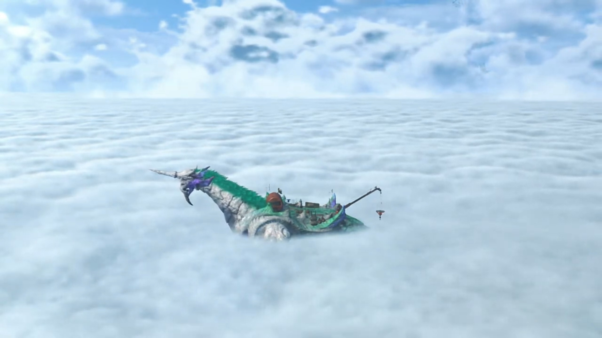
"Story goes that when the world was young... Everyone in Alrest lived on the Tree, together with our divine father, the Architect. According to the tales, it was a bountiful land. And the people there held the power to command even the heavens themselves. They called that paradise... 'Elysium'. But then, one day... we were cast out. Nobody knows why. Perhaps we angered our creator, or perhaps it was something else entirely..."
While waiting for it to cook, he searched the crate for anything profitable. Those unwanted rubbish were lowered down with the crate back into the ocean. {{footnote: 落叶归根}} He dumped the materials in the bin, and opened up the cabin roof for the warming sun to shine in.
"All we know is we were forced to leave Elysium to live here, in Alrest. Where it turns out, life was pretty hard. But when it seemed like we would surely die out, the Architect... took pity on us... sending his servants, the Titans, to save us. The few of us who survived... settled on the Titans... and, we've lived in harmony with them ever since. But now, those Titans... are beginning to die out."
He sat down on the crusty red-hot roasted lobster pincher, ready to eat.
"Aarrrrggghhhh... The brazier does my weary old bones much good..."{{footnote: Imagine putting some heat over some part of your body to warm it up. How does that feel? Or going to a sauna?}}
"You want me to move it, Gramps?"
"No, that's quite all right. Leave it right there... aaaaahhhhhh..."
"Righto."
They were enjoying when they heard a whale-song-like tone echoing from the distance. Alarms beeped within his forehead; in awe, he stood up and went and look at the direction. A Titan whale leaped above the cloud sea, its body disintegrating. The light-blue crystal on its chest that gave its life shone bright for the final time{{footnote: 回光返照}}, before dying out. The stony Titan crashed into the ocean, sunk down into seabed, its existence no more. Wave shook Gramps, Rex held on tight. But nothing felt more sad at the moment than to see a Titan fall{{footnote: 陨落}} before their eyes. Even his tone died down. "Not another one... Been happenin' a lot lately..."

"Mm... More so than before."
"I wonder... if anyone was living there."
"I-it seems not. And if there had been, they would have all left by now."
"Makes sense." But no, that does not provide relief. Where are they to live at this rate? "Hey, Gramps, d'you think... Fonsett Village will be gone too one day?"
"It would not be today, or tomorrow, but one day, yes, it will fall..."
"And you too?"
"That's how it goes with us Titans... There's- no- way- around it."
"Eventually... there'll be nowhere left to live."
"Sadly..."
And their hope? The single bark with its root deep underwater, the bark stretched high atop the sky, a giant umbrella at the very top with very little branches just below, and none further down. "So... You Titans were born up there, is that right?"
"So they say, for what it's worth." He swung his head around, looked at the tree, and added, "Mind you, I was born here, on Alrest. As for my ancestors, who could say, where they were born..."
"Can it really exist? This Elysium? And the creator, who's said to live there..." He needed confirmation, but no one could give him such. Though he can hope for.
"A land of plenty, atop the World Tree... If such a place did exist, perhaps we could all live in peace... with no need for fighting."

"Sure would be great." Except it's too far away. "For everyone... even folks in Fonsett. If the divine Architect can see us now, I wonder what he thinks..."
Whatever worries for the greater all you have, they could do nothing to prevent Titans from dying. Some stretches and slaps on both side of one's face wakes one up to the present moment. "All right! Back to making money!" He checked the dustbin, suggested, "I think this haul should be enough for today. Oi, Gramps! Care for a little swim to the Argentum Trade Guild?"
"You're planning on selling it now? Urgh... It's getting toward my bedtime..."
"Don't play the lazy old man with me. There's plenty of sunshine left!"
"Kids these days... No respect, I swear..."
Translator's note on environment: Bazaar lined the sides of the rights of way inside a giant hall. People were walking, looking, trading; merchants were usually Nopons. The decorative lights lured customers to visit their stores. The guild is a ship strapped to a giant floating puffer-fish-like Titan, with smaller size puffer fish also strapped below it as extra force. This, is Argentum Trade Guild.

"Why, if it isn't Rex! How's business?" He had Gramps docked at one of the ports, unboarded himself.
"Going all right, else I wouldn't be here."
"Fair point. So, which one am I unloading?"
"We can leave that until I'm done negotiating. Shouldn't be too long!"
"Well, mooring is 15 gold per half-day."
"I'll have your gold after I sell the stuff, all right? Later!" And he's gone afar.
"Hey, hold on! You know I can't do credit... Urgh, He does it every time, too..." Then, he turned to look at Gramps. Big eyes looking at small eyes.
"No wallet, I'm afraid..."
"Figures..." he scratched his head. He can only wait.
Meanwhile, before Rex entered the guild hall, one of the ship parked at the port caught his eyes. A metallic battleship. "Awesome... This thing's huge, and it's not even a Titan ship!"
At one of the stores, Rex was speaking to the Nopon behind the desk. "WHAT, THAT'S IT?!!!"
"Is life, meh! This still more than I give to non-friend! If you bring military supplies, then you get good price! Ceasefire between Mor Ardain and Uraya not keep for too much longer, methinks. So weaponry is hot item!" Soldiers were shopping at other bazaars for supplies. "Well? What friend think? I make it worth your while!"
"I told you before, I stay away from that sorta thing."
"Ohhhh, is shame! Rex good salvager, could be good way to earn pretty penny! Waste of talent, if you ask me! Anyhow, where were we?"
"I'll take your offer. 200 now, and you know what to do with the rest."
"Okie doodles! Sending monies to, Corinne of Fonsett Village. Is right?"
"Yeah."
"Is beautiful thing! Sending money home at such young age. I touched! Wish my own dum-dum littlepon did same!"
"It's 'cos Gramps doesn't charge rent, hehe. All right, I'm countin' on ya!"
"Roger! Pleasure doing business!" He already walked away.
Two human-like bodyguards of a Nopon walked down the stairs and called out, "Hello, Rex!"
"Pupunin! Been a while!"

"Rex looking high spirits! Ah, no, how say... Yes, peppy!"
"Been worse! So, you got something for me? New job maybe?"
He nodded, "Mmm something like that. Ah, by the way... Rex come from Fonsett Village in Leftherian Archipelago, yes?"
"Yeah, that's right. Why d'you ask?"
"Y-you should go straight to boardroom of Chairman!"
"Wait, what's going on?"
"Chairman Bana, ask for Rex, by name!"
"The Chairman? For me?!"
Bana can't help but wore every luxury goods on every fingers and eyes and neck and head he could have. The hat makes him looks like a pirate, though. The Green Nopon, upon Rex entering, spoke with strong tone, "Thank you, for accepting summons! I, Bana, Chairman of Argentum Trade Guild."

"P-pleased to make your acquaintances..." He looked to his right, found a beautiful girl that looked at him with her nostrils. To his left, another one, but less showing her 'higher-up' status.
"Me hear from Pupunin that friend is salvager of some, renown. That being case, I have, teensy weensy thing, to ask of Rex!"
"A request straight from the Chairman?!" His own excitement and tendency to kiss the higher-ups washed over his brain, filtering out any weirdness and unfittings{{footnote: i.e. Something's not right here, but one don't know what.}} in the atmosphere.
"Reward is, 100,000 gold."
"A hundred thousand?!"
"Friend hear right! Actually, that, just the advance. Another 100,000 provided upon completing job."
"200,000 gold in total? I-I must be dreaming... I'll do it. I hereby swear to use every skill I possess to ensure this job is successful! I promise I won't let you down! Hahahahah!" The measly 200 he earned, exclusive of the others sent back to the village, is nothing compared to this value. Every cell in his body wagered with excitement, holding a celebration party.
"You agree, without even hearing details of job?"
"Oh, oh, right... Um... What kind of job is it?"
"You really have skills for this?"
"Of course, I'll be fine!"
"Meh, if you say. Here, crew will explain the task. Bring them in." Not that he could find that many willing people fast!
"Sir." The high-nostril woman turned around and opened the door behind her. She walked out for a while before leading them back in. First came a cat-eared girl around his age wearing orange sweaters with fair skin and some drawings on her face like those painted on ancient tribes. Beside her, her companion, a white tiger, followed her into the room.
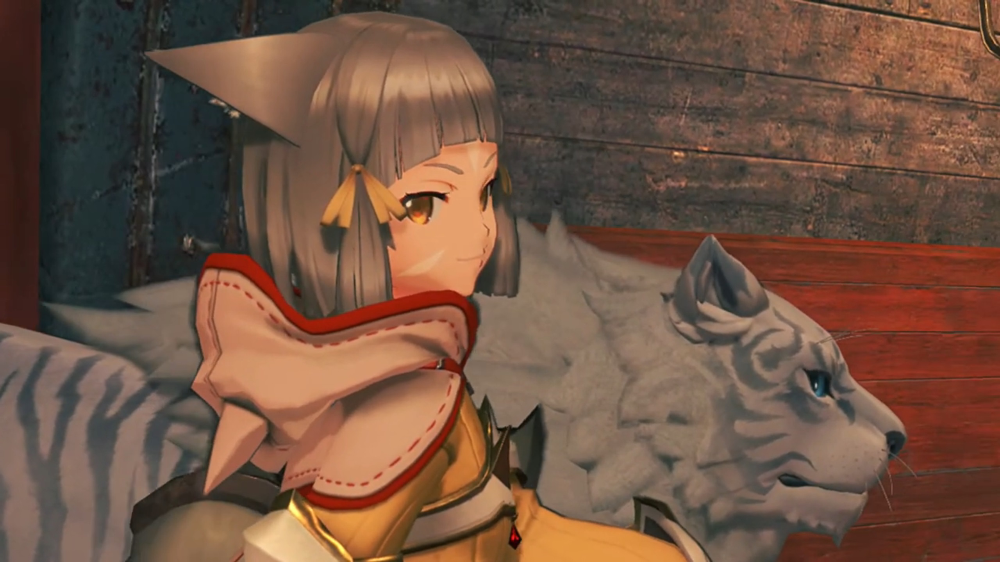
Behind her was a strict-looking guy wearing black armor with black short hair gelled up; his thick eyebrows doesn't make him look like a nice guy.

The final guy with neck-long white hair, wearing a half-mask that covered only till his nose, with a katana attached to his back.

In shocking eyes, he exclaimed, "Drivers...? And... Blades?! Whoa! They look so cool!"
"So... There's something that we want to haul up." The white-haired guy got straight to the point. "There were some current shifts. It showed up in an uncharted area. But it's a looong way down."
"Nice... I like a good challenge!" He was strict, but Rex kept his optimism despite the lack of reverberations from the others.
"Bana offered to assemble team of veterans for this job. But this crew veeery picky. They want small elite team and only from Leftheria. That when Bana have stroke of genius! Should hire Reeeeexxxx!!!"
"Hah ha! You made the right choice!"
"Thhh... Um hmmm..." The girl couldn't help but laughed at his 'idiocy'. "A child salvager? Jin, don't tell me we're gonna have to hire some babysitters for this outing too."
"What the hell? You look as much like a kid as I do, lady!" Already he pointed his fingers back to her unpleasant commands.
"At least I wouldn't wet myself at the promise of a measly hundred grand!"
"What're you tryin' to say?!" He walked forward as if about to pick a fight. Her tiger got between them, and out of fear he took steps backwards. How anger clouded one in forgetfulness that she's a driver.
"Ahem... Rex, was it?" asked the tiger. "I implore you to excuse, my lady's discourtesy." It, he, bowed his head to Rex.
"Dromarch! What have I told you about speaking for me? Shut your..."
"Drop it, Nia." The black-haired guy cut her off, impatient spoke, "Though I do see your point. In any case... It should be easy enough to make sure..."
"What?!" And his body grew larger in front of Rex as swords were slashing at him. Reaching the edge of Bana's table, he drew his sword and blocked the guy's; but his full force only equaled his simple one-handed press. "Ugh!" That broke his defense, but it's enough to prove his skill. "What're you playing at?!"
"Well well well..."
Nia was shocked as well, "Malos! What good is it beating up a kid?"
"You said it yourself, didn't you? What if the kid's not up to it?"
"I said nothing of the sort!"
"You did think it though, right? And anyway, now we know. You'll do right enough. Though you don't look like a Driver..." He was still holding his defense, even when Malos already sheathed his weapon. "Where'd you learn those Arts?"
"Gramps showed me a thing or two. Even when I was little, that was his idea of playtime."
Not that he cared. "Well, you've got some skill, I'll give you that. Guts, too. Kid, you better work hard." He and Jin then left the room. One of the blades that looked like a monster with tails followed behind.
"Hugh..." Whatever, she don't even look at him, walked out after them. Dromarch gave a bow before dragging along.
Bana had headache, "Meh-meh-MEH! Friends are such rowdy bunch!" From his pocket, he tugged out a big sack of gold, bang it on the table. "Here is advance. Use to buy what gear you need, then go to dock, on starboard! Bana has arranged, excellent vessel for you there."
"You got it." All the excitement from such money had drowned with such dangerous a party. If he had not learned, his would have leave the room with his body dragging a line of blood behind, dumped into the infinite cloud sea below, and became feast to some passing Titans. Not that he would leave right now that he accepted. He needed the money anyways.
Footnotes:
The Quest
"...and that about covers it. Alllll right, I'll see ya later! Should be back in a day or two. Take it easy, Gramps!"
"That does not 'about cover it' in the slightest! Why would you take a job you know nothing about? You don't even know who your employer is!"
"This came straight from the Chairman, remember? What more do you need?" But how trustable is the chairman, whose aim all day long is for profit? "Anyway, I'm off. You can take a nap while you wait!" And he ran off.
"H-hey! Come back here, will you?! Rex!"
"Wheeling out the Maelstrom for this? Bana sure has deep pockets..."
Nia and the others just arrived, she started quarrelling with him yet again, "Gawking at a boat? What are you, twelve? Wait, maybe you are twelve."
"What's my age got to do with anything? I can tell an awesome feat of engineering when I see one!"
"You don't close your mouth soon, you're gonna swallow a fly."
"What's her problem? We're nearly the same age. Also, you might wanna watch where you stand, otherwise when we cast off..." The rope to anchor the boat wrapped a circle around, and she stood within the circumference, "that rope'll take your leg off."
"Uhhh!!!" She jumped off, as if it was a giant beast.
"Gotcha!"
"Why you little!"
"Now look whose mouth's hanging open."
Malos, Jin, and the blade had no time for such kids play.
Then, someone bald wearing salvager suit that looked like a 'standard' bodyguard approached, "Rex, we're heading out. There's no one seeing you off, right? You got night watch. Till then, rest up inside."
"Aye aye. Later!" And she leave the girl arguing by herself.
"Hmph!"
The ship, attached to a small balloon puffer-fish-like titan on strings, leave the port for its destination. As it took off, the boat leave contact with the cloud sea below, soared along the skies.
Translator's note on environment: The ship had ladders up the top rung for lookout. A door at the deck leads to the cabin. The exterior had nothing too fancy about, neither do the interior; built for survival. Though, water leaking from the top doesn't make it look too sturdy. This is C.S.E.V. Maelstrom.{{footnote: Not sure what C.S.E.V. stands for, though.}}
Rex was at the top rung for night watch. The platform was not too small, perhaps 1 meter by 1 meter. A lantern was attached to one side of the fence. He looked through a binocular. Scanned right, until he saw one object in the distance.
"That's the black ship from the harbor. Is it... following us?" But before he could analyze the situation deeper, someone called out from behind,
"Ugh, it's waaaaay too cold up here." He turned around and found Nia. Her tiger wasn't seen anywhere near her.
"You!"
"I'll have you know I've got a name. It's Nia. They've started boozin' below decks. You should join 'em."
"Why aren't you there?"
She turned her back towards him, "It's not that I hate it, I just... really don't need a headache right now."
"Huh! Good thing you're not a salvager, then."
She took a step towards him, "Why's that?"
"Swim like a fish, and drink like one too. That's the Salvager's Code."
"Ugh, sounds terrible. I don't think I'll be changing careers..."
"Hmm... Probably for the best. Anyway, I bet you Drivers earn a hell of a lot more than salvagers do!"
"So kid..."
"My name's Rex."
"Hmph, OK, Rex. Why did you start salvaging in the first place?"{{footnote: It's wonderful, how conversations could start with mocking but recede into something deeper beneath the surface.}}
"That there." A spiral of circles glowing bright green in the night, like nebula clouds spiraling around its center.
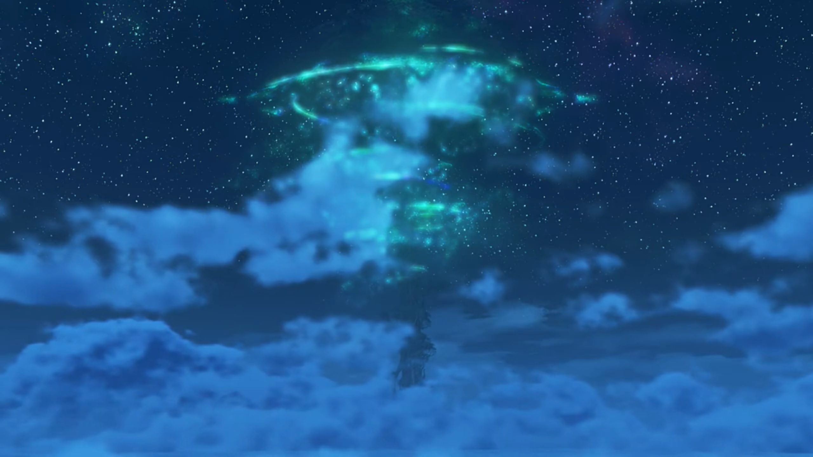
"The... World Tree? I don't get it."
"You know, you find all sorts of things digging through salvage... Some of it trash, some of it treasure... but all of it from people long gone. Have you noticed how there's fewer Titans each day? I saw one go under just the other day. It was a pretty big one. There must have been loads of animals still living on it... Living space is running out... day by day. Sooner or later, we'll be the ones sinking down into the Cloud Sea. But up there, Elysium is waiting for us."
"Pff Bwahahahahahahha!!! Seriously kid? 'Elysium'? Don't tell me you believe that guff! So that's, uh... why you're a salvager? It's just a lie for children, and that there is just an overgrown shrub!"
"IF there's a way to get up there, maybe it's hidden below the clouds. Is it really that crazy?"
"Seriously though..."
"There'd be no need to fight over dwindling land and resources... No need to worry about our homes sinking away... Everyone could have peace and security. I mean, a dream like that... isn't that worth believing in?"
"Nobody can tell you what to believe, but... Ahem... 'Everyone', huh...?"
"What?"
"I always thought, people were pretty selfish by nature. But you..."
"Huh?"
"D'you have parents?"
"Nope. When I ask Gramps, he told me they died when I was just a kid."
"'Gramps'... Oh, the same one who taught you to use Arts?" she recalled.
"Yeah! He basically raised me himself. He's not like us, though."
"N-not like?..." She walked to the edge of the fence, where Rex were already looking out at the sea. He turned to look at her, and she continued, "I'm not sure I catch your drift, but this Gramps of yours sounds all right."
"Huh..."
"And you're all right too, kid." No objections on not using names. She added, "Not that different from me."

Thunder and storms raging hard in this region. Braving the location was shaky. Some crew member called out, "We are in position. All personnel, report to stations."
That woke Rex from his nap. He continued to listen.
"Salvage team, suit up, and proceed to hatch."
He took his helmet and found the bodyguard crew member giving him (and his fellow other salvagers, including Nopon salvagers, all dressed up) instructions, "Your target is located, inside a shipwreck 450 peds straight down. Searching the wreck while submerged is too high-risk for our tastes, so... we'll be using flotation devices and cranes to lift the hull first. Next, you'll split into teams, and explore the interior. Once the target is found, retrieval can commence. If that's clear, let's begin with attaching the floats. Get- into position!"
Up there, Nia shouted while the salvagers were leaving for their jobs, "We're paying you lowlifes a lot, so don't screw it up!"
Rex complaint lowly, "You smug so-and-so..."
The ship opened itself up, allowing them to exit and reached for a metallic netted platform attached to the anchor that could be lowered down.
"And submerge." The bodyguard whom followed behind them gave instruction. One by one, they jumped off into the dark waters below.
So dark even two headlights cannot sufficiently illuminate their vicinity. But his eyes were trained from years of salvaging. "Is that it?" He got closer to take a look at it, commented, "It looks pretty ancient... Is that the... propulsion mechanism? I've never seen one that shape before... Which country made this?"{{footnote: While he could see the dark in the dark, we couldn't. Just like camera taking photo in dark room is pitch black, your iris, however, would see not pitch black, but dilating your pupils to allow more light in, you can see the shapes with whatever little light reflection it can get. Only in totally dark room without any light do your eyes failed to make out the shapes and sizes of objects.}}
He worked his way attaching the magnetic balloons, together with other salvagers, before swimming back up. Huge balloons were pumped up underwater, bringing the whole ship up with it. The storms continued raging as the sunken ship float to the surface.
Nia gaped, "Whoa, that's massive!"
Malos noted, "The appearance matches our reports... But it's what inside that matters."
The bodyguard gave instruction in the background. "Object is secure. Proceed to second phase." The three turned around for that.
Rex waited for Nia and the others to approach him. She praised, "Excellent work! You're not half bad, you know that?"
"I do this for a living, remember?"
"All teams, Proceed. Inside. When ready!" That's the bodyguard giving instruction again.
Malos: "Right then, let's get moving."
As they walked, Jin turned around, instructed Rex, "You with us."
"Me?"
Nia was surprised, "You're gonna drag the kid along? Seriously?!"
Malos tried to let her guards down, not to think too much yet, "Guess he thinks you need all the help you can get."
"Oi!!"
"Gahahaha!!"
"Omph!" She could only jump feet at his rudeness. The only person left suffered, "Well? Don't just stand there! You've got your orders, haven't you?" Leaving without a word.
Translator note on environment: The whole ship is tarred black; and it camouflaged into the thunderstorm atmosphere. Nothing could be seen from such surface therefore. This, is the Ancient Ship.
As they were walking toward the entrance into the cabin underneath, something was punching on the door. They stopped to prepare for eventualities. A creature came crawling out after smashing the door open.
"Whoa!"
Nia: "Let me show you what a Driver can do!"
The monster disappeared and left no trace after being killed. "Amazing!"
"So that's how Drivers and Blades fight..." another salvagers exclaimed.
"So ruthless... It's like they're monsters themselves." commented the 3rd salvager. Nia eyed on them, and they walked away, presumably back to their job.
Rex then commented, "Nice! I'm sure glad these Drivers are on our side! You too, Dromarch!" Dromarch acknowledged.
Nia brushed it off, "No need to get hysterical, it was a walk in the park..."
"Yeah, but still..."
Malos and Jin had already walked in front, the former shouted back at them, "That's enough yapping, you pair of brats. Let's MOVE!!!"
Nia: "Tch... Talk about self-important."
"Gramps always taught me to respect my elders..."
"Elders...?"
Both: "BWAAHAHHAHAHAH!!!" Dromarch had to rub off their saliva splatting on his face.
Nobody noticed that Pupunin had also sneaked behind, aboard the ancient ship, hiding behind some crates. The dark sure helped his concealment.
Back in the Argentum Trade Guild, Bana was watching through Pupunin's point of view the live situation on the ship on a mirror that displays, commented, "They make short work of monster. These no ordinary fighters. Big job in Mor Ardain going well too... There much money to be made from these people! Ohohahahahahahahah!!!"
The interior of the ship wasn't barren; there was an alligator-like salamander with sharp razor teeth and two-legged blocking their way.
Malos: "Not planning on letting us past, huh? Sounds like a challenge."
Bringing it down, Malos called, "Jin, check this out. There it is. Addam's crest." It's ensigned on the door, sealing it.
Rex was curious, "'Addam's... crest'? What does that mean?"
Jin had no obligation to answer, instructed, "You. Open this door."
"Me?"
"This door, will only open to one of you people."
"One of me? What're you talking about?"
Malos was impatient: "HURRY UP AND DO IT! We're not paying you to ask dumb questions!"
"What the hell? You can't treat hired hands like that..." But anyways, he turned around and walked towards the door. Looking at it, he scratched his head and asked himself, "Now, how do we open this thing?" He tried to search for any holes for keys, or weak points which he could break it open. No avail. Looking back at the crest, "Oh, hey..." He tried touching it. Blue light shone and it opened itself. "So that was a release toggle..."
White fog shrouded their vision. Rex tried walking in first. Electric sparkles beneath his feet, but did not trigger.
Malos: "Just as I thought..." Nia ran after him, but Jin called out,
"Wait!" Both turned around to see what he got to say. "There. Open that door too." Rex nodded back and walked towards it while they waited. Upon release, he said, "Let's move."
"Wh-what is that thing...?" Nothing to the side caught his attention, but there was a bridge towards an island in the middle of some bright pool, hosting a girl in red shirt. He dashed near it to look through the glass case. "It's a... girl...?" She had her hands on her chest, asleep. His mouth gaped widely at what they're coming for. Why would she be sunken deep beneath the ocean by herself? For how long had she been sleeping?
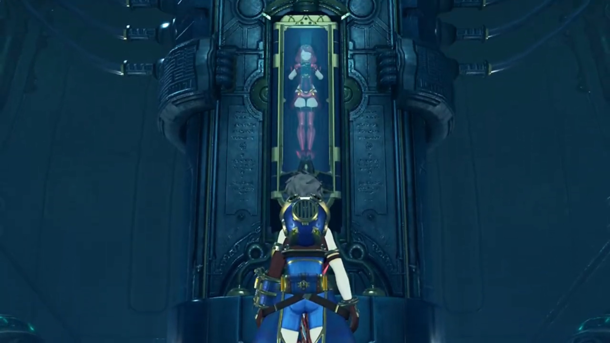
Then, some bright green light below the bottom of his eyes attracted his attention. His attention, previously on the girl, missed out what else there was. In awestruck, he tilted his head slowly downwards. The bright glowing crystal attached to the Ricasso of the sword, the shape of a cross, though the 'hands' triangular and rectangular, emits a heartbeating "blop blop, blop blop" that cleared his mind of all thinking. He felt out of control, dazzled, as his mind could not make of anything else except the heartbeats.
Jin and the others just walked in; the thick fog do shroud their vision somewhat. They saw their target, stopped just entering the door.
Malos whispered in his ears, "Look."
"Yes. No mistaking it. That's the Aegis."
Nia got closer to eavesdrop, looked back at the girl and them and back the girl, confused, "The... Aegis?"
Rex's back was on them, they can see what he's doing but their attention was not on him. His hands slowly lift, without him knowing, closer and closer to the luring crystal. No other thoughts pass through his brain.
Malos just noticed, "Hey, BRAT!!! Don't even think about touching that!"
"Huh?" That knocked him out of being dazzled, but a little jerk and it came into contact with the crystal before jerking away. Green motes were evaporating off the crystal, the process irreversible.
Jin decided quickly. His hand on the hilt of his sword, a blinding white light surfaced. At near the speed of light, he thrusted the sword through Rex's heart, ending his life.
"Ah!" Rex was still trying to make do what'd happened when consciousness was faltering as a cold metallic object pressed against his organ muscles. He tried to look down, but energy were dwindling away. Jin thrusted deeper to make sure; blood dripped from the tip of the blade and his wounds. His visions were getting blurry, still questioning the ultimate question of curiosity, "B-but... why...?"
His head were already throbbing as consciousness were fading.
Jin answered, "Don't take it personally. It's an act of mercy. At least you won't be alive to see what's coming." Malos would had done the same thing, but Nia's soul was shocked out of her shell. Her friend, just a few moments ago, killed by her companion? Jin emotionlessly pulled the sword out and let Rex's corpses dropped to the ground. He slashed off the blood still sticking on it, before taking another slice at the sword Rex touched, bringing it into pieces. Like rubies, the shards showered on the ground, some on Rex's bodies.
Malos commented, "Ugh... what a waste of time."
Nia couldn't understand, "Hurggghhhh... JIN!!! Why did you kill him? Why?! What did Rex ever do to you?! Jin!" He didn't bother answering.
Malos just looked at him walking past towards the exit, ordered, "Let's ship out the Aegis. Nia, call the Monoceros!" She wasn't taking orders immediately, clenched her fist tighter and tighter. How their respect for her is nil; does she even belong there? Jin's silhouette faded behind the mist; her anger did not fade with his.
"Ding!" He slowly clambered on his feet, the grass brushed over him where he laid. "Uh... Ungh..." Where is he? What is this place? Grass, trees, oh, and there's a single tree amongst the flat grass in the distance, with some red shirt figurine standing below it, looking afar. He knew where to go. "Ding..."
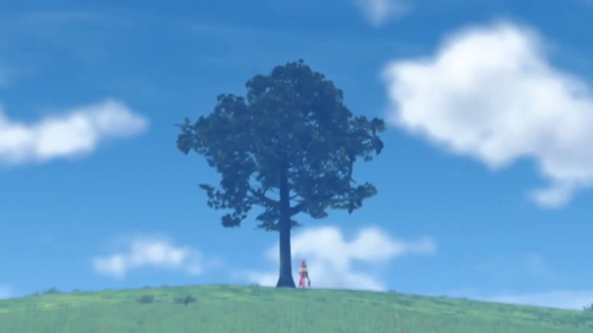
"Ding..." Now she is clearer. Her left hand pressed against the tree, still in the same position. He stopped. "Ding..." The wind brushes the grass and their ears, but he could not care less. "Ahh... e-excuse me...?"
The rustling of the leaves, "It's such a mournful sound..."
"Huh?"
"It hasn't stopped. Not... Not in all these years..."
"Hasn't... stopped...? You mean that bell sound? Is the... Praetorium... uh somewhere nearby?... Uh... w-where are we?" Her words are reassuring. Feeling uncertain, he was urged to get close to someone secure, to brave hand in hand what uncertainties lies ahead. His feet moved without him realizing.
"This is... Elysium. The land where long ago, mankind lived in harmony with their creator. It's where... 'We' were born."
"Get out! R-really?" Had this not been his dream, worrying about decreasing landmass year after year, and now he's on it? He must be dreaming. Across the lake was a town among the forest, and a Church or Town Hall stood up higher atop the hill; and layers upon layers of hills behind it.

He was awed by the environment, yet his curiosity, after the initial scan, brought him to her. Staring closely, she finally looked back. The emerald-green Cross-shape crystal on her chest stood out, "Is that a Core Crystal? You're a... Blade?"
"M-my name, is Pyra."

Such introductions surprised him. Had he not realized, if not smelling her breath, feeling her body heat. A crimson light red swooshed over his face, and he stuttered, scratching the side of his cheek, hoping she wouldn't notice, "What? Oh, right! M-mine is..."
"I know you. You're Rex, right?"
His curiosity temporarily suppressed his shyness, looking back at her, "How did you... know my name?"
"Just now, when we came into contact."
"Just now? Sorry... I can't seem... to remember how I got here..." He scanned the environment again, trying to recall to no avail. He turned his back on her, and her smile dimmed, looking back at the edge of town.
Hesitatingly, she reminded, "You were... killed. Stabbed through the heart, by Jin."
"Jin?... Through the...?" Now he remembered. He touched his chest; there was not a hole in it, but he could felt phantom pain that washed back on him. His eyes widened in disbelief, covered his mouth as if cover himself from vomiting, "I remember now! That bastard stabbed me! Oh man! This is bad! Everyone in the Guild is in danger!"
Pyra watched the panicked Rex turned around and ran back; but he dragged his knees along the soil when he realized, "No, wait! I can't do anything if I'm dead! Titan's foot, if I wasn't dead I'd kick that guy's arse!" And he kept banging on the floor.{{footnote: What about Gramps?}}
Pyra grew sadder and sadder, more desolate. She slowly walked towards him, "Rex, I have a request." He looked back at the only companion he had now in heaven, whom continued, "Can you... take me to Elysium?"
"Elysium? But... isn't that... here?"
"This world is merely a memory. An ancient, half-forgotten memory of what once was." He slowly stood up. "The real Elysium... lies in your world... atop the World Tree... that rises from the heart of Alrest."
"Memory...? So it's, like an illusion?" OK, "But there's no way. I'm dead, remember? How, can I help, if I'm not breathing?"
She hesitated for a moment while his mind wandered, offering, "I will give you... half, of my life force. That way, y-you can be revived... As my Driver. As the Driver, of the Aegis."

"The Driver... of the Aegis?! Wh-what the...?!" What's the Aegis? And he, a nobody, can be a Driver? And he can be alive again?
"What will you do, Rex?" Can he walk beside me? Will he be willing to? Centuries of waiting, her hopes dwindled like a candle-tip; with a light blow, plunging through deep abyss.
"Is this place, really your home?"
She nodded, "It is."
"And it... really exists?"
"Rex, I know what you're thinking, and you're correct. By... coming, to this place... you can save the world. Save it from the slow demise... that is its fate."
"We... wouldn't have to live... in fear. Then there's only one choice." He dashed towards her, calling out, "I'm in. Let's go to Elysium!" He pat on his chest with full confidence, "I'll take you there myself!"
The uncertainty-induced anxiety get washed away, for now, someone would walk beside her, hand in hand, whatever happens.
"Thank you, Rex." She slowly opened up her Core Crystal; it shone bright green. "Now, place your hand on my chest."
He took a second to be surprised, "What?! A-are you sure?!" He looked closer at the crystal; it was reverberating an echo that sucks his mind in, in, in. But not luring -- he can hear her voice, the beating of her heart. Slowly but certainly, with his index and middle finger, it contacted the crystal. Energy flowed from her crystal through his hand, gathering on his chest.
A bright green light engulfed both of them, and teleported them out of the world of fantasy. A dream shall forever be a dream, let the light destroy it, and we shall move forward, to reality.
Her casket had already been removed from the ship. He laid on the floor, fingers jerked a moment, before, like a puppet hanging on string, pulled up from the floor, amidst green motes repairing the hole on his chest, forming a crystal the shape of X. A replica of the crystal he wrapped on his hand, the sword regenerates. unleashing the shackles on its blade, turned into flames. It's time to revenge.

The downpour was even stronger than before. Malos carried Pyra's casket over his shoulder. She trailed behind, but heads dropped at all times. For the first time ever, she questioned their decisions.
Malos see no point for emotions, ordered, "Nia. End them."
"End? Like what?"
"The price for their lives has already been paid in full. Now that we have finally obtained the Aegis... The fewer living souls know about it, the better." The other salvagers were watching from afar.
As if letting her watching Jin ending Rex's life is not enough, now he wanted her to take action? On the innocents whom their family were waiting back at home for their return? "I-I can't do that! These people haven't done anything wrong!"
"I don't understand you." He stopped and peered over his shoulder. "Now, now. Have you forgotten why you came here to begin with, Nia?" One wrong word and you'll have to watch your ass.
"N-no, but..."
"Oh, for the love of... Fine. I'll handle it myself." He then turned around and slowly walked towards them. Nia watched in awe.
Suddenly, the casket started burning. Nia backed a step, and Malos was shocked, "Ho-...! What the...!!!" He threw the casket forward to a distance. Flames swallowed it whole, and a beam shot into the air; the phoenix glided and hit the top of the cabin entrance. Within explosion and flames, Pyra returned to life.

"Aaaaaaaaaaaaiyah!!!" Molten lava melted the deck from the cabin below, and another pillar of flames shot up the sky as Rex came back to life.
Nia, with surprising tone, "Rex?!" The X-crystal{{footnote: And of course, minus the X and you now have Pyra's crystal. It should fit, right, the puzzle?}} in his chest shone especially bright; their focus on where his hole had gone. Their show had made the hull in flames.
"You! And that sword. CAN'T BE!!!"
"It's kinda low to stab a man in the back... You. Bloody. Psychopath! Pyra!"
"Here!"
"Cover me!"
"Got it!"
Jin put his hand on the hilt, but Malos denied, "Jin. Leave 'em to me."
"Aaaaaaiyah!!!"
"Hngh-!"
"Gah!"
"Sorry, kid. I can't let the likes of you just claim her power for yourself. This is as far as it goes." Pyra on the other side tried to flank Malos, but his blade faced her, calling out,
"Aegis! Over here!"
"Just... leave it out!" And Malos started fencing with Rex.
Nia: "Give it a rest, Malos! Can't you see he's just a child?!"
"A child? Don't make me laugh! This kid... has made himself the AEGIS'S DRIVER!!!"
"The Aegis's... Driver? Rex is..." Her mind spun incessantly; what the spark had just happened?
Despite becoming a driver, he, a newbie, had no fight for an experienced pro. He passed the blade to his Blade, whom slashed an X attack at Rex. "You're done!"
Pyra reached there and raised a shield on time. The explosion shook the ship. "Thanks, Pyra!"
"You're welcome. Now, don't let up!"
"Yeah!" And both zig zag towards their opponents. Malos's Blade slashed at them, trying to block their way. Pyra blocked the attacks while Rex prepared the attacks. "Aaaaaaaiyah!!! Everybody, go, now! Quick!" Malos and his blade just dodged his attacks, not fighting back. The others listened to him, ran back towards their ship.
"Malos! Here!"
"I don't think so!" Malos gathered energy in the weapon, aimed at the bridge that connected the original ship to the ancient ship. The others were running abroad it.
"Hey, you bully! Over here!" If he attacked, he could not block the incoming flames. He chose to defend instead.
"Hurrrgh!"
Rex and Pyra embracing each other side by side, holding onto the sword together, "Burning... Sword!!!" A huge explosion at where Malos stood. The others had returned to their ships. Nia's mouth gaped wide. Did they killed Malos? Jin didn't even bother helping. The smoke dimmed and their swords clashed; he blocked it.

"You brat. How can a nobody like you...? Ahhhh, but with those eyes... I guess I should've been more wary... from the start..." It's just like him, Addam's.
"What d'you mean?!{{footnote: Still had time to ask when you should focus on fighting?}}"
"Like I'd tell you!" The purple energy ball gathered on his other hand, punched at them. Round 2.
"You're good, kid. It's no simple feat to control the Aegis like that... however..." Rex was dashing towards him; he waited and gathered the dark energy, caught his sword by bare hand, and "ARRRRRGGGGHHHH!!!" punched hard in his stomach, swung him around and flinched him back.
"Agh!" The sword flew off his hands.
Pyra was having difficulty on the other side dodging attacks as her attention swiveled to "Rex!"
"Don't get cocky, you little shit!" said he whom dashed towards the boy whom felt his muscles not listening to his commands.
"Dromarch!"
"Understood!" That's when Nia rode herself and tried to intercept.
"What?!" The surprised Malos found himself flanked by some water bursts. He stopped to shield his face, and saw her riding her tiger, dropped in front of Rex. "Get out of the way, Nia! Have you gone MADDDDD!!!"
"You're the one who's off your nut, waling{{footnote: Not sure if this is a valid word; it's the subtitle, but one can't comprehend. Did she meant 'wailing'?}} on a child!"
"Nia... I don't think you quite comprehend your position."
"I get it, but-..."
"You're starting to PISS ME OFFFFF!!!" As he was angry and his blade got back beside him to fight the newcomer, Pyra took the chance to take her sword, make a turn and came back,
"Hya!"
"Ngh!" He forgot he had to first deal with her. Fencing and fencing, leaving flames everywhere they clashed. "You're pretty sharp for someone who's only just woken up."
"Pyra!" His stomach still hurt; he effetely stood up but had not the power to continue fighting. Are they going to lose here? Even with their new ally? They were no match for the one still feeling like a breeze, what says Jin whom hadn't yet laying his hand on the battlefield.
"Takes me back, to 500 years ago... What's the deal with that appearance? I'm guessing your goal... is Elysium..."
"That... is OUR. dream!"
"Then I have no choice, but to stop you!" They prepared for another battle, facing down one another.
Just then, the black ship that followed them from the harbor flanked the ancient ship, appearing behind Pyra. Rex watched in awe as the machine guns were aimed for the ancient ship. "Pyra, watch out!"
"Huh?" She turned behind, found them firing.
"Pyra!" He forgot his pain, for her pain covers his. He quickly dashed towards the location. Their dream had not yet started, she could not yet die; his promise for her had not yet fulfilled.
"Ahhh!!" Injured but not dead. She struggled to stand up.
Rex reached her, grabbed her, asked, "Y'all right?!"
"Mm, more or less..." she reassured.
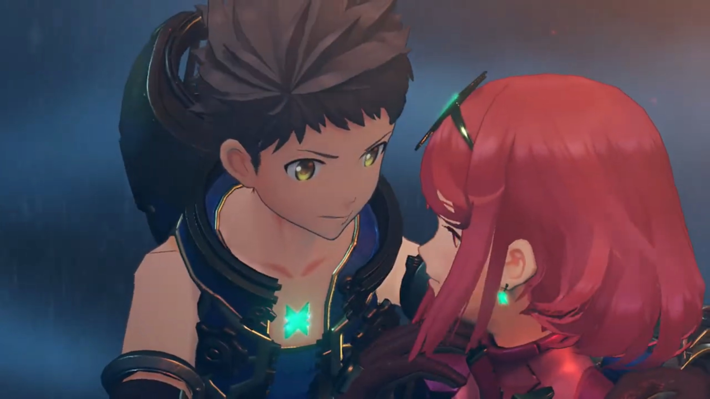
"Stop this!" They hadn't realized whose ship was it, when Dromarch and Nia were already going after it, shielding them behind. More attacks came; Dromarch put on shields to defend the incoming missiles. But it was too suppressing, and the flames swallowed the four.
"Hogfh..."
"Nia!" Rex attention switched as he adeptly maneuvered the hull of the tilted sinking ship after her. The angle wasn't right, and she was off the hull's boundary. He jumped without a moment's hesitation, plunging together towards the wild water below. He accelerated faster than her, caught her by her arm, immediately turned around, and shot an anchor{{footnote: that he usually used to pull treasures.}} at the crevices. They hung tight; she went unconscious.
"You're a tough one, kid, but there's only one way this can end!" He looked over the edge where Rex was below, ordered the machine guns pointing at them.
"Oh sh-..." With a burden by his side, his anchor not strong enough to move them faster than the guns can shoot. Yet, their luck retained, for explosion swallowed the guns before it can shoot.
"What's that?!" Why is everything going out of control just at every junctions for them today?
That tone... that whale-song-like tone... no mistaking. It's a flying titan. The silhouette of stretched wings amidst the dark sky lit only by moonlights and burning ships, looming larger and larger.
"Gramps!!!" He swooshed past Rex, found him still alive, zoomed back into the sky to switch direction. His eyes scanned what enemies Rex had on the deck. There, the white shirt that stood there, not moving.
"Jin... Still you persist... And is that... Malos?!"
Jin: "Azurda..."
The scouting is done. He flew back up high into the air, while Jin prepared his sword, to stop anyone barricading him from achieving his goals. Melee encounters wasn't Azurda's strength; the redness lit his face as fire Ether particles concentrated into repeated fireballs, suppressing every single inch of the deck. Jin could not wait for him to near, pulled his sword and sliced the incoming fireballs.
Engulfed in flames they were not hurt, but it's enough to shroud their vision. He never meant to join the fight, banked toward where Rex was still hanging, instructed,
"Rex, get on!"
Pyra saw the chance to escape, vaulted onto Dromarch, whom took her down along the hull, running alongside Azurda in sync.
"Got it!"
Pyra: "Rex!" She held out her hands, he reached out his arms. They swiveled behind like kites, till he gathered the strength to vault himself and sat behind Pyra. Reaching the end, Dromarch jumped high onto the air. Azurda took his aim accurately, catching them with his back.
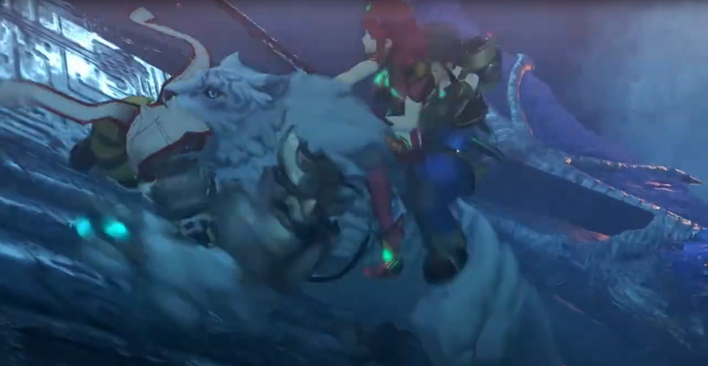
"We're going! Hold on tight!"
Malos shouted, "Stop them! OPEN FIRE!!!" The machine gun on the ship was quick to swivel around, aiming and firing at them. Flames scorched the Titan's body, but he did not wail. Releasing the whale-song-tone, he got further and further out of the gun's range. "Turn her around! Ready the cannon!"
Jin: "It's no use. They're out of range."
"Dammit! They gave us the slip..."
After some moments watching Azurda's silhouette getting smaller and smaller, Jin ordered, "Turn around."
"We're not chasing them?"
"The Aegis is awakened... That's enough for now. I'll have Akhos hunt them down." He walked away while replying.
"Hmph." At the edge of the ancient ship's deck, he could not deny. "That will have to do..." No more sign of them.
Footnotes:
Washed Up
"And so, Pupunin wisely ran away for dear life."
"WISE? WHO WISE NOW?!!! YOU. USELESS. IDIOT!!! Why can't Pupunin not even die properly? WHAT IF THEY ASK BANA TO REPAY MONEY, hmm?"
"Huh? Die? Repay who?"
"Meh! None of your business. Anyway. Tell me where Rex and Blade went."
"R-Rex, Titan and friends ran away! Went to south of Cyclus Sea -- after that, Bana know as much as Pupunin! S-storm was very thick, so Pupunin..."
"Pupunin lose them, yes?"
"Yes, but..." The tears in his eyes trying to fake it through.
"And then run away like coward?"
Sweat started dripping like water hose from his forehead, "Y-y-y-yes, but..."
"Meh-meh-meh-meh-MEH!!! BANA NOT WANTING FEEBLE EXCUSES OF PUPUNIN!!!" He banged hard on the table. The mirror jumped up, and Pupunin on the other side also jumped up. "JUST GET BACK HERE! You got LOT OF WORK to do!" With fluttering wings, Pupunin immediately hung up on the other side. "Meh-meh-meh... Even pricey insurance Bana take out on Maelstrom go to waste..." Money minded, huh.
As he calmed down, he looked to the map of the various Titans location updated to their current, "Still, how interesting... Heading southward from Cyclus Sea... In current season, that likely take them to Gormott. You, girl! Get Consul Dughall on the line, IMMEDIATELY!!!"

"Yes, sir. One moment, please." And she walked up front to the mirror and tuned the frequency.
"Why, if it isn't Chairman Bana. What an unexpected pleasure. May I just say that I admire how you rebranded those broken Core Crystals. And selling them on to the dunderheads back in Mor Ardain -- absolutely sublime!"

"Bana did not call to hear pointless flattery! And blabbering about Core Crystals on UNSECURED LINE?!!! IS DUGHALL SOME KIND OF IDIOT?!!! What if Indol tap. Our. COMMUNICATION?!!!"
Dughall jumped back, as if covering his mouth would shied them from listening, "O-o-ohhh, of course! I'm very sorry!"
"Meh, forget it. We got bigger- fishies- to fry."
"Oh? What's going on?"
"Listen. Up."
"Unghhh..." Blink, blink, blink. The blurred image of worrying Pyra turned into grateful Pyra. "Huh... Pyra?"

"Oh, thank goodness. Y-you aren't injured at all, are you?"
"No, I'm... fine, I guess... Where...?"
Grass was relatively thick, but the trees were even lusher and denser. Together they held fogs from escaping.

"I'm not certain. We seem to have... washed up on a Titan of some kind."
"A Titan?"
He tried to tilt his head to check it out, when his mind ran through what they had just gone through yesterday. Nia, Dromarch, Gramps... "HUUUHHH!!!" Now he remembers! Immediately, he jumped up from her laps, his hearts beating as fast as they could get, the worries brought his adrenaline to max. "Where's Gramps? And Nia?"
He scanned around, looked back at Pyra. She stood up after him, shook her head. As if receiving bad news, he was about to collapse, scanned the surrounding irrationally for any signs. But where are they? Pyra waited for him.
Then, something amongst the grass caught his eyes. His salvager helmet. He told Pyra, "We gotta find them! They can't be far!"
"OK!" Together, they dashed for the only rights of way from the ledge they were at now, deeper into the forest.
"Gramps!" He was laying there, effete and heavily injured. He quickly got near him.
"Hmm. It is good to see you uninjured, Rex." The blue motes that floated on the surrounding like fireflies sending him off.
Pyra had left some space for him and his lifelong companion. Yet she felt "How awful..."
"Hold on, I should have some herbs..." He dug into his pockets, searching for it.
"You are kind, but... no amount of human medicine, would suffice."
He listened to him, "B-but..." he still wanted to try.
"Weep not, my boy. This is- my- fate."
He tried to say something, but "I... I can't help it, can I?"
"No parting is forever. We will surely meet again, when the flow of the ether wills it..." The purple part of his head started glowing bright, about to disappear. Both he and Pyra felt heavy rocks in their heart; he had went out of his way to saved them, and this is his finale? Gradually, slowly by slowly, his whole body glowed bright as ether dissipates back to Mother Alrest. "The days with you were the- best- I- ever- had. Until- we meet- again, Rex..."
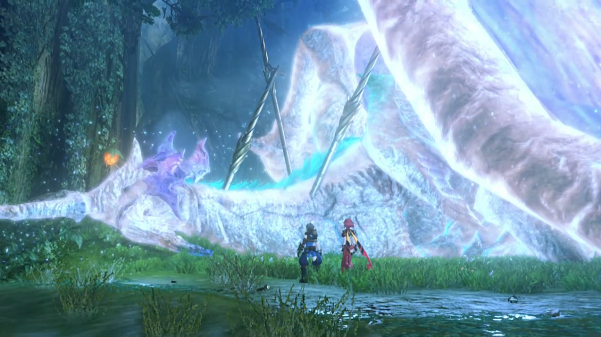
"Gramps!" He dashed forwards, tried putting his hands on him; but he dissipated beforehand. Nothing left except motes floating up the sky. His teacher, his guardian, whom raised him up from baby to teen, now gone forever before his eyes? Had he said he's ready to look at life and death plainly? He tried to catch then within his hands, but to no avail. What's gone is gone. "Gramps! GRAAAAAMMMMPPPSSS!!!" Knelt on the floor, tears flowing down his cheeks. Pyra covered her mouth, sensing his feelings, looked aside as her tears rolled down her cheek too.
And a baby voice called out while the atmosphere was desolate, softly, "I told you not to cry, didn't I, Rex?"
"Hngh... Hngh huh..." He's not listening, too into his own emotions.
"Rex..."
"Unhungggghhhh unhugh..."
"Rex..."
"Grampsss!!!"
"REXXXXXX!!!" Are you deaf?
Pyra can't help not to laugh. Rex looked in front. A super tiny Titan sat in front of him, wiggling its tail. Rex was dumbfounded. Who is this tiny little guy in front of him? He rubbed his eyes, cleared his tears, and looked again. Pyra got closer beside him, examined. They looked at each other, surprised, as both exclaimed, "WHAAAAT?!!!"

Tiny wiggly tails, super small core crystal like diamond shape chest, tiny wings, and a tiny thorn, "G-G-Gramps? How is that-?"
Pyra: "It can't be..."
"Use your eyes! Don't you recognize me?!" As if he's recognizable.
"Um, well... not really, no." She can't help it.
Rex snuffed his tears, stood up, logically said, "I am so confused right now..."
After much explanation, Gramps concluded, "So you see, by maximizing cellular regeneration{{footnote: Ahem, where had your biology gone?}} to retain all vital bodily functions, I seem to have reverted to a larval stage." He flapped his wings as he leveled with Rex's eyes.
He looked away, commented, "Well that's quite handy. Must be nice to be a Titan." What a waste of tears is the real comment.
With proudness in his tone, "This, isn't something just any old Titan can do! Only one so advanced as myself-... Erm, Rex, are you angry?"
"HMPH! I'm not! It's more that I didn't want you to see me blubbering like a baby!"
"Ho ho. It's okay to be angry." And he stopped flapping his wings, immediately dropped to the ground.
"So... when will you be back to your old self?"
"Goooood question. No more than... 300 years."
"Th-three hundred years?!!! But I'll be long dead by then!"
"Hmm. I suppose that's true." Like he doesn't feel anything different between him alive or dead.
"But... what about my house?! Do I have to live on the streets?!"
"Perhaps this is an opportunity to fly the nest."
"You mean... pay rent?"
"Ho ho, miserboots!"
"It's a massive extra expense! Still... Glad you're OK, Gramps." Gave him a thumbs up. Now that's solved, he turned to Pyra, "Oh, shoot! We can't stand around all day! We have to find Nia!"
Gramps flew up again, asked, "Nia? You mean- that- Driver- and her- Blade- from before?"
"Yeah. They kind of saved our lives."
Pyra: "I do hope they are all right."
"Gramps, do you remember anything?"
"I- remember... crashing through -many trees, before landing- here... They- probably- fell off then."
"Hmmm, that's not a whole lot to go on..."
Pyra suggested, "Perhaps we would have some luck... following the trail of broken trees?"
"Good thinking, Pyra! Let's go!"
"By the way, Rex, is that a- Core- Crystal- I see- shining on your chest? Just- what happened- to you?"
"I'll tell you later. Right now, we need to find Nia!" He picked Gramps up and threw him into the Salvager's helmet hung by his back.
Gramps felt excited, "OOOOOHOOOOOHHHH!!! Now this makes a nice change!" He whom hosted he on his back for long, now he hosted him on his helmet. And he said nothing, led them along the trails, searching for their missing new friend.
They continued down the path when he heard something, "What's that sound?"
Pyra voiced her experience, "I felt... a ripple in the ether. It feels like a... Driver is using a Blade in battle. I'm certain of it."
"Let's go."
"OK!" They quickly get to the point of attack.
Nia and Dromarch were facing down a giant brog{{footnote: A frog/toad}}.
"My lady, leave- this- to me!"
"I'm not just going to abandon you, Dromarch!" They prepared for engagement when a fireball flanked its side.
"What?"
"We're here to help, Nia!" Just in time.
"Rex?! What're you doing here?"
"My lady, now's our chance! Let's attack!" The brog licked where it was hit while Rex and Pyra took the chance to join Nia and Dromarch in battle.
"All- right, then!"
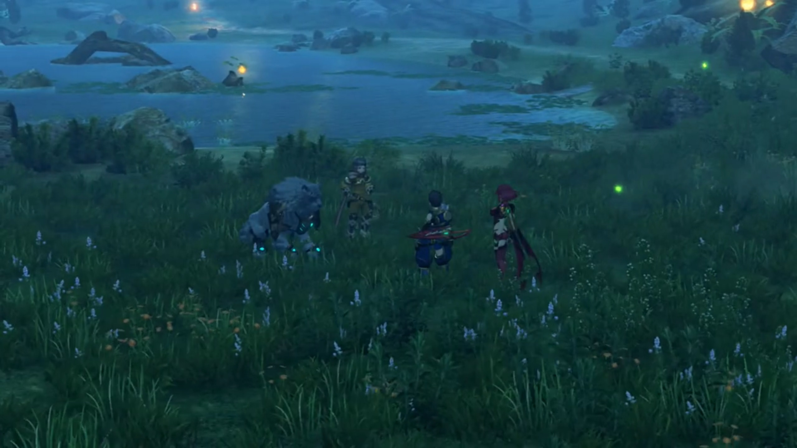
After the battle, they have time to talk. "So why are you guys even... Well, I guess that's a stupid question."
"Indeed." agreed Dromarch.{{footnote: One think that's Dromarch? But one couldn't be sure.}}
Rex felt gratitude, "Seriously, it's good to see you. And you're all right."
"Right back at you. Hey, by the way. What- happened to the big guy who saved us? The Titan?"
"Are you talking about me?" He heard himself being called, climbed out of Rex's helmet, and revealed himself.
"Wait, what? How?"
"That's... sort- of a long story. Let's get somewhere we can rest. I'll tell you all about it then."
"That seem prudent. My lady?"
"Sure. Lead the way."
They made a campfire in the forest, sitting around in a circle. "I see. So you two are off to Elysium... Listen, I never thanked you properly. For... saving us, I mean. Dromarch said that you... carried us all the way here."
"We owe you... our lives, Titan."
Gramps sat himself in between Rex and Pyra, hands crossed, "No need to thank me. After all, you were the ones who saved Rex."
"Don't mention it." Guilty washed over her as she was ashamed by what her group had done. Now she felt like an outgroup. Not to dwell on the topic any longer, she changed it, commenting, "So, you Titans can regenerate. Pretty handy."
Gramps's nose immediately raised high into the sky, hands on his waist, lifting his chest, repeating the chant he hadn't stopped every since he reverted stages, "This isn't something just any old Titan ca..."
"You can retire that line now." Rex cut him off, too tired of his baffling.
"Excuse me?! I'd like less of that attitude! If you had listened to me and declined that reckless job to begin with, we wouldn't be in this mess! 'Take a nap' you said, like I was some kind of doddery old man..." Meanwhile, Dromarch had laid himself behind Nia, and she laid backwards, using his body as pillow.
"Okay, okay, I get it! I'm a terrible disappointment. Look- how- sorry- I- am!" Nose high onto the sky.
"Can- you- not- muster, even a shred, of sincere remorse?"
"Sorry, but I can't."
"Um what?"
"If I hadn't taken the job, they'd have got their hands on Pyra."
"Rex..." Awww that was so sweet.
"I couldn't let that happen. No way. They can never take her."
"Hmm hmmm...." Not that he can rebut, nor does Nia.
Nia slept herself wholly on Dromarch, using him as a bed. Rex just laid on the floor, dozed off. Pyra was out in the plains herself, looking at some rocks and trees. But her mind dwindled. A lot had happened since she woken, but till now, her mind was occupied by worries of escaping and her new partner and friends. Now that all that died down, feelings washed her aback. She had time to think, without distractions seeking her.

Like a mosquito, Gramps slowly floated to her, called out, "Hello there. Still awake, I see."
"I-I can't... seem to sleep. It's good to see you again... Azurda."
"Likewise. Though you've changed a lot since last we met, Pyra."
"I supposed I have. A lot's happened."
"Yes it has. I wanted to thank you... for saving my dear Rex. And... I need to know - what- you told him, is that what you really intend?"
Whether or not she really feel that way, the complications that's tearing her apart, the different voices in her heads arguing to find her 'true self', if there is one, she had to answer "Yes. It is... my true desire." with utmost confidence.
"I see. Well, that's good enough. I have no reason... to doubt you, Pyra."
"That said... I do have one other goal now."
"Jin, and- Malos."
"I cannot allow them... to continue with their current course."
"The fate of an Aegis... never changes..."
"Right."
"And- you're going to get Rex... mixed up in this?"
"Hrrr..." How guilty she felt; he whom never understood what he'd gotten himself into, decided only to walk beside her, had not considered what obstacles would lay before them, on the road to Elysium{{footnote: and they may even, one day, met a barrier so high they can't vaulted past!}}.
"I'm not blaming you. No matter how hard you tried, that boy would find some way... to get involved." Plus, they now shared their life forces, 'interlinked'.

Nothing from her to say, so Azurda changed the topic, "I- see- half of your Core... is missing. Seems you've taken on... quite a burden."
"Azurda, I..."
"Promise me... you'll take care of Rex."
"I will." What burden to bear on her shoulders herself, without one to share, even when they're by her side, she could not voice it out. Physically, they could be with her, but mentally and spiritually, she held back, needing more time, for both herself, and for her de facto partner.
"Urrrrrgghhhh... Urgh urggghhh!!!" He had just woken up, the others already waiting for him. Quickly, he get to the point, "Right then. We should probably try and find a town or something. Does anyone have any idea... where we are?"
Nia, without hesitation, answered, "This is Gormott. A province of the Ardainian Empire. You must've seen the Gormott Titan before?"
"Yeah, only from a distance, though."
"We're- somewhere around its belly."
"Sooooo... this is Gormott, huh?" So much worries, he hadn't had the attention to examine closely their current location. Now the forest looked eerie, then something struck, "Hang on a second, Nia -- your ears. Are you Gormotti?"
"Well done, genius. Took you long enough!"
"Gormott is the land of my lady's birth."
"Wow. Well, that's reassuring."
She gave direction, "If we wanna find a town, the first step is to get out of this forest. Keep heading up, and we'll hit the plains soon. The town's that way."
"Brilliant. Let's get going!"

The plains was alluring and huge. From a platform, they could oversee the whole plains. This is Gormott Province. At the other end of the plains was a town, set at the edge of the Titan, with several diving points for salvaging. The head of the Titan was far away, had horns like that of a Capricorn. Waterfalls, some trees with their roots sticking out in the air called breathing roots, and the animals which'd taken refuge were too small to clearly distinguish from afar. It awed Rex and Pyra, one whom had not been on such continent before, the other, for the last 500 years, had repeatedly stayed at the same place in her dreams. Nia was proud to host the two.

"Oh... my goodness. What a wonderful view!" For a moment, she felt not the constant background depression, but an uplift in emotions at such heart-calming scenery. The breezy winds, the scent of grass, all soothed the mind, calmed the heart.
Gramps agreed, "Spectacular indeed."
"Yeah, this is great! Especially after slumming it on Gramps's back for so long!"
His contentment was overturned, "Hmph! It served you well enough!"
Nia nudged towards the only town at the plains, pointed out, "Over there, that's Torigoth. Biggest city in Gormott. I'll accompany you as far as the city. After that, I'm afraid you're on your own."
"Oh, on our own?" Rex was surprised, she's not coming with them?
"Of course! I would have thought even you'd know why I can't be seen with you."
"Because... you're supposed to be one of them?"
"I haven't known them very long, but you know. They're still my crew."
"Your crew? Even after they tried to kill you?"
"That's- as may be, but they're the closest thing I have to a family."{{footnote: It's not easy to escape a family, however bad it is. You'll know it if you're in one, or if you read one, though the latter would be much less extreme if you'd never experienced it for yourself.}}
"Nia..."
"Right. Let's go!" She had to hardened up despite, pushed forward, and lead the way.
Footnotes:
Gormott, Resonance, and Captured
The town of Torigoth welcomed them with an arc. Wooden plants lined the path, stiffening the crop-growing soft soil beneath. The crowds gathered at the square made the other parts of the town empty.
"So, this is Torigoth..."

"It hasn't changed a bit." Her memories brought her back to when she was living in the town. But are they happy moments? She doubted.
"Nia?" Pyra wondered.
"It's nothing. OK then. I'll show you to an inn. Then I'm out of here." And they trailed behind her.
Translator's note on environment: Most buildings single-storey high, made of metals. The horizontal windmill is the tallest man-made structure in town, exceeded only by the giant tree that shielded them from rain and wind and sunlight. Some extended their housings in their front door with a make-do roof, laying out goods and supplies for onlookers to look, and buy. This, is Torigoth.
As if never been to a town, or haven't been to one for too long, the group gingerly walked alongside, looked left and right; everything was new to them. Passing by a notice board, Nia walked past as if nothing caught her attention; but Jin and Malos's poster stuck high within her viewsight. Something in the back of her mind triggered; slowly and carefully, she tread backwards, till it reached the 3rd poster, hers, then she looked carefully. A fat tiger-looking (female???) sticking her nose and jaws out with sharp pointed nails, with wrinkles and decorations spreading her face.
"What the bloody hell is that? Don't tell me this is meant to be ME?!"

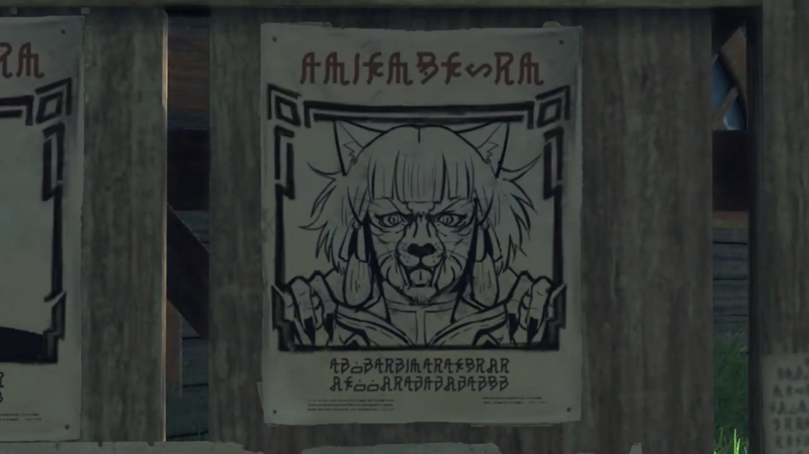
The group stopped right in their path, curious with what did she found out.
Dromarch spoke the truth, "A remarkable likeness, to say the least..."
"Oi, did you say something?" The eyes sharpened on him.
He realized what words tested her bottom lines. His mind turned around 10 times faster than usual, a quick reply to save his arses, "Ah, er, no. I-I fear they may have conflated our countenances, my lady. How very awful."
"Offfff.... GRRRRRR!!!" The other three still wanted to take a look when she landed her claws on the notice, scratched it pieces to pieces like a human paper shredder, and with a bang, raining poster shards. Shockingly they backed away, careful not to tickle her nerves.
"Fie! Who has the courage to heed the Empire's call? Your strong heart today, will build a strong Mor Ardain tomorrow! Of course, you get more, than a salary! Pension and benefits are included! Distinguish yourself, and you could even join the nobility! For. The. Glory. of the Ardainian Empire, AND HIS MAJESTY, EMPEROR NIALL!!! Come. Now! WHO wants to be the HERO of tomorrow?!"
His strong voice attracted the attention of the passing group. The square lined with humans upon humans, nopons upon nopons, all looking at the empty show. Nobody step up, even if the Core Crystal was placed in front of the 3 soldiers, awaiting the courageous. The middle extroversion soldier was doing the speaking.
"Hmm... What's the deal over there?" Rex wondered.
"Driver recruitment." answered Nia.
"Driver recruitment?"
She shared, "Recently, they've been recruiting Drivers from all over."
Dromarch added, "The pool of potentials, is ever shrinking. They must have run out of candidates in the military."
Rex wondered, "What do you mean by 'potentials'? I'm not sure I follow."
"Just see for yourself."
"Don't do it, bro, it's too dangerous! What will we do if something happens to you? Who'll look after us?" Many young Gormotti surrounding a grown-up Gormotti, trying to push him back. Yet his eyes laid not on them, even their plead could not suppress his 'greed'. The roads had not shortened itself, with the children obstacling him for long. Shoving her aside, he walked past with unwavering will. She subconsciously held on to his arm, trying to hold him back. "P-please..."
"I-I-I know it's dangerous, but... i-if I can b-become a Driver..."
"Outta the way, pipsqueak!" He was not the only courageous tester. A grown-up muscular buff Gormotti with all the muscles and six packs he had, walked like a gangster and shoved both the children and the grown up to the floor. They said nothing, getting used to being bullied in town. The lab rat walked in front of the crowd, shouted to himself, "All right, c'mon Blade boyo! Show me whatcha got! Hroooagh!" And he grabbed the Core Crystal by hand. "A-a-a-AAAAAAHHHHHHH!!!"
The power transferred from the Core Crystal shook his 'healthy' body. With extreme vibration, tremendous heat released into its vicinity. Without seeing the end result, Nia already predicted, based on experience, "Yeah, he's done for."
"Indeed." Gramps agreed.
"WAAAAAAAHHHHHHH!!!" Black eyes became white eyes, and he could take no longer. Blood splattered from the newly created holes{{footnote: On the video, you saw some 'water' sprayed from his body. That's actually censored blood.}} on his chest, on his waist, fountain high; he fell dead on the spot. Pyra was dumbstruck. What just happened?
"Oho, all bark and NO BITE! What a shame!" The soldier continued his speech, as his colleagues handled the procedure, went forward and held each side of the man's arms, dragged him along to the corpse dumping hole behind town.
Rex looked aside, covering the scene with his palm, but his eyes looked in between, a struggle between disgust and curiosity, "Eurgh, what just happened? All that blood..."
Nia explained, "Couldn't handle the Core Crystal's power."
Dromarch added, "That's what happens... when someone unqualified touches a Core Crystal. Truly- lamentable."
Rex was confused, "Wait, you need a qualification to be a Driver?"
Gramps suggested, "Perhaps 'aptitude' would be a better word."
"Aptitude?"
The soldier clapped his hands to attract attention, "Now, is there NOBODY else here, ready to test their STRENGTH for the GLOOORY of the Empire?! Oh! How about you? What say you? Step- forward, sir, with BOLD HEART!!!" His eyes scanned around the square, found the grown-up Gormotti previously he saw was walking up to the stage but knocked down by the now-dead corpse, summoned him.
"Nooo..." Their pleading does not help. The death of a muscular Gormotti could not stop him from treading bold steps forward. He could hear no longer, see no longer, except for the Core Crystal, at the very center of his vision.
But he did gave his final words as the guardian to the children, "Don't... Don't worry. Your big bro's gonna be a Driver, and then we'll be set for life."
All in chant, "Don't do it!"
But too late. He already laid his hand on the crystal. Energy transfer started with great heat emanating from, "Ah-ahh-ah-AAAAAAAHHHHHH!!!"
Nia can distinguish, pointed out, "There's your 'aptitude'." Rex couldn't distinguish, but watched the process nonetheless.
A bright light swallowed the bro, the core crystal gone before his eyes. The ball of energy transformed into a spear, before his surprising eyes. All that uncertain and the sour-bitter of life, all gone with both grips on the pole. Another ball of energy fell down like meteor, he turned and saw his humanoid 'standard' Blade{{footnote: Those non-special blades}} came to life.
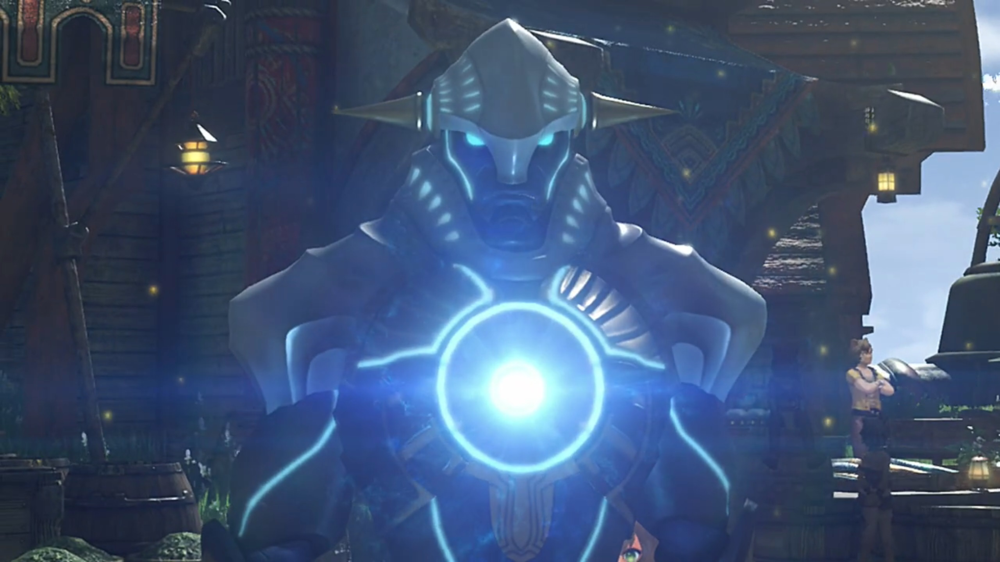
With elation, he called out, "I... I did it!"
The children were elated, surrounded him with constant chatter, "You did it!"
"I don't believe it!"
"Oh wow!"
Pyra was content at such scene, walked forward to look closer. Rex noticed something else, "The Core Crystal turned into... a weapon?"
Gramps: "This is how Blades, are born, Rex."
"What? But when I touched Pyra's..."{{footnote: Ahem, Pyra's where?}}
Nia cut him off before he could speak more, "She's a special case. Pyra is the Aegis, remember? So the usual rules don't apply. All that business with sharing her life force... It's- not- exactly normal."
"Wait, what does 'the Aegis' even mean?{{footnote: Gramps was stretching behind him.}} Jin and Malos... They called her that, too."
"Dunno. All I know is that it's some kinda legendary Blade. Why don't you just... ask her yourself?" Pyra's eyes looked to bottom left of her for a moment, before turning back to the scene.
Without hesitation, Nia suggested while leaving, "Let's go. No point sticking around for the enrollment ceremony and all that boring stuff." Rex gave Pyra a gentle touch on her shoulder. She gave one more look at the scene before catching up alongside.
The continuing path lead a downward slope, below a bridge they passed, when Rex stopped, his mind still lingering in the blood and Blades, voiced his thoughts, "This whole thing with Core Crystals, touching them to create Blades! It's pretty amazing when you think about it."
Pyra shaped the process, "We Blades start out formless, anchored to the world... only by our Core Crystal. Only the touch, of a potential... can imbue us with form, and being. And it is by these forms, we come to be known."
Gramps concluded, "So you see, my boy, in some ways it- is- only- the fated touch of a Driver, that allows the Blades, to exist at all."
"Wow! Why does it happen that way, though?"
"Now that is something no one knows. It's just how it's always been."
Dromarch added, "Blades come- in all- shapes- and sizes. Some- human-shaped, some- not."
Nia: "Some people say the shape depends on the kinda person the Driver is."
Pyra: "The resonance between, Blade and Driver, is a mysterious thing."
Rex recalled, "Pyra... She was, crying when I met her. Was she brought to life by someone once, just like a normal Blade?"
Thinking in his mind, "What is the Aegis, really?"
Before he could think or ask further, soldiers approached from behind, instructed, "Halt! Nobody move!"
They turned to see what's going on, when the direction they were to go also had soldiers. They were sandwiched in between, with no other ways to leave.
Making a circle, each guarding each other's back, Gramps exclaimed, "Oh dear... Looks like... imperial troops."
Nia: "Great."
Rex: "Hey, what's going on?"
The soldier answered, "That fugitive, in your company is an enemy of the state! A member of Torna!"
"Nia, a member of Torna?"
"It's her all right. Gormotti Driver, white beast-form Blade. She looks exactly like the wanted poster."
"What wanted poster?"
"See for yourself!" He took a replica of the tiger-looking-ugly-monster drawing Nia had clawed to shreds not long ago.
"Wow, it really does-..."
"Oi, watch it!" That tickled her nervers.
He's swift at saving his arse, "Ah, uh, I mean, no way! This doesn't look anything like... Wait, we've got no time for this! Who cares if it looks just like her?" And she hissed at him immediately.
The soldier neither cared, "Hmph. Now as for you... You look like- a Driver too. Registration number?"
"5...3...9...?"
"Knock it off, you fool. All new Drivers must register with Indol! No number means you must be an illegal, unregistered, Driver!"
"No, you don't get it!"
No excuses he accept, "You're coming with me! We'll see... what the consul has to say about this!"
Nia softly shared her plans to "Rex, Dromarch and I are gonna make our move. Get ready to run."
"We're not leaving without you."
"This is our problem, not yours."
"I'm pretty sure he wants to arrest all of us. So this is my problem, too!"
"Sheesh, you're a stubborn one, ain't you?"
"Gramps says the same thing."
"OK. we go on three. We'll go left, you go right."
"OK!"
Pyra: "Just give the word."
Nia: "OK, let's do this!"
The speaking soldier were shocked, backed one step, stutteringly muttered, "Y-y-you're going to resist? Seriously?"
"One... two..."
"Haaaaaa-A-All right, men! We've got them outnumbered -- move in, and take them down!"
"THREE!!!" And the battle begins.
"They're... so strong! Such strength from a measly two fighters... They're Drivers, all right!" The captain spoke while his fellow colleagues were fencing down the groups.
"Rex! Now!" felling all, Nia shouted.
"You got it!" They dashed for the other end of the bridge when blue flames raised from beneath the ground, bridge-high, blocking their escape route. "Wha-?! A wall, made of fire?!"
"Such a commotion." From behind the captain and other soldiers, a blue-purple theme women with fires on the surface of her body, wielding twin long solid metal truncheon{{footnote: 锏}}, eyes forever closed, walked into the scene, spoke with a soft voice, "Just when I thought I could enjoy a little peace, and quiet."

"L-L-L-Laaaaddddyyyy... Brighid!" The captain stuttered at her existence.
Rex was curious, "Brighid? Is she a Blade? Wh-where's her Driver?"
She answered, "My driver is otherwise engaged at present. I am here alone."
"No... Driver?" First time he heard of that.
The captain laughed furiously at his imbecility, "BAHAHAHAHAHAH!!! Lady Brighid is the 'Jewel of Mor Ardain'! The strongest Blade in the Empire! Even alone, she's more, than a match for you! Lady Brighid, these miscreants, are terrorists, working for Torna. Please lend me, your power, to bring them to justice!"
"Torna?" Without eyes, she can still scan the group with her sixth sense{{footnote: 神念}}. Nia had no attention from her, but the girl in red does. "That emerald Core Crystal... Could it, really be true? Well well. Captain Padraig, you are not to kill them. Take these ones in alive."
"Roger. Men, bring the you-know-what!"
"Sir!" They leave the stage to get their new weapons, while Captain Padriag fought alongside Brighid, waiting for their return.
"Hyagh!" Blue flames stretching at the group.
"Yaaaaa!" Red slicing flames going back at her. Shockwaves blew dust in Rex's face, which he shielded. Brighid seemed undisturbed. "Wha-?! She- she repelled our attack!"
Pyra: "She's so... strong."
Gramps reminded them, "Umm, And this is without a Driver..."
"Stop yammering! Just get her!" Nia and Dromarch jumped above air, poaching at her. The two soldiers just then gone had returned, fired two nets with amazing accuracy, first trapped Dromarch while still in mid air. Nia shouted back, "Dromarch! YAAARGGGHHH"
"Urgh!" They rolled to the ground, wrapped in cocoon.
"Ugh... Dromarch..."
Captain Padriag proudly explained the new invention, "This is an ether net! BAHAHAHAHAHA!!! Let's see you use your precious Arts, when you can't, draw ether, from the atmosphere!"
Brighid added, "Even Blades have weaknesses. This, is one such weakness. Without the flow of ether, Blades are quite useless."
"Nia! Dromarch!"
"Get outta here, Rex! Save yourself!"
"I'm not gonna do that! I can't just leave you here!"
"You've got your own mission! Just move it!"
"Yeah, but-"
"No buts! Go!"
Gramps added in the persuasion, "Rex, we must withdraw for now! It's our only chance!"
"BUT-!"
"You won't escape." The passing of the bucks had gained Brighid time to raised the flaming circle that encircled the group. Such intense flames scorched the skin of the two as they screamed in pain,
"ARRRRGGGHHHH!!!" They even struggled to keep standing on their feet.{{footnote: Surprisingly, the grass took no hit, remained green and lush despite.}}
"REEEEXXXX!!!" Gramps urged. Not much time left.
"Ugh, dammit! Huh?" He hadn't yet taken actions when he heard the whizzing sound from above. A ball with a light in it soared the air, hit the pipe beside the bridge, and out poured water at high pressure.
"WAAAAAHHHH!!!" The pressure washed the soldiers clean and tidy as they crushed into the ground below.
"Ugh, water!" The flames on her skin sizzled and her strength grown effete. The circle of flames had been extinguished by the 'rain'. Rex and Pyra took their chance,
"Now!", held the sword's hilt together, "Haaaaaa!!! Burning, Sword!!!"
"Agh!" The flames cut through the water and burst on Brighid, shielding her face and torso from impact.
"Pyra!"
"Yes!" They already turned around.
Captain Padriag was the one feeling nervous, ordered the soldiers, "Don't let them escape! Get... after them!" And the two footsoldiers ran after them.
Nia was grateful, softly spoke to herself, "That's right, Rex... Run, and never look back."
Brighid was equally impressed, did not join the 'getting after them' group, expressed, "To pull that off despite all this water... So, the legends of the Aegis were real."
Footsteps stamping amidst the dark twisting underground. Limited lights from the crevices showed them the way. Turning around one alley, they heard shouts from behind. "Hey hey!"
The exit to exposure under the sun was just beyond, but they stopped and turned around, despite incomings. Who was that calling? The wooden wall (hidden door) creaked open a small gap, and a Nopon wearing goggles popped out from behind, wavering at them, "This way, friends, come this way! Tora help you escape!"

"Who are you?" Rex was surprised.
"Quick, no time to explain!" His wings fluttered more furiously, urged. Rex and Pyra exchanged glance, decided to trust the non-dangerous looking potato creature. She nodded back at him, went for the door, and went through first. Rex eyed the direction they were coming from for any signs of soldiers, got behind her. Tora took the final watch, and clink, saw the shadows around the corner, quickly slammed the door behind with a soft thud. The door thus became the wall.
A short moment and the soldiers came and stopped right in front, but they noticed nothing extraordinary, followed along the path out into the open plains.{{footnote: If your attention was so focused on something, all the gorillas passing through a basketball field you can't notice, what says a bang or a thud that's not loud enough to shook the ground and catch your attention of potential danger?}}
Behind the door, they followed Tora along, with Rex asking, "Thanks, you saved us. But I gotta ask... why?"
"No reason."
"No reason?"
He turned around to face them, "Sorry, that not true. Truth is, Tora not like those big bully soldiers. Was thinking to test out shiny new Boom Biter on big bullies... That's when Tora see friends running from them. Boom Biter missed and- hit water pipe, but results not so bad, hey?"
"Oh, so you shot the pipe?"
"That right."
"And you're, Tora. I'm Rex, and this is Pyra."
"It's so lovely to meet you!" Pyra greeted.
"Good to meeting! Mehehehehe..."
"Huh?" Rex was confused.
"Ahhh Actually, Tora have other reason for save you."
"Which is?"
"Don't worry. Explain everything when get to house of Tora! This way!" And he led them on.
At the other side, Consul Dughall, in his office, listened to Captain Padriag reporting, "The boy, and his Blade, who seemed to be working with them got- away... But we apprehended the girl from the wanted poster, along with her Blade! The town is once again safe for-" The proudness in his tone made his chest high. Yet Dughall was slightly annoyed.
"Say, Padriag, do you remember what my orders were?"
"Sir?"
"I. Told. You. To capture the Blade with the emerald Core Crystal, Did. I. Not? Do you recall me ever telling you, to capture some, little girl, with barely a bounty on her head?"
"B-B-But sir, s-she's a member of, Torna..."
"I'll say it slowly for you, just so we're clear. Get. The Blade. With. The emerald-"
"Umm, Consul Dughall, sir?" Padriag interrupted.
"What?"
"I-I'm- not exactly sure what color, 'emerald', is supposed to be..."
"AGGGGHHHH!!! GIVE. ME. STRENGTH!!! IT'S GREEN, YOU IDIOT!!! EMERALD IS GREEN!!!" He grabbed the turquoise vase from the top of the table and stuck it to his face, "LIKE THIS! GREEN! GET IT, YOU CLOD?!!!"

"OOOOOOHHHHHH, GREEEEENNNNN!!! I get it now. So, emeralds are green, huh..."
"YOU DUNDERHEAD! HOW MANY BLADES, DO YOU SEE, WITH GREEN CORE CRYSTALS?!!! IT'S PATENTLY OBVIOUS!!! HOW DO YOU MIX THAT BLADE up WITH SOME, WORTHLESS CAT MONSTER?!!!"
Padriag can't wait to correct him, unable to read the situation, "Actually, sir, technically I believe that's a, tiger, rather, than a-..."
"SILENCE!!!" And he slammed the vase at his nose, brought him down onto the floor.
"Agh!"
"Consul!!!" Just during the worst time did a soldier ran into his house/office.
"WHAT IS IT?!!! HAVEN'T YOU HEARD OF KNOCKING?!!!"
"My apologies, sir! It's just that Lady Mòrag, has..."
"WHAT?!!"
"Special Inquisitor Mòrag has just arrived from the motherland."
"Already?"
"Her ship has just docked."
Now that was shocking, "Grk, this... THIS CANNOT BE HAPPENING!!!"
A giant battleship several storey high braved the cloud sea, sending ripples as it cut the waves skillfully. The battleship was implanted into the Belly of a Titan to provide energy. It drifted towards the dock of Torigoth.

After docking, the hatch opened and out walked Mòrag. She knew why she's here for.

Footnotes:
Tora, Mòrag, and Poppi
"You live down here?" Rex stood by the door after Tora and Pyra entered the chamber, scanning from an outside view. A wooden basement lit by ether lamps, with stoves and decorations and a table under a giant pipe-looking beam.
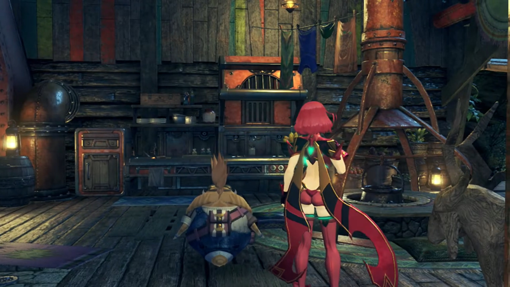
"This just back door. Front entrance over there."
"Makes sense." As he looked below his feet, "Whoooaaaa!!! Is that the Cloud Sea down there? We're so high up!" Trees and branches below, but even further down, the cloud sea.

"Nice view, eh? Tora likes to just sit and watch Cloud Sea sometimes."
Pyra commented, "You have a wonderful home." How she wished she had one too!
He was proud, "Meheheh! Anyway, um... Rex-Rex..."
"Rex-Rex?" He entered the chamber and stood beside Pyra.
"Rex-Rex. Tora explain other reason I help you. You see... Ugh. Tora always wanted to make Driver friends."
"Hah! Interested in Drivers, are you?"
"But of course! Tora think it amazing how Driver and Blade join spirits together to make big power! Tora reaaaaallly want to be sidekick of Rex-Rex!" Talk about flapping his wings incessantly.
"Uhhh, you know my name is just Rex, right? One Rex, not two."
"What is point?"
"Well, nothing, I guess. It just sounds a bit... different, from... what I'm used to." Continually scratching his hair.
"Doublename just show Tora's respect! Respect for great Driver! Rex-Rex should be proud!"
"I'm not sure I've earned all that yet... Ahhh, all right. You can call me Rex-Rex if it makes you happy. But instead of all this sidekick stuff, can't we just be friends?"
"Really? Tora... will- be... friend of Rex-Rex?! Hooray!!!"
"What a funny little guy. Hey, Tora! Do you know much about this town?"
"Huh?"
"You wouldn't happen to know where the army takes prisoners, would you?"
Pyra, all the while listening in their conversations, cut in, "Rex, you're not planning to..."
"We have to save Nia and Dromarch."
"I- thought you'd say that." says he whom lived with him for long.
"Oh! You talk about Driver and Blade who were with Rex-Rex before Tora's daring rescue?"
"Yeah."
"Mehmeh... Tora would have to ask around town for info like that. Umm... Before we do anything, time for food! All of today's running around make Tora hungry. Need food to help Rex-Rex!"
Gramps added, "I'm a little peckish too!"
But he was eager, "Can't we eat later? I want to find Nia and Dromarch **as soon as **possible!" Then his belly rumbled, refusing to help him.
"Mehehehehheh! Stomach of Rex-Rex tell different story!"
He turned away, "I... I can't help it, can I?!"
Pyra cut in while he blushed, "Um, if it's all right with everyone, I could cook something?"
Rex turned around, surprised, "Pyra? I didn't know you could cook!"
"Heh! Well as- long as fire is involved, I can do almost anything! Fry, steam, grill -- you name it." And she summoned a fire that scared the guys jumping back one step,
"Whoa!!!"

Then she complimented, "If you want ice cream, though... You might have to find someone else."
Rex: "Well, you can't have everything."
Delicious foods always washed away one's worries and thoughts about anything, to focus on the taste and the smell of the food. As he scarfed down Pyra's dishes, he exclaimed, "Oh man! This is delicious!"
Tora felt like heaven, "Ohhh yum-yummy! So super very tasty!"
Gramps held and bit into the food the size of his torso, exclaimed, "Simply. Exquisite! I haven't eaten this well... in 120 years!"
Pyra was overjoyed by their comments. "Glad you like it! It seems like I did OK... I was worried I'd have gotten a little rusty over the years."
Rex rebutted, "It didn't taste rusty at all! Uh uh, I mean..."
"But Tora is curious. Pyra is fire-using Blade, yes? When Tora broke that water pipe, Pyra could still make fire!"
Gramps, whom lived that long, didn't turned his brain around anyways with his limitless wisdom, "Come to think of it, you're right. That Brighid, the imperial Blade, she used fire abilities... just like... Pyra, but the water... seemed to douse... much of her strength."
Rex couldn't understand, "So... what are you saying?"
Tora explained, "This world full of elemental energy called ether, yes? Ether, comes in forms like... fire, water, and wind. While battling, Drivers and Blades both draw power from ether. But... fire not good with water. Other Blade woman got splooshy with water, so... fire powers all damp."
"But Pyra and I were able to use our powers with no problem."
Gramps: "Indeed. They were unaffected."
"Why?" asked Tora, and they all turned to her. She hadn't had the chance to speak while they were speaking.
"Um, well, m-my powers don't... come from fire."
"Mehmeh? If... powers not fire, why look like flames?"
"Th-that... may be a little complicated to explain..." She dropped her head down.
"Go on then? Tora like complicated things a lot!" The excitement in his voice.
"Ah, w-well, u-um, I, it..."
"Knock it off, Tora. Can't you see you're making her uncomfortable?" Rex came to her rescue.
"Meh..." such disappointment for a geek.
"Everyone has things they'd rather not talk about. Right?"
"I'm sorry. I-I'm sure... I'll be able to tell you about it soon enough."
"Don't worry about it. Right now, we need to think about how to rescue Nia." Now that they're full stomach, they could come to plan for the urgent.
Tora accepted the topic, suggested, "First, we go around town, and find all information we can!"
Gramps wasn't sure that would work out properly, reminded them, "Hmm, yes. I daresay... that we're all wanted criminals... by this point. Pyra... sticks out like a sore thumb."
"I'm so sorry..."
"Don't worry friends! Tora has an idea!"
Dughall and his soldiers awaited Mòrag, walking by herself down the bridge at the port, before he started his speech of kissing up, "Special Inquisitor Mòrag! To what do we owe this extreme pleasure? Had we but heard of Your Grace's visit, we could have prepared a suitable..."
She grew tired of his flattery, cut him off, "I don't... stand on ceremony, Consul. I'd rather you just did your job."
"Y-y-your Grace? Someone of your standing deserves to be treated as such! You are His Majesty's representative! Please permit us to lay on a meal befitting Your Grace. Until then, we would be honored if-"
Brighid had resonated her Driver's existence, approached from behind, cut Dughall off once more, "You made impressive time. I wasn't expecting you until tomorrow."
That surprised Dughall, "Ohhhhhhhh L-Lady Brighid!"
Mòrag ignored him, replied, "If we have found the Aegis then there is no time to waste. But I fear the passage has taken its toll- on our engines."
That her target is same as Dughall was unexpected. He surprisingly stuttered, "The Aegis? H-h-how do you-?!"
What fly swirled around, cannot be extinguished. She strictly asked, "Is. There. A. Problem. Dughall?"
"N-n-... urgh... not at all, Your Grace."
"Good. Now, you've captured a Driver from Torna. I am going to speak, with her."
"Wha-?! Uh urgh Why do you want-"
"Dughall. I don't remember asking for your opinion."
"Y-yes, Your Grace! I'll take you to her right away!"
She wasn't even tied up, brought by two soldiers to Dughall's office where they gathered. The tiger was not seen anywhere near. Nia stare at Brighid for long; she turned to see what Nia got to say, but "Hmph!"
Mòrag asked, "So, you are the Torna ruffian. I must say you look a little... different from your poster."
"A LITTLE different?! Whoever drew that should be the one in jail!"
"Hahahah. Yes, I would be angry too."
"You can drop the friendly act."
"You won't name your friends?"
"My friends? I'm not so sure I'd call those trigger-happy Torna goons 'friends'."
"I see. I think we have our wires crossed here. I am not talking- about- Torna."
"Huh? You're not?"
"No. I was referring to your more recent, traveling companions. The Driver boy, and- his- Blade."
Subconsciously, she muttered, "Rex and Pyra?"
"Well. That was easy."
"DAMMIT!" From within her hearts, she can't believe she voiced her thoughts so easily.
Tora, meanwhile, found a little red robin hood attire to cover Pyra up. She exclaimed, "This looks like it could- actually work."
"Good idea, Tora!"
"Right! Let's look for friends of Rex-Rex!"

Information gathering was easy, and they got back around the table, discussing what they'd found. Pyra, with fear in her tone, voiced her feelings, "Nia and Dromarch, e-executed, It doesn't bear thinking about!"
Gramps rebutted, "But getting aboard that warship, will be no mean feat. We're going to need an ironclad plan."
Tora: "Army port... is under heavy guard..." The map of the battleship laid out in front of them.
Rex, without thinking for a second, blurted out, "I guess we'll just have to mount a full-on attack!"
Pyra immediately reject his stupid idea, "No, Rex! We can't put everyone in danger."
"Right, sorry."
Her eyes scanned the warship for more info. And one drawings caught her eyes, the aha moments came. "There! This is... one of the Grandarbor's{{footnote: The tree that grew in the middle of the town taller than all buildings in Torigoth, shielding it from the sun, remember one's description?}} roots, right? If this map is correct, it goes all the way from the quay... to the hull of the warship. And here. It looks like some kind of cargo entrance. Could we sneak on that way?"

Rex fell in sync with her, "Oh, right! No one'll spot us if we sneak in from below!"
Tora added, "Security light around this entrance. At night, not even workers here."
Gramps couldn't think of anything else, concluded, "Looks like this is our only option."
"Then it's a plan!"
"Meheheheh!" What is such evil laugh about?
"Tora?"
He immediately spit out, "Tora- have- something- to- show- you."
The curtain drawn apart and revealed what's hidden behind the wardrobe. Immediately in sight are two cylinders with orange ether flowing within, a metallic blue head wearing a cap, plus metallic artificial hair, and a red scarf wrapped around her neck. A flower decorated her chest.
"What's this then?" asked Rex.
"Nobody ever see this before. Secret of Tora. An artificial Blade!"
"An artificial Blade?" Pyra was curious. Never heard of it before.
"I can't believe it." Not even Gramps can.
"Tora have always wanted to be Driver of Blade. But Tora..." and he got depressed, "Ugh, Tora has no... potential, to awaken Core Crystal."
Rex immediately rebutted without a second thought, "How could you know that? Surely you just have to try, and- ooh... You did, didn't you?"
"Yes, one year ago, Tora applied to Driver recruitment man."
They already recalled what happened to the muscular guy this morning, Gramps felt sorry for him, "Oh deary me..."
Pyra felt pitiful for him, "Oh Tora, you mean you...?"
"It was bad. Tora had nosebleed for three days!" He, by himself, waggling and vibrating in his room alone, without anyone helping him.
Rex couldn't believe it, "Just a... nosebleed?"
"What. You. Mean. 'just'? People. Die from loss of blood, you know?!!!!"
"Yeah, but from a nosebleed?"
"Anyway, moving on!"
No, he don't yet want to move on, commented, "For a near-death experience, you're awfully casual about this..."
"ANYWAY!!!! Back to Tora's Blade." Please don't satirize me with dwelling on the topic! "When complete, even no-potential Tora can be a Driver!"
Gramps was excited. "This is simply incredible! You built this Blade from scratch, Tora?"
"Ungh, it was started by Grampypon and Dadapon. But... Grampypon die, and... Tora still not know where Dadapon go to..."
"Oh..."
With extreme conviction, he swear, "So Tora will finish Blade myself and become a Driver like always wanted! Then, Dadapon hear about Tora's success, and come back home, yes?"
Pyra felt touched by his conviction, "Oh, Tora..."
Gramps had questions, "By the by, Tora, this Blade... As far as I can see, it looks complete. What is there left to do?"
"Meheheheh! All Tora have left to do is buy missing parts! But... Tora have no money at all!"
"Oh, really?" Such a reason for Rex to expend on.
"Really." said he, turning around, convicted.
"Nothing? At all?"
"Not even one gold."
"So... you're asking for a loan?"
"UHHHH, not... loan, hehe. Um, closer to... generous... donation!"
Gramps knew it, and Rex face blackened, "Just like a Nopon, huhuh. Always shrewd when it comes to gold!"
"B-b-but if Tora completes artificial Blade, combat capabilities will be... big help on mission!"
"Well yeah, if it works, you may have a point..." but Rex had many doubts. "So... how much exactly do you need?"
Turning around his face, he said calmly, "Ohhh, no more than... 60,000 gold?"
He jumped with raced heartbeat, "SIXTY THOUSAND?! D'you want a kidney as well?"
Pyra urged, "Calm down, Rex. I think we owe Tora our help. If it just money he needs, I may be able to assist."
"Assist? How, exactly?"
Gramps flew in front of Rex's face, strictly speaking, "Nothing illegal, I hoooope!" The last word was said with a bang on his head when Rex 'swat the fly' down to the floor.
"Don't even joke, Gramps!"
She took down the earring on her right ear, handed it to Rex, explained, "This is a natural crystal. I-It should fetch around, 60,000."
Rex rejected immediately, "No way! We can't let you sell that!"
"B-but..."
The fly had flew back up from the ground, looking left to right as they argued.
"Nooo, it wouldn't be right! That's it, I'm paying for the parts myself!" He brought his nose high, trying to be 'manly' as the sole breadwinner in the house.
"Very admirable." said Gramps, but he knew his finance all too well.
"Meh meh! Rex-Rex is too generous!"
But he gritted his teeth, "This Blade of yours had better be seriously useful, though, Tora!"
"Leave that to Tora!"
"Well then, let's go, I guess!"
"Yippee!!!" And the two already went off, leaving Gramps and Pyra back in the house.
Pyra wasn't too sure about that. "Will they really be OK?"
"I suppose they'll have to be..."
Thunder raged the cloudy nights; inhabitants retreated to their shelters. The ether lamp hanging by a thread shook gently like a pendulum. After spending the heartbreaking 60,000 gold, they finally had all the materials back at home; and Tora was meddling with the installation while the others waited.
"OK! All finished!"
"It's really complete?"
"Very complete. Just need to apply energy charge to activate!"
Gramps reminded him, "Tora, our friends' execution draws near. There's no time to lose. Make haste!"
"I know, I know!" Full of nervousness, he put his wings on the giant switch, "Ugh, Okay artificial Blade, it's wakey-wakey time!" He felt nervous.
"That won't do, Tora!" Pyra cut him off.
"Huh? Wh-wh-what Tora do wrong?"
"You can't keep calling her 'artificial Blade'! As her creator, the least you can do i-is... give her a proper name."
"Oh, um, well... Actually, friends, Tora did think of name for her. Very good name."
Now that's solved, Rex exclaimed, "Nice. Then I guess there's no problem."
Gramps asked, "Well, why don't you introduce us, Tora!"
"Right. Away!"
The storm was at the horizon, approaching the town. Thunder heralded before the main army arrival. With full excitement, "Now... Wakey-wakey! Tora's very own Blade! Poppi!"
He pushed the switch, and all negative charges were absorbed by the core of Poppi, leaving favorable conditions to attract more lightning to fill in the gaps. After a few strike, even the switch itself was not electric-resistant, sparkled with electric. But the operation seemed successful. Ether bulbs flickered as electromagnetic waves interfere with their workings. The house shook with such striking force. Yet she hadn't woken up.
He called, "P-Poppi?"
And the most sexiest and cutest reaction came online, "How may I be of service, Master?" The love love in her eyes and the vibrant eroticism it exuded, flabbergasted Rex, Pyra, and Gramps.

Someone immediately panicked, getting caught on his feet. "W-w-w-WAIT A MINUTE!!!" He blocked their sight as he jumped up and down, "Ooh! Forget you... see that! Tora must... change the settings! Kh-khm..." He then turned it off, and Poppi went back to sleeping state.
"The settings?" Rex was curious, but he was too nervous to answer them, typing furiously on the integrated keyboard on the switch. After some reprogramming, he gave a relieved tone, or probably, just to cover his awkwardness, "Ahhahahah, th-this time- should be- OK... Second time go best! Powerrrrr... on!"
Again he triggered the switch without waiting for any potential investigation. Once again, lightning were attracted and shook the house once more as Rex waited full of doubt, and Pyra felt a little shy about it. Gramps felt about the same as Rex.
Slowly by slowly, Poppi tilted her head up, opened her eyes, and spoke with an AI sound, "Greetings, Masterpon."

"I... I did it!" Now the group saw magic before their eyes! "Tora's- masterpiece! World's first artificial Blade... Poppi!"
Rex: "Whoa!"
Pyra: "Incredible!"
Gramps: "That is really quite something!"
"Tora did good, huh? You impressed? Tora is a very big success?!"
Rex didn't hold back, "Absolutely! You're amazing, Tora! Though, I was pretty surprised before, when she was all... you know..." Scratching his head for that reaction. That tickled Tora's nerves -- they did not forget!!! Pyra eyed Rex from the side of her eyes, secretly trying to see what's his reaction to.

"Forget about it! That not Tora's fault! Th-that was, um..." Who can be the scapegoat now? "Grampypon! Grampypon Soosoo made settings huh! Yes, definitely Grampypon's fault!" Poppi eyed Tora from the side of her eyes at his reaction, and Pyra bent forward and gave him 'the look' in his eyes,
"Are you... sure, Tora?"
His backbone and muscle stiffened, but he cannot lose his image now, "Y-yes, Grampypon... heh yes..."
Then, Pyra eyed to the right, and Tora followed glance to see what's it. "MEHMEH!!!" The wardrobe to the right opened and revealed a set of maid dresses hung inside the closet. To the bottom laid bare some more dresses that didn't got hung up.


Cold sweat started dripping down Tora's as all his explanations seemed so effete, caught on the spot. He froze and tried to see what punishment Pyra would give him for that. She decided to let him go this time,
"Well, let's not dwell on that. Rex! Let's go rescue Nia and Dromarch!"
"No time to lose!"
"Mehmeh..." Oof. This will be the last time Tora got caught on feet, Tora swear!
Poppi did not dwell on it either, reintroduced herself, and gave him a bow, "Anyway, my name Poppi. Poppi try hard, to make Masterpon proud."
On the other side, Dughall was getting angry over himself, "DOIIJJJJJRRRAAA!!! That shrew thinks she owns the place, just because she curries favor with the Emperor. If only I'd got the Aegis myself, I could have returned home in triumph, or sold her, to Bana, for a TIDY SUM... But it's not over. I refuse to let this place be the end of me! I. Will. Not. Be left to rot in this flea-bitten backwater! CAPTAIN PADRIAG!!!"
The mirror used for communication was placed on his table. At his shout, Padriag came online and answered his favor, "Uh, yessir!"
"Double the number of guardsmen! Round up whoever you can find! We're going to find that Aegis before Mòrag gets her PAWS ON HER!"
"Sir! As you wish, sir!" Little did they know, Brighid was outside the window eavesdropping to their conversation, and his outvoiced inner thoughts.
"Watch and learn, Mòrag Ladair. Heh!" Brighid got all the info she needed.
Footnotes:
Prison Break, Pyra's Flames
"There is Titan warship!" The group was looking from the edge of the town. The ship parked in front of them, tall and huge.
Gramps: "Mmm. Quite the impressive Titan. Another sign that Mor Ardain... is readying once more, for war, with Uraya."
Rex glanced at something else, "Look! That root goes right to the ship, just like Pyra said."

"Yes, yes!"
"We should be able to climb down over here. Let's go!"
Pyra: "OK!"
"Off we go!"
Poppi: "Understood."
Reaching the tip of the root, the group looked up at the duct they were to enter from. "Looks pretty high... Gimme a moment." His anchor wheezed through the air straight up, as if gravity doesn't exist, and stick itself to the ledge. Retracting it and up he go with it. At the top, he lowered the anchor and called,"Pyra, you first. I'll pull you up, so hold tight."
She felt hesitant about the safety, or maybe the heights. Gingerly, she reached for the rope. After standing on it, Rex retracted the rope; but she does not move; he instead went down on the floor. "Gh... So... heavy!" With all his might he tried to pull, but to no avail.
"Wh-what did you say?!" Surprised, she jumped off the anchor, and it rebounded and shook him off balance.
"YOW!!!"
Gramps, his guardian, offered some lessons to teach, "Now look here, Rex. You can't. Just go and call a lady. Heavy."
Tora overheard, "Ooh, Rex-Rex a little tactless..."
Pyra covered her blushing face, "Huh Sorry about that, I guess I was just... surprised!"
Rex was panicking, "No no, it's not your fault, I-..."
While Tora was 'speaking the facts' and 'convincing', "Ooh, she heavier than Tora for sure! B-but that just mean Pyra grown to impressive height! It is good thing! Pyra should be proud!"
Poppi grown tired of listening, launched the rocket booster on her feet, and zoomed up to the entrance, slammed on the entrance duct, mentioned,
"Poppi pull Pyra up. Please... grab again." She took Rex's anchor and lowered it down. Once more, Pyra took it, hoping that nothing of the sort happening once more, hugged tight to the anchor.
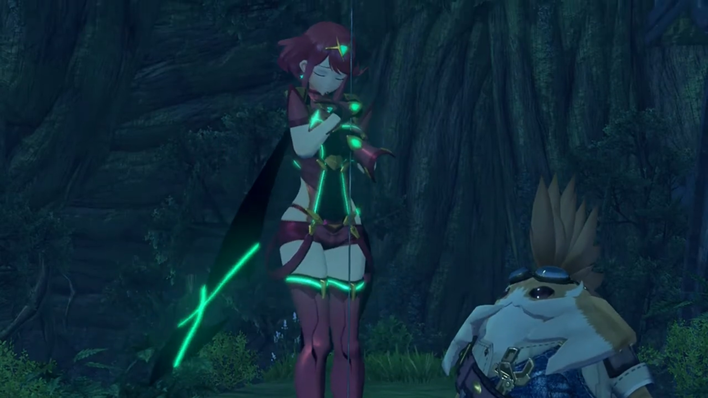
Step by step, it surely moved.
"Niiice, Poppi." Rex exclaimed.
"Poppi artificial Blade. This is... noooo problem. Poppi could lift Gonzalez if necessary." Well, the blush on her cheeks when she heard herself being compared to a Gonzalez{{footnote: A Giant three-storey tall Gorilla.}}.

They were inside the ship, but do they know where to go? Twist and turn, rooms upon rooms with closed doors. Luckily, "Masterpon, Poppi can feel, there is a Blade in the vicinity."
"Huh, but... how can Poppi tell that?"
"Unclear. Poppi feel other Blade like wave in air."
Rex: "Huh. I'm not sure I get it, but... maybe Dromarch is nearby!"
Pyra suggested, "Let's try opening up some of these doors!"
Dromarch was resting while looking at his cell door when he heard footsteps outside. Whoever's coming, he had to be ready to poach him down. Ready at the door, it wasn't opening. Instead, a red dot grew from inside, larger and larger, like melting flames. His sense of danger stroke at the final moment, get down just before intense flame threw above his body.
From behind the door, Pyra nervously asked, "Umm... I-I didn't hurt anyone, did I?"
Rex: "Everyone check your eyebrows!" As they walked over the hole to check who's inside.
"I'm sorry! It's hard to judge the power sometimes..."
"Pyra! Rex!"
Gramps: "Dromarch! It's good to see you alive."
"It. Very good!" The potato popped up in front of those three.
"See, Masterpon? There WAS a Blade here." she and her Masterpon totally covered the view of those others behind.
Dromarch was so confused, "Master Titan and... Forgive me, but... who are they?"
That's an answer for later. They got him out of his cell, Rex asking, "Dromarch, we don't have much time. Do you know where Nia is?"
"But of course. We are in resonance after all. I feel her presence."
"Then let's go! We can't let her get executed!"
"Indeed. This way!"
They found it. Dromarch answered, "No doubt about it. That's the place." Two soldiers were guarding outside the cell, pointed their guns at them when seeing strangers incoming,
"Who are you people?"
"They are the terrorist's friends!"
Rex: "We are her friends, but I won't let you call her a terrorist" And the battle begun.
Meanwhile, inside the cell, Nia cuddled herself up, recalling memories. A long time ago, she used to cuddle up like now, and that's when Jin walked up to her, lent her a hand, and she took it in hers.
"Ahh!" The noise of metals clashing outside her cell shook her out of reminiscing. The handle of the door turned, and it opened up slowly. Her first thought was, "Jin?"
"You all right, Nia?!" But no, it's someone else. Rex had shown up, surprising her. That wasn't who she'd expected, but
"Rex, you..."
Dromarch walked in beside him, "My lady. Apologies... for my late arrival." And he bowed before her.
She took a while to muster the words of gratefulness, "Don't mention it. I didn't think anyone was coming at all."
Rex: "As if we'd leave you! 'Always help those who help you.' That's the second rule of the Salvager's Code!" And he lent her a hand.
She took it in her hand, replying contently, "Well, that's you all over, ain't it."
Meanwhile, "Rex-Rex! Tora has found escape route! Hurry, hurry!"
"A Nopon?"
Gramps: "He has been of some assistance."
Rex: "We made a new friend!"
Nia: "Uh, nice to meet ya."
Gramps urged, "Well, I think we've overstayed our welcome here. Time to get moving!" Meanwhile, above Tora, Pyra's head appeared; and above Pyra's, Poppi's. All smiling back at her. And Gramps had somehow climbed above Poppi's head, hung there like a lizard.
The escape hatch was just in front. While the light above is red{{footnote: Which one guessed is locked door.}}, perhaps they can break through?
"Not much further to exit!" exclaimed Tora.
"Not so fast, my dear intruders." The door opened and the Consul entered from behind, with a giant robot holding a giant hammer. "Letting a terrorist from Torna out of my grasp, would make me look very bad indeed. Ahhhh, that emerald Core Crystal! You must be the Aegis! Much as it pains me to admit it, it seems Mòrag was right on- the- money."

Rex was surprised, "You know who Pyra is? Are you trying to capture her too, you ratbag?"
"Now now, language. But of course. The most powerful Blade in all of history, with the power to rend Alrest asunder? Only a fool would know of that power and not seek to claim it! And I am no fool! Therefore, I will claim her as my own! You cannot argue with such logic!"
Such stupidity to argue logic in front of a computer. Poppi exclaimed, "Flaw detected in final step of logic."
That's not important. Nia stepped up, "Sorry, pal, but you've done alllll that capturing you're gonna do today."
"Such impertinence for a dirty terrorist."
Rex, drawing his blade with his fellow teammates, called out, "Let's go, Pyra!"
"Got it!" And the battle begun.
Mid battle, Rex exclaimed, "That coward... He's just hiding behind his Blade!"
"What? Does common sense elude you? A Blade can regenerate from any injury! Whereas if I die, my Blade will return to a useless core!"
Nia can't believe he think "So it's OK to use them as a living shield? You weasel. Even if they can regenerate, that doesn't mean Blades don't feel pain!"
"Hahahah, how cute. The fleabag thinks we should care about Blades' feelings. Hehhehheh, I wonder if YOU can feel pain!"
Defeating him, he can't believe what just happened, "How...? A mangy fleabag and a bunch of stinking kids... My triumphant return... to Mor Ardain... with the Aegis... Orrrrrgghhhhh" Like a drunk man on his way to unconsciousness; his Blade had been destroyed.
Gramps: "Hmph. Out like a light."
Rex: "That's what he gets for trying to execute Nia."
Nia had different info, corrected him, "What? He was trying to take me back to Mor Ardain." Then she realized, "Rex, this is a trap!"
"A trap? So they weren't actually gonna execute you?"
Tora nervousness skyrocketed, "No time! Talk later, Rex-Rex! We should escape!"
"Masterpon is right. Chance of reinforcements very high."
Gramps urged too, "Let us make haste. Getting out of town, would be a good start!" They quickly dashed past, leaving the still alive but unconscious two lying on the floor.
The back entrance was just a minute away, when blue flames rose and blocked their way.
Pyra exclaimed, "These flames again!"
Rex recognized it, "It's her!" Behind the entrance, Mòrag, holding the twin truncheon, entered with Brighid.
Nia noted, "And with her Driver too, this time."
Dromarch introduced, "That's Mòrag, the Flamebringer!"
"Mòrag?" Rex wanted to know more.
"Special Inquisitor, Mòrag, of Mor Ardain. The most powerful Driver in the Empire... and wielder, of Brighid, the most powerful Blade."
"So together they're, like... ULTRA powerful?!"
Pyra noted, "It looks like they were waiting for us."
Gramps agreed, "Yes indeed. I did feel like we got away a little too easily."
Mòrag now spoke, "I don't know why I expected Dughall to slow you down at all."
"It was you, right?" The puzzle is complete. "You're the one who spread the rumor that I was going to be executed, just to lure Rex and the others here!"
"You catch on quickly. Yes, you certainly proved useful. However..."
"Rex and Pyra are the real prize."
"Hah, not quite. The emerald Core Crystal... is the sign... of the Aegis. If that Blade is indeed the Aegis... then there's something I must, do."
"What do you mean?"
"The power to sunder Alrest itself... I cannot allow that to happen again."
Rex was confused, "Pyra, destroyed the world? Don't be so stupid!"
"You mean you didn't know? Five hundred years ago, during the Aegis War... The Aegis, sank three continents, to the Cloud Sea's bed."
Shocked, he exclaimed, "Three Titans... destroyed?"
"I speak naught but historical fact."
He and others glanced towards Pyra, hoping she would explained; but she looked away, not denying. But he chose to trust her, "I'm onto you! You want to use Pyra as some kinda weapon! We're not gonna let you do that!" He shielded Pyra behind him. She felt kinda guilty, but was surprised at her de facto partner's action.
"That is precisely the kind of scenario that I mean... to prevent."
"And what if we resist?"
Her truncheons split into many sections, extending into whips. "Then I will have to restrain you by force."
"In that case, I'll make this nice, and clear. You. Will. Never. Take her!" Pyra felt glad they'd chose to trust her.
"Hah! Then let's see... if you have the strength... to back up those words, boy!" And the battle began.
"ARGGGGHHH!!!" One whipping flames knocked everyone out of balance. Tora crashed onto Poppi, while Rex hugged Pyra, sword stuck on the ground as they dragged backwards.
"What?"
"Harrrrrggghhhh!" Mòrag came after him, and he pulled his sword to defend; but it was too late -- her strength was no match, knocking Pyra out of his chest, separating them.
was coming after him, the whip attacking as he pulled his sword out to defend. But the strength was so strong it knocked Pyra out of his chest, and both separated.
"Urggghhh!!"
"Pyra!" He wanted to reach out for her, but he had no choice. Poached by Mòrag, he could not divert his attention. Pyra, seeing him fighting alone, wanted to get on her feet and get alongside him.
As the fighting continued, Mòrag whipped Rex's wrist, and it caught fire. The pain he felt resonated on Pyra at exactly the same location as they cried out.
"Stubborn child. Why don't you just, give it up?" Defenseless, he rendered another whip, and he and Pyra again felt the same pain on the same spot.
"Grrrrrraaaaa!!!" Rex would not give up, stood up once more and went for Mòrag. "You'll never get Pyra!"
They separated some distance; she was still in full strength, while he was exhausted. Slowly, he backed up towards Pyra while speaking, "She's more than just the 'Aegis' or... some kinda weapon! She's a living being!"
He held out his free hand, offered it to Pyra. She took it on hers after some hesitation and encouragement from Gramps, get on her feet. Rex continued, "Pyra has somewhere she needs to go. And I'm gonna help her. I'm not gonna let you stand in her way!"
More flames on the sword he summoned, Burning Sword aimed at Mòrag. Yet for the ULTRA powerful, she defend it with no force, holding up her truncheon{{footnote: Truncheon and whip changed form very quickly at her will.}} and formed a bow shock as flames slid beside her.
"This is getting tiresome." She had had enough. "The power of the Aegis is formidable, but the Driver's skill betrays her..."
More and more incoming flames, but she summoned Brighid's flames and extinguished Pyra's. Brighid, entering the scene, warned, "Stay vigilant, Mòrag. An unknown power lurks within this foe."
"But of course! This Blade he calls Pyra... Your flames burn far stronger than hers. But... her flames hide something deeper."
Still standing, but already exhausted. Endurance was key, but they had little left. Rex hadn't heard the others voice for long, asked, "Is everyone... all right?"
Nia and Dromarch were just getting on their feet, the former replied effetely, "Hangin' in there!"
Poppi sit upright, bringing her masterpon back on his feet, and Tora exclaimed, "Those two... very strong!"
"I know. At this rate, we'll never... There has to be a way... Some kinda..."
Ding! He recalled the last time the water pipe burst and extinguished Brighid's flame the first time they fought with her. "She's a Fire Blade. We gotta find... water." He looked around exasperatedly, until a tank caught his eyes. "There!"
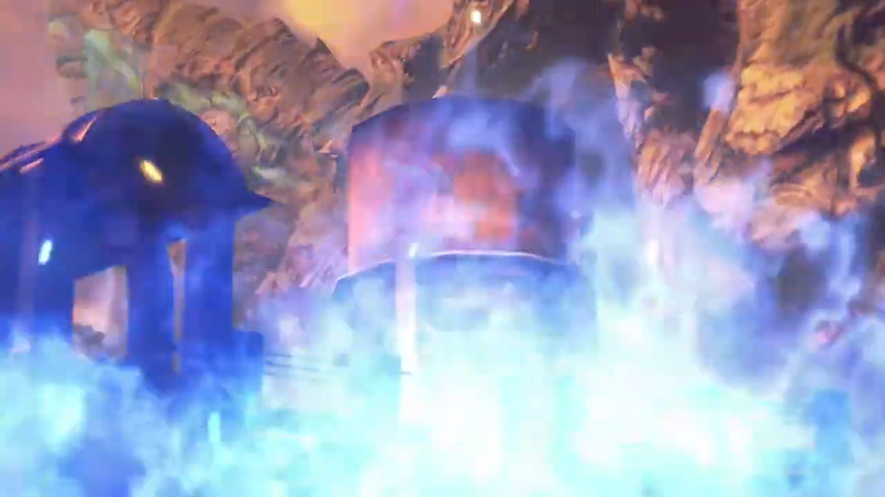
He gripped tight on the sword, called out, "Guys! Are you ready to run?"
Nia was confused, but "Hmm? Sure!"
"Then follow me!" He led them to the water tower, going around the flames. Behind the blue flames, Mòrag saw their silhouette moved, and she sliced away the flames shrouding their vision. The entrance that they'd been reaching for, they're finally out with.
"Ah, there they are." But they're not getting away, not so easy yet.
With his sword tucked behind, for effective running speed, he asked the girl beside him, "Pyra! Can you manage a full-powered blast?!"
"Yes! Maybe one or two!"
"That'll do!" Across the fields, they stopped by a lower pit, turned around after they chose their battlefield.{{footnote: Tora wield a giant drill weapon.}}
"GRRRRAAAAHHH!!! Take. This. YAAAHHHH!!!" Another Burning Sword, but she reacted calmly.
"You're getting predictable, boy!" Once more, the bow shock formed as they blocked the incoming flames. "Harrrghh!!" With one slash, the flames of Pyra changed direction; the remnants brushed through the feet of the water tower, scorching them hot red.
As she looked up, Rex already ran uphill, turned around, and aimed his anchor at the water tower, shouting back, "Look who's talking!" After firing the anchor and it stuck tight on the water tower, he called, "Poppi! Now!" With full power, he pulled.
"Roger roger!" Poppi flew and landed beside him, caught on the line, and pull the 'Gonzalez'.
"Ugh." They had a plan? She turned around and saw it. "The water tank? So that's their plan!" It'll take some time to topple, and their distance aren't huge; she can cover it in seconds, she believed, while the creaking continued.
Pyra, Nia, and Dromarch weren't letting them to. With full power, they pushed them back to the desired location.
"PUUUUUUUULLLLLLLL!!!" Straining his muscles until his vein popped; Poppi, the main power provider, with a final tug, it came under. Quickly, Rex and Poppi turned around and ran from the incoming shower, his anchor still stuck on the tower.
Mòrag and Brighid were just recovering from the previous attack and heard the creaking noise coming under. They turned around and found it's too late to run now. Water brushed through their body and extinguished the flames on Brighid.
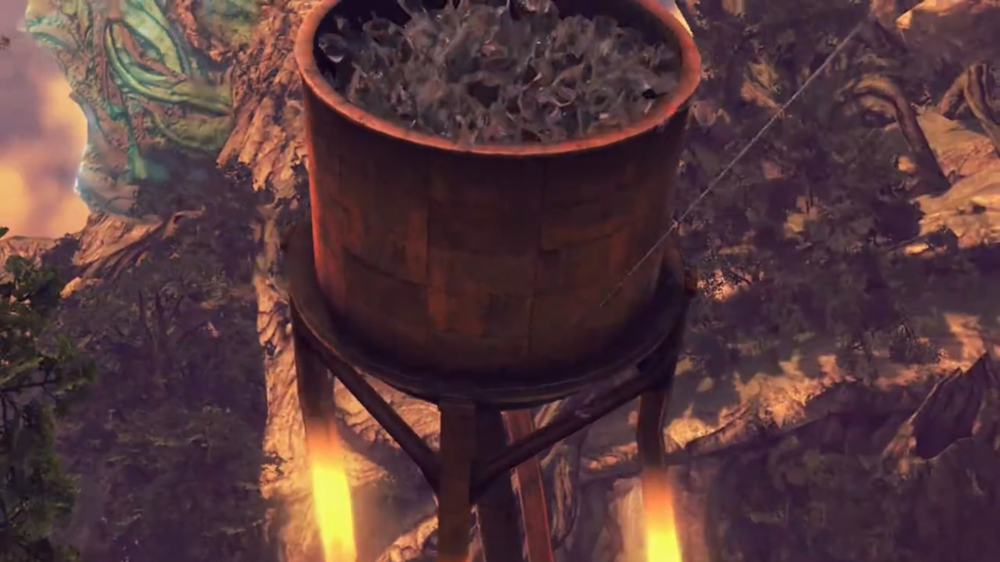
"Urgh!!" Brighid held onto herself as the flames on her surface dimmed out, groaned in pain. "Curses!"
Looking up, Rex and Pyra had the final "BURNING SWORD!!!" aimed to finish them.
"ARGH!"
"ARGGGGGHHHH!!!" The final ripple and growing mushroom clouds brushed through everyone, grew as big as reaching the back entrance, engulfing all. After it dimmed, the remaining water flooded feet high, the soil having difficulty absorbing all of it at such rate. As Brighid climbed on her feet, her Driver commented, "I feel slighted."
"How so?"
"They actually... held back against me in battle." Her tone wasn't angry but excitement, like one hadn't met someone of one's level for a long time, and finally found an opponent of equal strength.
"You think that boy...?"
"Did you not see? He could have struck me with that blow, but he averted his aim."
It took Brighid a while to recall and muster her words, "He did have good instincts, too..." The water tank mouth was pointing at them.
Inside Mòrag, she recalled his conviction,
"And I'm gonna help her. I'm not gonna let you stand in her way!"
"The Aegis... If she is traveling with that boy, perhaps it is worth letting them roam free for a while."
"You mean...?"
"We'll cross paths again. And when we do, we shall see."
The night fell, and town was far behind. Looking back, they could still see the flares from ether lights glimmering in the distance, but there's no turning back.
Pyra commented, "I don't think they're following us."
Gramps, "Perhaps we're safe, for now."
Rex: "You're right. We should get some rest. I can't go any further." And he sat down on the grass.
Tora's face kissed the soil, "Ahhhhh... Tora is pooped as well... (yawn)"
Nia thought for a while, said, "See you later," and decided to walk away.
"Huh?" Rex was so surprised he jumped back up on his feet. What does she meant?
Dromarch explained while Nia walked away, "We are grateful for all you've done. We wish you well on your travels. Farewell." And he too turned around to catch up with her.
It took him a while before running forward, mustered his courage and shouted his conviction, "I want to reach Elysium!"
"What?"
"I made a promise. I'm taking Pyra to Elysium. It's just... She gave half of her life to save mine. I owe her."
Awww, so sweet. "Ungh, Rex..."
"But half the world seems to be after her. With the... Titans dying off, living space is running out. That's gonna start wars. And people need weapons to fight wars. That's why they want her."
"Hmph." Nia felt uneasy.
"If I can prove Elysium exists, maybe I can stop the war that's coming. But... Fighting Mòrag taught me something. I'm not strong enough. I can't do this alone. Nia, you're a Driver.{{footnote: Forget about Tora going in between Rex and Nia and danced, trying to held her back, and Rex shoved him to the side.}} We could really use a companion like you... if you wanted?"
"Elysium? Do you reeeeeally believe in that myth, kid?"
"Well, Pyra told me that she was born there. Yet here she is. So it must exist, right?"
"Hmph. Your logic is almost as good as Dughall's. Listen, Rex. I don't know if you're stupid or just too nice for your own good. But what if Pyra's just lying? What if this is all an act, and one day she turns round and stabs you in the back?" Her tone heightened, Tora and Poppi turned to see what Pyra got to say.
But Rex did not turn back, did not hesitate to rebut, "Pyra wouldn't do that!"
Pyra joked, "Of course I wouldn't! I don't have a knife."{{footnote: One don't know how to describe how she acted. But see it for yourself! 'Sheepishly' doesn't sound quite right...}}
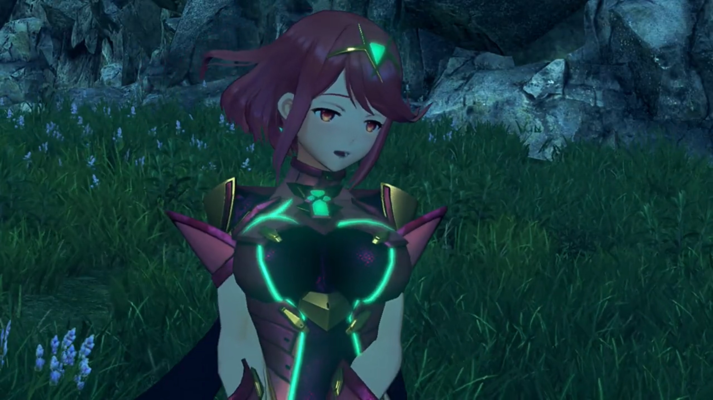
Nia: "So... serious... She... Bwahaha! HAHAHAHAH!!! An emerald Core Crystal is the sign of the Aegis, huh...? Sure, why not. This could be interesting."
Rex: "Really?"
"My lady!"
"I kinda wanna see this Elysium for myself now. Maybe it really does exist?"
"It does!" says he with full optimism. And Tora and Poppi were dancing behind the scenes.
"An endless field of green among the clouds, eh? If the legends are true, even people like me..." Thus an official member of the journey.
A campfire set deep in the night. Tora slept on Poppi's hug, Nia on Dromarch. By the log, Pyra sat beside Rex, helping him bandaging his wounds.
"Arrrrghhhh!!!"
"Ah, I'm sorry. Did I wrap it too tightly?"
He tried to assure her, did some extreme maneuver, "It's fine! I'm fine! See? I can swing it like this and it doesn't even..." until crack, "Argh argh argh orgh urgh..."
"I knew it."
"Thanks! I feel much better now." The playful tone subsided, replaced by something more relieving and deeper.
"I'm sure that's Nia's poultice doing its job. Thanks." She shouted over to the ones having sleepy eyes. Her standing ears registered, opened her eyes and blinked back!
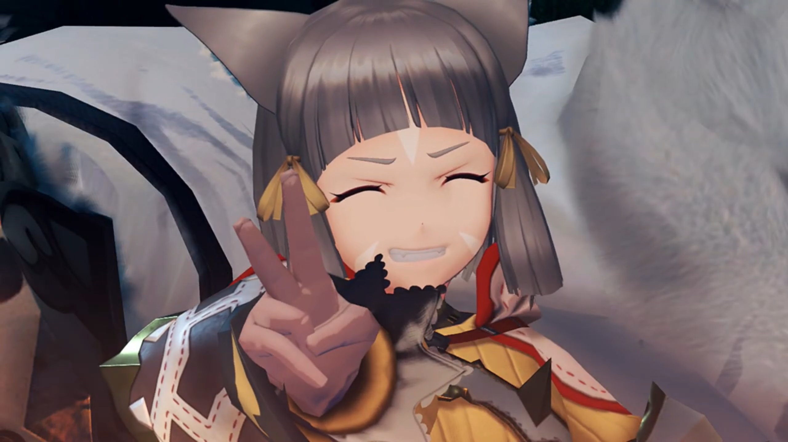
While his attention was there, Pyra was quietly wrapping the bandage around her own wounds as well. Only when he returned glance did he see it. Why did she said nothing, bearing the pain all by herself?
"Pyra, you're hurt too? Are you OK?"
"I'm fine. It's just a scratch." She reassured.
"Hey, let me help." Without her approval, he took over the bandage and her arm. But she happily let him, enjoyed their rare tranquil moments together. His face looked so serious, so focused.
"Thank you, Rex."{{footnote: But thanks for what, only she knows herself. A note to reader: not necessarily on the bandaging, though. Perhaps his trust despite? Or other reasons?}}
"No worries. Least I can do." The burning log cracks as they enjoyed their quiet moments. Until finally, "There, all done! How's that?"
She took it up to the sky, felt for a while before answering, "Hmm... Looks good. Um, Rex?" She moved her seat closer to his; he unconsciously bent aside a little, his body surprised at such intimacy. She put her hand next to his, side by side.

But his eyes was on her face; the intimacy mattered more than the similarity. She didn't look up, called his attention "Look. They're the same."
"Oh... uh... yeah... I... guess they are." It took the nervous, heart-thumping boy a little while to react to her words. Though she's not looking directly, she can see, from the side of her eyes.
"Huhuhuhuh!" She laughed off any nervousness in between, lowered any barriers previously raised.
Just then, wind blew and sent sparkles from the campfire up into the air, decorating the starry night with fire works. The glowing Titan meat looked like aurora. Their eyes lit up; too bad the rest were far asleep, except Nia, her final glance before dozing off. The two had quiet moments for themselves, both enjoying the fire works.

"So beautiful," says she.
"Yeah, it really is. I guess... that's probably because you made it, Pyra..."
"Huh?" What does he mean by that?
"AHHHHH, NOOO, WHAT? I DIDN'T MEAN IT LIKE THAT!!! You just, erm, really good at making fires... That's all..." He was scratching his head, not daring to look at her. Oh dear, what had I just said? He realized it could mean something else.

Was he blushing? Pyra tried to look carefully.
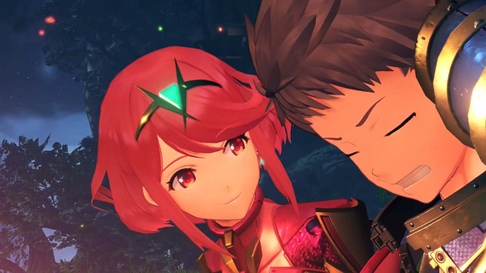
She decided to go with his explanation, with the flick of a finger, bling, a flames at her fingertip. "Hmph, it's... what I do!"

Putting down his blushes, he looked back with awe, just in time to see her blew the fire into the sky, spreading more sparkles into the night. The orange turned more orange against the night light. Even the World Tree in the distance had no fight.

Awestruck he was, such beautiful sights lit up the stars and the World Tree beyond. And together, their hearts.
Footnotes:
We need a ship
Deep beneath the Cloud Sea, where darkness ensued year long, a submarine cruised with the flow. A hatch opened and welcomed the Monoceros, an internal pool of water it parked along.
"Welcome home, Jin." Malos and his blade trailed behind.
"Hey, Akhos."

"I hear the Aegis awakened. Nasty shock for you? Orrrrrr, was it?" said the blue-armored guy wearing a pair of red-framed goggles with dark, short hair, wielding twin katanas stuck to both side of his waist. Genius always push up their spectacles when they'd something genius to say, "Of course, my script showed how everything would play out from the start."
"Sure, you say that once it's all over and done with. It's eaaaasy to act smug when hindsight's on your sight!" The Blade voice sounded from above; a hatch opened and she entered the scene.
"Shut your mouth, Obrona."
"I'm shaking to my core!" she swirled around Akhos, teasing him.

Malos had no time for play play, asked, "Where are the other two?"
"Mikhail's inspecting the Ardainian 'factory'... And my beloved sister is out hunting, as always. I'm sure she'll have found plenty of Drivers to chew up and spit out by now."
"She likes to hunt, all right. Not sure we can use all of those Core Crystals though..."
Jin changed the topic, "Do we know where the Aegis is right now?"
"Have no fear, Jin! Of course we know her whereabouts! Obrona?"
"Yeah, yeah..." She summoned ether particles in her hands and distributed them out, forming a light map of the Cloud Sea and the various Titans' whereabouts.
"Hm! It seems they're currently traveling away from the urban area of Gormott."
Malos was surprised, "Leaving the town? But there's nothing out that way..."
"Perhaps they're on their way out of Gormott itself," hypothesized Akhos. "Oh, and..."
"What?" asked Jin.
"It seems a certain... shipment, has set out."
Malos noted, "The Core Crystal heading to Indol for cleansing, huh? How pious of them. Shall we handle them?"
Jin denied, "I can deal with that myself. You concentrate on the Aegis."
Akhos, excitedly, "Understood. Well, I am looking forward to clapping eyes on the Aegis. By the way, what of Nia?"
"You know where she is?"
"Yes. Look. This dot here. Without a doubt, this is Dromarch's wavelength." That's the blue dot. "It seems they're traveling together, with the Aegis."

"With the Aegis?" Malos eyed sideways, to see what reaction Jin had for the girl.
"Huh. Do as you see fit." was his answer. Jin don't bother staying any longer.
"Understood. You don't, need to ask me twice." acknowledged Akhos.
Malos announced, "Right then. We're gonna take the Monoceros."
Jin, without looking back, "Hm. As you wish."
"Hey!" Malos called him on his track. "Don't, do anything too reckless." Do one look like one needed reminding? Malos watched him continued his trek without an answer, but a psychopath like him does not need one. His reminding is done, that's it. He and Akhos thus head back to the Monoceros, with their Blades of course.{{footnote: Obrona already dissipated the map. The submarine seemed capable to autodrive itself even without a passenger.}}
Morning sun washed afresh any gloomy feelings one have yesterday. What an adventure; but they had something more important ahead. Rex was looking at a gadget held in his hands that Tora never seen before, so he asked, "What is that?"
"A Cloud Sea compass," he explaimed. "A must-have for salvagers. It's sort of a map of the Cloud Sea. If you do this... And this... What's the- date today?" Twists and turn he did to the dials of the compass, then he asked Pyra to supply him with more info.
"Um... Amathatober 5th, 4058." Took her a while.
"OK! So now we put the date in... See?" He handed it out for them to view.
Tora was impressed, "Hoh, this is very clever!"
Gramps noted, "Looks like Gormott- is the closest country to the World Tree right now."
Rex: "All we need is a ship."
Dromarch brought bad news, "The army has... every ship in town in its grip."
Nia: "Ugh... We're kinda stuck."
Pyra don't have extra info either, "Seems that way."
Gramps: "Sorry, I'm no use now..."
Rex: "I know, I know. But I'm all out of ideas..."
"Rex-Rex need ship? Hoh, Tora have good idea!"
"You do?"
"There is ship builder living at Gormott Titan's bum-bum! Old- friend- of Tora's Grampypon. He called- Umon! Maybe he help if we tell him what's what!"
Sounds like a plan. Rex agreed, "Sure, it's worth a shot! Let's get going."
"Helloooo! Umon! Uuuumon?! Where is Umon?" Immediately entering the cabin, Tora called out loudly for his Unclepon, impatiently.
"Who is that? Who is noisy while I do my work? Tora! This big surprise!" Kids today, so impatient. He came out and eyed the group until he found the only Nopon in the group.

"Long time no see, Unclepon!"
"Yes! L-long time! About one whole year?"
"Yes, about that!"
"You became very big in one year, Tora!"
"Yes, Tora not littlepon anymore."
"And- Tora have lots of sidekicks!"
"Rex-Rex and friends are not Tora's sidekicks! They are real friends, Umon!" Introduction time. "Rex-Rex! Meet Unclepon Umon! He did great research with Grampypon! He is great builder of ships!"
"Hello!" Rex called out.
Pyra: "Greetings!"
Dromarch: "At your service."
Umon, scratching his head, "I see. Tora's friends! Tora has lots of friends. Very good! Tora has become fine biggipon."
"Eheheheh..." praises from elderly almost always resulted in blushing, feeling shy.
Back to the main topic, Umon wanted to know, "Well, Tora. Did you need Umon's help for something?"
"Well, we wanted to borrow a ship. From Unclepon Umon!"
"A ship? But there are lots of ships in Torigoth! Why hike all the way to bum-bum to see me?"
"Oh... erm uh uh... well..." What reasoning could persuade him?
No fear. Umon already had an answer for them, hypothesized, "Tora run out of gold, hmmm?"
"Umm... Yes! Tora spend all the gold on artificial Blade! Tora flat broke, like penniless pancake hmhmhm. I wanted to go on a little... boaty-jaunt to, ah... nearby place. But no money to go on boat!"
Nia felt very guilty with all the lying stuffs, quietly talking behind his back to Rex, "Hmph. I hope Tora can keep track of all of these fibs he's telling..."
"There's no other option. We can hardly tell him what happened in Torigoth, can we?"
"Y-yeah, I guess you're right..."
"So long as we get a boat out of this..."
Meanwhile, Umon was considering his request, "Artificial Blade, eh? Was this what Tora's Grampypon was working on?"
"My name is Poppi. Pleased to meet Unclepon."
"Yeeeeeessss! This it! This pretty mighty! Tora take after Grampypon indeed! Ohhh, well... How can I refuse Tora now? Tora may use Umon's ship, but there is problem."
"Wh-what is problem?"
To the left where the group were standing was the ship, wooden deck mounted on a Titan's back. Umon explained, "You seeeee, ship- not quite ready- just yet. Not much left to do! But work stop, because no- building parts."

"That's the only problem?" asked Rex.
"Correct! But that is big problem. Big like sea or mountain."
"You mean, all you need is some parts, then you can finish the ship?"
"It- just as you say, friend."
"Sooo, if we go and find the parts, then- you'll..."
"Of course! I make ship ready. Then you borrow!"
"Thank you! Come on everyone, let's go!"
Tora: "Yay! Let's go find ship ingredients!" What ingredients he needed, they don't even bother listening; miraculously, they already knew.
"So now we borrow Unclepon's boat!"
Rex: "Thanks, Umon! We owe you!"
"Indeed! Enjoy your boaty-jaunt!" And the ship departed the dock.
A sea of clouds stretching the horizon, on the surface and above the surface. They were the only moving Titan ship in the vicinity. Slowly but surely, they were approaching the World Tree, its trunk grew HUGE ahead.
"So that's the World Tree..." Rex was at the helm as he exclaimed.
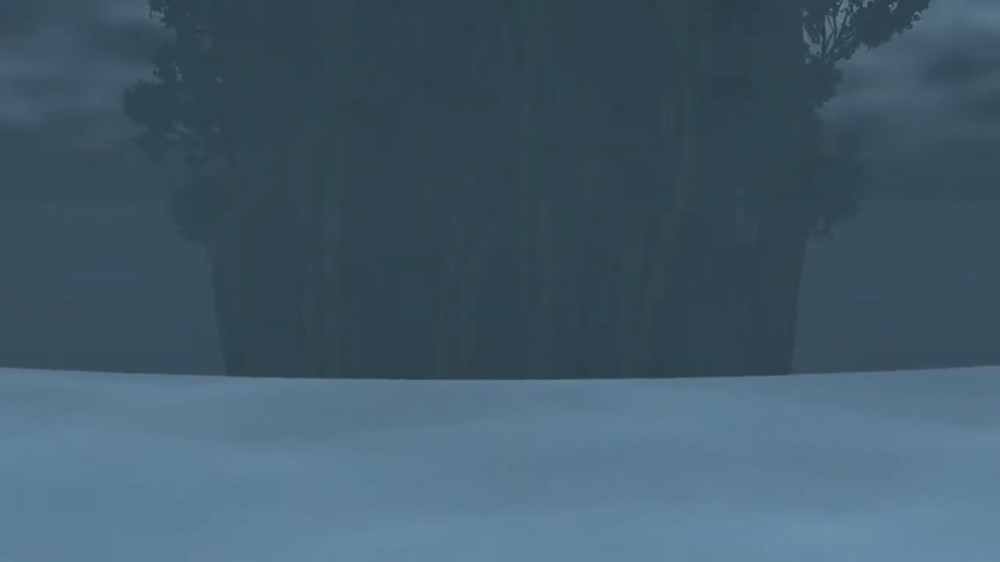
Nia exclaimed, "Wow, I've never seen it so close before..."
"Me neither, to tell you the truth. But it's just as awesome as I'd hoped."
"The current's really strong... Fall in that, and you're a goner." The tree seemed to generate some force field, forcing water to fall off some distance away from its trunk, creating a vortex, forming great waterfalls.
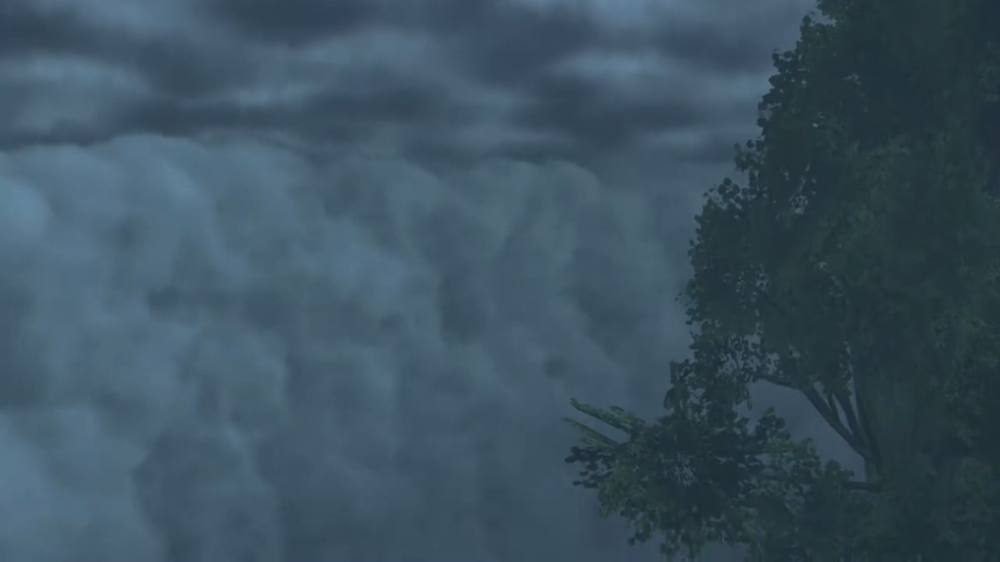
"It's great that we made it this far... But how do we get over there? Any ideas? Pyra?"
She wasn't listening. Her eyes fixated on the Tree, her mind adrift. There was something she'd forgotten... what was it? "We..."
"Huh?"
Oh, shoot, THAT! "Rex! We need to leave! We can't stay here!"
"What, why? What are you talking about, Pyra?"
The ship started rocking. Looking out, tremendous waves were forming from below their ship, water splashing furiously on the windshield. Then, a purple drill-like snaky monster poked its head above water, targeting them. The ship shook with the waves.

"Ophion!" Pyra called out. But it didn't remember her.
Rex: "Ophi-who?!"
"QUICK!!!"
"Uh? Gotcha!" He steered the steering full right. The Titan pedaling the ship swam for its dear life.
Pyra continued looking at Ophion, trying to communicate with it. "Ophion! Stop this! What's wrong? Can't you hear me? It can't be!" But it's brain murky, accepted not any incoming messages.
Its giant tail slashed at the water, sending waves at the escaping ship. They braced for impact as rough waves shook the effectiveness of its escape route. Rex thought they were done for, looking backwards, the next strike would be their final. But it did not leave its territory around the circumference of the World Tree. "What was that? Thought we were done for! Huh?"
The danger behind had switched to the dangers ahead; the escape from the tiger's den forced them to enter the wolf's den. The ship jolted forward as water was sucked in by a giant figure ahead of them. Such strong current, the ship had no escape.
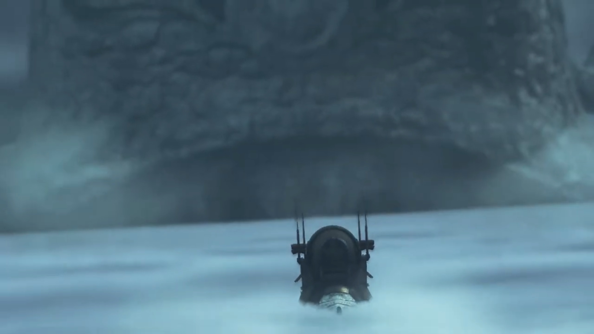
"Is that..."
Gramps recognized, "Uraya's Titan!"
"This is NOT GOOD!!! AGH! HERE IT COMES!!!" Along the tide their ship ride the currents, straight for the Titan's mouth.
"AGGGGGGGHHHHHHHH!!!" All shouted preparing for the end of their dear life; The Titan swallowed them and sink back beneath the clouds.
"ARRRRRGGGGGGHHHHHHH!!!!!" The crash and bang as they slid down the Titan's gut and landed at an unknown body part of the Titan.
"Ogh Agh..." Rex stood up from the ground. He could see nothing in the pitch black, except for the light coming from the about-to-shut mouth behind them. Luckily, as a salvager, he always brought lights with him, which he clicked on his belly before shouting out, "Pyra! Anybody!"
"Ugh... I- I'm here." He turned and saw her cloth that glowed in the dark, slowly standing up and approaching him.
"You hurt?"
"No, I-I'm... fine."
"Ach, ow..." That's Nia.
"Meeeehhh..." and Tora. After they got up, they followed the source of the light and gathered around.
Rex commented, "Looks like we're all OK..."
Gramps: "Except for the fact that we now find ourselves in the belly of the beast.{{footnote: And how they're to tell Unclepon Umon that his ship is forever gone.}}{{footnote: And luckily, no acid inside the belly.}}"
"The beastie's belly?"
"This is the inside of the Urayan Titan."
"Meh meh!"
"Look."
"Tora think this not nice place."
Rex: "Is that how we're gonna end up?" Digested?
Nia: "Hey, Rex! Don't jinx us!"
Dromarch suggested their urgent task of survival, "Everyone. Shouldn't we try to get out of here? If I recall, the Urayans live towards the beast's back. There must be a way, up there."
"Yeah. Can't hang around here, for sure."
Poppi scanned the vicinity, then signaled, "Over there!"
"Huh?"
"Poppi see something over there. Someone coming this way."
"For real? Maybe you're just seeing things."
"Poppi is certain. Something is flickering over there."
Rex: "Flickering... you say? Some kind of ghost maybe?" He directed his torchlight towards that direction. Below their feet and around them, lush green grass grown inside the belly of the Titan despite the lack of light for photosynthesis, a mysterious phenomena.
Nia's shaky tone blurted, "S-shut up! There's no such thing!"
"Nia, you're not scared, surely!" He teased.
"D-don't talk nonsense, Rex! I'm not a kid!"
"You're scared! At last. Something Nia's scared of."
"Just. You. Watch... Hey! Where's... Pyra?"
"What?"
She looked around before announcing, "Pyra's missing."
He pointed his torchlight where he saw Pyra just now. "Uh... But she was right here. Pyra? Pyra?!" No longer there.
"Hey, what's up?" A small flame ignited behind him; his felt his heart jumping out of his chest. The flames lit her face orange.
"URRRRGGGHHHH!!! H-Hey, what's the big idea?! Don't wander off like that!"
"Nothing, really. I was just... taking- a look around. What's the matter?" she asked innocently, don't understand why the big deal.
"Heh heheheh..." Now Nia had something to laugh back at Rex. Right back at ya!
"What's so funny?"
"Oh, nothing..."
"Ngh... Titan's foot!"
Pyra made a larger fireball that shone the environment brighter than his torchlight could.
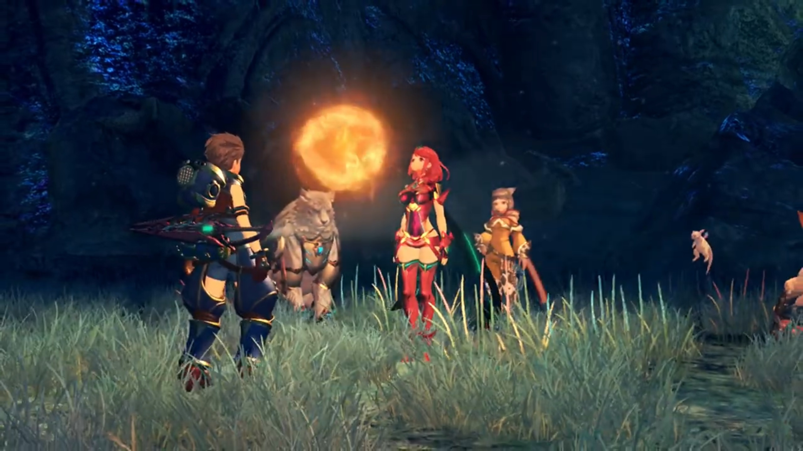
Gramps was delighted, "Oh! Things are looking brighter already."
"Poppi can help too." Two beams emitted from her eyes, barely added to the already bright illumination, but she joined in anyways.

"Now even more brighter!" exclaimed Tora.
Nia: "You two are certainly earning your keep. Huh, I wish I could say the same for old Dromarch here!"
"Apologies, my lady."
Rex: "See? Not so scary when you can actually see. Let's find the exit!"
"YEAH!!!" all chanted.
Translator's note on environment: Dark tunnels upon tunnels they went that lead them to the end, The Kingdom of Uraya.
Footnotes:
Vandham of Uraya
Exiting the tunnel, the surrounding now lit brighter. Nia noted, "There's some kinda dim light..."
Gramps: "If I remember, the Urayan Titan... has a translucent hide. I bet that'll be the light filtering through."
Rex: "So... the Titan must be above the clouds now?"
"I dare say!"
Pyra suggested, "If we can make it to the source of the light, maybe we'll find a way out of here."
"Hold it!" Who's voice was that? With tense muscles, they turned and saw the guys standing atop the ledge. He jumped and landed in front of the group. His blade, a bird standing on two legs with pouches on its breast, trailed behind. And his colleagues followed him behind, "Looks like a bunch of mushes I ain't seen yet. You gotta have pretty damn bad luck, ending up in a Titan's guts like this. Huh? That Blade... An emerald Core Crystal!"
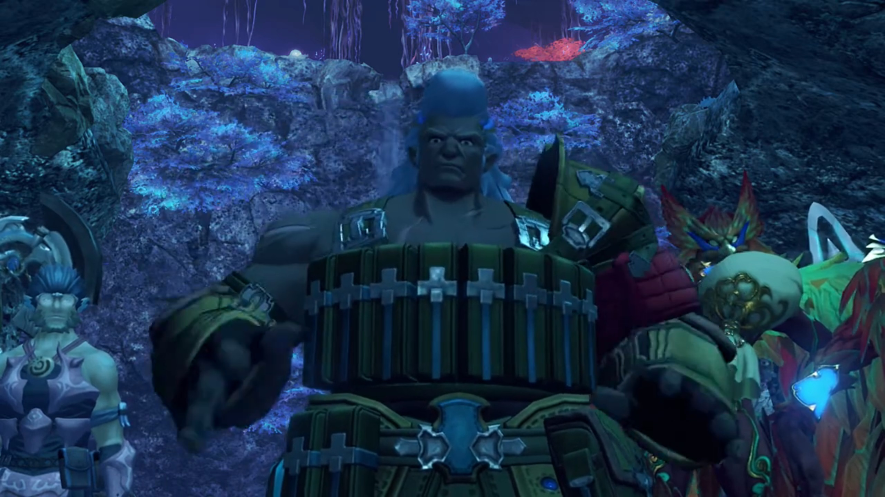
Rex was triggered. Whoever mentioned that so far hadn't brought them good news.
"BWAHAHAHAHAHAH! So, the rumors are true!"
"Huh? What rumors?" wondered Rex.
"The tale that every Driver worth his salt knows. The legendary Aegis. Folks been saying she just woke up from a 500-year nap. Wouldn't have thought... she'd show up with a pencil-neck shrimp like you for a Driver, though." He ridiculed at Rex's size.
"You think I don't have what it takes?" He felt provoked.
"Nah, I mean... Maybe you could handle a normal Blade. But a greenhorn like YOU, with a beaut like HER? Don't kid yourself. C'mon boy. Hand her over to a grown-up."
"This crap is getting old. Leave her alone!" They got ready for battle.
"Y'got heart, kid. I like that. Yew, Zuo, you take care of the others. I wanna squash the kid."
"Heheh. Leave it to us, boss."

"We'll take real good care of 'em." And the battle begins.

"What's the matter? Are you the Aegis or aren't ya?!" Pyra was having difficulty transferring her power to Rex. The buff guy was slamming his dual scythe at Rex as he complaint, knocking Rex off balance as he defended his speedy slices. One more attack he realized his hand won't be fast enough to block; Pyra sensed his danger and blocked it for him.
She sensed something out of place. In her mind, "Huh? Something feels... different. This man, he's..." There's... no... She hadn't got time to think; he'd knocked her off.
"That all ya got, mate? Pathetic."
Being provoked, Rex drew more power, "We'll show you! We'll show you what me and Pyra are made of!" Continuously, he threw fireballs at the guy, which he adeptly dodged, and he gaped in surprise, "He dodged?"
"Course I did, kid. Any slower, you'd bore me to death."
"How about THIS, THEN?"
"Hmph." More tighter controls, he got slightly more serious, dodging most; and those he cannot dodge, he sliced it aside, redirecting them to behind him.
Power were sucked at a speed that "REX, WAIT!!! I can't supply power this fast!" But he wasn't listening; he'd locked his attention to teach the guy whom sneered at him a lesson. Seeing the guy's back on the rocks, he knew that's his chance.
"Nowhere left to run! Eat this!" One more Burning Sword and the fight would end! More and more power he drew, and suddenly, snuffed out. "Huh?"
The guy was waiting for his moment, his eyes fixated on Pyra's condition, and realizing his chance, "Playtime's over. Take this!" And he launched himself real fast at the defenseless Rex.
"AHHHHH!!!" He closed his eyes, awaited his destiny. After so many lucky feats, this time is the unlucky ones, eh! Gonna die, but, one really don't want to die. The World Tree, our dreams. Sorry, Pyra. Goodbye, World.
"Hah! If you're a Driver, you're a new one for sure. Drivers, see. We borrow our Blades' energy... channel it into our weapons... And let rip with an Art!" The scythe is on his neck, but it did not land. The guys sheathed his weapon after he opened his eyes, and continued lecturing, "But you gotta be careful -- there's a limit to it. If you go in all bull-headed like that, kid, even that Aegis of yours, is gonna run out of energy before long."

He nudged towards Pyra, and Rex turned and saw her panting ceaselessly to recover her breath. More confusingly, wasn't he about to die? "W-what???"
On the other battlefield, Yew and Zuo sheathed their weapons. All were confused.
Nia: "Huh? Uh?"
"The name's Vandham." the buff guy introduced himself, knocked his chest hard. "I run a little firm, out of the nearby village."
"A... 'firm'?" Rex wondered what that means.
He invited, "Come on! I'll treat you to some grub, as thanks for letting me take a whack, at the legendary Aegis! BWAHAHAHAHAHAH!!!"
Pyra regained her breathe, stood beside Rex once again, shared, "Just then... I realized- while we were fighting, I sensed from the very start, that... he didn't mean us any real harm."
They looked at the group leading the way up ahead, Rex commenting, "Hmm, he sure is a strange old goat, that one..."
As they approached the village, Vandham had listened to their story during the traversing, exclaimed, "Helluva story! So you headed to the World Tree to reach Elysium, but got swallowed up whole instead? You got some crazy luck."
Rex asked, "So, er, what were you doing back there, then?"
"Y'know, this Titan... It ain't too fussy about what it eats. I went down there to see if anything we might need in the village, washed up. But mostly I only found, YOUR sorry mushes."
"Yeah, sorry about that..."
"Here we are. Welcome to Garfont. Ain't much but it's home." Several people doing push ups with instructor sitting there overlooking them. Nopon and kids playing together at other places.
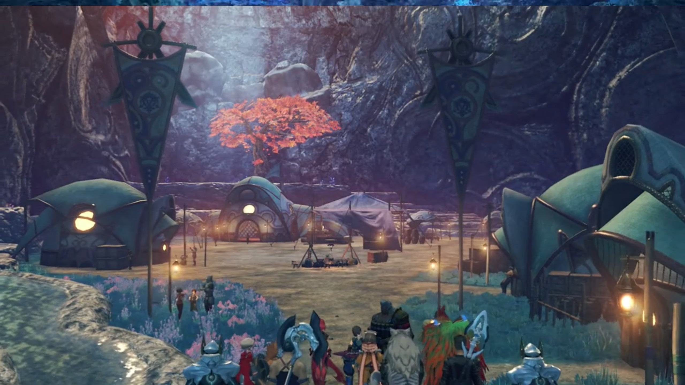
Pyra noticed, "The village has... a lot of children."
Tora added, "Lots of Drivers and Blades here too!"
Vandham explained, "We're in the business... of dispatching Drivers and Blades... all across the world. Most of the kids are war orphans. Took 'em in while on the job."
Dromarch rephrased, "So you're saying, that you, take them under your wing."
Yew supplied an answer, "Just till they're able to make it by themselves."
Zuo added, "Some of 'em, might grow up to be Drivers, like ourselves. But then others might become tailors."
Vandham: "Doesn't matter what they wanna do with their lives. We leave it up to them to decide."
Yew: "Aye. Us 'Justice Busters' just wanna help."
Nia commented, "Good eggs, huh?"
Vandham wasn't angry with the labeling, "You said it. I've been called worse. Come one. Let's eat! All this egg-talk is making me hungry." And he lead the way. Rex's head was on something else... this military thing... hmm...
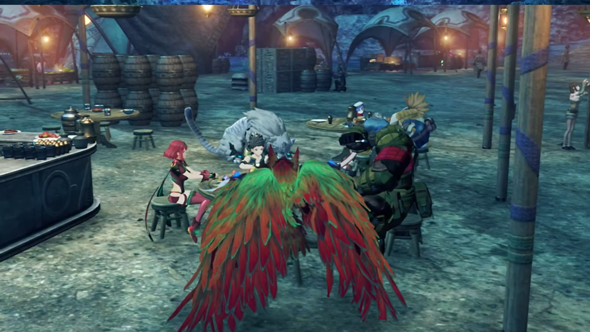
The group sat around 2 tables at the canteen. Nia, Dromarch, Poppi, and Tora took up one table. Yew and Zuo were gone to do their work. Vandham, his bird Blade, Gramps, Rex, and Pyra at another table. Pyra then said, "I'm going to get some water. Vandham?"
"Cheers, love! Gimme a beer!" He finished swallowing before replying.
"Beer? Coming right up!" Cheerfully she called before leaving for the dispenser.
Rex was touching nothing on the table for long; his place still as they were. Vandham asked, "What's up? The grub don't suit you?"
"So... do you fight in wars too, Vandham?"
"You got a problem with mercenaries?"
"Are you trying to get us to join up?"
"Hah! Shrimps like you? We're not THAT desperate. Relax!" So not with mercenaries. Then it's with wars, soldiers, then.
"OK. Good to know."
"Hmmm... Rex, you're a salvager, ain't ya?"
"Yeah."
"You musta fished out your share... of military supplies, right? You fine with that?"
"Naaaahhh. I don't wanna get involved with it."
"It's all the same. Compasses, valves for ether stoves... Armies need all these things. The bread you're eating? It's made from ruska flour. Supplied by the Ardainian government. This world's full of war. Don't matter if you're a soldier or not. As long as you're alive... you're in the war, some way or another. Don't you think?"
Heavier and heavier his chest felt, shallower and faster his breathe. Just thinking about all the mechanical he'd salvaged up being repurposed, distributed to soldiers; he felt his hand stained with the blood of those hoping to live one more day. Guiltiness grew within, and desolation awash him, like a giant rock attached to his chest. "Um, I..."
"Life can be cruel. Crueler than you know. That's why I set up this little band, so I could protect, the people I care about." He listened, though yet not enlightened. "Rex. You're the Driver of the Aegis. The whole world's gonna try and scalp you, you realize that? How ya gonna live, when you got everyone... gunning for ya? It'd be easy to run. All you'd need to do is ditch that girl."

They looked at the girl whom were preparing the solutions behind the counter some distance away.
"Ugh!" But he could not, not after all the adventure and friendship and dependency on each other and promises he'd made with her. He'll bring her to Elysium, he swear. His de facto partner he'd attached himself to, the various ups and downs they went through together, stirred their lives from the repetition and boringness of money money money for those back in Fonsett his mind was fixated on before meeting her. She made his days no longer the same anymore.
Vandham could only help so much; he had to walk out of it himself. "Hmmm..." Then he abruptly stood up{{footnote: Even before his beer had came back.}}, shouted, "C'mon! Gotta get ready!"
"What? Where are we going?"
"Just follow me, kid!" And he and his blade walked off. Rex stood up, watched by Dromarch, while his other companions were still scarfing down whatever's on the table.
"We just got a job to go check out some kinda crazy energy effect. Somewhere up around the blowhole. Whaddya say? Fancy bein' a mercenary for a day?" The group had gathered just outside the village.
Rex, with some hesitation, "Ummmmmm, OK? But, I mean, we don't work for free..."
"Don't worry, kid, you'll get paid." Together they head for their destination.
A giant ball of wind swirling on their path blocked their rights of way. "Ahhh..." They wondered what was that...

Vandham introduced it, "An ether miasma. Take it this is ya- first one."
"Ether miasma?" Rex wanted to know more.
"It's a load of poisonous waste products, spewed from the Titan's guts. Y'know, when you get gassy? Kinda like that."
Nia: "Erm, is there a way through this thing? I can't see any way round it."
"Hey, no fear. Roc, mate! You're up!" He took out his twin scythe, while his bird Blade, Roc, flew into the air and slashed some air fang at the ether miasma, dissipating it.
Rex noted, "Miasma's died down!"
"Heheheheh! Yup, nothing to it. Let's roll!" And they continued on their journey.
Exiting the tunnel entrance, they saw "An Ardun... Just what we need. Rex, any good with that anchor?"

He looked at his anchor for a moment, assertively answered, "Yeah, I get by!"
"Hand that here." He agreed, detached it and gave it to Vandham. "Now watch." He point the anchor at the Ardun's leg; it swirled around, and he pulled, toppling the Ardun.
"Awesome! I never thought of using it that way!" Rex was impressed.
"The trick is to pull it taut at just the right moment." He then threw it back to Rex, instructed as the Ardun turned its attention to them, "Now you try!"
After the battle, Vandham praised, "You got it after seeing it once. Not bad, kid."
"Heheheh!" Felt high from the praise of an adult.
"Listen up, kid. Drivers, use Arts. But that doesn't just mean using the powers your Blade gives you. There are Arts that use your own strength, or take advantage of your enemy's. There are all sorts. A Driver's job... is to be smart with his Arts, and protect his Blade."
"Protect my Blade?" Rex hadn't yet understood. If they could fight better than him, why do they need his protection? Plus, in Dughall's words, if Blades can regenerate, isn't it logical to use them as meat shield?
"Yeah. It's a two-way thing, kid. You gotta be aware of the power comin' out of her. Don't waste it, channel it through your Arts, and protect her. If you can do that, then you're a true Driver, kid."
"'A true Driver'? I don't know. Am I ready?" He questioned himself.
"'Course you are. That thing from before? Took me five years to learn that."
"Five years?!" He was surprised.
"Yeah. But you saw it once, and then you aced it like it was nothin'. And, you got Nia and Tora in tow. Those guys are pretty handy. Kid, you got a bright future."
Aww, so sweet that "I think I'm gonna spew," exclaimed Nia.
Tora: "Biggipon has scary face, but he very nice!"
"BWAHAHAHAHAHAH!!! Sussed me out, furrypon!"
They'd arrived at their destination. A small Titan was lying beside the cliff walls, dying.
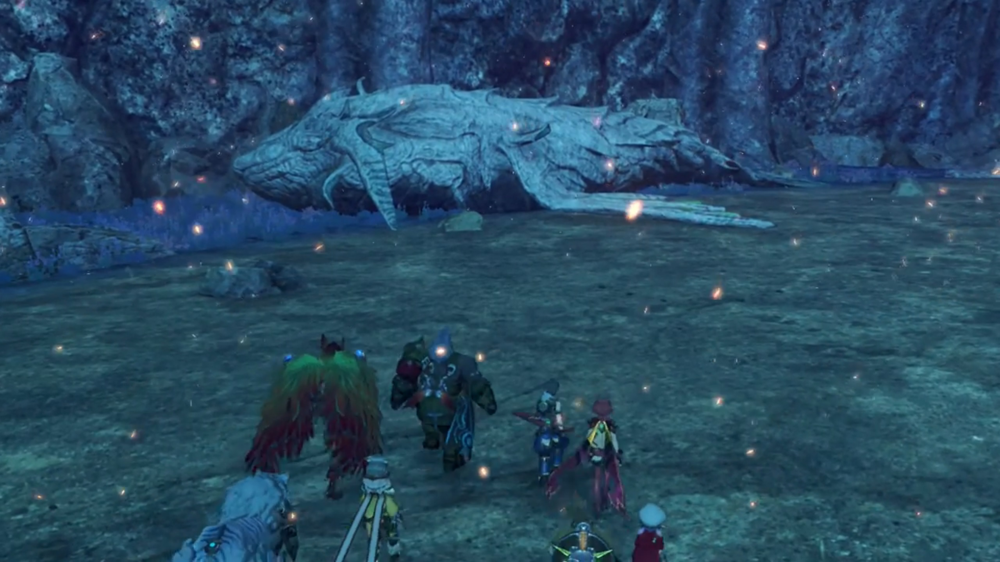
"Like I thought..."
"A Titan?!" exclaimed Rex. "So that weird power effect they clocked... Maybe this is the cause?"
"Yeah, sure looks like it." Vandham agreed.
Gramps inspected, "I'll hazard it wasn't death by old age, either. Might have been an accident... On the other hand, it might have been attacked..."
He was right.{{footnote: Actually, not. Just for the sake of causation, we said that. But they had probably nothing link whatsoever. Debunked in the next paragraph.}} The ground shook, and the source of the shockwaves was a giant arachnid with red coral-like veins growing out of its head, stampeding its pillar-like feet as it walked out from behind nowhere to face the group. Beside it was a humanoid bull-shaped face muscular Blade beside the Arachno.{{footnote: The Driver of the Blade is the arachno. Don't ask me why a monster can wield a Blade. Scary thoughts. They're so strong themselves and they can gain more power from their Blades???}}
Vandham noted, "Hey, look! Seems like this Titan dying off has stirred up something else!"
After felling the arachno and the Blade, the Blade returned to its Core Crystal; but unlike the Core Crystal that shone crystal blue, this one's dark, emitting no light. Rex noted: "The Blade returned to its core..."
Pyra: "So that monster was in- resonance with the Blade..."
Tora felt jealous, "Tora cannot resonate, stinky monster can resonate. Not fair!"
"But... Masterpon have Poppi!"
"Ohhh, Poppi..." So sweet they embraced.
Vandham brought their attention back to the Core Crystal, "If a Blade loses its Driver, it winds up like this."
Rex: "So, is it, like, dead?"
"Nah! The crystal'll start glowing again after a bit of time. Then a new Driver can resonate with it. But..."
"There's a but?"
"Its memory will be totally zapped. It'll be reborn, as a new Blade. Won't remember a thing."
"Yeah? That's pretty rough... To have all your past wiped out like that..." Rex agreed.
Hah. How she wished her memories are wiped out, "But memories can be... painful as well. They can be a terrible burden. And... a Blade- can live forever, as long as the crystal exists. It's just as well. Eternity is a loooong time to collect bad memories."

"Pyra..." Is that what she had been holding on to herself for so long, unwilling to yet share with him or anybody else? If the Titan had not triggered her, will not she hold on for longer, refused to voice it out, shouldering all by herself?
"I'm sorry. I was just thinking, sometimes being able to forget, is a... blessing."
Vandham urged, turned their attention to the task at hand, "C'mon! Leeeet's get finished up here!" He walked up to the Titan alone while the others waited. Blue flames and motes had been evaporating off the Titan, similar to Gramps not so long ago before he metamorphosed and returned to his larval state. Except, this Titan had no ability to metamorphosis like Gramps did.
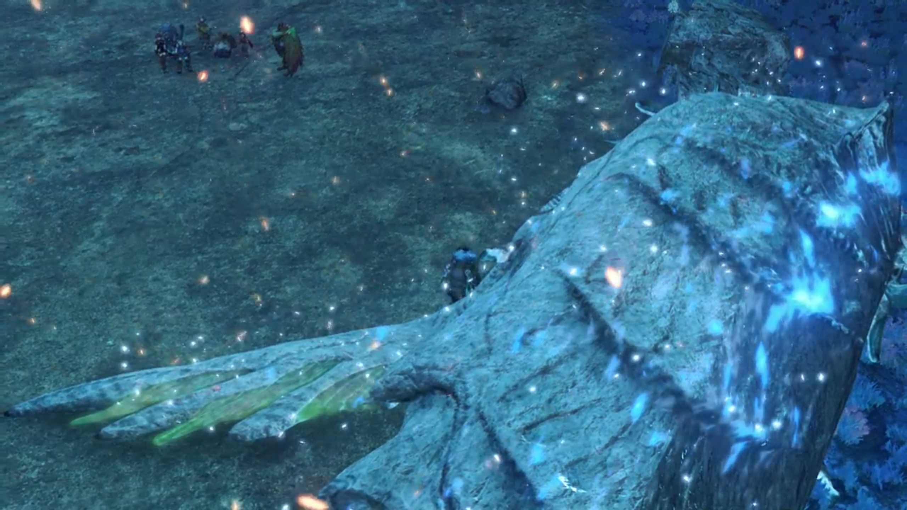
Vandham returned with a glimmering light blue cubic Core Crystal. Rex exclaimed, "That's..."
Tora: "A Core Crystal!"
"What?!!" Rex was surprised. But how?
Vandham explained, "Well that's where they come from. Out of Titans. This one's brand new and ready to resonate. Like a big steak, right before you take that first bite. It'll probably end up buddying up- with a bunch of Drivers. Every time the Driver dies, it'll forget everything, and return to its core. Eventually, it'll resonate with a new Driver. Drivers dyin', Titans dyin'... The Blade- just keeps on livin' through it all... It's a never-ending cycle. An eternal history. As mortals, we'll never be able to understand."
"It's incredible!"
She's a Blade herself; she can relate. Worse, her previous Driver's long gone, but she had not entered a new cycle. She stood behind him; her current driver don't notice yet. How could he, when he only lived for 12, relate to one living for more than 500? Perhaps she felt herself related to the dying Titan, walked towards it closer while it was evaporating, prayed with closed eyes. Titan, O Titan, may your resurrection in the other World, live a more peaceful life, free of pain.


Meanwhile, in Rex's head, he wondered, "But... Pyra already had a body when we found her... Could her old Driver still be alive somewhere?... Perhaps..."
A long day's work deserves some rest. Back at the camp, Tora was jumping up and punching Poppi's palm held out, training. Nia was combing Dromarch's fur, while Vandham sat with his blade observing Rex and Pyra.
"Owowowowowo... ah..." Both had cotton balls on the end of a stick on their hand, helping each other cleaning their wounds.
Pyra: "Hey, hold still. I thought you were a tough salvager, Rex!"
"Gimme a break. Pain is pain, isn't it? How about you? Are you hurt?"
"Don't worry, it's just a scra-..." He 'gently' pushed the cotton ball at her wounds, and she lost her coolness, "AAARRRGGGGGGHHHHH!!! That was on purpose! You were hurting me on purpose, weren't you? Well?"
He shook his heads and hands vibrantly in denial. "I wasn't, honest! I was just rubbing the lotion in..."
She backed away from the incoming cotton ball, cried, "Rex! You rubbed it too hard! It hurts, see!"
And she got her 'revenge' with the 'same' force back at his wounds, "ARGGGHHHH!!!"
Vandham had got up and walked in front of them while they were teasing each other, shouted, "Hey, you two!" Their attention jolted back at him, as he instructed, "Gimme a look at that." And he loomed close to them.
They stiffen as he eyed Pyra's wounds, then Rex's. To and fro a few times confirmed his hypotheses. He can't believe what he saw, "What, is this? Haven't seen this before. Dunno why a Blade would be stuck... with a bunch of wounds... And they're exactly the same as Rex's!"

The two hadn't thought about that before, eyed each other innocently, and so the storytelling continued.
With all others, including Yew and Zuo, around them, Vandham exclaimed, "Incredible. Never heard of such a thing."
"It's all true." The X crystal in his heart shone the most brightly.
"I just thought it was an accessory."
"Vandham, that's not my style."
"Blades are supposed to heal up right away, no matter what the wound. If the crystal's in one piece and the Driver's alive, nothing can touch 'em. So why's she all bashed up?"
"That's just how the chips fell. It is what it is." He took it for granted, assuming it's something to do with the Aegis special entity.
"What it is, is a problem. It means if one of you kicks the bucket, you both do."
"You told me that a good Driver, always protects his Blade. So that's what I'll do. I'm gonna protect her."
"Eaaasier said than done, kid."
"Listen... Pyra... She saved my life, brought me back from the dead. So I won't die again! I've got to live, for her sake! Until we... get to Elysium, at least. We can make it together."
"Rex, you mean..."
"Going to Elysium? I can't let that stand." Whose voice was that? Vandham turned around and saw strangers in his village. "It. Won't. Do. A bunch of amateurs stealing the show? The script exists for a reason!"
"Akhos!" exclaimed Nia.
"Please speak only when you're spoken to, traitor."
Obrona chimed, "Traitor traitor TRAITOR!!! Nia, you're one of the baddies now. You villain! Teehehehe!"
"I didn't betray anyone!"
Akhos: "Then why do you stand with them? You think that is where you belong?"
"B-b-but I-I..."
Vandham was angry, "Hmph! Who are these goons?"
Rex explained, "Torna. They're trying to get their hands on Pyra."
That enraged him further, "TORNAAAA!!!"
Nia: "Akhos! Just, tell us, what you're here for!"
"Well, the Aegis, of course. I just had to come and see the leading lady with my own eyes."
"Jin put you up to this?"
"Well deduced. Oh, by the way... His orders were to deal with you in whatever manner I see fit. So... you know what that means."
"He wouldn't... You're lying!"
"Why the surprise? Did you think he would still care about you? Ohhh, to live in your reality..."
"Angh!{{footnote: Like a cat non-meow crying out.}}"
"Well well. Your part in this play is coming to an end. So! Time for you to shuffle off the stage."
"HRRRRRNNNGGGHHHH!!!" How dare he treated this place as his home. He's not welcomed here, enraged Vandham even further.
Rex asked, "What's wrong?"
"I know the name Torna. They've taken the lives of too many Drivers. Including some of my crew. Good people. Rumor says it's because they're collecting Core Crystals. So... if this Akhos is one of them. Yew! Zuo! Get everyone out of the village!"
"Yes, sir!" both chanted.
"You ready?"
Rex: "Ready." And they had to fend them off before the others get to safety.
Pyra: "Got it."
Nia: "Thanks for this."
Rex: "No problem."
"It'll be tough. His Blade, Obrona... She can manipulate the ether in the air. It lets him counter elemental attacks by generating fields of the opposing elements!"
Vandham: "Finally, a decent opponent for a change! Let's go!" And the battle began.
Halfway through the fight, Akhos was excited, "Such an honor! Sharing a stage with the legendary, AEGIS!"
He dashed forward quick, slashed Pyra's torso. "ARRRRGHHHH!!!" as she bashed against the rocky walls, hurting him as well.
"Ugh!"
Akhos noticed, felt confused, "Huh? Why would the Driver..."
Obrona noticed, "It seems... that they're taking each other's damage, somehow." The red particles filled the vicinity, controlling the ether. That observation excited Akhos more. He deduced,
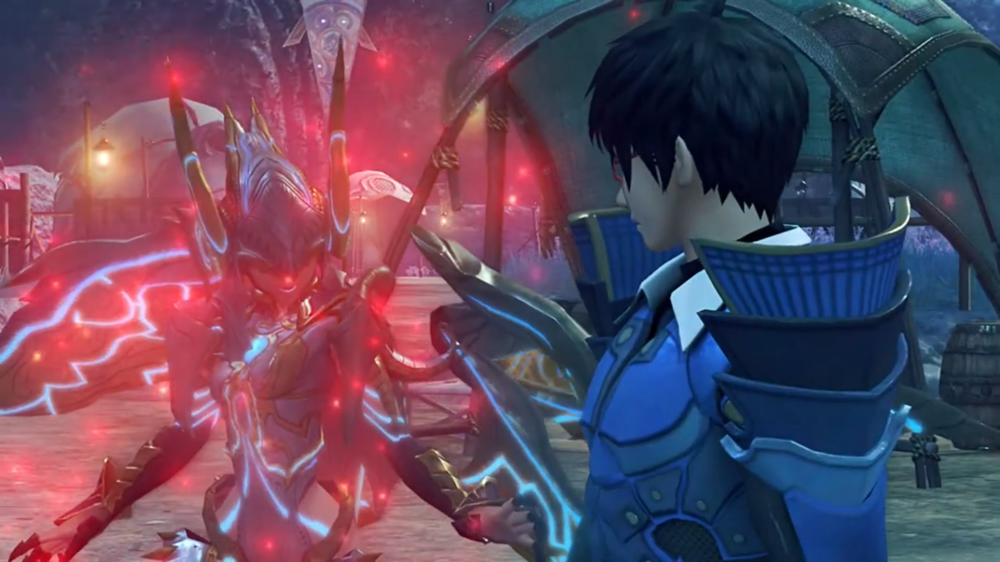
"Ahhh... So that means that the Aegis... Is a mere mortal right now..." She clung to her pain, struggled to stand. But she could not yet fall, lest the enemy took her away. Step by step, he aimed at her, "In that case, a little more damage, and she'll be easy to deal with!"
He ran towards her; she reacted quickly, dodged a thrust that ended deep into the rocks behind her. Against the rock he slashed, as if it were made of tofu, running after her despite all the frictions. "Hah!" She dodged once more, but he went back for her. Her body wasn't listening to her commands; she could not dodge the next slashes.
"Ungh!" Straight at her, an X cut. "ARRRRGGGGHHHHH!!!" And she temporarily went unconscious, fell to the ground.
"Pyra! Ungh!" He tried to went after her, but felt a jolt in his chest, dropped and knocked his head on the ground. Akhos clashed his dual swords together, sharpening them, and desired to finish her. The slash was blocked by a growing shield, which grew into huge winds and pushed him back.
"Hngh!"
"Kids these days, I swear! Can't leave you alone for a minute!" Vandham entered the scene.
Rex: "Could use a hand!"
"Leave it to me. I'll take this dog down!" And he launched a sandstorm at Akhos and Obrona.
"Hngh!" Akhos easily sliced the sandstorm to nothingness. He saw Vandham threw his dual scythe up into the air, which Roc caught, swirled, and launched a giant sandstorm tornado at the two.
"Ugh!"
Obrona: "UAAHHHHHHHHH!!! What's happening?!" The swirling was so strong she started swirling with the tornado. Her red particles had dissipated to nothingness.
Akhos was even more surprised, "What? The ether flow's disturbed! Grh! How am I supposed to deflect now?!"
Vandham: "You and your fancy moves. You lack- grit." No deflecting, he aimed to attack him face to face. Passing through the sandstorm, he did not see Dromarch biting Nia's ring in his mouth poached, sliced at him just after he exited the sandstorm.
With a handsome roll and getting back on the ground, Obrona joined him, he complaint, "Huh... Just too many of these bit-players..." All had been facing him alone. It's time to leave. "My interest has waned. Obrona! Perhaps its time for another tale."
"Meeerggghhh... Sure, sure." And they escaped.
"Tch." Vandham was unwilling to let him go, but he could not easily fell him; plus, they had burdens with them. Nia, on the other hand, had more time thinking about Akhos's words from Jin, now that the battle's over and it took over her mind. Dromarch sensed her sadness, didn't disturb her.
Pyra temporarily regained consciousness, lumped forward, seeing everything around as stars and blurry, one step by another, like a dehydrated person in a desert whom cannot find water. She fainted a few steps later, the sound of her dropping to the ground alerted Rex, and she ran for her, "Pyra!" embracing her within his arms, "Pyra! Pyra!"
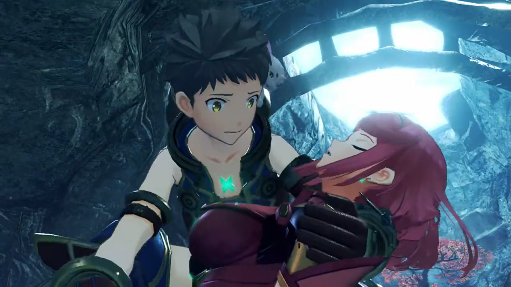
No sign of her waking up. They'd brought her back to her bed, and his team gathered around, looking after her. He was on the alleyway outside the room{{footnote: Enter the alleyway through a door from the outside, and the alleyway had access to rooms.}}, looking afar, turning around and walked over to Vandham waiting inside the door.
"How is she?"
"She's not badly hurt. Dromarch... thinks she just needs rest."
"That's good to hear."
He blamed himself, "Maybe... I used too much power again..."
"Hey, Rex..."
"Hmm?"
"Know what the difference is... between me and the Akhos fella?"
"Well, he's a bad guy, trying to get Pyra... and you're... not?"
"Hahahah!!! Thanks for the vote of confidence, kid. What if I told you... that we weren't that different?"
"Huh?"
"My crew at the village, we think we're fighting for justice. But a just fight? I'm tellin' you now, there's no such thing. What people call justice? It's just an excuse to fight. War is war. The more you stand up for yourself, the more people wanna fight you. Before you know it, you're in a war... Listen. All I'm saying is, we got our fight, and he's go this."
He can't put himself in Akhos's shoes, nor view Vandham the same as Akhos, rebutted, "But what he's doing is-"
"Yeah, it's bad. But war ain't about right and wrong. Power. That's all it is. And power can take many different forms. It depends on the heart of its wielder. If we don't use our power, just 'cos we're scared of it, we're done for. As for who's right... and who's wrong... No one knows for sure. So, all we can do, is protect... what's important."
"I think I understand." He turned around and looked through the door where Pyra laid.
"We all got our own war, kid."
"My... war?" The seeds had been planted, though it needs time to germinate. He may not yet understand, but it won't be long. The roads they walked were the water and nutrients cultivating the seed. Only in continuing the walk can he understand, what does she means for him, and he for her.
"Good morning!" Pyra walked into the boys' tent with Nia and Poppi.
Rex was overwhelmed, "Pyra! Feeling better?"
"Yeah! I slept- so much!"
"Good. Glad to hear."
"Also... Nia's got something to talk to you about."
"She does?"
"Yeah. Go ahead, Nia."
"Ah, erm..." In front of so many people? She felt shy. "I... Rex... I-I-I want you to come help me."
"Ermmmm, come where?"
"To Vandham. I need to tell him about... my past with Akhos and all that lot."
"Ah, sure! If you'd like me to, I will!"
"Thanks!"
Pyra shared, "Nia... originally said, she was going to go alone. But I said- maybe it'd be better- if you went along too."
"Er... Maybe I should explain... Vandham... He... kind of scares me a bit..."
"Hahah! I get it!"
Vandham was at the training ground overlooking the new recruits training when everyone approached. He shouted out, "Oh, it's you guys? What got you out of bed so early?"
Rex urged, "Nia?"
She walked forward and took the stage, "Thanks for yesterday. You saved our skins. That guy, A-Akhos, I mean... I wanted to tell you about him... you see... Thing is, we used to be..."
He cut her off, "Being a mercenary, you meet all kindsa different folks."
"Huh?"
"Your country, family, money... People got plenty of reasons to fight. Like fightin' for a special girl. I see that a lot. Though not every girl has a strange crystal in her chest, eh?"
Rex stuttered, "Y-y-you mean Pyra? W-we're just..."
Vandham assured, "Nia, you're with these guys right now. That's what matters."
"But... aren't you..." Feeling so confused. She came to share her story, to find his apology; but found out he'd apologized her for being a member of Torna before she had the chance to explain.
Vandham changed the topic, "Anyway. Rex, weren't you saying you wanted to get to Elysium?"
"Yeah... But, we hit a snag... With a monster like that in the way, it's impossible. No Guild ship's getting close to it- without going down."
"Well, I've got an old mate. In the Urayan capital. Got a feeling he might know a way through."
"Really?!!"
"Yeah! I gotta go there anyhow. So I could introduce you."
"Vandham! Thank you!"
"Nah! It's destiny or something. Don't sweat it. Get your stuff together, and meet me by the village entrance." And he walked away.
At the village entrance, the group and Vandham met Yew and Zuo, biding farewell. Vandham: "Time to head out. Yew! Zuo! Take care of this place, yeah?"
"Nae worries. Leave it to us, Boss!"
"Boss. You're in a good mood, somehow!"
"Eheheheh!! I guess so. Well, take care!" And they took off, with Yew and Zuo watching them off.
Unbeknownst to them, behind the rocks outside the entrance hid 2 people also silently following them. Hoods over their head, one buff muscular guy strapped the weapon behind him; presumably he's a Driver. The other green hair, wearing huge glasses, presumably his Blade. They silently trailed behind.

Going to the other side, a Titan ship was flying above the Cloud Sea. Emergency alarms blared as the ship was unstable, tilting to its side, on the verge of shipwreck. Soldiers gathered from all chambers and laid out their defense; but Jin sliced through them all without a second chance. Every step he walked, at least one soldier will go down, paving a path of meat. So quickly his sword sliced through each of them they didn't feel their flesh cut into pieces. The Blades had not yet reacted, returned to their Core Crystals as their driver dies without a chance.
He arrived at the door which he came for. Multiple slices cut it into pieces; he entered and saw all the crystals, rows upon rows, cabinets upon cabinets. A few moments later, the whole Titan ship explode, went down, and plunged straight into the ocean, never to be heard again.
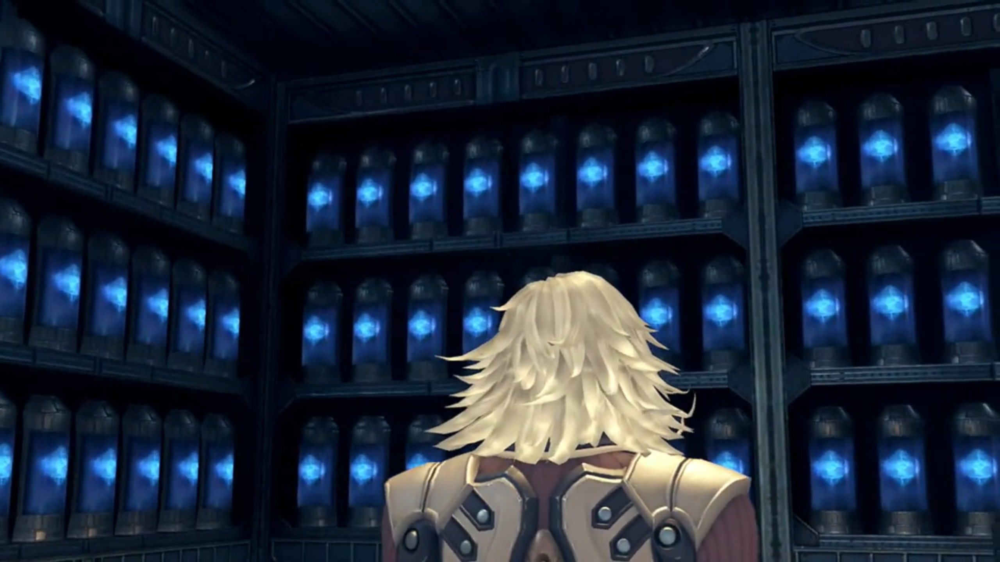
Footnotes:
Bringer of Chaos, Fonsa Myma
Everyone was quietly traversing to their destination when a laugh intruded the silence, echoing in the environment.
"Ahahahah! Look like all the chat about the Aegis was true!" The group searched around to find the source of the voice, to no avail.
"Who're you?" asked Rex.
He revealed himself, got himself in front of them. That's the muscular man and glasses girl that followed them for long. "That's a heavy burden you have there. Sure you're up to it, pipsqueak? See sense, step aside, and let the big boys take charge. C'mon. Yield the merchandise!" Their show would not be perfect without the body language dabbing and zabbing.
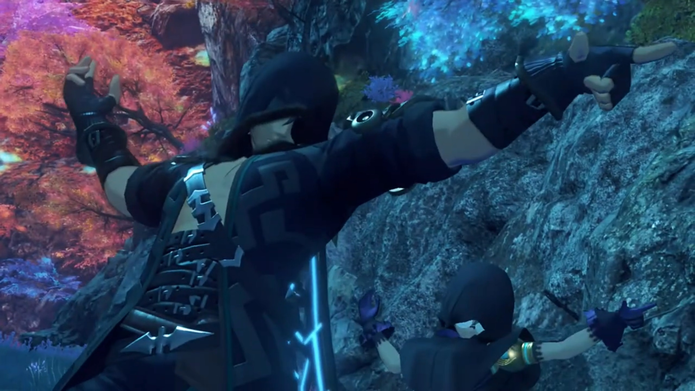
Stars swirled in their head, "Huh? What? Vandham, do you know this guy?"
"Never seen him in my life."
"BAH!!" And both removed their hoodie, revealing themselves.
"HUH!!" What's with the sudden jolt?

The man had an eyepatch covering his left eye, like a pirate, with scruffy hair, and his shirt doesn't zip in properly to show his muscular chest. A belt strapped across his chest, to hold the weapon behind him. The girl had a lightbulb on her head and her elbow, green hair, probably his Blade.
Rex: "Wait... are you..."{{footnote: Gramps climbed out of the helmet to look closer.}}
Hah, finally! Finally, someone who recognized the big boys, huh! Never knew one's so popular that you'd know us. Come one, don't hold back your praise! One's waiting! "Huh."
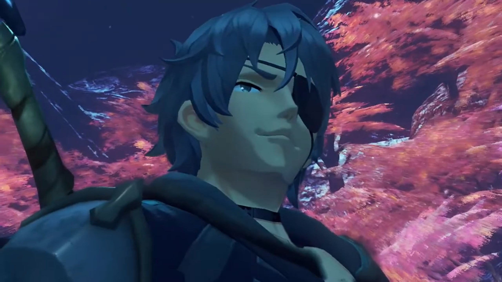
"Uh..."

Broke their pose. The group tilted their head, he and his Blade overreacted by tilting their whole body. Such incomplete sentence, how dare you!

Talk about slipped waist, he had to support himself to get back up. The fury burnt in his chest, raged through his skin, and he blurted out, "You really are a bunch of rinky-dink, bogus, two-bit, no-mark Drivers, aren't you?" Catwalkingly, showing off his chest, he introduced himself, showering the group with his saliva, "Behold the mighty... ZEKE. VON. GENBU! BRINGER OF CHAOS! Mostly known as Zeke. And often addressed as... THE ZEKENATOR!!!"

"Behold, my Blade! Pannnnn-doria!"

Wait, one more; the weapon he wiped and clean and polished and waxed everyday deserved its own introduction. He pulled it out from behind, aimed the shiny parts at the group, "And this is my sword, the Purple Lightning Dreeeeeeeam-smasher! If you want a taste, come- and- get it!"

So dumbstruck the group had not yet recovered from what to say of this duo. Rex took the calm approach, acknowledging their need for mental hospitality, replied, and walked past them, "We're good." His friends followed.
But no, how could you not give me your attention? Where's your respect for the big boys? How could you? His stuttering head tilted as he zapped onto Rex's location, "Good?! No! W-w-wait..." With incredible speed, he rounded around and landed in front of them once more, "Wait! You BARBARIANS!!!"
Nia blurted out, "This guy... I'm tired of him already."
"Gah! You think you lowlifes, can lick the three of us?"
"Three of you? I count- two. Lost someone?"
Blink! Wait, oh dang, how could we forgot to introduce him. Awkward... But it's OK, if one don't feel awkward first, it'll be them who feel awkward. Regaining his posture, "Huh? Oh, get a load of this... Our beloved mascot... Turters, REVEAL yourself!" He searched his chest for Turters here and there, to no avail. The panic air took over as he and Pandoria started worrying, "Huh? Turters? Turters? Turters, w-w-where are you, boy? TURTERRRRRSSS!!!"
Eager to help, the group looked around to see if there was anyone moving. Then, Pyra felt something touching the bottom of her feet. She backed her feet away from it, looked down, and a green turtle was crawling towards her. Her heart melted, as she took it to her hand, caressing it, "Oh! Hello, little guy! How are you? What are you doing, out here all alone...?"

Zeke was on the ground searching for Turters when 'little guy' struck his chord. With a zap, his head swung into position and saw the beloved Turters she was teasing with her little fingers.

"Ah-ah-ah! Turters!"

The speed he threw himself in front of Pyra and snatched Turters away from her, "Handling a man's turtle!" She was awestruck, saw him dashed back to where Pandoria stood; and they rejoiced the safe return of their beloved mascot.
Rex couldn't understand, "Urrrr... He could have just... grabbed Pyra there. Why'd he go for his turtle instead?"
Nia had had enough, "Ugh. What an idiot."
Blink! You call a man 'idiot'? How dare you, BARBARIAN, calling the ZEKENATOR an IDIOT!!! He compressed his anger, called out, "...Gah... Listen, whata- whatever. She'll be mine soon enough!" Pointing at Pyra. "GOT A PROBLEM WITH THAT? THEN COOOOOME AT ME! Andddd DON'T HOLD BACK!!!"
With full mighty force, he pointed his sword once again at them, not forgetting to wink and tried to use his handsomeness to lure Pyra.

Nia couldn't distinguish between seriousness and playfulness anymore, "What! Is this guy, for real?" But they summoned their weapons anyways, prepared for battle.
Dragging along the ground, he was somewhat tired of the battling. "(pant pant pant) G-good try. Not bad. Bu-bu-bu-bu-but! Wipe yourselves down, and get ready... for my super-ultra-MEGA-MOVE!!!"
Nia impatiently urged to finish this quickly, "We're waiting with bated breath. For your super-duper-whatever."
How could you? How could you? How could you? Electric sparkles on his body surface as electrical ether elements gathered at incredible speed. "You asked for it! HYYAAARRRRGGGHHHH!!!" The sparkles it released they had to shield their face from the tingling shock of electric sparkles. Thunder raged from above the sky as he drew ether energy at immense speed, charging his sword to its maximum, and shouted,

"BRINGER OF CHAOS!!! ULTIMATE LIGHTNING FURY SLASH!!!" Bang. He carved a letter on the ground; and he missed the group, deliberately or carelessly.
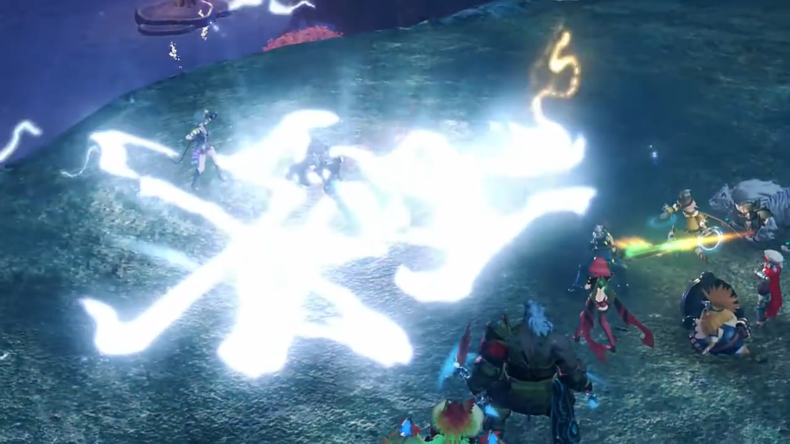
The electric sparkles dissipated not longer. He got up with his sword still stuck to the ground, "Huh!" Scared now? Have you seen the move by the big boys? Now you'll hand over the Aegis?
"Um..." Unbeknownst to him, the group backed away one step; Pyra tried to remind him, but he was too busy showing off he did not notice the crack on the ground where his sword hit. Grinning at them, he suddenly felt the ground trembled below him,
"Whoaaaaa!!!" The crack grew larger and larger as they tried to balance themselves, until the whole cliff collapsed, "WRRRAAAAAGGGHHHH!!!" Bringing the chaos and rocks away with them to the lake below.
The group was dumbstruck, Rex confusingly asked, "Wh-what just happened? They..."
Nia: "Ugh... What an idiot."
Vandham was satisfied with the entertainment, "Don't see that everyday..."
Nia urged, "Come on. That's enough nonsense."
Dromarch agreed, "Indeed."
Rex looked at Pyra and 'reluctantly' leave. Hopefully the two was alright... Poppi watched the group's reaction before following, step by step, swinging her hands robotically. None leaves a second thought of his fate.
The watery village by the entrance leading to the top. Buildings stacking on top of each other, accessible by stairs. This, is Fonsa Myma, Capital.

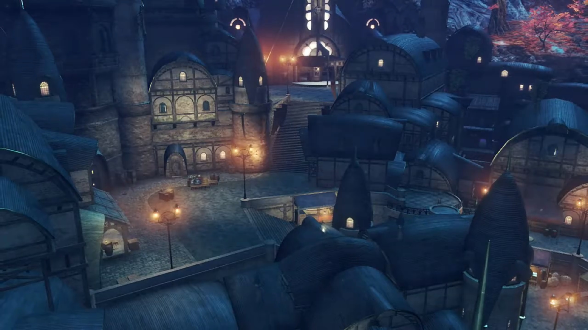
Turquoise grass paved the various rings of fields before leading them to the entrance to the City. At the dock parked a giant new-looking Titan ship, unloading cargoes, or maybe loading cargoes. Salvagers were gathering outside, chatting. The group was near the ship.
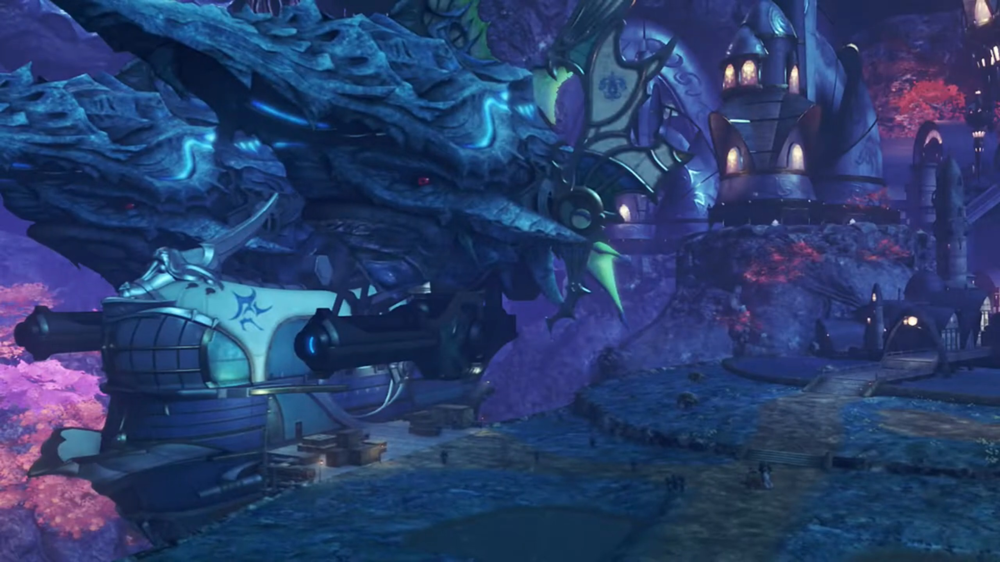
Dromarch noted, "War, with Mor Ardain, is looking more and more likely by the day."
Vandham added, "Looks like they've expanded the military program. That's a lot of warships."
Poppi noted, "These ships, look different to normal ships."
"Yeah. We don't much about with our Titans much. No need for it. Urayans like things pretty natural."
Rex shared, "I've seen Urayan ships before, back in Argentum. It's like the total opposite of how the Ardainians use them."
Dromarch suggested, "That could be one reason they're- always at each other's throats."
Gramps added, "They've been like cats and dogs for a long time..."
Nia expressed, "Well, from where I stand, the Ardainians are worse. All that metal's just bad taste."
"It's easy to think that way, but you're not considering, how the Titans themselves feel."
"Huh? Don't all those modifications hurt?"
"When Titans live with humans, that's just the way it is."
"Hmm..."
"I used to have a hut on my back, and a crane, stuck where the sun doesn't shine. I never complained, not even when Rex fired up a grill on my shoulders."
Rex rebutted, "Hey, you used to like that!"
"Mm... Well, yes, I did like that. In fact, I miss it..."
"If I did that now, we'd end up with a roast Titan!"
"Indeed!"
"Uhuhuhuhuh!!!" Pyra couldn't help but giggled.
Entering the city, people were queuing in front of a reception desk.{{footnote: Yes, reception desk usually build inside a building to greet you when you enter it, but who says you can't build one at the front door of a city to greet you when you enter the city?}} Rex wondered, "What's that?"
Vandham explained, "It's a distribution center. The government tries to ration out what little resources they have. In practice, it's just first come, first served."
Just then, the girl with green hair received, "OK. That's the last one for today."
"Hah!" She felt gratitude; finally, one more day without fasting. But before her hands could reach it, and her dreams could accomplish, someone buff knocked her aside; she went down and kissed the ground as the buff guy took her place.
"Ah!" Pyra's heart triggered and she went for the girl.
The buff guy took the cup at hand, complaint, "Come on! I'm a soldier! Been busting my gut for this country! That should be going to me. Not the likes of you!"
The girl got back on her feet, felt too scared to voiced that's what she'd queued long to get, and felt she shouldn't go away to give up what's deservingly hers. Tears were to roll down her cheeks; the soldier didn't like that look, "Uh? Don't look at me like that! Respect your elders, you snot-nosed BRAT!!!"
Pyra got beside her and questioned, "Are you OK?" Then, she turned to the soldier, scolded, "What do you think you're doing? She's just a child!" Rex came forward to protect them.
"Whaaaaaat?!" Can't believe it. Everyone's stomach's rumbling and you care about a child or an elder or an adult or what? Come on, my belly's more important than them. "Huh? Huh? Who the hell are you?"
The rest caught up from behind, with Nia persuading, "Rex... This isn't our business. Leave it!"
"Urgh! Being an adult isn't just about barking orders. Sometimes, you need to help someone weaker!" shouted Rex to the soldier, not listening to her.
"Urgh! **Shut your face! You don't know, what the hell you're talking about!" And he summoned his weapon, twin ring, and his blade, a standard tiger. And the battle begin, with others originally in line and those distributing already gone, none of their business.

"Huh Huh... Wh-who are you?" Then, he looked closely at Pyra, backed a few steps, "Huh... Th-the color of that crystal! You're...! ERRRRAAAARRRGGGGHHHHH!!!" And he ran away, up the stairs.
"Not good. He'll be bringing others before long." exclaimed Gramps.
Vandham noted, "The rumors about Pyra must have traveled pretty far. Even grunts like him have heard 'em."
Pyra felt "Sorry... I guess, I should have used the cloak...{{footnote: Yeah, the cloak from Tora.}}"
Poppi thought more, "But, who spread rumors?"
Vandham: "From what I hear, it's some... fancy-pants Nopon merchant."
"A Nopon merchant...?" Who can it be? Rex was thinking hard about it.
While he was going through the list of those he'd traded with before, the girl they saved went up to Vandham and called out, "Excuse me, Mister Vandham?"
"Uh? Oh! Well, if it isn't Iona! You grew a fair bit! How's Grandpa Cole doing?"
She dropped her head, and he read it, "Ah... Not too good, then."
"Who's this?" asked Rex.
"Huh? Ah, this is Iona. That old friend of mine takes care of her."
Pyra walked up to her, bent lower to her level to look at her face, greeted, "Hi, Iona. Great to meet you!"

Vandham urged, "C'mon! Let's beat it before those soldiers show up."
"Hmmm." The group was led outside a building that looked public. Outside the building was some drawings lining the walls, and a mannequin figure looking towards the building was placed in front of the door.
Dromarch asked, "Is this... some kind of theater?"
Vandham acknowledged, "Yup, it's a theater, all right. The guy we're here for leads the troupe here."
Rex: "Ahhhhh. Actors, eh."
"And right now... they're in a middle of a show... Well? Wanna take a quick peek?"
Dromarch read the title, "'The Heroic Adventures of Addam.' Might be interesting."
Her smiles dimmed. Addam... memories buried deep upon eons and eons of more recent ones rushed back, awash her brain. 500 years of reminiscing, he could no longer return; the short-lived of that era had banished in dust and clouds, only their memories retained.
"I've never been to the theatre before!" shared Rex.
"Neither has Tora!" as he bounced up and down.
"Let's do it! Nice and quiet though. Looks like it's pretty packed today."
"OK!"
"Mehmeh!" And they already entered. Despite memories and thoughts, she moved like a zombie, urged by the group, into. Wonder what memories the show will brought her back.
"And I saw at that time, that the powers of darkness had engulfed, almost everything!" narrated the guy on the stage. "People, and Titans alike were draaaaawn into the abyssal vortex!"

He continued, "The apocalypse was upon us! The end was niiiigh! But then! Despite the wounds alllllll over his body, the great Addam stood..."
The actor that acted as Addam, wearing some shiny helmets and armor, walked up the ship, raised his hand up, and shouted, "O Architect! Grant me power!" And he raised his sword into the air. "Power to banish the dark! Power, to illuminate the world!"
Many abominable creatures below the ship appeared out of the sea; their red eyes fixated on Addam. The darkness had already spread this far? Addam jumped from the deck to the 'ocean' floor, to fight the abominable creatures alone with his sword.

As if the Architect had heard his plead, he sent down an angel, immersed in light. Addam's heart warmth, welcomed the holy saint whom heeded his call, "Lo! Loyal servant of the Architect! The Aegis! O Aegis! Bless me with your power! Bring light upon the world!"
The angel raised her hand and threw some paper scraps down to the sea, the bright red light shone above her crown. The abominable creatures self-ignited, till they turned to ashes.

"Thus, they defeated the darkness," continued the narrator. "But at a terrrrrrrible price! Three great continents, sank beneath the sea of clouds forever."
Bright light from the other side of the door slightly illuminated the front of the dark room, where the Aegis laid flat on the ground. Addam arrived, voiced, "Servant of the Architect! By thy power, the world is saved! For the gift you have granted us, we are eternally grateful. I shall spread thy legend, far and wide! May your name live on, for eternity!" He knelt down and princess-carried her, through the door to the lights, and the curtain lowers.
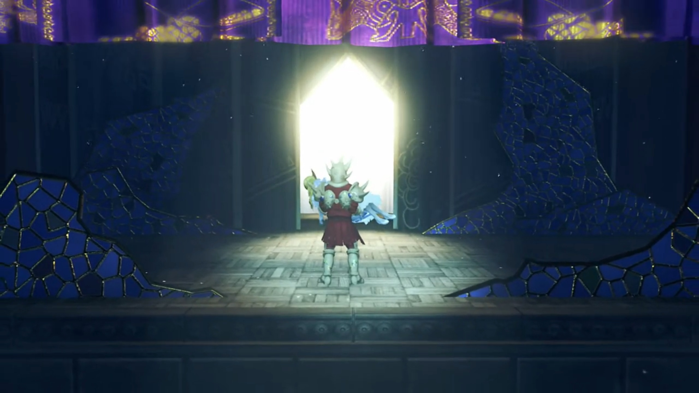
Everyone except Pyra clapped. To return to the period once more, reminded her of sad memories, lost, depressed, desolation of that era, she's courageous to sit still, not broke into tears. Rex looked at her, wondered, let her had time for herself.
Exiting the theater, Nia called Rex quietly, "Hey!" He turned around, she continued, "Kind of awkward, right?"
"What was awkward?"
"I mean, that play... it was about Pyra. Must have been... kinda bizarre for her, eh?"
"I dunno... I guess?"
"May-be, you should go and make it right." She walked away, leaving the confused boy.
"Make it right? How?"
"Idiot. Figure it out yourself!"
"Huh? What am I supposed to-?" He heard footsteps and turned around. Pyra had came after him, "Errrr... Ummm... So the theater..."
"Wasn't it in-credible?!!! They had the cloth moving, just like real clouds! How do... you think they did that?" she tried to keep an exciting voice; Rex was awestruck by her reaction, couldn't understand. Does she feel sad, or does she not?
His mind temporarily stuck, he stuttered, "HUH?... Ah... Yeah! The clouds were pretty cool. They were so... cloudy?"
Gramps couldn't bear listening to it anymore, jumped up from Rex's helmet, and BANG him hard on his coconut head.
"OW!"
Gramps quietly asked, "What are you saying, bonehead?"
"There's no need for that! I don't know what to say in a situation like this!" She seemed to return back to reminiscing, didn't even notice the little drama Rex and Gramps had.

At a room behidn the theater, a dark room with lots of objects and drawings; their silhouette barely seen in the dimly lit room. One tiny ether lamp on the table, someone cloaked sat on it. Vandham and the others entered, he greeted, "Comin' in, old fella! Crikey! Still collecting the junk, are ya?"
"Watch it, you bruiser! Don't make fun of a mannnn's hobbies!"

"Some greeting for your old comrade!"
"Comrade?" Nia picked up the word.
He explained, "Yeah, I was a freelancer before the firm got going. Believe it or not, me and this old fella tore up a good few battlefields in our day."
"We sure did. And thanks to that bleeding heart of yours, we almost never got paid!"
"HUHAHAHAHAHAH!!! Says the guy in the theater troupe! You can't be raking in much dough either!"
"Hmph. Well, what can I do for you, friend?"
"Cole, you're old, ain't ya? Old enough to know... how to cross over to the World Tree... Get to Elysium, I mean."
"Elysium? But why? W-w-why would you want to go there?" He eyed the group for any info, then saw her. With suppressed excitement, he noted, "That Core Crystal! You... You're... So the Aegis is back amongst us... Who is your Driver?"
"I am."
"You? But you're... so young..."
Vandham urged, "How about it, old man? Do you know the way or not?"
"Hmmm... I dare say if you've trekked all the way here to ask me, you've already tried going yourselves?"
Rex acknowledged, "Yeah... But we couldn't make it."
"No wonder. No one can get to the tree, while that thing's guarding the way there. It won't let anyone past. But... a long time ago, there was a man... who went up the tree. Met the Architect, too."
"There was...? Really?"
"Yeaaaah. I'll wager anything, he's got an idea how to get there again. You should try asking him."
"Uh who was it?"
"Engh... Hmph."
"Please, tell us! I've got to get to Elysium, no matter the cost!"
"Well, I can tell you. But first, I'd like to have a word with her, if I may. With- the- Aegis, I mean."
"With Pyra?" He turned to look at her.
"Of course!" she permitted.
"Please, through here." he led her to a secret room behind.
"Mister Cole, right? You wrote that play, didn't you?"
"I- hope it didn't stir up any... painful memories..."
"N-nooo... Some of them are... good memories."
"Heh. You know, you're not very convincing. I'm sorry, I... really am. I just wanted people... to know about that time. Show people how we were back in those days... Really, get it across to them... Will you be, using it again? That power..."
"I don't know yet." Mask cannot cover, so she returned to her truthful side.
"I just don't know... if this world can take it a second time."
"I know that. I'd never use it if there was another way. This is what I- hope for. But..." Not that she could predict how the future goes, she dropped her head.
"That man's the only one who knows how to get to where you're going. Do you think you can make it to him? I just wanted to make sure."
"We can. I mean, it's my destiny." she replied boldly, convincing herself.
"Yeah... That boy, who's with you..."
"His name's Rex. He's a good person. With a kind heart."
"Reminds me of a, certain someone..."
"Mm." she agreed.{{footnote: Addam.}}
"OK then. I'll- help you out."
"Thank you, Minoth!"
"Minoth... I'd almost forgotten that name..."
Back to the room with the others, Cole: "Now then, mmm... wheeeere did it get to...? Uhurgh ahargh!" Suddenly, he coughed like he was about to coughed his lungs up.
Iona ran up to him, full of worries, "Grandpa!"
"Old man! You OK?" The others were equally concerned.
While resisting his cough, he answered, "I'm... fine... uhurgh ahargh... I'll be... pfth... fine in a second... uhurgh Seriously, uhum uhurgh... don't mind me..."
"Nah, we'd better call it a day, old timer." Vandham worried more about his body than their goal.
"Hurggghhh..." Rex felt slightly disappointed, but it looked like they had to, till he at least recovered a bit.
Vandham: "I'm sorry, fella."
While he was still fighting his cough, "Yeah, uhurgh OK. uhurgh. But come back again tomorrow, will ya? There's something I- want to give you. UHURGHHH UHURHGH ARGH!!"
Vandham urged, "Come on. I know a place we can rest." Rex looked back at Old Cole once more before leaving.
He had recovered somewhat, looking at a weapon, an assassin blade, placed on the table above the scrolls he was reading. Relaxing he sat there, expecting someone to come. "Well, I'll be... It's just one blast from the past after another today." He turned around and faced Malos and Akhos.
Malos: "You probably guessed, but we're not here for a reunion."
"Just as well. The Aegis's gone already. How disappointing for you, 'comrade'."
"Huhuh! Still an asshole."
Akhos: "Despite the years taking their toll. I'll wager all the doctors in this town are quacks, and all the Blades are blunt. Obrona and I... We could- fix that stagnant ether flow with a minimum of bother. What do you say? You could still have a lot of good years ahead of you!"
Iona was eavesdropping behind the doors, but no one cares.
Akhos continued, "I mean, I won't deny there'd be a certain quid pro quo involved. But old man, just think of the benefits! Come, can't you lend us your expertise here? Do so, and you could live for a loooong, looooong time."
"You know, friend, I'm not as attached to my life as I used to be. Maybe I've had enough!" He turned around, rejected.
"Your little lost souls will be simply inconsolable."
"The kids? No, they're strong."
"Argh. This is becoming a farce. A horrendously clichéd one at that! Break a leg!" Malos and he turned around and leave the room.
He looked down at the assassin knife on the table, in deep thoughts.

Outside the theater, Akhos stopped in his track. Malos questioned, "Huh? What's that?"
Akhos turned around, called out, "Hey, don't be shy. You heard everything we said, didn't you?"
Iona reappeared from behind the wooden beams, ran towards Akhos and Malos, questioned full of worries, "Can you... Can you really help, Grandpa?"
"Why of course!" He walked closer to her, continued, "We can help. That is, if you can help us. Can you do that, for your grandfather?"
At their lodge, Pyra and Nia were far asleep in the ladies' room. In her dream, Pyra was brought back to Elysium. The unending lush and green, the constant ruffling wind, the clear blue sky, the bell that chimes. Not alone this time, she sensed him standing beside the tree behind her.
"This is... You... can't come here."
Malos: "Hmph. Charming! So you're making the rules now, huh?"
She turned around, facing him, "You didn't come here to talk about the old days, did you?"
"Huh! We've snatched Minoth's little brat."
"No!"
"Meet me at the place of your awakening. You remember it, right?"
"Hurgh!"
"Ohhh, and come alone."
Nia opened her eyes and looked to her left. Pyra was no longer on her bed. Her brain's not working at its full, she could only guessed, "In the loo? I guess?" Then closed her eyes, back to sleep.
Suddenly, the furious continuous bang on the door outside shocked her out of bed as she jumped up.
A few moments later, everyone ran out of their room, found Cole accompanied by another guy. Vandham wondered, "Old man! What happened?!"
"Iona... She's gone! It... must've been them!"
Rex: "Who's 'them'?"
"After you went, Malos... and some other guy, paid me a visit."
"Malos was here?"
"Who was the other guy?" asked Nia.
"Didn't catch his name. But he had red glasses."
"That's Akhos! But... what would he want with Iona?"
Rex had other concerns, "Wait! Nia! Where's Pyra?"
"S-s-she wasn't- there when I woke up. What? No one's seen her?"
"Pyra... Maybe she realized what was going on with Iona?"
Cole: "Well, knowing those two, it's not unthinkable."
Nia: "That girl! Trying to save her on her own?"
Rex was more concerned with "Where's she gone? Didn't she leave a note?"
"No. I'd have noticed!"
"I-I know where... I think it could be- Olethro Ruins."
Rex: "Olethro Ruins?"
"It's where Addam led his army of resistance from. Five hundred years ago. It's the place where the Aegis woke up, too."
"Huh!" Didn't know that before.
"It must be that Malos is trying to lure her down there! I'm sure of it!"
"Cole! Tell us how to get there!"
"It's at the top of the Great Stairway."
"Vandham!"
"Hey! Fella! Take care of this old man for us."
The guy accompanying Cole answered, "Y-yes!"
Rex urged, "Let's move! If we go now, maybe we can catch up to her!"
Footnotes:
Vandham's final lesson

Pyra arrived; Malos and Akhos (and their blades) had been waiting. The 'trunk' in front of the imperfect circle was (probably) the head of the Titan.
Malos heard her footsteps, commented, "So lame. How long are you going to stay in that form?"
"That's none of your concern! I am- who I am! Where's Iona?"
"Akhos is the meanest son of a bitch I know." He urged her to look behind. Above the stairs (for people to sit), on one of the rows laid Iona, flat, unconscious.
To Pyra's left, Akhos and Obrona was above the stairs, leaving space for them to interact themselves. Obrona loved to tease her Driver, "AHAHAHAHAH!!! Son of a bitch!"
Akhos: "Hmph. I still think we should have sent them... a finger, or something. But you know best."
At the center of the stage, Malos continued, "You know what we're after, don't you?"
"Jin... Is he on your side too?"
"I exist for his benefit. That's alllll I'm gonna say."
"Really..." She looked down, felt sad that 500 years had not been enough to let him put down the baggage he carried.
Malos suggested, "Let's end this. Now." He started attacking Pyra; she shielded them, but to no avail. Closer and closer, they get; she withdrew, and he slashed her arm.
"Agh!" On his way, Rex felt a jolt in his arm.
Gramps worryingly shouted, "REEEEXXXX!!!"
"I'm OK. But Pyra's fighting alone! She's close, though! Really close!" The stairs up looked infinite, and the entrance's at the top. After so many flight of stairs, there's still more of them. But he had to get there, before they get their hands on Pyra.

"(pant pant pant)" she felt exhausted. Without her Driver, her strength was limited.
Akhos exclaimed, "Well well. I see I'm not the only, son of a bitch."
Malos: "Still defiant, I see. Just give it up, girl! Think you can do it alone? Handle that power?"
Her iris dilated, shouted her conviction, "I won't use that power! And I won't let you use it either!" Intense flames grew from her chest, illuminating the whole ruins. A giant fireball formed atop her.
Akhos was surprised, "Hmmm? You seem to be doing nicely without your Driver."
Malos don't see how that would change her fate, "Hmph! It's like you don't know who you're dealing with!"
"Huah!" She launched it at him; his blade cut right through.
"HRRRRAGGGHHH!!!" The desolation she felt; the largest attack she could release scathed him none. Had she no hope? This is the end? "You can't beat me like that!"
"But maybe... I CAN!!!! YRRRAAHHHHH!!!" Just on time, he launched himself up high, aimed for Malos.
"THE KID?!!!" Rex can't even broke his shield. But he lit a flame within her heart, after all that roller coaster ride.
"REX!!!" He reassured her, and nudged over his shoulder. She turned and saw her friends flooding in, "Everyone!"
"Vandham, take Iona!" He was already carrying her up there.
"Gotcha!"
"We'll take care of these guys!"
Malos: "Grrrr.." Just a few more minutes, this could've been easy job.
Akhos: "Well, it's come to this... Hmph! Needs must! Obrona! Do them in!" He jumped high and landed behind Malos.
"Thought you'd never ask!" The battle begun.
"I must admit, I've enjoyed playing my part in this... hackneyed tale, but..."
"Teeheheheh! Time for the final act?" Obrona was eager, summoning more and more of her red particles and raised a field that affected the stage.

"Huh?" Rex was surprised, "You're bluffing..." He ran towards Akhos, didn't believe that does anything.
Pyra disagreed with his conclusion, called out, "NO! REX!!"
Akhos caught his sword by hand, surprised him, "Whattt???!!"
Still playful, he decided to explain to him, "You see, Blades draw their power from atmospheric ether energy. They send their power to the crystal, where it manifests... But... what if we were to INTERRUPT THE FLOW?!!!" And he cut Rex's connection with Pyra.
Vandham was outside the field, "Shit. Don't look good!" He was to join the battle, trying to save them.
Nia looked at her weapons, exclaimed, "Damn! The power's draining out of my weapons!"
Dromarch: "It's no good! I can't- transfer power, my lady!"
"Masterpon! Poppi feels funny!"
Tora was listening when he felt his furs standing on its end. He turned around and saw Malos coming at them, "Hah!" With Nia's duo, they dragged along the ground.
Rex was desperate, "Why won't you guys leave Pyra alone?"
Akhos couldn't understand either, "Isn't it obvious? We want the power of the Aegis for ourselves!" Every step Rex backed, he enjoyed the playtime. "It's Jin's desire... to erase all of humankind from the world!"
"What?" Nia was surprised; why had he kept her in the dark? She came at Akhos, wanted to know more.
"Huh!" Pyra was reminiscing when she sensed Malos, raised a shield.
While fencing, Nia asked, "Did Jin seriously say that? 'Erase all of humankind?'"
He enjoyed her cluelessness, teased, "My, my. Surely you knew. Better than anyone. You know what humans are really like."
"Huh?"
Akhos took the chance, slashing at her when she was recalling. Did she know that? Since when?
"Nia! What're you doing?" Vandham came to her rescue.
Akhos stopped attacking physically, but continued his mental attacks, "You've seen the capital. You've seen the ships, weapons, soldiers... All poised to invade Mor Ardain... Doesn't it make you want to laugh? Every corner of the world is defiled by such vermin."
Malos added on the other side while battling Rex, "But that's nothing new. They haven't changed a bit in 500 years! No wonder Father abandoned them!"
Pyra and Rex joined force independently against Malos and his Blade. Some clashes and they separated. Reserves of ether had been low ever since he'd been cut off from Pyra. But they could not give up now.
Pyra denounced his claim, "No. The only thing that hasn't changed, is you. Father didn't want us to wipe out innocent life!"
"Why did he make us then? Get real!" She can't rebut. She doesn't know enough of Father's will to rebut. "That's what we're for. To descend on the world and eliminate these pests!"
The immense power he released from within, the abominable dark purple energy engulfed the lights from the surrounding; they burned high like smoke signals, disturbing ether in the vicinity, "HRRRAGGGHHH!!!"

"What?!" Vandham was surprised. "Is that the power- coming from his Blade?"
Nia: "It's too..."
Malos announced, "Playtime's over. Let's end it! Akhos!"
"A-greed!"
He knocked Rex and Pyra back; they banged against the stony chairs, releasing smoke. Poppi flew within the shrouding smoke and brought Tora straight for Malos. He blocked the drill, and sent them to accompany Rex's duo.
"Poppi!" Electricity were leaking from her joints.
"Teheheheheh!" Obrona got excited even more.
"How very noble! Next!" Akhos checked them off his list, dashed for Nia. Dromarch used his meat as shield for her.
"Dromarch! Bastards!"
"Over here!" Obrona appeared behind her, slapped her face as she turned around and look, and she hit the ground.
"Ungh!!!"
Rex felt desolate, "Nia! Tora! Dammmmmn!" The enemy could use their full strength, but not they.
"Stop, Rex! It's no good!" He ignored Gramps's warning, brain-deafly rejoined the battle.
"ARRRRGGGHHHH!!!" He was no fight for Malos.
"Rex!" She is their target, not him. He teleported beside her, and she felt a jolt in her belly; the pain brought her to the ground. "Urgh! Hurrrghhh!!"
"Huh! Hitting girls isn't as much fun..."
Akhos labeled, "Malos, you're the icon of chivalry."
Pyra muttered, "M-Malos..." She had no more strength.
"You're not GETTING HER!!!" The only one standing, Vandham, had got out of the range of field, standing at the chairs, and used Roc's power to launch flying feathers at them.
Malos was surprised, "HUH! An attack from the OUTSIDE!"
Rex: "Vandham!!" Why had he not thought of that before? But it wouldn't have succeeded; if they ran, Obrona would move the field with her, to re-curtain them.
Akhos recalled the various surprises he suffered back at the village, "Ah! The lunk is back. But, that peashooter won't help you. Even if you hit, it'll barely register."
"Bloody idiot! Think I don't know that?" He reentered the field at will, shouted out, "ARE YOU READY, REX?! Another, LESSON, for ya! Something else you can do with a Blade!" Rex watched in awe as he lunged the end of the scythe into his stomach.
"HUH!!!"
"HURRRGGHHHHH!!!"
Malos: "What...? BASTARD!!!"
Akhos noted with great surprise, "He's channeling the energy from his weapon through his body..."

The pain had not dimmed, his blood dyed his weapon. Slowly but surely, he's getting to them, "Yeah! Nothin'- you can do- to stop this ether flow. Nothin' at all! HRRRRAAAAGGGHHHH!!!" The pain subsided, he can now use ether stored within his body.
"Gah!" Even Roc entered the scene, 2 vs 4.
What ends were to come to them? Nia watched him overnumbered. She got on her feet, felt the urge to rejoin the battle. But she felt so weak. Is there nothing she could do to help? She held on to her chest, perhaps, she asked herself, if she release the shackles to this power now, she could change their fate. But she could not make up her choice. Do she want to do that now? What would Rex and the others think of her, if they knew? Will she be abandoned? And, she had not find the one to entrust her life to. She... cannot...
Rex: "Vandham!!"
Vandham urged, "Move it! Take Pyra, and SCRAM, KID!"
"I can't... I can't just leave you here!" Leaving his mentor fighting alone? He'd rather die with him.
"HRRRAGGGHHH!!!" He continued fencing Malos, advising, "Rex! Don't go dyin' on me here! YOU GOTTA MAKE IT!!! You gotta get away from here, NOW! LIVE! LIVE FOR HER!!! YOU GOTTA MAKE IT TO ELYSIUM!!!"
His trembling hand reached for his sword, but Vandham's words reverberate in his heart. Yes, that's his desire, their goal. But he... no, one can't leave him alone, letting them eating him alive. "Huh!" He want both to save Vandham, and to bring them back to safety.
Reality denied his fantasy, Malos: "I won't allow it!"
"Grahhhh!!!" Vandham's vision blurred, blood gurgles in his mouth. No longer could he sustain, for the battery within him had drained.
"GIVE IT UP!!!"
He tried raising his hand once more, squeezing more ether from his flesh and blood. The concentration was too low, Malos easily broke his spell.
Seeing nothing he could do, he shouted, "JUST GO, REX!!! REMEMBER, TO FIGHT. YOUR. WARRRR!!!" Rex watched the old man, drained of ether, standing there like a wall. Someone he'd only met for a few days, protected their dreams with his life. He could have leave; they weren't going after her. But he chose to stay. And that's enough.
Malos slashed through his neck, the twin scythe evaporated; his head twisted to the side, his body slammed to the ground.
"VANDHAAAAAAAAAM!!!" Tears rolled down the tip of his eyes; the greed to have both, he ended up having nothing at all. But nothing hurt more than seeing a dear one dying before your eyes. The laughters that rung in his ears whenever they teased his scariness, the warmth he emanated with the hospitality he provided, the counseling he got whenever he's in doubt, and the lessons he taught to turn him into a real driver.
Malos's Blade grabbed Roc's neck at the other side; he evaporated and turned into a core crystal, dropped to the ground, dimmed.
Akhos had gone through so many cycles of lost from his opponents for the past how many years he's alive that he was numb to it already. "Ohhh, please. What a cliché." Now that all obstacles were gone, he could finally complete their job, yes?
"GRRRAAAAAAAAAHHHHHHHHH!!!" In drunken state, Rex climbed to his feet, dashed at full strength for the guy whom killed his dear one; all around him, he closed his senses to.
Pyra tried hard to stand up, "R-Rex..."
"ARRRRGGGGHHHHH!!! YOU'RE GONNA PAY FOR THIS!!! FOR VANDHAM!!!"
"N-no... We have to go..."
Malos was tired of his insistence, "You're a pain in the ass. Little shit!"
"Yarrrgghhh!!" And he flew backwards. "Ugh... I can't... do it..." was his answer for Pyra. Emotions hijacked his logic; he could not leave his corpses drying under the sun, to be eaten by birds that flew by. And if he run, how are he to face the people of Garfont? As his student, how could he leave his teacher alone?
Nia: "R-Rex..." Is he the one worthy of her to release her power now? Vandham had died before her eyes; she don't felt as strongly as Rex, but if Rex died, she can't forgive herself.
"Rex-Rex..."
"CAN'T LET YOU DO THIS!!!"
"SO LONG, KID!!!" Malos got in front of him and slashed down.
"REEEEEXXXXXXXXX!!!" The shackles released, the power she longed not to use, shall once more be awaken, whatever the consequences that lies ahead. Bright green light swallowed her crystal and her forehead, and she woke up from her 500 years of deep sleep.

In the outer space, the satellite that trek the Aegis wherever she went, start up after eons of hibernation. The power pushed Malos back, and their attention turned to her,
"What?"
Light ether emanates from Pyra; her unconscious self floated into the air, dissipated into motes, recombined, transformed from a theme of red, to a theme of golden. Golden armor, long smooth golden hair, a baby-looking face.

"Pyra?!" Rex can't believe what'd just happened. She's not answering him. The changing vibration on his sword attracted his attention, as it sheathed and transformed, reactivated, "What is this?"
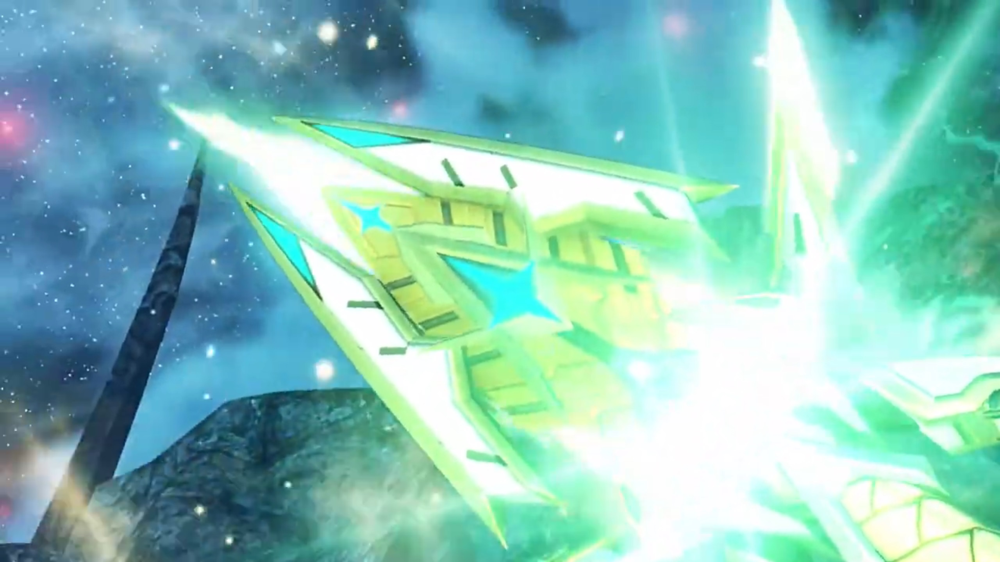
Akhos realized what happened, the tone of fear in his voice, but he announced, "Y-y-y-you can't rewrite the act now! It's too late!" He went after her. She turned her attention, the crystals on her forehead and crystal grew bright.

Malos shouted out, knew what moves she had, "Hey, idiot, LOOK OUT!!!" He was looking up at the sky.
"Huh?!" He stopped on his track, only to realize a lightning beam strike straight in front of him. "Yrrrgghhh..." Lucky once.
"Akhos!!" That wasn't the only beam. More and more beams came as he went into evasion track, zigging and zagging, hoping his chance would play by his side. Malos wasn't thinking of saving him, exited the barraging fields and let him dealing with it alone. With her eyes, she tracked Akhos's location, giving instruction to the machine in outer space where to hit. One bright beam of larger hitting radius shone above his head; he had nowhere to run.
"WAAAAAAAARRRRRRRGGGGGGGHHHHHH!!!!" He jumped just in time to be scathed by the edge of the beam; Olethro Ruins isn't as lucky, collapsing under such immense strength, sinking to the sea beneath.

Rex backed up to protect her.
Malos exclaimed, "You're awoke! At last! Mythra!"
He launched himself at them, which Rex blocked. He was confused, "Mythra?! Pyra! You're..."
"I- am not- Pyra." she said, with suppressing annoyance.
"HUH?"
While transferring power, she continued, "I am Mythra. Pyra... She's a different self- that I constructed."
"A different self?"
"No time for that." Malos had been thrusting harder and harder.
"Oh. OK!"
She strictly instructed with her limited patience, "Now focus! You need to focus! Or I can't transfer my power to you!"
Akhos get back on his feet, the mental injury dealt to him more than the physical scratches. "No, it can't be! My powers are useless?! W-where is that energy COMING from?" Obrona's field had not been lowered, despite all the attacks they suffered.
What idiot teammate he had. Malos: "Wake up! She's not drawing from the ether, it's something else!"
"Not... ether?" Never even heard about it.
He had no obligation to explain something that he could also do, "Mythra... Looking good. Things- are- heating up." Back he went into the fight, Akhos joining in.
Mythra: "Let's do it!" She released her own field that engulfed the whole ruin, temporarily stopping time. Shadows of Akhos and Malos formed as they dashed towards him; he didn't understood what that means,
"What is this?"
"It's called Foresight."
"I don't..."
"A prediction of what will happen in the immediate future. Read their movements, to find an opening, then counter!"
"I get it!"
Time restarted; he had time to think of what to do, and just followed his calculations blindly.{{footnote: When fighting, your consciousness is always slow compared to your unconscious. Say simply, what conscious calculations you did only works before the opponents came for you; your muscle memory are what determines whether you'll win or lose otherwise in counterattacking.}}
Akhos had met too many surprises today, "Grh!! He... How did he dodge that?"
Malos: "Who cares how! Just GET THEM!!!"
Feather strikes from outer space had prevented them from attacking continuously. "Graahhh!!"
"Piece- of- cake." Rex announced, as he picked his enemy, Akhos.
"Ugh! You little..." Suffering one injury under his armpit, he started to feel fear at such uncertainty, everything now's outside his control, started self-doubting "Huh... Th-there's no way! There's no way to break their link. I don't think we're going to beat them."
"This is it... The- true- power- of the Aegis. Takes me back. I've waited so long to see it again." exclaimed Malos. "Mythra! Welcome back!" Round 2.
Rex and Mythra held the sword's hilt together, pointed their sword at the sky, and shouted, "Sacred. Arrow!" More feather strikes from outer space. The two had difficulty defending such immense power.

"GRRRAAAAAAHHHHH!!!"
"Wha... What is this...? Akhos?" Motes had turned Malos's Blade back to Core Crystal, and Obrona followed thereafter, unable to understand why showering in such light caused her to disappear.
"OBRONA!!!" He watched with shaky body, unable to do anything to safe her. The wit and geniuses he'd done to others, the cliché he'd seen from others, he swallowed the pill himself, let his emotions hijacked his logic, and dropped to the ground.
She had been evaporated under the attack. He felt his connection to her dimmed. Her core crystal dropped to the ground, forced return. Similarly to Malos's Blade.
Rex was panting. The fighting had went on for far too long.
"I. don't." He knelt before the dimmed Core Crystal. The moment they spent together, despite she always teasing him, satirizing him, mocking him, the voice of her always there supported him. Taking it for granted for too long, he had never dreamt that one day, his partner, the invincible (always rejuvenating) Blade would die before his eyes, before he's dead. Even if he resummoned her, when the crystal rejuvenate, it would no longer be the dear friend they'd spent their time together for long. No, even if the physical flesh are the same, what defines you is your memories, and the actions you took based on your past memories{{footnote: 'Experiences'}}. She will no longer be the same as before.
"Hmph. We gotta retreat! Akhos!" But he'd shut his ears to all outer attention. All in his mind, in his vision, the crystal being the only thing worthy of his attention.
"Obrona!" Come back! Wake up! That's not your Core Crystal, right? You're playing hide-and-seek with me, right? You're hiding somewhere else, right? Come out right here! Come back to me.
"No time for that, Akhos!" Malos punched hard on the ground, releasing dust and energy that shrouded their view. Rex blocked the dust from entering his eyes with the sword. After the dust faded, nothing left. Including Obrona's Core Crystal.
The sun rose on the horizon; he put his guard down. His friend had got up their feet, but now without something else to distract him, the death of his teacher awash him. Nia watched as he slowly by slowly walked towards the ledge where Vandham's body lies,
"Vandham..." They thought they won, but he felt not. He might had saved Pyra from being taken, but he had not saved his mentor from dying. The sword on his hand sheathed, he looked at his corpse, called out, hopefully he'll wake up once more, telling him, he's just too tired, and he need rest. But no, the warmth still within his blood cooling down; he laid there, lifeless. No power could brought him back to life.

Mythra watched, said nothing, and went back to sleep, letting Pyra taking over. She was too tired, dropped to the ground; her driver had been too preoccupied with his mentor's death, didn't hear her. But he had his friends; Nia picked her up, let her rest in her chest.
Tears aggregated at the tip of his eyes; he could no longer hold.

Rex collapsed into tears, banging on the floor, felt so useless, so weak, for the nth time in his life, and the first he lost someone dear, "Nguh nngh nghn! ARRRRGGGGHHHHH!!"
The sun may rise for another day,
but he won't be seeing it anymore.
Footnotes:
Brief History of Alrest, Minoth
A long time ago, there was a peaceful City behind the back of a Titan. The people there were living in peace, doing their business; until one day, without prior signals, purple beams stroke from the sky, hitting every inch, destroying buildings and people, before they had time to realize what had just happened. The yellow beams came after the purple, destroying whatever remnants leftover in the ruins.
The remaining citizens not already in the City gathered atop a mountain some kilometers away from the City. They watched their home getting destroyed, nothing could they do to save it. They looked up at the machine in the air, with a bright green plus-shaped crystal in its chest; seated Mythra within.
The sun already rose up high. Some more people from the City joined the group; they'd buried Vandham there and raised a tombstone above. Dromarch versed for the fallen, taking the alpha position{{footnote: The front-most position directly facing the tombstone}}, "The body- may die, but... never the soul, which is merely- passed on. Souls- flow- onward, born- and reborn, forever- part of the great- ether stream."
Tora cannot understand, "Why friends make- grave here? Can we not take Biggipon home, to village?"
Gramps replied, "He'd- want to be- buried where he fell. It is- traditional- amongst- mercenaries." Dromarch bowed and opened up the Alpha position for Iona, whom carried with her flowers, knelt before him, and delivered the flowers, "Hnph. I'm so sorry, Vandham. If only I hadn't listened to those people, you'd still be... I'm sorry... I'm so sorry..."
Nia listened, her head down feeling the more guilty, clenched her fist. Dromarch understood her Lady's will, respected her choice. She thought for herself, if only she'd released her true power, perhaps...
Rex, standing at the beta position{{footnote: 8 o'clock of the alpha's position}} for long, went forward and wrapped his arm around Iona, consoled, "It's not your fault. No matter what, those guys would have tracked us down eventually. What matters... is that Vandham saved all our lives. For now, let's just be grateful to him... for that."
"Ngh! Mm... You're right..."
"I won't forget your words, Vandham. Ever. I'll fight my own war. With Pyra." He swear. That's his wish, and he'll live for it. Gramps's ears wiggled a little, turned around and saw "Pyra?" accompanied by Poppi. His turning had alerted Rex.
She moved past everyone, didn't answer him. Iona had returned to the hugs of her guardians{{footnote: Some unknown people from the City or village}}, crying. Rex backed away, giving space for her. She embraced her heart, bowed, and leave the other direction, reluctantly{{footnote: She walked one step, looked back at the grave, paused for a moment, before continued her way.}}.
"Are you all right?"
Quietly, not wanting to look at him in the eyes, she answered, "Yes."
At times, we really felt jealous at the courage of kids. He took it at face value, urged, "Good. I was worried that you might not... wake up... Pyra, you know I've got to ask. That thing that happened yesterday..." is what she don't want to face, and why she wanted to evade him now. "You called yourself, 'Mythra'?"
The others were waiting for an answer from her. She stuttered, trying to find excuses, "W-w-what? I uh I, um..."
Nia urged, "I'd like to hear that too. That power, it wasn't normal. Is that the true power of the Aegis? I think you owe us an explanation. It was pretty crazy."
"Tora want to know too. Pyra was suuuuper strong! Why so strong? Huh?" Poppi copied how her Masterpon acted.
Gramps stood on her side, "Now, now, don't pressure the girl..."
Pyra: "Well, um... The thing is... I-I-I mean..."
Mythra cannot stand the lack of courage she had, the bright light shone in her chest as she took over, transformed right in front of them. "AHHHH!!!" The group watched in awe, as if something scary was happening.
Rex: "P...Pyra...?"
Clenching her fist, with suppressed annoyance, she walked past Nia towards her Driver, strictly asking, "Why?"
"Huh?"
"Why did you wake me up?!"
"Huh? What?"
"I didn't want to wake up... I didn't want to come back! I left EVERY-thing to her so I'd never have to use that POWER again! But then YOU woke me up!"
"W-w-woke you up?"
"If YOU- hadn't been SO USELESS, NONE of this would have happened! I wouldn't have had to USE THIS POWER! DIDN'T YOU listen to that Vandham guy? He told you to hold back! He TOLD YOU, to run! But you just had to push yourself. Idiot. Look where it's got us now!"
"You-"
"You really messed up."
"You don't have to tell me that! I know, all right? I knew I was being an idiot."
"Rex..." She knew her words had been too rough, but she don't know how to express it any other way.
"But I just... I couldn't hand you over to them. I wanted to keep you safe."
Struck in her heart, such cheesy words. "Wh-wh-wha...?!" Speechless as to what to say, she decided to avoid it, "A-at any rate! If you've got questions, you can ask her! I'm out of here! Bye!" Such tsundere{{footnote: 'tsundere' definition based on the Cambridge dictionary, means "a character who seems unpleasant or unkind at first, but who develops into a more pleasant or kind character."}} personality she had.
Pyra, speaking to herself, "Ah... That's not fair..." Turning around, "Everyone, I'm very sorry... about all that." And she bowed to them.
That night, inside the theater, Pyra shared, "Malos and I, are Aegises. Blades born with a- terrible power, strong enough to destroy the world..."
Rex cannot believed what he'd heard, "Malos is... another Aegis?!"
She nodded. "Long ago, There was a man who climbed the World Tree, hoping to make it to Elysium, and meet his Creator." The young man had pointed ears. The guy arrived at the top, taking a fire stick in his hand, and discovered the buildings up there.

Pyra continued, "But... when he arrived at Elysium, he found it empty." He opened the giant door before him, the smiles on his face hopefully hoped for something.
"So instead, as proof that he had reached that divine realm... He brought back two Core Crystals, Malos, and me." All the way he climbed up, all the way he climbed down.
"And... once he made it back, to Alrest... He awakened Malos." The two same-shaped different color crystals floated in front of him, he could only choose one to resonate with. "Why he did it, I can't say. For greed... for power... or perhaps..."
"When Malos awakened, he wielded his world-shaking power... without- restraint." Amidst flames, Malos rose. Cities after cities, towns after towns, villages after villages, every inch, Malos released his power and swallowed every surface of the Titan's skin.
"To him, it was natural. He had never known anything else." The purple flames added up, burning down the whole Titan alive.
"I was awakened by a Driver... who was determined to stop... Malos's rampage." People gathered in Olethro Square, Mythra wielding her sword and put it on the left and right head of a gray-cloaked guy knelt before her. "So Malos and I, fought."
"I fought with all my might, and succeeded in defeating Malos." The shockwaves of their battle destroyed everything in their pathways. Even the machine, her born-companion{{footnote: 伴生. There's no English word that one know that describe this accurately.}}, had came down from outer space to help.
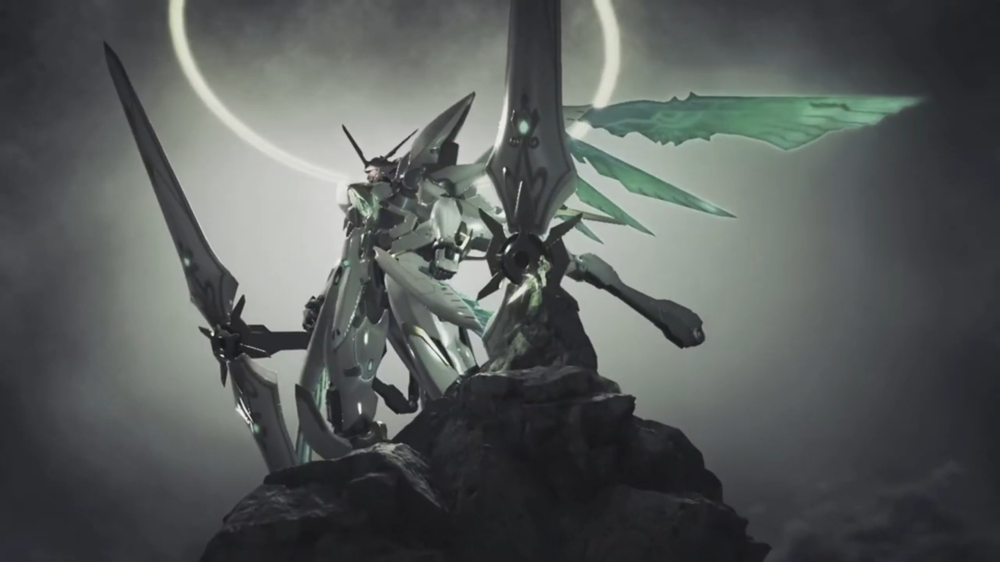
"But not without a price. THREE great Titans fell in the struggle. After the battle... I SEALED myself away to ensure that power would never be unleashed again. I took the form you see now, and fell- into a loooong slumber." The casket she slept in, closed the lid above her, and hibernated for the next 500 years. "That was five hundred years ago..."
Gramps, one of the participant during that time, continued the story, "The Aegis War. The man- who awakened Mythra was Addam, hero of the lost Kingdom of Torna. Addam fought as Mythra's Driver... to protect- the world- from Malos. We- Titans- played our part in that battle, too. It is our calling... to live alongside humanity, after all."
"Gramps?" Rex never heard this part of his story.
"Addam- hid Pyra's sleeping body- inside a great ship, and sunk her to the Cloud Sea's floor, where none- could abuse her power."
"So that day, that's the ship that we... That's how Pyra and I..."
"I believe... it was fate, that we met each other. Otherwise, my sister would never have woken up."
"You call her, your sister?"
"Mythra and I... used to talk together, in that dream of Elysium- where you met me. We promised that, when we were awakened again, we'd go home to the real Elysium. And then, we would fulfill our- real purpose..."
"And that's... defeating Malos again?" She nodded in return.
Pyra found the chance to talk to Rex back in the dormitory alone, looking out the windows, deep in thoughts. She immediately apologized, "I'm very sorry... about Mythra. She didn't mean all that. You have to understand, she came out because she wanted to protect you. She broke her own seal for you, even used her power as the Aegis... The flame powers I use are just a... shadow- of her strength. Droplets of excess energy... trickling through the seal."
"Don't worry about it. She was right. This was all my fault. I'm just glad..."
"Hm?"
"That you've finally managed to open up a little! Also, thank you! For protecting everyone, I mean."
"Protecting? Me?" She doubted.
"Your powers... are incredible. I could feel the truth behind the legends!"
"I'm sorry... I..."
"You apologize a lot, you know that? I guess... you still feel guilty... about the Aegis's power, right? But I... don't want you to have to apologize any more. I hope I can help you move past that..." Then he shook his head, "No, I KNOW I can!"
"Rex, I..."
"Power depends- on the heart of its wielder. That's what Vandham said. That's why your power... is the power to protect. The power to keep everyone... safe and smiling. I want to do the same. I'm gonna be the kind of Driver who can protect you in turn, I promise! Make a girl cry? That's not gonna fly. Make a girl smile? You pass the trial! That's the third rule of the Salvager Code! Yeah?"
Perhaps she felt glad they'd spoken so much after. Before she could reply, Tora was shouting outside, "Rex-Rex! Can you help Tora with repairing of Poppi, please?"
"OK! I'll be right there!" And to Pyra, "Oh, yeah - what's for dinner tonight?"
"How does Meatball Pot-au-Feu sound?"
"Delicious! Mm, I can't wait!" And he dashed off to save Poppi, leaving the space for her. She felt it in her heart, glad that he didn't scold her or blame her or anything.
Gramps was sitting on the bed, not following Rex, said to her, "That's my Rex. Never loses his smile, and that's what keeps us all going. Remind you of Addam, don't you think?"
She could no longer hold herself together, collapsed on the bed, and wept silently.
Outside the theater, Cole handed Rex the assassin dagger he'd been looking at when Malos arrived. Rex wondered, "What's this?"
"Take it, and go to Indol. That dagger's owner- will... tell you how you can get to Elysium." he instructed.
"This is... a Blade weapon, right? Who's its owner?"
"The man who was once my Driver."
"Your... Driver? Huh? But then..." He revealed his chest to show some creased veins growing around the crystal on his chest.

Gramps explained, "Cole is a Blade. We fought together in the Aegis War. Yes... His real name- is Minoth."
Tora noticed, "Blades not get old though. Why Cole look so old?"
"Because I'm one of the cursed ones. A Flesh Eater." Nia knew that phrase, felt shocked she'd heard it elsewhere.
But not Rex. "A... Flesh Eater?"
"A Blade... who has been fused, with human cells. A looong time ago, be-fore the war, some sought to test the limits of Blades' potential. I-I am a product of their experiments. One of the unlucky ones who was tainted by their folly."
"Why would... ancient people do that?" asked Tora.
"It seems that by combining Blade and human, it is sometimes possible to create Blades... with extremely unique powers. But- only very rarely. Most experiments were failures, and I was no different. Ahhhh... I gained nothing at all, and lost my immortality to boot. I likely won't last much longer."
"Grandpa..." Iona would miss him dearly.
"Before I go, I want to see where your path ends. That dagger will aid you. Will you- do this for me?"
Now the dagger felt like a heavy burden pressing on his palms. Minoth had passed him a wish, and he had to decide, should he take the responsibility? "Of course! Oh, but can I ask you to do something too?"
"Namely?"
"I was wondering... if you could write a play, about Vandham."
"About- Vandham?"
"Yeah. I think... his story could inspire a lot of people. Once I find Elysium, I'll come see you again. Show it to me then?"
"An interesting notion... Perhaps that is the least I can do. Very well. I'll do it. So see you make it back here in one piece, understand?"
"Absolutely. You have my word."
Indol. Inside the Praetorium. A man stood before the enshrinement, piously praying. May God shine its light on Indol.

The group gathered in Garfont to discuss their next destination. Rex had checked the maps and suggested a route, "I reckon the quickest route is... Back to Argentum, ship to Mor Ardain, then on to the Praetorium."
Gramps added, "If we're lucky, there'll be a Guild- ship- at the port."
"Can't say no to a free ride. Let's go and see!"
"It doesn't cost anything?" Pyra wondered.
"Salvagers can board Guild ships for free. I'll negotiate for you guys, too."
Tora: "That would be biiiiig help!"
Footnotes:
Off to Mor Ardain, Roc's Core Crystal Stolen
At Argentum, a Nopon that knew him greeted, "Heeeyyyy!!! It's Rex!"
"Rex come back alive?"
"Rex have many sidekicks now!" says the few other Nopons with the first Nopon.
Nia teased, "Quite the little celebrity, aren't we?"
"Welllll, you know. I've been trading here for a while. Anyway... I'll find us a ride to the Empire. You guys go on ahead to the inn."
"Sounds good. See you around, then!"
They gathered on the 2nd floor of the Argentum Trade Guild, where the inn and the restaurant were opened{{footnote: One cannot remember exactly if this is true, but correct me if one's wrong, leaving a comment at GitHub discussion. You can go directly to the page by clicking the GitHub icon on top right of the header, beside the 'print' symbol.}}. Seated around the tables in the restaurant, they listened to Rex announcing their plan.
"Right, so it looks like we're heading out tomorrow. Everyone, make sure you're ready by then!"
Dromarch: "Understood."
Poppi: "Affirmative!"
Tea time. Seated around several small tables, Pyra, on one of them, had a sip of the tea she ordered, wondrously exclaimed with a thin smile on her face, "The tea here is... lovely!"
Gramps shared the table with her, shared what he knew, "You can find quality goods here- from all around- Alrest. you like the place?"
"Yes. If there's time before we leave, I think I'll have another cup later."
At another table, Nia was stretching herself, "Mmmmmmph, feels so good to rest in a proper inn after a long voyage!"
Rex agreed, "Yeah! It's good to be on familiar shores again."
In the boys' dormitory, everyone was far asleep; even Gramps, curled inside Rex's helmet. Rex was trying to change position when, "Mmmm... (sniff sniff)... Mmmmm.... Mmmmhmmm?"
Something was off. There's this... nice scent, but one don't remember one'd put on any perfume! Rex tried to force change position, flipping to the other side, but something was pressing on his hand strongly. He tried mildly to pull it out but failed. His brain came back online to gauge the possible scenario; what object could there be? He opened his eyes to look.
Wait, a girl? This face, Mythra? He breathed in what she breathed out, combined with both their body scent, and blood started rushing up his cheeks. "Oh!" She hadn't yet noticed, still sleeping merrily. Oh man, how could one carry her back to her room without her realizing? How could one leave without waking her up? Oh wait, one couldn't leave. He looked down at his hand, hugged tight by Mythra, "Erm..."
Deep in her dreams, she felt someone reliable, perhaps Addam, that brought her in his hug. She carefully and blushingly rubbed her breast against him; and of course, she reflected her dream in real life, rubbing it against Rex's arms.{{footnote: Usually when we sleep, our brain will inject a massive amount of paralysis. This ensures what we do in our dreams does not get reflected in reality. However, some people's brain are unable to inject paralysis, hence we labeled their condition 'sleepwalking'.}} Bouncy... bouncy... What now?

Perhaps the soft and natural object she was hugging turned too stiff; her brain felt not right. Triggered, she smelt something unusual too, not just something not moving with her alone. Stiffened, she opened her eyes.
"Ah!" This is not good. Very bad. Eye to eye, they look straight into each other's eyes, stuck there for a prolonged moment as she was returning to life, gauging the situation. Some short moments before she realized, "ARRRRRGH!!!"
"AAAAAAAAAHHHHHHH!!!" Rex resonated her shouts; and both jolted and sat up quickly.
"You! How did you-?! Wha...?! What are you doing in my bed?!"
"Wait, I...!!!" He tried to explain.
"ARRRRRRGGGGGGHHHHH!!!" She wasn't listening, got out of bed, and ran to the only tea table in the room. Despite closing her eyes, her aims were notoriously accurate, raining whatever objects she can grab at him, "GET OUT!!! INTERLOPER!!! MONSTER!!!"
The rest in the room had already awakened from their fight. Tora, standing on his bed, and having his bed just beside Rex's, unfortunately became a victim to the rain of objects. Something hit his forehead, and he fell flat on his back.
"W-wait a minute, would you- OWWW!!!" He tried to call for his attention when something as huge as his helmet and as hard as his helmet hit him hard on his forehead. He quickly climbed back up, hand against his forehead, immediately getting to the main point, hoping her logic would takeover, "You-You're the one in my room! The guys' room, see?!"
A cup and a book was about to launch at him when she stiffened. "Huh?" She put them down, then scanned to her right. Tora getting back up, Gramps falling out of the helmet, and Dromarch, wearing a Santa Claus hat, his front limbs jetted him up, watching their drama. "I can't believe it. I did it again... I am SUCH an... IDIOT!!!" She tried to leave the room as if nothing had happened, slowly and slowly reaching for the door.
Dromarch wondered, "Hm... Is this what they call sleepwalking?"
Opened the door, but she hadn't yet gone out, something came into her mind. She's not all to blame. One thing about what Rex did was true. She turned around and looked at him, with blushing red, spitted out, "You were staring..."

"Huh?" Rex flushed up his face; but he couldn't control himself. Even now, his vision was fixated on the bouncy bouncy, unconsciously revealing himself.
"PERVERT!!!" And she left and slammed the door behind.
All collapsed, he just recovered, "WHA-WHA-WH-WH-WH-WHAT?!!!" What huge surprising news she'd shared to the rest of the boys.
Gramps, lying on Dromarch's bed, acknowledged, "She's certainly exposing an awful lot of skin."
Dromarch: "Pot, meet kettle.{{footnote: Pot meet kettle, is an idiom that says you're accusing someone for something you're equally guilty of.}}"
"Would you- care- to explain- what that is supposed to mean, my good sir?"
"Have you looked in a mirror recently?" Their eyes met, and whatever that meant...
The morning sun rise, and Argentum Trade Guild was as busy as ever. The rest of the group sat on one table, while Pyra was sitting on another herself, enjoying the tea she'd yearned for yesterday. Rex just came out of the room, gingerly walking over, trying to make sure it was Pyra and not Mythra disguising in Pyra's attire. "Uh... H-hi, Pyra..."

She put down her cup, turned around, and was delighted at his greetings, "Ooh - good morning!"
"Listen, about earlier..."
"I'm... sorry... about Mythra. She gets very confused when she's just woken up..."
He nodded his head violently, "I... see..."
"It didn't get violent, did it?"
He jolted back one step, tried to cover it up, "No! I didn't do anything weird! Not a thing!"

"No...? It was more Mythra... I was worrying about." I hadn't finished speaking and you reaction was so heightened. Are you sure you didn't do anything?
"Oh... right... hahah!" He tried to cover up whatever he'd accidentally revealed. Calming down, he had the courage to pull over a chair and sit down facing her, acknowledging, "I guess... she did throw a thing or two."
She noticed the bump on his forehead. "Ugh! Oh, no! So that was where that came from." Pyra bent forward and gently touched his forehead, and he blushed again, eyes on the twin rabbit down there. "I'm sorry. Did it... hurt a lot?"

In a panic, "N-no! Not at a-all! Really, I'm fine!"
She touched her own forehead, "Are you sure? Honestly.... my head is still a little painful." The others were secretly watching their interaction, silently feeling nervous and excited for them. Suppressing their sounds means they'd acted it out violently in body language what they felt.
On the other table, 'pot' and 'kettle' were looking at those two interacting. Gramps exclaimed, "Ahhh, to be young again..."
"Indeed, indeed."
Gramps clamped together, eagerly spoke while daydreamt, "We need a little romance in our lives, too, eh?"

"Actually, I'm... quite all right." Big eyes looking at small eyes.
The port of Mor Ardain Castle welcomed a Titan Ship. Out walked Mòrag and Brighid, the central tower was their destination. A boy and his Blade was looking at the Mor Ardain emblem above a red chair. So high up there, but so alone.

"Aegaeon..." He called out.
"Yes." answered his Blade, a silver-dark-blue Blade had tubes wrapped around him, which light-blue fluid seemed to flow continuously in one direction and recycled into nothingness. Aegaeon turned around to open the door, and returned shortly with Mòrag and Brighid.
Mòrag bowed to the boy, "I have returned from my assignment, Your Majesty."
His eyes lit up seeing his sister returned safely, "Welcome back, Mòrag. You too, Brighid." Brighid bowed to him with an extremely formal posture, answered,
"I'm honored."
And the Blades exchanged welcome, "It is good to see you again, Brighid."
"You look well too, Aegaeon."
The boy, Emperor Niall{{footnote: Recall, during the first Blade awakening in the square in Torigoth, what the soldier called their Emperor?}}, turned back to Mòrag, getting to the point, asked, "So this Aegis... truly was the genuine article."
"Indeed."
"And the boy?"
"From his garments, he- appeared to be a young salvager."
"I would be most interested in meeting him." he said excitedly.
"That can be arranged."
He looked at Aegaeon, whom step forward and handed Mòrag some documents, explained, "We have- received reports of an attack on a ship- headed for the Praetorium."
"A transport vessel?"
"Yes, carrying a cargo of Core Crystals."
"Core Crystals... Torna's work, then?"
"Most likely." replied Emperor Niall. "According to a lucky survivor, the culprit was a masked man."
"Jin... It must have been him."
"This is the third time. From what I hear, Urayan vessels have also suffered significant damage."
Mòrag took a while to think what she should reply, "My sincere apologies. This is all my fault, Your Majesty. I let that Torna girl off lightly. I should have interrogated her more."
Emperor Niall shook his head, denied her burden, "You set the captive loose because you felt it necessary, did you not? That, is enough for me. Besides which, if this really is the doing of that masked man... I doubt he would have been stopped... even by an army 5,000 strong. We have more pressing issues to consider."
"Such as?"
"The Senate... have independently resumed the excavation of Judicium."
"The pro-war faction... Senator Roderich."
"The loss of those Core Crystals... must have made them restless. Judicium- is a very- delicate- region. It would be unwise to provoke Uraya..."
"I understand your meaning. If the Senate make any unsavory moves, we can take action."
"I'm counting on you, dear sister."
They were preparing to depart for Mor Ardain when something in his pocket lit up. "This light... What is it?" He took it out and held it up, "Roc's Core Crystal?! It was like a stone. What happened?!"
Nia reminded him, "Don't you remember, Rex? Vandham told you. Core Crystals don't 'die'. They always regenerate after a while."
"Regenerate?"
"Ready to be reawakened by a new Driver."
"So... if I resonated with it now..."
Dromarch answered, "Then a new Roc would be born into this world."
"A new- Roc... Vandham's Blade..." He looked at it thoughtfully. Should he do that? He felt guilty, to take Vandham's Blade as his. Yet, perhaps he would want to be resonated again, to come back alive, as if Vandham were always by their side?
Tora: "What do?"
"I'm not sure. Taking Vandham's old partner... I-It just doesn't feel right."
Nia: "Y-eah, but may-be he would have wanted you to do it. Just do whatever."
"Right..."
Some distance from where they gathered, a boy with dark skin, wearing like some ancient Indian tribes, with long hair like lion manes, were hidden, looking at them secretly.
Nia suggested, "Probably time we headed for the ship, right?"
"Oh - yeah!"
"I'll go ahead and register us for boarding."
Pyra questioned, "Nia, do we really need to rush?"
"Sure, we could take our time. And miss out on the good seats!" And she already ran away, eyes looking backwards. Just as she turned, some shadow was dashing at her, and she jumped, barely dodged it, "Oops."
The kid dashed quickly through Rex and knocked him on his pelvis, "Owww..." His hands quickly touched where he's hit; Pyra and the others overlooked the kid running off, disappearing towards the dock. "What was that kid's problem?"
Then Pyra noticed something else, "Rex! Your bag!"
"Huh?" He looked to where he'd put his bag, on the pelvis. Gone. "No... No! NOOO!!!"
Nia returned, asked, "What've you lost now?"
"Roc's Core Crystal! It's not here!"
"You mean that little blighter...?!"
Dromarch snapped, "After him! At once!"
Rex: "TITAN'S FOOT!!!" All ran after him.
At the port, quite a number of people. Nia asked, "That little thief looked pretty young, right?"
"Yeah! And those ears. Gormotti for sure."
"So let's see..." She scanned slowly, one by one, until she came up with one, "There! That's the brat!" He was at one of the port. Hearing lots of footsteps, he quickly dashed for the water, pushing some older guy that blocked his way.
"WHOA! Ugh! "What d'you think you're doing?!" The guy dropped on his back and shouted. He watched the kid took a ship and drove it off.
Just when they'd believed he'd a bottom line, he'd showed them what's more bottom than bottom, "Why that little...! He stole the whole ship!"
Pyra: "What now?!"
Rex decided, "Let's go! Are there any other..." He scanned for a free ship to use, "There's one! Garram!"
The guy charging for the port which asked Rex for money for docking Gramps during the first chapter turned around and felt surprised, "Hey, Rex. What's the big hurry?"
"Lend me your boat!" He went straight to the subject.
"What? I mean, sure, but why?"
"There was a pickpocket! Took our Core Crystal! Over there!"
"Over there?"
The ship was slowly drifting towards the horizon, and the guy the kid had knocked over was bellowing at the edge of the port, "HOOOOLLLDDDD IT! BRING THAT SHIP BACK HERE!!!"
"Why, that's Pittman's ship! Your thief's on board THAT thing?" Garram was enraged.
"PLEEEEEEEAAAAAASSSEEE!!!"
"All right, then! The key's in the slot, so you can take her right out!"
"Thanks! I'll bring her back as soon as I can."
"Nooooo worries! Go get 'em, Rex!" The ship therefore set off after the thief's.
Their ship entered and parked at a dock. So many ships they'd took some time to eye one by one, and Tora found it first, "Thaaaaat the ship!"
Rex recognized, "Yeah, no doubt about it. This is where he got off."
Dromarch hypothesized, "He may still- be- somewhere- nearby."
Nia suggested, "Right. Then let's ask around and see what we can find!"
Rex agreed, "Good plan!"
Combining all the info, they'd enough information to find out their whereabouts. Alone in the plains, it was a roofed dock, facing the Cloud Sea. Nia commented, "If we're on the right track, he should be around here, yeah?"
"Thief using Umon's workshop as hideout... I never dream of such a thing!" Tora felt enraged.{{footnote: Oops. How to explain about the ship they borrowed?}}
Looking behind the door, they saw the few kids gathered in a circle. No sign of Umon, but Rex recognized, "That's him. Let's surround them- so he can't run."
Nia: "Gotcha." The rest nodded.
Hearing footsteps, the kid turned around, and all get into defensive stance, "Ahh! You lot!"
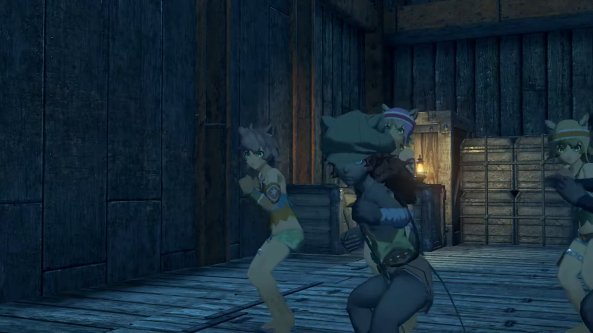
Rex: "Kid! You sure led us on a merry chase. You've wasted a lot of our time, you know."
"Dammit!"
"Look at you. You're only kids. Why don't you just give back what you took? We'd rather not hurt you or anything."
"You're basically a kid yourself!"
"Oi! I'll have you know, I work for a living. Right, hand it over."
"N-NO! You're not having it!" He put his fingers in his mouth and blew a whistle, calling some blue bird monsters as reinforcements. "The Core Crystal is ours now! If you want it so bad, you'll have to take it by force!"
"Well, nothing for it, I guess. All right, let's go!" And the battle begun.
Holding Roc's Core Crystal in his hand, Rex announced, "Well, we took it by force. Just like you wanted us to."
"Ugh!" The other kids felt defensive too.
Rex exclaimed, "Titan's foot, you're all barely 10 years old. Why are you stealing from people?"
"Ugh..."
Nia urged, "Look, keeping your traps shut won't help anyone."
"My lady, be a little more gentle..."
"Why? They're only petty thieves."
"Be that as it may, they are still- children..."
Rex urged, "Look, I'm sure there's a reason you're doing all this. Are you just- that hard up?"
One of the kids (not the one doing the stealing) snapped back, "What do you take us for?! We're not some poor beggars!"
"OK! So it's not money you're after..." Oops, accidentally leaked it.
Nia urged once more, "Then what the hell is it they want?"
Tora too: "You should just tell everything. Rex-Rex not hurt you."
"Ugh..."
"C'mon."
The kid that did the stealing, their leader, seeing they won't leave them alone, started with their goal, "We want revenge."
"Revenge?"
"We're gonna... avenge our village!"
"You don't mean... You were planning to awaken this Blade and use it? Why don't you tell us the whole story? We might be able to help."
"Bandits attacked your village?" Pyra concluded.
"It was just a small, peaceful village. But the bad men... Just because we had water, they..."
Nia prompted for more, "Did anyone survive? Don't tell me... you're the only ones?" They put their head down, said nothing.
"What's your name?" asked Rex of their leader.
"Me? Why d'you wanna know?" a nobody like me?
"Please, kid."
"It's Rhys. From Cordell Village."
"Cordell Village... Can't say I've heard of it." said her whom was born here.
"It's just a tiny village on the outskirts of Gormott. Not many people know it."
Rex: "OK, Rhys. I get why you did this. But still, it's not right to steal from people. Besides which, awakening a Blade is dangerous. Do you know what happens if it fails?"
"You never now until you try! Long as one of us manages it, that's all that matters!"
Gramps climbed out of the helmet and expressed, "Sounds like you- really- were- desperate, my boy. I assume you know the whereabouts of these bandits?"
"There's a big cave over on Twin Trunks Hill. They use it as a hideout."
A kid suddenly ran inside and immediately shouted full of worries, "Ohhhh, Rhys! It's awful! Those scum are gonna-!" Then, she noticed someone not belonging to her group, wondered, "Huh? Who are they?"
Rhys urged her to continue, "Don't worry about them. What's the matter?"
"R-right, OK... The bandits are planning to attack Torigoth!"
"Are you sure?" The largest city on Gormott, armed with almost all the armies they've got, with the most advanced weapons? Hitting a rock with an egg?
"Yeah! We overheard one of their men talking about it in the city just now."
"And it was definitely one of them?" Rhys wanted to confirm.
"It looked like they were scouting the place out. They were saying with the consul gone, now's the perfect chance to take advantage."
Dromarch: "A shrewd observation... This would indeed be the perfect time to mount an attack."
Nia: "Are you trying to tell me that idiot consul was actually good for something?"
Tora dropped his head, "So... this... all our fault?"
Rex can't deny, "Well... Yeah, I guess we might have been the trigger."
Pyra urged strongly, "We can't sit by and let this happen."
"A-greed! Right, you lot! You can leave those nasty bandits to us."
Rhys was surprised, "Wh-what?"
"I swear. We'll avenge your village."
"But..."
Rex step forward and handed out his hand to Rhys, said, "Don't worry." The kid strongly took his hand and shook. Agreement formed.
Outside the hut. Rex introduced himself, "By the way, name's Rex. Rhys, take the others and go warn the city guard."
"Warn them... about the bandits?"
"Nah, they probably wouldn't believe you if you said bandits were coming. So tell them... about us instead. Tell them the guys who destroyed the water tower... are hiding out... at Twin Trunks Hill."
"If you say so... but why?"
"Don't worry, you'll see. We're counting on you, OK?"
"OK."
An ether miasma was blocking their way. "Whaaaat the..."
Dromarch: "Well, this is quite the unhelpful obstruction."
Nia thought she saw this phenomena before. After some thinking, she exclaimed, "Hey, isn't this the same as the thing we saw in the blowhole? With Vandham?"
Gramps agreed, "Indeed, it seems to be the same phenomenon."
"In that case..." Pyra looked at Rex.
He agreed, "Yeah. We just need a little help from Roc!" Taking out Roc's Core Crystal, Rex convinced himself, "Vandham, mate... Hope this is OK."
"Rex..." Pyra wondered what guiltiness he'd been shouldering all alone; but she can't help -- he'd to get through it himself, to grow up.
Roc came online once again. Nia exclaimed, "All right!"
Pyra was excited too, "You really did it!"
Rex: "Roc..." Remind him of Vandham.
"So, you- are- my- new Driver. Bit of a scrawny one, if you ask me, but ahhhh well. It's good to meet you."
"Ummmm..." Rex don't know yet how to voice to his mentor's partner.
Nia noticed, "He talks kind of like Vandham, huh."
"Vandham? Who is that?"
"Oh, right. You wouldn't remember, since you've been reawakened now. He was your old Driver."
"My old Driver?" he looked to Rex for a while, hypothesized, "Ah, so my- core- was passed down to you."
Nia suggested another situation, "We coulda... stolen it."
"I didn't sense any guilt in your words."
Gramps: "Mmmm, you're a perceptive one, all right. Yes, you take after your old master in moooore ways than one."
Time was tight. Rex got to the point and leaves the talking later, "Listen, Roc. We need your help. Reckon you could... clear the way for us?"
He turned around to look, "This stuff? Of course. Nothing simpler."
Rex exclaimed, after he cleared it, "Wow! That hardly took any time at all!"
"Hmph. I did say it was a simple task."
"Thanks a bunch, Roc!"
Roc eyed him for an elongated moment until he felt slightly uncomfortable, "Roc?"
"Tell me something. Myyyyy previous Driver..."
"You mean Vandham?"
"Yes, this... Vandham. What- kind- of a man- was he?"
Rex took some time to recall, categorize, and muster his thoughts and words, "He was incredibly strong. He looked kind of scary, but he was kind, too..." As if some rock let out of his lungs, he continued, "And he saved my life. It's thanks to Vandham... that we're all standing here now."
"I see... Then, I think I'd better protect you all, too."
"Huh?"
"To carry on my Driver's will... assss best I can... That's the path I feel best befits a Blade."
"Oh, Roc..." That was heartwarming!
Rex was hiding behind some rocks looking at the bandits inside the flame-lit cavern. Boxes of treasures were piled around all the sides, while people rested around a campfire in the middle.{{footnote: Lucky they don't get carbon monoxide poisoning, setting up flames in non-moving air.}}
Nia asked, "So what's the plan? Looks like there's quite a few of 'em, and they have Blades too."
Rex: "No time for complicated plans. Don't worry, they'll be no match for us!"
"I knew you'd say that. But hey, I'm not saying you're wrong!"
"Just- remember, we're not here to kill anyone, so mind you don't go overboard."
Tora don't understand the conflicting message, "Was Rex-Rex not going to avenge village?"
"There's more than one way to do that, right?"
Nia: "Well, if you say so..."
Pyra: "Understood."
Rex made the call, "Right. Let's go!" Immediately, they entered the room with Rex shouting for attention, like a little police himself, "All of you, put down your weapons! You're NOT going to harm that city!"
The bandits took their weapons and formed a line facing the group, one of them shouting back, "Who the hell are you punks? We ain't got time for a bunch of kids!"
One of the buff guy warned, "Hold it! They're Drivers and Blades! Now I get it... The city hired you, huh?!"
"What d'you think?" Not that we're going to tell you.
"Bah! How'd you find out about... Whatever. HEY, LADS! LET'S SLAUGHTER THESE BRATS!!! We'll make an example of 'em!"
"YEAAAAHHHH!!!" The energetic bandits shouted in unison. And the battle began.
Outside the cavern, all the soldiers fallen had been dragged outside.
"Whew! Well, we managed to beat them, all right. But what now?" asked Nia.
Rex turned around to view the road where they'd entered the valley earlier, just in time to see soldiers trekking slowly towards their current location. Gramps: "Ah, right on time."
"Oh I get it. Thaaat's why you asked the kids to call them here."
Rex: "It isn't us they need to answer to,... right?"
Dromarch agreed, "Leaving them to the authorities... A wise decision."
Pyra suggested, "I suppose- we should probably leave, then. It's not a good idea to be here when the military arrives. Let's go!"
Rex agreed, "Yeah, let's move!" And he lead the way to someplace safer.
At the Argentum port, the kids followed Rex to meet Garram and Pittman, explained the situation to them, and he pleaded, "So you see, considering the situation, could you let them off the hook?"
Garram: "Hmmm. I'd hate to deny a request from you, Rex, and I can see these kids've had a hard time. What d'you think?" He looked to Pittman.
"Welllll... I suppose I did get my ship back, safe and sound."
Rex made a suggestion, "Hey, how about this? Make them work for the Guild, and get them to work off what they owe that way!"
"Wha-?" One of the kids was surprised.
Garram: "These brats?" You sure you're not inviting them to steal again? "Are you saying, we should make salvagers of them?"
Rex agreed, "I think they show a lot of promise! They've got pretty quick fingers -- right?" He nudged to the kids, not waiting for their reply, turned back to Garram, urged, "Come on, you know it makes sense. They're poor little orphans with nowhere to go! Are you really just gonna... turn them away?"
"You sure know how to twist a guy's arm... All right, I'll do it! I'll sort out the details with Pupunin. But... it's just bed and board for now, got that? If you want paying, you prove yourselves first!"
Rex turned to Rhys, "You hear that? I hope you don't mind..."
"Wow..."He wiped off some tears of gratitude.
"Right then! Work hard, you rascals!"
Translator's note on environment: The Mor Ardain Titan was entirely covered with factory, with steam and smoke emitting from tall chimneys. The Titan's very old, its skin could no longer support lush vegetation plantation. Still, it stood despite. Most of the rusty buildings built there during their Industrial Revolution were not necessarily on land, but they could be carved out into cliff walls.{{footnote: Meaning, the external view was on the cliff wall, while they live inside the man-made cavern.}} Industrial machinery lined every single road on the Titan, transporting cargoes and whatnots to and from factories. This, is the Empire of Mor Ardain.

Footnotes:
Dadapon's Whereabouts, Travel with Mòrag
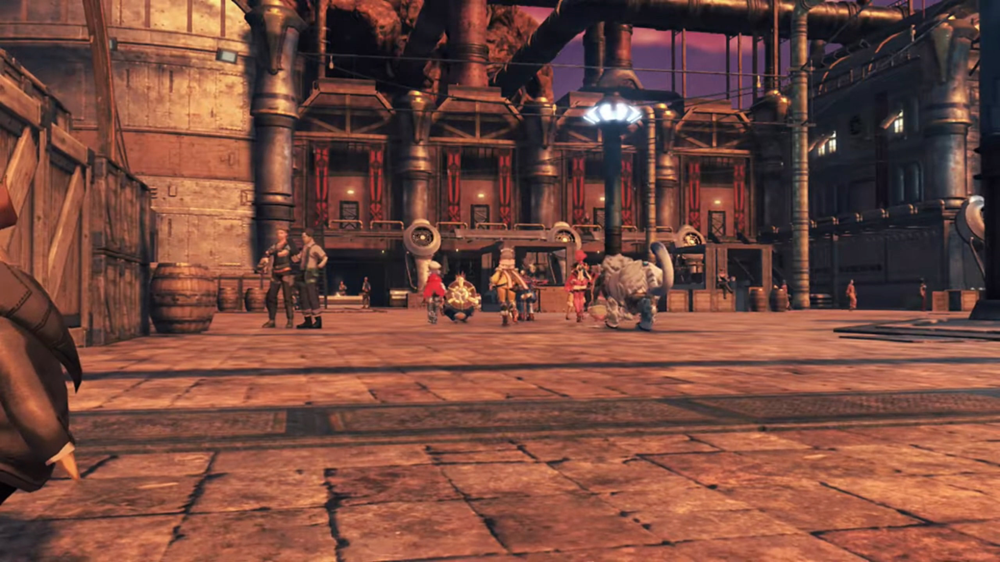
Entering the City of Mor Ardain, a Nopon was hiding behind some boxes watching them secretly. Dromarch was sensitive to sight; he turned around and searched for whoever was watching them, but the Nopon ducked behind, and he didn't think too much about it, seeing no one suspicious. Everyone else was awed by the city that underwent Industrial Revolution. Power cables overhead connected to one another. Cities of paved floor so clean{{footnote: Of course, in real past London and Amsterdam whatnots, the city was never so clean. People drink from the dirty river; if they want filtered water of various levels, it'd cost them much more. Water pumps requires money payment, and pump for how many minutes it depends on how much you pay, which the pump drew water from the river and reach the tub in your house.}}. Rhinos were tamed to transport objects.
Rex exclaimed, "So this is the imperial capital..."
Tora exclaimed with excitement too, "Such a big city! Maybe there places selling rare junk parts for upgrading Poppi! Time to go look!"
Poppi objected, "Masterpon, Poppi would rather use new parts if possible..."
Just then, some Nopon called for their attention, "Meh- meh! Is that you there, Tooooraaaaa?!" They turned around and saw a green nopon wearing glasses, wearing a lab coat. "Had not see Tora in long time! Remember me -- Muimui?"

"HUH? Why random old guy know Tora's name?"
"Ohhhh... Tora not remember me at all!" Such disappointment. "It Muimui! I- was assistant of Professor Soosoo, your Grampypon!"
Tora recalled, long ago, Professor Soosoo, Muimui, and Tora's dad was working on Poppi when Tora entered the room. He was still a child that time.
"Ohhhhh! You that old Muimui guy? Of course Tora remember! Muimui should have said to start with."
"Muimui did say." He spit out harshly.
"Oh, right! Muimui not very interesting, so Tora forgot he exist."
Rex lectured, "Tora, that's not very nice."
"No no, I do not blame Tora. Tora was very young back then. Not surprising he forget."
Poppi added, "Besides, Masterpon was quiteeeee distracted just now. Only thinking of how to upgrade Poppi."
Muimui's attention was directed to some finished product he'd worked for long. "Whyyyyy, could it be? This look like artificial Blade!"
Tora assured, "Muimui right! Tora studied Grampypon and Dadapon's blueprints carefully, and finished construction!"
"M-eh, meh.... How wonderful... If only Professor Soosoo still here... to see results of hard work!"
"Muimui, you have any idea where Dadapon went?"
"That day, when the lab was attacked, Muimui was out on errand. When I got back, Professor Soosoo's body was lying there."
"Hah..."
"But there was no sign of Professor Tatazo."
Tora was disappointed, "I see... Even Muimui not know..."
Poppi encouraged, "Do not feel down, Masterpon. We will find Dadapon someday. Though no evidence for this hypothesis."
Muimui continued, "Anyway, Muimui apologize for interrupting your trip when you just arrived in city. Friend of Muimui- run an inn just up ahead. Place with famous hot springs. If you like, Muimui can try to get you discount!"
"Muimui is best friend!" So fast Tora bit the bait already. As they were leaving, the Nopon that watched them earlier were watching them leave. This time, no one noticed.
At the female onsen{{footnote: 'hot spring' in Japanese}}, there was two nopon lying in the water beside each other. At the far side of the spring, Poppi was bathing with Nia. Nia felt her bones softened, "Ahhhhhhh, that feels good."
Poppi enjoyed it too, "Such wondrous bliss... Makes aching of journey melt away."{{footnote: Can a metallic 'junk' enjoy hot spring?}}
"Hang on! Should you even be in the bath? Won't you... rust or something?"
Poppi reassured, "There no problem. Poppi made from special alloy. Noooo rust- or neeeeed for oil!"
"Tora thought of everything, huh!"
Poppi looked high upon her "Masterpon is finest artificial Blade maker in allll the world."
Nia's ears flickered as she heard footsteps coming, called out with her eyes closed, "Hey, Pyra! Come on in, the water's great-..." Poppi whom looked around was surprised the long-golden-haired girl replaced the red-short-haired ones, but she didn't remind Nia. Only when she stood beside did Nia turned around, surprised, "Wait, Mythra! Huh?"
They turned their whole body to face her; Poppi swam a bit out from the 'shore'. Why was she here?
She asked, "Is there a... problem?"
"I... I guess not, but..." She looked from bottom to up. Long slender smooth legs, golden ratio body, "N-n-nice... bod you've got there." Poppi looked at herself, cannot see anything. Nia was jealous.
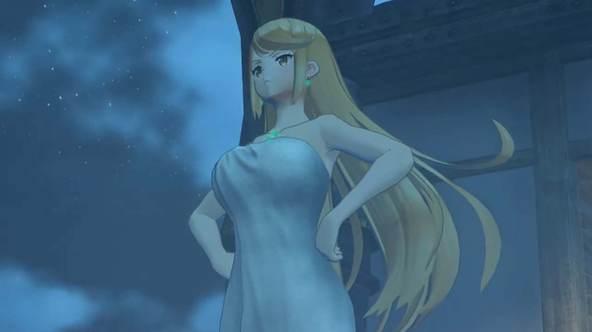
"Thanks."
Then Pyra took over to explain, "When I told her there was a hot spring here, Mythra was- dead set- on trying it out."
Then Mythra took over again, "So... here I am." And she came into the water.
Nia commented, "Must be interesting for you guys..."
Her seriousness dimmed into a smile as she stretched and enjoyed. The slightly cloudy night did not blanket them from the stars totally. The peace of mind the stars accompanied one with, relaxes one's mind. The Nopon on the other side, one was asleep inside the water, another was deep in enjoyment. Mythra stuck her toes out of the water, playfully tickle it against. Nia sat beside her, while Poppi swam in front of them. All were living in their own worlds.
After some time, Nia stood up, "A-nyway. I think I'm heading out."
Mythra noticed something after she stood up, "Nia, are you...?"
Oops, she forgotten about that. "Mm, well... Yeah."
"Do you want us to keep this quiet?"
"I'd appreciate it, yeah. For now."
"Understood." She got out of the water herself while Nia ducked back in. But Mythra reasserted, "You got it."
"Thanks."
There was a tall chimney blocking the sight of the stars; unsure if it decorates well or does it obstructs the art.
Back inside, after they'd dressed up{{footnote: Poppi don't need to dress up: she wore her dress into the water, not sure how she kept it dry. Waterproof, like swimsuit? Or maybe, she could heat up her body and dry them quick?}}, they gathered together, with Nia commenting, "Whewwww, that was a good bath."
Poppi noticed, "Mythra seem veeeery pleased."
"Well, it was my first bath in 500 years. I think I have the right to savor it."
"Can you just switch whenever?" Nia wondered.
"With Pyra? Of course."
And she immediately switched to show it to her, Pyra continued, "Our memories are shared, so it doesn't matter that much who takes control." And Mythra came out again.
Nia was impressed, "Huh! Sounds pretty handy!"
Suddenly, the inn shook, alerted all of them. They dashed quickly to the boys' dorm, and Nia wondered, "Hey, what the hell was that?!"
Rex, Tora, and Gramps were looking out the window in search of its source, while Dromarch answered them, "I cannot say. It sounds like some kind of disturbance..."
Rex suggested, "Let's find out. Come on! Huh?" Just realized it was Mythra there.
"What's that look for?" she asked, tsunderely.
"Oh, I was just... surprised to see you..."
"You'd rather I was her?"
"I-I didn't mean it like that..." but he looked away.
"Hmph!"
Whatever, no time to think about that. They all dashed outside into the metallic balcony, searching for its source, when Mythra had something for Rex, "Hey, can I ask something?"
"You need permission now?"
"Do you mind- if I stay like this for the time being?"
"Like this... you mean, as Mythra?"
"It hasn't been long since I woke up, and this is all new to you. We need time to adjust to using my power."
Pyra took over and explained, "She and I talked it over together. Mythra's power is much stronger than mine, but it has its limitations. It can be difficult to use in tight spaces. It might be best if you get used to using her in different situations."
"I mean, I don't mind at all. I'd like to learn more about you, too."
Just when Mythra took over, she felt somewhat blushy-crushy, her hearts racing fast as she stuttered, "Wh-what's that supposed to mean? I don't see how I'm any different from her, really."
Scratching his head, Rex voiced the difference he noticed, "Really? You can certainly be more... touchy sometimes..."
"W-well, that's just who I am! What do you expect me to do?!"
"You see what I mean?"
"Tzk! Errrrgghhh... What's that smile for?!" she lashed out at him.
"No, I just thought... it's been fun... lately. A lot's happened since meeting Pyra. And- now I've met you too!"
"A lot of that stuff can't have been easy, though. So why the smile?"
"Even rough patches can be valuable experiences. Is that weird?"
"Always the optimist."
"Gramps gets mad at me for being TOO positive sometimes..."
Gramps corrected him from behind, "More like- ALL the time!"
No time to talk. There was another explosion in the distance, followed by dark smoke bellowing into the air, shaking the ground. Their attention diverted, "Ah, was that over there?!"
"Looks like it." Mythra agreed with him. New adventure began.
Metal clashing as arquebusiers fired bullets at the escaping enemy. Despite the moon as the only source of light, the silhouette, seen running on rooftops from the ground, distinguished against the cloudy night. The silhouette stopped. The soldiers stopped, maintaining their distance within range of their ranged weapons; but bullets that hit only fell, doesn't even leave a dent.
"What the hell? I know we didn't miss..."
"Is she a Blade?"
"No, look!" The 3rd soldier warning was too late. The silhouette closed in fast and brought one to the ground; the others backed away, but not fast enough. As one got hit on his stomach and chin, he realized before dropping to the ground, "That body's... mechanical?"
Rex's group arrived late. He wondered, "Whaaaaaat the-? Who's that?"
"Meh?" Tora seemed to see this figure before. Where? He tried to recall. It's too dark to see clearly. Only when the clouds clear and the moonlight shone directly on her did he recognized, "L...Lila?!"

The artificial Blade with no emotion turned her back towards them, fired its rocket boosters, and shot into the air. Tora ran after her, shouted, "WAIT! LILA!!!"
"Wait up, Tora!" Rex called, trying to get him to stop and explain before going after her. Poppi watched and wondered if there's any relation between her and Lila.
Meanwhile, on the other side of the rooftop, the Nopon that'd been following them since their arrival was looking at them through a pair of binoculars.

"Hurrrr Not here... Where did she go...?!"
Rex and the others caught up, him asking, "Tora, wait. Did you know that girl?"
Gramps noticed, "She seemed... somehow... similar to Poppi..."
"It was... Lila."
"Lila?" Rex wondered who she is.
"The artificial Blade Tora's Dadapon and Grampypon were making. Tora recognize her anywhere."
Poppi read something on her panels, warned, "Masterpon, there an ether furnace reading nearby... Huh Up there!" The roof to their left, Lila was standing atop, watching them.
Tora was overjoyed, "Lila! It is you!"
Lila didn't recognize him, nor does her emotional system as complex as Poppi's, robotically spoke out, "Ether furnace reading detected. Initiating protocol." She jumped and landed in front of them, prepared to fight.
Electric sparkled from her joints, her ether furnace cannot keep up with her energy drain, she concluded, "Probability of success falling. Switching to... strategic retreat mode." Her rocket booster brought her up into air once more after she turned around.
Tora swiftly tucked his weapon into his pocket, pleaded, "LILA, WAIT!!!" But she had gone behind the gate. The group cannot vault over{{footnote: Well except for Poppi and Rex (with his anchor), but the rest had to wait for them to bring over, by then it would be too late.}}, watch her ran away. Poppi urged another path of intersection, hopefully they're quick enough to get after her.
A lot of running and they were at a mini desert just outside the city. Looking around, Rex announced, "She's gone..."
Poppi confirmed, "Ether furnace reading lost... It seem she has escaped."
"Lila..." All hopes to meet Dadapon had gone once more. He recalled, and narrated, "Long time ago, Grampypon Soosoo and Dadapon Tatazo were working on her. Her name was Lila..."
Dadapon and Grampypon argued with each other about the inactivated Lila at the lab. They couldn't reach an agreement. Then, the young Tora entered the lab and pointed furiously at Lila.
"Grampypon and Dadapon and- Tora all wanted to become Driver. However, not single one of us have potential..."
Like Tora, all his ancestors had fountain-like nosebleed for days after trying to resonate with a Core Crystal.
"So, we decide to work together and make artificial Blade. Blade even... WE can use!"
Tora had high hopes for their success.
"But then..."
One day, they were working in the lab when a green Nopon wearing lab coats entered the room, shielding his face with sunglasses, pointing a gun at them, and brought with him Mor Ardain soldiers. Despite they raised their wings over their head, surrendering, a smirk came on the Nopon's face and he fired at Grampypon Soosoo, ending his life.
Dadapon Tatazo checked Grampypon Soosoo's arteries; no more heartbeat. Turning around, he shouted, handling him a box "You must run, Tora! Take this and go! Someday, you finish what we started!"
Tora didn't hesitated; he ducked past the soldiers and escaped into the dark. Dadapon Tatazo was after that captured.
"After that, Tora hide out in Torigoth city. Making Poppi based on blueprints... and ether furnace Dadapon left for Tora." He looked at Poppi, perhaps explaining to her more than to the group.
Mythra wondered, "Don't you have any idea who the attackers were?"
"Tora not know who, but they definitely wanted to steal Lila."
Nia wondered, "If it was Lila they were after, how'd she end up here in the Empire? It looked like there were imperial soldiers after her..."
He shook his head, "Tora have no idea... But one thing is most confusing."
"What's that?" Rex wanted to know.
"When bad guys attacked the lab, Lila was not finished. There only one who could finish making Lila -- Dadapon Tatazo!"
"Which means..."
Gramps concluded primitively, "Tora's father... must- still- be- alive- somewhere?"
Tora was sure that "Dadapon must be held captive by whoever. Using. Lila."
Not enough info to conclude. When they were busy with their thoughts, a soldier suddenly shouted from behind, "You there! Don't. Move!" They looked around and found themselves surrounded by a decade.
Gramps noted, "Imperial soldiers..."
Leading the decade was Mòrag and Brighid. Once again they met.
Nia can't believe what she saw, "You!"
Mòrag: "So, we meet again, Driver of the Aegis!"
One soldier eyed Poppi, announced, "Lady Mòrag, she's the one! That mechanical girl took down our squad!"
Rex exclaimed, "WHAT?! Hang on a minute!" You got the wrong person!
Nia jumped on her feet, "Where the hell'd you get that idea?!"
Poppi can understand why, voiced, "Unfortunately, they cannot tell difference between Lila... and Poppi."
Mòrag remembered his name, "So, Rex, was it? Rex, I'm very disappointed to find you stooping to such lowly crimes."
"Lowly crimes?! WHAT THE HECK?! I'm telling you, you've got the wrong guys!" But they wouldn't listen; a battle therefore begun.
"Your skills- have improved, boy!" Her whip lashed at him. He dodged it and called out,
"Mythra!"
"I know, I know. I won't use that power, OK? Let's stick to Foresight for this. If you really need to attack, I'll hand it over to Pyra."
"Thanks!" He closed in distance with Mòrag, engaged in melee.
She noticed something else, "The Aegis has changed. What happened to her appearance? Answer me!"
"You want answers, then put the swords away! What's wrong with you?" He pushed her away.
"I'll listen to your confession- while you lie defeated!" Without looking, she threw one of her whip to the side, and Brighid caught it, came quickly to her side, and stood side by side. Dual whip clashed together and formed rattlesnakes. Flames with high concentration combined and lashed at them. Foresight activated -- time stopped.

"Rex! After this Foresight, I'll switch to Pyra!"
"Understood!" As he moved adeptly, fitting his body within the high concentration of fireballs.
When Foresight stopped, Mòrag was surprised, "Impossible! He dodged it?!"
"Now it's my turn!" Incoming Burning Sword.
Brighid called for her attention, "Lady Mòrag! Look at the Aegis!"
"So you can change at will!"
"Eat. THIS!" Mòrag intended to defend hard, didn't dodge. The flames reached just a few centimeters in front of them before turning up, blasting in the air. "Pyra?!"
She explained, "We can do this... without hitting them."
"Hah! It's like you read my mind."
"Heheh!"

She pointed her truncheon at them, asked angrily, "Are you holding back on me again, boy?"
"We just don't have any reason to fight you."
"Urgh!"
"Enough. Both of you." The secret Nopon finally surfaced himself from the background.
Mòrag recognized, "I know you. You're from the Argentum Guild's Intelligence Division."
"Lady Mòrag, stand down arms! These not the ones who infiltrate the facility... and attack your soldiers."
After some explanation, Mòrag asked, "Then, the culprit behind the attack... was not the artificial Blade standing her now. Is that right?"
"They very similar, but not the same. Niranira saw her with own eyes."
Dromarch now recalled, "I had a feeling... we were being watched since our arrival."
Niranira acknowledged, "I quite sorry- for causing concern. Niranira has been- 'auditing'- Argentum Trade Guild."
Nia understood, "Ahhhh, so you were keeping an eye on us because we came in on a Guild ship."
"How ironic that your suspicion- should happen to prove our innocence." commented Dromarch.
Mòrag concluded him trustable, sheathed her weapons, and apologized to the group, "It appears I was too hasty in judging you. I should not have attacked you so suddenly. My apologies." She gave them a neck bow, and the soldiers stood in line behind her and waist-bowed to the group.
Rex felt the formality way too strongly, furiously shook with his hands held out, "N-n-no, that's fine! Nobody got hurt in the end. I'm just glad it all got cleared up now." He looked towards Nia, and they eyed each other, not sure what they were thinking.
Gramps prided, "An apology from the illustrious Flamebringer? A rare reward in itself."
Tora expressed his anger at Mòrag, "Tora still not happy! Should get year's supply of Tasty Sausages as compensation!"
Poppi quietly lectured him, "Masterpon. Have some self-respect."
Mòrag seemed to agreed with him. "Hmm. I will do what I can within my own means to compensate you." Turning back at Rex, "By the way, the culprit who fled the scene... may I ask what manner of connection you have with them? You must tell me all."
Mythra replaced Pyra, and the storytelling session began.
"I see. It seems it would be best for all of us- if- we worked together for the moment." she suggested.
Gramps was surprised, "Us- work- with you?"
"Indeed. My goal is to capture the artificial Blade... and track down the criminals behind its actions. And from what you just told me, those I seek... likely have Tora's father held captive. Would you not say our interests align?"
Rex couldn't find flaw in her logic, "Uhhhh, I guess so?"
Mythra saw the upsides, "Well, it's definitely better to have her working with us... than against us. We shouldn't take the power of Brighid, Jewel of the Empire, too lightly. If she went all out on me, even I wouldn't be able to hold back. And then... we'd burn this place to the ground." Tora and Poppi fluttered with fear.
"I am honored... that the Aegis herself- thinks so highly of me."
"You may not remember it, but... I've faced you a few times before. Let's just say... it wasn't easy." she commented queasily.
Rex was surprised, "Ohhhh, really?"
"But- that's a story for another time. What do you say, guys?"
Nia agreed, "I can't deny I'd rather avoid making an enemy of them." Dromarch, Tora, and Poppi nodded.
Rex replied back, "All right, then! So, from this moment on I suppose we're allies!" He walked forward and held out his hand. Mòrag took it and shook, witnessed by Niranira.
The soldiers and Niranira had left them alone. Mòrag announced her timetable, "For the moment, I will return to the palace. If you learn anything new, please send word. I will instruct the palace guards... to allow you audience with me."
Rex agreed, "All right." Then they watched them go.
Brighid looked over her shoulder and asked her Driver, "Are- you- sure- you wish to partner with these people?"
She replied, "Just as you were not using your full strength, neither still were they. Yet you saw the power they demonstrated. How could I not feel intrigued?"
"Drawn by your Driver instincts?"
"Something like that. And besides..." She looked to Brighid, and they turned around and looked at the group. They were gathering around in a circle, chatting. She continued, "I get the feeling that, if I stay near that boy, I might bear witness to something quite extraordinary."
They explained their situation to Muimui back at the lobby. "It sound like you have quite the adventure. But it good that you work things out."
Rex turned to the group, "Anyway, we'll see if we can... track Lila down somehow ourselves."
"I too will see if I can find any leads. No matter what, Muimui and friends will find Professor Tatazo!"
The group reported back to Mòrag at the Castle, after gathering enough evidence from eyewitnesses, "I see. There was indeed once a factory there. However, it was abandoned some 30 years ago."
"So, you think we've got 'em?" asked Nia.
"We can't be certain unless we investigate."
"Shall we go?" asked Rex.
"You?"
"We won't do anything reckless. If it seems dangerous, we'll turn back. How's that sound?"
"Hmm... To tell the truth, it would be difficult for me to dispatch the military so quickly. Would you?"
"Sure thing!"
"Now, let me share what information I have found. There are rumors about town... that an esteemed- Nopon merchant is involved in this affair."
"An esteemed- Nopon- merchant..." A Nopon merchant again? Vandham mentioned some Nopon were spreading the news about the Aegis, were they the same Nopon? Whom had he traded with before? One came brightly in his head, "Chairman Bana?!"
"Well, we're currently searching the transaction records. If we find anything, we will inform you."
"Pretty busy, eh?"
"I don't deny it. I will head to the location myself as soon as I am able to mobilize some troops."
"All right, then."
Footnotes:
One-Eyed Monster, Confrontation at the Factory
Trekking their way to the factory, they were walking beside some cliff walls when suddenly, some laughters echoed, "AH HAHAHAHAHAH!!!" Searching for its source, they didn't wait long before Zeke and Pandoria revealed themselves. "So we meet again, Aegis!" He tilted his head higher and looked at the group over his nose.
Nia exclaimed, "Oh. It's Shellhead."
He answered too quickly, "Yes. WAIT, WHO'S 'SHELLHEAD'?!!!"
Dromarch commented, "As ever, your comic timing is exquisite."
"URGH! YOU WILL ADDRESS ME AS ZEKE VON GENBU, BRINGER OF CHAOS!!!" He slashed his swords at them, strongly showing how determinant he was. Though, his sword was a little too long, and Pandoria had to tilt a little more to prevent being 'accidentally' struck by it. "OR ZEKE! Or THE ZEKENATOR!!!"
Nia was too tired, "Make your mind up. And what the hell is a Zekenator, anyway?"
He's not answering, "Hah! You may have been lucky last time, thanks to a certain- unstable cliff. But this time round, we meet on good olddddd- terra- firma!" They stepped on the ground hard several time, each time moving their feet forward and bent lower; while he continued raining saliva at them, pushing his lungs to its limit of not stopping to breath midsentence.

Zeke continued, "If you think you can run from me a second time, you are Quite. Mistaken!"
Nia: "Nobody did any running... And anyway, Shellhead?"
"What?"
Pandoria facepalmed herself, wondered, "You answer to that now?"
Nia continued, "I've been wondering for a while now... but, what's with the cutesy eyepatch?" She pointed at his pirate-eyepatch.
"Heh! I'm quite glad you asked. This eyepatch conceals a power too great for mere mortals to comprehend. The Eyeeee- of SHINING JUSTICE!!!" He stared at them with his other eye, deliberately not noticing all of them had been very impatient with his speech, "I am sworn to keep it sealed until its power is needed to save mankind. You should count yourself lucky. It would turn you to ash in seconds!"

Nia don't believe his blunders, "Whatever you say, pal."
Pandoria stepped forward to try denying, "He definitely isn't wearing it because he didn't have the gold... for a second contact- lens."
Nia shot back at them, "How poor are you?! And are you THAT short-sighted?!"
Dromarch wanted to get to the main point, "By the by, what business might you have with us today?"
Zeke can't believe they didn't yet knew, "Are you thick? I'm here for the Aegis, obviously!" He pointed his sword at Mythra. She looked over the side of her eyes, and head tilted away again, eyes closed, too tsundere.
Nia tried to convince him, "Listen, pal. I'm sorry, but we really don't have time to play with you today. So hurry on home, OK?" And she shooed him, her arms wavered strongly like swatting flies away from bothering you.
"W-what's this? W-were you so frightened by our power, that you wet yourself, furry-ears?"
She was incited, "Did I WHAT? YOU'VE GOT A LOT OF NERVE, YOU ONE-EYED MONSTER!!!"
The way she spat out 'One-Eyed Monster' blindmindedly triggered those who knew its indirect meaning -- Rex, Mythra, and Dromarch. Mythra felt her face red hot, while the other two gasped.
Rex tried to get to her, "N-Nia? You do know 'one-eyed monster' usually means..." He got closer to her, tried to speak in her ears. But she was currently in a fury, shot back at him,
"Huh?! Means what?!"
He backed away at such aggressiveness, "Um... It's, ah..." Explaining it in public loudly, are you serious? Blood rushed up his face as he tried to find a better word, or perhaps, furiously looking around to find something to change the topic, until he saw her, "Mythra, why are you blushing?"
She deliberately looked away to not let them see; he deliberately went around to look clearly at her face. Even Gramps stick his body out of the helmet more.{{footnote: All the while Poppi was so blank watching their interaction.}} She turned her blushed face at him, against all odds, and Gramps already knew what would happen next. A strong hand swing hard on his cheek, and "Shut up!"
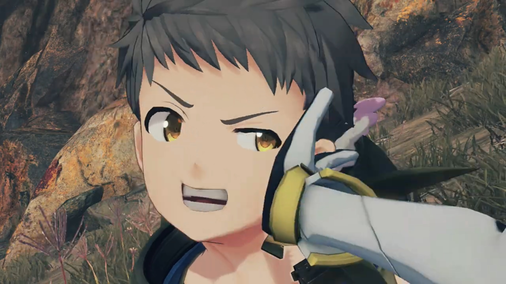
And the battle begins.
A lot of force brought Zeke dragging along the dusty terra firma before he came to a halt. Already tired, "(pant pant pant)... You guys are even tougher than last time!" He fell backward, and Pandoria caught him on time. He retained his pose despite feeling effete, and his mouth never stop taking advantage of the group, "However, your luck ends right here." With a grim, he summoned whatever energy left within him, released huge amount of electricity on his sword, "HERE WE GO!!! HIYAH!!!" The strong lightning power sent electric sparkles at the group as they shield themselves from the numbness. "BRINGER OF CHAOS!!! ULTIMATE LIGHTNING FURY SLASH... MAXXXXXXX!!!"
Once again, it missed the group, created a symbol on the ground in front of them. Aside from the electric sparkles, it did them no damage. Black smoke and thick dust did obscured their view, though, as they shielded their eyes and nose and mouth.
Nia couldn't believe it, "COME ON!!! THAT WAS THE SAME AS LAST TIME!!!" How bad is your accuracy?
He slowly tilted his head up, grinned regardless, "Hah!" And like last time, the terra firma started shaking. The group tried finding the source, when Mythra spotted something up on the cliff wall.
"Urrrr..."

"Huh?" Following her view, he looked, and a giant boulder stuck to the top of the cliff at a delicate balance, started shaking off the ground that held it, destroying the balance. Slowly but surely, the boulder started rolling and tumbled down,

"AAAAAAAHHHHHHHH!!" Screaming, the immediately turned around and ran as fast as they could, hoping to reach the Cloud Sea not far in front before being caught up by it. With full force and largest stride, their will to stay alive pumped their adrenaline to its max; but how could their velocity be compared to a giant boulder pulled by gravity?
"P-Pandy! Can't you do something?!"

"Sorrysorrysorry!!! You know my element's lightning! I'm not cut out for this!" Just a little more, the Cloud Sea was just beyond.
Zeke turned around, "Umph!", puffed out whatever energy he had within him to rush for the cliff, but just a step before, the boulder caught up with them and sent them blasting into the air beyond. "ARRRRRRRGGGGGGHHHH!!!" And that's the legend of the One-Eyed Monster!
Rex can't believe it, "S...seriously, though, what's their problem?"
Nia sighed, "Ugh. What idiots. C'mon!" And they walked past, not sparing another second thinking about him.
Conveyor belts manufacturing artificial Blade's body and ether cylinder in the thousands. From the office on the 1st floor{{footnote: British standard, 0th floor is 'Ground' floor.}}, Bana, accompanied by Muimui, was satisfied. "Now this... quite the sight."
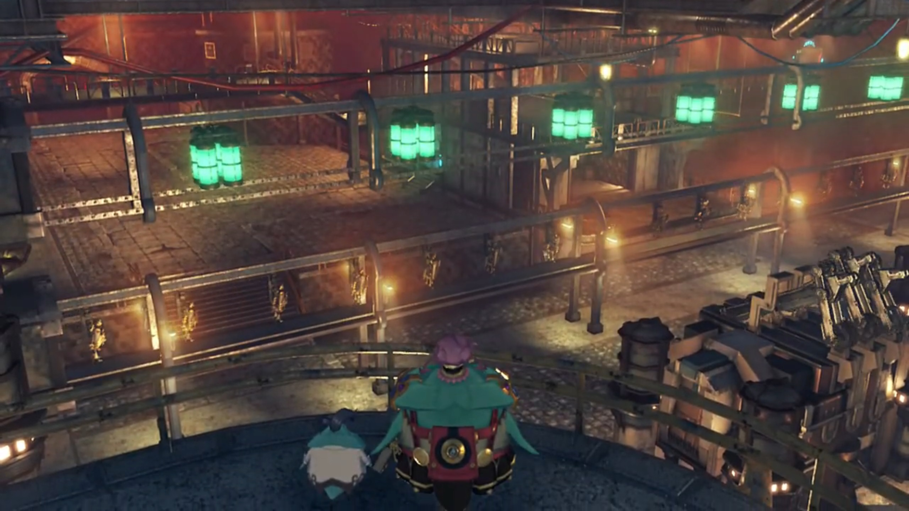
Muimui reported, "Production has been running non-stop, 24 hours a day!"
"Muimui... Once we have first thousand ether furnaces, we sell them to Torna." Bana announced.
He was confused by his decision, "Eh? Mehmeh? But I thought this project funded by Roderich, from Imperial Senate. Was it not Senator- who gave us info on Core Chips for Lila to steal, too?"
Bana was a far larger potato than Muimui. The giant potato refused to let anything but money changes his mind. "That make no difference. We go- where profit goes. Old geezer can wait a bit longer for his turn. Once war break out with Uraya, he get desperate and offer more MONEY!"
Such idol on money, "Chairman Bana so amaaaaazing! Did not realize thinking about this was so deep."
He was flattered, "MEHEHEHEHAHAHAH!!! FIRST rule of making money."
The Abandoned Factory was not so abandoned, eh? With full scale artificial Blade and ether furnace production at full speed. The group sneaked inside the factory and found the sight worrying. An abandoned factory clearly should not have such activity levels. Rex questioned, "Are all of these artificial Blades...?"
Tora worries came true, "Then- Dadapon really must be..." He looked around, hoping to see the figure he'd hoped to return to him for long; but could not yet find.
Gramps wondered, "Hmmm... What exactly are they planning here? Well, whatever it is, it can't be good..." And they continued their journey; but the lift was deactivated -- they'd to find another way down.
The group hovered over an air vent located on the ceiling of the control room. A tirkin below was speaking full of disrespect to Tora's Dadapon, "Professor Tatazo! Speak, speak, you give orders! If production get more slow, maybe you ready for sleep time with fishes..."
"Reduce load on neural circuits by 20%. That should improve production efficiency!" he shouted commands.
"See? It not so hard." The tirkin got what he needed, turned away and exit the control room.
Tatazo? "Hey! Isn't that. Huh?" Rex turned to where Tora was expected to be, but he was already gone.
Tatazo was going elsewhere when he heard a thud from behind. Turning around, despite he grew up a lot, he immediately recognized, "Ah! Could it be... Tora, that you?"
"You really Dadapon Tatazo?" He felt anxious. What if he isn't? What if he's just a clone? Or someone else looking similar? All hopes would be gone.
"TORAAAAA!!!"
"Dadapon!" And they came to embrace each other, hugging and crying. "Tora miss you so much!"
"I miss you too!" The group dropped down behind them.
Rex felt heartwarming. On the road to Elysium, helping someone to find their missing loved ones? "Ahhhh, that's great."
"Hrrrr hrrrrrhhhhh..." Someone crying... but wait, it wasn't from Tora and Tatazo, it's from one's left. He swung his head around and saw tears at the tip of Mythra's eyes. He searched his pocket and handed her a handkerchief.
"Thanks..." She did not retain her tsundere this time.
"Who all these people?" After Tatazo finished rejoicing, his attention turned to the others.
Being too overwhelmed, Tora accidentally spat out, "They Tora's sidekicks... I mean, sidek- I mean new friends!" So, that's how you think of us? Or you just want to please your Dadapon?
"Wonderful! They come here for you? You have good friends." Eyeing one by one, Poppi caught his eyes, "Oh! That artificial Blade..."
Tora introduced, "This is Poppi! Tora make her by improving on blueprints for Lila!" Stuck his nose high, waiting for praises to shower him.
His dad was pleased, "MEH MEH!!! Most impressive. Tora MUST have worked hard!"
Dromarch interrupted them, bringing them back to reality, bluntly warned, "If I may, I know there is a lot of catching up to do, but perhaps we should escape!"
Gramps agreed, "A very good point. Come on, Rex!"
"Right!"
"Not so fast, intruders!" Too late. Muimui had returned with some tirkins.
"Muimui!" Dromarch was surprised.
Nia: "Don't tell me...?!"
"Really, now? You actually not realize it yet? Muimui give you information on purpose, to lure you to factory. If we not want you here, you would never find this place so easily!" He just ripped their face off{{footnote: This analogy came from F.I.A.S.C.O. by Frank Partnoy, where someone from the derivatives department of Morgan Stanley, when they sell something highly risky and sure to fall to clients just to earn their fees, and when it fail, they tell them straight in the face but client surely can't win the legal case because it's written in fine prints in the discretion section, is how you 'rip their face off'.}}.
Tora was angered, took out his drill and pointed at him, "Meh meh! HOW DARE YOU!!!"
"Masterpon is really angry." noted Poppi.
Muimui voiced his goal, "Meh... Finally I have chance to seize precious artificial Blade. Now! Take care of these intruders!" He was not joining the fight, letting the tirkins deal with them.
All tirkins dropped to the floor and burned to ashes. Muimui was standing in front of the entrance, shuddering, "H-h-how can you be so strong...?!!!" His greed is justified, except he don't have the power to fulfil his greed.
Nia: "Now we're gonna need some answers. What were you people plotting here?"
He pretended naïveté, wobblingly answered, "O-ordinary business! We innocently mass-produce ether furnaces and artificial Blades, and sell to people who want them!"
Dadapon added to the story, "They threaten Tatazo, and force to participate in production process..."
"Dadapon..." Tora felt heartbreaking. How much torturous feats had his Dadapon went through?
Gramps wasn't moved, "And next you want to get your hands on Poppi? You are a greedy bunch."
"I knew as soon as I saw her! That artificial Blade uses lost ether furnace designed by Professor Soosoo! That is why..."
Tatazo agreed, "You quite right! Even I could NEVER make such incredible furnace as my own Dadapon."
Nia concluded, "So you lured us out here to avoid making a ruckus in the city, is that it?"
"Qu-quite right, yes..." His voice died down.
Tatazo tore down the show he'd put up with them, revealed that "Muimui was part of group plotting to steal artificial Blades all along. While he my Dadapon's assistant, he sell information to contact in Guild and had THEM attack laboratory!"
Tora can't believe, "What?! Then- it all his fault that Grampypon was killed?!"
"Indeed it was."
Rex had the answer, though he wasn't fully sure, "A contact in the Guild... Could it be that the one behind all this is..."
"Indeed! It is I.{{footnote: Such arrogance to use 'I' here. That's why you should use 'one' to refer to yourself than 'I', to signify you're just one of the many and not as unique as you thought you are. Plus, for a nopon, that always refer to themselves by calling their names, to use 'I'? How arrogant.}}" The entrance hatch opened, and Bana, accompanied by Lila, appeared behind Muimui.
Muimui was relief to see his savior here, "M-M-Master Bana!!!"
He scolded him immediately, "You never do- finish job properly, do you?! You manage to lure them alllll this way, AND THEN FAIL TO CAPTURE THEM?!!!!"
"Muimui very sorryyyy..." He bow, hoping he would not smack him for the worst.
He turned back to the group, commented, "But I am nice Nopon." His eyes first laid on Mythra, said, "You brought not only artificial Blade to me, but even the Aegis itself! Once I have ether furnace of Professor Soosoo, I can produce even better artificial Blades, and make a killing! Then I sell Aegis too AND MAKE MOUNTAINSSS OF CASH!!! THEN I CAN FEAST- ON MUSHY MUSHROOMS for life!!!" He was already high on drugs daydreaming.
Rex: "Chairman- Bana! I can't believe you would stoop to this!"
"You should show more respect, after all the valuable work I find for you."
Nia had questions, "So, who are you planning to sell the Aegis to, anyway? Torna, I suppose?!"
"How you know about Torna?!" He observed her closely, recognized, "Wait, I remember you! You one of Torna's Drivers! Wh-wh-wh-wh-what you doing here?!" He felt a little panicky. The mere name of Torna brought him shivering with cold sweat. The only deal he'd with Torna was, "If you come for ether furnaces, they ready in SHIP outside."
Nia jumped on her feet, "What?! You're selling THOSE to Torna as well?!"
He was confused, "Not sure what is going on, but- I will just- beat you all up. LILA! TAKE THEM ALL DOWN!!!"
"Mission acknowledged. Commencing. combat." She powered her rocket boosters and dropped to the ledge below, prepared for battle.
Tatazo called out, "Tora, please destroy her for me. Muimui modified her so she not even listen to Masterpon Tatazo any more!"
"Dadapon... All right! Come on, Poppi!"
"As you wish, Masterpon!" And the battle begins.
Poppi clutching to Lila mid-air; they wrestled for domination. The others don't know how to fly, had no help. Tora cheered for her, though, "Do not let her win, Poppi!"
"Of course, Masterpon!"
Lila cannot understand, "Comprehension error. Your integrated ether furnace- is not- fully activated. As an updated model, my energy throughput is... superior."
Poppi rebutted, "Energy efficiency not the problem here. Poppi's masterpon told Poppi not to lose. So Poppi will win. Very simple logic." She channeled more energy to her rocket boosters to made it through.
"Comprehension error." She changed posture and they fought once more.
Poppi concluded, "And that is why you are failure." She caught her, flipped a few times, and vaulted Lila towards the Control Room; the group ducked as she smashed the glass in front of them, landed with a bang on the ledge Bana and Muimui stood.
Tatazo worries spiked, "Lila!" Poppi stopped to assess her danger index, and she and the others waited for the smoke to die out. Electricity leaked through her joints, she had difficulty moving, what says continue fighting.
"Do it, Poppi! One more attack and she down!" urged Tora. Poppi therefore aimed the giant drill at her.
"W-WAIT!!!" Tatazo shouted. "Wait one moment, please!" He used himself as a meat shield between Poppi and Lila. Poppi was shocked by his act, reversed her thrust{{footnote: by aiming her leg in the other direction. 'Reverse thrust' is what planes use when they landed; brakes applied to the wheels probably isn't enough to land before reaching the edge of most airport runways today.}}, pulled the hammer with all her strength, and stopped an inch before coming in contact with Tatazo.
"D-Dadapon?" Tora was confused.
"I sorry, Tora. Even if she no longer listen to me... Even if she become weapon for evil... Lila! Lila is all I have. Only reminder of Dadapon Soosoo. SHE is my treasure..."
A blink came within Lila as she failed to understand yet again, "Comprehension... error..."
Bana was fumed, "What you think you are doing?!" He flickered the remote controlled of Lila to force her to continue fighting. Bright lightning beam shot through the air as Lila's furnace overclocked, disengaging any failsafe mechanism. "No need to bother protecting yourself! STEAL THAT ETHER FURNACE EVEN IF IT DESTROYS YOU!!!" The power was too great to control; she struggled step by step towards Poppi.
"Li...la...is..."
"You not need to listen to his orders, Lila!"
"HURRY AND TAKE IT!!!" He pressed one more button on the remote control. Muimui nodded. Yes, that's it. That's what he wanted. Dog biting dog!
Every step was heavy; smoke bellowed from her joints. Yet even heavier was her heart, her emotions overflowed, "Lila's... Masterpon... is..." Rex eyed Mythra to get ready, Nia read their interactions, prepared herself. "Lila's Masterpon... is Professor Soosoo... and... Professor..." She raised her hand up high into the air, "Tatazo." And punched through her own body, pulled out the control panel implanted within, squeeze it into pieces{{footnote: Such strong strength. One would never be able to do it unless it's soft drink's that kind of soft metal.}}
Bana was flabbergasted, "WHAT?!!! SHE DESTROY CONTROL DEVICE ON HER OWN?!!! MEHMEH!!!" The remote control in his hand burst into smoke.
Lila collapsed on her joints. Poppi was impressed but felt sorry for her, quickly went forward and supported her. Tatazo and Tora came yet after, she said, "I very proud of you... sister."
"Poppi..."
Tora: "Poppi... Lila..."
Bana was still overwhelmed with failure; he just scolded Muimui, and now he's one of the lowly Nopon? "THIS NOT HOW IT SUPPOSED TO GO!!!" But he had one last chance, his ultimate weapon.
"Bana!" Muimui shouted as Bana grabbed him by his ears/wings, questioned,
"WHAT HAPPENED TO ACTIVATION OF ROSA?!!!"
"She ready when you are!"
He quickly dropped him and ran off, "GOOD! DO IT!!!"
"Yessir!" Together, they ran to the side where there was a tunnel, "Hup!" They jumped off before the others noticed, and slid a long distance until it dropped them to 2 seats attached to a circular platform. The platform was attached to a conveyor belt{{footnote: Like those in a lift, you may call it cable or whatever, one don't care, one'll just call it conveyor.}}, which pulled them along at the speed of sound, and docked into a dome room. All controls are by gesture, and the platform quickly moved itself. They'll be back, with Rosa.
Rex was looking too late, "Where did they go?"
Nia suggested, "Rex, let's find 'em!"
"Tora! Poppi! You take care of Professor and Lila! We'll take down those scoundrels!"
They scourge everywhere in the factory for their whereabouts, but no, they could not find. They pass through some giant doors leading to the back of the factory, the last place to search for, Rex wondered, "Where's Bana? Where did he go?"
The ground started shaking as he finished; Gramps panicked, "Wh...wha-wha-wha...what's all this shaking?!"
Overhead, the platform flew past the group, the speaker attached amplified Bana and Muimui's voice from within, "NOPONNNNN GOOOOOO!!!" The meter-thick ground in front of the group opened up, and lifted a giant robot to ground floor, in front of the 3 giant ether tanks.

Nia jumped on her feet, panicked, "Wh-wh-wh-wha-wha-what the hell is that?!!"
The platform floated above the head of Rosa, the figures of Bana and Muimui was blurred by the orange translucent window panes, and Muimui shouted, "ACTIVATEEEEE!!! Docking, complete!!!" The platform extended its Tirkin-shaped wings before docking on Rosa's head, like a crown.
Bana exclaimed full of excitement, "WAHAHA-HAHAH-WAHAHAHAHAHAH!!! HOW YOU LIKE THAT?!!! THIS IS SECRET WEAPON BASED ON BLUE-PRINTS OF LILA, GIGANTIC ARTIFICIAL BLADE: ROSA! HAHAHAHH!!!"
Dromarch was impressed, "You enlarged the design? Incredible..."{{footnote: As if big means more powerful...}}
"HAHAHAH!!! NOW, you all BOW before the POWER of Bana! Go get them, RRRRRRROSA!!!"
Rex commented, "Ugh... This is too ridiculous for words. Come on!"
"Urgh..."
Nia exclaimed, "It's too... strong for us..."
Dromarch suggested, "Allow me! I shall serve as a decoy. And then-..."
"No, Poppi will take care of that." Poppi and Tora entered the scene. Poppi's whole body was lit with light, energy too strong to mask.
"Tora! Poppi!" Rex called out.
Mythra noted, "Poppi? This energy's incredible...!"
"Thanks to my sister Lila...!"
In the control room, as Lila was dying, she called out, "Masterpon... Profusest apologies- for letting them control Lila like that..."
Tora compared and complaint in his head, "Lila show much more respect for Masterpon than Poppi do..."
Tatazo shook his head, was grateful, "No need for apologies. You come back, and that, enough for me."
Turning to Poppi, "Sister... Lila did- awful things."
Poppi shook her head, commented, "Poppi used to people doing awful things."
Tora fluttered in a panic, "Who Poppi mean by that?!" But she wasn't answering him.
Lila continued, "Poppi, Lila has one more... request. We have- many- new sisters..."
Poppi understood her wishes, nodded firmly, "Poppi will save them. It is my duty."
Despite her facial emotions flat, she spoke flatly, "Lila happy. Now, Lila has one thing left to do... Poppi... Use Lila as starter, and..." She held out her other hand difficultly, electric leaking through her joints. Poppi grabbed hold of her hand, giving her strength.
That reminded Tatazo, "Ahhh, of course! Poppi's ether furnace... Using experimental ether furnace from Lila, it can be fully ignited!"
"But then..." Poppi felt sad, hesitant.
Tora asked, "Will Lila be all right doing thing like that?!"
"It least I can do..." and she started channeling the energy to Poppi, electric sparkles covering both their metallic body, "Use the flames of Lila's life... to save them..."
Tora called out, excited to see what new power she'd got, "Nowwww, Poppi! Show them your reallll power!"
"Roger that, Masterpon!" She throw her scarf and it swirled around her so fast it wrapped her in a scarf-ball.

Within the ball, Poppi narrated, "Initiating QT Mode. Engage!" And she started transforming into a teenage girl. The group watched in awe as bright light released from the energy center.
Muimui was flabbergasted, hypothesized, "-C-can it be...?! She manage to fully activate... ether furnace!"
Bana: "WHAT?!!" Bad news.
Amidst fire and flames, burning through cloaks, she revealed herself, the brand new Poppi QT.

Bana don't believe, "Meh meh! No matter how much power she have, she still no match for mighty creation of Bana!" Aiming the crosshair at Poppi QT, he ordered, "CRUSH HER, RRRRRROSA!!!" Red light lit up, and Rosa prepared for another battle.
Electric sparkled on Rosa's joints, and down it went, crashing on the ground. The docking port detached itself. The group sheathed the weapon, Tora announced, "Hah! Justice always prevail!"
"Masterpon, that enough gloating now." She turned to Rosa, thought, "Now, maybe you too- won't be used for bad things any more."
"Ahhh!" Nia's shout brought their attention to the docking port. Muimui laid unconscious, and "Bana's vanished again!"
Dromarch's eagle-sharp eye scanned the environment and located him, pointing with his claws, "Over there, my lady!" He had reaching for the factory's back entrance.
Rex shouted out, "Hold it!" And all of them ran after him.
They'd Bana surrounded at the ledge. The sea was just over the ledge, but he'd nowhere to run unless he jump, but he wouldn't have the time to as long as their attention were on him, "Meh-meh-meh! You veeeeery persistent!"
Rex urged, "You need to learn when to quit!"
And that is to "Stop producing artificial Blades! You used Grampypon's research for evil long enough!"
"B-but that would MEAN FINANCIAL DISASTER!!!" And that cannot be accepted. "How much you think I poured into this endeavor?!"
Rex then decided, "Ohhh, OK. We'll just hand you over to the Imperial Army, then. They'll be reaaaaally interested in all the stuff you had Lila doing. And I bet that's not all they could dig up on you, is it?"
"URK!!!" Time to play to feelings, "Rex... I NEVER had you down as such a CONNIVING boy."
"Me? Look who's talking!"
"All right. I stop production of artificial Blades." One'll be back for sure; if one escape today, one'll pay back the price you paid to one hundred-fold, thousand-fold! Just you wait.
Tora and Rex childishly cheered, as if they'd won the war, as if he really meant it.
Just then, a female voice interrupted from behind, "That Nopon is still of use to us... Do you really have to interfere?" The group turned around and saw the girl with her Blade, and another handsome guy coming up with his Blade.

Nia recognized them on sight, "Patroka! Mikhail!"
Patroka was surprised, "Hm? Oh, if it isn't Nia. Akhos did mention you had turned traitor."
"Nia know these people?!" Tora hadn't yet joined the dots.{{footnote: That is, despite them mentioning Akhos, whom he should know by now but he don't use his brain enough.}}
"They're Drivers from Torna. Of all the lowlifes Bana could have made a deal with..." Why these two?
Patroka heard the label she gave them, "Lowlifes? Coming from the traitorous rookie? You should watch your words..."
Mikhail put his arms around her, playboy-ly spoke, "Don't mind her, Patroka. Not when we are standing before the Aegis herself!" He gingerly walked like a female scared of getting dirty, gingerly danced like a pro in front of her, exclaimed, "Ah, truly the heavens must have blessed us that we- ARRRRBURGGH!!" Reaching near her, her volcano within can no longer hold, kissing his chin with her fist.

He cannot stop being an actor, dropped to the ground on purpose, while she who knew what he's doing, spit out, "Mik... Please, shut up."
"'Kay." He hobbled from behind her back to where his Blade stood.
"The traitor, we kill. The Aegis, we retrieve. Got it? It's a pain, but that's the mission."
"Roger." Mikhail wielded dual huge metal fist, which had shields built-in on the outside. Patroka wielded a gun, but her Blade had 4 hands, wielding a sword, a hammer, a spear, and an unknown weapon, changing at will.
Rex announced, "Mythra and Nia... They are my friends and comrades. I'm not letting you touch them!" And the battle began.
While Mikhail was defending Rex's attacks, Patroka's blade came to his side and surprised him, "What?" He managed to dodge and "ERRRRGGGHHH!!" ran back towards them. Mythra was having the time to scan the environment while they fight, looking at the beams, the roof, the sky.
Nia helped Rex, commented, "Ugh... These guys are tough! One's got weapons galore, the other's a master of defense. It's like taking on a small army."
Mythra had made up her decision, after lots of math going within her brain, "Rex, I'm ready."
"Seriously? We're inside a building here!"
"I analyzed the structure integrity. It should survive one blow. But we'll... have to do it right beneath that crane. Anywhere else is too risky."

Rex agreed, "All right. Then let's force them over there. Guys?"
Nia: "All right, sounds like a plan."
Tora: "Understood!"
"YEEEEAAHHHHHH!!!" Rex dashed for Patroka's Blade. Nia went for Mikhail himself.
"HAH!"
Patroka aimed her gun at them, asked them to "Just give up."
Before the fight continued further, some strong heat was scorching the left side of his body. Rex looked and immediately saw incoming blue flames, smearing the floor and raised a flaming wall in between them. Patroka was shocked, "WHA-?! Blue flames?!" Why the outlier now?
Rex called out excitedly, "Mòrag", whom pointed her truncheon at them, accompanied by Brighid.
"Honestly, Did you not say you wouldn't be reckless?"
"Things got complicated. Thanks though!" Mòrag slashed the flames she raised and extinguished it, once she got near Rex and the others.
Patroka noted, "The... Flamebringer...!"
Mikhail got headache, "As if we didn't have enough to deal with already!"
Rex got near her and requested, "Mòrag, can you push them back towards that crane?"
"Do you actually have a plan, or is that too much to expect?"
"Course! Have a little faith!"
"Very well."
"Let's go!" Round 2.
Mikhail complaint, "Urk, I guess they don't call her the stronnnnngest Driver in the Empire for nothing."
"Let's surround them with a wall of flame." Mòrag invited.
Rex understood what she meant, but was surprised, "Brighid and Pyra together?!"
Brighid pushed forward, no time to waste, "We will attack from the left. Can you take care of the right?"
Pyra took over and accepted, "All right, then! We'll try to match your timing!" And to Rex, "Then I'll switch to Mythra right away! Keep an eye on your sword's energy charge."
"Yeah, got ya!"
Mòrag: "Here goes!"
Mikhail saw what they're trying to do, felt they were asinine, "Jokers. Trying to surround US?"
"HARRRRGGGGHHH!!!"
As Mikhail blocked Mòrag's flames, he mentioned, "Not a chance!"
But she wasn't the only one he'd to deal with. Nia rode on Dromarch and got to the side, instructed, "Dromarch! Wild Roar!"
"HARRGGH!!! FROM THE SIDE?!!" The force pushed him to within the expected wall of flames.
Patroka felt her ears doused with too much Mikhail's voice, "Ngh... Try to focus, Mik! Wha?!"
"Poppi! Jet Biter!" When did he and Poppi QT came to her left?
"Roger that!"
"Don't. Get. Cocky." She tried aiming her gun at them; but Poppi QT was faster. A bazooka launched the Jet Biter, immediately the bomb blasted, shaking the floor, pushing both her and Mikhail to beneath the crane.
"Now!" ordered Mòrag, herself running towards them.
"Right!"
"Azure Striker, Form the Second: Radiance!"

"Rolling Smash!" They were now surrounded by walls of flames.
Patroka can't believe it, "We're surrounded?! Then we go up-... huh" Oh no.
Mythra was floating high above, like an angel from the sky. The crystal on her head shone bright, the machine in outer space received her instruction. Mikhail focused on something else instead, "Sh-she's beautiful..."
Feathers floated down, from where it came, we don't know. A huge beam strike from outer space, straight at them, "ARRRRRRGGGGGHHHHH!!!" The dusty wind blew strong, the group shielded their eyes.
The dust ceded, Nia was flabbergasted, "No way... They're still standing after that...?!"
Mòrag observed more clearly, "No... She calculated the precise power output required. That's the Aegis for you. Remarkable."
Her words was true. Amidst panting and groaning in pain, their Blades disappeared, just like Obrona's, turning back into a Core Crystal. Nia now "I get it. You were aiming for their Blades' Cores!"
Tora and Poppi came dashing after them, "Bad guys all beat up too!"
Their weapons had disappeared. Patroka looked over her shoulder where her Blade should've stood, no more. She looked back at her weapon, and it's disappearing before her. She reached out for it, the feelings she'd for it; now it's gone, her possession, before her eyes. The volcano in her chest came active, exploded, "Why... Why, you...! YOU PIECES OF TRASH!!! HOW DARE YOU DESTROY MY BELOVED WEAPON?! I'LL TEAR YOU ALL TO PIECES!!!" Even without a Blade, she stood yet again. Mythra landed back beside Rex, wondered what can she do next, "I'LL SLAUGHTER YOU ALL!!! I'LL SHRED YOU WHERE YOU STAND!!!" And some demonic power released from within her, engulfed her, the shockwaves it sent blew strong at the group.

Mikhail called out, "Stop! You can't use that here, Patroka!" Is she out of her mind? Oh, she probably was.
Mòrag felt "Such immense power...! Just who is this girl?!" She prepared to fight, but Brighid noticed something else, stopped her.
"Hold on a moment! Something isn't right!" Her 6th sense tried to pinpoint what exactly was not right.
Slowly by slowly, Patroka move forward, when suddenly, "Urghuh!" Some blue-ish power casted on her extinguished her power, as she exclaimed, "My body... it won't..."
Mikhail dashed towards her quick, "You all right, Patroka?! URGGGHHHH!!! This power... could it be..?!" He recognized this power, something he'd seen from 500 years ago, when he was still a child.
He looked behind the group and saw a girl taking a staff, casting her field power that neutralizes everything. Patroka difficultly looked up, and Nia watched as she passed through the group with slow steps, not looking at them. Rex wondered, "Who's that?"

Mikhail found the source he needed, some old friend of his indeed, commented calmly, "So that's what's going on. That piece of Indoline scum!"
Patroka felt angry, "D-d-did you say Indol?!"
Mikhail announced, "We're outmatched. LET'S GET OUT of here!"
Patroka felt unsatisfied. Why, at every last moment that they almost win, someone new would come out and blocked their way? And now she lost not only Bana but her favorite Blade's weapon as well... "Like hell I will! I'm not done killing them yet!" But she can't even get off the ground.
"We already got what we came for." Mikhail's not even trying to help her up. "And if anything were to happen to you huh, how could I possibly face Akhos, huh?"
Then, he grabbed her waist and carried her by his side. She struggled to no avail, "Let me GOOOOO!!! This is why I can't stand you, YOU KNOW!!!"
He turned around, not obeying her, and walked away, busy with his mouth, "Yeah yeah. You can give me a proper scolding later."
"YOU'RE NOT GETTING AWAY!!!" Mòrag dashed quickly to them. Just then, the Monoceros floated from below the cloud sea to the edge of where they stood, a loading port, and Mikhail jumped high. "Wha-?!!"
Rex recognized, "That ship!"
Nia: "The Monoceros! It was right there?!"
At the top of the Monoceros, Mikhail waved back at the group, till next time! And he aimed the cannon at Mòrag, "Orgh!" She ate some face-to-face shots.
Rex: "Mòrag!" He and Brighid quickly dashed to her as reinforcements. She was unscathed relatively.
"Lady Mòrag!"
"Do not worry. It'll take more than that- to dispatch me." But the submarine had gone, dived back into the ocean. "They got away."
Mythra quickly joined Rex, and the Indol girl slowly walked towards them, not changing the calming pace of her footsteps. Mòrag recognized who she is, walked up towards her, called out, "Fan la Norne..."
Brighid asked, "Goddess of the Praetorium... To what do we owe this pleasure?"
"Did you say Fan...?" That brought Mythra back in her memories from 500 years ago. The girl's Core Crystal was a diamond, but it only had its upper half attached. She stopped in front of Rex and gave him a thin smile; for her face, always doused with sadness, the smile was rare.
Jin was walking alone in the room consisting, beside the main path, cabinet upon cabinet of Core Crystals. There in the middle of the room was an ice crystal, freezing a girl within. All that he had done, is for her, "It won't be long now... Lora..."

Footnotes:
Addam and Lora, Jin To Temperantia
500 years ago, Addam's Camp. The World Tree forever looming in the background. Addam, cloaked in a hood, wielded Mythra's blade, fighting against Lora, wielding a staff. He exclaimed, "Amazing, Lora. Even when I foresee your movements, you counter me instantly."
"I couldn't do it without Haze's power!" Haze, we now call Fan la Norne, was her Blade. "What about you? I don't see you using Mythra's hidden ability!"
"And what if we did?"
"Well, if you did..." After separating from each other, she continued, "I'd just have to bring out my original Blade!"
"Master Addam... Your evening meal is ready for you." Jin came in with their meal. He knows how to cook?
"Oh? Is it that time already?" They put down their blades.
Lora shared, "The days are so long at this time of year, I just start losing track..."
Around a campfire they sat, a pot hovered over, to keep its content hot. Lora and Haze cuddled together, having girly chats. Addam ate with his hoods on; Mythra an arm distance beside him. A child to her left, Mikhail, busy filling his stomach.
"Oh, finished already? That's a shame. I was hoping to join in." Brighid found herself joining the group.
Mythra wondered, "Join in? By yourself?"
"His Majesty has many pressing matters to attend to. Besides, I'm used to working alone."
Mythra don't agree, "A Driver- and Blade- are one- in body- and soul. That's their very nature. You're not at full strength without him."
"It's not so simple as all that." added Addam. "I know I've yet to unlock the depths of your power."
"Really? I feel like I've been... giving it my all."
"But you never stop growing. At any rate, Haze's ability to restrict other Blades is indispensable. It's perfect for training. We're lucky." She{{footnote: With her full core crystal, diamond shaped than triangular}} was surprised how she became the topic of their conversation so sudden.
"When she stops me using my Foresight... It's- certainly difficult." agreed Mythra.
Haze, replying humbly, "Ohhh, but y-you honor me too much. I'm just happy to help you both in any way I can."
"Next to each other like that, you really do look like twins, you two." Mythra commented.
Addam agreed, "It's rare for the Driver's nature to appear so strongly in their Blade."
Lora looked to Haze, mentioned, "People tell me that from time to time, but is it really true?"
Haze thought for a while, said, "Perhaps... But, whatever the reason, I- am- happy- if I look even a little like you, my lady." And she hugged Lora's arm and cuddled.
Lora excitedly shared, "We're even the same dress size!"
"Right?"

"Hahahaha!" That entertained the others.
Finishing up whatever remains, young Mikhail was carrying something away, while Lora and Haze continued their girly chats. Mythra was catching up with Brighid, while Addam sat where he sat, looking at Jin cleaning up the mess. "By the way, we want to try taking you on next, Jin."
Others were attracted to their conversation. Lora asked for his permission, "Well? How about it, Jin?"
"I-I'm afraid I-I-I don't particularly like fighting." And he walked away, the energy he emanated felt somewhat low.
Addam: "And to think... we're hearing that from 'the strongest man in Torna'."
Lora, his Driver, defended him, "But perhaps there's truth in those words. After all, he... or rather, they..." Young Mikhail was waiting for Jin; he walked past him, not looking at anyone, his step slow and sorrow.
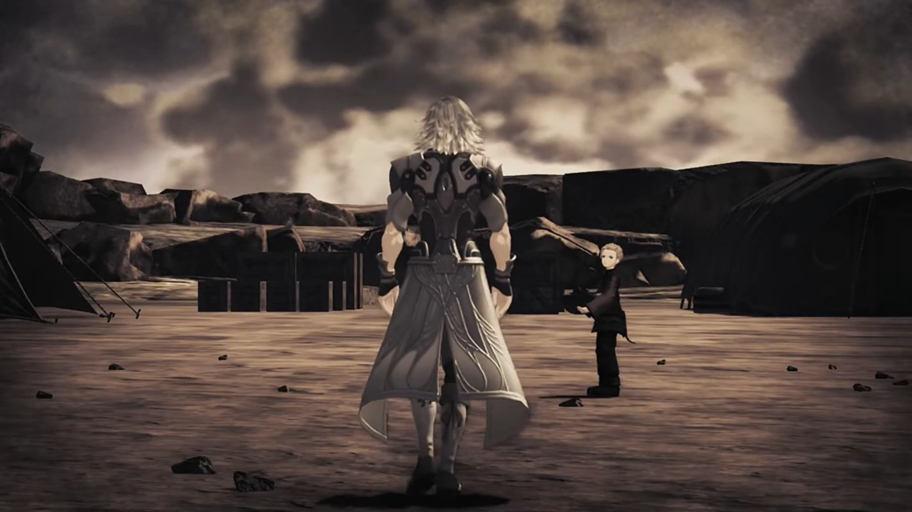
Just then, a panicking soldier rushed into the scene, shouted, "My lord, my lady! We've discovered Malos's target! The capital!" That stopped Jin -- it was something he's concerned about.
Addam was shocked, stood up straight, "What? Are you sure?"
"Yes, no doubt about it!"
On a flying Titan ship, the dragon-like vibrant wings stretched out as it drifted above the Cloud Sea, Fan la Norne stood at the front deck, watching the vast sea, her mind immersed in daydreams. Mythra observed her from behind, wondered what'd happened to her all those years. Why does she feel so sad? The Haze she'd known had always been content, with Lora by her side. But Fan?
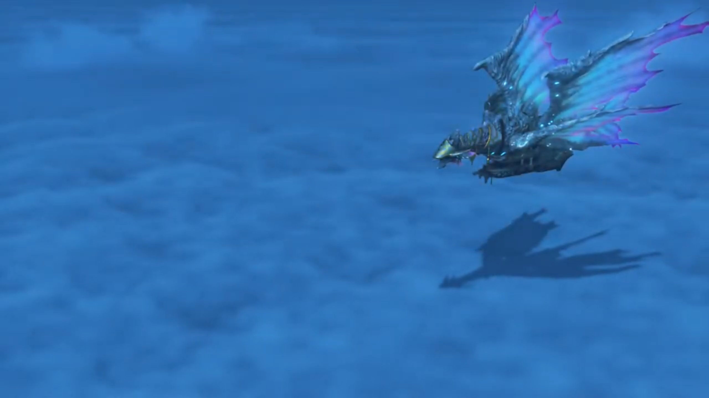
After Mikhail and Patroka escaped, at the factory, Rex asked, "Who are you?"
"I am Fan la Norne, envoy for the Indoline Praetorium."
"Oh, uh, Hi!"
"You- are- Rex, am I correct? Praetor Amalthus requests an audience. Please, come with me."
"You're joking... right? What would the Praetor- want with me?"
"The Praetorium... manages every Blade and Driver in Alrest. And, as you, are the Driver of the Aegis..."
Mòrag guessed, "The Praetorium wants that power for itself."
Fan rebutted, "Not at all, my lady. The Praetor... would like to meet his fellow Aegis Driver. He wishes the speak to Master Rex. That- is all."
"His fellow...? You don't mean?!"
She approved her guesses. "Indeed. The Praetor is Malos's Driver."
"HUH!!!" Everyone jumped on their feet. Such holy awakened such evil, how could he?
Fan continued, "There is- another matter. I believe you- currently have a- certain dagger in your possession?"
"You know about that?!"
"Why yes, I can tell. The Praetor is its original owner, after all."
"HURRRRRGGGHHHH!!" Rex took in a deep breath. Cole shared the same Driver as Malos?
Nia tried to confirm, "So the Praetor -- he's... Cole's Driver as well?"
"Yes."
"Come off it. Just... how old is he?"
Mòrag shared, "The current Praetor is Indoline. It's not that hard to believe." After all, Indoline have the longest lifespan on all Alrest, excluding Blades that live forever (if you consider going back to the cycle and coming back out as a continuity).
Dromarch agreed, "The Indoline do live loooong lives."
"Ohh right...? Well, that would explain why Cole said the dagger's owner- would know- how to get to the World Tree!" Rex completed the story himself.
"Well, what do you say?" Fan took a step forward, looming over Rex, feeling eager. "You certainly won't regret it. An audience with Praetor Amalthus is an honor."
"Uhhhh, hey, uhhhh... W-wait a second..." Let me discuss it with others first.
Nia discouraged, "I wouldn't buy it, Rex. This is too good to be true."
"What do you think, Mythra?" She and Pyra were the ones that's concerned. After all, they were going to see him, their goal from the very start after Cole. "You noticed, right? As soon as we met Cole!"
"Yes. Though I had no idea that man had become the Praetor, of all things."
"Should we?"
"There's a lot I want to ask him. I want to know about what happened... after I went to sleep. And of course... How it is... that you happen to be here, Fan."
Rex therefore decided, "All right, then. I want to meet him too. In fact, we might have no other choice!"
Mythra called out, approaching her, "Haze..."
Hearing footsteps, Fan turned around on the deck, surprisingly wondered, "Lady Mythra? What are you doing out so late? Can't you sleep? At this time of year, the nights can be bitter. Please don't catch a cold."
"I'm a Blade. We don't exactly catch colds."
"Of course. My apologies."
"H-Haze... You- really- don't- remember?"
"Hm? I'm afraid you have me mistaken... I am Fan la Norne, Blade to Praetor Amalthus."
"Right. Amalthus." She answered thoughtlessly as she focused on her Core. Why is there only half of it? "Sorry, m-my mistake. You just reminded me of somebody I know. It is quite cold, isn't it? I might go back to my room, after all." This is no longer whom she'd known, perhaps.
As she turned around, Fan sent her off by bowing to her, "Yes. Good night. Lady Mythra."
"N-night, Fan."
While she was walking back, Pyra sounded within her, "Mythra, did you see her Core Crystal's shape?"
"I saw. That's not normal resonance."
"It's not like with us and Rex, either."
"I guess this is one more question for the Praetor! Sorry... Let's change over. I have to think."
"Sure. No problem." And Pyra took control of the body. She looked back where Fan stood, wondered what story she'd went through all these years.
Jin was in one room when the shuttle opened to reveal various Core Crystals lined along the walls. Their light dimly lit the room, apart from the panels. Malos entered, asked, "Is it working?"
"Yes. I can hear the Blades' voices now."
"Come with me. Akhos has found- something- very interesting."
"Very well."
"Hey, look at this." In another room just beside the Core Crystal's, a wide-curved-screen displayed some location.

Akhos: "Temperantia... Rumor had it that Mor Ardain were conducting an excavation there. So- I thought I should check it out, and, er..." He seemed to had lost his sadness of losing Obrona already, at least on the surface.
Jin mentioned, "It's changed a lot, but this shape... That's a Judicium Titan weapon."
"Judicium... I know that name..." Akhos heard of it.
Malos shared, "Right. It was destroyed. A casualty of the Aegis War. And... it's where the Flesh Eaters were created."
"Is that so?" Now Akhos felt curious and excited.
"What now?"
"If it is a threat to us, it should be destroyed. Or... we could make use of it."
Patroka broke the calm atmosphere, "DAMN IT ALL, I CAN'T BELIEVE THIS!!!"
Akhos greeted calmly, "Hello, Patroka. And a very good day to you too. Don't tell me."
Mikhail asserted, "No! Don't- worry about that. We got the goods. No problem."
"Well, that's something. Sooo... why the temper tantrum?" Now that he don't have Obrona to track the Aegis and others, he can't get info on real time about Blades.
"And that's how it went down! Long story short, we had to make a run for it." concluded Mikhail.
"And you're sure it wasn't your ether field that was disturbed?" asked Akhos.
"A female Blade from Indol..." Malos tried to recall.
"Jin!" Mikhail knew her. And Jin knew her. "It's Haze! No doubt about it!" Jin looked away. "Jin?"
"Mikhail, how goes the work on the Marsanes?" Such change of topic.
"Oh, that's no problem.{{footnote: Lora was frozen on the ice behind him.}} It'll take a little longer than I thought, but we'll get there."
"And Akhos, where is the Aegis right now?"
He checked the panel that replaced Obrona's capacity to track some specific bandwidth he'd kept in memory, answered, "Near the Leftherian Archipelago. She's on the move, maybe on a ship."
"Maybe... they're heading for Indol." Jin suggested.
"Hmmm? Where..." Jin was walking away when Mikhail wondered.
He knew what he wanted to know, immediately answered before he finished his sentence, "Temperantia. To buy us some time."
Patroka, somewhat calmed down, "What about- the Aegis? If that man gets into her head..."
"Not happening." Malos knew his Driver all too well. Else, he would've awaken Mythra 500 years ago if he wanted her. "That's not how Mythra works."
Jin agreed, added, "In fact, she'll be a big help to us. After all, only an Aegis- can open up the path- to the World Tree. Malos, there's a lot of work to be done on what we got from the Guild. You guys, stay here- and help Mikhail. I'll go to Temperantia. Alone." he instructed therefore.
Malos: "Fine by me."
Akhos: "Very well. Take care of yourself."
As Jin was walking to the exit hatch, Malos commented, "That guy..."
Footnotes:
Bringing Pyra Home, To See His Parents (Leftherian Archipelago)
Dawn. The group gathered at the front deck, overlooking the Leftherian Archipelago. Pyra exclaimed, "Amazing... It looks like a mountain of clouds."
"The Leftherian Archipelago. Indol is currently positioned beyond the Cloud Ridge." That's the Great Waterfall of Clouds! The Leftherian Archipelago composed of multiple jellyfish floating mid-air, connected by their tentacles. Some other islands floated on the sea, weren't connected. "It would take quite some time to sail around, so we'll be traveling over land- from here." explained Fan.
Dromarch: "I suppose, not even a Titan ship could surpass- such an obstacle."
Mòrag urged: "If we have to walk, we'd best get moving now." She'd freed herself from the burdens of the Empire temporarily to join the Aegis on her adventure.
"It's been a while!" All the time he'd spent near Argentum Trade Guild, salvaging just to get most of the money back home. When was the last time he came back?
Gramps counted, "Mmm! Must be five years!"
Pyra wondered, "Rex, have you been here before?"
He proudly replied, "It's where I grew up! Me and Gramps are from Fonsett Village, just over the ridge here."
Nia was surprised, "Hmph! I wouldn't have pegged you for a Leftherian."
Pyra got excited, "So this is your home..." So now she's a guest to her partner's home,eh! The ship sailed straight for Home Sweet Home.

Trees grew on little islands carved by moats within each giant jelly fishes. Or purely sandy beaches with some pools of water near its center and almost nothing else of interest except rocks, not even having a top to cover it from the sun! The tentacles formed roads to travel from one jelly fish to another. Some of these jelly fishes even stuck their body within the Great Cloudfall! This, is the Leftherian Archipelago.
The ship docked, and Rex first touched ground again. He took the lead as a host, "Well, I guess... it'd be quickest for me to lead the way from here. We just need to get over the ridge, right?"
"Indeed. The delegation from Indol- will meet us there." agreed Fan.
"Roger that!"
"Will leave it to Rex-Rex! Lead the way!"
"Ha-ha!"
Gramps extinguished their flames, "Don't get an inflated head. We're just following the islands, you know."
"Hey! It's still dangerous!" rebutted Rex. "There's a lot of tough monsters around these parts."
"Well, I won't deny that..."
"So how we going?" asked the can't-wait Tora.
"Errrr..."
"What about Fonsett?" asked Pyra, with mounting excitement.
"What about it?" He was considering which route was safest while close enough, and don't yet understand what she meant.
"Will we pass it?"
"I mean, we could go that way."
"Let's do it! I mean, l-let's visit your village!" she exclaimed, full of excitement.
Nia: "OK, calm down."
Dromarch noted, "Someone's... rather excitable..."
Poppi $\alpha${{footnote: Oh, just as a sidenote, Poppi had reverted back to its $\alpha$ form than staying in QT form, to save energy, and because it's cute! And yes, we won't be adding the $\alpha$ to the back after this. For normal Poppi, which took up most of the speeches, we'll use 'Poppi' to refer to her. On occasions when she does changed form, we'll specifically refer to that form, e.g. 'Poppi QT'. But if one remembered correctly, she almost never speak in that form throughout the whole cutscenes.}} commented: "Not like normal Pyra."
"Uhhhh, I mean..." Opps, awkward... She excitedly invited, asked for others' opinions, "Don't you want to see the place where Rex grew up?"
Nia: "Sure! But I'm not getting my ears in a twist..."
Rex, coming to think of it, commented, "Actually, that's not a bad idea. That route's probably one of the safest we could take. How about it?"
Fan had no worries on getting back too quickly, decided to "I leave the decision to you."
"Then let's DO IT!!! We'll head off as SOON as we're ready!"
In unison, "YEAHHHH!!!"
Nia had more questions for someone whom gave her a bad first impression, "Hey, what are you still doing here, anyway?"
Mòrag answered, "I volunteered to come along. I'm acting as a representative of the Empire. Is- there- a problem?"
"No, not at all." Fan had the authority. "The Praetorium has extended an invitation to the Aegis. We would not wish to conceal this information from the other nations."
Gramps noted: "Oh, yes, that's- the- Praetorium- for- you. Impartial to the last, eh?"
"Indeed."
"That's not a problem for you, is it, Nia?" Brighid eyed her.
She answered against her will, "Sure, we're best friends now. I'll get over her throwing me in jail one day."
Dromarch tried to calm her down with logic, "Now, now, my lady, Mòrag and Brighid... are on our side. That's... much safer than the alternative."
She impatiently replied, "Yeah, yeah, I suppose."
Rex urged, "Come on, Nia, lighten up! It was all a big misunderstanding! They helped us out and everything, remember?"
"You're such an idiot sometimes!"
"I'm an optimist-"
She halted him, "Call it what you want. You're still an idiot! UGH! OK, FINE. It's water under the bridge." Reluctantly, she held out her hand to Mòrag, impatiently urged, "GO ON! Friends, YEAH?"
Mòrag: "Hmph. Very well. Friends it is." And she softly took her hand and shook. Whatever their internal story and emotions, they'd be on the same side, at least on the surface, for now. What remnants emotions required to be solve, time will tell.

They were walking inside a tunnel paved with white sand and straight tiny-cap luminescent glowing mushrooms and tiny stones, when Pyra noted, "I've never seen anything like this. A tunnel through the clouds..."

Rex explained scientifically, "It's because this archipelago is formed of many smaller Titans. The forces between the Titans bend the Cloud Sea into this shape."
Gramps reminded, "There is a large Titan as well, at the center of the cloud mountains. Though, being within the Cloud Sea itself, you won't find humans living on it."
Rex agreed with him, continued, "The small Titans seem to like clustering around the larger one, and that's what forms the archipelago."
Tora was amazed, "Wooowww!!! So many amazing things to see in world!"
Poppi lectured, "Masterpon- should get out more often! Working inside all day- bad for mind and body, you know."
"Tora on wonderful adventure with Rex-Rex right now though!" he objected. "Days of staying inside all day are long gone!"
Rex agreed, "Yeah! You're a Driver... just like us now, Tora."
"Mehmeh! Tora appreciate support from friend Rex-Rex!"
The island where Fonsett was located had trees and grass and flowers and white sandy beaches. Rex was overwhelmed when he saw, "Hahah! That takes me back!"
They looked to the left, where there was a cliff, and children were lining up and jumping off it. Nia was shocked, "What the hell? You wouldn't catch me dead doing that."

"Don't knock it off till you try it. It's how we all learned to swim in the clouds!"
"You mean, you did that too?!" Pyra was excited to learn something from his childhood.
"Yeah, of course! It came in really handy when I became a salvager."
Nia was still reluctant, "I can't stand it down there. It's not like water, feels like the clouds are wrapping around you."
"And you don't like heights, either." added Dromarch.
"You get used to it really quick." Then Rex urged, "Hey, you want to give it a go?!"
"Wha- Hey, no! You get away from me! Don't touch me!" Her fur tinged on her ends and got defensive as Rex tried to catch her.
Pyra came to her rescue, "Stop that, Rex! Don't tease her."
"All right, all right." What a lost of excitement. But anyways, let's get to the village, built of stony bricks in dome-like stony houses up the hill, with tiny windows.

"Honestly, when are you gonna grow up a little?" Nia wondered.
Temperantia. Soldiers were lining behind Senator Roderich as he read through the manuscript on his hand, "Very impressive."

The special soldier, perhaps a captain, explained, "We've refitted the drivetrain to use Ardainian technology. All of the control mechanisms have been beautifully preserved, so we should be able to finish- relatively soon."
"Finally, we will be able to compensate for our forces' depletion. The Gormott struggle takes its toll."
"Sir."
"And there are no safety concerns, I trust? The explosion three months ago was most unfortunate. Orrrr had you forgotten?"
"We've been running a sedative drip through the Titan's fluids since then. No further difficulties. We've... also encased the back end in composite steel. That- should withstand sustained enemy fire. Even if it were to be blown up; well, it'll be in enemy territory."
"A pyrrhic victory, I'd say."
"Well, the crew will have escape pods."
"Escape pods? Are you sure you don't mean coffins?"
"I mean urgh..."
"Hmph!" And he walked away, while the soldiers followed him.
There was a space in front of a machine, the Judicium weaponry Jin was after, and the Senator commented, "Judicium, the dead nation that realized Flesh Eater technology. I cannot say... I find their creations tasteful."

The captain followed behind him, commented, "I'm aware you do not agree with the principles of fusing Blades- with- human- cells. Few people do."
"Not what I mean."
"I'm- sorry, sir? Then what exactly do you...?"
"It's said that Flesh Eaters were created in the quest for ever- stronger- Blades. But is- that- really- true? What I see in them... is the shadow of a people scrabbling to prolong their existence. I look at them and see ourselves. That is what I despise. I will leave for Indol shortly. Much remains to be done."
The main entrance into the village was over an arch. While the children were busy playing, they immediately caught eyes with strange clothes. One after another, they recognized the one leading, "REX!!!", and all started dashing towards him, surrounded him with questions. The group paused their steps and let them reunite for themselves.

Rex still recognized them, "Whoa! Kirk? Kazuna? You guys sure have grown! And hey, is that really?"
"That's our Mark." Rex looked at the elder whom approached. A female with short gray hair and dark skin, with some bracelets around her neck, and giant earrings. "He'll be going away to school in Indol soon, thanks to the help you've been sending us."
"Auntie Corinne, good to see you!"
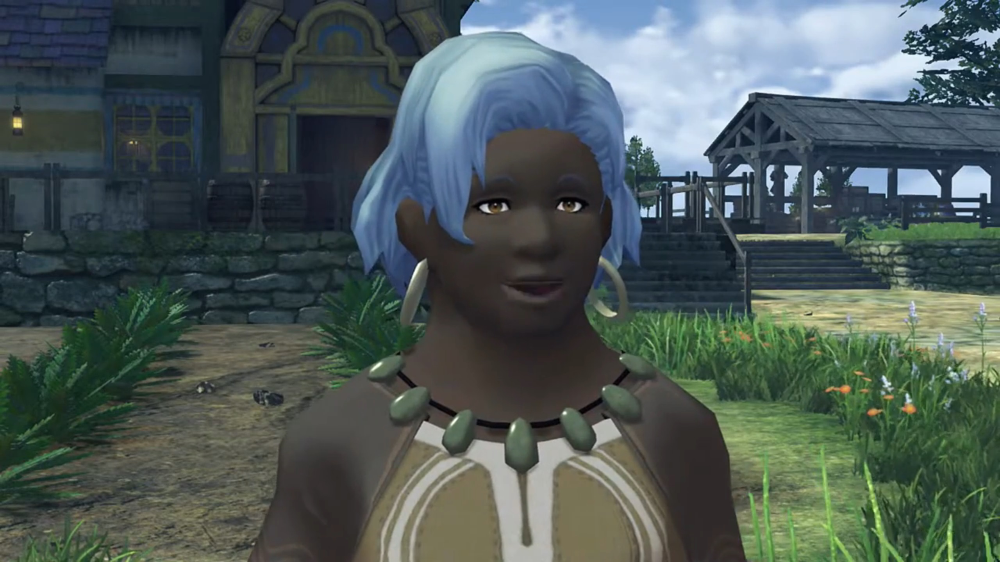
The group stood nearer behind. Pyra felt such hospitality warm and exciting, exclaimed, "Wow, this is quite a welcome..."
Dromarch noted, "I didn't realize... you were sending your money home. That's very... admirable for such a young man."
"Home, huh?" Did Nia have one? When was the last time she felt like home? With Jin, maybe? But that's nothing like here.
Tora exclaimed, "Old lady have lots of littlepons!"
Poppi blandly corrected him, "Masterpon, these clearly not all littlepons of same parent."
Corinne's eyed the little Titan tucking out his head from behind Rex's helmet, "My word! Is that old Azurda there? What have you gone and done to yourself?"
Gramps: "That would take some explaining. I-Incidentally, is there some way you could put us up for the night? Long day and all."
"'Is there some way?' Don't give me that! Stay for as long as you like! What's mine- is yours."
"Thank you."
Rex: "Auntie, thank you so much! I think I'll go for a bit of a walk first, though."
She understood immediately. "Ahhhh, yes. Leave your friends... with me."
"Pyra, could you come along too?" He invited.
That surprised her, "Hm? Oh, of course!"
Corinne wavered to the rest of the group, "Right then, come with me, all of you!" And she lead the rest to their homes, including Gramps.{{footnote: You may not see Gramps following in the video, but later on, you'll see Gramps gone. Just some minor bugs.}}
A land with various tombstone, a graveyard. Rex faced two of them, buried side by side; Pyra trailing behind.

"Where are we?" wondered Pyra.
"These are my parents' graves."
"What?!" she was surprised.
"Sorry. I guess I never properly told you about myself. I..."
"N-no, it's fine. I'm sorry... I never thought to ask..."
"I wanted you to meet them, though."
Her nervousness grew, and words stuck in her throat, it took a moment for her to be able to voice again, "To meet them? How- do- you... mean?"
He nodded to her, spoke with action. Walking close by the two tombstone, he knelt on one feet, "Hey, Mum... Dad... It's been a while. A ton happened, you know -- I became a Driver! And this girl... is Pyra. My new partner."

Her eyes widened, that's what one is to him? She eyed him from the tip of her eye, full of tenderness. Rex continued, "I know you'd love her... We- we're going to Elysium. Pyra- and me. I don't- know- what's coming next, but... You'll be watching over us, right guys?"
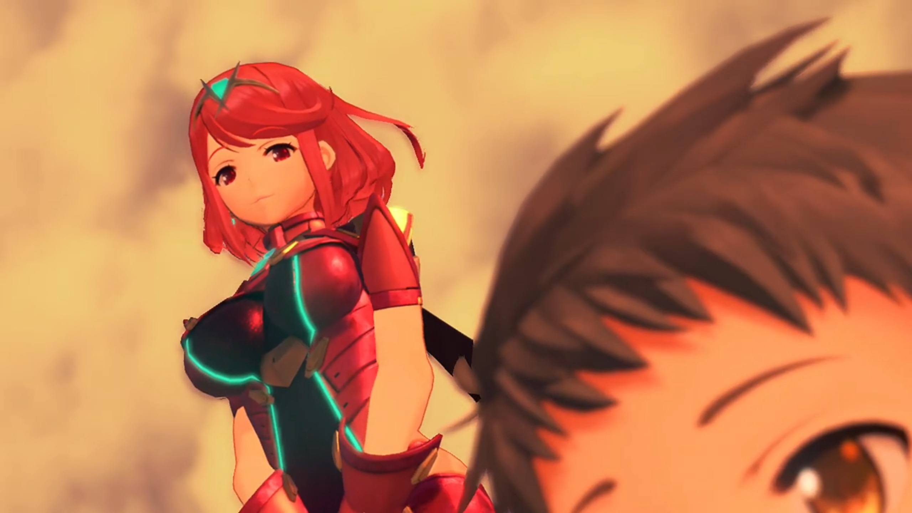
"Rex..." He embraced for a little while, and Pyra followed.

"Right, let's head back."
"OK." And she spoke nothing else, let the feelings sink in.{{footnote: Want more story about the grave? Read more here (but do it only after you finish the first part of the next subchapter, because their final members would join only thereafter).}}
Corinne had got a standalone home just for them. Poppi was punching his masterpon's shoulders, Nia napping on Dromarch, Rex chatting with Fan, Brighid with Mòrag. Pyra helped washing the dishes in the kitchen, with Corinne. "I'm so sorry, making you wash up like this."
"No, no, don't worry about it! I don't- have to be in a fight- to be able to help people. I like it."
"You're a dear. Rex is very lucky you're around. He's never brought a girl- to meet me before!"
"HUH?! Oh No, n-no no no, it's not like that! I'm just Rex's Blade!" She jumped a step back in surprise, blood rushed up her cheeks as she tried to deny, but her heart raced fast.

Corinne saw through her, "Is that so? You do hear of Blades and Drivers getting married a lot in the old stories!"
"Err..." She don't know what to say.
After all the washing and all, Corinne prepared tea for them, as a reward for her help, but perhaps, she wanted to speak a bit more to her. Ether lamps illuminated the interior of housing so bright we could see the light from the windows{{footnote: In the past, using candles or better oil lamps, you can't really see that clearly, unless there's a LOT of candles to light up the whole room -- at the expense of feeling very hot inside.}}. They were enjoying the cloudy night, though it would be better if there's some breeze.
Pyra commented, "This is a lovely village. Everyone's so warm and... carefree." She hoped she could be one of them, perhaps.
"It's removed from everything, you see. I think if everyone could live like this... the world might be a happier place. You know, between you and me... I think, deep down, Rex still misses his mother a little. In a way, you remind me of her. Just... a tad."
"Of Rex's mother? Really? A-actually... He took me to say hello to his parents." she shared, feeling heartwarming.
"Ahhh... You know, Rex wasn't born here in Fonsett. He must have been- two years old when he came ashore here with his poor- mother."
One day, a young woman effetely entered the village entrance, Rex in her hugs. She struggled forward, until she could take no longer, collapsed to the floor. The villagers rushed to her help.
"Maybe it was war, or a- dying Titan... But they'd lost their home, sure enough."
She never recovered. Corinne, as the guardian of the village's children, took the role to care for young Rex.{{footnote: Unlike today, some Indian tribes in the past, including in Latin America, they take everyone's child in the village as their child, and hospitality was extended so it's not separated into 'my child' and 'their child', but 'everyone's child'.}}
"I gather it was a great struggle to get here. She was so weak... She asked me to look after Rex, and... That was the last thing she said."
Corinne brought Rex with her and other villagers to the funeral; many people visited, despite not knowing her more than that, paying tributes. Corinne consoled the boy who'd just lost his parents; he wasn't even crying, but more blank, standing there, purpose lost.
"She seemed so lovely, too... And his father... We found his body about... three- titanpeds away from here. He came so far, If only he'd made it a little farther... Such a sad business."
"How awful..."
"That boy has suffered enough loss for one life." Corinne started crying, feeling sorry for his fate. "That's why he became a salvager, you know. To find some way up to Elysium."
Pyra recalled how he always treated the dead -- his mentor Vandham, his parents -- with so much care and reminiscent, the little feelings he emanated that she can feel.
Her guilt awash her, she felt so sorry, depressing, and self-deprecating, "In that case, maybe- it's not good for me to be by Rex's side after all..."
Brighid was searching for her, came around the corner, hid behind the walls, overhearing their conversations starting from here. Pyra looked up in the sky; perhaps one day, she'll bring him more sadness, staying beside her. And he may one day even lose her!
"Why? Are you not... fond of him?" asked Corinne.
"Oh, I am! But... with me- here... he'll suffer even more, lose- even more. So maybe... Maybe Rex is better off without me. Rex... and the whole world. They don't need me. That's just how it feels."
"Now, dear..." The conversations ends here; Brighid had no need to hear more. What worries lies in their future journey?
The next day, Corinne and a few children sent the group at the village entrance. Rex announced, "OK, time to move out!"
"See you soon, Rex!" one children exclaimed.
Corinne: "You take care now. And keep yourself out of trouble, Azurda!"
"Ah, you know me. I prefer the quiet life."
Pyra expressed her gratitude, "Thank you for everything."
Corinne: "Pyra, dear -- I don't know what you've been through before, but you should know you're not alone- anymore. Rex is a strong boy. You can depend on him, whenever, and wherever you need him."
"I know. I'll try."
"Huh? What was... all that about?" says he whom was so out of sync.
"Nothing at all. Right?"
Corinne: "Nothing for your ears, Rex. You just concentrate on what you're doing. Work hard, and do your best!"
Scratching his head, "Sure, I will." And he went with the others away. Pyra stayed back for a while, gave Corinne a bow of gratitude, before catching up with them.
Footnotes:
The Return of the One-Eyed Monster, Meeting the Praetor
They were making their way toward their boat when once more, the One-Eyed Monster appeared before their eyes, for his finale. "Finally. You took your sweet time." The grin; the grin and the eyes; he's back!

Mòrag immediately recognized him, despite not traveling with others for his first two appearance, "You're the..."
Nia welcomed him once more, didn't feel any surprised, "Hey, Shellhead!"
"Hey." He bade, don't deny that now.
Rex: "You just don't give up, do you? C'mon, out of the way."
Tora compared him to "More like stubborn leech than turtle."
"Hah! This time I'm here for something a little bit- different." He tucked his chest to the side and nudged at the group.
Rex: "Ugh, what's that supposed to mean?"
"I want to see just how good you are, chum. I've been waiting here for three whole days already!"

Nia was impressed by his tenacity, "Three days? Seriously?" She pointed at him, "You know what, no thanks, I don't pick on idiots." Rex agreed.
"Well then. Fight me and we'll see who's the idiot!" He took out his sword, pointing the shiny part at them once more.
"How did you know that we'd be here?" Rex wondered.
"I'll tell you... if you can beat me!" Then he nudged to the so-long quiet Mòrag, asked, "You want to join the fun too?"
Which she replied, "No, you- all- go ahead."
"Huh? Why?" Rex questioned.
"What- a- shame! Looks like the Illustrious Flamebringer won't be helping you this time."
Nia don't see the problem, "Thanks for the concern and all, but may-be you should be worrying about yourself. Big tree to your right, big rock to your left, and a cliff, right behind you. Which one's gonna get you this time, eh?" The group effetely took out their weapons, don't feel like fighting something whose final moves never hit 'em.
Surprisingly, Zeke was quite strictly replying, "Not today, furry ears. Check this." He bent down more and pointed at the group; they were still not at their fighting spirit, assuming he won't do them harm, waiting for his move leisurely. Then, with a lightning bolt, electricity splattered on his surface; before the group knew it, they were in mid-air.
Rex: "WHOA!!!"
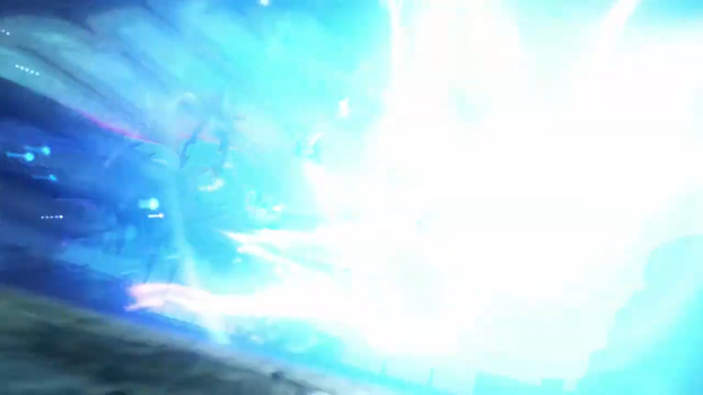
Mòrag looked at them, but didn't interfere. On the ground, the surprised Nia: "What the-..."
"Well? Feel like taking me seriously yet, hmm?"
Tora sighed, "Ah! S-so strong..."
Nia: "What the... How'd he do that?"
Mòrag introduced him officially: "Thunderbolt Zeke. Tantal's most powerful Driver... and its Crown Prince."
First time the group knew. "Crown Prince of... Tantal?!"
Rex can't believe it too, "This guy?!"
Mòrag: "It is quite the rare opportunity to see his... swordsmanship first-hand."
He felt the praise, yes, the praise, his nose up and high, floating above the cloud sea, "Now this is more like it. Oooh, come on, yeah! Keep it coming!" After all the Shellhead and stuffs, finally someone appreciates! Oh, the respect!
But his ugly face, Mòrag turned away from, refused to continue the praise. Brighid blocked Fan's sight, to prevent such obscenity from tainting her pure heart. Zeke was not satisfied, "That's it? That's all I get?! Ugh, fine. Anyway, ready to... concede- defeat- to the Zekenator?"
Rex had stood back on ground, "As if! We're only just warming up, you- pompous arse!"
Pyra agreed, transferring power to Rex, "I'm right with you. Let's show him what we got!"
"Hahahahah! YESSSSS!!! Let's see if the Aegis is worth the hype! HYAAAHHHH!!!" And the fight began.
He dragged back along the port with his back bent like moon shape; as he spring back upwards, he commented, "Not bad, chum."
Rex: "Right back at you. Impressive! Didn't think I'd ever see another Driver and Blade... on Mòrag and Brighid's level..."
"You're still holding back. Where's the Aegis's true power?"
"Mythra's power is only for fighting- bad guys."
"Ahh, that's so sweet. So I'm a good guy now, is that it?!"
"Am I wrong?"
He stayed for a while, grinned, and laughed as if epilepsy seizures took over him, "Pfff AHAHAHAHAHAHAH!!! I like your attitude there, chum!" Then he sheathed his weapon. Pandoria got beside him to prepare for the show yet again, "Well, that's an Aegis's Driver for you."

Fan asked, "How did we do, Your Highness?"
"Sure, you pass. I think we can just- about- let you into the Praetorium."
Nia: "What- the- hell?!"
Zeke explained, "I've been working for Indol for a while now. A kind of... special envoy. They asked me to keep an eye out... for the Aegis. Actually, I volunteered to. You know how it is. I'm jolly sorry... for testing you like that."
Pandoria revealed the bloopers, "We were planning on getting this over with in ONE encounter. But- His Highness has the most awwwwful luck, so..."
Rex already knew, "Yeahhhh, I think I got that."
Zeke cannot accept his bad luck, tried to explain himself to Pandoria, "What are you talking about? Everyone has bad days, right?" And he leaned on the wooden gate by the edge of the port; the thing break under his weight.
The group exclaimed, "AH!!"
He couldn't managed to get up, tried fluttering himself up but failed, "AHHHHHHHH!!! WHY MEEEEEEE???!!!" And down he goes, plunging straight for the Cloud Sea.
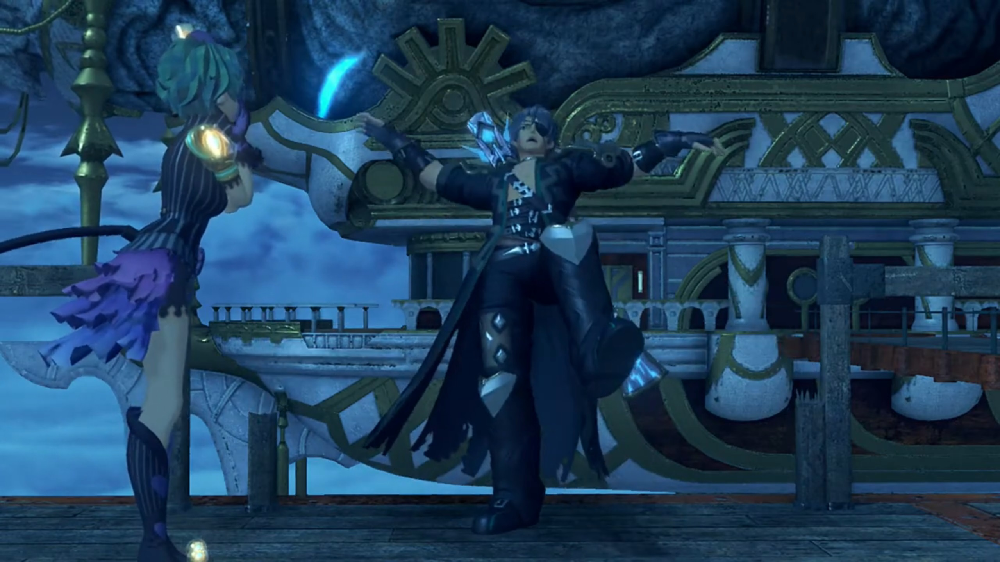
Nia already expected it, "There he goes." They gathered by the edge where he fell and just watched him, including Pandoria.
Dromarch was putting his whole body weight on the fence just beside the broken one, and it didn't snap, he agreed, "Mmm, bad luck indeed." Nothing was seen floating out of the Cloud Sea, however they tried to look.
Pyra felt anxious, asked Pandoria, "Uhhh... Should we go rescue him?"
"Naaaahhhh, he'll find his own way back up somehow. L-Let's just... board the ship!" And she lead them onwards, not a tad bit worry. Down there, the unconscious floated back up the cloud sea like a dead body.
The Holy Praetorium was the only town on the back of Indol, a relatively small Titan compared to Mor Ardain and Uraya and Gormott. The stairs and the huge arcs, leading up the back of the Titan that formed a hill. All buildings were short, except the Praetorium{{footnote: Think of the Praetorium as a building that has the same function, looks the same, like a Church. It is a Church.}}. This is the Indoline Praetorium.

Tora exclaimed, "Ahhhh, soooo pretty..."
Poppi agreed, "Amazing!"
Pyra: "Whoaaaaa!! It's so- grand..."
Mythra replying inside, "Sure, because they're trying too hard."
"You- don't have to be like that..." She said it out.
Rex overheard it, was confused, "Hm? Did you say something?"
"Oh, no, nothing."
Fan relayed the info, "Your- audience with the Praetor is- scheduled for tomorrow. Before that, maybe you'd all like to have a look around?"
Rex exclaimed, "See the sights of Indol? Sounds like a pretty rare opportunity!"
Tora and Poppi were equally excited, "Yeahhhh!! Let's look around city! Tora want to see- everything!"
Nia shook her head, "What are we, tourists?"
Dromarch: "There's no harm in that, is there?"
Even Gramps: "This would be a first for me, too."
Rex understood, "Rigggghhhttt, you were a bit big to go running around Indol before now."
Nia imagined it in her head, laughed, "Now that's a funny image."
They went up the stairs and saw, by one section of the wing, various tents set up in random arrangements, but mostly around the side and center, leaving a main rights of way in an arc sandwiched in between. Weak, hungry people were sitting down; children still had the energy to play. A signboard with words written on it, Nia read as, "'No More Blades, No More War'... What does that mean?"
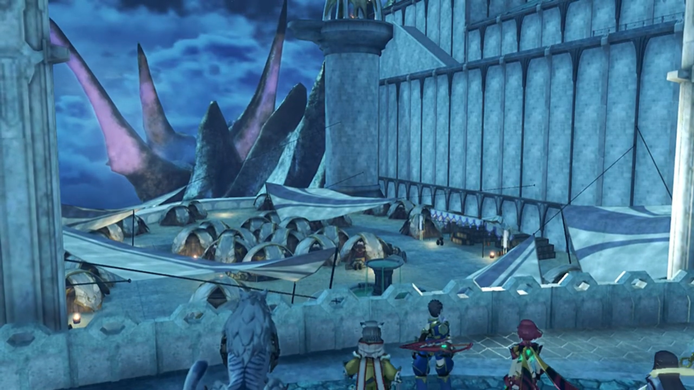
Zeke appeared out of nowhere behind her, explained, "That, my fuzzy-eared friend, is an anti-Blade protest. The refugees have really been going at it since last year or so."
She and Rex turned around, jumped on their feet, she exclaimed, "Whoa! Where'd you come from? What'd you do, swim here?"
Tora was more concerned with the protests, asked, "Did- Blades- do something wrong?"
Mòrag explained, "The Praetorium is single-handedly responsible... for doling out Core Crystals to other countries. Though, sometimes the likes of Dughall and Bana grab a piece of the pie."
Dromarch concluded, "Therefore, Indol has the power to control war itself?"
"That's one way of looking at it, at least."
Nia don't understand, "But war's about much more than just Blades and Drivers!"
Pandoria: "I know that, and you know that, but that doesn't mean they're gonna accept it."
Rex: "I guess so..." He observed closer, noted, "There's a lot of... Gormotti here..."
Gramps explained, "They fled the Gormotti War... ten years ago. But here they are, refugees still..."
Zeke waved his had, "Yes. They're a funny old lot, you know. We feed them, we water them, and this is the thanks we get. Don't these ruffians know- that manners- cost nothing? I swear, you lend these people a hand and they want the whole, bloody arm."
"It's easy to disregard things beyond your control, and- direct your anger- at targets- closer to hand."
Rex dropped his head, thinking, "Mmm..."
Mòrag asked, "Do you have something- to- say?"
"Not really."
She urged, "Out with it, Rex."
"Mor Ardain's Titan -- it's dying, and everybody knows it. That's why they -- why you need Gormott."
She agreed, "Our population is large. Larger than Uraya's."
"But you don't have the resources to support all those people..."
"You are astute for someone so young."
"Us salvagers pick up more than just artifacts. I'm not daft. I know fine words alone won't change reality."
"So you seek Elysium."
"Is that wrong?"
"No. I was just reminded how young you are."
Nia: "Still, if it's Rex, or people who harp on about justice with no solutions, I'm bettin' on Rex."
"I must admit, I do respect the boy's drive."
Rex: "Ahhhh, I'm just stumbling my way forward." Who says those refugees aren't?
Halfway between the stairs up to the Praetorium, Pyra stopped and asked, "Mòrag, can I ask you something?"
"Go ahead."
"Rex is the one who... woke up Mythra. And I think he... appreciates... what that means."
"And?"
"It's just that, well... Y-You're not doing anything to stop us. Why is that?"
She thought for a while before answering, "Because- of Addam."
"Huh!" She waited.
"Five hundred years ago, he became this great hero, who we celebrate even today. But I know him only through legends. A chance to see what his Blade is capable of for myself? I confess- I- was intrigued. So- here I am."
Rex objected, "You know I'm not Addam, right?"
"But- you are the Aegis's Driver. The second you're under imperial control, you won't be that hero anymore."
He scratched his head, "Hmmm... I'm not sure I follow."
Pyra understood it as "People with great power... should be their own masters? Is that what you mean?"
"Close enough. You can interpret it that way if you like."
Zeke knew something more than that, "Heh! Even the mighty Flamebringer can be bloody hard work sometimes. Can't you just admit the REAL reason?"
She turned away, commenting, "I don't like what you're implying." And walked away.
The door to the Praetorium was huge; so huge it don't look movable by mere person strength on the ground (though it's movable by Blade's strength, or Armu, or Titan). There were people inside this empty square, as if this is a stock market or something.

Fan turned around and spoke, "The Inner Praetorium is beyond this gate. Here you will find the main administrative facilities. With your permission, I'll show you to your lodgings."
Outside their lodgings, Hope spoke again, "Your audience with the Praetor is scheduled for tomorrow, in the Sanctum's Audience Chamber. If- there is nothing else, I shall take my leave."

Rex: "OK. Thanks for all your help."
"M-My pleasure. Good night!"
"Night!"

Rex's bed was just opposite of Pyra's. He asked, "Hey, Pyra. So, Addam... What kind of a person was he?"
She was sewing a shirt when Rex asked, and paused to ask, "Should I ask Mythra?" After all, she wasn't the one that accompanied Addam in his journey.
His goosebumps raised and tinged, "No, no, it's fine. I was just wondering."
Pyra thought for a while, recalled, "He was incredible..."
"Incredible?"
"In Mythra's memories, I mean. I knew him only very briefly before I went to sleep... But Mythra can't remember a more... genuine... courageous person. She had never met a more... wonderful man."
"He sounds like a real hero." And our 'fake' hero here dropped on his bed, exhausted to meet Addam's standard.
"Mm hmm. And you remind her of him... a lot!"
"Ohhhh, I do, do I? Great..." Then, his tired mind just picked up what he'd just said, "Wait, what?!" He blushed and jumped back up.
She giggled, "Huhuhuh! I suppose Mythra won't be very pleased I told you that."
"Pyra, c'mon..."
"I agree with her, you know."
He blushed even more, not sure how to react, looked over the tip of his eyes at her. But she was already deep in thought, the constant dimmed sadness awash her continuously; Rex wondered what she held within that she won't yet share... Will she, one day?
Rex woke up early in the morning, wandering the Praetorium himself, "Whew, it's cold this morning... Miss Fan?"
She was serenely looking at a huge mural painting, didn't heard him. Why does she looks so sad? The feeling washed over him. Nia was approaching behind and teased, "Oho, has somebody got a little crush?"
"Nia!!! What are you doing here?!"
"Early riser. Always have been." Fan was still deep in her thoughts, immersed in observing the painting, as Nia teased again, "Ooohhhh, I see how it is here. I wonder what Pyra and Mythra would think..."
"Hey, no! You've got the wrong... Just..."
"Just- what? Go on?"
"I dunno! I thought she looked... sad."
Fan just heard them, greeted, "Ohhh, good morning, you two. There's- still some time before your audience."
They walked over, Rex apologizing, "Sorry, we just woke up reaaaaally early."
"Ah, I see."
"That's a pretty nice mural. Very... grand." A giant rock that reached up the sky; some other slanted rocks. The light shone through the thick clouds of the darkness, people gathered around the big rock from the flames of rubble they'd left behind, to around the rocks and the still preserved lake, waiting for God's messenger to save them. Chaos ensued.

Hope introduced, "It depicts the creation of Alrest. They say this mural was painted long ago, when the nation of Indol was still new."
"Huh... You've been looking at it for a while..."
"They're missing."
"What do you mean by 'they'?"
"My memories. I know that I must have been around since this mural was first painted, or even earlier, but... I don't remember that time at all."
Nia found that self-explanatory, "Well, you are a Blade."
"I don't know who I was, or what I did. And- I'd really like to."
Rex suggested, "Mythra's lived for an awful long time. Maybe she'll know something about you."
Fan recalled, "Mythra... called me... Haze, earlier. Could it- be possible that she met me somewhere before? Sometime in the past?"
"Do you wanna- ask her later?"
"Could I? Thank you very much." She took his hand and prayed with gratitude.
"N-no need to thank me. You helped us too!"
Nia teased once more, "Look at you, going all red. I'll tell Pyra, I swear."
"WHA-?!!! I told you, it's not like that!"
She teasingly nudged, "We'll see..."
Pyra had woken up, looking out the windows herself, deep in thought, when Brighid called out, "Hey, relax. You'll give yourself wrinkles." Out the window directly faced the mural painting Rex and Nia were at; perhaps she could see them? "A Driver and Blade are one- in body and soul. It was you who told me that. Well, the other you, I mean."
"You mean, Mythra?"
"Of course, it was- five hundred years ago, so- perhaps you have forgotten."
Mythra sounded inside, "Ohhh, I... do remember saying that!"
Pyra wondered, "So it's true? But how could she... possibly remember..."
Brighid read her mind, "You're wondering how I could remember words... from so long ago?" She took out a thick notebook and handed her.
"What's this?"
"You could call it a diary, I suppose. It contains details about my past lives. It's the only way I have to remember... When we return to the Core Crystals, our minds are wiped clean of all memories. Though a Blade's life is eternal, our- 'effective lifespans' as individuals, are far shorter than a human's. You know, it's not- just me. A lot of Blades try to preserve their memories in journals like this one. Even though it's often futile. After all, a Core Crystal cannot protect a diary. Usually, the volume is lost to us, along with our memories. I'm fortunate amongst Blades. I'm passed down as an imperial treasure, and recorded in official chronicles."
"Errr, Brighid?"
"I don't know where your true intentions lie. I can only make an educated guess. But Rex... He is your Driver. If you truly trust him, I would advise you tell him everything." The book felt heavy in her hands, or perhaps, her heart. Struck right through. She continued, "If you can't do that even for him..." And she snatched back her diary, blurted out bluntly, "You shouldn't be his Blade- at all."
"I- just... ungh..."
"If you care about him, it's even more important. I know what it's like, to be afraid of rejection. I really- do. But... if you don't tell him now, you're just storing up pain for later, not making it easier."
Tears mustered in the tip of her eyes, she smile regardless, "The way you say that... You really do see right through me."
"Well... We go back a long way, as you recall. And we're both Blades, after all."
Sometime in the past. The young Amalthus stood where Fan stood, deeply absorbed in the mural painting. The rocks, the people, the mountains... He went back to his room, closed the door behind, and walked over his table. What of the broken artifact, a shard beyond comprehension?

The window behind him, the World Tree glow brightly in the night. He could see, he saw it, that's his destination. The calling in heart, it says, "Father waits, above..."
Despite thunder and lightning, his muscles sore, his skin bled, he did not care. Up and up he went, up the World Tree, with no other equipment than one's hands and feet. Memories faded, attention lingered, tiredness accumulated, dizziness sprung forward. But when he reached the top, was not what he'd expected. A lush evergreen meadow heaven? No. Some building remains stood, but there was no one around.
He lit a fire torch, followed the tunnels; the imminent darkness, he could see nothing else other than plain plain plain. What makes of the people who once lived here? He don't know. But one thing was sure -- to search every inch until he found what he was about to find. He delicately touched the door, jolted back as it shook; mechanism activated, and the door to Pandora opened before his eyes. The gleaming brightness beyond, shall we say, his hopes too high?
Run, run, run; pant, pant, pant; He dashed for the exit. No, he don't want to stay here any longer. Where was it, where he had came up from. Ah, there! As fast as his arms and legs could, without risking his life, he climbed down, faster, faster, faster; no, safer, safer, safer! Slowly, one foot by one foot, afraid of making even one mistake; but who walked besides a river doesn't get his shoe wet? He too, slipped, and down he went, faster, faster, faster, without resistance, plunged straight for the Cloud Sea, no one to save him.
He opened his eyes, ouch, what's that burning sensation in one's chest? Is one dead? No, this is, Cloud Sea, Alrest, oh right, one recalled one slipped off. Where is one? A branch? Oh, still on the World Tree! What strong branch to withstand one's fall. He jolted and reached for his shirt, saw the gleaming reflection. Yes, it's safe there, the stuff he'd brought back, shining, feeling.
Never found the Praetorium was such a long journey back, but luckily, one's back, alive and safe, to one's comfort zone. Inside his room, he took out the two crystals, placed them side by side. They floated mid-air, like sexy lady luring him to resonate. The dark purple one on the left? The light green one on the right? Which feels more like one? What do one wish to achieve? Which can help one achieve what one want to achieve? His eyes looked to the right, his hand reached for the middle.{{footnote: Follow thy heart, not thy eyes!}} Why not both?
"Praetor?... Praetor Amalthus?" Who is that calling me there? Wait, Praetor? Yes, Praetor. One's now a Praetor. No, this is in the past. Ah, such memories, carved so deep one could never forget the day. No, 500 years had not been enough to wipe it out.
The daydream of Amalthus was broken when someone called him. The door opened, and he had audience with someone working for the Praetorium{{footnote: One don't know the exact role, so one can't say what equivalent role in a Church one can label him.}}, which we'll call him the Commander{{footnote: Because he appeared a few times, we need to give him a label.}} "The boy has arrived, Your Eminence."
"Thank you."
At the Audience Chamber, he sat at the king's seat, with a lined of soldiers behind him, and accompanied by the Commander. The group stopped at the frontier of the bottom, he started speaking, "So you're Rex. I've heard much."
"Hi, err... Y-you're not- the Praetor, are you?"
Nia was equally shocked, "Huh? No way."
"Indeed, I am Amalthus. I understand your surprise. I imagine you expected somebody older."

Rex: "We heard that you were- Cole's Driver... Y-Your Eminence! Sorry, sorry!"
"No need for formalities. I am a mere- representative of the Praetorium. The name- 'Praetor'- is simply a... decoration, if you will. In any case, we're the same, you and I. Aegis Drivers. I consider us... equals."
He scratched his head at such praises from the high, "Ahahah, I feel a bit better now you've put it that way. Your Eminence."
He turned his eye on Pyra, noticed, "You're different somehow. I seem to recall a more forceful personality."
Pyra: "Huh..."
Rex: "Oh! I almost forgot, here-" He took out Cole's dagger. The soldiers bluntly reacted to it, pointed their axe-like staff at him. Amalthus urged them to sheathe, and they stood back. Rex waited and continued, "I got this... from Cole. He said it belonged to you. Please!"
"Ahhhh, Cole... That brings back memories." The Commander took the weapon from Rex and passed it to Amalthus.
Rex explained their real purpose, "We're looking for a way to Elysium. Cole told us... that you would know the way. I have to get to Elysium! To... to save Alrest... any way I can! I mean, we won't know for sure- what we can do until we get there, I suppose. But if the stories are true, it's somewhere we can all live safely! It has to be real!"
He started speaking, but Rex seemed to hear some different voice in him, like a broken radio, or is it, a superposition? That sound, he recalled, like... Malos... even the way he speaks, "Long ago. Too long ago, I used to think like you. Indeed, it led me to climb... the World Tree. However, I did not find Elysium. Or... the Architect. I believe... it was because I was... unworthy."
Then, the superposition ceded, Rex saw Amalthus as Amalthus again, "Rex, I know your desire all too well. I shall help you... on your quest."
Rex was overwhelmed, "Really? Oh, thank you sooo much!"
"No need for thanks. This may be my destiny. The reason... I've lived all these years. And now..." He looked to Pyra.
She introduced, "Pyra. My name- is Pyra."
"I would be honored, to have a moment alone with- Pyra. I'd like to... reminisce- a little."
Without Pyra, they exited the audience chamber into the open. Nia was impressed, "So old man Cole really did know the Praetor. Who'd have thought?"
Tora: "World is small place."
Rex worried, "Will Pyra... be OK- by herself?"
Nia don't understand his worries, "He's the Praetor, dimwit. What's he gonna do, eat her?"
That didn't cede his concerns, as he shared, "Back there, I felt something weird, for a second."
"What?"
"Urmph..." Should he share it? That sounds so weird, and so, out of logic...
"Rex?"
"It- felt- like we were talking to that Malos guy."
She immediately dismissed him without a second thought, "You're imagining things. You know he's Malos's Driver, and it's messing with your head."
Poppi agreed, "They not seem alike to me."
Rex shook his head, "No, I know... it was just for an instant! Just this one moment, where I couldn't tell if we were talking to the Praetor or Malos... Sorry, I'm not explaining it well..."
Gramps understood, shared, "There are- Blades who are- influenced a lot- by their Drivers- during resonance. Their appearance, their personality... That's probably all it is." Does that means the Praetor wanted all the damage that Malos caused? That Malos is just reflecting what the Praetor actually wanted to do?
Dromarch hypothesized, "Perhaps it was due to your bond with Pyra. That could have heightened your perception of such things." But they don't know... Is it true? He still had doubts, but he couldn't prove anything, nor observe further, at least for the moment.
He brought her to look at the mural painting, the birth of Alrest, shared, "It was painted 1500 years ago. Even through exposure to the elements, it has never needed repair. Always as pristine as the day it was made. The technique is long-forgotten. I often wonder if we are growing as a people... or in fact, regressing. What do you think?"
Pyra don't know. Whom he wanted to reminisce with, was Mythra, so she took over, waiting for this moment long enough. "I'm just amazed... at how little you've changed. Has nobody ever wondered about that?"
"I am Indoline, and the Driver of an Aegis. It keeps me young."
"If you say so... Why do this now, though? You've- never let anyone go there before, have you?"
He looked away, back at the mural painting, replied, "Times change, Mythra. So do people."
"That's not an answer."
"I would like to believe- there is one- who can reach the Architect- and save- this dying world. Is that really- so strange?"
"And Rex is the one?" she asked seriously. To get him involved in this?
"Would you have resonated with him, if he did not hold- such potential?" Who knows what they're thinking in each other's head?
Temperantia. Night. A calm night. The guards thought, the day would be as usual, another eventless night. But no, when Jin silently appeared behind them, and no guards on duty noticed, thrusting his blade in and out of them silently; even when he reached the Judicium weapon, no one alerted anybody else. He looked at the weaponry, amazed that "It's still intact after all these centuries. Amazing. The pinnacle of Flesh Eater technology..."
Jin entered the control center and placed his arms around the controls, "Tenacious creatures, humans."
Oh, how Lora tears rolled down her cheeks, what history he cannot change, all energy receded from his body, he could not struggle against, as she said, "I'm so sorry to do this to you..."
His heart beat strong; he could hear it. Why? Why could we not stand to face it together? Why had you made decision without first asking for my opinions? Why do you have to sacrifice yourself for all this? He clenched his fist, tighter and tighter, anger rushed up his chest. No, 500 years had only grew the flames, like a forest fire, burning wilder and ever larger.
The mechanism was awake once more, after so long it slept, a sleeping lion awaken. The metal structure to support it began toppling, the Titan stretched itself, free itself. The engine warmed, he awaits. It shall soon regain strength.
Outside their room, Brighid received words from a soldier, she answered, "I see. Very well." She returned into the room. Mòrag was looking outside the window when Brighid's relayed the info, "It appears Senator Roderich paid a visit to the Praetorium last night, off the record. Did you know that?"
"No. I haven't heard anything from His Majesty. Why now, I wonder? I can't imagine he was just paying his respects."
"Do you think it's something to do with the excavation? Temperantia?"
"Hmm... The issue His Majesty mentioned? If that is the case, he must be making covert deals with the Praetorium. Curse that man!"
Battleships floated the entire airspace; the ground littered with soldiers. It started shaking, and they looked, prepared for impact. The Judicium weapon Titan marched slowly, carrying the heavyweight on its back, step by step, plunged deep into the soft dirt beneath. The flaps on its back raised, revealed the whole mechanism, a ranged weaponry aimed at the frontline.

It took a while to charge, but they wait no longer. Thousands of beams swirled in the air, the angle reached from the far left and far right of the front line, missing not one of them. The ones behind were lucky enough to have their colleagues acting as meat shield. But the ones in front? Entirely wiped out. Jin watched emotionlessly, all should go to hell.
They were resting in their dormitories when the Commander, in a suppressed panicked voice, asked the group politely but quickly, "Sincere apologies everyone, but I come with an urgent request." They sensed their urgency and raced out of their room, the Commander instructed, "Please go to the Audience Chamber at once!"
Footnotes:
Off to Temperantia, Encounter with Jin
The group met Amalthus and Fan at the Audience Chamber. Amalthus briefed them, "As you may know, there is a demilitarized zone between Mor Ardain and Uraya. Temperantia. Think of it as a buffer between the two nations. We've received word of- fighting- in the area. Mor- Ardain- are in possession of a Titan weapon. They're advancing as we speak towards the Urayan garrison."
"Impossible!" Mòrag hadn't heard about any instruction from the Emperor for attacking Uraya, nor does she believe her brother would make such a choice.
"Well, the two countries' Titans are at their closest right now..."
"You're saying we were WAITING for a chance to strike? Unthinkable! Our people would NEVER go to war against His Majesty's will!"
Brighid logically urged, "At any rate, we must investigate."
"Yes... You're right. Praetor, I beg your leave. We need to find out what's going on. Your Eminence."
"Thank you." And she and Brighid left the room.
"Your Eminence, we..." Rex wanted to help, but he needed permission. Amalthus broke his sentence, speak,
"Might I ask you to assist Special Inquisitor Mòrag- in her investigation?"
Pyra accepted it at once, "We have no reason to refuse. And you- needn't worry about me."
"I am quite grateful to hear that."
Rex urged, "Let's go after them, hurry!" And they left the room. Fan gave her bow, despite they're no longer looking.
Senator Roderich, in his living quarters with the soldiers, was enraged, "Who?! Who's responsible for this?! Preparations are still ongoing, if we attack now, we could-"
Mòrag immediately walked in with Brighid, "What, have you done, Senator Roderich?"
"Special Inquisitor?! What are you doing here?"
She didn't have the obligation to answer him, continued, "The Emperor ordered that the dig be halted. He was VERY specific, Senator. If you've restarted it, you have violated- His Majesty's will."
He argued, "The Emperor doesn't understand Mor Ardain's urgent lack of resources. This is for the Empire."
Mòrag shook her head, cannot agree, "Your patriotism is touching. But that doesn't explain why you're waging war with Uraya!"
"It wasn't me! I did not give that order! Even I would never dream of... declaring war without His Majesty's express consent!"
"So who in the..."
"Mòrag!" Rex entered the room with his friends.
Roderich cannot believe random people can enter when they're having a meeting, burst into rage, "Who... who are these people?! Bursting in here?"
Mòrag introduced, "This- is the Driver of the Aegis. You are to afford him the same respect as me."
"This is him?! I'd heard the rumors, but this boy..."
Rex dismissed the cliché deprecating statement he'd heard too much, more concerned and impressed with "There are rumors now? Wow, am I really that famous?"
Brighid explained the reason for his celebrity status. "Do you have any idea how much it costs to repair a water tower? It's a lot."
Rex's eye sagged down, with Gramps commenting, "So, less famous, more- infamous."
Anyway, back to the point, Rex tucked his fame within his belly and got to the point, questioned, "Mòrag, is Mor Ardain really attacking?"
"They are. As much as I hate to admit it."
"Tell me -- what's going on?!"
After the story, Dromarch noted, "Tricky indeed. If this escalates into all-out war..."
Roderich agreed, "The timing is all wrong. We can't win this fight, not now..."
Zeke hated it, "Sounds like you WERE planning to start this sooner or later. Sly rat."
Rex urged, "Maybe save the accusations for now."
Mythra took over, asked, "But the Empire never really wanted a war, did it?"
Only now did Roderich focused on her, noticed, "That Core Crystal! Don't tell me you're the-"
"ANSWER me!" She snapped.
He was intimidated by the legends, stuttered, "Y-y-y-you're right."
Rex: "Mythra?" Had she anything to add?
She was considering different point of views, voiced her opinions in questions, "Who stands to gain from an Ardainian-Urayan war?"
"Who gains... You don't mean..." The first group that immediately came into their mind.
Nia concluded, "Jin and Torna!"
Poppi: "It very possible."
Gramps: "But- how?"
Tora: "Maybe- just coincidence after all...?"
"Masterpon." Poppi sighed, can't believe how innocent her masterpon is.
Rex: "I wish I could believe that."
Roderich pleaded, "Inquisitor Mòrag, please. You are the only one who could put a stop to this!"
"It's a bit late for that, don't you think? But I'm not going to sit back and watch. Brighid!"
"Right." And they walked out the room, decided to deal with it themselves.
"Mòrag..."
"Rex, this is an imperial matter. We can't ask for your aid in this affair."
"Not if it's really a coincidence, like Tora said. But... if Torna are really involved, doesn't that make this our problem, too?"
"But..."
"Think of it as- compensation for the water tower! How's that?"
Nia already guessed, "I knew you'd go there."
Zeke: "You're so noble it hurts."
She thought for a while, weighing the pros and cons of involving the Aegis in all these, decided finally, asked formally, "Very well. Can I ask you- to help me again?"
Rex: "Yep! We're on the case!"
Mythra: "Yes, of course." Senator Roderich was too guilty to face them, looked aside on the floor as they were discussing.
"I'll accompany you." A voice from the entrance.
"Fan?"
"What's happening in Temperantia right now... It's being led by a weaponized Titan, correct? My power doesn't only affect Blades. It also works against Titans. I- am- certain... I can be of assistance. Besides..."
"Besides?"
She thought for a while before mustering the courage to share, "I-I have the strangest feeling that... I'm somehow meant to be there."
Oh no... meeting with Jin? Mythra don't know what to say about it. "Fan la Norne, you..."
They were waiting for their ship being prepared at the port. Meanwhile, they gathered around in a circle, talking. Nia was notorious about, "Hey, remind me again why we're bringing this spanner?"
Zeke answered for himself, "Because this sounds like fun."
"We're not on holiday here."
"I've heard a lot about these Torna people."
Pandoria added, "They're the ones collecting Core Crystals, yeah?"
"And besides... I can't pretend this doesn't concern us, too. Not when they're calling themselves... Torna..."
Nia wondered what he'd got to do with Torna. Rex looked at her and Mythra, to see if they'd any idea what he's talking about. Why so serious suddenly? She urged, "Shellhead?"
The ship drifted slowly towards Temperantia; it was near now. A soldier reported, "Lady Mòrag, greetings. I have news from the front. Our Titan weapon has crossed the central border! It's advancing at about 40 titanpeds per hour!"
"Hmm. I want to get in front of it." she ordered. "Is there a suitable place to dock?"
He immediately replied, "There's a bay fairly close by. If you dock there you should be able to get to the cliffs above it."
"Understood. Go."
"Yes, ma'am."
Temperantia, a battle scarred land, a layer of black soil painted every inch of the land. Spear-like hills stretched to the sky in great numbers like porcupine. What is the Titan, actually?

They reached the top of a ledge, easy for them to observe the battlefield. Flames consumed the Urayan frontline. The sheer heat released even distorts light. The lifeless corpses littered the ground. Brighid felt, "How awful..."
Zeke agreed, "Mmm... They didn't stand a chance."
Rex's eyes swiped over the battlefield and located their target. "Look! Over there!" The giant Titan continued moving slowly towards its destination. Then, it raised its weapon again, aiming at the frontline.
Mythra warned, "Watch out! Here it comes!" They were also within range; some shot the rocks on the ledge they stood, but ducking low...
"AAAAAARRRGGGGGHHHHHH!!!"
Rex got back up unscathed, "Ungh! Everyone, OK?"
Zeke assured him, "Just about, I think."
Yet, not everyone were as lucky as them. The Urayan soldiers running for their dear lives below were not. Worse, flames blocking their way acted as bottlenecks, prevented them from escaping fast -- at least not fast enough to escape the jaws of the Judicium weaponry.
"We have to stop it." Rex announced.
Nia wondered, "How do we do that?!"
Mòrag had gotten the blueprints from Roderich, researched it, and shared, "On its back, there's an Ardainian drive mechanism. If we can... somehow sever the cables connecting it to each leg, its energy supply will be cut off. It'll stop."
Dromarch thought of something better, "Lady Mythra, I presume you'll be able to destroy them?"
Rex found that straightforward "Good plan!"
Mòrag half-agreed, "Sure, that sounds- like a feasible measure... That is, if we don't mind reducing the whole area to ashes."
Zeke don't understand, "What do you mean?"
She explained, "I read instruction manuals. It's my job to know these things. The weapon is powered by vaporized Titan bodily fluids. The gas it makes is completely unstable. The slightest shock, and we have a giant explosion on our hands. There- was an accident here just 3 months ago because we didn't see how unstable it was."
Mythra: "If we'd just attacked without realizing that..."
Rex: "Argh, dammit!" It would befits Jin's goals too that way.
Dromarch wondered, "Why make a weapon that dangerous?"
Mòrag explained, "As long as we got the weapon inside enemy lines, destroying the weapon would destroy them too. That, was the justification given."
Zeke didn't like it, "That's so cold it's almost impresive."
Brighid too, "That's exactly why the Emperor called a halt to the excavation."
Nia wondered, "Can't we get at the people on board?" The Titan was on cooldown, not moving, not attacking right now.
Mòrag shared, "The control center is protected by 10 layers of armor. The chances of it being breached or destroyed are low. But... that armor is limited. It doesn't entirely cover the energy cables."
Rex concluded, "So... it's them, or nothing."
Tora had one last question, "How we get up on Titan's back?"
Mythra took over such job. The trajectory towards the frontline, she plotted in her mind. Anything protruding they could use to jump on it when it passes through? She searched the route for such feature, and focused on one thorny rock up ahead. Some distance to cover, but hopefully they'll arrive there on time. No time to lose, she instructed, "Up ahead -- there's a spot where the cliff juts out. If we can get up there, we'll be able to jump onto its back."
Gramps was slightly pessimistic, "But if our timing's off, we go headfirst down to the bottom of the cliff?"
Dromarch had worries too, "And we'd have to make it across... avoiding its attacks all the while."
"I'll take care of it."
Rex: "Fan?"
"I mean, I'll stop the Titan moving. While it's stopped, you all jump onto its back."
"Fan, you..." No time to think. "All right, then! But you'd better be careful!"
"Don't worry, I will." The seriousness in her tone took over her usual calm and serene. Perhaps, the situation of the battlefield had angered her; that even she could not withstand such acts of violence.
"Then let's go!"
"Almost there!" Yet an explosion in front of them stopped them in their tracks. The explosion was too strong and tight, he whined, "Ugh!!! We can't get closer!!!"
"Allow me!!!" She dashed forward.
"Fan!!!"
Mythra knew her all too well, urged, "Leave her. She'll be fine, trust me." Fan adeptly dodged the attacks while running, reached the other edge{{footnote: which isn't the one the others were going, just some random edge with less firepower.}} while the rest awaited for her. Immediately, she casted her spells and released the largest field spell she could sustain. The Titan immediately stopped attacking and started whining, losing its power.
Mòrag urged, "Now! Let's move!" They dashed quickly to the tip, jumped without a second thought. The way down wasn't too far, all landed safely at the back, the platform where Roderich stood before he departed for the Praetorium. The cable was naked before their eyes.
Rex quickly get to it with his sword "We just need to cut that..." Just then, the ground started shaking, and the mechanism that held the cable started transforming. Rex was surprised, "Huh?"
Mòrag was feeling slightly guilty for it, "An independent defense mechanism... Ardainian technology. My apologies."
Zeke can't believe they made something to prevent themselves from accessing their job, "Why would you even bloody make something like that?"
Nia urged, "Bitch later -- fight now!" Fan had also followed them down the platform the last, after she confirmed the rest had got down safely.
Explosion severed the cables; the Titan became lifeless. Rex noted, "It's stopped!"
Mòrag agreed, "Yes. Seems like it."
Jin recognized already, all those old friends of his, now enemies, "It's you. I thought it might be." He exited and stood at the top of the control center, watching them from above.
Rex: "Jin!!!"
Mythra: "I knew it."
Fan met him for the first time since her resurrection, "So this is Jin. Leader of Torna. I am Fan la Norne. As envoy of Praetor Amalthus, I am bringing you into custody." That face reminded him, but it's no longer her, the Haze he'd known. Anyways, had he really cared about Haze? Lora, perhaps, but Haze...
"How ironic! That you should speak his name with that face... Oblivious to everything, even your own identity!"
"Wha...?! Do you... know something about-?!"
She wanted to know, but he'd turned his attention to Mythra, pointing his sword at her, wobbling from anger, "And you, Aegis! Don't you dare stand there, acting like you're not involved in all this!"
Mythra bit her words, "All right. Then tell me this... Why are you, who fought alongside us to defeat Malos, now standing by his side?"
Rex was surprised to discover that "Jin... fought against him?!"
"It's very simple. I realized he had the right of it. That's all." When the city fell and he, like a beggar, losing all hope, Malos was the one standing before him. The savior. That eye... But that was after Lora had died.
Mythra pressed, "I don't think it's as simple as that at all."
He jumped down to face them on the same ground, commented, "So clever. You always were too clever for your own good."
"Sorry, that's just the way I am."
"Mythra, don't tell me..." Rex guessed.
"Yes. He's a Blade too. He was the strongest Blade in Torna... until it fell in the war."
"'It fell', says the girl who sank it!"
Rex cannot believed what he'd heard, "A Blade?"
Mythra continued, "There were none stronger... yet none kinder, either. And... no one, who hated to fight more than him. Why, Jin? What changed?!"
"What if I told you, it was your fault?"
"Mine?"
"If you hadn't sealed yourself away... Then she'd still..."
Her eyes widened, guessed it already, "OOHHHHHH!!! So that's it." She had no more questions.
He took his sword and pointed at them, slowly by slowly, he took down his mask, revealing the core crystal on his forehead that shone bright red. The group was shocked, "HUH!"
Rex noted: "That Core Crystal!!!"
Mythra: "That color... It's like... blood."
Mòrag: "Careful!"
Brighid: "That Crystal isn't normal."
Jin threw his mask aside. Slowly, he walked towards them; they tensed their muscles.
Fan warned, "Put away your sword. My ability is to restrict a Blade's every action. As long as you are a Blade, there is nothing- you can do- to escape its clutch."
Rex recalled, "Wait, restricting Blades' powers?! Then before -- was that...?!" Patroka, she had it as well.
Jin did not obliged to force, urged, "Go ahead, and try."
Rex dragged backwards, wondered, "Ugh... how? How is he still moving?! Even that Patroka girl couldn't withstand it..."
Mythra was sure, "No, it's working. His powers are certainly limited now. But Jin... he's one of the most powerful Blades in history."
"Even so, we can beat him!" he optimistically believed. "We just have to work together!"
Jin: "I don't think so." As if teleported, but actually moving at a fraction of the speed of light, even faster than Zeke could react, appeared an arm's length in front of Fan, whom was in the back-line. The others had just reacted, turned their heads there just in time to see his sword pierced into her chest, directly at her Core Crystal.
Mòrag was surprised, "What?!"
Rex: "Fan!!!"
Jin punched his sword deeper; they looked at each other in their eyes. He said, "You are no slave. Be free now."
Her eyes changed; something felt so familiar. Is he... Her hands wobbled, dropped her staff on the ground, shakily reached out for his cheek, caressed. Jin's breathe stopped that moment. Why? Why does her eyes, so full of... Lora... the same look before they die...
He could take no further, pulled out the sword hard, and dashed back to where he originally stood. Only now, facing the other direction, trying to calm the first ripple he felt since Lora's death in his heart. He could not look at her. Not with those eyes. "Ngh!"

"Fan..." Rex went into depression. Once again, after Vandham, someone dear to him he lost. He'd just promised to help her find her identity, striking up a chat with Mythra. He hadn't yet fulfilled their promise; and now he no longer could? She dropped to the ground, lifeless; she don't even return to her core crystal -- no, with only half a crystal, she lost her immortality; the other half damaged by Jin now. "No... no, why?! JIN!!! WHY THE HELL WOULD YOU DO THIS?! WHAT GOOD DOES IT DO YOU?!"

Perhaps he needed something to distract him from thinking about those eyes. Striking up a conversation and sharing his goal would be a good choice. "Why, you ask...? Then let me ask you this. Blades are granted phenomenal power, from our creator on high, yet we are doomed, to never remember. Why?"
"What..." He was confused.
"The accumulation of memories, is what allows mankind, no, all life to grow. Change. Evolve. But... Blades, are fleeting. When we return to our cores, our memories are lost. Our growth... snatched away forever."
Mòrag tried to rebut, "People aren't so different."
He agreed, "Man's life too has an end, yes. However, though each individual life is fleeting, you pass on your memories, allowing you to grow. As a species, as a culture. Why does Indol control all the Core Crystals? By controlling the moment of every Blade's birth, they enslave our entire kind. How is that fair? We have no culture because Indol decrees it. Because that's what your kind do!"
Nia's head dropped lower and lower. She felt it; she can feel; each word, like a bang on her heart. But she don't know what to say. She's too young to consider such questions, to pick a side. Perhaps, a sense of guilt awash her.{{footnote: If you still don't get it, since Vandham, you'll have to wait.}}
Mythra wanted to stop him from continued speaking, "Jin!"
He had no obligation to, angrily blurted out, "Why are you the masters, and we the slaves? It is we... who embody the very nature of this world!"
Rex don't yet understand the new perspective, "Blades... embody, the world? I don't... get- what you're..."
"If you saw the last state of humanity, you'd understand!" He pointed his sword at him, said, "Now that you have come this far, there can be no- turning- back. But... I'm afraid your journey ends here."
He held out his sword, readied for another sparring. But then, Jin's sword started to shake vibrantly, and his Core Crystal smeared like flames. "GARRRRGGGHHH!!" He went down, held his forehead in throbbing pain. "Nghh... Why now..." Why reaching the limit now?
Zeke took such moments as rare opportunity, shouted, "HEY! NOW'S OUR CHANCE!!!"
"Huh?" Rex was still daydreaming, and the shout brought him back to reality.
Zeke urged, "What are you standing around for?! SHOW THAT SCUMBAG WHAT'S WHAT!!!" They'd killed Fan, and you're not to revenge?
Immediately, a giant dark energy beam swooshed in between them, separated them from reaching Jin. Rex was surprised, "What?!"
"It's Akhos!"
He held a giant bow and picked up Jin's mask, went up to Jin and said, "Malos sent me. Time to make an exit. Ready?" He carried him with Jin's arm wrapped around his shoulders; no time to waste. He, too, had limited time.
"Ugh..." Jin's head was throbbing too much to reply.
Zeke wasn't happy with the situation. You'd just killed one of my people and now you're running? He stood forward, shouted, "Who says we're going to let you go?"
Akhos: "Hah! You really don't understand, do you? You really think this is over?"
"What the-" The ground started shaking and the Ardainian defense mechanism came back alive. "HOW?!! WE CUT THE BLOODY CABLE!!!"
Akhos agreed, explained, "Certainly. But- some energy still remains, deep in its core. Don't you see? It's like a Blade weapon!" The Titan even came back to life, ready to make its finale. He backed up with Jin, one step at a time, attracting their attention with his words, "Well, you seem busy. I'll leave you to it. Bye!" And he jumped away.
Rex called out, "Wait!" But the defense mechanism stuck its leg in front of them, preventing them from catching up with them.
"UGH!!" They had a final battle to fight. Worse, without Jin with them, how are they going to convince Uraya it's not them? But that's some headache for later.
"I don't get it..." Rex still wasn't recovered from Fan's death. He looked over her corpse. The rest looked down on the floor, or looked away, not brave enough to face him and her. Even Gramps turned a blind eye, meditating in his helmet. He dropped on his knees, hugged her within, "I'm... I'm meant to be a Driver now... I have a Blade of my own... But... I couldn't do anything... Fan... Nothing's changed... I'm just as weak- as I've ALWAAAAYYYYS BEEENNN!"
Mythra don't know how to console him. After what she, through Pyra, heard at the village; this had came true once again. Vandham, his parents, and now Fan. Everyone around her were in grave danger.{{footnote: And perhaps she was thinking, does she, if releasing her full power, can change history? Perhaps, but no. To a limited sense, she can change history with her powers, but she can't control it -- not even the general 'for better or for the worse', what says saving specific people?}}
Rex: "Jin... what happened, to make you like this?"
The sad atmosphere dissolved when Nia noticed a swarm of 'insects' incoming from the Urayan side of the battlefield. She trodded closer, squinted her eyes hard to make shape of it. "What... is that?"
Poppi dashed beside her and readjusted the zoom in her eyes. "That... Urayan army! So many of them!"
Cold shivers ran down Pandoria's skin, "What?!!!"
"NO!!!" The worst she hoped to prevent had happened. She looked around, and saw her nation's battleship occupying the airspace, accompanied by Titan tanks marching toward their current location. "SHIT!!! WHO GAVE THAT DAMN ORDER?!!"
Brighid predicted, "At this rate, I don't think there's any stopping them."
Nia don't understand, "How so?" Can't they just issued a decree to call for a retreat?
Gramps explained, "They- think- Mor Ardain- attacked them- illegally. With no declaration of war."
Zeke peered over his shoulder at Mòrag, "This is bad. If someone doesn't explain what's REAAAALLLLYYY going on..."
She looked into his eyes, "But, there's no time for that!"
Nia: "So what? We just- give up?!" Whistles in her ears; she flung around and saw ether energy sucked into a ball on the Urayan battleships.
Brighid explained, "Heavy cannons! That's Uraya's main weapon." Mòrag tightened her grip; at this rate, it'll be an all-out scale. Is it too late?
Poppi: "Here too! Mor Ardain- also readying artillery!"
Rex temporarily sunk the sadness in his heart, slowly and softly lowered Fan to the ground. They had came to stop the war, and she had died for their cause. He cannot let what she sacrificed for go to waste. "I don't care if we're not going to make it in time! We need to get to Uraya!"
Zeke agreed, "Right!"
Mythra was about to act when she sensed something incoming. Something... big... cutting the waves... "Wait!"
They too felt it, tried to pin it down, looking all over the skies. A roar from behind attracted their attention, as they watched the Indol Titans rose over from behind the mountains, looming in between the two forces, stretching its wings, bellowing for their attention.
Amalthus stood at the top of the Praetorium, gripped tight on the windowsill; just in time to stop the war.
Footnotes:
Jin and Lora, Rulers' Congress, Fan's Funeral, Aegis's Servant
He'd just woken up from an unknowingly long sleep. Immediately he saw the girl, barely 10, with short hair up till her neck and covering her forehead, looking at him with fear. His glance seemed to scare her away, as she backed away one step. So this is his new Driver? Looked so young and timid and fearful. Naturally, he stood up.
There was a guy to his left, looked thin and whimsy, from the constant work, insufficient nourishment, and prolonged intake of alcohol, a lame{{footnote: not 'boring', but 'not able to walk correctly because of physical injury to or weakness in the legs or feet', as defined here.}} himself, started scolding the little girl, "Y-you little scamp! Do you know, how much, THE CORE YOU TOOK WAS WORTH?!!! I stole it from the castle! Three- years- it took me to get it... AND NOW!!!" He watched him went up to her and started beating her up.
Another young woman in the house, sitting on her bed, did not dare rebel. She watched in fear as the guy went across the room towards the knife on the table, grabbed it in his hand, and was about to return. She mustered the courage, jumped on her feet, and grabbed his right hand, pleaded, "PLEASE! SHE'S BARELY TEN YEARS OLD!!!"
"SILENCE!!! STAY OUT OF IT!!!"
"Yargh!" He flung her hard as her head knocked against the metal cabinet, immediately went unconscious. He continued towards the little girl, oblivious of the newly awakened Blade,
"If you die, it'll be as good as new. You brought this on yourself...! YAAAAARRRRRRRGGGGGHHHHH!!!" The little girl cuddled on the floor, prepared for whatever to come; but she heard a stab in the meat and an anguished shout in intense pain, and the sound of a body collapsing on the floor.
"From now on, I'll protect you." He told the girl. She slowly removed her hands covering her eyes; he squatted in front of her, as he promised, "I'll keep you safe, always..." He softly caressed her head; she saw hope. "My name is Jin. What's yours?"
He held out his hand, and her tiny hand grabbed his finger, full of trust. Childishly, she said, "Lora..."
Jin was put in a cryo pod with concentrated healing green ether particles. Malos was looking over him, found him awake, started speaking to him, "It seems like sending Akhos was the right choice..." The cryo opened up and he sat up. "You all right?"
"I've been through worse. I can handle it."
Malos took a few seconds to muster his words, "Jin... I swear I'll make your dream come true. So stop... putting yourself at risk."
"There's... still... time."
Malos knew who he's referring to, the one frozen within ice at his 5 o'clock. He asked, "Is that... part of your dream, too?" He didn't reply. Malos wondered, "What are we, in the end? This hunger I feel, this thirst... Is it really my own? Or is it someone else's?" He looked at his palm, wondered is it his, or is it his Driver's? "Huff. Sometimes I can't tell... Tell me, Jin. Are you really... 'here'? I don't know... where I really am."
"You're starting to sound like a human."
"Oh yeah?"
"Perhaps... we're not so different after all... Humans... and Blades..."
The port of Indol today had been reserved for their VIPs. The Urayan ship cruised slowly into one of the ports. The Queen, accompanied by some sidekicks and soldiers, unboard and walked towards the Praetorium members that awaited for her. As they lead their way, the Queen heard another ship much more giant than hers, but much more metallic and rusty, coming into the adjacent port. She stopped and looked for a moment, walked away before it's parked.
The steam powered ship stopped and whenever Niall and Aegaeon walked past, soldiers on both rows will stood straight and stiff. More Praetorium members awaited for his arrival, lead him to where they will go.
All battleship in Temperantia halt mid-air, as if a game had been paused. Soldiers of Uraya, having nothing to do, gathered in small circles discussing what concerned them the most. The armor of Uraya army shaped like a salvager's, with a huge metallic head seemingly built for pressure, with only a thick glass for them to see their way. One soldier asked, "What's the deal with this ceasefire?"
Another shared, "A tribunal, it looks like. Praetor Amalthus is here in person. And who's gonna argue with the Praetor?"
"Does he have any clue how many men we lost?! If those Ardainians get away with this... Architect damn it!"
The third replied, "Quit yer grumblin', mate. All this is way beyond our pay grade."
The 2nd agreed with him, said, "You got that right. We're all just faceless cannon fodder to the bigwigs. CO{{footnote: Commanding Officer, one guess.}} says jump, we jump."
In a darkly lit room. The translucent sun-orange glass implanted on the doors and room-high windows let some sunlight in, barely enough to lit the medieval-looking table. The table stretched from one end of the room to the other, with chairs on one end and to both sides of it; they were used for feasting in the past, repurposed for this meeting. Some pillars with perhaps ether flowing in it glowed behind where Amalthus sat, on one end of that table. While to his left, the Queen and her sidekicks; to his right, Niall, Aegaeon, and Mòrag.
"My deepest thanks to you- for agreeing- to this ceasefire, Queen Raqura, Emperor Niall."
The Queen, full of condensed anger, focused herself as she put her elbow on the table and loomed closer to the others, interrupted, "As I recall from the Osirian Treaty of 350 years ago, the Praetorium was to refrain from intervention in times of war. And yet here you are, intervening. But- I trust you have a suitable justification, Your Eminence?" She laid her back once more on the seat.
He understood her anger, let her finished before answering boldly, "Naturally! But first, to ensure- impartiality- in these negotiations, may I present Niranira, Acting Chairman of the Argentum Trade Guild." He was already seated on the side of Uraya, after her sidekicks. The door opened and in walked Zeke, with the Praetor introducing, "Furthermore, representing the Tantalese... His Highness the Crown Prince Ozychlyrus Brounev Tantal... will also be attending."
"The Crown Prince?! The prodigal prince of Tantal..." One of the Queen's bodyguard was surprised.
"Hahah!" Mòrag laughed. He must've hated that name.
Atop the building overlooking where Urayan and Mor Ardain battleship parked, the soldiers, moving up and down, careful not to get near to their enemy's vicinity, did not look above them, on the roof. Who would have? They were too busy with their jobs, speaking or buying supplies or whatnots. Plus, Mikhail and Patroka were just a tiny dot on the horizon; they could've easily be mistaken as large birds resting after a long flight in the Cloud Sea.

Mikhail exclaimed, "What a spectacle... Seems the Praetor- has as much clout around here as ever."
Patroka wondered, "Could we not just take them out here and now?"
"Good point. All the principal nations' heads gathered here, it'd make things easy later."
"The way to the World Tree must first be opened." Akhos walked up from behind, reminded them of their goals. "Wiping out mankind is the easy part. We could manage that ourselves."
Patroka: "Even so..."
Akhos convinced them to be patient, "That isn't our only goal, remember? We must wait- for the stage to be set."
"Is Jin serious about this?"
Mikhail looked up in the sky, as if he saw Jin there, philosophically spoke, "Yeah, I've been wondering that myself..."
Akhos strongly believed in him, "Heheheheh. Oh, he's serious. He always is. He will annihilate mankind, and then... he will kill... the Architect."
Now that everyone got themselves seated, Amalthus went straight to the point, "Now, it seems... Mor Ardain has been accused of a unilateral breach of treaty in this matter. Emperor Niall, I open the floor to you. Is there anything you wish to say?"
"While we are still conducting investigations into the cause, it cannot be denied... that weaponry belonging to our forces, was discharged against Uraya. Regardless of any- possible- reason- and circumstance, we are prepared to offer recompense- for this grave offence."
The Queen listened and concluded immaturely, "So you want to settle this with money...?"
"We will provide any compensation deemed necessary."
She shook her head, bent forward with her elbow once more on the table, replied seriously, "Perhaps I am misunderstanding. To my ears, it sounds almost as if you mean to imply that the blame for these offences... does not lie with Your Majesty, at all!"
"We are investigating. I ask that we not draw any hasty conclusions."
Amalthus wholly rejected with "What need is there for investigation? I believe a cause has already been established. There are witnesses."
"And that would be..." the Queen pressed.
The Praetor looked to Zeke. He started the story.
The Queen shunned the story in disbelieve, "What a preposterous notion! The people you speak of are merely a terrorist group! How could they possibly command that measure of-?"
Zeke forcefully cut her off, "It's the truth! I, Ozychlyrus, swear this in the name of King Eulogimenos Tantal."
Niranira added, "Can confirm- Ex-Chairman Bana- give these people some kind of supplies. Military supplies, me thinks. And in great number, yes."
The Queen's heart slightly touched, with more than a single source of witness. Yet, she don't understand, "But why would...?"
Amalthus added, "What if, I were to tell you that the Aegis Malos, who razed the world five centuries ago, was involved?"
"RIDICULOUS!!! EVERYONE knows he DISAPPEARED in a blaze of flame!"
"He's very much alive, believe me." Zeke added, cannot retain his anger, "That arsehole -- I mean, the Aegis -- has confronted us in person. And if my word is not enough for you..." He looked to the Praetorium worker standing by the door. The worker got his signal, and he went for the door; the rest of them waited for whoever he's to bring back with.
The Queen observed Mythra's in her entirety. "A Blade?! But-but that Core Crystal HUH!!!"
Zeke introduced her, "This is another Aegis, named Mythra. Your Highness has heard of her, surely?"
"So the rumors that reached us were true... Who is its Driver?"
"If you knew that, I daresay your surprise would be even greater. BUT- that is not the matter we are here to discuss, Your Highness. THIS is a DIRE situation..."
From the time she went in hours ago, he'd been looking out the window in his room that directly faced the hall. Yet, no sign of the door opening. "Six o'clock already... Mythra's been in there... for a loooong- time now..."
Nia wished him patience, "We've just gotta trust 'em. They're dealing with the leaders of whole nations. It's not like there's anything you or me can do to help..." The rest whom didn't attend gathered in the room, all seated uneasily.
"Huh..." He looked out of the window, felt so weak and powerless. If only...
There was no seat prepared for Mythra. She stood by the other end of the table, directly facing Amalthus, shared, "I've noticed something about Malos. He's an Aegis... But you wouldn't know it from how he's fighting. I think... I'm pretty sure he's damaged in some way."
The Queen's sidekick that wore glasses clarified, "You mean he can't use the full extent of his powers?"
"The wounds I dealt in our battle long ago may- not- be completely healed. His end-goal- is Elysium. He wants to go back to the place he was born. There he can heal until his powers have recovered. If Malos is allowed to restore himself..."
The Queen can already pictured, "The horrors of five centuries past will return..."
"Or worse still. Malos's goal is simple. He means to... destroy humanity- in its entirety."
Niall couldn't understand, "Why would anyone desire that?"
"Perhaps he doesn't even need a reason. It seems to be a deep-seated drive. An instinct. As natural as breathing."
The group took time as they digested the heart-heavy information. Where will their future lies? Amalthus brought their attention back to him, as he spoke with guilt, sincerely or pretended, "All of this- is my responsibility."
"Praetor Amalthus? What do you mean?" asked Niall.
"It was none other than I... who awakened Malos... and unleashed him... upon the world."
Queen Raqura seat up, "So, Your Eminence... the rumor that you were once Malos's Driver is..."
"I never intended to obscure the truth. It is writ plain... for all to see in history books. I was a fool. It was to prevent such foolishness... that alllll passage to the World Tree- was forbidden- after the Aegis War. However, it has become apparent- that the laws of men do not apply to Malos..." He waited for a while to think, before announcing boldly, "Huh... The time may have come... to lift- that restriction..."
Everyone else had already left the room. By the door, Mythra stayed back with Amalthus. "I appreciate this."
Mythra snapped, "Don't think you've earned my trust. But since Rex is going to Elysium, their paths are bound to cross... That's all."
The Praetor nodded, commented, "I'm surprised- you seem so devoted to the boy."
She looked away, "It's for both our sakes." Then look back at him, "But you, Amalthus... Who is it that you're living for?"
"Huh..."
The sun had just came out not long ago. Perhaps it was around 8 in the morning, when the inhabitants of the Indoline Praetorium gathered by the plaza, paying the tribute to Fan, putting flowers beside her coffin. Behind, some soldiers stood in a semicircle and near Amalthus, on the stage. Rex stood at the far edge of the Plaza, did not went forward to pay his tribute. Gramps cared not to disturb him in this moment. Mythra, Nia, and Dromarch accompanied him here, but they stay far, squatting or standing near the wall.

Nia commented, "I guess they did call her a Goddess... The state funeral makes sense." Then asked Mythra, "Shouldn't you be with him?"
"He's a boy. Best not to bother them at times like this."
"Heh! I expected you'd be more clingy. You really are different from her."
"Actually, letting him be was more her idea than mine."
"Really? Pyra's? Get out!" She don't believe it, but something clicked, "So wait, you're saying you WANT to go be clingy, or what?"
She looked at her feeling annoyed, threatened, "I'll burn you."
Nia jumped up, "I kid, I kid! Sheesh!"
The inhabitants closed their eyes, holding onto the flowers on their hand, or just clenched them together and held close to their heart, while Amalthus bowed before Fan.
Nia asked quietly, "It's weird though..."
"What is?"
"I mean, don't you think it's odd? Normally, if a Blade or its Driver dies, it'll just go back to being a Core Crystal. So why is Fan just dead?"
"I did wonder the same thing. There's only one way I know for a dead Blade to keep its physical form. Remember Minoth? I mean Cole. He was a Flesh Eater."
"Yeah."
"But... Fan wasn't a Flesh Eater. I can say that for sure." Then she made a diamond shape with her fingers.

"What's that?"
"That's the shape of Fan's Core Crystal. Well, how it used to be."
"But... now, it's a triangle!"
"Rex and I are quite a unique case, but this is different still."
"How's it different?"
"If a Blade shares its core with another, its shape changes in a uniform fashion. In our case, the center part went to Rex, and the outer part to us. I don't know why that is, but it seems to be a rule."
"But... Fan's isn't like that..."
"Exactly." The coffin lid was closing as they prepared for her burial. Mythra eyed Amalthus afar, her mind went to one unbelievable yet the most likely possibility, "It looks more like... someone stole her core, doesn't it?" And that someone had final speeches with his fellow inhabitants.
They walked into the room with the Praetorium Sigil carved out on the wall. Amalthus stood before the crystals, where bubbles washed over them. The Core Crystals floated into a shape like DNA, rotating around the central axis of the helix. After Amalthus finished, he turned to the group, "My apologies. Did I keep you waiting?"

"N-no, not- really. What... were you doing?"
"I was cleansing the Core Crystals. It markedly increases- their resonance success rate. Bonding with a Crystal carries certain risks, you understand..."
"I know."
"When I became the Driver of an Aegis, this power- was awakened in me."
"So... I-I might be able to do it too?"
"Who knows? Different people are cut out for different things..."
"Right, yeah."
"Now then. My work is done for the day. Come with me."
The meeting room, still dark as ever. They gathered around a small table located behind where Amalthus sat earlier during the meeting. He explained what he wanted the group to do, and Rex was surprised, "A special envoy... to Tantal? Me?"
"Correct. Behold." On the table, a map of Alrest and the titans were laid out before them, "As a salvager, I imagine you are already aware. But this- is Alrest, the world we currently inhabit. We make our home on Titans, moving in circles- around the World Tree. And here- lies the Great Void." A great distance from the edge of the waterfall that surrounded the World Tree from its bark.{{footnote: Can we not fly through? Any flies would be whipped down by Ophion.}} "This Void, came into being 500 years ago. It did not exist prior to that."
"So I've heard. It's in our way, anyway. I-It stopped us reaching the World Tree."
"The Great Void, is carved from the Cloud Sea by a monstrous beast- known as Ophion."
Rex recalled, "Wait, you mean... that thing?"
"To be precise, it is an Artifice, a servant of the Aegis."
"Of Mythra?" He looked to her. She didn't deny.
Nia wondered, "So if that thingy is Mythra's, then what did it attack us for?! Doesn't make sense!"
Mythra explained, "Ophion was felled in the ancient battle with Malos, sinking below the clouds..."
Electric sparkled in its head, it losing vitality, and crashed into the clouds below.
Mythra continued, "This means... someone must have revived it."
Amalthus agreed, "Correct."
"And you're saying that someone was Zeke's home country, Tantal?" Mythra asked.
"Yes. They gave Ophion one directive. To ensure that none approach- the World Tree. They sought to prevent a repeat of the horrors of the Aegis War. So... an obstacle was created -- the Great Void."
"How did they manage a feat like that?"
"As I've said, mankind- is regressing." Zeke said nothing, had his head dropped all the time. Amalthus continued, "Only one artifact remains- that can rescind Ophion's orders, and it lies in Tantal."
Zeke opened his mouth finally, "It's called the Omega Fetter, and it's guarded by the royal family. I'll take you to it."
"I've prepared your envoy documents already. Your quest- is to set foot in Elysium, correct? Malos and his ilk... will surely seek the Omega Fetter for themselves. I would ask you... to reach Elysium before they do, and inform me of what you find there. Do it as a favor... for a once-foolish old man. And so that people may have a future... in this dying world..."
Footnotes:
Ancestors of Tantal, Bana's Plot, Emperor Niall's Selflessness
The group gathered in one of their room, Zeke briefing them, "We can reach Tantal by ship, but once there we'll need to do a spot of walking."
Nia was impressed, "So we're traveling with Shellhead here? Neeeever thought I'd see the day..."
"I think you'll find I make a fantastic ally."
Tora don't think so, "Mmmm Luck of Zeke not so great. Bet we shipwrecked by tomorrow."
"AHAHAHAHAH!!! Cheeky furball!!"
Nia agreed, commented lamely, "We're all- gonna die."
Rex got a question, "Hey, Zeke... You said before that- Torna- concerned you too... What did you mean by that?"
"Whuh? Oh, yeah, that. I don't know about those clowns, but Torna, the country that fell 500 years ago; they were the ancestors of us Tantalese. The people of Tantal- are descended from Addam, the hero of Torna- who escaped its destruction."
"So... After Pyra fell asleep, Addam escaped to Tantal?"
"That's right!" He concluded without a second thought.
Dromarch commented, "That is the first I've heard of it. I have studied much history, but this story never featured. Most- peculiar."
"We're humble. Don't really like to brag about it." He brought out something that looked like a brush for Chinese Calligraphy, explained, "The only real trace left is in this here -- sigil of the royal family..."

Mythra's eyes squeezed as she saw that once again, so similar, but there's something weird about it. It... only looks similar, but not the same as she recalled. Is it because they're descendants, so they make amendments to it? Or is it... Her thoughts flew back to earlier in the day, after the meeting, when she was with Amalthus alone,
So, why did you awaken Haze?"
"Because her power was of great use to me. Indol has found itself... under attack from Torna a number of times. She was necessary... in driving them back."
"Really? Then why don't you seem to have any others? Blades, that is."
"Heh... Driver though I may be, I am no fighter. Besides, I find the warrior monks here so reliable. They get the job done."
"Hmph! If you say so... I wonder, do you know why Torna are using the name of a dead country?"
"Jin... was a Blade of Torna, once. Loyalty or nostalgia, who can say? Perhaps both."
"Is that really all there is to it?" All sounded like common sense, but common sense usually being common nonsense, she can't believe the story is as simple as it is. Too good to be true, and it usually is.
"You don't think so?"
"I don't know much about what happened... while I slept. There are no written records- either. All we have is... stories- passed down."
"And you think that is insufficient? History... is a murky thing. Only those present... can truly know what took place."
"But weren't you one of those present?"
"And that is why... I offer you my cooperation."
Mythra don't believe what the liar said, expected that "I guess we'll find out, if we go- to Tantal..."
Without Mòrag and Brighid, the group stood at the center of the square where the ship parked just up ahead. Bazaars and stalls sell goods to people, but mostly, the visiting soldiers flooded the market with demands.
Nia felt, "Hmm... Tensions seem high."
Dromarch shared, "From what I gather, it seems an official summit is to be held- between Mor Ardain and Uraya."
"A summit? You mean, about the recent punch-up? But I thought..."
Rex don't understand too, "Didn't Praetor Amalthus- get them to stop- and sort it all out?"
"Perhaps there are some discussions they would prefer Indol not to be privy to."
Zeke added, "Besides, Uraya doesn't like to associate too closely with Indol. They'd hate to be seen as acquiescing to the Praetor's will. Gotta keep up appearances, you know?"
Nia wondered what that word means, "Ac...quiescing? You what?"
He explained, "Like, letting him tell 'em what's what."
She teased, "Hah! For such a spanner you sure use some big words. How come?"
"Stop calling me that! BUZZ OFF, kitty-no-mates! Anyway, this summit would explain why Mòrag isn't around..."
Dromarch: "Indeed. She has much to attend to."
Her brother had much to discuss with her. "Shared sovereignty over- Gormott?"
"Yes. I don't think anything less will be sufficient to placate them."
"The Senate would never approve it..."
"I can overrule them by decree. Of course, I would need to secure Senator Roderich's cooperation."
"Imperial decree? If it's come to that... Well then, I cannot dissent. I cannot help but admire your courage, Your Majesty." She bowed to him.
His eyes widened, "That means a lot, coming from you."
Just then, someone was knocking on the metallic door. The door opened and "Acting Chairman Niranira" ran in.
He immediately went directly to the point. "Sorry for intrude. Is emergency, so Niranira take liberty of drop by- unannounced..."
Niall excused him of the trouble, saw that "You certainly look troubled, Chairman. So, what is this emergency you speak of?"
"Well..."
The group hadn't moved an inch from where they stood at the square. Zeke supposed, "So, we can make our way to Tantal from here. I assume the Praetor- has a ship waiting for us."
"Hey, Shellhead!"
"What?"
"Are we really gonna just leave Mòrag behind?"
"WHO'S LEAVIN' ANYONE? She's got her own priorities, y'know."
"Y-yeah, but still..."
Gramps concluded, "Anyway, her schedule is filled with official duties right now."
Rex understood that "For sure. It's just a bit of a shame, is all. You know, since we came all this way together."
Zeke: "I guess I know how you feel, chum." Then, something caught the edge of his eyes, he turned to it in a surprise, "Uh? Speak of the devil..." Mòrag and Brighid were coming towards them from aboard the ship.
After she relayed info she heard from Niranira, Rex exclaimed, "Bana's going for the summit?"
Gramps was shocked too, "On top of everything, an assassination attempt?"
Brighid asserted, "If blood gets spilled at the summit, it'll mean war."
Zeke: "War's good for business, after all. I guess he wants to use that- to get himself back in- with the Guild..."
Rex felt betrayed, "Why, that little... I was wondering where he'd slunk off to! What a sneaky git..."
Mòrag: "It seems Acting Chairman Niranira... wishes to take care of this incident covertly, to avoid it reflecting badly upon the Guild."
"So you came to us?"
"If we mobilize the army, the whole thing will become public."
Nia wasn't very happy hearing that, "Ohhhhh I get it. So we're a more- convenient solution."
"I'm not forcing you. If you refuse, Brighid and I will do what we can- alone."
Zeke can't stand her, "AH, COME OFF IT, LADY! You wouldn't even think of dragging us into this, if you thought you could handle it on your own."
"I suppose not... You know Bana as well as I. There's no telling what he might be plotting."
Brighid added, "According to Acting Chairman Niranira, several giant weapons were being built at the factory where we last saw him. And one of them... is currently unaccounted for."
Tora: "Giant... weapons..." The only giant weapon they last saw and fought is Rosa, he recalled.
Rex blandly spoke, "Got it. Besides, you know, we've got our own score to settle with him."
Mòrag expressed, "Thank you. It will be easier to focus on my duties knowing you are on the case. Good luck."
"Leave it to us."
The group entered the Mor Ardain ship, which the summit was expected to be held. In a hanger just past the entrance, they passed by without noticing a giant crate perhaps 3 meters tall. In fact, not even the soldiers that patrolled the place felt it unusual. The box started rattling without attracting attention.
The diner, Tirkin chefs laid the foods they prepared on the table. Plates after plates, they'd a lot of people to serve later. Rex recalled what the Tirkins have business with Bana at the factory, immediately came to conclusion and called for a halt, "Stop everything! Hold it!"
The tirkins gathered around, and one representative asked, "Craa!!! Wh-wh-wh-wh-what? Wh-wh-wh-wh-who's you?"
"Don't. Play. Dumb!" He looked to the foods, immediately accused them, "POISON! THAT FOOD IS POISONED!"
"P-p-p-p-poison? You kids krazy in brains!"
Zeke: "We're past talking! QUICK, GRAB 'EM!!!"
"YAAHHHH!!!" And the fighting started.
All the tirkins fell to the floor. Someone called out, "Pleaaaaaase wait."
Rex recognized, "Pupunin?! What are you doing here?"
"What silly question! It Pupunin who hire world-famous band of gourmet chefs, Fire Dragons!"
"World... Famous?" Rex scratched his head. If they're so famous, why hadn't he heard of them?
Neither did Nia, "...gourmet chefs?"
Pupunin explained, "Mor Ardain veeeeeery insistent, want only veeeeery best food for important summit! Pupunin work wings to bone finding chefs... and now what this?!"
Rex: "Uh... So you mean..."
Pyra: "...these guys are..."
Nia finished, "...just a bunch of cooks?"
Dromarch recalled, "I did think- they were not putting up much of a fight."
Pandora: "Then this food is actually..."
Zeke went forward to taste one of the gorgeous looking plates. Cucumber and spring rolls lined the brightly colored cake, layers upon layers, with cherry toppings. HIs eyebrows raised as he stuffed one into his mouth, closed his eyes to enhance his taste buds. Electricity struck his brain, and he felt he'd been raised to heaven, "D-D-D-DEEEEEEE-LICIOUS!!! I COULD EAT THIS STUFF FOREVER!!!"

Pupunin wanted to know, with fluttering wings, "What friend doing?! Very expensive food now go to waste!"
Rex apologized with most guilt, "SORRY!!! We really did think they were here to murder someone..."
"Murder? What this nonsense friends talk?! I demand compensation. Friends have no idea how much time and money Pupunin spent on this..."
An explosion pulled their attention away from him. They braced for impact while assessing their situation, "An explostion?!"
Zeke had forgotten his culinary delicacy heaven almost immediately, "Huh? From where?!"
Soldiers were mobilized; they stopped one of them and asked, "Hey! What's going on?"
The soldier shouted to them, "Explosion in the hangar! Right when everyone was busy with Queen Raqura's arrival!!! It's really bad!!!" He immediately dashed off to the location.
Rex: "The Queen is here? This is it!"
Pyra urged, "Rex, we need to hurry!"
"Yeah!"
They had forgotten about the poor Pupunin, "Hey! Heyheyhey, wait!" But there was no one to deal with him right now. "Heyyyy!!! No running away!!! COM-PEN-SA-TIOOOOOOONNNNN!!!"
The group found Giga Rosa at the hanger. The two sidekicks of the Queen were protecting her. The Queen asked Giga Rosa, "Who are you, villain?! Is this some underhanded Ardainian trick?!"
Bana was yet again docked on the head of Giga Rosa, relayed via his speaker, "WRONG! But also right! Truth is complicated! ANYHOW, HERE- is where Queen die. IF IT LOOK LIKE QUEEN KILLED BY MOR ARDAIN, ME IN THE MONEY AGAIN!!!"
The Queen recognized "That voice... Bana, from the Argentum Guild."
"CORRRRRECT!!! TOP MARKS for the Queen!"
"But you were unseated as Chairman."
"Is not so eaaaaasy to get riiiiid of Bana! TRADE GUILD of Argentum BELONG to Bana! Down to last SCREEEEEW, last drop of OIIIIIILLLL!!!"
"Grrr...."
"Hold it, Bana!" Rex arrived just in time.
"YOU!!! REEEEEEEX!!! Meeeeeh! BANA not let Rex interfere with plans! AGAIN AND AGAIN! BANA NOT STAND FOR THIS!!!!"
"Masterpon! That Artificial Blade!"
"It Rosa?! Meh-meh-meh... Tora feel much greater power than before..." In front of the docking port was a large golden G. "Especially from mark on forehead!"

"What's going on?" Niall, Aegaeon, Mòrag, and Brighid just arrived. Niall panicked, "Wh-what's that?!"
Bana: "Oho-ho-ho!!! EVEN EMPEROR come straight to Bana! CONVENIENT little moth to flame!"
Nia urged, "Come on, Bana. Cut the bad guy talk and accept you've lost. You know you won't get away with it, what with all these wit-nesses here!"
"IF Bana simply kill everyone, then nobody BLAB!!! Victory of Bana is ASSURED!!!"
Rex and the others took out their weapons, he replied, "You know- we can't let you do that!"
"Huhuhuhuhuhuhuhuh! You think you handle the pooooooower of upgraaaaaaded Giga Rosa?! Things go veeeeeeery diffeeeeeerent this time!"
The surface of Giga Rosa sparkled with electricity. The docking port once again detached from its head. Bana, in full disbelief, climbed out of the controller's room, "How... Even Giga Rosa defeated by these nasty meddling kids..."
Mòrag walked forward, announced that "This ends here, Bana. You are under arrest. The Praetorium will handle the judgment. Assassination is a serious matter. Your sentence will be harsh."
The Queen decided to observe who wanted to kill her closer up, "So the mercantile genius Bana... meets an inglorious end before my very eyes. Pitiful."
How could he, Bana, lose like this? No, no way will this be his end. "Grrr... Bana is..."
"Hm?" What had this wretched rat had to say, wondered Mòrag.
"Bana, is not kind of man to go down like this!" He revealed a remote control with only a big red button, imprinted with a G on it.
"Ah!" The group braced for impact.
"If I go down, I take YOU- with me!" He brought it up high, ready to press the button.
"Watch out!" Blood rushed into Niall's brain; he subconsciously dashed past Mòrag and the Queen, reaching for Bana. "Aegaeon!"
"As you wish! Huuuuuhhh!!" With full might, a shield raised to defend everyone. Niall was within but not Bana. Niall exited the shield in the raising eyebrows of Mòrag, to reach for Bana; but it was too late. Had he been one step closer, he would have snatched the control before Bana pressed it. The ether furnace of Giga Rosa self-detonated. Bright light blinds the eyes of all, restricted any further actions for a second. The light dimmed with the loss of the shield.
The Queen was awestruck, partly from a close call to death's door, partly from his actions. "(pant pant pant) Niall Ardanach... You... You sought to... protect us?"
He turned around with a thin smile, "I'm... glad..." they were all right. Darkness engulfed him, and he dropped unconscious.
The world dimmed as he occupied her whole vision. She brought him up, wrapped him in her arms, screamed, "Majesty! MAJESTYYYY!!!" She scanned his body; dark blood dripped through burned clothes. Severe burn injured large part of his torso and limbs. It was well beyond saving, she thought, of the imperial capital's medical technology. "Your Majesty! Please, no!"
Aegaeon sighed, "Your Majesty... I have... failed you..." And he returned to his core. Only a Driver's death can a Blade return to its core{{footnote: The other way round, the Blade returning to its core but the driver don't, in the case of Torna Drivers, isn't possible here because Aegaeon don't stand in front of Niall, hence damaging his core but not his Driver.}}, Mòrag was sure about it.
All hope had lost. "I... it can't be... To protect us, you... Please, wake up! Niall!" The others don't know how to react nor consoled her who'd just lost her brother, "NIALLLLL!!!"
"Mòrag..."
Nia's heart raced once more. The last time she could've fight and Vandham could be save, but she didn't. Had not Mythra been awakened, they'd been roasted now. And now, again, she shall fail her teammates, because of a deep underlying fear? No, she's not going to let that happen again. Not with the escalating guilt that'll live within her forever if she can do something but don't. "Dromarch."
"Yes?"
"Distract the others..."
"Distract? I'm not sure I..." Then, it struck him what she wanted to do, "N-no! My Lady, you cannot-!"
"There's still time... Hurry!"
Not that he could deny the will of his Driver. "Yes, my lady!" He went by the door and shouted, "There are more of them!"
Mòrag was doused with desolation when, like a match thrown into a gallon of oil, her desolation ignited, to destroy every last one of 'em, "Where?"
Zeke was so confused, "What'd you say?!"
Without further adieu, he lead, "This way! The rest of you should get to safety!"
"CHUM!!"
Rex agreed, "I'm on it!" These bunch are gonna pay for what they'd done to Niall. The Queen was still recovering from the selfless actions coming from her enemy state. Would he not have benefited if she dies here? But he'd chosen otherwise, to risked himself for them. She left the room, with her bodyguards, without a word. But his actions speaks more than any advantage to negotiate if the summit had been held.
Mòrag struggled to leave her brother alone; his blood felt cold, his body gradually losing warmth. Logic and emotions raced, to stay by his side, or kill every wretched rats that caused his brother's harm. Her logic finally overtook her emotions, as she softly put him down, dashed past Nia as if she didn't see her, and went after Dromarch and the others.
Nobody else except them, she could put down her resistance, went up and took him by her hands. Green healing ether released from her hands; she changed her clothing and makeups and whatnots, casting it at full strength. Life overflowed his body yet again, awakening his consciousness. He effetely turned to look at her, wondered, "You- are..."
"Shhh... You're gonna be fine..."

Zeke was especially not happy with Dromarch leading them up and down empty alleyways, accused him, "What d'you mean, imagined it?! You got us alllll in a proper tizzy!"
He stopped just behind the door entering the hanger, "My apologies... I thought I spied silhouettes... I did not mean to cause trouble." Mòrag was too deeply occupied, now that the enemies were all eradicated, by the loss of whom she'd grew up with, whom she cared and loved most. She fell into a silent depression.
It was Nia's shout that temporarily distracted her, "Heeeeeyyyyy!!!"
"Huh?"
She waved incessantly at them. "Heeeeeyyyy!!! You guys! His Majesty the Emperor is awake!" Niall still felt his heart hurt, his injuries were mostly healed, but there still was some small ones to patch up. He tried to stand up, supported by Nia.
"What?!" Mòrag eyes immediately fixated on the figure. Yes, he's moving, he really is moving!
"Can it be...?!" Brighid don't know what happened. Quickly, they dashed to his side; Mòrag took no questions, brought him within her arms, and squeezed tight. Yes, it's him all right. The warmth returned to him, oh dear, oh my God.
"Majesty?!"
"I apologize... for making you worry..."
"Majesty... It's... It's a miracle..."
Brighid shared, "When Aegaeon returned to his core, I was certain we had lost you..."
Nia mocked, "Honestly... you call yourselves soldiers?! First aid? Anyone heard of it?"
Mòrag rebutted, "But... his wounds..."
"Hmph! Just scratches!" Nia replied, as if it was something easy. "Pfft. Nothing me... and Dromarch- can't handle."
"You save..."
"Hmhmm!" The pride, yes, the pride!
"Thank you, Nia. I truly don't know how to... I will never be able to repay you, for what you..." Relieved. Gratitude. Grateful.
"Oh, don't sweat it. Let's just say you owe me one. That'll do fine, right?"
"Nia..."
Mòrag found him standing alone in his palace, so lonely. Aegaeon used to be by his side, accompanying him; but now, there was nobody left. The room was big, but it felt so empty. "You shouldn't be up. It's only been one day... Please don't strain yourself."
His lips went up a little; nice to have someone sincerely caring for him. He urged at the table, tried to laugh off all the hard work in life, "Half a day off, and look at all this- paperwork! I sweeear, it's like they don't want me to sleep at all!"
"Majesty..." But your health is more important...
He suddenly spoke seriously, "Special Inquisitor. I hereby issue you new orders. It is my wish- that you travel with the Aegis- as an emissary of the Empire. Guard her- and defend her against her enemies until she reaches Tantal."
"Guard... the Aegis?"
"I've already discussed it with His Eminence."
"Forgive me. Your Majesty, I cannot accept." Not while you need someone by your side. Not after Aegaeon had returned to his core. "Just think about what happened yesterday! It would be sheer foolishness for me to leave your side!"
"Is that so?" He questioned her assumptions.
"Huh?"
"I can see it in your eyes. It's clear that the Aegis... or rather, that boy, has made a great impression on you."
She tried to deny, or rather, she permit herself not, "That's not... I am your... Special Inquisitor. Ensuring Your Majesty's safety is my only concern. To abandon that duty and go traveling..."
He looked away at the table. Sensing his lost of attention, she followed glance, and only then did she saw the unlit crystal put beside the paperwork. "Is this... Aegaeon's?"
"A Driver who cannot even protect himself is no Driver at all. Yesterday's events... have made me... keenly aware- that I have no aptitude for it. It'll be of more use in your hands." He made up his mind.
"Majesty..." Then who's gonna protect you?
"The world- is changing, Mòrag. I trust you more than anyone- to lend that boy the wisdom and strength he will need."
"Urgh hurrrh..." She can't deny that.
"I miss it, you know. Lake Yewtle, in Gormott." He closed his eyes, as if traveled back into the past. The cool weather, the slightly cold water, the breezes that rustled the leaves, the scent of the flora, cool and refreshing.
She was taken aback, "What?"
"Remember when the two of us would shake off the servants... and go swimming there?"
"Ahhh... Yes. Of course." How long was that ago?
"Kids from the nearby village would come too. Good times." Oh, how they won't treat him as a higher up but just as equals, friends, playmates. He missed it. Yet before he's even grown up, he had been seated on the throne. Not what he wanted but...
"Majesty..." She felt relief. He was all right; he didn't delve into depression; he is still he, the young boy a few years ago. Her clutch on him loosen.
"If Mor Ardain... No, the whole of Alrest, could be like that again... Wouldn't it be beautiful?"
"Is that my newwww... duty, then?"
He looked at the emperor's seat, said, "In truth, it should have been you sitting in this chair right now..."
She denied, "The imperial line- has always passed from father to son. On the day Your Majesty was born, that's exactly what happened. I knew that day would come. It came as no surprise."
"You were raised... by my father to take the throne of the Empire. As befits the daughter of my Lord Uncle Eandraig."
"And I am grateful for it. If not for him, I would never have met Brighid. Never have met them. I'd have missed out on soooo much."
He struck out straight for it. "There! Those are your true feelings."
Oops! "Urgh!"
"A magnificent power- resides in you. Mòrag, power like yours exists to be used."
"Niall..."
"You've been tied down long enough." He shouted straight into her heart, "Follow your heart, Mòrag Ladair."
She'd been convinced, "I have no words. Thank you, Your Majesty." She closed her eyes for a moment to make up her mind, "Very well, then. I hereby- accept- the task you have assigned to me."
"That's the Mòrag I know and love. Make me proud."
Footnotes:
Tantal
Indol. Docking port. The Uraya and Mor Ardain ship had already left. Mòrag returned yet again from Mor Ardain and found that the ships taking the group to Tantal hadn't yet been readied. She explained why she returned and concluded, "So that's how it is. It seems our paths continue to entwine."
Rex was impressed, "That's awesome news! To be honest, I was really hoping there was some way you could... stick around. I was just thinking of asking you myself."
"Saved you the trouble, did I?"
"That you did! Thanks a bunch, Mòrag!" He held out his hand for her to shake. And she took it.
The Urayan ship was still on its way cruising home. Her 3 bodyguards gathered behind her at the front dock. The Queen was still puzzled, "I can't help but feel that in all the confusion surrounding Bana, our concerns... have been neatly swept aside."
One of her muscular bodyguards with glasses, green hair, and moustache all around his chin that stretches up to his ears commented, "The Praetorium maintains absolute control over Blade distribution. It is quite vexing..."
Another of her male bodyguard without glasses, wearing mermaid-like suits, added known info, "Awakening rates from natural cores are very low, which limits the pool of compatible Drivers."
The Queen summed up, "So, to create large numbers of Drivers, the cleansing Indol provides is a necessity. That much I am willing to accept. The real problem, is the fact that the Aegis has awakened. This is no time to be squabbling over territory. If we misread the situation eeeeven a little, Uraya itself could be sunk to the Cloud Sea's bed. Emperor Niall must surely be thinking the same thing! That's why he sent his precious Mòrag- to shepherd them along."
The first bodyguard added, "And now, we find ourselves in their debt..."
"Who could have predicted such an act of selflessness? Was it just the passion of youth, or was it...?" There could be a lot of things political, including fake acts of sincerity; but she can't read his mind. She can't conclude.
"M-my liege?"
"In any case, for now, we should keep our troops mobilized while we monitor the situation. I hardly expect Tantal will comply with the Praetor's plans so easily, either..."
The ship that're bringing them to their destination was powered by a small dragon Titan. He was busy daydreaming, looking out at the plain white on the side deck himself, when Zeke arrived and shot a question at him, "Say, chum. Which one d'you fancy, Pyra or Mythra?"
"Uhhhhh, Zeke! You can't just ask someone... Anyway, they're the same person! I've never really thought of them separately..."
"Are you serious? But they're like... totally different characters. Like, Mythra is- jolly intense. And Pyra is just totally mellow, or, I dunno... What's the opposite of- 'pushy'?"
"On the outside, maybe. But... Pyra's got a lot of backbone too. She can be pretty stubborn!"
Zeke was impressed that "You seem to understand them pretty deeply. Well, I suppose you ARE their Driver."
No topic went into their mind for the moment as they enjoyed the gentle sea breeze. It wasn't long before Rex came up with something to ask, "Hey!"
"Yeah?"
"You're a- prince- from Tantal, aren't you, Zeke? Why were you in the Praetorium?"
"I mean, you can't just ask someone..."
Pandoria couldn't keep quiet anymore when her Driver tried to reply the same as what Rex did to him earlier. She ripped his final loincloth off, revealing his secrets nakedly, "Oh, his old man kicked him out!"
He turned around hastily and shouted, "OI, no! Bad Blade, bad! How long have you been standing there?"
"From about... 'which one d'you fancy'..."{{footnote: And they didn't even heard her footsteps, nor see her from the side of their eyes? Wonderful!}}
"'Which one d'you fa...' That's the whole conversation!"
She disregarded that, turned to Rex and continued his story, "As I was saying, my Prince got disowned by his father. He spent all his time traveling the world for fun, instead of attending to his studies. Then BYEEEEE!!!"
Zeke rebutted, "It wasn't for fun! I was learning all about, uh, society and international relations!"
She laughed at that, "'IIIInternational relations,' that whatcha call it?"
"OI, CAN IT, YOU! What are you doing anyway, dissing your own Driver?!"
"HAHAHAHAHAHAH!!! You guys crack me up!"
Pandoria turned a little serious, "I love him, really."
"Awwwww! Anyway, he sounds tough. Zeke's dad, I mean."
"Tantal is an isolationist society. Crossing its borders without leave is strictly forbidden. It's been that way for ages now."
"Ohhhhh, hmm..."
"But, you've seen how my Prince here is. Couldn't stop himself leaving a few times, so he got chewed out and disowned. Back when he was... fifteen or something?"
Zeke agreed, "YEAHHHHH, something like that."
"Then the Praetor himself found him half-dead on the ground one day, and took him in. He made up that 'special envoy' stuff." She loudly whispered to Rex.
Rex: "And that's... how you ended up in Indol. It all makes sense now! Oh but wait... Is it safe for you to go back to Tantal, then?"
Zeke guessed, "This time- we've got official business from the Praetorium! It'll be fine. Probably. Besides..."
"Yeah?"
"Tantal is too ignorant of the outside world. It needs a wake-up call."
Just then, a Praetorium worker approached them, specifically Zeke, announced, "Sire! We have reached the designated coordinates. Please."
"RIGHT! READY?"
Pandoria: "You betcha!"
Rex was confused, "Huh?"
"Shut up and sit down, chum. THIS'LL BE GREAT!"
The group gathered at the front deck, and Pandoria at the edge of the hull. Her core crystal pointed below the cloud sea, shone a beam that strike deep down. A tornado started forming, slowly but surely. Something was surfacing.
Tantal. Inside the Palace's central hall where visitors shall meet the king. The central hall looked old, with various buildings dating perhaps millennium. Flames within cage provided minimum warmth in the Castle. Ether flowed through the pillars, strengthening them, or for other reasons. As the floor shook, someone approached the king, whom was seated on his stone chair, "My lord. Genbu has begun surfacing."
He replied weakly, "I am aware. It's Pandoria."
"Then the Prince..."
"Yes."
"We have received reports... that he made contact with the Aegis in Indol."
"So after 500 years, he makes his move... Praetor Amalthus."
"My Lord?"
"We must act. To protect our days of peace. Even if they are a dream- that cannot last..."
Genbu jumped out of the water; an awestruck moment. Their ship was a mere dot compared to it. Nia was overwhelmed, exclaimed, "Whoa... It's just like a bigger version of Turters..."

Zeke was playing with Turters on his palm while explaining, "It's called- Genbu{{footnote: 玄武 is both the Chinese character and the Japanese kanji for it.}}. It's the same, like, Titan-type of Uraya. Normally, it's submerged in the Cloud Sea."
Pandoria added, "Even in early fall, it can get pretty cold inside Tantal. Mind you don't freeze!"
Nia could already imagined how uncomfortable her journey would be, "Brrrr.... I really can't stand the cold..."
Brighid lit a blue flame in her palm, offered, "I can provide my own warmth. You can stay close to me if you like."
"Me as well." And Pyra replaced Mythra, lighting her flames.
Nia was impressed, "You guys are pretty handy to have around."
"Well it is our trademark, right?" she eyed Brighid.
Brighid agreed, "Essentially."
Nia turned to look at Zeke. Still wearing his thin shirt that show his bare naked chest, wondered, "Aren't you gonna be cold like that, Shellhead?"
"I'm used to it! I'll be dandy."
Pandoria revealed, "He's naturally dense. It's good insulation."
Rex and Nia checked out his giant chest and 6 packs, agreed in unison{{footnote: Actually, a little bit out of unison but let's not dwell on that.}}, "Oh, makes sense!"
Zeke fired back, "Stop encouraging her, gang of bullies!" Meanwhile, the ship slowly cruised towards Genbu as it awaited its Prince's return.
Everlasting snow piled thick on the mountainous interior of Genbu. Blizzard would appear the next day if it don't today. Only trees capable of retaining liquid water in their trunks survived the freeze. Ice acted as a layer of protection to the cliff walls. An old-looking building, powered by ether along its veins, stay preserved from freezing erosion. Only the blood of its royal family can open the insignia that sealed the door to its relatively empty interior. This, is the Kingdom of Tantal.

The travel would be eventless if not for Nia hugging Pyra's whole arms like a bolster as she dragged her along. Pyra was growing more and more uncomfortable until she mustered the courage to politely asked, "H-hey, Nia... Do you, um, mind...?"
She already knew why, "Heheh, c'moooon, it's not so bad. You're just so warm, I can't help it!" She rubbed against her arms a little, just a little, to produce more warmth. But she dropped it thereafter, getting enough warmth (and satisfaction) she needed.
Gramps explained the physics, "It's a function of what's known as 'infrared radiation'."
"Gramps knows everything."
Pyra innocently exclaimed, "I'm... not your personal heater, you know..."
"M-my lady... If you desire warmth, why not take some from me? Miss Pyra seems to be in some distress..." offered Dromarch.
Nia didn't even consider it a viable alternative, rejected it immediately, "No way! Your fur is all stiff and spiky with the cold, it'd be murder on my sensitive skin."
"But, my lady..." Oh, how awful...
Just when she looked around, something else on the wall attracted her attention, and she changed the topic, "Hey, is it just me, or are the ether lines really dim?"

Poppi's curiosity shot up immediately, asked, "What is meaning of- 'ether lines'?"
"Y'know, those things, the glowing threads that run inside a Titan."
Dromarch explained, "That is the glow... of pure ether coursing through the Titan's body. You can compare it to the bloodstream- of a human."
Zeke praised, "You've got good eyes! Genbu has- pretty- bad- circulation, compared to other Titans. They say, it's why we have a cold climate, and awful crops."
Rex concluded, "So it's... cold-blooded?"
"Heh! Call it what you like."
They stood before the bridge that led to the entrance of Theosoir, the city of Tantal. 2 soldiers stood on each side of the entrance to the bridge, despite they didn't expect visitors. Perhaps there were, even if the country's closed to outsiders? Or perhaps the monsters do visit them?

Mòrag was impressed, "Oh, my... This- is the very picture of the ancient civilizations I've read about!"
Zeke expanded on it, "It's a pretty classic look. You know the old land of Torna? They had a proud and noble civilization, rivaled only by Judicium at the time. But, whereas Judicium- were the masters of- biological- arts, Tornans knew all there was to know about engineering. The proud blood of Torna- runs in the veins of us Tantalese."
Dromarch added, "As there are people to pass it on to, civilization will endure. Knowledge is inherited, much like life itself."
His driver was impressed, "Nice quote! You should write that down."
"Thank you."
Zeke: "It's not that simple, though."
Rex wondered, "Huh?"
He's not explaining, "You'll see..."
Immediately entering the city, a square at the center with bazaar and shops. Giant bowl supply fuel for the flames that lit the dark world, and provide barely enough heat from afar. Commerce seemed similar to ancient Arab market civilization, decorating their entity with beautiful rugs where they welcomed their customers, their produce piled in sacks within the three-legged tent. Pillars around the square with ether gathered at their tip, arranged like Stonehenge around the circumference, directed towards a center obelisk. Along the top of the central obelisk, ether drained from the bottom shot a beam high up into the air.

Nia's first impression of the market, "Whoaaaa, that's a pretty lively market."
Zeke quietly introduced, "It's the black market."
"Black- market?"{{footnote: Why, does the black market can be put up in the open? We'll see later.}}
"Tantal is so cold, there's precious little in the way of local produce to sell. Just look. All the regular shops are shuttered." He ushered to the proper stone buildings rented out; but they were uninhabited. The doors and shopping windows were closed down with wooden planks nailed in.
"You're right, they're mostly empty." Rex agreed.
"Instead, folks pay ungodly prices... for produce that's been smuggled in from other nations. And since it's the only thing keeping people from actually starving, the bigwigs just turn a blind eye."
Brighid questioned, "So, most of the agricultural production is wasted just surviving, and the country grows weak..."
"Exactly."
Mòrag concluded, "So even the wisdom of a proud ancient civilization... cannot solve all problems..."
"Ancient civilization sounds- good and all... But basically, this place is a giant museum, with no tourists. That's not gonna feed anyone." He led on their journey.
Up the stairs just behind the square, the path led towards Theoscaldia palace. The servant of the royal family that earlier spoke to the king was waiting for them. "We have been expecting you, Your Highness."
"Yeah, yeah. Good to see ya. Is the old man inside?"
"Indeed. He has been eagerly awaiting your return."
"HAH! Now I know you're lying. Armus will fly before that man welcomes me home. No need to coddle me, mate."
"Apologies."
"Any case, seems he knows we're coming, that'll save time." The servant therefore turned around and led the way.
Mòrag looked around as she walked, noticed one of the pillars with ether at their tip. The ether that gathered within was so intense, locked inside the cogwheels. Reading a lot, she thought she saw it somewhere, though the shape were slightly different, "Could it be..."
Brighid wondered why she's immobilized. "Are you all right?"
"Yes." She need to do something about it, just in case. By herself, that's not enough, she thought; so when Tora and Poppi caught up with them, Mòrag turned and quietly called out, "Tora..." She bent down and discussed whatever they were speaking; only those 4 knew whatever.
After she finished, Tora don't understand, "Uh... but why? It true Poppi able to produce own reserves of ether energy, but..."
"I'll explain later. For now, just do as I ask."
"All right then. Leave it to Tora!"
The door opened and they walked into the room. Mòrag and Brighid took the lead, their eyes fixated straight and nowhere else. Unlike them, Rex, Pyra, and Nia were flabbergasted as they scanned the design of the ancient halls and ceilings. To both sides of the walkways, soldiers held up their spear with one end on the ground as they stood without a smile. Zeke and Pandoria were leaning on one of the short decorating pillars filled with ether fluid; he don't need to have an audience with the king. The servant returned and stood beside the king.
When she reached the front, she took off her hat and bowed before the king, knelt on one leg. The king listened as the servant quietly explained their identity, one by one. Where all the rest bowed, Pyra was slow to followed; and Rex was still looking at what all the others were doing before he followed. Forget about the potato (Tora): his legs are too short to bow unless he's willing to kiss the floor all the way down.
The servant came down and Rex took out the official scripts from Amalthus and handed it to him with both hands. The servant snatched it with one hand; Rex curiously raised his head as he tried to look at the king.
The king took it in his hand, but he didn't yet read it, first focused on Pyra, "The Aegis... I presume." He had his target. He heartlessly laid eyes on the manuscript, scanning 10 lines at a time. When he finished, as he'd expected, or rather, he'd already know what he wanted to do before reading it, he had no need for such instructions, and he tore it away, shredded it into pieces.
"Uh?" The group don't understand why did he do that. Zeke was feeling very angry at his old man's action, "HUH!!!" The soldiers received their call and surrounded the group.
"Guards?! MY LADY!" The group stood up in a circle, back to back, prepared for whatever to come.
Tora felt scared, "Meh meeeehhh??"
Nia: "Wh-what the hell is going on? Shellhead?!"
One of the guard hugged him and Pandoria. He was struggling to free himself from his grip. "N-no idea! Stop this at once! DAD!!!" He shoved the soldier aside and shouted at his old man.
The old man raised his hand. A fork on the ceiling gathered electricity and strike right at Pyra, "AAAAAARRRRRGGGGHHHHHH!!!"
"GRRRRRAAAAAHHHHHH!!!" Rex felt the pain she felt.
Nia: "Rex!"
Then, a prison dropped from above and imprisoned her, tied her hands to the side and her legs together. With her losing consciousness, the prison floated up, floated behind the king, and went out of their sight.

"Pyra!" Rex stumbled as he tried to reach for her. The guards blocked his way, rounded their spears and pinned his neck to the ground. All the time his eyes was fixated on Pyra. "Le-Let her go! Pyra! PYYYYYRAAAAAA!!!"
Zeke went in front of Rex and shouted at the king, "STOP THIS MADNESS!!! WHAT'S GOING ON?!!!! REX and his lot HAVEN'T DONE ANYTHING!!!"
The king had now an obligation to explain to his son, stood up from his seat and said, "We cannot afford to wait until they doooooo, Zeke. The world must not be allowed to burn. The Aegis must be destroyed!"

Nia: "Oh, no, you don't. Dromarch, let's get Rex outta there!"
"Roger!" They dashed towards the soldiers; swinging her rings, ether on the surface were sucked away, and the final touch, the guard easily blocked it.
Nia was surprised, "The ether energy! ARRRRGGGHHH!!!" The soldier took the chance and lanced at her, felling her.
"My lady! AURGHHH!!!" The pillar of lightning strike once more and disabled Dromarch.
The king instructed, "Please, do not resist. My goal is only... to destroy the Aegis. I have no wish to take your lives also."
Mòrag was calm despite all calamity, put back her cap and said seriously, "King Eulogimenos. I stand before you, as a special envoy of Mor Ardain. The Emperor sent me here himself. Do you realize what you are doing?"
"I am quite aware. And prepared to face the consequences."
"Prepared...?" So this had all been planned. She got what she needed.
The soldiers had already pressed them to their cells. The soldiers left the room, leaving the space for the king, the servant, Zeke, and Pandoria. Zeke couldn't help them yet, but he wanted to know "WHY? WHY DO YOU HAVE TO BUMP PYRA OFF?"
"I see you speak like a commoner."
"WHAT'S THAT GOT TO DO WITH ANYTHING? DON'T CHANGE THE SUBJECT!"
"What if I told you I act for justice?"
His eyes squinted, "What are you trying to say?"
"You could say... I'm doing this for Alrest."
"Say WHAT NOW?"
"Follow me."
Zeke found himself inside a room carpeted with those Arab rugs the merchants used earlier. Piles and piles of crates and barrels, and some vases and jars and paintings and scrolls and jewelries, piled on top of one another. All had the imprints of the Royal family sigil on them. But, there's something wrong with the sigils... They looked... different. Well at least, not all of them looked the same.
The king stood beside him, waiting for Zeke to take in the shocking info, "Th-this is..."
"This is... the legacy of our royal line."
"You can't be serious..." His rage flood his chest. The more he tried to suppress, the more he felt inflamed. "WHY??? FATHER, WHY?!!!"
His old man dropped his head in slight guilt. What dad would have disappoint their son? What dad acts as anti-role-model for their son?
Footnotes:
Escaping
The few-inches-thick metallic high-tech prison door was lined with many blue squares. Ether flowed in tanks surrounding the prison, drawn from elsewhere, and transferred their energy to the door. However hard Rex tried swinging his sword at it, it just wouldn't budge. A membrane on its surface prevented the sword from even touching the door, deflecting him with every yield. Yet he wouldn't stop trying, not until he rescued Pyra. Nia folded her arms and watched; was there any use?
"UKH!!!"
Each time he knocked, the observing Dromarch got more information, and the puzzle fits together as he explained, "It appears the flow of ether energy is being blocked off."
"DAMMIT!!!" He sheathed his sword, seeing his action caused no avail, worriedly voiced, "While we're doing this, Pyra is...! We have to do something!"
Gramps consoled, "There is no point, Rex. You're just wasting your strength."
Dromarch continued his observations, "Both the walls and floor are built to withstand great force. We- cannot make a dent in them."
Nia urged, "Let's calm down a bit, Rex. If we think calmly, we'll come up with something! Grr!" She turned to the other 4, gathered around the corner, as if they weren't the ones being captured, shouted at them, "Hey, you lot! Can you try to help us out here?!"
Mòrag: "Your efforts are pointless. The way they built this place... It's essentially- one- giant- stasis- web."
That reminded her, "Stasis web? Like those nets you used in Torigoth?"
She nodded. "To lock Drivers up together with their Blades, and even leave us our weapons, they must have the utmost confidence. Perhaps... we could break through, given enough time... But by then it will be too late, and the Aegis will be disposed of."
"'Disposed of'...?" She jumped on her feet, "That's all the more reason you should give us a bloody hand!"
She shook her head, "I said it's pointless."
"Pfft!"
"We won't get anywhere... with brute force, that is."
Her eyes widened. "Huh?" She watched the grin growing on Mòrag's face.
Zeke and Pandoria was at the top of the castle, overlooking the square alone. From what his dad revealed earlier, the more he thought about it, how darkness casted the nation's fate, ruled by such dark royal family. The whole nation felt like a liar, a cheat. And the poor people out there don't even know a thing, yet they suffered this fate for the last 500 years while they feasted away their produce! But no, he's not ready to give up. There should be a way...
"So what now, my Prince?"
"This pisses me right off..."
"Um, say what?"
"I said, I'm pissed off! Doing it for the world, my arse. How self-serving can you get...?"
"How d'you mean?"
"This country's strangling itself to death with ITS OWN WEB OF LIES AND EXCUSES!!! But just maybe... our chum could break it free..."
"Rex could?"
"No faith, eh?"
"Hey, whatever. If you believe in him, my Prince, I'm with you all the way."
"That kid's heart is pure. Too pure for his own good, sometimes. But isn't it our duty as adults to give him a little help with that?"
"Pro-bably... You know, this is what I like about you."
He appreciated the help, but "This won't be easy..."
"Oh, quit it with your drama! When is anything ever easy for you?"
"HAH! Heh. Let's go!" And they headed back into the castle.
Back in the cell, Tora and Mòrag were meddling with Poppi while the others watched. Mòrag made the call, "OK, that should do it."
Tora: "Preparations complete!"
Rex wondered, "What's going on? Tora?"
Time to show off. He started slow, "Ohoho! Both Drivers and Blades, use- ether energy to deploy Arts, yes?"
Nia urged impatiently, "You can skip the lecture, Tora. Everyone knows that."
"But right now, friends cannot, yes?" He wasn't keen on skipping and fast-forwarding -- the punch line must be best.
Rex agreed, "Yeah, there's something about this room..."
"Ohohoho! But Rex-Rex and friends forgetting one- very important thing!"
Nia lost her patience, "Hurry up, would you? Just spit it out, furball!"
"Could be- friends forgetting, Poppi is artificial Blade?"
Rex don't understand, "Why would we forget that? She's been with us all this time... Wait! I get it! Her ether furnace!"
Poppi nodded, "Rex correct. Thanks to friend Mòrag, Poppi now able to generate own supply of ether energy. Nothing barrier can do anything about."
He finally blurted out, "Tora transfer crystal from sword of Mòrag- to Biter- of- Poppi. That crystal have enough energy stored for one use of Arts. And Biter of Poppi use Earth element. So, through synergy with Fire element of Mòrag, power of Arts is amplified!"
Mòrag added, "If we hit it straight on, I doubt the door can withstand that."
Nia was confused, "Wait a minute, you stored energy in that crystal? How is that possible with a barrier?"
The wise Dromarch already got his eureka moments, "AHA!!! Lady Mòrag has not used a single Art since we arrived in this place!"
"Whuh?"
"I had my suspicions- ever since we entered the palace. So- I secretly asked Tora to refrain from using any Arts either."
Tora now felt so clever, "OHOHOHOH!!!"
Gramps: "I see now. If our enemies knew Poppi retains her power inside the barrier, they would keep us on a tighter leash."
Mòrag: "Exactly. Here goes. Step back."
Poppi walked forward to prepare herself when Rex shouted at them, "HOLD UP! If you transfer the crystal from the sword, what will you fight with?"
She looked at him like looking at an idiot, "I can generate a new one from Brighid's core! Pfft! Don't tell me... you didn't know about that."
His eyes widened with curiosity, "What..."
Nia was impressed, "Seriously? You don't even know how Blade weapons work? Give me a break."
"How... would I know something like that?! I've never... lost or broken my weapon!"{{footnote: No he did, when Jin slashed it; but alas, he was dead before the sword was broken, and he was revived after the sword recovered, so he didn't know.}}
Brighid: "Then I suppose I cannot blame you."
Mòrag: "Moving along, then... Tora, Poppi, please?"
"With pleasure!"
"Poppi power!" His biter activated as the hatch opened up. "Jet Biter!" The bomb stored within launched itself straight at the door. Flame and smoke engulfed the door, and the door slammed against the outside wall. Everyone's smile tightened as they saw hope returning to their side.
Tora: "We- did it!"
Poppi: "We the best!"
Gramps warned, "You made quite some noise, too. It won't be long before the guards arrive!"
Rex: "Good point!"
Dromarch suggested their next step, "Lady Pyra was taken below. Mayhap... somewhere beneath the palace?"
"Got it!"
On their way to where they think Pyra was, encounters with guards were inevitable. At one such hall, both sides were about to start battling when the Ultimate Lightning Fury Slash fell the soldiers. Rex eyes widened, and his lips jutted up, as he saw the two. "Zeke! Pandoria!"
They were surprised, "Oh, what? We came all this way to bust you out! How inconsiderate!" that you got out yourself before we save you!
"You kept us waiting! Won't you... get in trouble- for helping us?"
"Ahhhh, I'm the prodigal son anyhow. It can't get any worse."
"Where's Pyra?"
Pandoria already mapped it out, "This way. Follow us."
On a hallway that bridged between two buildings, no guards were coming after them yet, nor blocking their way. Torches along the pillars lit their way. Rex suddenly dropped to the floor as he puffed softly, "Ow-ow-ow-ow-ow"
"You all right?" asked Zeke.
"I'm fine. It's just a scratch." He stood back up, to not kept them worried.
"Honestly, though, chum, are you ever NOT getting scratched up?"
"Ever since Pyra gave me half her life force, and we swore to reach Elysium, things have been rough. But..."
He recalled how, after escaping Torigoth, they bandaged up with the same wounds. Her scratches. Her eyes. Her emotions.
"I'm actually glad! They feel like a sign of... our bond, I guess? Something special we share, as Driver and Blade."
Zeke's irises tightened. Can't deny that, but... both of you feel hurt at the same time, though. To go through the pain together, when a Driver sought to protect his/her Blade? Perhaps it worked both ways.
"Urr... nghhhh..." She woke up from the devastating attack earlier. She looked around, wondered, "Where...?"
Mythra already observed earlier, answered her, "Strung up in some kind of restraint. Look ahead..."
"Uh!" She immediately noticed the ancient-built cannon, with its barrel split into half, and balls seeming uncharged facing each other within the walls of the barrel. "An ether accelerator. I've seen one like it before, in old Torna. it certainly seems like they want us gone for good... So... if we cranked up the output and really focused it, we could probably manage one strike."

"If the people here... really are the descendants of the Tornans, then I... have a message for them that I must pass on." Even if she's gonna die after that.
"In that case, I'll leave it to you."
"Thank you, Mythra."
"He's here." The king, accompanied by some soldiers, walked along the foot of the cannon. The disk it was supported on was surrounded by a moat of ether.
The king started with fake guilt, ended unwavering, "I apologize for this, noble Aegis. I have no personal grievance with you. However, for the sake of this world, you must be destroyed where you stand."
"Is that truly your desire, Your Majesty?" Pyra cried out.
"I believe you desired the same thing yourself, once. Is that not why you disappeared from history, along with Addam the hero?"
"'Ugh..." She can't deny.
The king ordered, "Begin." The soldiers nodded and went to the control panel. Energy was drawn in from its reserves; the mere heat released by the mechanism shone the room bright red. The balls within the barrel gathered flames that joined with the other side. Pyra watched it gathered energy in silence.
"PYRAAAAAAA!!!" Her eyes lit up when Rex's voiced echoed in the distance.
She had already prepared to die, but now she felt content. Even if he was late, at least, at least let me see him one more time. "Rex!"
Zeke introduced, "The ether accelerator."
Nia don't understand, "The what now?"
"It's a weapon from long ago... designed to use Genbu's ether energy for destruction. I never DREAMED they'd fully restore it... My old man... He's gonna use it to kill Pyra!" The king did noticed them; he stood back as the soldiers came for the group. "No matter how strong she is, there'd be no coming back from that!"
Rex: "In that case, we can't let him use it!" And they prepared for battle.
The time was nigh. The charging up was almost completed as the flames within the barrel grew brighter and brighter. Pyra looked depressed, abandoned all hope. Rex and the group were faced with waves and waves of soldiers, many against one. "Argh! There's too many of them!"
Zeke ushered, "Hurry, or Pyra's toast!"
"I know that! It's just..."
The king wept an insincere tear, "Forgive me." He raised his hand, and the soldier pulled down the handle.
"Dammit! Pyra!"
"I won't let you..!" He deftly evaded the soldiers, jumped in the air and aimed for the cannon, stuck his sword into the left barrel with his Ultimate Lightning Fury Slash. Alas, the electricity he released "IT'S NOT ENOUGH!!!"
Tora ordered, "Poppi! ACTIVATE QT MODE!!! LIFT UP FROM BELOW!!!"
"UNDERSTOOD, MASTERPON!!!" She flew in the air where the soldiers couldn't reach, swooshed along the circumference of the disk, and got below the end tip of the box below the barrel{{footnote: Look carefully, there's a box below the splitted-barrel. Unfortunately, because one don't know what's that for, one had no specifics to explain.}}. With full blast from the rocket blasters below her feet, she pushed and pushed and pushed.
"DO IT, POPPIIIIII!!!!!"
"HEEEEEEAAAAAAVVVVVEEEEEE!!!! HOOOOOOO!!!!" The angle of the cannon changed as it aimed for the ceiling, away from Pyra. The king could do nothing to stop it, while the soldiers by his side backed a few steps in case it toppled. Zeke pulled his sword away and jumped, while Pyra closed her eyes, just before the ether beam zwyrred through a convex lens on the ceiling to outside the castle. Where it shot, there was an even larger convex lens along the way, built on top of the mountains some distance outside the town, amplifying the beam. From an even outer view, on Genbu's head, it closed its eyes as the blindingly bright light shot through to the sky, like a beaming beacon that revealed its location to everyone else living in Alrest.


When the energy finished releasing, Poppi released her push and the cannon smashed back down on the disk, shaking it. The soldiers stopped fighting them, couldn't took their eyes off the nervous, or rather, excited, moments. Nia exclaimed, "It missed? They did it, Rex! They stopped it!" Only the king's gloomy outlook could explain how disappointed he felt.
Rex exclaimed, "Yeah!"
Zeke launched once more Ultimate Lightning Fury Slash and sliced through the chains that held Pyra. "HYAHHHHH!!!" The hero of the day, he was too handsomely showing off he couldn't catch Pyra dropping to the ground.
Rex went for his partner instead, took her in his arms, "PYRAAAAAA!!!" The rest gathered around to check her status. She opened her eyes and smiled at him, and he felt relief.
But they'd forgotten someone. "Five hundred years... For five hundred years, we Tantalese have concealed- the Omega Fetter... Do you know why?"
"Ummm..."
"Our old homeland, Torna, was destroyed, in the Aegis War. Our hero, Addam, also- failed- to return... You must understand, old Torna as a country was united around the Hero. But our ancestors, less so..."
Inside the room with the various possessions, Zeke questioned his dad, "What're you saying? That we're not Addam's bloodline?"
"Precisely. In Torna, our family were just a cadet branch. We only gained our current position in the confusion of the war's aftermath."
"But then, we're just a bunch of USERPERS!!!"
The king tightened his eyebrows, explained himself and his ancestors off, "They were desperate times. We had no choice! The nation must continue at all costs!"
"Even if it meant claiming Addam's name?"
"With its guiding force gone, much blood was spilled in Torna. We did what had to be done to reunite it under the new banner of Tantal..."
The story took so long that evening turned night. Mòrag commented, "Legends of the hero who saved the world, are deeply ingrained in people's hearts. And you used them for your own political agenda?"
"Even so, all was done in the name of saving the world from burning once more."
Zeke felt like vomiting hearing such excuses, spit out, "Don't you dare try and sugercoat it. Short story is, they saw an opportunity to gain influence, and they took it! Grrrrr!!!"
"That is the way of the world."
Brighid suspected that "Mor Ardain could easily take a similar path."
Mòrag agreed, "Yes. We are in no position to condemn them outright."
Nia wondered, "So did this Addam guy reaaaally never return?"
"Indeed. The records indicate- he went missing immediately- after sealing away the Aegis. It is likely he simply perished- during the journey home."
"He didn't just go missing." Pyra spoke out.
"What did you say, Aegis?"
"Addam... He had foreseen... everything. He knew what would happen to the people- after the kingdom fell. But... he chose not to return."
The king was surprised, "Addam left us of his own will? But why?"
Pyra removed her left earring and took it in her hands. Addam had left a holograph within it, a recorded message. "Hear me, my scions. I- am Addam- Origo. This day I seal the Aegis- away from the world. But this seal- is not for eternity. In anticipation- of the day that humanity becomes worthy of the Aegis's power, I entrust her to posterity. She is our hope. When mankind has matured, and learned to live better lives, she will answer your call, and return to you. Trusting that day will come, I leave my final wish to you..." At the end of the recording; she put it back on.
She continued, "Addam foresaw- much confusion and hardship in the world ahead. And when I seemed unsure, he told me something. 'This, is a Trial.'"
"Is me sleeping a part of the trial?" She felt so scared going in herself, into the dark nights, awake in her dreams that shall last for 500 years, alone.
"That's right. It's a trial for us humans. One we must overcome ourselves. If we cannot do that, we don't deserve to live alongside you."
The king got it, "Live alongside..."
"To be honest, I-I still don't fully understand what he meant by that. Whether he simply meant the coexistence of humans and Blades, or something more... But I think he made a- difficult choice. For the sake of everyone's survival."
While they were busy speaking, the ether flowing through the Castle got disturbed for a moment, and started turning red as they stopped flowing. The ground started shaking, attracting their attention. "Whoa!" Rex wondered what happened.
Looking out the window, large amount of ether started being drawn away from Genbu. The blizzard got worse. A soldier have reports, spoke quickly, "Your Majesty!"
"What is this?"
"It's Genbu! It's broken free of our control... and started to dive into the clouds!"
"What? Are you certain?!"
"Ungh!" Pandoria suddenly felt a jolt in her heart as she went to the floor.
"PANDY!!" He tried to assess her situation.
"Oh... oh, no..."
Dromarch wondered, "What exactly is happening?"
Zeke hypothesized, "Could it be... that blast?" Then he stood up.
Nia noted, "What is he..."
Zeke explained, "Tantal keeps Genbu under control using the Omega Fetter. But firing the ether accelerator... it could've created a counter-flow in Genbu's ether conduits, causing a critical overload."
Rex summed it up, "So Genbu's broken?"
Pandora shared as she panicked, "Oh no. My words can't reach him anymore. Genbu is just going to dive deeper and deeper... then..."
Zeke: "DUMB OLD- GIT!!! That's what happened when you use ANTIQUATED PARTS!!!" Just then, the Titan started shaking.
Rex remembered, "The Cloud Sea... has a similar density to water. As we dive, the pressure will keep building. By 500 peds, a human would be crushed completely..."
Dromarch added, "And all that force will weigh down on Genbu?"
Zeke was thinking for possible solution, asked the soldiers, "What's our depth now?"
Without the need to check, he sensed it, "Twenty-two hundred peds, Sir! We are diving at a rate of 120 peds per minute!"
"And Genbu's depth limit?"
"25,000, give or take..."
"That'd give us... just over 3 hours."
Nia was impressed, "Whoa, Shellhead. Good at maths!"
"Bite me." The floor continued shaking, telling them their time is nigh if they don't move now. Glass started to shatter as atmospheric pressure built up in compressed air. Ears starting to felt hurt. "This ain't good... Hey, chum. There's a pressure-resistant pod, in the palace's southern tower. You guys, at least, should get in and escape."
"What about you and everyone else?"
"Don't- worry about us."
"How can I possibly not worry about you?! Isn't there any other way? Some way to save everyone?!"
"Only Pandoria can tell Genbu what to do. If it won't budge for her, it's no use." She was on the floor, trying hard to communicate to no avail. "Apart from that, all we can do is try to evacuate as many people as we can... But with just three hours..."
Pyra recalled, "I think you mentioned before, you control Genbu using the Omega Fetter, right?"
"Uh, yeah, but-"
"Where is it?"
"Inside Genbu's head. It's straight south from the palace, through Genbu's spinal column."
"I will go." Rex watched as her stubbornness returned, replaced her constant desolation and constant lost of hope. In times of crisis, she is reliable.
"You'll go? Pyra, what are you-"
"The Omega Fetter- is originally Ophion's control core. And Ophion... is my Artifice. I can't be 100% sure, but I think I might be able to fix it."
Rex: "Pyra..."
"Pyra- being serious? They- try to kill Pyra one minute ago!" Tora can't understand why.
"That's a- totally- separate issue. Isn't that what you'd say, Rex?"
He supported his de facto partner, "Wha-? Oh, yeah. I guess it is."
"And that's why."
"Friend Pyra..." In that case, "Tora get it. Then Tora and Poppi ALSO LEND HELP!!!"
Nia don't see otherwise. "Looks like we're in too. Dromarch?"
"I would have it no other way."
"That's settled then. Stay out of our way, old man! Got it?"
The king was impressed, "You would all... risk your lives for this? For the sake of Tantal, though we attempted to destroy the Aegis?"
Rex explained, "It's not about Tantal."
"Then why?"
"You're a king, right? You ought to be able to figure it out."
"Rex, you are..."
Rex didn't wait to listen, turned to "Mòrag?"
She hadn't made any vow yet, but "You leave me little choice."
"Zeke, where was the Fetter again? How do we get there?"
"I won't just tell ya. I'll take you right to it!" How could he leave themselves to save his nation and he sits here worrying about it, unable to do anything?
"Zeke..." His old man called out.
He already predicted the possible saliva and waste of time ahead, immediately ordered, "SAVE IT, OLD MAN. You better make a start on evacuating the people. Though, with us on the case... YOUR EFFORTS are PROBABLY going to be wasted!"
"Huh... Understood."
"No time for chit-chat. Let's go!"
"Yeah!"
Footnotes:
Pyraaaa... PYYYRAAAAAAA!!!
Say, they don't have time for chit chat, but Mòrag couldn't help it. They took their time, while she plunged into deep thoughts. Brighid heard her footsteps disappeared, turned around and commented, "Lady Mòrag, you're making that face again. If you keep frowning like that, you'll get wrinkles."
"I just don't get it. Tantal was founded by the counter-Addamites. Then, after the war, they closed themselves off. But... the way the king was acting, I can't help feeling there's something more to it."
"What, though?" wondered Nia.
"It was the Praetorium- who sent us here on this mission. Why would he go to such lengths to reject it? It seemed almost like he wanted to cut ties with them..."
Brighid hypothesized, "You think Indol- is holding something else over Tantal?"
"That would be an explanation, yes... Zeke, do you know anything useful?"
"Nope! There's no records from back then." If there is, it'll be by words of mouth, never written.{{footnote: That's presumably how they pass on the most important stuffs that don't want to get stolen -- either they bring to grave with it, or they pass it on before their death. But that, while common in Chinese novels, we cannot assume it be true for our human society, as one isn't an historian, and hence one don't know. Remember, 'common sense' is mostly 'common nonsense.'}}
"How about you?"
"There's nothing in my journal from that period," noted Brighid. "I- might have been returned to my core- for some reason or other."
There's still someone who was awake during that period. Rex asked, "Do you know anything about those days, Gramps?"
He popped out of his helmet, "Hmm? Noo, I was somewhere else at the time. And matters of human kingdoms and so on didn't interest me much."
He complaint, "Geez, Gramps, what's the point of keeping an old-timer like you around if you don't even know anything?!"
Gramps didn't take offense, noted instead, "Sometimes, it's funny how much you sound like- Corinne."
Back to the topic, Nia rephrased, "So you think the king wasn't telling us everything?"
Brighid agreed for her Driver, "There is a chance."
Dromarch suggested, "Do you think... it may be related to Jin and his comrades using Torna's name?"
That put Rex in deep thoughts. He recalled what Jin said earlier,
"If you saw the last state of humanity, you'd understand. Now that you have come this far..."
"The last state..." What does that even mean?
"Hm?" Brighid ushered.
"Jin said something about the last state of humanity. I thought he meant, like, an evolution... y'know, in the future... but maybe he meant the previous state of humanity?"
"And that is the key- to why they fight...?"
"Hmmmm!"
In Pyra's mind, the puzzles now pieced together, and she came up with an explanation that she kept it for herself. "If... If that is the case... Perhaps I... never should have been sealed away after all..."
On a valley covered with thick snow, fallen remains jutted out near the top. The Omega Fetter was just up ahead; Rex looked at all the remnants, wondered, "What is this place?"
Gramps knew this, "A battleground- from the Aegis War...{{footnote: So Genbu was around during the Aegis War?}} There are many things here I remember..."
Nia observed, "The walls and floors are melted. Must've been a hell of a battle."
Pyra explained, "Ophion isn't the only Artifice. You've already seen one other -- Siren, the one Mythra commands. But during the war, there were countless Artifices, wielded by Malos."
All had the same shape, monster with weapons on their hands, wings at their back, and a ring above their head, flying to the destination like grasshoppers migrating.
Rex concluded, "So... it's a site of a fight against him..."
Nia had heard of the word for a very long time, but she wanted to know more exactly, "Say, what are these- Artifices, anyway? We've only actually met Ophion. We've never even seen Siren, just that light thing it shoots down."
She looked up into the sky, replied, "They're a power granted to the Aegises. Divine swords sleeping in Elysium, far above us all."
"Hold on. I thought Elysium was a paradise, not a scary weapon stash?"
She shook her head, "I don't know."
"Whaddya mean, you don't know?"
"All that I can find in the corners of my memory... is that townscape... I don't know why Father created me, or created the Artifices... That's what I want to find out."
"Pyra..."
Rex assured her, "It's OK. We'll find out once we get there!"
Nia was more pessimistic, "I don't think..."
"Open a chest, it might turn out great... But until then, it's just a crate! That's rule 4 of the Salvager's Code! Hahah!"
"Rex... Comparing Elysium to dirty old sea junk..."
The group exited the valley and Pandoria urged, "My Prince, look over there."
A metal-built dome-shaped bunker with ether flowing within its walls. The dim lights coming in through the top of the cave reflected off the snow, providing a clear view. "Would you look at that! I guess we've arrived."

Nia was impressed, noted, "Whoa, it looks way older than the palace..."
Dromarch added, "Yes, it seems untouched by the ravages of time..."
In front of the door, Zeke gave his consent. Pandoria touched her core, communicating with the door. Everyone walked in, and the only object of interest is the gyroscope-machine in the middle of the room. Zeke reached for the control panel that had a fire imprints on it. Hovering his hand over it, the symbol lit up ether-green, and the gyroscope started rotating, its hands aligned and formed a thick ring like that of Saturn's, revealing a red crystals with electric sparkles and spikes that change length as it throbbed like a heart.
Rex observed, "Looks like a Core Crystal! Is that... the Omega Fetter?"
Pyra assured, "Yes. That's Ophion's control core. It was originally a conduit... that I used to communicate with Ophion."
The ground shook more as they talked. Brighid urged, "We have to hurry."
"Yes, you're right." Pyra handed it over to Mythra, she took it in her hand and plans rushed through her mind.
Rex impatiently asked in a matter of seconds, "Well? Can you fix it?"
"Shut up." Can't you see one's busy right now?
"I'm sorry..." He guiltily scratched his head. It took Mythra a while before a blinding red light engulfed the room, and it transformed into a cube-shaped blue crystal.
"Hmmm..." She took two small steps back effetely.
"Mythra?" She turned around at give him a faint smile.
"Whoa..." Gramps exclaimed.
"In that case," Pandoria tried to communicate with Genbu once more; some little shaking continued before it stopped.
Mòrag looked up the ceiling, sensing the air pressure eased a bit, asked, "Are we... rising?"
Pandoria excitedly reported, "All right! Prince, I've told Genbu to resume circling the Cloud Sea once he's done rising."
"Nice. Looks like- we made it- after all."
"Ohhh! Great- news! Phew, Tora was not look forward to becoming flat as Argentum Monkfish."
Nia felt relieved too, "A job well done, eh?"
Pandoria urged, "Hey, Rex. You can... remove that thing now."
"Hm!" He agreed and walked forward, looked at the Fetter closely. Finally, they were to arrive at their destination. Finally, they were to go to Elysium. He took it by arm, it feels so real.
All done. Time to return. "So it was hidden all the way out here..."
"What!" Ambushed!
"No wonder we couldn't find it." Akhos continued, leading Patroka and Mikhail. "I'd just been wondering whether it was time to make an exit... Thanks for saving me the trouble."
Patroka: "L-lovely to see that- tedious woman isn't here to get in our way this time!"
Mikhail did his solo dance once more, tesed, "Care to join me- in a- dance of death, Nia?"
"I think I just threw up in my mouth a bit," was her reply.
He lost his posture, "Mean- little- girl."
Rex: "You've come for the Fetter, haven't you."
"Perceptive, kid." He saluted back.
Nia mocked, "Condescending much? It's not like there's anything else here."
"You are SO mean."
Akhos stuck out his hand, "Now, hand it over nicely... would be the classic line, but no. I'm not letting you escape with your lives. For Jin's sake."
Mythra wondered, "Where are Jin and Malos, anyway? There are a few things I need to ask them."
"Frankly, I don't think they've got much interest in what you have to say."
Mythra's eyes squeezed a bit, "Sure about that?"
"Quite sure, yes."
Zeke walked forward, pumping up his breast while speaking, "Not to interrupt the verbal sparring, but how do you plan on doing anything without your Blades? We're no pushovers, you know."
"Oh, we're quite aware of that." He looked aside, answered, "We just don't need them, you see."
"Explain yourself."
Akhos took out a 6-sided crystal that had 2 sides longer than the other 4, shining bright pink-red, and his bow appeared. His shirt that previously covered his chest opened up a little, revealing a rainbow-colored Core Crystal implanted on it. Patroka and Mikhail did the same, summoning their weapons, hers a halberd, his a pair of fan (like the one used by Chinese/Japanese scholar in the past to show off themselves).
"CORE CRYSTALS?!!!"
Rex was shocked, "They're Blades?!!!"
Mòrag noticed the diferences, "Worse... Flesh Eaters..."
Akhos congratulated her observation, "Bravo! Very good! We've had many an interruption in the past... but here, that seems less likely. So let's go allllll out."
"You could try, but I assure you, we won't go down easy." Nia said as the group prepared to fight.
"I wouldn't have it any other way. Like. I. Said. Alllllllll. Out." And the battle begins.
Akhos lost his cool, "Inconceivable! How-could we..."
Everyone was panting heavily, Patroka cursed, "These- RAAAAATTTSSS!"
Zeke loomed over them, "Warned ya, didn't we? You mess with Thunderbolt Zeke, that's whatcha get. You brought this on yourself." He walked towards them, looking at them over his nose, grinning wide.
"Ughhh..."
"Anyway, THIS has gone on long enough. NIGHTY NIGHT, CHAPS. " He swung his sword, continued, "Very much looking forward to interrogating YOU- later!" They could do nothing to prevent him. "Here I go! Bringer of Chao- CHIAAAA" Adrenaline rushed onto his head, he felt imminent pain from his back. Subconsciously, his backbone twisted, but not enough for Jin to knocked hard on him. He turned around to face him before he knelt down, hands on his abdomen, "Woohoo..."
Rex exclaimed, "Jin?! Where did he-..."
Jin was surprised, "Seems they don't call you 'Thunderbolt' for nothing. That's the first time I've ever missed a vital point..."
Zeke panted heavily, stuck his sword on the ground and pushed himself up, "Hrk! You bastard!! HYAAAARHHHH" He launched at Jin, and within a split second, Jin stood beside Akhos. He continued lunging forward.
"Prince!" Pandoria quickly got hold of him while he was vomiting blood.
"Don't worry yourself... It's just a scratch, really..."
"Jin, are you OK?" Akhos was worried of his situation from last time.
"Reeeelax, he's not made of glass." Malos made his entrée; Akhos just noticed him standing by the cliff wall.
"Malos?!" Mythra called out. As if Jin wasn't enough?
"Don't mind me. I'm just a spectator. He, on the other hand, insisted on coming here... to settle a score."
"Jin did?"
"Correct. You will give me both the Omega Fetter... and- the Aegis." Jin answered.
Rex wasn't going to give up so easily, "You just try and take 'em! I know you're strong... but, there's no way we're giving you Pyra or Mythra!"
"You have power, boy. But words do little." Step by step, he held out his sword to his side, his eyes focused on him. "If you know what you desire, you will have to show it..." Blizzard started forming below his feet, and the core crystal on his head shone bright red, "Not with words, but with your own strength!" The blizzard engulfed him he started transforming to his true form -- wearing a beetle like shirt that revealed the scar on his chest.
The ground shook once more. So this is his true power, Jin, without Fan's constraint. Rex: "Is that... Jin's true form?"
Dromarch noted, "What enormous energy..."
Poppi reported, "There no change to ether energy of surroundings. That energy being emitted from interior of body!"
Nia classified, "Just like our Pyra, then? Where do they even keep all that energy?"
Zeke was struggling to get up on his feet, standing like a curled prawn, spitting between his teeth, "How about alllll that rage energy he's got all pent up inside?"
Rex: "No, that's not it... It's..."
Before he could make a guess, Jin slashed in front of him, blowing the blizzard at them. Mòrag warned, "Watch out! Here he comes!" Round 2.
In a split second, ten thousand slashes brought down all except Rex and Mythra. He peered over his shoulder, making sure they're OK, while Foresight kept activating. "GAH!!!" Faster and faster, he could no longer keep up, "ARRRGGGHHH!!!"
"ARRRGGGHHH!!!" They pant heavily, pushing their limits as they tried to stand back up.
Malos commented, "With wounds like that, they're done for. It's their biggest weakness."
Jin tried to demotivate him, "Your struggle is pointless. My power... gives me control over all elementary particles."
"Parti-what?"
"Heh. This allows me to accelerate my body... to the speed of light. (Particles started swirling around him, rising like mist). No matter how far ahead you can predict, your movements themselves are limited. You are no match for me."
What else can they do? "Mythra...!"
"I'm still here... (They could barely stand). Rex, we have to... slow him down. Match light speed... with light speed..." Her core crystal illuminated brightly.
"Got it! OK! Here we go!" But he thought, to beat them on their strongest move face to face would destroy their hope more than stopping them before they had the chance. "UWWWWWAAAAAAGGGGGHHHHH!!!" Rex launched some attack to hinder his vision, which he didn't care to block. Siren launched a beam straight at him, and the ground around him were engulfed in a bright dome.
"URRRRGGGHHHH!!" The others raised their arms over their eyes. Mòrag tried to peer from above the top of her arm.
"We do it?" Rex questioned.
The light ceded and revealed Jin sticking his sword into the light. Rex gasped, "Huh!"
"Didn't I tell you? I can manipulate elementary particles. And the Aegis's attacks... are nothing but a stream... of particle energy... (The beam started dissipating its energy). The particles that form it are too heavy to truly reach light speed." With a slash, their efforts had been rendered useless. "The result- is obvious."
Every piece of his skin felt heavy, "Urgh nooo... Mythra's attack didn't..."
She gritted her teeth, "Jin..."
He held up his sword and aimed at Rex, announced, "It's over, boy."
"Ugh!" His feet slumped backwards one heavy step by another, his mind clouded.
"EAT THIS!!"
A shield Mythra raised was immediately shattered, she was sent flying backwards. He swung his arm and slashed ten thousand times. "GAAAAAAAHHHHH!!!" Only the hilt of Rex's sword remains.
"Aieeeggghhhh!!!" Pain overtook Mythra and she fell into a coma; Pyra took over.
"Rex! Pyra!" Nia got on her feet; Akhos, Patroka, and Mikhail got in between them. A machine that looked like Malos's artifices from 500 years ago descended from the air and pinned Nia to the ground. Dromarch dashed towards his Driver, pinned by another artifice while he was in mid-air. All on their feet, they found themselves outnumbered.
Mòrag: "Gah! Th-these are..."
"A-artificial Blades!" Tora exclaimed.
"Of course... That's why you were at Bana's factory!" Herself jabbed to the ground, she emanated flames from her body, "YOU WON'T WIN... SO EASILY!!!" She pushed away the artificial blade and dashed towards Mikhail.
"Uwaaagghhh!!!" Pretty lady coming at him, one swing and her truncheon sent flying. Another swing and she was raised above ground. Despite breathing difficulty, she looked at him, as if her vision can burn him alive.
"Ugh..."
"Lady Mòrag!" Brighid couldn't free her shackles.
Mikhail's heart beat faster, exclaimed, "Whoooooaaa! You're quite a looker... from up close... Killing you... will be such a waste."
"Urgh urggg.... Let me go, YOU PIG!!!" His fan aimed at her chest.
"S-stop... it..." Rex pleaded, but what request can be fulfilled if they're not standing on equal ground? Using his arms, he climbed towards Mikhail, when "Urgh!!" Jin, with the heel of his foot, pressed hard on his cheek.
"I'm surprised you're still breathing. Relax. You'll be able to rest... after I've pried that Core Crystal- from your chest." He showed the front tip of his sword before his eyes.
Jin might have compressed his cheek from above, but that doesn't prevent him from speaking clearly, pushing his cheeks against the soft, fluffy snow, he swear, "I... won't- die here. I have to reach... Elysium... (Jin's eyebrow tightened) I have to find... the answers we're all looking for..." He pushed his eyes to as left as possible, but most he could see is Jin's shadow.
Mikhail stopped to look, Jin answered, "What... answers? In this world, there are- no answers." He stepped harder on his face.
"ARRRGGGHHH!!!"
Pyra woke up, effetely getting on her feet while instructing, "E-enough! I'm the one that you want, isn't that right?" Her words attracted their attention. She ordered, "Leave them... out of this..."
Mikhail threw Mòrag away, dancingly teased, "Awwww, look, what a touching scene. Are you going to beg for their lives?"
Malos seriously denounced him, "No mockery, Mik. This is serious business." He knew what power Aegises have, though he don't know how much of that power she still retained from 500 years ago.
Pyra ordered, "Put- the sword- away, Jin. If not, I'll..."
"You will do what, exactly?"
"I will..." She closed her eyes and ran through the moments with Rex and the others. How she wished she could stay with them; but this is the end. She reopened her eyes, where reluctance turned unwavering, and replied, "annihilate myself."
Her words are soft, but no one missed it in the silence. Nia was surprised, "What?"
"You need me alive... don't you, Malos?" She peered over her shoulder. He was still leaning on the cliff wall. But such words tensed his muscles, and he stood up,
"Huh! You worked that much out, did you? Well done. (Slowly walking towards her while continued speaking to distract her). But how would you make good on that threat? YOU don't have that kind of..."
He shut his mouth when he saw the blinding red light emitting from her headband crystal and Core Crystal, as she asked, calmly, "Are you so sure... about that?"
Malos stopped walking. Time felt like infinity. "This is a shock. I didn't think you had it in you..."

Patroka wondered, "What's going on?"
Malos explained, "She's controlling Mythra's Artifice herself..." Deep in space, Siren wield a split-barrel cannon, the hilt releasing a laser that aimed straight at Alrest, at Pyra.

Akhos was surprised, "She's controlling Siren through sheer... willpower?"
Jin didn't wavered, "Go ahead. I'll deflect it with my powers, just like before."
"You could do that... if I used the particle cannon itself. But this... is the targeting ray. (The beam increased its radius). It moves at the... speed of light. And if I... turned up the output just a little, that light alone... has enough power... to annihilate- a single Blade." She clenched her fist, prepared to react. Her full attention on Jin, lest he killed him before she could self-annihilate.
"You..."
"One signal... from me... and my body... will be scoured... from this world. Faster... than you can blink. So? Jin?"
Mikhail put down his fan, turned a serious face. Jin asked, "How unexpected. That you, an Aegis, would say something like that. So you'll do it? Open the gates to Elysium for us?"
She closed her eyes, answered reluctantly, "Yes. If that is your wish."
Rex cried out, "Don't, Pyra! They'll just- Grhhhnnn!" Jin pressed even harder with his sole, silencing him.
"Jin!" She took a step forward, calmly, the beam reduced its radius but not its intensity. Holes started to form in her skin, engulfed by flames. How much tears she leaked, they all evaporate before having a chance to roll down her cheek. If they're to die today, they'll die here, together.
Jin ran through the potential actions he could take, and the consequences and achievements each would lead to. He eyed Malos, whom let him lead. He took away his sword and leg, "Very well." One step by another, he kept his focus on the Aegis, reversed away from the boy.
Some distance away, she felt relieved. Targeting ray no longer shone on her. She slowly walked towards Rex; she don't know how to face him, turned to the side, finding herself between Jin and the boy.
Nia: "Pyra..."
"Nia... Keep Rex- safe for me."
She struggled against her shackles, to no avail, "N-no, no way! I don't agree to this!" Pyra turned on a deaf ear. Brighid looked at her, didn't say a word. Pyra got down and apologized, "I'm really sorry, Rex..." before reaching for his pocket.
Rex couldn't move a finger, except for his mouth, "P-Pyra... But why..." Had she lose hope? Had she forgotten their promises? Should they not try harder? Should they not die for their glory? Why surrender? She didn't answer, took the Fetter and walked towards Jin.
"Hurrrghhh" Vision turned blurry, dark, before wiped out, and she fainted just before reaching him. He took a step forward and wrapped his arms around her.
"P-Pyra!!!" Rex struggled to get to her. This time would be different. This time, he could no longer fend off their enemies. This time, she would be taken away. He would lose her forever.
Jin's eyes fixated on her, mocked him, "Look at the state of you..."
"Huh!" His eyes jittered.
"You hadn't even noticed? Your own Blade- has been wounded so deeply... and all you can think of is yourself." He sheathed his sword.
"Agh..." His heart hurt more than his external wounds. The hand that held on to the broken sword hilt trembled uncontrollably.
He continued, "You awakened the Aegis... I thought- you might have been different. But you're just..." The silence fell as Rex ran through the possible labels he might gave him. "...a fool."
"Ugrhhh!!!" His iris dimmed to a dot, flooded with disbelieve.
"A pitiful, childish... fool!" He couldn't even believe it. Why would he had fought this boy for so long? He's not even worthy of me breaking my promise. He's not even worthy to die with my sword -- it only dirtied my sword with a fool's blood, and who knows if his foolishness would spread or not? He carried Pyra and leave.
The label did not demotivate him. His first goal is to get Pyra back. He scrambled on his feet, tried to reach for her before they took her away. Step by step he put forward, Jin can't believe how stupid he is. To save you, she had done so much, and all you want is to die, putting her will to a waste. He wielded blizzards to block him, block his sight on Pyra. All the artificial Blades took off and into the air. "Urrrrrggghhhh!!!"
After the blizzard died, he opened his eyes once more, no longer signs of any Torna members. He clenched his fist stronger on the broken hilt, his head scanned, his eyes jittered, his breathe shallow. Where are they? Where are they? Where are they?
"Pyraaaa... PYYYRAAAAAAA!!!"{{footnote: One don't want to disturb the final sentence so one'll add this description in the footnote: "But no matter how strongly he called, she's not coming back,. Darkness took over his eyes; he could take no longer; with a thud, he fell on the ground, knew nothing after."}}
Footnotes:
Where is Hope?
In a dark room with ether flowing to the sides. At the center, a hexagonal object linked to three panels on the side via pistons. All the 3 slots lit red; they were missing. Someone took it. Outside the room was bright. (S)He went out through the sliding door.

Indol, evening. The setting sun casted a shadow halfway through the window frame, at the top of the Praetorium, the only balcony. Amalthus stood within the shadow, recalling,
He sat on the ground inside his room. Dark particles swirled in front of him, and Malos came to life. Eager, perhaps?
"Praetor Amalthus" the Commander called from outside. He returned to reality, asking,
"What is it?"
"I have a report to make- regarding the situation with the Aegis in Tantal."
"Please, come inside."
"Yes, Your Eminence."
"So, Jin finally has his hands on the Aegis. It seems- the boy wasn't good for much- after all. Unless, he can find- what is lost..."
"Your Eminence?"
"Hector."
"Yes?"
"Prepare- the ceremony."
"At once, Praetor."
In the hall, the Praetorium soldiers stood in rows. He briefed them. The Indol titan stretched its wings, the crystal on its chest shone bright and dark, as if signals similar to Morse code had been transmitted.
Tantal, Evening. Moisture had damaged the antique-looking living quarters. Through the window, the sun casted its orange. On the bed, Rex opened his eyes. No one on the beds around him. His right arm was properly bandaged. An eagle swerved in the air outside the window, towards the sun, towards the World Tree. The broken hilt placed by his bed, to his left. The hardness and coldness he could still feel, taking it in his hands. The core crystal in his chest reminded him she was still alive. Tears dripped on the hilt, he gritted his teeth, silencing any noise. No matter how many times he rubbed it off, more squelch out, till his gloves dripping wet.
The bar outside the room was so quiet they can hear the birds chirping in the distance. Morale was low for everyone, seated around the 3 tables, Gramps joining Nia. Zeke seated on the freezing floor, laid his back on the stony wall. Tora can't take the heaviness, when will their backbone return? "Rex-Rex still sleeping? It two days now."
Dromarch explained, "His injuries were- quite severe. The worst is over, but his body needs time to recover."
Nia: "He'd better get well soon, or..." Then she heard footsteps, jumped from her seat. Some like Tora also get on their feet. He walked in calmly with his luggage. "Rex?!... What's that?"
Without looking at them, he announced, "I'm leaving."
"But... where will you go?"
"Good question. Can't live on Gramps- anymore. Maybe... I'll head for Argentum."
The tiny Titan seated on a chair beside Nia exclaimed, "Rex, you..."
She stomped towards him and shouted, "What the hell are you talking about, Argentum? What about Pyra? Do you KNOW how desperate the situation is? OR- HAVE YOU finally lost it, you IDIOT?"
"I know, OK? It's just..."
"Just what?"
Silence. Everybody were waiting for an answer. For a direction. And what did he say? "I'm done."
"Done?"
"When I became the Driver of the Aegis, her Driver, I felt like- I could do anything, but... I was just kidding myself. (Nia wanted to launch herself forward, but her conscious held back.) All I've managed to do is hurt her, again and again. So... I'm done."
She stomped forward and caught his arms, "OH, FOR CRYING OUT LOUD, REX!!! She got herself caught to save you!"
"I know! So what?"
"SO WHAT?!!!"
"Those guys are way out of my league! I can't beat them. It's hopeless!" He softly brushed her hand off, turning to the other direction, blurted out, "I understand that now. She'll be safe with them. They're not going to hurt her like I do. So, I'm leaving."
"GRRRRR!!!" Her nails pricked into her skin as she clenched her fist so hard, but what hurting more was her rage at his uselessness.
Rex forced himself to be oblivious to her emotions, say, "I've just been kidding myself all along. Me, a Driver? In the end, salvaging is all-"
She can't take it anymore, "You. Bloody."
"ARGH!!"
"IDIOT!!" Zeke turned his sight away from the bloody scene of hard knuckles on his cheek. He stood back up, holding his cheek. He don't blame her, really. "Hurts, yeah? But that pain's nothing compared to what Pyra must be feeling right now! (She stepped forward and grabbed his collars). She went with those bastards knowing full well how much it would hurt. For our sake, not hers!"
"I get it! I know!" He shove her away. "But what do you want me to do? I couldn't even slow him down! Even the Artifice's attack couldn't touch him. What chance do I have against a guy like that? The more- I fight, the more Pyra gets hurt. She'll be..."
The bell tied around her feet ringed as Brighid walked towards the scene. Nia noticed, but not Rex, finishing his sentence, "better off without me by her side."
Her muscle tensed and she walked faster and faster towards him. He turned to look who's coming for him, "Ngh!" Another slap on his cheek. He put his fist on his cheek and look at her sideways. "Do you actually mean that? Do you not have the slightest idea how it felt for her to leave you?"
"With me here... he'll suffer even more, lose even more. So maybe... Maybe Rex is better off without me. Rex... and the whole world. They don't need me. That's just how it feels."
"Pyra thought you'd be better off if she was dead, did you know that? SHE. IS planning to SACRIFICE HERSELF to defeat them!"
"Huh?" His heart trembled.
"You drove her to this, BUT HERE YOU ARE, GIVING UP! YOU SAID YOU'D GET PYRA TO ELYSIUM, DIDN'T YOU? You'll eat your WORDS, JUST LIKE THAT?!!"
"Hey, Mum... Dad... It's been a while. A ton happened, you know -- I became a Driver! (He spoke proudly). And this girl... is Pyra. My new partner. I know, you'd love her. We... we're going to Elysium. Pyra, and me. I don't- know- what's- coming next, but... you'll be watching over us, right guys?"
He gritted his teeth, "Huh..."
Nia gave up. "Forget it. We'll rescue her on our own. This loser? He's not the Rex we joined up with. Let him go, wherever the hell he wants."
Dromarch stood up and walked towards the scene, persuading, "Come now, let's not start fighting amongst-"
Mòrag held out her hand and stopped him, persuaded, "Let's give them a chance to work this out, shall we?" Zeke felt a piercing eye landing on him, gave her a 'why me' look before going back to rest.
Meanwhile, Rex started again, "Y'know, I-"
"Nia quite right!" Poppi stood up, cutely marched towards him, arms stretched wide like musclewoman. "Rex definitely not behave like himself! Giving up after one loss? That not Rex I know at all!"
"But-"
She held out her palm on his face and stopped whatever excuses he got to say, changed it into a fist, and punched, "Now, is not time- FOR EXCUSES!!!"
"Poppi!" Tora thought she was going full strength. Even Mòrag shockingly stood up from her chair. Did she even know how much strength she's using?
"Urgh!!" Rex looked aside and closed his eyes, braced for impact. But her punch dampened, stopped just enough distance for her fingers to brush the side of his forehead and held on to his cheek, "P-Poppi?"
Artificial tears flowed down her cheek, "Poppi is hurt to see Rex like this. (Tora put down her wings). Poppi and Masterpon are not real Blade and Driver. (Tora's wings stood up and tensed). So Poppi and Masterpon looked up to Rex lots. (Tora relaxed his wings). Rex worked very- VERY hard to get this far. When Rex tries hard, Poppi and Masterpon try hard. Rex like bullseye we aim for! (He looked on the ground, listening. He disappointed them, he knew, he felt. He's directionless himself.) Without Rex, we- not know which way to go. (She put down her hands). So please... Rex- CANNOT- give up and stop here."
"Poppi..." He looked at his right hand and clenched it. From the outside, Pandoria was running towards them, bent over the edge and whispered "My Prince."
He finished listening and called out, "Chum!"
"Huh?"
He stood up, relayed the message, "My old man wants to see you. Time to go."
"Are you all right to be up and about?" The king asked. In the audience chamber, the sun's already gone down, only the ether glowing within the pillars and the flames from the torches provided a faint hue over their silhouette.
"Yeah! I'm all healed up." Despite his loss and earlier chapters of self-deprecation, they came as a group, and he initially sounded as if nothing had happened to him.
"Sincere apologies. If I- hadn't attempted to destroy the Aegis, they would never have..."
"If you'd done nothing, they'd have come for her anyway. You're not to blame, Your Majesty. It's... my fault."
The king went straight to storytelling, "Five hundred years ago, this kingdom- was rent- in twain."
On a thunderous night, soldiers stood and raised their spear. The leaders raised their flags.
"Some followed Addam{{footnote: This doesn't go against earlier conceptions that Addam never got back, because 'followed Addam' could be understood as 'followed Addam's desire'}}, who sought to live with Blades and Titans as equals. Others- opposed him, preferring to consider humans as the masters and Titans as our tools. When Addam returned to the ether, his rivals seized power."
A cloaked guy standing on an island looking at Ophion.
"Leveraging the power of the Omega Fetter, they declared themselves... the Tantalese royal dynasty."
Rex added what he'd already know about, "Claiming they were the hero Addam's descendants."
"Precisely. My ancestors merely used the name of the beloved Addam... in order to win over the people."
"Hmm..."
A camera below Genbu shone up, speckles of sunlight carved its shape against the background.
"Before long, we resolved to protect ourselves from meddlesome foreigners, by descending deep into the Cloud Sea, taking the- dirty secret of our family's lineage with us. The Praetorium, for their part, did not protest. Can you guess why?"
"No."
"They offered to stay silent in exchange for a certain resource... An annual tribute- comprising a fixed quantity of Core Chips."
"HUH!!!" He lunged forward, couldn't believe why the beloved religion that helped with ceasefire would do that.
"I have something I wish to show you."
"What is it?" He triggered a mechanism, and a block to their left moved itself, revealing 5 ether streams flowing inside 5 tubings. "What is this?"

"This is Genbu's ether flow. The Titan draws in the fabric of the Cloud Sea, and uses it as a source of energy. This energy... flows throughout the Titan's body in the form of ether. Refining and crystallizing this ether creates Core Chips. This process... is what you see before you."
Mòrag stressed, "So, in other words, you're siphoning away a portion of the Titan's energy."
"Our cold climate and poor harvests -- they are the unfortunate side effects of this process."
"I think- I'm beginning to understand..." the wisdom of Dromarch never ceased to surprise.
"Core Chips are vital to every nation's military and energy policies. The Praetorium desired this power."
"How come?" Nia wondered.
"Alrest at the time was in crisis. But for the Praetorium, it was a precious chance to... expand their sphere of influence."
"So they... muscled in."
"As a result, Tantal fell... into a chronic energy shortage. Then, well, you saw for yourselves. Near-frozen earth. Failing crops. The Tantalese people... are forced to live in abject poverty."
She don't get it, "So why not just leave the Cloud Sea? Genbu can move, right? Just- go- somewhere warmer."
Mòrag joined the dots, "They fear contact with other nations. Too afraid it might- expose the truth behind the legends they spun about Addam."
Dromarch: "That- would explain their isolationism."
"Indeed. That was five centuries ago. Now the Aegis has awakened, the Praetorium is demanding we hand over the Omega Fetter. They are threatening to reveal our secret if we do not acquiesce,"
Rex was surprised, "Indol are... threatening you?!"
Zeke: "I get it now! That's what was in that letter."
"Enough was enough!" He clenched his fist hard. "I couldn't stand by... and let the Tantalese people suffer any longer. Therefore, I made a decision."
"And- that's why you..."
"Yes. I knew there was a chance- that the Praetorium would use the Aegis against us. But if I could neutralize her power, perhaps we would stand a chance of opposing them. And perhaps by saving my people from poverty, I could absolveeee the sins of my forefathers."
"You didn't think about using the Aegis's power yourself?" Nia wondered.
"Wielding such power is beyond my means. I am under no illusions! However, does the same apply to you? I felt something. When I looked in your eyes, I knew. Perhaps you- are the one to whom we can entrust the Aegis's power."
"Father..." If he'd explained it earlier, perhaps the fight between the misunderstood father and son won't had happened. Respect surged within his heart -- his old man had make difficult choices for so long, kept it to himself for so long, that even if he couldn't agree with what he's doing, his respect for him doesn't cease.
"In the end, it seems I only managed to make things worse. I can- blame nothing but my own judgment." He took out a thick book and said, "This tome... records the deeds of the hero Addam. According to this, he saved the world from destruction using- a white sword. And then disappeared, along with a red sword."
Rex imagined it, "White and red... It must mean Mythra and Pyra's swords."
"Whoever wrote this... must have had a personal connection to Addam. And... most curiously... After Addam disappeared, the author of this book went looking for something."
"Something..." Dromarch focused their attention.
"The third- Aegis sword."
"There's a... third?" Rex was surprised.
A broadsword far larger than Pyra's or Mythra's.
"Apparently, this sword... was as transparent as diamond, and gave off a clear, brilliant light. But... Addam went his whole life... without using the sword. In fact, he could not use it."
"What do you mean, 'couldn't'?" Nia wondered.
Addam tried to wield it once.
"The sword was simply too powerful. Even he, the legendary hero, could not contain the power it commanded. And thus, fearing its power, he sealed it away- somewhere."
In a chamber, the sword stuck in the ground. Lots of pillars in the small room, though they're not used for support but display purposes. A light beam above the sword focused our attention on it. Before it stood Addam and Pyra;
"The author... therefore surmised... that this sword alone... was the one true sword... of- the- Aegis."
Rex's eyes widened up. "Ah!"
"Now, Rex. You were defeated by Jin. Doubtless that man is a powerful warrior. But even so, can this be right? Can the Aegis herself- truly be outmatched by a single opposing Blade? Would it not make more sense to presume... that you lost- because you have yet- to unlock- the true- power- of the Aegis?"
"You mean... I'm the one who's been holding them back?" He looked down to think, or perhaps, to feel guilty. The rest looked at him, waiting for his final decision in silence. A long silence and fighting within his heart, his desire overtook him, and he desperately asked, "Your Majesty! Where is that sword? We have to... WE HAVE TO FIND IT SOMEHOW!!! We have to find that sword, and rescue Pyra and Mythra!"
"Regrettably, the book does not specify the sword's location."
"But there must be!"
The king doesn't cease to disappoint, "However, reading between the lines, it seems the author suspected... that- the sword- lies somewhere in Leftheria. It's not much, but that's where I- would begin the search."
"In Leftheria..."
Gramps had been waiting for this moment for so long. He flew out of his helmet to face him, asked him seriously, "Are- you- ready?"
"Huh?"
"Are- you- ready- to do- what it takes- to be- their- true- Driver?"
"Gramps?"
"Well? Are you, Rex?"
"YES! OF COURSE!!! I'm- going to be the Driver that Pyra and Mythra deserve! AND THEN- I'm going to take them to Elysium!"
"Then come with me. I'll show you the way." Rex watched him lead the way out of the audience chamber. His lips finally arched up a bit, he found hope. Side by side, he and Nia marched out of the room, with the rest followed.
Zeke and Pandoria left behind after all of them had left. For an extended period, they spoke nothing. He had nothing to say, but he waited. Had he not anything to explain, to say? The king kept quiet. He decided to leave, when the king called out, "My son."
"Yeah?"
"I have a favor, to ask of you as your king."
"Well that's a first. Are you feeling okay, old man? (Then teasingly), Maybe you're coming down with something."
"The Aegis needs... No, rather, the boy- needs protection."
"You mean Rex?"
"Yes. I saw... something, in that boy's eyes. A light that must... never go out."
"Heh! Steady on, old man. People will get the wrong idea. Fine. Leave it to me."
"Thank you." He had not waited for it, leaving already.
Waving his hands without looking back, "Meeeeh, it's not like I wasn't gonna go with him anyway."
Near the ice that froze Lora, two artificial Blades each held on to one of Pyra's hand. Akhos and Malos watched, the former exclaimed, "You really can't judge a book by its cover. Who'd have thought that sweet-looking girl-would threaten to destroy herself? Didn't she realize taking her own life... would mean the boy died, too?"
"Oh, she knew exactly what she was doing."
He turned his head over to him, surprisingly asked, "The whole thing was a bluff, then?"
"No, not at all. The reason she gave her Core Crystal to the boy... was to replace his heart- after Jin put paid to it. An Aegis core, encodes the blueprints for all life. She took advantage of that."
"Incredible. I have no idea such a thing was possible! Aegises truly are a breed apart."
"Cores are constantly accumulating data about the outside world.{{footnote: Take note of this.}} The fact that their injuries are mirrored- is a result of their twin cores exchanging information. If you wanted to be poetic about it, you could say that their very lives are intertwined. But there's nothing to stop her from severing that link."
"What do you mean?"
"Before issuing the kill order to the Artifice, she would've transferred the remainder of her core to the boy. Letting him live on, heart complete. An Aegis can survive for a short time... without a Core Crystal. Don't ask me why. It's just- how we were made."
The hexagonal object we've seen at the top of this page is once more displayed.
"Ah, so- that's the reason- Jin agreed to her terms."
"He couldn't care less about the boy. But... he wasn't about to lose... this one. Simple as that."
On the stairs outside Fonsett, Rex asked, "What are we- doing here?"
"Did you know Fonsett- has another- name?"
"Huh?"
He answered his own question, "Hero's Rest."
Rex's eyes lit up, "Hero? As in...?"
"Indeed. Fonsett Village- was founded by Addam himself at the end of his travels. After- the war, Addam charged me- with protecting- the village."
"Was this village reeeeeaaaally that important?"
"What- do you think- I was protecting?"
"You mean it's..."
"Follow me."
Through the village, one of the corners. The road in was wide enough for 2 person to pass side by side, and the tombstone 10 meters high laid inside the "cave without the top"{{footnote: Sorry, one don't have the vocabulary for this, nor could one find a proper name for it. Imagine a cave, which had a bottleneck entrance, that opens up into a wider space. However, this one had not the roof, but a space surrounded by cliff walls. What is that called?}}. To the sides of the path laid some foliage and rocks and flowers. Rex recognized the place, "The Village Guardian?"
"Just looks like a stone pillar to me." Nia observed.
"They say that the village's guardian spirit- dwells within. Gramps, what are we doing here?"
He instructed, "Rex, try- turning- the stone tablet- clockwise."
He didn't ask, did as he said. "This? Hn-ng!" Heavy. Finished turning to max dial, a rectangular box-shaped stone slid both ways like doors opening and revealed a symbol that looked like fire. "Huh? This crest, it's..."
In the abandoned ship, when Jin asked him to go open the door.
"I've seen it before!"
"Place- your hand- on it."
"Here goes." A beam shone upward on his palm. The village guardian tombstone started lowering into the ground, with its top that shaped like staircase fits exactly with the staircase behind it. "Wh-what's this?"
"This passage leads into the very center of the archipelago. There lies the cavern- known as Spirit Crucible Elpys."
He was impressed, "That's quite a name..."
"This entrance and the gate of the Spirit Crucible... are sealed in such a way that only a Leftherian can open them."
"Ahhhhhh, so that's why Jin needed me back then!"
"When- Addam- founded- this village, he- hid- something deep- within the body of the Titan- that forms the archipelago's center."
"You mean... the missing sword?"
"Mmm.... I don't know how word of it got out, but- many- were led here- by rumors of the legendary sword. More than a few have entered the Spirit Crucible... but- none have ever returned."
"Is it really that dangerous?" wondered Nia.
"Addam wanted to ensure that the sword was securely sealed away. He put many measures in place to stop it falling into the wrong hands. Only- the hands of someone worthy. Addam said- that taking this sword- would be the mark- of the Aegis's- true Driver."
"Their- true- Driver?"
"What do you say, Rex?"
Without a moment hesitation, he snapped, "I'll do it. No. I-I... HAVE to do it. Every moment we waste, Pyra and Mythra could be..."
"Then you're ready for what lies ahead?" His eyebrows clenched deeper, and he nodded. He must be.
On an old ancient building near the void, 2 artificial blades pressed the still unconscious Pyra there. Malos, alone with her, looked at her for a long time without speaking a word.
Flames raged. Malos, with holes in his body, stood up. Every time he tried to heal, the flames would burn more holes in his body.
"If you hadn't interfered back then... Neither of us would've had to go through all this. Now then..." He revealed his partially damaged core.

"Time to take back what I lost 500 years ago."
Monoceros control room. Patroka, looking at the scene via the control panel, wondered, "How he's still alive with his Crystal in that state? Seriously, it's not normal."
Akhos had an explanation, "The Aegis is the Master Blade. The first Blade the Architect forged. Malos can do things we can only dream of."
"Annnnddd? How's he going to restore his core- exactly?"
"He'll extract the data he's missing from the core- of the other Aegis, then- all- his power- will be restored."
"Mm hmm. OK. So what will that do to her?"
"Heheheheh! Well, if she's lucky, she'll live. Heh. As an empty husk, that is."
"Rough deal. Malos doesn't hold back, huh?"
"Don't blame me for this. It's our Father who made us this way. But don't worry... Once I meet him, I'll get the answers we're after. I need- to know- why we're like this... In any case, this world only needs one Aegis. Don't you agree, Pyra?"
He then put his hand on her core, started the data extracting process. Even in deep sleep, she groaned.
Footnotes:
Spirit Crucible Elpys, "I love you too, Nia!"
The group, on medium alert, was quietly traversing the tunnels thud sound attracted them. They turned around and saw Dromarch collapsed. Nia wondered, "Dromarch! What're you stumbling for?"
"Sorry, my lady. I've been feeling... a little dizzy..." He effortfully sat up.
"You too?"
"You too, Lady Brighid?"
"Yes, for a little while now. Though I'm still capable of standing."
"Hey, same here!" Pandoria joined in, rubbing her hands on her shoulders, "What's up with this place? It's kinda creepy."
"What is going on here?" Mòrag wondered.
"I feared as much..."
"Gramps! You knew this would happen?"
"The tales say that Spirit Crucible Elpys- saps the strength- of Blades. It's- one of the reasons- why none- have ever returned- from its depths."
Zeke: "I say..."
Poppi analyzed her meter readings, "Ether flow scarce in this area. That may be cause of problems."
"Like that time in the Tantalese palace?" Nia compared.
"That not only thing. Glowing particles in air... They absorb ether! That is source of light."
Zeke concluded, "So not only do you have less power, the power you DO have is being absorbed? Well, that's jolly tragic."
"You all right, Poppi?" Nia wondered.
"Poppi just fine! Poppi never better!"
"Of course, you're an artificial Blade, ain'tcha?"
Diving deeper into the tunnel, they stood on an ancient-looking platform, an interlude cave between 2 tunnels. The tunnel ahead was across a hanging bridge. Rex exclaimed, "We have to cross that?"
"Yes. But we must- proceed with caution. Once we enter, the Blades will be sapped- of most of their power. If they- run out of energy, they might be forced- to return to their- core state. And there's a chance they could never be reawakened."
"Pandy, you'd better just stay here and guard the fort." Zeke strongly urged.
She started panicking, "Why just me? Don't you want me?"
"Don't ask dumb questions. You know very well why, don't you?"
But she won't abide, "If I'm staying, you ought to stay-"
"I'll be fine! When am I- ever not?" Yet the tone of his voice wasn't as confident.
"If you're going, I-"
"I'M ORDERING YOU TO STAY HERE!"
Mòrag and the others hand been listening for a while now, she wondered, "Is there something- wrong?"
Zeke refused to explain, concluded, "Pan-doria was just agreeing to stay behind."
"Nuh-uh! I'm going WITH you! We made a promise, didn't we?! Don't you dare say you've forgotten!"
"Urgh!"
"I go where you go. End. Of. Story."
Reluctantly, "Fine!"
On the other side, "My lady."
"I'm fine. We can't give up now we've come this far. (Before Dromarch could say anything, she snapped) Don't! I know what you're gonna say."
"I... Understood."
Mòrag commented, "I don't know what's in there, but, apart from Tora and Poppi, we're all going to find our abilities severely weakened. Be careful, Rex."
Zeke added, "Yes... Healing Arts are going to be less effective, too. One nasty wound and that'll be the end of you."
"Yeah, I get that. Tora, Poppi, we'll need you- on the front line."
"You got it, Rex-Rex! Poppi is artificial Blade, so request is very extremely not a problem! Technology save the day! Three cheers for Nopon know-how!" He punched his wings high into the air while doing the Nopon dance.
"Where are Poppi's cheers?" she too wanted her artificial Blade dance.
At least that cheered him up, "Hahahah! Thanks, guys!"
As they dived deeper and deeper, Pandoria stopped and crossed her arms across, rubbing herself. Her anomaly did not go unnoticed, and Mòrag was exploratorily asking, "Are you... all right?"
She tried holding herself together, trying to act normal, but her voice betrayed her, "Never... better! I'm... right as... rain!"
She strongly encouraged, "The deeper we go, the thicker these particles get. You can still turn back."
"Thanks. Your concern is touching."
Zeke urged, "Worry about yourself, yeah? I can- look after her."
Rex observed, "Zeke, you don't look so good yourself. Is something wrong?"
"Huh? Oh, yeah... I didn't think it was worth mentioning, but uh..." He untied the upper buttons on his shirt and showed his left chest. An isosceles triangle-shaped crystal rotated to the left 90° was implanted on his chest. If you notice closely, it fits into the missing triangle pieces on Pandoria's rectangular core.

"How did you get that?"
"I- told you about the time I almost- bloody died, right?"
"My Prince! Zeke! Not like this! Not here! Not far now! Just a little further! You can do it!" Pandoria cried out loud. The CPR she's doing to him wasn't resuscitating him, but what else could she do?
He breathed in less than breathing out, "Just... leave me... Go on... without me..."
"No!" She pumped harder and faster. "If you die, ungh, I'll turn back into a Core Crystal! I don't want to forget everything!"
"Pandy... I'm sorry... I hope... your next Driver... is better... than me..."
"I don't WANT another Driver! You're... you're good enough!" His hand that held on her collapsed on his torso. "Prince! ZEKE!" Her CPR had failed her Prince.
Her vision was blurry. Every step seems to plunge into the soil below. But she walked on, "I refuse to forget our 10 years together! It's not going to happen! I'm not... letting you die... here..."
Till she reached her limit and his weight overburdened her, and they collapsed. She thought she saw stars. She thought tinnitus occupied her ears. She thought she saw figures. She thought she heard footsteps. Sure, some silhouette walking towards them from her left. "Uh... Wha... Bandits?"
The soldiers carrying swords formed an alley for Amalthus to walked in between towards them. "Sucks... I don't want to be a bandit's Blade... But... I guess I won't- remember... anyway... Prince..." Darkness overtook her vision with Amalthus's face occupied her final impression.
"Prince?" She looked around. White fluffy bed, white walls. These decorations looked so familiar, but she had not the attention to care. She scanned for the figure that occupied her mind till her last stage, and found him laid unconscious on the bed to her right. She walked over to check him out.
"Fear not. He is going to be fine." assured Amalthus, walking into the room.
"You... you saved him?"
"The fact that you're alive... is proof of that, is it not?"
"Urgh!" Now that she had time to think otherwise, she felt a searing pain in her chest. She looked down and saw a dent in her rectangular core, missing a piece.
Amalthus explained, "I had to transplant... part of your Core Crystal into his heart. His wounds were grave. It was the only way... to save you both."
Pandoria turned to look at her prince. She willingly accept their fate.
Zeke walked out of the Praetorium with Pandoria trailing behind. A few soldiers at the edge of the square watched the inhabitants play and gathered around the center. He stopped and looked at them, but his mind wasn't on them, "I'm sorry. It's all my fault."
She shook her head. exclaimed excitedly, "Actually, I'm glad!"
"What? Why?"
"Knowing that a part of me is keeping you alive... I dunno, it's just nice."
"Pandy..." No smile on his face, only thin sorrow.
"What is it?"
He looked away and spoke something to her; she beamed with contentment after listening.
Rex was surprised, "They do that, in Indol?"
"I guess you and I are more alike than you thought, chum. Though, mine was- just a- surgical procedure."
Mòrag: "You make it sound so simple. I'm still trying to wrap my head around it."
"You know the people of Indol- can trace their roots back to Judicium?"
Nia: "Ju-dicium? The creators of that Titan weapon thing from Temperantia?"
"Yeah, them. They carried out experiments, fusing Blade and- human cells, creating- Flesh Eaters."
Mòrag: "So... those practices persist- in Indol?"{{footnote: She was not there when Cole was with them.}}
"Hey, so they took advantage of Blade regeneration... and patched me up with- Pandy's Core Crystal, right? Since I have part of her core in me... I'm a Flesh- no, a Blade Eater! Or something! Huhuhuhuh!"
"A Blade Eater..." Nia wondered, touching her chest. Was she that different? It occupied her attention so fully she hadn't had the attention to join the dots!
Pandoria agreed, "That's right. That's gotta be why this place is getting to you, too..."
Zeke tried to rough it out, "It's... all good. Let's just- push on!" And they lead the way. The others didn't say anything. Nia stayed back for a little; we know not what she was thinking.
There was a wall with torches{{footnote: Why does an ether lamp surrounded by ether-drawing particles still have ether to lit it? One don't know!}} installed on it blocking their way. Nia's breathe was shallow, and she kept touching her chest, feeling her losing strength.
"My lady?"
She impatiently puffed out, "For the last time, I'm fine. Why don't you just worry about yourself?"
"But..."
"You gotta admire Shellhead over there. He just put it right out there."
"Mm?"
"And here I am..." She had thought for it very long, but only now did she made her decision, "Dromarch. I'm gonna put myself to the test. Right here. I've decided."
"My lady... (But her eyes was unwavering, and he could see no way of convincing her otherwise). Very well."
There was an evaporating current near the wall. Gramps exclaimed, "This mist- makes me feel like I'm- swimming through the Cloud Sea."
Mòrag explained, "This mist is produced when a fossilized- Titan body reacts with the atmosphere. It's why it's so hard to breathe down here."
Rex turned around, scanning the group, when he saw Nia clutching to her chest. He walked up to her, asked, "Nia?"
She took a while to breathe heavily, effetely whined, "What now?"
"Are you in pain?"
Why is everyone asking me this? She impatiently shot out, "I'm strugglin' to breathe like everyone else! And I'm a little dizzy, that's all."
He didn't think much, nor did he try harder to read her, immediately lectured, "Oh, right! When that happens, it's best to just try and empty your head of all thoughts."
"What?"
"It's an old salvager trick. When you swim down deep, you feel like your head's gonna implode. You just go with it! Don't fight it! Then you stop noticing the pressure. Why not give it a go?" He urged.
"Empty my head, eh? (Despite feeling effete, she teased) You mean... I have to start acting as daft as you? Tall order."
"Hey! That's not very nice!"
"Everyone! OVER HERE!!!" Tora called for their attention. "Tora think THIS way lead down." There was a small hole 1.5 meters tall that goes deeper in.
"It certainly doesn't look like a natural formation." observed Brighid.
"Maybe it was grave robbers?" hypothesized Zeke.
Gramps: "There's not too much worth stealing round here. Well, apart from..."
Rex finished, "Whatever it was that Addam hid down here."
"Just a guess. It's- possible- that Jin- and his accomplices- have been here."
Pretty much explain it, Rex thought. "Then, they found out about the sunken ship, and went to Argentum."
"Still just a guess, but a pretty good one."
Disappoint Nia. "Then- there won't be anything left to find, will there? Sheesh."
"Well, if that was the case, then you'd expect them to already have the third sword."
Mòrag noted: "But... they clearly don't have it." Gramps agreed.
"No, I do not think Addam- would let the sword- be so easily found."
Rex urged: "No point in worrying. Let's just press on!"
Thick mucus covered the side walls, like spider webs. The deeper they walk, the weaker Nia felt, her breathe becoming more shallow. Mòrag took her attention to check on her once in a while, sensing that she's reaching her limit, called out, "Rex." He stopped and turned around, "We've come a long way. I think it's time for a break."
"What? But-"
"Hold your horses. There's a long way to go yet." Zeke, whom had been keeping at it for long, agreed with Mòrag, effetely interrupted him and sat down. Ahhhh, the relaxation! Then he called out, mocked, "Hey, you too, Nia. Come rest your head on my lap if you like."
"Why don't you rest your head in your arse?" And she sat down where she stood.
"I'm sorry, everyone. I had no idea."
Mòrag: "There is no need to apologize. I understand."
Tora: "Poppi, now is good time to cool drive furnace!"
"Aye-aye Masterpon!" She immediately raised her hands into the air and started rotating without a second thought, releasing steam from under her feet, giving Tora the pleasure of a bone-softening sauna.
"MEEEEEHMEHMEHMEH!!!! HOTHOTHOTHOT!!! MEEEHMEH!!! HOT! HOT!"
Maybe she did it on purpose? Maybe she did it to cheer the group up? Or maybe she just don't realize it? She stopped immediately, and innocently said, "Masterpon! Poppi is sorry!"
They sat around in a circle. Brighid can still stand. All were too exhausted to have any conversations. Rex just came back from area scouting, approached Nia whom were hugging her feet together. "Huh?"
He handed her an oxygen tank, introduced, "Emergency air. It might help."
"Oh, thanks." She took it, found the only button to press, and put the cone over her nose and mouth.
"Ah, not like that! You have to hold your nose, and then inhale- really deeply. Now stretch out, and puff out your chest."
"Is this... another of your salvager tricks?"
"Go on, just try it!" He urged. She therefore pinched her nose and put it over her mouth, following his instructions.
"Wow, that really did the trick." Her eyes lightened, her voice immediately became more energetic.
"Right?" He sat down next to her, "When I was starting out, this was one of the first things the other salvagers taught me. Even though they acted like my parents, they never really taught me anything worthwhile. I did manage to pick up- a couple of useful tricks, though."
"Parents, bleeeeeh. My da was real enough, but... I can't- say he really taught me anything either. He was a well-known lord in Gormott. A reaaaaal biggggg cheese. He made me study hard, but it was all- how to be a proper lady. Which- fork- to use. Nothing that's doing me any good now. Just useless shite."
His eyes widened, "You were some kinda high society princess? I can't picture it."
"Shut it, you... I hated studying. (She turned to look at the top of the ceiling). But, looking back... Those were the happiest times of my life. There was my da... And... My big sis! The three of us."
"You had a sister?"
"Yeah. She was very frail. I spent a lot of time at her bedside. My da brought doctors from all over to try and help her. He tried- so hard. It was all he thought about. After that point... my memories aren't so happy."
"Nia..." He could sense the heaviness in those last few words. She must've tried very hard to say it calmly, devoid from immersing herself in her emotions.
"Da- spent all his money on chasing a cure, and- lost his position as a lord. From then on, we became drifters."
"Whooh..."
"It was a tough life. It- took its toll on my sister. She died, not- long after." She tried suppressing her tears. "Anyway, I'm sorry for talking your ear off." And she took another breathe from the oxygen tank, hoping that squeezing her nose would snuff out her tears. "Thanks for the salvager trick. It really worked. Sneaky git. If you had this all along, why did you hold out on me?"
The sorrows behind the smile, she may try hiding, or just brush it away. He let her be, let her express her feelings. She stood wobbly, shook her feet, stretched her arms and body, said, "I feel much better. Shall we go, Rex?" She lead the way, the others followed. He stayed back a little, thought, despite being partners for so long, he still had a lot to learn about her.
Spiky-ice criss-crossed in front of them blocked the entrance. Mòrag: "Hmph. Looks like the only way through, is by force."
Tora ordered, "Poppi, incendiary barrage!"
"Roger roger!"
Zeke's heart rate tripled on the instance, his voice raised 3 octaves with each word spoken, squawked like a duck, "Whoa stop stop stop!!! You wanna bring the whole cave- down- on top of us?"
Tora turned to face him, calmly said, "It was joke."
She added, "Poppi has no such weaponry." Rex looked at them with distrustful eyes.
"That. Wasn't. Funny." Zeke seriously said.
Then, the ground started shaking and Rex's core crystal shone brightly. The ice started retreating to behind the mucus, opening up the tunnel. Mòrag came up beside him, wondered, "Does- this also have something to do with your connection to the Aegis?"
"No idea! But look! No footprints. We're the first people here."
"Then there could still- be- hope." Zeke concluded. He and Pandoria lead the way. Nia stayed on for a very short while, still struggling with her internal voices, before catching up.
They were heading to a brick-made bridge without fences. Her symptoms weren't getting better. The more she walked, the weaker she felt. Step by step, she slumped forward. The only reason she kept moving is wishing not to be left behind, to not fail her friends. She could see the rectangular tunnel up ahead, but everything was blurring, getting darker, and a voice from deep memory filled her head.
"Her life- is tied to yours."
In a pitch black room, the lens focused on the setting sun behind the silhouette of the leaves. A tall, buff, silhouette figure stood beside the window, said, "You have... a life within you now..."
A girl with Nia's face lifelessly sleeping inside the coffin. "A life?" She, or someone else with Nia's voice, wondered.
"She lives on- inside you... Her life- is tied to yours..." After a bright light engulfing the room and died down, he continued, "Nia. Say it for me now. Address me as...'Father'."{{footnote: Not sure who those long, tall ears belonged to.}}
"Yes... Father..."
Nia was curling up beside the table with only an ether lamp on it, crying. "Father... Father..." She cried and cried and cried, arms wrapped around her legs. When she looked up to her left, all she could see is the Core Crystal.
"This... this was Da's..." She stood up and took it in her hand, resonated with it, and Dromarch came to life.

"My ladyyyyy! My lady!" She had stopped walking, looking on the floor for a prolonged period. Dromarch worriedly called out.
"Hmh?" She innocently looked up, wondered what just happened.
"Are you all right?"
"Nia..." Rex called out. "Heyyyyy, you don't look so steady. Careful! Fall down there, you'll never hit the bottom!"
"Eh... You must be sick of saving me by now, huh?"
"Don't be silly."
Brighid urged, "Don't push yourself. You can rest up a little longer."
"It's even tougher for you though. I'm telling you, I'm fine." Brighid looked to Mòrag, and she nodded back. They set off. Rex stood a while before catching up; but then she stopped, "After my sister died, it- wasn't long before my da died too."
"Huh?"
"I'm finishing my story. Dromarch- was alllll I had left to remember him. We started wandering together. Or maybe I should say 'running'."
"Running? From who? People your dad owed money to?"
"No. From... the Praetorium."
"What? why?"{{footnote: The voice is different, perhaps a bug: it's "Uh, wow, why?"}}
She looked to the bottom right, gathering her thoughts and mustering her courage to voice it out, "Well... i-it's a long story."
The heavy downpour don't prevent the Praetorium soldiers from dashing pass heaps of grasses, lighting their way with their staff. Someone shouted, "Get the cannibal! Capture that flesh-eating Blade!"
The lock clicked outsider her cell. She curled up, wrapping her hands around her legs. For how long she'd been in that position she don't know, until her sensitive ears heard metals slashed against flesh, and the scream of soldiers. The door opened, she looked up. Jin walked through and she sat straight, wondered what he's gonna do with her. He handd her a hand, and she decided to trust, took it in hers.
"I felt like... the whole world was against us. There was nothing we could do but- stayyyyy on the run. Taking each day as it came. Just... thankful for each sunrise, prayin' we'd see another."
"Whew..." Not a wonderful adventure you have there.
"Then- I- met- Jin. He... He- took me in."
"So that's why- you and Jin..."
She explained, "In- Jin, I saw a way out, y'know? I didn't see a future for myself on my own, so I threw my lot in with him. But..." She dropped her head. He knew the story after that.
"I can't see it." He optimistically called out.
She was surprised, "What?"
"You're not the kind of person to worry about stuff like that."
She rebut, "Well, I wasn't worried, as such."
"So, anyway, why the story?"
"I dunno. I was just rambling."
"Look, I don't know what's burdening you, Nia, but... You shouldn't be... afraid."
"Afraid?"
"Of- whatever it is! Stay true to your feelings, even if it means- fighting toooooth and claw. That's who you are, right?"
"What- the hell? I'm not some violent goon..."
"I think you know what I mean."
"WHAT THE-?!" She jumped on her feet.
"AHAHAHAHAH!!! There we go! That's the Nia I know." He exclaimed.
"The Nia... you know?"
"Not far now. Let's get going." He urged and walked past her, not explaining, leaving her and Dromarch together.
"Rex..." She dunno what to feel for him.
The deepest portion of the Spirit Crucible was a giant crest carved out on the walls, and a tombstone-like feature below it. Tora exclaimed, "Rex-Rex, it's dead end!"
He looked up and his eyes lit up as he saw the crest that looked like fire. "That seal... It's the same as the one on the ship."
Crest/Seal in the depth of Spirit Crucible Elpys
Before they could do anything or search for anything, dark clouds swirled around them, concentrated into a few blocs, and formed into a figure that looked like Addam wielding his sword and his cloak over his head, all of them, with only their red eyes as distinguishable features. Brighid wondered, "Who? Or- what?"
Gramps urged, "Heeeeey! Watch out there, Rex!"
They drew out their weapons to fight. Since he lost his sword, he now wielded Roc's weapons.
"Ongh..." The dark figure slowly walked towards the fallen Nia.
He'd just finished his opponent when he heard her fall, adrenaline rushed up as he dashed subconsciously to her rescue. "Nia!"
"HUURGH!!!" She'd expected to end here and now, but the clashes of blades was instead heard. Rex blocked it with Roc's scythe, wielding it adeptly against him. But he was outnumbered. Even if he wielded two weapons, two hands cannot fight four. If he lose his focus on one, he'd get an extra wound. When he turned away to the other, he get another wound from the first. And finally, his wound was too heavy he fell to the ground. Nia watched with shocking eyes. Dromarch was beside her, tending to her needs. "REX!!!" Once again, fear flooded her lungs. Once again, she felt she cannot face it, just like as always.
Her, or maybe her sister, laying lifeless in the coffin. Perhaps she could do something about it, but didn't.
Her da died. Perhaps she could do something about it, but he refused.
Vandham ran out of ether, collapsed to the ground. She could do something about it, but didn't.
Fan stabbed in her core crystal by Jin. She wanted to do something about it, but didn't.
Niall's lifeless corpses in Mòrag's hug. She did something about it, after everyone was gone.
"No... No more... I won't hide any longer. I won't hide who I am... NOOOOOOO MOOOOOOOOORE!!!"
Rex was having difficulty opening his eyes when he heard her shout. An intense ether rippled with her as the center, and her core crystal shone bright while she transformed. The energy so strong it formed a blizzard, blowing away any incoming abominable creatures. Even the other creatures and her friends stopped fighting for a moment, surprised.
Mòrag: "Nia?"
Dromarch slowly walked towards beside her. Zeke: "She's a Blade?"
Tora: "Bladiest Blade!"
Mòrag: "Not... merely a Blade. She's a..." Yes, her core crystal, the same as Akhos, as Patroka, as Mikhail!
Nia caressed Dromarch's chin for a while before walking towards the fallen Rex. "Nia..."
She went down to look at him on equal level, exclaimed with excitement, "I am burdened no longer. Not by my past, not by Jin. I am finally free!"
Rex was still lingering in realizing that she's "A Blade? What the..." He can't believe how fast his wounds heal. As he took up his hand, she softly hamburgered it with both of hers.
"I'm no longer afraid. This- is who I am, Rex! What's the point in living if I have to hide?... Thank you for helping me see. I love you, Rex."
"Wha-?!" His brain dead instantaneously, awestruck.
The abominable creature wouldn't wait for them to confess to each other. He looked behind as he felt the wind blowing yet again. That he'd protected her earlier, she dashed past him and drew her weapon, a sword. Now, let me protect him, she said to herself. "Hurrrgh!" Her attacks wielded water, splashed at the abominable creatures, bringing all down with one hit.
Seeing they're OK, Zeke resumed fighting. "Arrrrgh come on then, WHO WANTS a piece?!!"" Similarly for Tora and Poppi, Mòrag and Brighid. Nia worked together with Dromarch towards their opponents.
Her hands were trembling, her sword shaking, and her chest still hurting, "Hnng, there really- isn't much ether here..." But the abominable creatures kept returning, numbers growing more and more. They were surrounded, but she was already exhausted. She collapsed on the ground, caught hold of her core. One of the abominable creature was about to chop her head off, she looked aside, closing her eyes, when it never came. She looked back, there he was again, like a light that shone right into her heart. "Rex..."
He turned to face her, answered, "Nia, I- love you too!"
"Huh?" She was awestruck. She hadn't expected a reply but...
"I love YOU, and all you guys! Soooo.... let's do this, together!" She was flabbergasted for a moment before tears of contentment rushed. She can't contain her laughter,
"Hng nghn... HUHUHUHUHUHUH!!!! (She wiped away her tears). That's just like you! It's all I could ask for. Let's give 'em hell!" He sheathed Roc's weapon as she stood up, already predicted she would hand over her weapon to him. He took it in his hands. Gramps couldn't miss this touching moment, had to climb out of the helmet and see it with his eyes.
"Ready?"
"Ready." They turned to the abominable creatures, she held the role of transferring ether therefore. The hordes dashed towards them, they closed in. One by one, he turned them back into mist, even passing weapons around as they worked together. Being outnumbered, they didn't manage to catch one; but Brighid's flame and Zeke's thunder had their backs. They looked at their eyes, not realizing more were coming from the other side. A shield raised don't know by who, and when did Poppi's jet biter ever disappoint? Nia was overjoyed. Yes, these are all her friends. They were here to support her, not to judge her. She could be herself, someone always had her back.
One creature was strong, Rex tried to push past it, but it wouldn't yield. An unknown voice asked, "You fight..."
"Who's that?"
While he looked around, searching for the voice of Addam, it continued asking, "You fight on... relentlessly. But you do not fight for yourself."
"I fight for... my friends! GYAAAAAHHHHHH!!!" Whoever it is, he answered.
"I have been waiting for so long. For one- such as you." A bright light from the top of the ceiling destroyed all the abominable creatures, sending some boulders floating mid-air.
"Whuh?" Everyone was wondering what just happened when the light engulfed them.
Elysium in the dream. Rex stood near the top of the hill, but she no longer stood below the tree. Instead, the hooded guy that do introduced himself, "My name is Addam. I am long departed from this world."
He recognized, "That voice... before..."
Addam was looking at the church and town at the horizon, back facing him, asked, "What is your name, boy?"
"Rex. I've been here before. This is Elysium! Pyra was standing under that tree, over there. She looked... lonely."
Addam crossed his arms, "Is that so? I must offer my gratitude."
"Eh?"
"You- are the one- who brought me here. I have never been to this place. Once, I sought to come here, but I never did."
"Oh, really? Neither have I. Not... Not yet."
A ding in the distance. "It is beautiful," he said.
"Yeah."
He turned around and asked, "Rex, what is it that you seek?" Under the hood, he cannot see his face. "Wealth? Power? Dominion?"
He went into his thinking mode, "Errr... None of those, really. Though, power might be useful."
"Power, then?"
"Power to protect."
"Protect what?"
"That's... a long list. Gramps, Nia, Tora, everyone in Fonsett... And Pyra, and Mythra."
"You are greedy, boy."
"Everyone in Argentum used to tell me that."
"It is not necessary to protect everything. There is- a limit- to what- one man- can do."
"That's true..." Perhaps; but he's not so sure about giving up anyone on his list, all those he wanted to keep close to, he wanted them to be safe.
"But, there is something granted to you especially."
"Please, tell me what it is."
"The power- to accept her. She is afraid... of her own power... and her terrible destiny. And I, too, was afraid. I feared- the true power of the Aegis. Hmm... Your will to fight comes- from your will to protect. Blades and mortals are linked. When you take on the weight of all the... fear she carries, then you... will be her true Driver." A bright turquoise light therefore engulfed the Elysium in the dream.
"Rex! Rex!" His consciousness just returned from the dream, hearing Nia calling for him. She asked, "What happened? You- haven't- said anything since the ghosts disappeared."
"Yeah, I'm fine. Never better!" He reassured her, but didn't talk about Addam, then turned and walked towards the tombstone below the crest. The group watched the top of the tombstone opened up, and the whole tombstone external layer descend into the ground below, revealing a transparent sword plucked into the middle of it, previously encased.
His eyebrow clenched looking at it. Zeke exclaimed, "That's..."
Mòrag: "The third sword. Ugh!"
Rex put his fingers around its hilt and pulled it out with ease. No, no story of Excalibur. The crystal in the sword shone bright when he looked at it. His eyebrows raised as memories flooded through him.
Along the equator, a comet-like object flew along the solid path. An explosion swallowed some planet in deep space. The hexagon we saw in the previous page in the dark room.
The more memories transferred to him, the more the sword disintegrate before him. The group cannot believe why would it turned to dust.
Brighid exclaimed, "What?"
Dromarch: "The Aegis Sword."
Tora don't understand, his wings fluttered, and Poppi mirrored his movements, "Why? Why did sword break?"
Mòrag hypothesized, "Perhaps it was just... down here too long."
Zeke cannot believe, "You're bloody kidding me, right? After we trudged ALL the way down here?"
"It's OK!" Rex reassured them full of confidence. The sword was always in his heart, he believed.
But Nia can't fathom, "How can it be OK? Pyra's one true sword just broke!"
"This was never about the sword. We have everything we need!"
"Huh?"
"I know now. What I have to do. Let's go! We've got rescuing to do!"
Nia tried to convince the one whom had gone mad from her point of view, "Rex, look-..."
"Nia, do you trust me?"
"Yeah, but-"
Mòrag was more observant and compassionate, "You've realized something, haven't you, Rex? Something important, that the rest of us... can't see."
His confidence unwavering, nodded.
"I'm with you. I've seen... that look in your eyes before."
Footnotes:
Stand With Me One More Time!
Fonsett, beside a huge well full of water, they gathered around. Nia still retained her true form. Zeke finally had the time to exclaim, "Who would've thought- that Nia was a Blade too?"
Rex blamed, "Why didn't you tell us, Nia?"
"I just didn't, OK?" She dropped her head. Her fear might've diminished now, but that didn't make it less true and looming before.
"No, it's not OK!"
Mòrag sighed at how they interacted, "You lot really are just children, aren't you?"
"Huh? What d'you mean?"
"You'll understand one day."
Zeke was thinking about something, shared. "Hey, y'know, me, Rex, Nia... We've all got some kind of... deep Blade connection going on with us, haven't we?"
"To tell the truth... I am a little envious."
"Lady Mòrag?"
"You know, I'm sure it could be arranged." Zeke seriously thought so.
She looked at his chest, still opened up, thought about it carefully and seriously considering it, and asked the most important question, "Would it... leave a scar?"
"That's kinda part of the bargain."
"In that case, maybe not." It didn't ring to her for a while as she was thinking, then something struck her. She turned around and looked at Brighid, who'd been looking at her for long, started panicking, "N-no, that's not what I meant! It-It's just... (sigh)"
Her lips retained flat for a while before it slowly went up, "Hah! Relax. Much as I appreciate the sentiment, I wouldn't want you to harm yourself."
"I-I'm sorry."
Nia turned their attention back to their main goal, "Anyway, what do we do now? It's all well and good that we escaped, but we've got nothing to show for it."
"Don't worry. I know where we have to go."
Gramps was so sure, "Are you sure, Rex? You know Pyra's location?"
"I think so." He closed his eyes to sense, described what he saw, "Near the World Tree, I see a rotting Titan. She's there."
"A rotting Titan?" Mòrag ran through her inner encyclopedia for a matching description. "Could it be?!"
Tora urged, "What is it? Mòrag knows such a place?"
"Close by the World Tree, against the side of the Great Void, I've heard there's a Titan known... as the Cliffs of Morytha."
"Morytha... That name sounds familiar." Dromarch tried to recall where he'd read about that in which book. "Lady Mòrag, there are tales, tales of a 'land of the dead', and the cliffs- that lead into its depths..."
"Yes, indeed. The Land of Morytha -- a place no living soul has ever witnessed. Well then..."
"Miiiiiiik, you here again?" She really don't like to see him, but in the same ship, she cannot help but see him in the room with rows of Core Crystals. "Is it- passion, or idiocy?"
Seldom see him with such seriousness. "Pa-tro-ka. Just ask me out already." He didn't even turn look at the beauty, continued tinkering with the terminal attached to the wall.
"Piss off- and die, Mik."
"Oh, I'm sure I'll get round to it one of these days."
"Soooooo, what are you doing, anyway?"
He took his eyes off the screen to look at the rows upon rows of Core Crystals. "You know, the Marsanes is the last Tornan warship. I'm readying it for battle with non-mortal opponents."
"W-what are you talking about, 'non-mortal'?"
He turned to look at her, laughed, "HAHAH!! Surely you don't need me to tell you?" He closed his eyes and gave her a handsome look.
"You don't mean...?" She'd already guessed, but she refused to believe it.
"Heh. Something wrong?"
"Ummm..."
"Did you want something?"
She don't dare to continue thinking about it, looked away while trying to think of an excuse, trying to keep herself calm, "Oh, er, food's ready. Get it while it's hot."
"You came all the way here to tell me that? You've got quite- the- crushhhhh."
"Mik-hail, I'm going to Crush. Your..."
"OK, got it. Well. I'd better go and eat this delicious spread." Patroka watched him walked off without another eye landing on her. With all the blue still glowing, she wondered,
"Mik..."
Cliffs of Morytha. It's just a rotting Titan head jutting out the edge of the Great Void. "So these are the Cliffs of Morytha," exclaimed Rex.
Before them was a path along a valley. The floor all tainted with no life, just like Judicium. The cliff walls polished black and shiny. Mòrag commented, "A rotting Titan, drifting aimlessly until death takes it."
Nia exclaimed, "I just remembered -- Malos mentioned this place once. It's a shortcut to the World Tree."
Gramps popped out of the helmet, "Makes sense" to him.
Rex urged, "Let's push on. Pyra is definitely somewhere ahead!"
"AAAAAAAAARRRRGGGGHHHHH!!!" Power from her veins drained towards her core from all over her body, before getting sucked out by Malos. The pain woke her up while Malos was oblivious to her screaming.
Memories of her with Rex flashed through, how they first met, how he wake up in her laps, how he looked attentively at her after escaping Torigoth, how they 'helped' each other with bandaging and applying creams, how he brought her to see his parents. They dim, blurred, and retained no longer the more Malos extracted info from her core. No, not copy and paste, but cut and paste.
"Pa-thetic. Look at all this trash! HUH?" He gripped hard, trying to get through all these useless memories to the ones he deemed useful.
"UUUUURRRRGGGGHHHHH!!!" Her iris dimmed with intense pain, but she feared more the loss of what's most dear to her than the physical pain that he applied to her. The light in her eyes dimmed -- the light called hope.
Rex's heart suddenly pumped much stronger, so strong it felt like his heart was ripping apart. "UNGH!" He held on to the core crystal in his chest.
Gramps panicked, "Rex, are you OK?"
He panted breathlessly, more out than in, and curled his body into a prawn-like shaped. Her pain, he knew. "Ungh!"
"Rex?" Gramps continued calling out. The group stopped and waited for him to recover.
He did his best to suppress his pain, forced himself to stand straight, to take his hand off his chest, "I... I'm... fine..."
"Could it be... Pyra is in trouble?"
"I don't know. But... we have to hurry. I have a bad feeling about this." The cell window (with holes large enough for them to pass) was up ahead. The flames beside them cannot give him any warmth.
"Ngh ngh..." The darkness was lit only with her memories. Every step she put, the memories after her dimmed and disappeared. No matter how fast she ran, she could not retain any of them. The dark mist behind were engulfing them, little by little.
A quick look behind her shoulders without slowing down her steps, Malos was in the mist, shouting, "Why are you running? Why are you protecting this garbage? We Aegises don't need these things! You want to be free of them... AS I DO!!!"
"STOP IT!!! I'M NOT LIKE YOU AT ALL!!! I am..." And she stopped when she saw he was missing; a figure loomed in front of her. Malos held out his hands, clenched her into a prison-like position like the prison device that imprisoned her in Tantal earlier. More and more info, including memories, were drawn away from her soul. "STOP!!! STOP STEALING MY MEMORIES!!! NOOOOOOO!!!" She evaporated into streaks of red particles.
At the very beginning of her memories, he found what he needed. A giant Artifice, much much larger than Siren, with an Aegis Core Crystal, an angel ring, the right side to the Crystal tainted hell red, the left side the same green as Pyra's Core Crystal, with wings the same color respectively. That's what he needed, "Well damn, Father... Look what you've been hiding away. All right, then. If that's what you want, I'll DO IT FOR YOU!!!"
Jin, in his true form, was standing at the Cliff of Morytha, recalling.
There was a dilapidated abandoned hut in a jungle. Jin stood before a cabinet, took something out, and closed it back. He held the thing he took in his hand, hiding that hand behind his back as he turned around to face the already grown-up Lora. Lora was busy scanning the hut, trying to discern what this hut meant for him. He was the one that invited her to come with him. "What is it? Did you... remember something?"
Malos walked up beside him, announced, "It is done. Once we establish a link with what Mikhail is preparing aboard the Marsanes, everything- will- be- complete."
"And the Aegis?"
"Oh, that? It's not an Aegis any more. Just... a lump of meat." Although she was still held erected by the two artificial blades, she no longer had consciousness.
"I see."
Malos walked toward the edge of the ledge, took out the Omega Fetter, and shouted, "YAHHHHH!!! Come forth, Ophion!" The light within the Fetter blinked, and from below the sea, it bellowed as it stretched its snake-like body up high, its mouth opened to reveal its upper-half torso in humanoid form. Its eye blinked red, a ring grew on top of its head, and Malos can't believe it, "W-what's that?"
Ophion raised its arm and aimed its cannon at him, energy pulse struck where he stood. An explosion engulfed the platform, but it did him and Jin no harm; the shield he raised was strong. He finally figured it out, "Clever girl. It has its own attack instinct. Capable of autonomous action. Hah. (He looked back at the lump of meat.) She knew that. That's why she came quietly. No matter. All it needs is a little REPROGRAMMING!!!" He jumped up high into the sky, punched at its body, and a burst of light engulfed the scene.
"WHUH!!!" The grassy ground shook, alerting the group. Zeke scanned the open field for its source, hypothesized, "An earthquake?"
Pandoria cannot believe it, "In a place like this?"
Mòrag: "It's close." They'll know when they reach its source.
Rex agreed, "Let's go!"
The sun had just set not long ago. Even with just the ether lamps around the platform, they could see him standing in the middle. Ophion was nowhere to be seen. He wielded a big knife-like sword with a giant ring joining its blade to its hilt, called the Monado{{footnote: As in, God's weapon.}}. Jin was nowhere to be found. "You're finally here. I've been expecting you."
"Malos." Nia whispered.
Malos immediately landed his eyes on her. Seeing her true form, "Your Core Crystal... So you finally gave up your little human act. Are- you- looking- for a place to belong, or are you just a fickle child who doesn't know what she wants?"
"Pfft." She spit to the side. As if you know better.
"Where's Pyra?" Rex asked.
"Hell if I know. She's probably dead by now."
"I'm alive, she's alive!"
"Think whatever you like. But don't be mad at me. All I'm doing is reclaiming what was stolen from me."
"Grrr..." How dare you.
"You're never going to see her again. (Thinking about when they first met) Heh! You make me laugh, you know that? Look at you. That salvager brat I picked up in Argentum. Standing here with the gall to challenge me?"
"Someone's gotta! We're not gonna lose to the likes of YOU!!!"
The kanji symbol light up on his sword, and his sword started glowing as ether flowed through it, exclaimed, "You did well to make it this far. But... You end here, boy." He launched an attack at their central location, the group jumped in different direction just before the dark abominable ether engulfed their current location.
Tora had landed on the edge of a platform, trying to calm his heart and focused on the battlefield when "MEHMEH!!!!" he felt wind brushing through him very quickly. However fast he fluttered his wings, he couldn't slow down his fall rate.
"Tora!" Rex looked back and shouted;
"Masterpon!" Just standing beside where he collapsed, she quickly rocketed down and brought him back safe and sound.
"Agh! What the hell is this?" Zeke mindlessly dashed quickly towards him. Despite his speed, his attacks can't even break Malos's dome-shaped barrier. "AGH!!!!" He tried forcing in his sword, but immediately it disintegrated. He quickly pulled it out, but the mucus sticks on the end and, like acid, continued disintegrating the rest of his blade.
"Watch it, Shellhead! Malos's power will destroy anything it touches! It'll take your arm or your head right off!"
"What?!!!"

"What are we gonna do?!" Rex hoped she had a solution.
"Hu hu hu huh huh... Pooooor, helpless, little MAGGOTS!!!" He grew the dome-shaped barrier, about to engulf Zeke.
"WHOA!!!" He was about to ran backwards when a blue water-like dome-shaped barrier much smaller than Malos's surrounded him, refrained Malos's barrier for expanding, in the meantime repairing his sword.
Malos immediately recognized this power, "Nia! YOOOOOOUUUU!!!" She, a Flesh Eater, standing against him, supposingly her ally?
Rex: "Nia!"
"I should have used this power earlier. But I was afraid. Afraid- to go back to those days. Lives have been lost... because I was afraid..." She dropped her head, the feeling of regret rushed through her like her memories.
"Nia!"
Her head pulled up again, calmly she continued, "But someone taught me... that I don't have to be afraid. Now, I get it! My life- has a purpose!"{{footnote: Malos's first attacked had carved a whole around the center, and outside its circumference, the group was distributed like plum and puddings.}} She transferred more power that shattered Malos's barrier. Malos shielded his eyes from the incoming shards. She took her sword Blade from Rex and pointed it at Malos,
"Your power might destroy, Malos, but my power restores. As long as my friends have the will to live, that's all I need. There is no wound you can inflict that I cannot heal. Blade weapons too! They were born from us and can be healed just the same. Rex! Everyone! It's time to end this!"
"Yeah!!!" Rex retrieved the weapon from Nia, and the battle began.
"I'l gonna KILL YOU!!!" Malos and Nia dashed towards each other.
"Don't you know when to give up, Malos?"
"GYAAAAAAAAH, that's an annoying power!"
"So sorry! You've gotta be stopped. You're a MENACE to the ENTIRE world!"
"Is that so? Oh you sweet-talker, Nia." Annoyed, irritated, but nothing more. He knocked her away, calling to her attention, "Don't you see how weak you are? Heal all you want, but you can't even scratch me. Where are your claws, kitty?"
"Hmph! (She looked to the side, a sense of pride rushed through her chest) Very well. Then I'll show you! You asked for it! Rex! Help me out!"
"You got it!"
"Follow my lead!"
"OK!" Together, they grabbed the hilt of the sword.
"Here goes!" They raised their sword into the air as hurricane began forming around their sword. Water swirled and splashed at Malos,
"GRAHHHHH!!!" The hurricane was so strong he can't see a thing; mindlessly, he slashed in front of him where he thought he heard footsteps. The power of destruction engulfed the ground; but Rex who can see jumped mid-air and get out of range,
"YARRRRGGGHHHH!!!" Her blade weapon in his hands, she materialized another with ether, and their slashes combined. Sensitive to ether, Malos swung his sword once more and broke their combined slash. Piece of cake.
"HUH??!!!!" But why were the water droplets that supposingly fall down and dissipates still floating around him? No matter how much he swing his sword, it passed through them without dealing them damage. One by one, they entered his body through his sweat pores, but he had yet to realize, "What? Is that it? Huh! I hardly even felt it."
Only after all the water droplets entered his body did his smile dimmed. Muscles strained, and everywhere, he felt his internal organs bloated. "Gurgh... Gahh!!" He tried to use his power to suppress it, but his body was blown up like a balloon faster than 'air' can leave. "GAAAAAAARRRRGGGHHHH!!! Nia... Wh-what have you done to me?"
She walked up and stood beside Rex, explained, "I altered the replication rate of your body's cells. Even an immortal Blade... is made from the same stuff as any other being. I used that to my advantage."
"Grhhhh... This is why... Jin recruited you... He saw that power!!!"
"Who knows? Why don't you... ask him yourself?"
"GRRAAAAAAAHHHHH!!!" However much the power of destruction burns, more than double it came back. Fatter and fatter, his body pushed against his armor. Tiny explosion released the pressure temporarily at local parts of his body, yet more grew back and replaced the wounds. Step by step, he retreated, his head throbbing, his whole body throbbing, until he reached the edge of the ledge.
"I've got... just one thing to say to you. The place where I belong..." She peered over her shoulders. The group gathered around to watch the end of Malos the mighty Aegis. "is right here."
"URGH! NIAAAAAAA!!!!" He held out his hands, trying to grasp them, trying to grasp to life; but no, this is his end. And he fell into the Great Void.
She walked to the ledge where he last stood, bade goodbye, "See ya."
Unconscious, his corpse was caught on one of the jutted out ledge at the bottom of the rotting titan; but no one knows that.
"Huff huff puff puff huff huff" He can sense her, she's just up ahead. Faster, faster, faster; he saw her still pressed by the two artificial Blade. "PYRAAAAAAA!!!"
Jin, standing in front of her, stepped aside, and they came to a halt. She's no longer conscious, had they came too late? He tried calling, "P-Pyra?!"
Jin: "Ah, you missed the highlight. We already have everything we need from her." No, that's not true. It cannot be. But she's not waking up to rebut.
"JIN! WHAT DID YOU DO TO HER?!!!"
"I- already told you." Malos approached them from behind. "I'm just trying to get back what was stolen from me five centuries ago."
Nia was surprised, "Malos! You're alive!"
"Hah! You didn't think you could put me down that easily, did you? I- am an Aegis! Don't underestimate me. I can't believe you fell for it." His eyes focused on her, looking through his nose, as he went round the group to meet with Jin.
"Pfft. Ngrrr..."
"YOU DID THIS TO HER?!!!"
"She betrayed herself as an Aegis, forming a bond with a piece of human trash. She tried so pathetically hard to hold on to her memories of you. But- in the end, I- got- them- all."
"NGRRRR..." Angry smoke bellowed from his nostrils.
"She put up a brave little fight." And with the most professional of actors, he replicated her despair, "'Please don't steal my memories!' Cute stuff like that. (Rex's hands trembled the more he spoke). Sorry, boy. You came to this desolate place for nothing. Do you really want this useless husk? (He went ahead and snatched Pyra from the artificial Blade, tossing it at them) Go ahead and take it!"
Pyra's corpse bounced and dragged along the bottom of the platform while Rex went down to the floor along her trajectory and hugged her as she crashed into his hug, looking into her closed eyes. "Pyra! Pyra! I'm so sorry... Pyra... Mythra..."
She felt so cold. He tightened his hug, hoping his body heat would recuperate her vitality; but she's not even trembling. She's just... stiff, hard, cold. Her skin looked whiter than usual. He put his face close to hers, caressing her nose with his, tears dripping into her eyes, "We made it this far, but..."
But no matter what he did, she won't wake up, she won't react.
"Rex..." Nia's heart hurt the more. To see her love one in pain, it's her pain. But she can't console; he had to get over it himself.
"Rex-Rex..." The person he and Poppi looked up to had never felt so desolate. Not when she was taken away -- he believed she would be in good hands. If he knew she won't, he could've came earlier. But why, oh why? Why did he wasted 2 days intentionally avoiding the truth? If they'd just come a few hours earlier, she would... she wouldn't...
His breathe softened up and his heartbeat slowed. He slowly put her down on the ground, watched by his friends and enemies, undisturbed. He stood up and called out softly, "Nia..."
"Got it."
"Dromarch, take care of Pyra."
"Understood."
Malos watched them putting up a show, "Uhuhuh what's this? I thought you'd start bawling and charge at me. What a big boy." Rex took a few steps away from Pyra.
"Stupid." Quietly he said, looking on the ground.
"Eh?" Malos was confused.
"I was stupid. I didn't understand- Pyra- and Mythra's feelings." He looked up; the World Tree loomed so huge, so close, but they could no longer reach it together; it would not feel the same, not without her by his side. He finally realized, "Though we were destined to follow different paths, I tried to walk together. I walked- in the shadow- of the Aegis's light. Blindly walking my own path, while she... walked- alone."
"What are you blaaaathering about?"
He disregarded Malos's confusion, continued, "So, I might be stupid... but I've made a decision." He looked at him with unwavering eyes.
Now that's interesting, "Ooooho! What have you decided? You've come all this way, I'll hear you out."
"It's obvious. I'll crush you into oblivion, and take Pyra and Mythra to Elysium!"
He cannot helped but laughed, "HAH! Crush us? Me and Jin? You couldn't take Jin on your own!" Jin didn't said a word. "And on top of that, I've regained control of ALL MY Aegis powers! Not to mention the Artifices! You're doomed, boy." He looked over him from the tip of his nose.
"I'm not."
"That thing is just a used-up shell. You can't rely on it to save you, boy."
"I now understand. What Pyra and Mythra wanted." He know she's listening, still in her core. He believes. Jin listened attentively. "And I understand, what I have to do to make it happen. What it means to be Driver and Blade!"
"Ah!" That eye, the words. He saw it before, 500 years ago, in Addam, in Lora. He also used to had the same eye, but he abandoned it, he abandoned it when Lora... The words that reminded him of what he don't want to face, his own fears. Rex saw his eyes dimmed into a dot. Gramps nodded, felt relieved that his boy had grown up.
"Everyone, stand with me one more time!" Mòrag and Brighid ran, Zeke and Pandoria marched, Tora and Poppi dashed, joining Rex and Nia. "Let's get Pyra back, AND GO TO ELYSIUM!!!" And the battle begins.
"ARRRRGGGHHHH!!!" He don't even use much power, but Rex already cannot withstand. He was about to finish him when water droplets swirled around Rex, and his anger rushed halfway through his chest before it reached a wall. Like a mosquito was swirling around him, and when he just wanted to kill it, the mosquito sensed it and flew away, camouflaged in the dark, and when he went back to do his work, the mosquito close in again.
"*URRRRGGGHHHH!!! Have I mentioned how irritating that ability is?" He looked at Nia on the other side.
"You did mention that." She tried transferring more power, but "Ugh!" She fell to the ground, ice and mist started forming around her. She wondered "Wh-what?" just happened. "This... It's ice? Jin... you?"
Malos exclaimed, "But of course! This is Jin's true power. You may have awesome regenerative powers..."
"Pfft"
"But everything becomes futile once you get down... to absolute zero."
"Brrrrr..." Mòrag was shivering, "Absolute... zero?"
"While they're vulnerable! LET'S DO IT, JIN!!!" Malos dashed and slashed at Nia, while Jin 'teleported' to deal with Rex.
"Urgh!!!" Nia dodged his attacks, and Dromarch swung the twin ring caught in her mouth at her. Wielding her Blade weapon, Jin and Rex were sparring, but it seemed he had no intention on finishing him quick, else he would've used the speed of light.
"Rex! AHHHHHH!!!" Nia wanted to help, but Malos went hard on her. He wanted to finish this mosquito first.
"Nia!" Mòrag quickly came to her rescue while Nia gritted her teeth, both hands on floor, watching Malos approaching her.
"I'm not done with you yet!" Mòrag blocked just in time.
Zeke and Pandoria went behind Malos, jumped high onto the air to help "Mòrag, this is getting us nowhere!" Malos called a sphere of destructive powers, pushing him away, both landed some 50 strides away.
"Aww, too bad." He let go of Mòrag to face him, mocked.
"Tch!"
"Poppi!" Tora point at Jin.
Poppi was at the side of Jin and launched her biter at him, "Taaaaaake this!" Jin immediately sliced at it at light speed, the shockwave blew "Argh!!" break their balance.
"Trash!"
"GUAAAARRRGGGHHH!!!" They flew away.
Rex worriedly called out, "Poppi! Tora! Urgh!" He couldn't escape. She's behind him, and he believed they'll be all right. Every attacks he wielded, Rex dragged few steps back, closer and closer to her corpse. "URRRGGGHHHHH!!!" No matter how many time he falls, he stood up and held on to his blade. He must bring her to Elysium; that's a promise made. One step by another, Jin walked towards him, the bricks froze under his steps. "IT CAN'T END LIKE THIS!!!"
He took the upper hand on attacking, but Jin found it easy dodging his attacks. From within his core, he heard Pyra's voices. "Enough! Give up, Rex! Forget- about us!"
She thought she don't have to come out, but seeing him going through this sparring that did nothing more than adding bruises and wounds on his body? They couldn't take it. Their soul were almost gone, but with what's left, they wished to try again, one more time.
For the first time, Mythra sounded more emotional than logical, more desperate than tsundere, "Rex, please listen to what we have to say. Our power... has done nothing, but bring you pain. It would be better... if such a power didn't exist!"
Their soul appeared in between him and their husk, but no one could see them; and only he could hear them. The sparring continued; Jin wouldn't leave him alone, and he wouldn't give up.
With tears in her eyes, Pyra confessed, "We told you... we wanted to go to Elysium, but- the reason why... we wanted to go there... was to beg our Father to let us die."
Mythra: "So forget us, Rex! For the sake, of the world, abandon us!"
"Abandon you?" Rex cannot accept.
"When you- are injured, I feel- your pain.
When you- feel pain, I feel- the sorrow- in your heart!"
The mosquito made his job difficult, but he was taking his time. Even so, when he heard the boy shouting out loud his conviction, he laughed, "Wu Wu Wu What the hell? Has he finally cracked?" Had split personality?
Pyra and Mythra spoke nothing, attentively listened to their loved ones. They wanted him to abandon them, the action, for his sake; but deep in their heart, they believed they might felt a bit sad, or even disappointed, if this is the person they'd loved cannot die for them. But if he abandoned them, they would also felt relieved, for whom they loved would live, and they could rationally convince themselves to abandon their disappointment, for they had asked for it, asked him not to persist.
"You really think I can just stand by like this? And watch someone I love suffer?"

From the bottom of her lungs, she hysterically rebutted, "You can make it to Elysium! You can make it... with or without us. So pleaaaaaase!!!"
Mythra shut her eyes; she can't stand it anymore, pushing him away from them and seeing him getting wounded for them.
"What would be the point of that? Listen, I swoooore to you. We going. To Elysium. Together!" The sky heavy with cumulonimbus clouds, a streak of light shone through as it thinned a little, casting a golden hue on her empty husk. More and more, the polished walls of Morytha brightened. "That's a promise."
"Rex..." Glad, grateful, tearful, what emotions flushed Pyra at the same time. Mythra was so overwhelmed she covered her mouth with both hands, eyes big and bright. Even after he knew they were to commit suicide, he willingly stood with them?

"I'm going to Elysium for you.
I'm doing all of this... for you.
We'll do it together." The morning light shone on him brighter and brighter.
"We'll find out together. We'll find your place in this world! Find out where we're headed, and see what our future holds.
So believeeeee me! I won't let the world burn- a second time!"
Jin prepared for his final attack as he aimed the tip of his sword at the core crystal in his chest. The light on him shone bright, preparing for light-speed. "So, Pyra, Mythra... JOINNNNNNN MEEEEEEEE!!!!"
Jin 'teleported' in front of Rex and, with all his might, slashed at him, undefended.
A bright light engulfed the whole platform just before they came into contact. Time stopped. Rex, with his mouth wide opened, opened his eyes and found himself inside a dark hall with ether running on both sides, standing above a bridge that drops to oblivion on both ends, opened his eyes to see the artifice that Malos was searching for deep within their memories stood behind Pyra and Mythra, in a within the missile silo inside the high-tech-looking room.

Pyra explained, "This is... our whole being. This- is the power... we were granted at birth."
"So, Rex... Are you still- sure- you want this?"
Rex looked at the magnificent being calmly. Its power was tremendous, but what he cared most was in front of him. He took his eyes off the majestic being, looked at them attentively, asking them calmly, "Tell me, do you- love this world?" He looked first at Pyra, then Mythra.
Pyra answered without a moment hesitation, "Yes. Nia, Azurda... and you, Rex... I love this world because... you're in it!"
Mythra never looked into his eyes, nor said anything, but he'd read it. Pyra's answer was her answer. He nodded, the answer is clear.
"Well then." He held out his arms, one for each of them. Their lips brimming with smile, they looked at each other, nodded to each other, and finally, they can find someone to hold it for them, to support them, to bring them out of the loneliness they'd walked on for so long, their sole responsibility to bear.
He is the person they can entrust this power to. He is the person they can entrust their heart to. He is the person they can walk together with. He is the person they love. He is the one. They walked forward, took his hand, one on each, and a bright light engulfed them, and time resumed.
His eyes still closed, his neck stuck out as if it's welcoming the sword, hoping it would slice the softest part and bring a painless death. But the impending death never came. An Aegis Core Crystal stood in the way, repelling his sword inch by inch. "Huh! Wh-what? H-How?"
"HYAAAAAHHHHHH!!!" Rex grabbed it, materializing the third sword, knocking away Jin.
"Ugh!" The energy it emanated so strongly heat vapors was seen to distort its surroundings.
On the other battlefield, Malos was equally shocked, "A NEW SWORD?!!!"
Pyra's husk floated behind Rex, her Core Crystal glowed bright, and in a gulf of bright light, transformed, where they joined as one. Her long hair tied like a ponytail that stretched to her waist floated up. Metal frames with turquoise crystals at its end stretched to both sides of her, like wings, like throne. On the shirt on her chest carved the Greek letters "πνεύμα" (Pneuma). She opened her eyes; she had returned.


Rex was overjoyed for her return, "Pyra! Mythra!"
With the voice of Mythra, she said, "Apologies, Rex. Worry not. Alllll is well. I am lost... no longer."
Then, she casted at Rex, forming an armor around him. He scanned it, asked, "What's this?"
Pyra was excited at her work of art, blinked at him, "Ahhh, that's better, don't you think?"
"I could get used to this!" He swung his sword around; they had two enemies to fight. "EVERYONE!!! ATTAAAAAAAAACK!!!"
Zeke most excitedly chanted, "YEAH!!!"
Nia got her sword back, "Payback time!" Round 2.
"Ugh!" Jin felt their strength too strong for him.
"HYAAAAAAAAAHHH!!!" Rex jumped into the air, slicing at him. He dodged, Rex's sword bashed on the ground and released a field of shockwaves.
"How?!" At light speed, the two crossed swords. Jin cannot understand, "How are you matching my speed?" Rex teleported in front of him, and he still can't believe it, "Impossible! You..." Pneuma appeared behind him, just as he subconsciously teleported away. "can't have such power!"
Translator's note: Just like we use "Poppi" and "Poppi QT" to distinguish her forms, we'll use "Pneuma" to distinguish this particular form of Pyra and Mythra combined only in narrating. What Rex and the rest chose to call her, we'll abide.
Nia watched rocks fall where they smashed onto cliff walls along their path. Rex don't know either, "I don't get it, but I'm not complaining! This- is what I've been searching for." Nia saw a bright reflection of a slash and exclaimed,
"Whoa... So this- is Pyra and Mythra's- true power."
Jin backed away in mid-air, trying to regain his balance. Aiming straight at him, Pneuma and Rex held on to the hilt, and before he could, plunged through him. The whole cliff shook while others were doing their best to stand on their feet. Rex and Pneuma flew up high, looking through the shrouding dust, sword pointed at the exhausted Jin.
"GRAHHHHH!!!"
"You want some more?!!" Rex asked, but the dimmed in his eyes, like dead waters, he'd just noticed.
"Urgh..." He stood up.
Rex noted, "He... looks so sad..."
"Rex..." Pneuma stood beside him and put a hand to block him from taking further action. He looked in her eyes, saw her request.
"Weak. End me now, or you'll live to regret it." He pointed his sword at the boy.
He put down his weapon, said, "I don't want to fight you. I just want to get to Elysium. That's all. I won't let you stop me."
"That's not going to happen." Rex watched as Malos walked onto the stage, "We have goals- of our own. You and anything that stands in the way will be wiped- out."
"What goals?"
Jin answered him, his tone full of desperation, "Our only purpose. Destroy humanity. Destroy the world. Then..."
Malos continued, "Destroy the Architect."
Pneuma looked away. Rex was confused, "Huh?"
Malos raised his hand and looked at it, the hand that'd never stopped killing ever since he was born, by his will, or maybe Amalthus's, "I- am an Aegis. Created by the Architect to erase existence... The ultimate weapon. THE ENDbringer!"
"Endbringer?"
"Yes. My only purpose is to destroy. I am the Endbringer. That- is why I- must go to Elysium... And awaken the ultimate Artifice, Aion!"
"You can't be serious."
"I'm nothing but serious, boy. This- is the sacred duty entrusted to the Aegises- by the Architect!" Sure, he might've doubted whether he's being influenced earlier, but now, he must believe he's under his own control, that he truly believed it, whoever stuffed that idea into his head.
Pneuma rebutted, "You're wrong. Father doesn't want that! You're deeply mistaken."
"Enough." The platform started shaking. "I know I'M RIGHT!!!" From deep beneath the cloud sea, Ophion pulled up behind him.
"HUH!!!" The group was shocked; but Malos had the grin on his face. Ready to face your own Artifice?
Pneuma: "What? Ophion!"
"INDEED!!!" Malos reassured, "IT ENDS HERE." From the teeth-like barrel, energy gathered, the cannon to shoot at the group. Jin looked at it through the tip of his eyes, feeling something wrong. Within half a second, a particle beam barraged from up high, striking its upper torso and sending it in flames while it plunged back into the cloud sea.
Every single time, just before victory, someone kept disturbing them, cannot help but irritate Malos the more, like a volcano before erupting but was blocked from erupting, "Another guest at the PARTY?"
In front of the World Tree, Siren had finally descended from deep space onto Alrest. Rex hadn't seen it before, but he immediately had a gut feeling, a connection with it, "That's... Siren!"

Malos shouted, had no fear of a fight, "BRING IT ON!!!" Ophion shot a particle beam from beneath the platform at Siren, tracking Siren's evasion track. When hit, he raised a shield. Like a snake, he went up. Sired dodged, plunging its photon sabre to the side of the snake's body, dragging along it. As if it didn't feel hurt, Ophion made a cameback, plunged directly towards Siren. Two bow shocks were formed as they clashed against each other.
"Guargh!!!" In front of their eyes, Siren retreated. Pneuma dropped to the ground in pain.
"Pyra!"
In Mythra's tone, "I'm fine." She rubbed the blood at the tip of her mouth.
Malos hadn't give up the chance, "I've had it with you. PYRA! MYTHRA!!!" Then, he ordered Ophion to retreated some distance from Ophion, firing the beam at a raised shield. Tora and Poppi whom stood too close to the point of contact got blown away.
"No!" Rex shielded his torso with his sword. But the strength of the artifices were too strong, even the indirect shockwaves they cannot resist.
Zeke realized something else, something he'd been 'gotten used to', "Ah! The cliff!!"
"AAAAAAHHHHHHH!!!" The whole platform they stood on shattered into shards, taking everyone down with it into the void below. Pneuma hugged Rex as they went down to oblivion.
Footnotes:
Together with Rex, Jin's Sadness, A Promise
Elysium in their dream. The wind whistled, the grass swayed. Pyra sat beneath the tree on the hill, Mythra stood beside her. For a long long time, they just enjoyed the breeze, listening to their heart, until Mythra commented, "It's quiet today, huh?"
"Mm... That bell... I think it was the sound of our heart."{{footnote: Fear?}}
She tried to read her facial expression, asked, "Has it stopped?"
She nodded, "Mm... It's stopped."
She looked away at the sky on the other side, "But... Something's still ringing out..."
Pyra stood up, "Yes! So... So we have to go now!"
"We've got to be with Rex." They both nodded at each other.
Storm raged, thunder struck. The surrounding pitch dark. The occasional lightning revealed there used to be skyscrapers standing, and some still stood. In the background, there seemed to be a constant green glowing, probably from the ether that gets sucked to the bottom of the void, compressed to release light energy.
Through the various densely-packed buildings, at the very bottom, on one of the abandoned path, Rex laid Mythra's head on his lap. He was awake, but he wished she'd sleep more. The torments earlier had done her enough, and they hadn't had time to being together earlier, quietly. He enjoyed feeling her warmth, her skin pressing on his, her shallow breathe puffing water vapor on his skin, and just look at her sleeping. Though, such tranquil moment cannot last forever, and it will come to an end.
"Mmhmm..." Mythra's eyelid muscles tensed before slowly opening her eyes.
"Mythra..." Rex quietly called out.
"Rex?" She heard him from above, turned her head to her left, still sleepy and yet to realize where she was.
"All in one piece? I guess if you were injured, I'd be feeling it too..." Her head in such position is too straining, so she turned her body to align them, stretching her arms a little, rubbing her eyes.
"Huh? Yes, uh I'm OK. Ah!" Faster than the speed of light, she jumped up from his lap, turned around, and climbed backwards on all fours as blood rushed through her cheeks, "W-was I... in your lap... this whole time?"
Rex crossed his feet and, without reading any 'danger' from her tone, agreed loud and bright, "Mmm! It's like the opposite of when we met. By the way, I see you're back to your old self."
"Urgh..." Such changing of topic unsuccessfully change her attention on feeling shy. She took a deep breathe, tremblingly said, "I-I mean... th-thank you... I... didn't say anything strange, did I? Talking in my sleep, or- grinding my teeth, or snoring, or... I'm such a terrible sleeper..."
"You snore and grind your teeth?" He was surprised, didn't heard it earlier.
She immediately tried to cover up what she accidentally revealed, first jumping towards him before sitting parallel to him, wrapping her feet around her arms, "W-well not always, I-I mean, tch, i-it was just a figure of speech, that's all!"
"Ahahahahah! It's OK! What with all the fighting and stuff... You were out for the count."
She still felt embarrassed, and pessimistically guessed he might be hiding something just to protect her face, but she'll go with it, just for the sake of her face, "R-right... That's good to know... Where are we? Where is everyone?"
"We're under the Cloud Sea.{{footnote: Don't ask me how the dissolved oxygen became gaseous oxygen, and how there's a place not filled with water underwater.}} This must be the place us salvagers call- the Land of Morytha." He stood up, said, "I don't know what happened to everyone else. Over there is where we fell."
He started walking towards where he signaled, and Mythra stood up and followed him. Side by side they stood, looking at a tornado some distance away from them. It continued swirling, as if water that fell onto the ground continuously being sucked away and pushed above it, creating the 'lair' devoid of water. Numerous of that at various locations allowed creating such a giant 'lair'. "From all the way up there?"
"Looks like there's some kinda... powerful updraft coming from below. It saved us, I wonder if it caught the others too. (Full of confidence) I'm sure it did."
"Yeah..." She wished too.
"Still OK? Let's get our bearings and then go look for them. We need to find a way out of here." They started walking back to where she slept.
"Any ideas?" She scanned the surrounding; but Rex had already scouted the place earlier, pointed to a direction,
"Over there!" After they walked past some walls, she saw it{{footnote: But we cannot. It's just pitch black, according to both videos.}}.
"Are those... the World Tree's roots?"
"Yeah... I bet there's a way up there."
"There has to be. I'm good to go. Let's move!"
She started leading the way when Rex held her back, "Ummmmm, how's Pyra?"
She stopped and answered, "She's sleeping. Shall I call her?"
Immediately he rejected, biting his lips, "Nah, let her sleep. She's been through a lot."
Mythra was surprised for a moment before her lips went up, commented, "You're too kind." This is someone she loved all right.
He proudly put his hands against his waist, said, "Rule five of the Salvager Code! Always be-"
But Mythra already walked away, replying while she went down the steps, "I don't think we need to hear it uhuh! C'mon! Let's go!"
"Heeeeeyyyy! At least let me finish, spoilsport." And he came running after her.
The spoilt land didn't look brittle despite being underwater; it hadn't seemed it'd been subjected to much erosion. Though, what's fallen from presumably war before left its rubble tumbled all around the place. Despite, there's still a lot of building standing, though how strong they could support them and how long could it still stand is another question. This, is the Land of Morytha.
"Really? You got to meet Addam?" On a platform, they stopped just as Rex finished sharing his side of the story when they're not together.
"Yeah. I mean, it's like I have broken bits of memory about him." He looked at the raging storm and paused for a while, "Addam told me something." Mythra had all ears. "He told me to fight for the things that I wanted to protect." He looked into her eyes. "I made my choice. I fight for you and Pyra... I mean, I'm still not good enough for you, but..."
"Don't say that. I've made a choice as well. Not to... live in fear." They enjoyed the silence between them, to digest what they'd just heard from each other, to update their views on each other, to rethink their feelings for each other. It wasn't long until Rex came up with another topic, "Hey, when you transformed- before..."
"That form... it's our true nature. The sword changed, right?"
"Uh, yeah!"
"It's not just physically stronger. It also lets us control Artifices at will, so be careful."
"Careful?" Had she not able to control Artifice at will, like how she control Siren before?
She launched at him, "I mean, don't get carried away."
He don't know why she suddenly hissed at him, but decided to made peace with her, "I-I see... Which... one of you is it, in that form?"
"Which one?" She don't understand.
"Deep down."
"It's not one or the other... it's both at once."
"Like... coffee with milk?"
What kind of analogy do you come up with??? Who's the coffee? Who's the milk? "What kind of a... Urgh... Something like that, anyway." She can't bother complaining anymore.
"So you're... Pythra? Myra?"
"It doesn't matter. Pyra, Mythra, they're both me. Call me whichever."
"OK. Sure! You can... transform- at will?"
"If I need to."
"I see... eheheheheheheheh..."
Seeing him smiling stupidly, she snapped, "What? What are you laughing at?"
Scratching his head and closing his eyes to reminisce, he confessed, "Well... I kinda preferred your- hair in... that form..."
Mythra jumped back blushingly, turned around so he didn't see while it last, she blurted, "It's like that, is it? Hmph! You jerk!"
Their conversation were disturbed by the sound of sparring up ahead. "That sound..."
Rex believed, urged, "It's the others! C'mon!"
"Yeah."
"Guh! I can't..." Jin wanted to use ether, but he can't. But he persist, stood up insistently, "I can't lose to these fools!" There was a mutated humanoid monster with core-crystal like crystals that replaced its eyes, mouth, chest; and a tail. Rex and Mythra ran into the scene just then.
"Uh, Jin?!" Mythra hadn't been expecting her enemy.
"He wound up here too?!"
"ARGH!!!" Jin had no time to answer them. The monster get in front of him and bashed at him; he don't even have the energy to block. On the ground, he panted heavily. Blood red mist rose from his body, mostly from the single scratch on his core crystal.
"He's still wounded from before? Whoo..."
"Rex!" Too late. He already ran towards him, attacked the monster, and stood before him.
"You?!" Why?
"You can't move, right? I can't just let you die here. Even if you are my enemy!" As the monster gradually getting up, "Mythra!"
From what she'd done to her earlier, she really don't want to get into the mess of saving this crook, but if he's the one that said so and make the decision, she couldn't help but support him, "If we must... (Then turning to look at Jin) But don't kid yourself that I think this is a good idea, Rex!" Alone, they faced the monster.
The monster fell for good. Jin stood up, don't understand, effetely spoken, "But why did you help me... I'm..."
"Our enemy? Yeah, we know that..." He crossed arms, continued to listen, "Even so, it would have been wrong. I just thought, I can't let it end like that. And..." He recalled the eyes he saw back there at the platform. The eyes full of stories. "No, it's nothing."
Jin felt uneasy, but now wasn't the time to consider that in depth. The pain from overusing his powers brought him down. "H-HEY!" They took a step forward. Rex wanted to check on him when from the tip of his eyes, the monster were climbing up yet again, walking towards Jin while straightening its body. Rex can't believe his eyes, "WHA-?!!"
Just as the monster was about to bash Jin into pancakes, fireball of blue flames shot at its armpits, off-balancing it. Rex recognized "Those flames?!!"
"You've got a lot to learn." Following the voice's guidance, he looked around and found Brighid on the upper floor, accompanied by Poppi and Gramps. Brighid finished, "You've got to burn these monsters up. That, or smash their Core Crystal. Otherwise, they'll keep coming."
"Brighid! Poppi! Gramps!" Full of excitement on the reunion.
"Rex? Are you OK?" Gramps was worried.
"Poppi find friends!"
"B-but... Jin?!" Gramps was surprised. Why is he here?
"Urgh... Ungh!" The standing Jin found his vision darker and darker, blurrier and blurrier, until darkness took over, and he collapsed like a long with a thud, his chin's skin vibrated acting as shock absorber between his weight and the ground.
The group reunited on the same floor, telling their side of the story. Rex: "Oh, really? So you lost Tora and the others?"
Poppi wasn't worried, "It's fine! Masterpon is not as soft as he look!"
Brighid added, "It's faint, but I can feel the energy signature of Mòrag's weapons. She must be here too..."
"OK! Let's rest up, then go look for them."
"Hey, Rex. What about that scumbag there?"
They had rolled him to face up. "Ah... I think I beat him up pretty bad in that fight. I couldn't just leave him to die."
Gramps who overseen him growing up already predicted what actions he would've take, "I- thought it'd be something like that..."
Brighid: "Ah, your sweet, bleeding heart! So? What are we going to do?"
"Uh... Mythra, maybe you could, uhhh..."
She understood him, reluctantly abide, "Fine! Whatever! Gimme a sec..." She transformed to Pneuma and went up, hovering her hand on the core crystal on his head, repairing it, rebalancing its turbulently out-of-control power.
Brighid watched with awe, "Incredible! What awesome power you've acquired!"
Pneuma explained, "This is the power of the Master Blade! The Master Blade possesses the data of all- Blade- cores." As she spoke, she noticed something unusual, shocked, "HUH! This is...?!" She stopped repairing.
"What's wrong?"
She stood up, returning to Mythra, shared, "His heart... It's a human heart!"
"Huh?"
"He's... a Flesh Eater!"
The days got darker. The ether in the background glowed dimmer. Jin opened his eyes, blinked for a while before sitting up. He felt his core crystal, tremblingly asked the group in front of him, particularly her, "W-what... What did you do to me?"
Rex reassured, "Eaaaasy. You'll be fine."
Mythra: "It's not perfect. So be careful with it."
"Mythra..."
"My name... You still remember it, do you? I guess that makes sense. You never did return to your crystal, did you?"
"Hurrrgh..."
Brighid voiced, "You're a lucky man, Jin. You've been given the second chance you denied to many brave Ardainians. I doubt your luck would hold up so well if Mòrag were here!"
Rex recalled, "Mythra, didn't you and Jin?"
"Yes. We- fought together against Malos, once. That's why I need to know. Why? Why did you take... Malos's side?"
"You really want to know? You only think you do. If you knew, it'd destroy you too."
"I-I can guess. And I can tell you... It didn't lead me... to the same conclusion as you." Jin felt uneasy. She continued, "Lora... She's in there, isn't she?"
"Urgh!" So she found out.
Rex stood ahead, "With everything you've done, we can't forgive you. And- if you're going to keep standing in our way in the future, keep trying to destroy the world, we will stop you. But right now..."
He crossed his arms, "Naïve kid. This is the Land of Morytha. And it's a place of more wickedness than you can imagine."
"You know it?"
"This land was destroyed- long before Alrest existed. (He spit out) The birthplace of the Architect. That's what Malos said."
"The... Architect's..."
"Jin." Mythra caught their attention. "I know- full- well- there's no easy way to change your mind. But hear me out. Let's regroup, and climb up the World Tree. Call it a ceasefire until then, OK?"
"A united front?... As you wish. It's not like I could... take you on... in this state... anyway."
Jin was resting alone on one side, while the rest gathered on the other side. He had his back laid on some rubble and rocks. Brighid approached him alone and asked, "Can I have a word?"
He looked up at her and urged her to continue, turning his head away, his ears pointing towards her. "I'm Brighid. But I... hardly needed to introduce myself to you, did I? You must know practically all there is to know about me by now." She took out her diary, asked, "The stuff in here. The old me, the me you knew. Is- this journal the truth?"
"Hmmmmm..." His breathe was uneasy, not answering.
"I need to know if I can trust what I wrote in here."
Jin took a notebook in the forest when he and Lora visited to find back his memories.
"If you knew... You think it would change anything?"
"Explain."
"The Brighid I knew... Well, you aren't her. It's like... talking... to a whole new Blade."
"Makes sense. There's no going back to who I was. But... I still need to know. I want to know what I did, what I really thought... And... It- seems- wrong- to just forget about the people who were important to me before... I need to remember them."
"Ah."
"Jin! Please tell!" Poppi urged. He turned and saw she stood beside Brighid. "Really, Poppi is only just born. Doesn't know much! But, even Poppi knows, stories of old Drivers very important! Veeeery- precious- indeed! Memories of Masterpon very important. Poppi always think, 'must make many more Masterpon memories'!"
In the land of Torna, the level of Industrial Revolution, with metallic buildings on both side of the street. Lora and Jin was surrounded by cloaked guys. One cloaked guy walked forward and awarded a badge on Lora's chest. Everyone clapped as she turned around happily showing off her new badge. Touching and feeling it, she announced, "So... I'm officially a Tornan Driver now." She looked to Jin, happily smiled at him, "OK! Let's make some memories!"
"Huh..."
All except Poppi were sleeping and resting, either in a sitting or sleeping position. Poppi took watch, scanning the surrounding for potential dangers. She looked at Jin, his head dropped closer to his chest. She tip-toed near him, bent down to see whether his eyes were opened or closed, waved her hand in front of him. No reaction. She walked away.
Mythra, in sleeping position, woke up when she heard receding footsteps and saw Poppi running up the slope. She landed in the middle of a road that leads to unknown destination. The sun was just about to rise at the horizon to her right, its first light coming out.{{footnote: Don't ask me how there's sunlight at the bottom of an ocean.}} As she heard Mythra's footstep, she commented, "Very quiet..."
"It is."
"Poppi think... this world achieved very big technological advancement. Many buildings. Many people. Everybody... probably very happy here. But..." She dropped her head. What happened to everyone? Why did the utopia ended up in this dilapidated state?
"It doesn't matter how many fancy tricks they learn. Deep down, they're all the same. They thought they were making their lives better with all this stuff. But in the end, it destroyed them. Now... it's just a ruin."
Her heart tightened by Poppi's next words, "Poppi was made by technological advancement too! Will Poppi..." She looked at her hands, and looked at the rubble, fear awashes her at the very thought, "...destroy- the world as well?"
"That's my problem, too. If this world is- Father's world, then Father made me to be as dangerous as any technology." She bent forward to look at Poppi from the same height{{footnote: Poppi's height reaching her breast only.}}.
"Poppi a-and Mythra are the same?"
"Yes! Kinda."
"But- if... iffff Poppi destroys the world... Masterpon might get destroyed too! Maybe Mythra should destroy Poppi?" She pleaded with tears in her eyes.
"Poppi..." She stepped forward and put her hands on her shoulder, looked at her in her eyes, "Tora created you. You could never do something like that. I know it!"
"But..." She cannot convince herself; being a computer that could learn by oneself, she attained the decency of most humans, with their emotions in check. And like any decent humans, she could be turned destructive by her experience and interpretation, her supposed 'upbringing'. Isn't Jin the ultimate model? A decent person turned into a villain because of a certain event. He's not a born villain!
"Hmmm..." Mythra thought for a while before inviting, "Hey! Let's make a promise."
"A... A promise?"
"Yes. That's right, Poppi." She said confidently. "I promise that, if you ever look like you're about to destroy the world, I will do- what you asked of me. But... in return... Can you promise me something?" She raised her index finger like how you signaled "1" to others.
"What would you like from Poppi? Mythra is scared of... destroying the world too?" Her voice still trembling from the aftershock, but such promise calmed her quite a lot.
"Well, I'm doing to my best to stop it coming to that. It's something else... It's..." She felt difficult voicing it. Perhaps it might happen, perhaps not. In all case, she should prepare for all eventualities. Someone need to take care of Rex, and now that Poppi talked about it, perhaps she could trust her to keep him safe.
"Huh?"
She don't know yet how to voice it out, shook her head, "N-n-no, actually, nothing. I don't have a request- right now. Can I think it over?"
"Of course!" She felt excited at the mere idea of a promise. Feeling trusted, she loved it! "Then let's promise!" She raised her hand high for high 5.
"What's this?"
"Masterpon taught it to Poppi! He said it Nopon promise ritual!" She raised her high 5 several times, jumped on her feet, awaiting for her to clap it. "Lift hand up in air, then... 'boop'- together!"
"I- see..." She held out her hand, and Poppi jumped, knocked it with hers. A promise made.
Footnotes:
The Hubris of Mankind, Unborn Blades, Jin's Story
"So many many..." creatures roaming a square in front of them.
"Mythra!"
She shook her head, "There's no way around..."
"Yeah. ACK!!" He bit his tongue as Jin surpassed him, his footsteps and body smell attracted the monster to gather around.
"No time to play around." He said blandly.
"No arguments there..."
Brighid agreed, "No option but to wipe them out. Let's do it!" He nodded, and the rest joined Jin. The battle begins.
"I didn't know there were monsters like that..."
Gramps: "Nothing like Alrest, for sure. They've got a rotten knack of healing themselves."
Brighid noted, "Almost like... Blades..."
"I dunno, but... maybe they're leftovers from the culture that created us." Jin suggested. "This is the Architect's world. I guess nothing should come as a surprise."
"I wonder what kind of a person he is..." Rex thought deep.
Mythra said, "I didn't get to meet him. I mean, I have fragments- of memories, blurred images. That's why... I want to meet him."
"To create this awesome civilization; I can't imagine!"
"Awesome? This?" Jin was incited.
"Huh?" Why the sudden anger?
"It's a heap of smashed-up crap. Look at it." He turned to a rubble, observed, "It was melted by a warhead or something. All that's buried here- is the hubris- of mankind. If the Architect was born here, then he must be as flawwwwwed as any other. No different... from you people of Alrest."
"Why do you hate us so much? What is it that you think we've done?" Jin turned to the other side, remained silent. "Jin!"
Where his head turned, his attention was attracted by the hubris, "That... That's..." He didn't expect it to be here. Such a big city it could've fell anywhere, but why here? "Torna."
Monoceros forced itself to dive deeper and deeper, faster and faster. Inside the hull, the bleeping sound never stopped warning its crew that the hull were approaching its limit. "GAH!!!" Mikhail won't let go; however much the throttle resisted, he pushed with full strength, his eyes fixated on the location. Closer now, closer now, they would get to where they need in no time. Jin, just you wait. Mikhail is here to rescue you!
Patroka, seated at the side control panel monitoring the statistics, shouted, "Mikhail! This- is- bad!"
"Akhos! How deep are we?"
Akhos was monitoring the other side control panel, relayed, "28,000 peds! We're nearly at the limit already!"
Patroka panicked, "It's too MUCH!!! Any more- and we're..."
Mikhail was insistent, "We're nearly out of the Cloud Sea! Just hold out a bit longer!"
"Yeaaaaaah, but-"
"What. About. Jin?! Are we just going to abandon him?" Malos laid his back on one of the walls, as if he wasn't in the ship. Perhaps he believed, even if the ship break, he wouldn't die. Or perhaps, a psychopath like him just had not the ability to feel fear. His eyes fixated on Mikhail, listening to him, twisted his head, trying to decide whether this guy was acting a little too emotional or not.
"Well, I mean..."
He gritted his teeth, eyes fixated on the Land of Morytha. His hand which pushed against the throttle felt numb from the backpressure, and he persisted, "Just a little... Just a little bit more... WE'RE OUT!!!"
The hull survived, the bleeping sound disappeared as the pressure diminished. Monoceros floated above the skyscrapers, as if there's liquid immersed above it. Everyone except Malos were awestruck by the scene.
"This- is... the Land of Morytha..." Patroka exclaimed.
"First time I see it." Akhos admitted.
Mikhail: "Yeah. Wouldya look at that."
"It's nothing to shout about." denounced Malos. "Just a bunch of ruins."
"Malos?" What do you know about it?
"A testament to their hubris."
"Theeeeir hubris? So... humans lived here?"
"Alrest will suffer the same fate." He concluded.
Akhos felt his mean justified once again, "So that's... why Jin..."
"Is it really justified?" Mikhail wasn't fully convinced.
"W-what are you sayin'?" Patroka shot at him.
"I know why Jin wants to destroy everything... But, 'everything' can't mean EVERYTHING, can it?"
"You're not there yet. That's OK." Malos immediately answered him, getting his back off the walls, walking towards him while Mikhail kept his head facing forward, looking at his shadow from the tip of his eyes. "You'll- understand soon enough. (He hardly put his hand on Mikhail's shoulder). Let's cross that bridge when we come to it, huh?"
"Hmm..." He looked away, but didn't say a thing. He kept reminded about when he was younger, with Lora and Addam and the others. Did he really want to destroy his memories, too? The most happy moments he'd in his lifetime? Now that he's on the ship, he don't know if he could do otherwise.
The Monoceros continued floating above the skyscrapers, wherever its deestination.
They crossed a rocky bridge that seemed patched with web-like mucus, Brighid noted, "It's scorched, here and there."
Gramps: "Traces of the Aegises' battle, I reckon..."
Rex: "Must have been some battle..."
Mythra felt uneasy. "Hmph..."
They stopped as Rex was surprised at what he'd seen, "What's..."
Carcasses wrapped in stone; presumably it was bearing something within but it never been born. Or did spiders wrapped their victims in it and laid their eggs in it? Jin introduced, "The Tornan Titan matrix. Even in olddddd Torna, few people knewwwww this place existed."
"I can scarcely believe it myself," admitted Gramps.
Rex looked around, asked, "Matrix? Like a womb? These are... Blades?"
Poppi observed, "But... they look quite a lot like Titan too..."
Jin explained, "These are Blades that perished in the process of becoming Titans. Titans grow Core Crystals... within their bodies. I believe- you've seen this once before."
When Vandham brought them to a dead Titan, it evaporated into motes, and left a fresh Core Crystal.
Jin continued, "Blades... They aren't truly immortal. They are born- from Titans. And when their fire burns out... they return to the Titan that bore them. Eventually, the Blades that return, transform into Titans- themselves."
"Can that be true?" wondered Brighid. "We'll end up like that, eventually?"
That put Mythra in thoughts too. Rex noticed and asked, "Mythra?"
Hate to admit, but "Yes. It's true."
Jin continued, "The new Titan- has no memory of its life as a Blade. Just like returning to a core." Rex looked to Gramps -- just the role model. "These poor souls... They died, along with their mother. Shared her fate."
They entered some furnace-shaped metallic building remains. The building wasn't lit, and the only light came from outside the entrance where they walked in, which wasn't enough to reveal to us what was in the soot-covered remains, but presumably, some 'cave painting' equivalent. Brighid summarized what she'd heard earlier, "So Blades are born from crystals, and- Titans from Blades. The Titan, in turn, nurtures life..."
Rex added, "And someday... births new Core Crystals."
"Right. That's the- life cycle of a Blade." Mythra assured.
Jin: "It is the way- that the Architect ordaiiiiined for the world."
"Old Torna- worshiped- this cycle."
"In Olddddd Torna, we revered- the Titans. Feared them."
The old Torna buildings looked like some Greek or Maya or Aztec civilization, with weird pillar shape, or weird head shape.
Jin continued, "It was the sacred foundation of Torna. A nation where humans, and Blades lived in harmony."
Lots of people chatting on the street, be it humans, or Blades, as equals. Just like in a normal city where people walked up and down, doing their job.
"But... humans couldn't live like that. The battle with Malos- marked the end. It wasn't long- after you- and Addam left Torna." Mythra wondered what he had to say. "He did it... That worm, Amalthus."
Rex was surprised, "The Praetor?"
"What did he do?" Mythra wanted to know.
"The one who really destroyed this place? It wasn't the Aegis... It was him."
"Huh?" Rex couldn't believe his ears. After all the history we learnt, you now tell me that it was tainted? Written by the winner(s)?
Explosion everywhere when the Praetorium soldiers marched, followed by Titans with mounted cannons. The remaining humans and Blades of Torna could not even gather a proper frontline. Everywhere they ran with their backs facing the marching Praetorium frontline. Warheads that never stopped launching from the barrels destroy every single obstacle in their way. Everywhere, humans on flames running for their dear lives. Blades, with their core damaged, returned to their Core Crystals. The shouts and screams of Tornan men, women, children, and elderly were music to their ears. They had no mercy.
Not far in front, Jin gripped strongly on Lora's wrist. The strongest Blade of Torna? No, not now. Plus, she's his weak spot. If she dies, he'll returned to his core. If she dies, he'll never forgive himself; his regret will pass on to the next resurrection. Shit, if not for the earlier battle, these wretched scum would be no match for him. He need to get them out.
Lora kept turning her head around, watching how fast they were closing in. She hoped her feet would listen to her, faster, faster, faster, she called. But they wouldn't. At this rate, they cannot escape. But why? Why can't they just leave them alone?
One explosion shook her out of his hands. She stopped and turned around, stretching her hands apart. A bullet shot through her chest, and he watched her fall, "Lora!"
He swiftly laid her on his back, his eyes scanning for a refuge. She'll be all right. He hadn't returned to his core, and that's the best assurance. He thought the cliff walls might be their best place for now, and he immediately acted. Alas, luck was not on their side, and flames engulfed them.
"Find them! They must be somewhere nearby!" The Praetorium soldiers gone through their checklist; despite felling most of the humans and Blades, the most important ones had yet to be found. Below them, in the shade inside the trenches, Jin listened. The footsteps were getting softer and softer; he could now turn his attention to the girl in his hug. "Lora..."
She was awake, effetely reassured, "Don't worry... If- I die, you'll just go to sleep..." Her voice started strong and affirmative, then tears started blurring her vision. The bits and pieces together, from being a fatherly figure at his birth, to being a manly figure that always stood in front of her, she never complaint about his ever-emanating seriousness. With trembling voice and more tears, she tried to reassure him, "Someone will find you... reawaken you... someday... For us humans... Being forgotten- is a much worse fate than death. We struggle... so hard to make our mark... on the world..."
When she closed her eyes, he thought she could hold no longer, cried out, "LORA!!!"
She thought, by not looking at him, by feeling her life force dissipating, she'll come to accept. Her mind raced through the bits and pieces, their moments together, one more time. She thought, if they could just live a little longer, retired to a cabin by the lake, he cooked daily, she fished. He looked over the household, she sat on the bench, have some girly chat with Haze. Oh, Haze, oh, our memories you could no longer retain, and now Jin too? "When you awaken... To you, it'll be like I never even existed. Jin..." She couldn't bring it on, she couldn't persuade herself. She thought she could, but... Tears in her eyes, she cried, "the thought of you- forgetting me... It's like one heart- is being ripped in two."
Jin panicked as she closed her eyes once more. Motes started rising from his body, emanating from his Core Crystal. He could hold no longer to her flames of life. He cried, "I won't- forget you! I refuse to forget you! How could... I ever..."
He put his head close to hers, sniffed her faint breathe, smelt her faint scent, felt her dissipating warmth. He felt a warmth laid on his cheek, opened his eyes and saw her teary eyes. "I thought I was ready for this... But now the time has come, I'm hopeless... I'm so sorry to do this to you..."
He caught her hand and pressed it hard against his cheek. Tears rolled down his eyes, her palm. Their will to remember each other merged. He had read about it earlier; he had always been prepared; and now, their will urged him to ask, out of desperation, "There is one way... One final chance... A way that we can be together..."
He whispered it into her ears, gave her time to absorb it. For half a minute her mind went blank, yet her will to retain their memories override all other considerations. She closed her eyes, nodded softly. Jin raised his hand and plucked it into her chest, where her heart laid. She immediately lost her vitality, her hand where he held dropped to the ground. With red eyes, her blood rushed through his Core Crystal. The ceremony of washing his Core Crystal red was not without intense pain, "URGGGHHHH... HROARRRRRRRRGGHHHH!!!"
But perhaps the pain was nothing compared to ending Lora in his hands.
The Praetorium soldiers, attracted by the scream, rushed to the scene, ordered the attack.
With wobbly feet, Jin walked, step by step, with every soldiers down, their blood flowed and formed a river behind him. His only will, was for the soldiers to pay for what agony they'd caused to him and Lora. If not for them, he wouldn't have to do this. She wouldn't have to end like this.
After soldiers around them felled, he returned to look at her. His trembled hands, stained with blood. Her blood. The heavy downpour cannot wash away the imprints. In the end, he had done it. He had did the thing he wished most to avoid. He had become the person he hated most. For her.
And, she could no longer return.
"I... I ate her." He revealed his chest.
"HUH!!!"
Pyra took over. Her hypothesis in Tantal had came true. Regret awashed her, "Maybe we shouldn't have left. I never knew..."
"Amalthus was afraid of the Aegises' power. After Malos was defeated, he tried to wipe them out... The remnants of Torna were annihilated in the attempt. But... you'd already vanished by then. So we were slaughtered... for nothing." They felt too heavy they couldn't speak anything, and Pyra was looking at the floor, awashed with regret.
Jin generalized, "No, even if he wasn't trying to get you, Amalthus, the humans... would've done what they always do. We're the Architect's children... We turn into Titans. The ground beneath their feet! But they- feared us."
"So that's the reason he attacked you." Pyra concluded. Rex dropped his head, knowing the desolating truth.
"To save the world? No. His real desire- for Elysium... is his desire- for the Architect's power. Amalthus wants to use it, to wipe out Blades- and Titans."
Gramps concluded, "So, that's why he was taking care... of Rex and the Aegis..."
"Even so! Even if that's true! You lot and Amalthus... you're the same!" If not, why would he killed Vandham who had done nothing wrong? Or Fan?
"Huh!"
"Didn't you say you wanted to destroy the world? Take out the Architect himself?"
"I did say that."
"You know, I'm not so sure."
"What?"
"I don't buy it. I can't believe that's what you're really trying to do here."
"W-why did you say that? H-Haven't we..."
"I could tell when we were fighting." He looked down the floor, confessed, "I saw it in your eyes. The sadness. It was... the look of someone who just wanted to die. Someone with no other way out."
"Huh..."
"You know... It was the way Pyra looked the first time we met." He looked towards her, she looked at his eyes, and looked away, don't know what to say. He had reassured her, and she put it down now, sure. But she can't deny herself back then. Everyone looked at her.
But Jin was somewhat insistent, disregarded and persisted, "You don't know what you're talking about. Keep your stupid comments to yourself. You better believe we'll do it." As if speaking it out loud will strengthen his commitment, "We will destroy the one responsible for this world. And we will destroy all the humans- who lived by his mercy. We are sick- of being used as tools by humans."
"Well then, there's only one thing to do."
What thing he wanted to do had not the time. The ceiling above them shook, the explosion attracted their attention. They found a giant creature, more giant than the humanoid ones they'd fought through their way here, dropped in front of them. Jin: "As I thought."
"What's that?"
"They're not really alive. Just autonomous cybernetic organisms. Once their central control is gone, they're programmed to act on their own. To destroy."
Nearer and nearer it gets towards them. "These guys?"
"Testaments- to human hubris. Now do you see?"
"AHRRRGGHHHH!!!"
"Jin!" He'd collapsed once more, who knows how long could he retain. "Pyra! Use the Artifice!"
"It's no use! The Cloud Sea is interfering. I can't give it commands!" The bellowing creature looked all the more lively.
"Damn! So it's all down to us, huh? (He thought for a plausible solution, ordered), Pyra! Move in close if you can get a shot! Then get Mythra to use Foresight, quick as you can!"
"Understood! Ready to go!"
"OK! Let's do it!" The monster bellowed, preparing to attack, when a lightning strike on its back, disabling its movement temporarily. "Lightning? Could it be...?"
"Look! Rex-Rex!" Atop the platform connected to their lower platform with a slide, they saw Zeke, Pandoria, Tora, and Nia among the front rows.
Zeke shouted, "Rex! Pyra! You OK?"
Nia jumped on her feet when her eyes met that figure, "Jin?! What the hell?"
Rex: "That can wait! First, deal with that!"
"OK!!" Tora agreed.
The monster felled for good. Everyone was leaving when something out of place caught Rex's eyes. Puzzled, he bent down and took it up. "Th-this is..." A rectangular card with a picture of a face on it and some other words written beside the picture.
His mind rushed through questions after questions when someone cut him out, "Rex-Rex? What's matter? Find something?" He swiftly tucked it into his pocket, then, as if nothing had happened,
"Uhhhhh, n-no... it's nothing."
Tora thus dismissed it readily, getting to the point why he was here for, "We talk about what to do next. Rex-Rex should join."
"Ahhhhhh, yeah, OK!" He took a final look at the soot-ridden figure, perplexed why he would've turned into this monster, if what he'd seen was true. "It can't be..."
"Climb up the World Tree to the top? Very very tiring..." Tora don't think he could achieve such tremendous feat. Just look at my short limbs and wings!
Rex rebutted, "It doesn't look that far from here to the surface at least! We can manage that, surely?"
Nia don't think so, "Don't you ever quit with that optimism, hmmm?"
"Heheheheh..."
"Rex. I can see why you've brought Jin, but... I advise you not to let your guard down." Jin was awake, despite weak, looking at her, and said nothing.
"Mòrag!"
"Got a point." Zeke agreed.
"Hmph!" Almost everyone displayed their hostility.
Mòrag loudly snapped at him, "I don't need your remorse now, Jin. But- when we're past this crisis, I'm taking you in. I owe it to my leader and to my people. If you resist, we'll kill you. Brighid, and I."
"Yes." Brighid agreed.
"Mòrag!" Rex tried to dash towards her, to reason with her, yet Pyra stopped him. Before he could think about what to do next, the ground started shaking, and they swing their neck around looking for its source, Rex exclaimed, "What? Another monster? What is it this time?"
"Masterpon! Above!" The Monoceros descended slowly.
Nia noted, "It's the Monoceros! Are they here for Jin?"
Inside the Monoceros, Akhos looked at the group from the camera that relayed to its panel, wondered confusingly, "That's Jin. What's he doing with them?"
Patroka: "Weird. Let's ask questions later, huh? After we finally smashed 'em up."
Akhos wasn't ready for this, "Huh? Seriously? W-Well, OK!"
Just then, they received a message, "Hmm? Jin?"
Akhos voiced it out, "Yes... Don't attack, he says."
She gripped hard on the control panel, "What?! But it's the perfect- chance!" Dismissing his orders, she brought out the machine gun and turned it to aim at them. Noting the possible hostility, Rex was about to bring out his sword when Jin shouted angrily,
Jin shouted angrily, "I told you not to attack!" Strong shockwave emanated from his body and reverberated even inside the Monoceros. The rest of the group had trouble standing at such 'strong wind'.
"Ugh!" Patroka suffered the main hit, her body pushed away from the control panel. The rest of the group down on the floor had their feet dragged along the floor.
Zeke was surprised he still had that much power, "You sly devil. Hid that one up your sleeve, didn't ya?!"
Malos walked past Patroka, "No idea why he said that, but he must have his reasons." Plus, it doesn't matter now as long as they get to the top first.
Patroka: "Huh?"
"You can't be too predictable. Right, Mik?"
He readily agreed, "Sounds like a plan! Never seen that side of Jin before."
Then he ordered, "Let's bring him up! Then it's World Tree climbing time!"
Akhos: "Yes sir!"
On the deck of the Monoceros, Jin stood, looking down at the group whom did nothing to retain him. He called out, "Brighid!"
"Huh?" What now?
"You're still... like you used to be..." The door opened and he disappeared behind it.
"Jin..." The engine revved and the Monoceros slowly ascend.
Nia: "Damn! Arseholes!"
Zeke felt unfair, "That's a bit unsporting of them, using a giant boat."
Dromarch urged, "We must hurry! The longer we wait, the bigger their advantage!"
Nia agreed, "Yeah! We gotta go, Rex!" At her command, everyone except Rex dashed through the floor, towards where they thought would be the base of the World Tree. He remained frozen, waited for a while before asking,
"Gramps. You knew, right? About Jin?"
"Indeed." Their eyes still fixated on the Monoceros, his arms wrapped around the edge of his helmet.
"Why didn't- you tell me?"
"He- is not like Malos. To be honest, I didn't know- if you could handle it. You care too much- at times."
He dropped his head, "Hmmm..."
"Jin- and Malos- must- be defeated. Who knows- how that'll turn out. But- facing them- is Pyra and Mythra's- unavoidable fate. So- I kept quiet."
Pyra and Mythra, huh. He turned around, looking at the group, whom were still running, not realizing he was left behind. "Pyra and Mythra's fate..."
"She- shoulders the burden of sustaining your life. Rex... What burden- are you- taking- for her? Can you live for something, and hold true to it?"
Without a moment hesitation, he snapped, "Yeah! Of course! I'm living FOR them. Pyra- and Mythra!"
"I- see... Well, I guess you're OK, then. Just- be sure- to walk your own path, Rex. Believe- in yourself."
The group finally noticed, Nia's voice echoing towards them, waving at them, "Rex! Old man! What're you doing?!"
"UH?!!! 'Old Man'?!!!" Gramps tried to look behind in search of a second person. Rex looked behind and immediately knew who she's talking about, smiled at it, waving back,
"Sorry! Wait up!"
Footnotes:
Titan Death Throes, Ascending the World Tree, Amalthus
Mor Ardain. Niall was thinking through the various reports requiring his attention, weighing its pros and cons. The no. of reports had gotten more and more since the Titan was nearing its end, and his working time stretched ever longer hence. Now again, a captain entered the chamber, bowed, before reporting again, "Your Majesty! Yesterday, we sealed Section 47."
"I see. This is even faster than the surveys estimated."
"Furthermore, we've detected surges- of geothermal energy in the royal precincts."
He felt a sense of urgency. "So we can't hold out long. Even here."
"The ether flow is the lifeblood of the Titan. The temperature is increasing with its age. Perhaps, we should hasten moving the capital to Gormott."
"We've only just recalled the consul; and with no good explanation to the Gormotti, we don't want to sow discord for no benefit."
"It's just, I fear time- is running short..."
"Indeed. But not only for us. Gormott is fertile for now, but the harvests have been declining for years. It's like a cry issuing... up from the center of the world." He turned around. The top of the palace was equipped with windows, allowing the light to come in and him to look at the sky. Where he looked, the Titan's head, full of wrinkles, sleepily bowed, as if it's gonna go down very soon, difficultly maintaining itself from dozing off permanently. But something's not right here... He felt a clutch in his heart, but he don't know what causes it.
"Your Majesty? What is it?"
"Nothing... Just- my imagination." Full of worries, he whispered within his heart, "My sister... Where are you now?"
The group gasped, reaching the bottom of the World Tree. They looked up, where there was an ever-shrinking hole bordering the tree's bark. Nia noted, "The Great Void, it's almost completely gone..."
Pyra wasn't surprised at all, "After all, the Great Void was Ophion's doing."
Gramps: "Yes, indeed. So with Ophion gone, the Great Void could not support itself..."
Dromarch wished, "If only we were above the surface, we could easily cross."
Nia measured, "I mean, it doesn't look impossible to climb, but it's nastier than any mountain, that's for sure."{{footnote: Forget how you climb underwater without the necessary oxygen supply for nearly 30,000 peds.}}
She froze for a while as memories that're clearly not hers flashed through. As if she found something, she called out, "Everyone! Here!"
"Pyra?" Leading them through twists and turns, they arrived on a metallic path that led them to a giant platform at the end. Rex exclaimed, "The insides of the World Tree; I'd never have thought..."
Dromarch observed, "It seems to be an artificial tower- enveloped by- gargantuan plant life."
Pyra approached a turquoise-lighted giant hexagonal panel with unknown drawings on it. At the central top of the panel was 5 triangles, alternatingly straight and inverted. She transformed, hovered her palm over the panel, and via her thought, relay instructions that light the first of the 5. The door on top of the platform opened and revealed a cylindrical lift with a similar panel within it.

Pneuma transformed back to Pyra and commented, "It seems like we can use this to travel up."
Rex was impressed, "Up? Pyra, what did you do?"
"Honestly, I-I'm not sure myself. It's like my body is- remembering something all by itself. It must be... another power- granted to the Master Blade by Father... So! We need to hurry!"
"Why?"
"This was hardwired into my brain. So, Malos must have the same thing."
"Not good."
Brighid observed, "Seems this is some kind of elevator."
Noticing the highly reflective walls, Zeke exclaimed, "That's some fancy glazing..."
Pandoria teased, "Ooooooo, you never were good with heights. Shut your eyes!"
"Let's go!" Pyra urged.
Once again, Jin was put in the healing chamber, though, he seemed to have nightmares from his recent experiences. His body kept wriggling, trying to break open the restraint of the chamber. The lid automatically opened a few minutes later, after the healing process was done, and he woke up naturally, as if nothing happened, sit up, stood up, and walked towards Malos.
"You can die when we're done." Malos assured.
"We made it this far. I don't plan on giving up."
"Damn. If Judicium hadn't have gone down... we might have got you some better treatment."
"Uh-huh. When human cells are woven- into the body of a Blade, they awaken strange abilities. That's good enough for me. This'll do fine."
His eyes squinted, "Even though she'd hate you for it, right?"
"I know Lora- wouldn't have wanted this. Even so... (He turned to look at him) I've got to keep my promise."
He looked into his eyes, then closed his, "All right. I'm with you... all the way." Jin turned around, decided to have some time for himself when Malos warned from behind, "Hey, Jin. You better not get sentimental."
He tried explaining it away, "I found the ruins of Torna- down in Morytha..."
"Oh?" That was surprising. They didn't see it on their way to him.
"There were half-rotted Blades there. Couldn't grow into Titans."
"They must've lived on- for a while down there." Malos concluded.
Jin turned to look at Lora's husk, said, "A man once said, 'Live together with the humans.' Really, we were just living- for the humans. That was what the Architect... ordained- for us. And look what we became."
Rotten half-blades.
Malos wanted to confirm, "You're still sure- about what you want, right? That thing..."
"It's- a reminder. To remind me, what a fool I was, to ever have faith, in the Architect." Else, Lora wouldn't be frozen in a piece of ice.
Metallic buildings lined the inner part, with bridges to cross. Dark inside, the dim ether rod-shaped light barely lit the surrounding other than serving the function of a lighthouse. Bridges connects the elevators together, and the bridges had no railings, though they were wide enough for 6 cars passing through side by side. This, is the interior of the World Tree.
Just outside the elevator, the group was waiting for Rex to continued the journey, but he was thinking hard, oblivious to realizing the group was waiting for him. It was Tora whom tried to catch his attention, "Ugh, Rex-Rex look- worried. Maybe... Rex-Rex lost wallet?"
"It's not that."
Without waiting for his explanation, he jumped to another conclusion, "Ohhhh, I see. Well, maybe your worry is your wallet's empty."
"Well, that's true. I don't work much these days." Coming to realization late, he poached on him, "HEY!!! Why are you so interested in my finances all of a sudden?" But at least that distracted him a little.
Zeke wondered, "What is up with you, kid? You've been a right gloomyguts lately."
"Mmm... (Then he confessed.) I was thinking about Amalthus. If what Jin said is true, the Praetor doesn't just hate Blades... but humans too. I mean, he basically hates the whole world, it seems like."
"How so?" Nia wanted to know.
"In old Torna, humans lived together with Blades that eventually became Titans. So destroying Torna- was the same as destroying the Titans. Amalthus must have known that the Titans- have been dying off over the last few centuries."
Tora concluded, "Cannot live without Titans! Everybody go bye-bye!"
Mòrag came up with a hypothesis, "Maybe- the Praetorium saw it as an obstacle to their power. If the Blades were becoming Titans and creating new land, people might have more faith in the Blades. If a new faith emerged, it would threaten the Praetorium and its dogma."
"I understand that much. That's just war and politics. But..."
"Rex..." Why does her Driver looked so sad? So... compassionate?
"Hating people, hating yourself... where does it end? What do you do when you hate the whole world?"
"You mean..." Nia tried to simulate.
He answered, "Destroy it. That's all that's left. Tell me I'm wrong."
Brighid don't see any nonsense in it, "That's a leap of logic, but I think a lot of mortals are like that."
"Do you remember?" He tried to recall their memories. "Talking to the Praetor... I said it felt like talking to Malos."
Nia recalled, "Yeah, you did say that."
"It's a funny thing. Malos- and the Praetor, they want the same thing."
Amalthus thought deep standing in front of the chair in the audience chamber.
"Pant, pant, pant." Heavy rain, dark night. He dragged his feet along puddles and wet mud. His soak shirt weighted down on him, but it wasn't as heavy as the woman he supported over his shoulders. She was barely conscious. He looked around, trying to make out where to go, but amidst the darkness and the downpour he couldn't see anything. He could hear voices from behind, louder and louder, and he wished they were not. "Ugh... Mother!"
"Ammy..." She pat on his shoulder, and he put her down. She brought her palm on his face, caressing.
"What is it?"
How she wished her child weren't in this situation. How she wished she'd not brought her child with her. There are no future as long as she's here. But... "Leaving you- alone- in the world like this... I failed you as a mother." she cried.
"Mom?" What are you saying? We can escape!
"But..."
For a long time he waited, waited for her next sentence, but he heard nothing. Water dripped on his face, overflowed his eyes, yet his attention retained on her. Only the warmth in the hand still caressing his face told him she's still alive. "Mother..."
"Forgive me!" And both her hand and body collapsed under their own weight.
He was stunned for a moment before crying out, "WARRRRGGGGHHHHH!!! Orggh! Urggghhh..." It was unknown what happened to him thereafter.
From behind them, one of the pursuers asked, "Where's she gone?"
Only the cry of Amalthus remained, "Stoooooooppp!!! STOOOOOOOOPPPPP!!!"
"Here! She went this way!!" The cry served as a beacon.
"Mother! Mother!!!"
The rain cleared long before the sky brightens. Crickets that stayed up all night had earlier fled the rain, resumed their mating rituals even before the rain had stopped. The young Amalthus, soggy and tired, wandered around aimlessly until he found the campfire. He followed the light and arrived, finding empty plates left around the place. He eyed across until he found the corpse with a phoenix symbol on her head, covered from below the mouth, her eyes wide opened, wrapped around and thrown like a rubbish bag.
"Mother..."
He covered his mouth to snuffed his scream, puffing out hot air from between his fingers, dropped to the floor quietly, refrained from attract the attention of the pursuers. After a while, he calmed himself, walked over to her, and slowly and gently put his hand over her forehead and wiped it down, closing her eyes.
He then stood up, picked a rock, and slowly and quietly, walked over to the sleeping pursuer and smashed hard onto his head. Poor guy, he felt a sharp pain and dizziness in his head, repeated blows on his forehead, went unconscious before having a chance to open his eyes, and joined Amalthus's mum forever.

In the Praetorium, soldiers stood at the tip of the platform, sticking their staff into the receiving ends, drawing their ether into the middle, and created a large ring of green.
The soldier standing beside the Praetor believed the time was ripe, reported, "Your Eminence! We'll be exiting the Cloud Sea shortly!"
He opened his eyes and looked to the ceiling.
Marsanes, Tornan Warship, parked close to the World Tree bark. Patroka and Akhos were at the bridge, monitoring the panels, and without any anomaly, something hit hard on the ship, and bleeping sound came online. Patroka shouted, looking to Akhos, "WHAT?!!!"
Akhos held on to the bridge, rebalanced himself while his eyes fixated on the screen. "Below! A dark mass in the Cloud Sea! It's..."
From below the Cloud Sea, the Titan revealed itself, losing its invisibility status floating up. The Marsanes was puny compared to the Titan.

Akhos finished, "It's INDOL!!! What?!!!"
The 6 cannons, 3 on each sides, prepared itself ever since it surfaced. It didn't wait for the Torna's terrorists to realize what happened when it fired, blasting its hull, bursting it in flames. From the city, thousands of smaller dragon-like Titans, each with a Praetorium soldier standing on top of its head, took off and swarmed to the Marsanes. By the time the Akhos and Patroka recovered, the dragons were already circling it, spitting fire with every pass.
The bleeping sound didn't immediately get them on their feet. Akhos gritted his teeth, holding on to the panel for support, "They... took up by surprise! Patroka! Prepare the defenses! I'll analyze the threat!" He swiftly turned his attention to the panels, punching among the keyboards.
"I'm on it! You need to counterattack, damn it! Stop trying to give orders and get to it!"
"UGH!!!"
"URGHHH!!! Where's Mikhail? What a time to let us down!!!" She temporarily stopped meddling the panel and turned to Akhos.
He didn't raised a finger, replying, "Mikhail's down below."
"Below?!!! But..."
Akhos meanwhile moved on to the next panel, "GOT IT!!! A bypass to the cannons!" Looking through the screen that displayed the Indol Titan, he grinned, pushed up his glasses, and smirked, "Watch this, scum!"
The Marsanes was not without auto-defense mechanism, but when there are too many flies, it's no use for a single electric swatter. And it's worse when those that dropped were replaced by backups, maximizing the attack surface area.
Meanwhile, at the bottom of the deck, the door opened and Jin and Malos walked into the room of Lora, oblivious to the shaking of the vehicle. Jin asked Mikhail, "Ready?"
"Ready." The screen in front displayed thousands of artificial Blades lining up in perfect rows and columns, like soldiers. There was a control panel down there, Mikhail laid his hand on it. He briefed Jin, "The ship'll get you as far as the boundary layer. We can drop you and Malos off there. We'll have to. Alrest ships can't make it past the boundary layer."
"Yeah, no sweat."
Mikhail took his hands off the control panel, walked a few steps towards "Jin. You are OK with this, right?" He needed to know. He needed confirmation.
Standing beside Lora, he said softly, "Mikhail..."
His eyebrows raised, "Mm?"
"Take- care... of Lora." And he turned around and leave. Malos followed thereafter.
"Jin?"
Entering the control room, Jin ordered while taking the main control, "Akhos. Fire up the Blade Bots. Time to strike."
"Jin! Malos!" Immediately the morale shot up.
"Indol... They got here sooner than we thought." Another 6-beam cannons fired at the hull while they were conversing.
Malos: "They gave up on the boy pretty quick. No surprise..."
Patroka reported, "Hatch open. Ready to launch!" And she looked towards them.
Jin gave the order, "OK! Launch!"
Artificial Blades a few times more than the small dragons's numbers swarmed from their nest, each aimed for their respective small dragon, working in groups, bringing them down one by one.
Meanwhile, on the other side, the group scanned the surrounding. Tall metal pillars that stretched the ceiling a hundred meters, the room devoid of items except those carved deep into the walls. Nothing much to see, yet Zeke was impressed nevertheless, "Well, no way I'd ever have guessed the World Tree was like this on the inside."
Dromarch observed, "It definitely appears to be man-made. Created by the same civilization as Morytha..."
Rex recalled, "The birthplace of the Architect. That's what Jin called it."
Zeke hypothesized, "Then, maybe the Architect built this thing. Do you really think we're going to find him at the top? And Elysium too? From what we saw in Morytha, it seemed like all that stuff happened a gazillion years ago. Or maybe two gazillion, I don't know. Not even Titans live that long."
"Even Pyra and Mythra have never actually met him. But this tower's right here. It's real! So..." And most surprisingly, it's still working! Where all the wear and tear?
Mòrag concluded, "'Seeing is believing', is the phrase, hm? We'll just have to find out for ourselves! There's no use speculating."
Nothing particular happened, but Tora asked, "Nia, what's wrong? Is tummy started rumbling?"
"Oh, for the... Every time with you it's- 'have you lost your wallet?' or 'are you- hungry?' is that really all you can think of?"
"Mehhhhhh..." He dropped his head. Unfortunately, yes, he thought for himself. He confessed, "Wh-wha-what T-Tora thought food is only thing that makes Nia all... um... growly-growly..."
"Watch it, furball..."
Poppi was more direct and useful. Rather than trying to guess, she asked, "What is Nia's problem?"
"That's not a nice way to ask, Poppi.{{footnote: Actually, she's wrong. That's the correct way to ask, and it's what you would want to do in real life. Indeed, it's much much better than trying to guess it, or trying to ask indirectly, because people may not understand what're trying to know.}} But I'll let it slide. There's something I want to ask you Blades. Tell the truth, have you ever wanted to extend your life?"
She eyed them one by one, and Brighid clarified, "Avoid returning to our cores?"
"Yeah."
"That's a tough question. I would like to keep learning about my former selves, but to keep living after Mòrag is dead..." She turned to look at her, apologized, "Oh, I'm sorry..."{{footnote: Déjà vu... When's the last time someone don't want to be a Blade Eater and apologized to her?}}
"No, I understand."
"(sigh). The idea of living on without her does not appeal to me."
"Yeah, same here." Pandoria agreed. "I want my memories of the Prince to be- just between us."
"You're going to make me blush, Pandy!"
"Dromarch?" Nia turned to.
"As long as I'm by my lady's side till the end, then I'm satisfied."
"Poppi is artificial Blade. So it is very sad for me to think about. When Masterpon is gone, Poppi will be widow."
"Mehhhhhh..."
Nia was surprised, "Well, not quite (a widow). But I get where you're coming from. Pyra?"
She dropped her head, "Well, I-I..."
Rex stepped in, noted, "It's different for you, right? You've been alive for a few centuries..."
Nia: "Did I ask you? Pyra, what do you think about it,... really?"
"Hey..." Everyone ignored his cries.
Pyra started, "Sometimes, I wondered why I have to keep on- living forever. Just on and on, no end in sight... But... (she tilted her head and looked at them) It's different now. I'm glad I've- stayed alive all this time. Parting is always sad,... but it's just part of the deal of being me... Though, maybe... Maybe one day I'd be happy to close my eyes forever... with someone special... there... by my side."
"Pyra..." Heartwarming.
Nia: "That's our Pyra. Thanks, guys. Thanks- for sharing with me."
"So... what made you ask?"
"I'm a Flesh Eater. So... I don't know how long I'll live for. I mean, for all I know, I might just snuff it tomorrow!"
"My lady..."
"But I can say this much. My life and death- isn't tied to any human."
"And?"
"It's Jin. I've been wondering. Jin was collecting Core Crystals. But why didn't he use them? Doesn't he hate humans? He could use them to create Blades, then turn them into Flesh Eaters. He could expand Torna with no need for humans in the mix."
Brighid noted, "They do lack numbers. Is that all of them?"
"Yeah. It's just the five of 'em. That's it. When Malos suggested getting Obrona and Akhos to resonate, Jin- was dead against it. So I think may-be... Maybe- Jin feels the same way as us..."
"The same way as us?" wondered Pyra.
She thought for a while how to explain it accurately, "I think maybe- that's why he won't resonate with anyone."
The group was walking through the tunnels when "BOOM!!!" The ground started shaking.
"An explosion?" Rex and the group searched for its source. Nia jumped on her feet.
Mòrag suggested, "A battle, perhaps?"
Up ahead was just the exit of the tunnel. They quickly reached it, standing on some balcony attached along the circumference of the trunk. The group tried to find its source, though Rex's mind wandered and exclaimed, "So, this is what the World Tree's really like..."
Nia observed the words floating a fixed distance away from the trunk's circumference, blue paintings that can't be recognized what they're for. "These... They aren't leaves... They're glyphs?"
Tora and Poppi was focusing on the their 2 o'clock, shouted out, "HEY, LOOK!!!"
Gramps noted, "An old Tornan warship... Didn't think there'd be any of those left." Every time a projectile hit an artificial blade or the dragons, a plethora of minor explosions decorated the air like fireworks. The Tornan warship continued to exchange shots with Indol.
Nia: "Never mind that! What's this? I had no idea Indol could make it up this high."
Peered down, Tora noted, "Cloud Sea loooooooong way down!"
Gramps noted, "It appears that Indol- has modified their Titan- as old Temperantia did with theirs. But that much firepower... I did not know Indol possessed so much force."
Brighid: "No need to ask- what they plannnnn to do with it."
Mòrag found the cause compelling, "They anticipated it. That Jin- and Malos would try to ascend."
Everyone else turned to her, Rex asking, "So, Jin is inside that thing?"
"Yes. No doubt."
He urged, "Let's hurry! We can't let them make it- to Elysium!" They took a final look at the battlefield before continuing their path.
Yet another round of cannons exchanged. This time, though, Indol suffered some damage, the Titan tilted to one side a little. The screen inside the audience chamber connected to a fixed camera outside also tilted its view. Amalthus sat on his seat, oblivious to what's happening in the moment. With his eyes closed, his mind wandered yet again.
Battleships, hundreds of them, were marching along the plains; they just need to descend their current hill and climbed back up another and they'll arrive at Amalthus and Malos, their target. Malos didn't plan on letting them get any closer, drawing out his Monado and pointed at them, creating a field of destruction that engulfed every single one of them. Amalthus had to shield his eyes from the sand brought along with the strong shockwaves; even if they hurt, he tried looking over his arms for the end result. His smirk grew into a grin, his goal achieved. Yes, this is the power he wanted, always. The power to eradicate humanity! They deserve such punishment. Not long now, mum. They will soon be there with you, all of them!
The field of destruction, however, never stopped growing. Malos turned to look at Amalthus; perhaps he sensed it, perhaps he don't want to show it to him, or perhaps for other reasons we don't know, his extreme pleasure transformed into extreme shock before becoming devoid of all emotions.
Back within his room, there was still another crystal put on the table. Amalthus eyes fixated on it. He already had this power, and no matter how kind you are, how compassionate you are, the moment you're infested by the plague of power, your greed for more power can't help but grow. It's true for everyone, and Amalthus is no different. Without realizing, his hands slowly reached for it, charmed by the shining edge.
All was stopped when Malos's voice sounded from behind, "You know you can't control it." He mechanically turned his body round and found the source of his current power, his back laid on the wall, arms crossed. As if to focus, Malos stood straight, back away from the wall, continued, "I hear you've been promoted... by the Praetor."
"You! Why?"
"Hmph! Just thought I'd come and say goodbye! Would you rather I leave without saying anything?"
"'Goodbye'?! What would compel you to leave me? You are my..."
He cut him off, "I've got- full control of all my powers now. It doesn't matter if you die. I can keep on going."
"W-What... are you saying, Malos?"
"The Praetorium, the believers? I despise them all. Humans- aren't fit to breathe our air. So, I'm going to give you what you always wanted."
"But- I never..."
Malos declared, "I'm clearing out the worthless! Isn't that why you sought the Architect? Why you climbed the World Tree? Yet, look at you now."
"Ohng..."
They looked into each other eyes for a full minute without saying a word. Amalthus's eyes aimed for the ground first. By the time he raised his head again, Malos was nowhere to be seen. His mind returned back to the crystal on the table, thinking for himself, trying to convince himself, "There must be someone out there who can use this core... I'll send them after Malos."
The screen changed target from the Marsanes to Rex and the others. Amalthus opened his eyes, his grin grew slowly by slowly until it stretched to its max, his eyes focused strongly on them. Just as he'd been predicting. All is well, his plan were well executed. Not long now, mum. Not long now, O Architect. We'll soon be together. Only we.
===
"Indoline warrior monks?!" Accompanied the few Indol 'soldiers' was one of the small dragon Titan. Rex and his group couldn't proceed without negotiations first.
One of the warrior monk stepped up and instructed, "To the Aegis and her Driver. We're here to pass on an order- from His Eminence. You are to use the Aegis's power- to bring down that ship!"
"Huh?"
The monk eyes squinted. Damn these guys, don't you even know the quality of being a soldier? Obey, not question! "What's wrong? This is your duty, pilgrim!"
Rex rejected, "My only duty- is to open the way to the World Tree!"
"You cannot do it? If so, then we must take the Aegis- into custody."
Gramps climbed out of his helmet, "I-I get it now. They just wanted to use Mythra's power to burn up their little problem. Nothing new under the sun..."
Rex tried to negotiate, "I didn't say we couldn't do it. But we have to stop Jin. Tell your boss- that's what we're doing. OK?"
"We don't negotiate holy decrees. If you don't comply, then prepare for righteous chastisement!" And the battle began.
The battle didn't last long, when they jumped on the dragon Titan and swerved under gravity's pull. Rex peered over his shoulders and saw the injured soldiers huddled together, licking each other's wounds. "They're gonna tell the Praetor, that we're..."
The Praetor don't need them to tell him what'd happened. A green tornado formed on the back of Indol, within its circumference the whole Praetorium and its secondary town/refugee camps. The surface of the tornado looked like bubble, with liquid (ether) flowing within, swirling up.
Far away, Brighid's core suddenly brightened, and "Ugh?" she felt her energy sapped away so fast she felt like she couldn't stand.
Mòrag: "Brighid?!"
"Ah!" "Argh!"
"Mythra!"
"Dromarch!" Nia called out, then she felt it herself, "Gah!" Rex went up to support Mythra, Zeke Pandoria, Mòrag Brighid.
Even when he resisted, and almost losing his ability of speech, Dromarch wondered, "W-what on...? S-something... someone...!"
Then Gramps started feeling it too; it's all too familiar. Trying to raise his eyelids, "Th-this effect... Can it be...?"
The tornado on the Praetorium were gone, and the Praetor's giant hologram appeared just outside the railings of the balcony, started politely, "Please forgive my interference, time runs short."

"A-Amalthus?!" Rex exclaimed.
On top of his hologram's forehead, an inverted triangle Core Crystal revealed itself. Mythra knew it, "Huh. That's- Haze's Core Crystal!"
Nia: "Fan la Norne's?!" She finally joined the dots, after missing it once when Zeke revealed himself a Blade eater. "Oh, that's it all right! The other half...!"
"What is it, Nia?!" Rex didn't know about it.
"A-Amalthus... He took Fan la Norne's Core Crystal! He's using... her power! GRHHHH!!!"
Amalthus silenced her by increasing its nullifying effect on her, finishing her sentence, "Not only that. This is in fact my original, primal power."
"Mythra!" Rex noticed the bright light started shining on her forehead's crystal, which she resisted to no avail.
"Th-the Artifice! N-no! S-stop!" But even she couldn't resist Amalthus's control. Emitting a single-pulsed bright light, the light on her head dimmed, and she collapsed.
"Mythra! MYTHRA!!!"
Amalthus's grin displayed wide. From space, a particle beam aimed straight at the Marsanes.
"Agh!" "URGH!!!" Akhos fell to the floor, Patroka gripped tightly on the bridge.
"Is that- the Artifice? Is it- the Aegis?" Akhos wondered.
Malos, still in the room, stood straight up slowly, replied, "Heh. No."
Patroka don't understand, "Butttttt, who?"
"Amalthus."
"Amalthus?" How the heck did he control the Artifice?
"He's my Driver, and I'm- an Aegis. If that energy gets any stronger, he won't just control the Blades, but Mythra too."
"Agh!" Akhos felt a difficult enemy stood before them.
Malos punched his right fist to his left palm, like the Chinese welcoming stance before two Kung Fu fighters began their fight (and after), exclaimed with distorted respect for his Driver, "Amalthus, you never disappoint!"
Back at the platform, Amalthus's hologram explained, "I am the Driver of the Master Blade. Bow- before me, the Master Driver. I possess the power TO COMMAND ALL BLADES!!! Every Blade alive... Indeed, even the very TITANS are under my control." His hologram then peered behind and looked at Marsanes.
Patroka saw such scene, explained the cause and effect, "That must be how he repelled the attack. (Looking to Malos) Sooner or later, he'll control us too."{{footnote: And that's why they don't use a Titan ship, but a mechanical one.}}
"Don't worry." Malos reassured. "Half-breeds like you won't come under his control. Sure, he can dampen your power. But that's why we built those things." And he changed the screen to display the various artificial Blades, still aiming at the dragons despite the newly introduced variable. More and more dragons were felled, despite suffering casualty themselves, but the numbers were for them. "Mikhail's creations will not submit to Amalthus's control."
"And neither will this bucket of bolts!" Mikhail connected to the small terminal in front of Jin, and voiced through the speaker to all in the cockpit. "We're nearly at the boundary layer. Jin! Malos! Get ready!"
"Roger!" Jin released the main control panel and walked towards the hatch, instructed, "Malos, let's move!"
"Yeah!" Before exiting the hatch, Malos called out, "Mikhail! Akhos! Patroka! It's up to you now!"
Akhos: "Sure!"
Patroka: "Yeah, we get it."
Mikhail had a message for Malos, "Hey, when you see our daddy dear, tell him- 'Thanks for everything'- from me."
Malos winked and grinned back at him before leaving.
Despite the incoming attacks, Marsanes managed to dock close to the World Tree, somewhat above the platform the group were at. Most of the Blades regained control of their body. "Rex-Rex! The Torna ship stopped moving!"
Zeke: "Looks to me like they're gonna try and get inside!"
Despite what he'd done to them, Rex turned to his hologram and shouted, "Amalthus! We're going to stop Jin! But you've got to stop this!"
"You're speaking nonsense, boy. (He turned to look at the ship) Now, is the hour of their doom! You leave me no choice- but to perform your duty for you."
"Destroying Jin and Torna?!! We're only trying to stop them! Not kill them!"
"You believe you can sway them with words of reason?"
Without a moment hesitation, "Well yes! Jin told me what happened, what happened 500 years ago. And you were the cause of it, weren't you, Praetor?"
He pointed his sword at his hologram, Amalthus didn't even blush, explained it away, "I- was nothing but the mouthpiece of the Architect."
"When I meet him, I'll ask him myself! About me, about Pyra and Mythra!"
Meet the Architect? What are you saying? O Architect, these wretched vermin were to taint your holyness, give me the power to eradicate them! "THAT IS NOT YOUR RIGHT!!! IT IS MINE!!!" Once more, he max out the power to control Mythra to summon the Artifice. The particle beam struck down, but missed the Marsanes. "Hngh! YOU RESIST?!!!" How dare you resist the holy decree of the Architect, voiced through me? "AGAIN?!!! YOU DEFY ME AGAIN?!!!"
"Amalthus! You won't get what you want!" He tried again to control her, and she painfully suppressed it, stronger and stronger, "I... I'm... Rex's Blade!"
Gramps was reminded. "Th-that's right! Rex! You're the Aegis's Driver! There's nothing he can do- that you can't!"
Rex looked at both his palms, wondered, "Does that mean?"
"Rex, it's true!" Nia reassured. "Power- depends on the heart of its wielder. Right?"
He turned to Mythra, and she nodded back to him. "GYAAAAAHHHHHH!!!" He don't know what exactly to do, but his heart asked him to drew out his sword and aimed it at the sky, which he did, and a particle pillar shot up around them.
A cross-shaped giant crystal{{footnote: the Conduit, one'll explain later.}} in space shone bright yellow, responding to his powers, and grew the particle pillar and engulfed Amalthus's hologram. Inside the Praetorium, electric leaked from the screen, the sign of energy leaking in from another Master Driver. "Urgh!" Amalthus shielded his face from an incoming bolt that died down before reaching him.
Mythra finally could breathe well. She tried, "I can... move... Rex!" The power dimmed, and she saw Rex was panting heavily, clutching onto his ankle; she quickly went up to him, supporting him.
He took a short while to recover, "I'm OK! I... I won't let him get away with this any more. He's just- manipulating humans and Blades alike. That's not the Architect's will at all! Give it up, Amalthus!" He called out, knowing his voice could be heard. The green tornado was once again summoned, but there was no hologram teleported anymore. "You can leave Jin and the rest to us!" Without waiting for his reply, they dashed for the stairs. They were already lagging behind; they had to hurry.
"Where are they?" Patroka asked.
Akhos replied, "The tree. Soon- Malos will activate Aion. If we can hold this position- and prevent the scum from ascending, then victory is ours."
"OK, then. We've got to go ALLLLL OUT!"
Ever since the tide turned in their favor, the dragon-riding warrior had been decreasing at an exponential rate; and finally, none of them were left standing. The artificial Blades turned their attention to the Indol Titan, the tide had turned. Some attack landed on a tall tower and fell it. The tornado only acts as an amplifier, but it had no defense capabilities.
Meanwhile, the group were getting nearer and nearer to their destination. Rex noted the green tornado vibrate a little, as if to break down, but immediately regained stability again, "The vortex!"
Inside the audience chamber, one of the warrior monk asked, "Your Eminence! The tower!"
"At peace, Brother. The field of effect is only a little reduced. (Then he sensed something) Hmmm. It is drawing near..." He grinned; even though someone was outside his control, his plan didn't deviate much yet. He ordered, "Gather the Brothers together! We must EXTERMINATE the vermin!"
Amalthus turned the screen onto the group working their way to the top of the World Tree, clenching his fist, swore that "No soul alive- may SULLY- the Architect's presence!"
Once more, he used the power of Fan's Core Crystal. Below the Cloud Sea, an object surfaced, wholly wrinkled and fiery, its skin scorched and dry, nearing its end of life. The Mor Ardain Titan!

The humanoid form Titan, its lower half immersed below the clouds, started walking slowly, its feet cutting through the Cloud Sea. The core crystal on its chest shone bright, and the cannons beside its core crystal prepared itself, aiming for the trunk of the World Tree.
Footnotes:
Amalthus's Desperation
The young Amalthus put his hands on his chest and bowed before the various soldier husks that littered the battlefield. He turned around and arrived some time later at a campsite. Adults were chatting. Children were playing; two of them, seeing him, stopped playing and bowed to him seriously, which he returned, seeing them off to resume play.
Their temporary shelter were short-lasting; in no time, they migrate once again, forming a long line, walking 'tirelessly' through a barren land devoid of grass, decorated with few dead trees. Occasionally, they settled down for the night, setting up camps. Every night, people gathered around the campfire, listening to the morale-heightening speech of Amalthus. Food was scarce, but they had barely enough to go around.
When he had nothing else to do, Amalthus doctored the patients. Once, he helped a man with the bandage around his cranium. After making sure it's tightened and carefully treated, the injured looked at him in the eyes, thanked him, and he returned a nod. His eyes turned around to the World Tree, blurred in the distance, wondered if He is watching them suffer.
Alone, Amalthus hiked uphill through thick dense vegetation area. Atop, he found straw houses in dilapidated state. Possibly abandoned, though some houses were still in good form, at least, livable. No sight of any inhabitants strolling outside.
Inside one of the houses, a baby was wailing amidst glass smashing in the background. The adult searched the crate, throwing away things he don't need, oblivious to the cry. The door opened and light shone it, but he was too focused he didn't realize that Amalthus had entered the room. Digging deeper and deeper, he finally found what he needed -- a knife. Leaving the materials to their being, he strengthened his grip on the hilt, walked slowly over to the baby. Still crying, the baby would never know what fate had awaited him/her. The adult reached the baby, opened his eyes wide, and jabbed hard; the knife never came in contact with the baby -- Amalthus hand gripped on his wrist hard, giving the adult an indifferent look.
The adult turned around to look who was stopping him; Amalthus recognized he was the soldier he'd treated earlier, the bandage still wrapped around his cranium. Amalthus's grip was strong; there's no way he could let it slip. After a shrieking painful (adult) cry, the baby stopped crying.
Amalthus, carrying the baby with one hand, walked out of the house towards the edge of the cliff. He looked into his/her eyes, than turned his attention to the everlasting World Tree that loomed high and blurred in the distance. The baby was about to start crying again, and Amalthus put one index finger over his mouth, and the baby seemed to understand, muffed his cry, letting out snorts that (s)he cannot snuffed out by sheer will. He removed the index finger from his mouth and put his palm over the baby's face, covering it, while his solemn eyes turned to the World Tree.
"O Architect! Is this the world that you intended?"
The beam left a hole in the World Tree. The group stopped moving. Tora, his hearts racing, exclaimed with relief, "That too close, meeeeeh! If we just a bit higher, it would have hit us!"
"Where did..." Rex eyes wandered until he saw the new Titan that emerged 'out of nowhere', its chest as tall as their current position.
Mòrag couldn't believe it, "Mor Ardain?! Impossible!"
The capital city of Mor Ardain was shaking, the pipes bellowing steam. Its streets had been emptied of inhabitants, taking shelter in their sturdy earthquake-safe houses. In the palace, a soldier worryingly asked, "Your Majesty! Are you hurt?!"
"What happened?"
"The Titan- just released- a vast amount of energy from its chest! We think the brownout may be linked to that." Niall dropped his head, perhaps thinking about what to do next, or perhaps trying to absorb the new information. So he had been right; he was not imagining things earlier. At this point of the year, the sky don't look right, the World Tree's position wasn't where it was. While he was thinking, a low-ranking soldier rushed in and reported to the captain, whispering into his ears. Once finished, the captain relayed the compressed information to Niall, "Majesty! We strayed off course- but we've managed to confirm our current position!"
"Where are we?" He nervously asked.
"Look!" Niall turned his head along the parallels where the captain pointed at. The World Tree loomed huge and tall; he shockingly took a step back.
"T-that's..." Just then, the Mor Ardain Titan raised its head, looking at the World Tree. "Again? Curses. Mor Ardain can't afford to lose more energy!"
"It's glowing..." Rex watched the cannons on the titan's chest.
Gramps climbed out of the helmet, wondered, "Is it going to shoot again? That is not good! The Ardainian Titan is said to be at the end of its lifespan. If it were to release any more of the ether energy stored within its body..."
"What would happen?" Nia interrupted.
Gramps didn't let her wait long, "It would collapse. Its joints giving way under its own weight." And with it, taking with it the City, plunging into the depth of the Cloud Sea.
Not like anyone except Amalthus could stop it. A second beam was fired at the World Tree in a larger range. Flames raged and smoke bellowed as leaves and wood burnt. The Marsanes, parked nearby, shook with the shockwaves. Energy leaked into the bridge, electrically shocking Akhos and Patroka's hand. Automatically, the giant screen focused on the source of the attack, but the screen whiteout temporarily during the leakage.
Akhos: "Urgh! Now he summons even Titans?!"
"Akhos, over there!" The screen changed target to a patch of Cloud Sea, where there was a jutted out from between the clouds. As it emerged, tons after tons of water displaced the empty space it left, smashing against each other, creating mist. The mist wasn't thick enough to prevent them from distinguishing the Titan that raised its head high above sea level.
"What?! Uraya?! CURSE THAT Amalthus. Is every Titan under his control?!"
The floor was shaking. The Queen, accompanied by her sidekicks and some soldiers, were standing just outside the entrance to her palace, watching the outer world through the translucent membranes. One of the soldier asked, "My Queen! Is that-?!"
"The World Tree... Mor Ardain, Indol... What the blazes is going on out there?"
The Uraya launched various targeting beams from its myriad eyes at the World Tree, blasting a huge portion of its trunk, this time targeting the group, giving up accuracy for quantity. "AAARRRGGGHHHH!!!"
Their location was shrouded by black smoke; the balcony collapsed.
"Pandy!!!" Zeke reached out to her while holding onto the edge with another.
Akhos had his hands back on the controls, Patroka too, he exclaimed, "This is madness! Does he mean to gather all the Titans in one place?"
"Akhos! Patroka!"
"Mik?!" The giant panel changed to show his face; still controlling from the chamber below.
"Go! Go keep Jin and Malos safe!"
"What- is- this- all of a sudden?" Akhos asked.
"We must be ready for the worst."
Patroka: "But- what about Indol?! They're gathering Titans from-" She stamped her feet.
"I'll deal with it."
Akhos can't believe what he'd just heard, "DEAL with it? Alone? Don't be a fool!"
"It's fine. I put this all together in the first place, remember? I can control everything from here. Besides..." He peered over his shoulder; she was there, Jin had asked him to take care of her. "I'm not exactly alone here."
"Mik..." Patroka was perplexed, and she felt something off, but she can't tell what it was.
"Go. And do what I can't." His eyes unwavering, his voice stern.
It took Akhos 5 seconds to abide, "OK... Patroka!"
"Urrrrgh...." Together, they went for the hatch.
"Patroka!" She turned around and looked at him, wondering what he had to say. "I love you!"
She froze for half a second before stomping on her feet, "You are so gross, Mik! Make sure you come back alive- s-so I can punch you for saying that!"
After she left, he rubbed his chin with his hand, "That's... a deal." He hoped. Then, he turned his attention back to the task at hand, putting his hand on the control panel, and activated the final mode of the Marsanes; its joints started detracting, transforming into a humanoid form.{{footnote: The transformed Marsanes looked like a 'faced Mechon' from XC1.}}

The transformation didn't escape the group's attention, Rex exclaimed, "Their ship, it's...!"
Gramps noted, "That shape... It is just like a Titan."
With Lora behind him, and Indol in front of him, he snapped, "You old fool! Here I come!" He powered up the several boosters attached to the back and below the legs of Marsanes, accelerating towards Indol. While transiting, it clenched its right fist slowly, rotating its body to bring the fist back once it got near the Titan, swung around and aimed for its face, hit it hard in its eyes. Injured, the Titan bellowed while Marsanes took the chance to back away a short distance.
Zeke announced, "So- it begins. Now's the time! Let's get after Jin!"
Rex: "But, the Titans..."
Mòrag calmly redirected his attention, "Rex, let's focus on what we can do right now."
"Mòrag..."
"Don't worry. The Emperor's my brother, after all." And she trusted him.
"I'm on it."
A beam shot straight from Mor Ardain's chest at Marsanes, the latter raised an ether shield on its palm and caught it, firing its boosters to resist Newton's Third Law. "YARGHHH!!! I've HAD IT!!! You're done!!" He aimed Marsanes's cannon at it, firing a beam that sliced the Titan starting from its waist and ended on its shoulders. The perplexed Titan temporarily regained control of itself, perplexed as to why it was raging in flames, before its remaining leg break under its own weight.
"Your Majesty!" The ground shook.
When everyone panicked, he remained calm, emanating confidence, "I'm OK. Issue the evacuation order across the capital. All army vessels can be used, including my private ones. Save as many as possible!"
"You first, sire!" The captain insisted.
"Don't mind me! Hurry, now! Mor Ardain cannot hold, unfortunate though it may be..."
"Majesty..."
"Go!!!"
"Sir!" The captain and soldier quickly bowed to Niall before running out of the room.
Niall's eyes turned to the World Tree, his body trembled slightly, with teary eyes, pleaded, "Dear sister, if you're there, please. Please. Save Mor Ardain and the world..."
"Your Eminence, the foes have been sighted."
"The lost technology of old Torna? How astounding it is that it still works..."
Mikhail established communication with Amalthus, "Surprised, eh? There are still a few of us hanging on."
"A survivor. Flesh Eater. You followed him down that daaaark path."
He flipped his hair, "Hah!"
"In that case... " Amalthus knew exactly what to do, activating Fan's Core Crystal to the max. The green tornado outside the Praetorium emanated a shockwave that brushed through Marsanes. His eyes fixated on the screen, resisting the urge to blink, just to see how his opponent would knell before him. But when he don't, "Hm?"
Mikhail wasn't affected a single bit, "Oh, nice try! But that's not gonna work on me! (Handsomely flipped his head back) And that's because... you and I- are the same!"
"WHAT?!!!"
"I am... a Blade Eater!"
"IMPOSSIBLE!!! The Blade Eater technology- is not known outside the Praetorium!"
"You're right. But that doesn't mean you're the only one. Or have you FORGOTTEN WHAT YOU DID BEFORE implanting your Core Crystal?!"
"Hmph."
Outside the room with the Praetorium symbol carved on the wall was another cylindrical chamber with platforms like that of the audience chamber, allowing soldiers to stand on its end outside the circumference of the circle formed from their transferred ether. At the center of the circle laid a boy floating in mid-air, and Amalthus lowered the Core Crystal floating above the boy into his chest. At the other end of the entrance, several laymen bordered by warrior monks stood worried about the process, hoping their conversations could ease their anxiety. Young Mikhail stood quietly, putting up a sad face, interact not with another person.
Biting his tongue, Amalthus spitted out, "You don't mean... you are one of the refugees from back then? But- all of them- were..."
Mikhail finished his sentence, "Disposed of, right? Sure, you tried. But some of us weren't about to die that easily. I- lived on!"
With that, the Marsanes grabbed on the neck of the Indol Titan with both hands. The Indol refugees and inhabitants were running for their dear life, watching the giant Marsanes looming behind them, tearing the place up, searing it in flames. Mikhail clenched his fist. "You didn't even evacuate them. You're the same as ever, Amalthus!"
But they're not stopping him from pushing the Indol Titan away, readying another punch at it. "I'm sorry... But this is a fight- I can't back down from!"
He revved up its thrusters, trying to push the Indol Titan, when a beam struck its back, slightly damaging its thrusters. "Ugh!" The bleeping sound came online while he get back on his feet, the screen changed to show its source. Genbu was just floating from beneath the cloud sea, swimming towards the Marsanes.
Zeke watched and shouted, "DAD!!!"
Brighid: "Tantal too?"
"WHY?! PANDY!!!"
"It's no use. M-my words can't reach him anymore." she cried.
"Dammitall... What the hell is the Praetor thinking? At this rate, he'll destroy Alrest before Malos does!"
"Desperation." Mòrag can only think of.
"WHAT D'YOU MEAN?!!!"
"Desperation at not- getting the Aegis. That man... What's his plan? Why would he be so intent on obtaining the Aegis?"
Rex felt that "We've... We've gotta do something to stop the Titans fighting!"
Zeke: "That's easy to SAY, but what can we DO about it when they're ALL the way OUT THERE?!!!"
Rex scanned the scene, his brain running through possibilities, until he realized they all had one similarity, one single source, and that one thing he probably could do something about it. "Got it! The glowing pillars! Just then, when one of the pillars got wrecked, Amalthus's power got weaker for a moment!"
Nia extrapolated, "So if we smash the pillars, he'll lose control over the Titans?"
"It's worth a shot!" He looked to Pyra, asked, "OK. Mythra?"
Mythra replaced Pyra and worked on the math in her brain, asking for confirmation, "And we only want to hit the pillars?"
"Yeah."
"I-It's moving far too much. I can't get a clear shot." She shook her head. "This isn't going to work!"
"Ohhhhh mannnn..." He felt disappointed.
But Pyra had another idea, "I know, Mythra."
"What?"
Pyra came out and voiced her thought, "If we can get a little closer, w-we might be able to do something."
"Is that true, Pyra?" Rex hopes were up yet again.
"P-Probably! Think back, do you remember our fight against Jin? By rewriting the physical laws of the surroundings, we were able to match Jin's speed. If we rewrote them in the same way, in the midst of battle between those two..."
Mythra came out again, taking that into account, redoing her calculations, "From our point of view, it'll be like they've frozen in place, huh...? OK..."
Nia asked the most important question, "But, how do we get there?"
"Ha! Tora have good suggestion! Poppi! Think- you could grab Mythra and Rex-Rex and carry up there?"
"Yes! Poppi can carry two people no problem!"
"Ta-daa!!!" Problem solved!
"OK, let's do it! Everyone else after Jin!" Rex ordered.
"Hang on!" Zeke stopped him.
He immediately rebutted, "We don't have time to argue here. Don't worry. We're going to make this work. Right?"
Mythra agreed, "Right!"
"Rex-Rex! Pleaseeeee remember, Poppi booster time- limited!"
"Understood! We'll get as close as we can!"
"Poppi! You're up!"
"Poppi got it!" She jumped off the ledge and activated her boosters, tucking her hands behind, signaling, "Both friends hollllld tight!"
"Let's go!" After they grabbed, she revved up its thrust to maximum, swerved along the sky, watching the Titan and Marsanes exchanging punches meat to meat while they closed in.
Despite his main attention on the Marsanes, Amalthus kept an eye on the group. When they moved, his screen refocused on "Rex and the Aegis? What are they doing?" He tried to think of the possibilities of what they can do; in a sudden, he froze, his iris constricted, cold shivers ran down his spine, and he shouted atop his lung, "Unless!!!... Open fire! Don't let them near!"
Without delay, bullets launched from invisible barrels hidden inside the Titan wings's sweat pores in the tens of thousands, covering a massive part of the air between the Titan and the incoming Poppi. She calculated the trajectories, goes on evasion track. Rex gritted his teeth, feeling the strain on his skin and muscles. The nearer they get, the more concentrated the bullets were, and finally, Mythra suffered a shot. Poppi realized they couldn't get any nearer, shouted, "REEEEEEEEEEXXXXX!!!"
Rex nodded. She did a somersault in place, and with full force, launched them straight.{{footnote: Meanwhile, there were no bullets firing at them, either because they're reloading, or because they're cooling down their overheated barrels, for a few seconds.}} Mythra raised a shield in front of both of them, blocking any incoming bullets; though, she couldn't hold for long, "REX!!!"
They had no choice but "Just do it from here, OK?"
"OK."
"We're in a good spot! Let's go!"
Forecasting that the bullets won't hit them for the next 2 seconds, Mythra removed her shield and transformed into Pneuma. Rex pulled out his sword and raised it over his head, "YAAAAARRRRGGGHHHHH!!!" slashed at the Titan mid-air; a field grew and engulfed it.
Mythra used the growing field as a beacon, double-backed the locations with her eyes. "I've locked on. Siren!" Multiple particle beams descended the air, accurately engulfing every single one of the towers in bright light. The towers fell, short-circuiting the ether flow; the vast amount of energy leaked formed a bright ball that expanded, engulfing the whole Titan, eventually pushing beyond towards where Rex and Pneuma floated.
"URGH!!!" It pushed them in the direction of the World Tree, but the force wasn't enough to get them to its trunk. They accelerated faster and faster under gravity's pull, "Pyra!!!"
"Rex!" Pneuma held out both her hands wide, increasing the drag thus slowing her down{{footnote: Actually, it's 'decreasing her acceleration', but one thought the non-physicist might get confused with such words and 'relative velocity' so one'll just say 'slow her down'.}} enough to get them closer inch by inch. When their fingers touched, he pulled hard and embraced her, swirling around so he now faced up and she down. His effort of memorizing the locations of the protruding objects before he had Pneuma now come useful, and without looking, he shot his anchor straight at a protruding metal bar.
"Come onnnnnnn!!!" Would the anchor, working against gravity, swerved faster than they fall? Just before the reel come to an end, the anchor finally stuck tight; he felt the tug on his hand and they stopped falling, instead swung around like a pendulum; he calculated they will land on the protruding platform along their trajectory. "ARRRGHHH!!!"
He released Pneuma, and together immediately, they ran to the edge, she transformed back to Mythra, eyes fixated on Indol. "Did it work?!"
Mythra scanned Uraya, Genbu, and Mor Ardain. None were preparing any cannons nor attacks; all were perplexed by what they were doing earlier. Nia, coming along with the group that'd somehow predicted where they would've land, stopped behind Rex and Mythra and noted, "It's- stopped?"
Zeke was impressed, "Our chum's only gone and done it!"
"Poppi do Tora proud!" He turned around; Poppi was lowering herself like a reusable rocket booster docking back on its port.
"No problem at all, Masterpon!"
Inside the audience chamber, the atmosphere was chilly. The warrior monks could feel the suppressed volcano that was about to erupt. As if Amalthus is blind, one of them had to remind him, "Eminence! The amp towers are-"
"Curse those fools!" He effetely backed a few steps; all his hard work had come to waste, with those towers gone. He put one hand on his head, feeling the throbbing and migraine, "Do you even KNOW what you've done?!"
With him swinging his hand, Indol received the instruction, its main cannon fired straight at the group. Their iris grew larger as they watched the light growing brighter and brighter, awestruck, unable to do anything. Mikhail saw it and gritted his teeth. Dromarch subconsciously went in front and arranged his body horizontally, hoping his meat shield could reduce such impact enough to safe His Lady and their friends.
A bright light shone, they covered their eyes with their arms. Nia was the first to feel something wrong. She opened her eyes and looked over her arm, "HUH!!!" The Marsanes blocked the beam for them with its back, "Wh-why?"
Mikhail's voice echoed through the external speaker, "What are you hanging around here for? GO!!!!"
"That voice... Mik? That you?"
"You're chasing Jin and Malos, right? I SAID GO!!!"
"Why would you..."
"Beats me. I don't even know any more." He scratched his head.
"Mikhail...?"
"I really hate this world. Like, really. And humans most of all."
"You used to BE human!"
"But you know what? There were people I loved, once."
The place where Addam and Lora sparred, tents set up like refugee camp; the child Mikhail sat on his log, drinking his soup alone, watching how Lora and Haze had girly talks and hugged each other happily. Merely watching them interact he felt satisfied.
"When I look at you guys, it reminds me of them. I wonder... if the people I loved- were still around, would things be... different? I wonder that, and- I- start doubting myself."
Rex: "Mikhail?"
"It's Rex, right?"
"Yeah!"
"Have you found your answer?"
"I have, and it's pretty spectacular."
"I see! Well then... I'll leave Jin- to you." He yawed the Marsanes around to face Indol, instructed, "Now go! Get after him already! Tell him- your answer!" The group left without hesitation.
"Hm." He sighed.
Indol had gone crazy, kept overclocking their Titan's cannon, blasting it at the Marsanes beam after beam, even if it left no dent on it. Marsanes powered up its boosters, give up all other form of offense and defense, and launched itself on a collision trajectory with the Titan. Mikhail gripped tight on the control panel as the Marsanes shook, "Amalthus... Time- to end- this!"
The final shot missed; Marsanes went under its neck and grabbed it with all fours. The emergency siren bleeped louder after he deactivated all safety lock on ether throughput, channeling all to its boosters. "HAH!!!" The Titan swung in a circle, Marsanes released and it flung and smashed into the World Tree Trunk, whom groaned in extreme pain. "WARRRRRGGGHHHHHH!!"
"Fool. Who do you take me for?!" Think you could finish easily me like this? He commanded the Titan to turned its head around, preparing the cannon inside its throat, aiming at Marsanes.
Mikhail gritted his teeth and flew straight for its mouth, feeling Lora behind him, his mind drifted back 500 years,
Black smoke bellowing from a burning village; the scent of lush green grass brought by the wind{{footnote: that replaces the thick choking fumes}} cannot soothe the mind of the child, mourning for the loss of his parents and guardians.
"What happened? Are you alone?" O Architect, had you descended an angel for one's salvation? He keep rubbing his tears, but they kept coming out; he couldn't face his angel.
"Looks like the only survivor." Jin exited Sherlock mode and reported back, "These burn patterns- don't look like Malos's handiwork. Must've been humans. (Expressing disdain) Looting and pillaging while the world burns."
Lora's attention flung back to the still crying Mikhail, bent down and leveled her eyes with his, softly spoken, "Hey, it's okay. Would you like to come with us?"
His felt his tears drying up, looked up. Still blurry, but he can see the beautiful angel; her voice ring with hopes and dreams, friendliness and warmth and welcoming, "You don't have to worry, really. We're all good people, promise." She turned to Jin.
Jin knelt down before Mikhail and looked into his eyes, asked, "Can you walk?" Mikhail took his time; they seemed friendly enough for him to trust again. He nodded. "You can. Good going." He pat Mikhail's head, then urged him to follow. He trailed a step behind, and Lora last, continued on their journey with a new friend.
A bright light engulfed the core crystal room, he sighed,
"Forgive us, Jin. We're going on ahead."
Reaching its mouth, he activated the self-destruct mechanism, energy released so strong it engulfed Indol and the neighboring World Tree's trunk.
Akhos and Patroka were tracking the trail Jin and Malos made inside the building when a giant explosion shook the floor beneath them. "Ah!" They stopped, trying to figure out its source. She turned around, feeling a jab in her heart; something seemed to gone forever, though she don't yet know what. She was worried, but there's no turning back, "Mikhail..."
On a balcony overlooking the refugees camp, Amalthus asked, "What do you see?"
"What do I see? I see a bunch of people- struggling to stay alive." Adults walked up and down like lifeless corpses. Children were more cheerful and playful, even splashing water at each other at the nearby fountain. "Same as most everyone else on Alrest right now."
Amalthus faced "Zeke. Have you ever taken a person's life?"
"Can't say I have. Never seen the need for it, myself."
"Oh?"
"Why does anyone kill others? Because they're in your way, or because you can't bear the sight of 'em. You kill because you're weak. But I'm not weak. So I don't need to kill anyone. And I don't mean physically, yeah?" (Pointing at his heart) "I mean it here."
Amalthus turned his head away from him, said, "I suppose... that makes me weak, then. But that weakness is why I'm standing here today..."
"So you hate them? Humans."
"No... I hate this world."
Zeke don't know why he did; but he never asked.
The lights inside the tunnel they traversed shone at the ceiling; the reflection wasn't enough to lit the bottom part. Zeke suddenly called out, "Chum!"
He turned around, "Huh?"
"Do you like this world?"
"Urrrr, what?"
"Just- give me a straight answer."
"Yeah! Sure, there's plenty of room for improvement, but then, there's also plenty of stuff that's awesome!"
"What about us?" Zeke put a foot forward, looked at him straight into his eyes.
"Huh?" What do you mean?
Nia teased, "Ahhhh, I think Shellhead's about to propose!"
"WHAT?!!!" Pyra jumped.
The seriousness he raised collapsed, "Fleabag! I mean, how do you feel about US? People."
"Phew, I was worried then!"
"You should be so lucky. Anyway! What's your answer?"
"Ooo, that's a tough one." He reasoned inside his mind, spoke it out loud, "People can be fun to be around, but sometimes they're hard to deal with. And then there's mean types- like that Bana..."
"For sure...." Nia agreed. That kept Pyra thinking.
Rex: "But... Life's about taking the good with the bad, right? So yeah, I like people! Andddddd, I like myself, and I'm people."
"All right, bid 'ead." Nia agreed too!
Zeke: "AHAHAHAHAHAHAH!!! I SEE!!! Well, that's you all over. I'm relieved."
"Wh-whaattt???"
"Welllll..."
"Mm?"
"Suppose a guy who hated himself... had the power that you do." (He looked up, hopefully seeing him) "If someone like that were to meet the Architect, I wouldn't be... surprised... if they wished... for the whole world to disappear."
Footnotes:
That Day, When a Desolate Man Trusted a Con Artist
Jin and Malos were well ahead of the group; the former stopped and the latter felt it, turned around and asked, "What's up, Jin?"
Jin's head turned to the entrance they came in from, "So this is where it ends."
"Huh? You say something?"
"No." Peering over his shoulder, he instructed, "I'll stay here. You- go fulfill our goal."
"What're you saying? We promised we'd go together, didn't we?"
He breathed in and out 3 times, answered, "We did... once..."
In the City, Jin sit in a rural alleyway, Malos approached him and held out his hand to him.
"You OK?"
"I'm just waiting..."
Half a second passed, "For the boy?"
"I was... told- to wait..." He seemed to saw Lora standing by the entrance, watching at him with teary eyes. He closed his eyes and sighed, his attention returned to Malos, "I'll be watching... all of you."
Malos looked into his eyes for a few seconds, "Are you sure?"
Without hesitation, "I am."
He took a deep breathe and sighed, then walked up and hugged Jin, whispering into his ears. He then released him and, without looking back, walked towards the door. Jin eyes looked to the side, we don't know what he was thinking; after Malos disappeared behind the door, he turned around and faced the entrance they came in from, waiting.
She stood by the window, the drizzle weigh on the leaves, plop back up, and formed puddles on the muddy ground. Jin wondered where did his Driver's mind wandered...
"Hey, you!" They turned and saw an old-guy coming in, observed Jin from head to toe, exclaimed, "You wouldn't happen to be Ornelia's former Blade, would you?"
"Ornelia? No, I'm..."
"From the Territorial Defense Corps! It's you!"
"What?" He was ever more puzzled.
"Ooooo, I remember 'em well! Even though I was- knee-high to a grasshopper back then; with that sword slung across your back, you were so cool! If you hadn't come when you did, our village would've been..." Something plopped into his mind "Oh yes! The house you used to live... is still out there on the outskirts."
Lora, now stood beside Jin, wondered if that sparks some memories in her companion's mind, "House?"
He stood in front of the wardrobe, tremblingly held on to a portrait of him with some others, that proved he'd existed before.
For a long time, he observed, one by one, hoping their expression would give him more info. Perhaps he did find something, perhaps he don't, we don't know. He tucked it back where it was, took out the only book he found in it and started reading.
"This long war for independence- will soon come to an end. It is not only the war- that will soon be over. Her life, too, is about to end. And when she meets her end, so too- will I."
He imagined himself sitting by a table, dispensing ink on the pages with a quill pen. "Unsullied by her death, I will merely- return to my core, to await my eventual reawakening. I will sleep, as at the end of any other day. When I awake, will I be the same person- as before? If the Architect does indeed exist, I wish I could ask him... Who- am I, truly? Whence- did I come, whither- am I headed? If- I were a praying man, I'd pray this journal- finds- its way to you. Trusting that it will, I will use these last words- to pass down..."
There was an empty space left between the words, and his eyes moved on to the next paragraph, "... a means of carving the bond between myself- and my partner- into this flesh. This- is how it is done."
His irises constricted, his breathe unsteady, cold sweat soaked the cover of the diary and ran down his spine.
"My..." Immediately he snapped the book close, turned around while putting the hand holding the diary behind his back as she continued, "How terribly desolate... I heard it's been 90 years, but..." Walking towards him, her eyes can't stop scanning left to right at every possible trace of memories. She saw him looked troubled, asked, "What is it? Did you-remember something?"
"N-no. I-It's nothing."
"Really? That's too bad. I would've liked to have learned about the old you." His fingers pressed on the cover even tighter; Lora seemed to not notice, or if she did, she chose not to voice it out.
"I am... who I am. I. Do. Not. Change." He convinced himself.

Jin felt his arms over his chest, feeling her heart pumping. He knew she wouldn't agree, but there's no going back. He prayed for her forgiveness, he would soon go and find her.
The door creaked open, bringing back his attention, "You came."
The group dashed in and stopped before him. "Jin!"
Pyra: "Are you alone? Where's Malos?"
"He... went ahead."
"Well then, what are you doing here?" Rex was curious.
"Waiting. For you."
"For us? Are you trying to stop us going after Malos?"
"Perhaps..." They waited for his explanation. "I want to see for myself. If this world- has any will of its own, which one would it choose, you- or Malos?"
Mythra took over and reasoned, "Then... you should let us pass."
"That I cannot do."
"But why? In your state, you should barely be able to stand! You know if we fight now, you'll..."
He calmly answered, "You see right through me, Mythra; but I made a promise. I'll do whatever it takes to fulfill his desire."
"Even if it means your death?"
His eyes unwavering, "Gladly."
"Jin..."
Jin entered his true form, freezing the surrounding to absolute zero. Zeke declared, "It looks like we won't get past without a fight, chum."
"Seems so. We'll give it all we've got! C'mon!"
"As it should be. Come at me, boy!" And the battle began.
"He's still got it! But so do we!" Rex watched Jin approached them step by step, the ground froze under his feet. He launched a series of ice stalagmites at Rex when Mythra was busy transforming. "Oh no you don't!" Imperfect timing; Rex broke it, the fragments brushed past them both.
"The power to manifest- what you imagine... Truly awesome. That power comes from the Architect. Why do you wield it for mortals' sake?" He redacted the icy field, concentrating the ether on his sword, and started sparring with Rex, their conversations didn't stop,
"To get to Elysium!"
"And then what?" (His voice getting desperate) "Open it up to humans? Share it out between them?"
"Do you even need to ask?! Obviously!"
He stood still, looked into his eyes, "And. Then. What? Can't you see where that leads?"
"What are you saying?!"
"Humans will make Elysium into another Morytha... Just as they did with Torna, 500 years ago."
"I won't let that happen!" The sparring continued.
"And after you die? What then? WHO will stop the inevitable?!" He jolted his head to look into Rex's eyes.
"Isn't that... Isn't that the reason that you Blades exist?!"
"Huh?" They stopped sparring.
"And... when I'm not around to stand by you in that effort..." He turned to Pneuma, whom was busy transferring power, and looked back at Jin, "SOMEONE ELSE WILL!!!" Their sparring continued.
Despite Rex's heightened power, 500-years of muscle memories allowed him to focus on digesting what he'd heard concurrently. Their role is to stop the inevitable? How? Were their current resurrection and memories and behavior not dependent on their current Drivers, that if the humans die, they die? And if the humans had passed on their vice, how are they to live with virtue?
"Huh?" The boy certainly had learnt a lot; his muscle memories had its limits. He felt a strong force exerted on his fingers; he subconsciously released it, and it flew away, landed some distance behind him. Jin peered at it, but did not move, turned his head back at Rex, whom continued, "That's right! When a person dies, that's it for them... (Pointing his sword at Jin) But their- THOUGHTS and MEMORIES- will always be passed on to someone else!" Rex redacted his power. "Isn't that the same- with you Blades? Your past selves- get passed down to someone else- to become your new selves?!!! Isn't that how you've always lived?!! WE'RE NO DIFFERENT!"
Jin looked to the side at the floor, his mind flung back to the beginning of this resurrection:
Child Lora clutched her hands tightly, covering her mouth, fearfully pulled away a few broken steps as she watched him coming to life.
Her hands placed on both side of her head, like she always did when she suffered blows; she thought now would be the same, but when she heard, "From now on, I'll protect you."
She slowly opened her eyes, carefully twisted her head to look at him, still covering her head with her feeble arms. A big palm grew larger, her muscle tensed and she curled more inward. She could feel the calluses on his hand brushing against the side of her head, her cheek. Still trembling, she looked into his eyes, it twinkled with light and stars, "I'll keep you safe, always..."
He held out his hand, and she took it; perhaps she can trust again.
Jin's attention returned to Rex, "Blades become Titans when their time is up, and those Titans give birth to many new Blades. All while forming the world beneath our feet. It's awesome! It's enough to make me envious."
"Envious... of us?"
"So I'd like to ask the Architect. Pyra, Mythra, all of you... Why did he create all these incredible people? Actually, I think I might already know the answer. But- I'd still like to check with the man himself." He put down his sword, walked closer and looked into his eyes.
"To check your answer?" Jin couldn't yet fathom.
"Yeah."
"You... believe... you know the reason we exist?" The answer he'd been trying to find for the past 500 years, a child merely the remainder of his age already had an answer? What... what had he been living all those years? His heart raced faster and faster until "ARK!!!" He felt a jab in her heart{{footnote: a heart attack}}.
"Jin!"
Rex heard footsteps not belonging to his group; Nia watched "Akhos! Patroka!" closing in. Akhos went down and wrapped one of his arm around him, while Patroka sliced at Rex, forcing him back with her halberd.
"Patroka?"
"I won't let you kill Jin."
Despite his pain, he ordered, "Stand down, Patroka."
"Butttttt..."
"It is over for us now. There is nothing more. We've done- ALL that we have to."
"Jin." She gritted her teeth, clenched her fist tight on the weapon. Admitting defeat now? Fight on and disregard Jin's order? Admit defeat? Fight on? Air entered her lungs while her mind switched between the choices until her lungs was filled to the top. She felt her weapon bending slightly under torsion, and her teeth creaked from biting too tight. And then she puffed it out, her clenched fist relaxed, her chin muscles softened, her energy drained away. "Nia..."
"M- me?"
"Your power. Can you use it on Jin?"
"Well, sure... It'll only be a temporary measure, but..." She transformed and started running towards them.
Patroka looked away, stubbornly explained, "Don't expect any thanks. We'll go back first- and prep Jin for treatment. Akhos! Make yourself useful."
"Yeah, yeah! I got 'im!"
Patroka was making her way towards the exit; a dark shadow lurked in the corner made its move; and "UHUH!!!" Her eyes jutted out, feeling hot liquid running down her front and her back, and the cold from some muscular worm-like organisms contracting within her. She mechanically tilted her head down, inch by inch{{footnote: 'digitally', in quantum steps, rather than continuous/analogue}}, and saw a blue-glowing tentacles poked through her flesh. Before she could say anything, her visions got blurrier and blurrier, darker and darker, till they finally blackened, and she closed her eyes forever, collapsed with the removal of the tentacles.
"PATROKA!!!" Akhos jumped up on his feet; the girl that was alive and kicking seconds ago was now a piece of meat. Even as the room started shaking, his eyes, jittering, remained fixated on her, oblivious to the various tentacles that wavered in the air around her. The rest of them traced the tentacles to the back of a humanoid creature, whom started to rose from the ground, and announced,
"You will climb... no further..."

Zeke and Pandoria eyes opened wide, cold sweat trickled down their skin, "Wh-! Amalthus? HERE?! And... why does he look like that?!"
Amalthus immediately turned his attention to her corpse, pulled out her core crystal from her chest and crunched it with his fist, its (ether) power began flowing through every single Core Crystal implanted on the surface of his body, glowing brighter as they digested it, releasing shockwaves that pushed even Rex and Pneuma back.
"If the Architect- did send Blades down to this world... it was for my sake. To find and raise cores containing more powerful, WONDROUS, UN-PARALLELED DATA... That- is why I created- the cleansing procedure. Behold- THE CULMINATION OF MY WORK!!!"
Jin cursed effetely, "You lunatic... He took the cores- from all those Blades. So that was the reason for the cleansing..."
"I am an agent of the Architect's will!"
"What is he saying?" Mòrag was so confused.
"Delusions of grandeur..." Dromarch supposed.
"You can't just decide stuff like that, dude!" Pandoria shouted at him. "You're out of your damned mind!"
"It is no delusion! Have you forgotten the Aegis's power? That power..." He turned his attention to Pneuma. "Is it not the Aegis's power to erase- worthless things from existence?!"
Rex eyes turned to Pneuma; she was deep in thought, not replying. Amalthus pointed his finger at her, forcibly asserted, "Is that not- the Architect's very will?!"
"Pyra and Mythra aren't like that!" Rex stood for her.
"I just realized." Pneuma started, with Mythra's voice. "I know why Malos- is so intent on scouring the world... It's you, Amalthus. Malos has become tainted by your influence..."
She thought she tossed a pebble into a stagnant pool; but he felt a pebble was dropped on a concrete ground, his heart stone solid{{footnote: Technically speaking, a stone dropping on a ground does create vibration, but let's ignore that in this analogy}}, "So what if he has? What's the problem? You've had your little trip around Alrest. You witnessed the state of Morytha! Mankind will never change, no matter HOW MANY millennia pass!"
"You're the one who won't change." Rex rebutted, his grip on the sword's hilt tightly, "That's exactly why you hate those who try to!"
Guns blaring at the defenseless Tornan inhabitants. Flames raged as they dropped to the ground, one by one. Lora tried to protect Jin. Jin saw Lora weep in front of him, died in front of him, he couldn't change anything.
"And why should I have to change? If I change, I lose everything. I lose my very self! Who in their right mind would accept such a fate?! That's why!" He'd already convinced himself; no amount of evidence would change his mind.
Zeke, full of compassion, started walking towards him softly, speaking softly, "You're weak, old man. The weakest of us all..."
The death of his partner was too much for him. Shiveringly, he stumbled towards Patroka, hoping that she'd only fallen asleep, that at the next moment, she would open her eyes and greet him, telling him it's April's Fool. But no, she did not wake up. Not when he reached her. Not when he dropped on his knees in front of her. "Patroka..."
In a metallic ship, Jin sliced the last of the soldiers before turning his attention to the depressingly-looking man and women; the whole time he killed, they were looking at the floor. This wasn't the first time someone killed someone else for them. But every time they thought they had hope, every time they concluded, "You wanna... kill us, huh?"
Jin took a closer look at him, "You're not human... Flesh Eaters?"
"We were on our way to be transferred to- Indol." He stood up, "My sister and I, from- Tantal." She did not move a bit.
"Sister?"
"Here." He took out a pendant from his pocket and opened it up, revealing a picture. While Jin was looking at it, he explained, "The boy on the left, that- was my Driver. The right is Patroka's."
"Patroka... Is that her name?"
He snapped it shut and tucked it back into his pocket, introduced, "Yes. I'm- Akhos. Our Drivers were- brother and sister. That's why." Feeling self-abased, he wished he would say something that support him. Oh, how he wished for recognition; but again and again, his pride was smashed on the floor, crunched with their heels, till he no longer feel optimistic.
Patroka seemed to not be affected much, at least on the outside, looked up at Akhos and spoke confidently, "We're siblings too, you're saying? What a dumb notion. They're them, and we're us. No- relation- whatsoever."
"Even so! These bodies- contain the lives of two humans... We are... connected."
She looked at his eyes for a second and quickly looked away, "I don't get why you bother..."
"Are you happy?" Jin suddenly asked.
"Huh?"
"I'm asking if it makes you happy, clinging to things like that."
"That I don't know. But... it's better than having... nothing... It's important to me, and that gives me a reason... to go on... To live for her."
Patroka's eyes flickered; "Hmph!" She would not give in to such corny words. She stood up anyways, to face Jin.

Akhos stood up and his bow materialized in its full crest, "YAAAAHHHHHH!!!" aimed it at Amalthus, stretched its string till it creaked.
No, he had no fight for Amalthus. Jin, still on the floor, panicked, "Akhos, stop! He's..."
Akhos cannot hear. He fired the arrow; his tentacles easily wiped it away, didn't leave a scratch. "YAHHH!!!" It reached out for him, knocked his bow away, and wrapped around him, bringing him up closer for a look.
"Akhos!"
"L-l-let me go, you monster!"
"How dare you! How dare you look down on me! You, a mere Blade- whose very existence depends upon ours!"
"Rex! He's got Akhos!" Nia swiftly tossed her Blade weapon at him and transferred power.
"I'm on it!" Two swords in hand, he crossed them, launching a ranged attack with combined powers. "Not on my watch!"
His other tentacles easily blocked the incoming, without releasing Akhos. He took heavy steps toward Rex, the floor shook with every; "Hmph!"
"Ngh! Let him go, pal!" Nia panickingly dashed through, snatching her weapon from Rex, but before she could do anything, "AH!" the tentacles reached her and knocked her back. Mid-air, the tentacles tried to do something, if not for a wall of blue flames that prevented him.
"This is a strange situation. Fighting so hard to save a member of Torna." She wasn't very convinced with what Torna did to her people, but she trusted her friends, and she was willing to fight to save her friends. Amalthus turned his attention to her, swiping his tentacles at her. She trusted Brighid to block it with her whip.
"Indeed, but it seems like the right thing to do."
"His aim is clear, and so is ours! Ngh!" The tentacles whipped faster, and they adeptly dodged in between, blocking when they couldn't. The tentacles changed direction faster than they could react; at last, Mòrag laid defenseless against an incoming. She watched it grew larger and larger, aiming for her chest, heard some drilling sound getting louder and louder from her left, and they met. She watched Poppi's drill drilled at the tentacles above her.
"Thanks!"
"Friend welcome!"
"Poppi! Now not time for kind manners!" Tora pointed at a tentacle aiming straight at her. She turned her head just in time to see it growing larger and larger. Her force hadn't yet rejuvenated, there's no time to react. She raised her noodle arms to block. Just an armlength away, thunder struck from above, numbed the tentacles, and it coiled back.
"I believe in returning favors. You owe me for that one!"
"Much thanks!"
"Grh! How?! Who do you people think you are?!" The stored energy in the Core Crystals were tremendous, and he had difficulty putting them under control; but it seems the limit he'd set himself wasn't enough to wipe out these worms. He increased the threshold, immense energy emanated from his body; its mere shockwave forced the group to shield their faces while their feet dragged backwards.
"WHOOAAAAA!!!"
The shockwave was short-lived, Amalthus spit at them, "Incorrigible whelps... Why would humans side with Blades?!"
Zeke was getting annoyed at his blindness, "Is he slow? He thinks it's a side to pick? We share a bond... you numbskull! We're all friends here! We're in this thing together!"
"Bonds? Of friendship? With these trinkets?!" He held up the unconscious Akhos, looked at him, and with his left hand, punched into his chest and removed his core crystal,
"Ugh! UGH!!" He then threw his useless husk back at the group.
"Akhos!"
He felt his life draining quickly, his energy losing fast. He could no longer move his finger, though the remaining energy was enough to move his mouth. "Tch... That was... surprisingly painful..." Jin dropped to the ground, tears aggregate in his eyes; the last of his kin were going soon. "If I were... still a Blade... this- wouldn't..." His hands tried to reach out for him.
After a long silence, Jin invited, "Join me."
"Huh?" Both of them looked at him.
He held out his hand, "My name- is Jin. I am... just like you."
They looked down to think for a moment, then looked at each other for consensus; he waited patiently for them to grab his hand. Slowly by slowly, Akhos reached out for it.
His hand dropped to the ground, his last breathe puffed out.
"AKHOSSSSSS!!!" He immediately turned his attention to "Amalthus..." But his strength and injuries were too heavy. Rex, slowly walking towards him like a crab, sideways, blocked his view of Amalthus, instructed,
"You stay right there! He's human. So we should be the ones to kick his arse."
"I have- a heart- no less human than..."
"Then you better take good care of it!" He was surprised. "That's why you came here, right?"
"Rex..."
"We're gonna break the 500-year-long curse... right here!"
"Yeah!" Pneuma came up beside him.
"Let's do it!" And the rest came forward. The battle started yet again.
"I cannot end like this... Not until I've met the Architect... Not until I've ERASED EVERYTHING WITH MY OWN HANDS!!!" He lost his mind, wiggle his tentacles like a giant squid trying to wrap its tentacles around a ship.
"What?!" Rex watched as his tentacles punched into the building, melting every walls, trying to make himself and the walls a singular entity.
Dromarch noted, "This is bad! The World Tree cannot take it!"
Zeke: "How?! How's that BASTARD still STANDING, after the INCREDIBLE thrashing we gave him?"
"We must stop him!" Mòrag ushered. Together, they closed in their distance with Amalthus.
"Ahhh!"
"What?!" Rex quickly changed direction.
"Jin!" Pneuma too.
Their attention floundered. "Ahhhh!!!" One of the tentacles knocked hard on his hip and sent him flying.
"Ahhhh!!!" It continued to swiped Pneuma, she flew directly towards Jin. He hugged her.
"Pyra! Rex!"
Pneuma could no longer retained her form, transformed back to "Mythra... You..." Jin softly put her down.
She looked away, "D-don't... get me wrong, OK?! I couldn't let him get your core too, that's all. With it, he'd be unstoppable..."
Lora passed away in front of him.
"Thank you."
Meanwhile, the group were busy with the other tentacles, Amalthus went crazy and announced, "All the cores, all the Architect's WORDS, BELONG TO ME!!!"
He needed more power! Numerous tentacles aimed at Jin, "HUAAAHHHHH!!!" With the rest of his energy, he raised an ice crystal shield. Upon contact, all the incoming tentacles froze. His other tentacles were still busy dealing with the others.
"Nia... Take care of them both..."
She subconsciously replied, "I- I will." She exited the battlefield and ran towards him, he handed Mythra to her. She held out her arm and started healing both her and Rex, whom was about 2 arm lengths away. Jin stood up and slowly walked towards Amalthus, stopped when hearing she asked, "Jin! Why- didn't you kill me when I joined Rex and the others?"
He peered through his shoulders, "It wasn't a mistake, was it? Becoming a Blade- of someone you trust..."
"Jin." Rex had regained consciousness from the healing, slowly climbing on his feet, while Mythra had went to sleep.
"I did that too, once..." He turned around and looked at him, "Rex, you have to stop- Malos. He's still searching- for his own- identity. Tell him- the answer- you found."
"Jin..."
He no longer attend to them. There was something he had to do, here and now. Freezing mist started to rise where he went. Amalthus eyed him, commented, "You should have died with Torna!"
"Let's end this now. Our duty- has been handed down. AMALTHUS!"
His eyes stared big at Jin, "Your duty- is as dust in the wind compared- to- my- destiny!" The other tentacles were now free; it stopped attacking, and the group did nothing to attract its attention. It gathered around its chest, forming a circle. A dark ball of anti-ether energy grew, shooting rays towards Jin; he froze it, broke it, shattered it.
More and more, ice spears forming around him, he launched all of them and stabbed his humanoid body; his tentacles couldn't block any. "ARRRRGGHHHHH!!!"
"ARRRRRRRGGGGGHHHHH!!!" Millions of icicles in continuous stream flowed past, spearing every single part of his flesh, freezing him from bottom to top.
In pain, Amalthus screamed while not forgetting to give his speech, "O ARCHITECT!!! I- SHOULD HAVE BEEN. YOUR. CHOSEN. ONE!!! I LIVED AS YOU WANTED ME TO!!!" Red motes started floating out of Jin's core crystal. "I DID!!! I ALWAYS!!!" His flesh froze from bottom up to his neck already; he looked up at the sky, hoping to slow down the growing ice from covering his mouth too quickly.
Zeke lowered his sword and sighed, "Ohhhhh..."
"Bandits?" Amalthus asked.
"Probably! After all, Pandoria looks pretty damn human for a Blade. She'd be worth a lot to some people. They sell 'em. Line up the cores with pretty pictures of the Blade inside."
"It's the same as it ever was..."
"What?"
"As soon as people denied something they desire, they try to take it by force."
"Not everyone's like that."
"Oh, some give up prematurely, but the feeling is there, I assure you."
"Well, in that case, why bother protecting them?" He nudged at the refugee camps. "Why not let people do whatever?"
"To remind myself. I must never forget what kind of beings humans are."
"Is that what helping me was, too?"
"Hmph..." He looked up at the sky, thought for quite a long time, answered, "A long time ago, I seemed to recall seeing a very similar scene."
Pandoria carrying Zeke on his back.
Young Amalthus taking his mom's hands and ran, frequently looking back, trying to spot the pursuers."Hmm?"
"Perhaps... That too was one face of humanity..."
"Why did you look- sooooo sadddd back then?" He looked at the chunk of ice, frozen up to his chin, his body starting to disintegrate, and he answered himself, "That was... you too, wasn't it?"
One of his arm was still free. He raised it high, trying to reach for the top of the building. The ice grew along his limb towards his fingertip. The ceiling he saw was shrouded in total darkness; he could not see where it ends, but he thought the one looking at them, "Father... Why did you not answer when I call..."
Before the ice covered his eyes, he finally saw a gleaming light grew amidst the darkness, brighter and brighter, descending from the cold dark sky. "Ugh..." He felt an invisible hand brushed past his neck, and he remembered feeling it a long, long time ago.
"Mother, I've... missed you..."
No trace of Amalthus was left behind, except the motes that floated up the sky. Mythra looked at "Jin...", whom was standing there all alone, looking up, feeling that someone was waiting for him; yes, she had been waiting for him for 500 years. For their journey to continue where it stopped here. Mythra closed her eyes, a ceremony of sending off. The rest watched his flesh turning into blue motes, gaining enough energy to escape his body, and break away from his form, floating up. He closed his eyes, dropped to the ground in a knelt position. Within a second, he was no longer.
Gramps acknowledged, "What a splendid soul you were, Jin..."
"Jin..." The motes floated up to the cold dark sky above. Perhaps up there was his Elysium waiting for him; perhaps, he could finally live with her, in their Elysium.
People rushed into their dwellings and closed their doors behind them. Some of them continued speaking, walking casually on the street, oblivious to the heavy downpour, didn't even bother carrying an umbrella nor wiping the annoying flow off their face.
He could hear the baby crying and glass breaking behind the walls he leaned on. But it was none of his business -- his mind was on something else, and he couldn't get out of it. "Urgh, what a stench! They let beggars roam free in this town?" Malos complaint as he entered the rural alleyway.
He didn't notice who the beggar was, but as he got closer, he felt some wavelengths emitting from him, he called out to the beggar, "You... You're a Blade, aren't you? Where is your Driver? Dead drunk in a ditch? (And without a pause, changed his mind) No, somehow I don't think that's it."
Silence fell. His eyes squinted hard. The beggar don't know why he stopped speaking. Sounded familiar, this guy. He recalled hearing it not long ago; but unlike the rage he felt then, he now felt numbed. Yes, numbed. Nothing. He raised his head and looked at the figure's leg through the hood he's wearing. What had he got to do with him?
The silence lasted for some 10 seconds before another voice rung, "The name's Malos. I'm the same as you..."
Malos offered his hand to him. He watched as rainwater gathered and flowed off his pinky. No wards was exchanged for a long time. Yet it was the right time, the right moment, for a person so desperate, in need of someone, and that someone came out right in front of him, offered him consolation when all others took no notice of him. If she was a girl, she would have married this man right away. You see it in newspaper -- people getting married after an accident, or they found their loved ones by such accident. The charm of the con artist brought no end. For Jin, he is his light -- the light called hope, future. Malos waited patiently for him to held out his hand, slowly by slowly raising them, to meet with his.
The rain just got heavier.
Footnotes:
This is... Elysium???
A skyscraper connected to a very thin rod stretched from the ground into space. Just directly below the station were one large and one small ring, with another ring orbiting the station itself. Another cable connected to the sides of the station paralleled the surface of the Earth, forming a ring like that of Saturn's. The Beanstalk, named after Jack and the Beanstalk's fairytale, was a space lift that brings people from the ground to its First Low Orbit Station, Rhadamanthus.
The year was 20XX. Everywhere on Earth's exosphere, unmanned humanoid robots of different forms and factions were fighting each other. Watching from Rhadamanthus, explosions lit the space like fireworks. But none of them had the pleasure to enjoy the show. A voice, clearly distressed, announced to everyone else, "Heat-seeking warhead -- we've been hit. Sensing Coriolis deviation across orbital ring. Reading shift to west-by-northwest, magnitude comma two."

People inside Rhadamanthus were rushing up and down, some staying at their post, working their fingers through the buttons on the terminal; secretaries quickly paced through the narrow alleyway, transferring paperwork and information to their respective destination. When one of them tripped and fell, she didn't even had the time to tend to her injuries, immediately stood up and resumed her job. Time were running out. If they cannot finish their job now, they'll be finished.
A female voice sounded, "Correcting tower balance. Releasing anchor bolt 127 through 214!"
In a dark room with various blades that fanned out below the glass-made ground, a bright giant cross-like object floated on the center of the blades, above its axis. We have seen it once, when it granted Rex the Master Driver's power to apocryphate{{footnote: One invented the word. Named after the Apocrypha Generator in Xenoblade 1, it means "the ability to nullifies another type of specific power."}} Amalthus's Master Driver's power. The Cross suddenly started absorbing energy from its surrounding.

No one likes concentrated battlefield. Attacks that missed tend to hit someone else; so naturally, they spread out. But the humanoid weaponry cannot escape too far from Earth, so they spread over its surface, and gradually but surely, they reached Rhadamanthus. The ring that orbits it raised a frequency shield against any incoming missiles, but when it was first designed, the architect made it such that it could only defend infrequent attacks, giving Rhadamanthus just enough time to deploy the humanoid weaponry, or so called Artifices. Each party had their own model of Artifices, and for Rhadamanthus, it's "Echelon Siren losses- now exceed 60%."
The first of it that came out from the hangar was immediately destroyed, defending those behind, allowing most to survive deployment and put into battle. But alas, they were outnumbered. One by one, they burst into flames, facing various different models of enemy Artifices. Some of their burning husks was pulled by Earth's gravity, like a defunct satellite. Rhadamanthus weren't so lucky, its frequency shield suffered a few blow from direct crashes.
A male declared, "Director, the Beanstalk- cannot hold! The Saviorite rebels- are very close to capturing it!"
The director, sitting behind a terminal himself, shook his head. Choice and decision overwhelmed him. He had worked here for long, and he couldn't easily put down his feelings for The Beanstalk. But ultimately, his logic took the upper hand, and he stood up slowly, announced, "We have no choice. Initialize Aion. Prepare the Conduit."

"Roger!" His secretary went away to execute his instruction. While he was waiting, he looked at the giant screen in front, wondered how long the outside could hold, and whether they can turn the tide around. The plan had already been laid out, and they were prepared for negotiations, if the Saviorite rebels don't want to perish together. The hopes weren't high, but he was prepared for the worst case scenario.

"Director! The Conduit's authorization has failed!" The guy that reported to him earlier reported back, his mind descended from the future, wandered back to the present moment.
"How come?!" He looked at the guy sitting at his 1 o'clock, asked. The female sitting next to him stretched her neck and peered at his panel, seeing if she could help.
The guy turned to the director, his voice confident, "We're locked out by Professor Klaus." The Director started to feel bad, very bad. And he had a taste of what's gonna come next. "We can't secure access from our side!"
"What did you say?!"
Meanwhile, Professor Klaus was meddling with a giant panel in front of him, looking at all the statistics with unwavering attention, only himself within the room. "Trinity Processor synch rate at 96%... That should be good enough."

He then looked at the Conduit behind the glass panel in front of him, opened up his arms wide, and announced, "Let's begin the experiment."

A female dashed through the door just in time to hear what he'd spoken, shouted while still running in, "Professor, NOOOO!!! The results have not been confirmed!!! It's too dangerous!" She stopped some steps behind him.

His conviction wasn't wavered a single bit. His confidence stretched to the extreme. Just think for yourself -- when you're given a piece of statistics, like the probability of getting a disease (cancer, diabetes, etc.), you'd most probably say -- 'the probability applies only to others. I am the exception. I, a good person, was granted the good will by God to never get these disease. They don't apply to me.' And that's what Professor Klaus felt at that time. If other people do the experiment, they may fail. But he? He's an exception, at least he believe so. He had the Midas's touch, granted by God, to bear miracles. He turned around and discharged her,
"Ridiculous. It's PERFECTLY safe. We- are about to bear witness to the birth of a UNIVERSE!!! Once, only a god could perform such a miracle. But today, mankind moves one step closer to the divine!"

"Are you serious?" The woman can't believe what he's speaking. Professor Klaus, so logical and rational, always sided with science, now speaking of pseudoscience? If he'd been a religious believer or someone whom doesn't believe in science, she won't be so shocked; but he's now showing inconsistencies with his earlier behavior. Something had changed his mind. And in scientific experiment, siding with the paranormal was dangerous, because our genes are programmed to be extremely confident. Else, how would we, small and weak, brought down a mammoth in the past? She perplexingly looked at his eyes, asked, "Do you even... fully understand that thing?"
He stood up, "What's the alternative? Do you want to surrender this place to them? (His eyes peered over his shoulder.) The Conduit is a gift from some divine entity. It is a gateway! A gateway that will take us to an entirely new world!!" He turned around and embrace the bright-Cross.
The woman felt a strong thud in her heart. Demonized by paranormal entity, this guy had became a slave of his own experiment! No, he's no longer running experiments, he's being ran by his experiments! She calmed her voice, as if that's gonna give her strength, or hoping such calm voice could reverberate in him, to bring him back on the side of logic. But she started with labelling him, "You're delusional. 'Divine entity'?!! The Conduit is nothing more than a meta-universe manifold!" She went up and hugged him from behind.
Labeling someone tends to backfired. Ask, who wouldn't want to defend their pride? Who would allow you to challenge their very entity? Very few, and Klaus wasn't one of them. He sighed, looked up at the Conduit, tiredly spoke, "Galea... We humans are fools! We've ravaged the planet... We are on the verge of burning even the skies above! (He could see the fighting outside, even through the opaque walls, with his 6th sense.) But the Conduit... could transform us into something so much more!"
"HURRGGGHHHHH!!!" Galea screamed as Klaus flung his arms around with full strength and threw her toward the walls. "Galea, this- is the birth- of a brand-new universe!"
He continued typing on the panels; Galea, still feeling pain in her chest, couldn't get up on her feet, she held out one hand at him, "STOP!!! KLAUS!!!"
But he'd already made up his mind. His eyes fixated on the screen and the Conduit; nothing could prevent him from conducting an act of a God. Nothing! When he thought, assumed all was prepared, he press the big red ENTER button.
On the axis of the giant fan-like blades, below the Conduit, was the Trinity Processor, a Hexagonal object with 3 slots connected to it, which we saw at the start of Chapter 7. At Klaus's command, the Trinity Processor communicated with the Conduit, it released energy that sent down the cable that paralleled Earth's surface, traversing at near-light speed.
The people on the ground gazed at the sky. The nighttime swiftly turned to daytime, and got even brighter, as if the Sun was closing in on Earth from all sides. Then, heavy fog and mists started forming, shielding the blinding light from entering the ground, it gets thicker and thicker until they could not see their own palm, holding it out. Somehow, the bright light managed to penetrate past the thick mist, and it could no longer dimmed the light down, so bright they lose consciousness and fell to the ground.
Looking from a distance, Earth was engulfed by a supernovae-level bright light.
In a dark room; the blinking lights in the background makes no viewable difference to its illumination. We could hear Klaus's voice echoing the room, "Fools- indeed..." Machinery at the background started activating; he announced, "The time- has come..."
Time seemed to go on forever, up and up and up, never ends. The silence and the inaction makes the journey even more torturous than it is. It must have been eons passed before the lift came to a stop. Tora felt the thud, announced, "It stop moving..."
Dromarch guessed, "Perhaps we've arrived at the endpoint?"
Poppi suggested, "If we go outside, we find out."
Rex's voice echoed in the chamber, "Good point! Let's have a look!" The door of the lift opened and they were now standing on a disc. Though, from their point of view, all they could see was the dark sky on top of them and the edge.
They started walking towards the edge; halfway, Nia stopped and asked them to "Look up!"
Glimmering stars glittered in the dark sky. Brighid noted, "The stars... They're close enough to touch..."
Zeke had reached the edge, commented while looking down, "The other view is quite something, too. Look at the Cloud Sea all the way down there..."

"So this is the top of the World Tree..." Rex exclaimed. He then heard a bell rung, "Ahhh! That sound!" He looked to Pyra, whom nodded. She had heard it for the past 500 years, it's no mistaken.
"Huh? What is that?" Nia didn't know about it.
"It's Elysium!"
"Elysium?"
His mind drifted back to the Elysium in her dream, he pricked his ears, trying to locate its source, "This way! Let's check it out!"
Meanwhile, standing in front of a door, Malos spoke, knowing full sure he's listening, "It's been a while, 'Father'..."
"Logos..."
He's not surprised he could transfer his voice directly into his mind, started walking towards the door, asked, "Is that my real name? What's it mean, 'Logos'?"
"It has no meaning. All it represents- is the ego of those who named you." Klaus explained.
"Hah... How many years has it- been?"
"I forget. It has been faaaaar too long..."
"Y-you know why I'm here, don't you?"
"I know it all. All that you experience- is passed on to me here."
"Then, let's get straight to the point." He attacked the door with a blast; it shook, but held firm, leaving not a scratch. "HUH!!!" The first time something didn't bend under his power. Never had he experienced such material that could withstand!
"No need to rush, my child. I am fading. I'll be gone... soon enough..."
"Is that right? Pfft. Then, I'll- take it all."
Klaus wasn't incited, answered calmly, "Do as you wish. If you believe that is your role..."
"Huh!... Is that choice really 'mine'?" There was no reply. He gritted his teeth and insisted, anger filling his chest, "Answer me! This is what I came to hear."
Did he really know? Despite them treating him as the Architect, as the God, but he, being a mere human, how much did he really 'know'? Yet, he answered, "It is a choice you made- together."
"Good. Answer. Thanks for creating me."
"Ahhh... And here comes the other answer..."
The group reached the end of the tunnel, stopped behind a giant door. The door slid open, dust and sand brushed through them.
"It sure is bright." Nia noted as their irises were adjusting to the new brightness.
Rex was excited, "Yeah... it's righhhhht through here. I'm surrrrre of it. We've almost reached Elysium..." Gramps can't miss the grand moment. Everyone's full of hope; their dreams will soon come true.
Slowly, they walked out of the door, looked around. A giant elevation in front of them made entirely of sand, and nothing else within his sight. At the top of the sand hill was a tree bark, totally dried out, branches without leaves. Rex felt extremely sour within his stomach; things hadn't gone as he'd expected them to. He viciously scanned left and right, hoping something would materialize, but all he could see is sand, sand, and more sand. Oh, and the dust that clouded the air heavily.
In a panic, he took to a run up the hill toward the tree bark, the only beacon that's different from the rest, Pyra followed immediately thereafter. Below the dead tree, he scanned furiously left and right and left, she covered her wide-opened mouth. The rest dropped behind them and glanced the new scene behind the hill. The bell rang, it was where he thought it was. In a trembled voice, Rex asked, "Wh-what... is this place?!"
Pyra: "No..."
Buildings, churches, bridges there were, except in ruins. Most of the roofs had fallen off, and some of them lost part of their walls too. Only the Church remained standing, at least seen from afar. The scene was covered with a thick layer of sand and dust, like those worlds in A Thousand and One Nights. Heavy dust polluted the sky orange. They stood below the tree -- the tree where Pyra seem to stand in her dream. A wide crevasse stretched directly below the foot of the hill, he thought it was crafted out by the waters in the past. The bridge to cross the river laid ahead, but now, it's just 3 pillars. On the sky{{footnote: Not shown in the picture below}} were grids of metal coiled into an cylindrical mesh, perhaps to hold the transparent glass panels that contained the air within the atmosphere.
"Ahhh... Could this place really be Elysium? Where's THE GREENERY? THE WATER? BIRDSONG?!!! THERE'S NOTHING... NOTHING HERE AT ALL!!!" Rex's voice echoed the abandoned chamber. The bell that rang reminded him again and again, this, is Elysium. No, it's not as he'd expected, but it's Elysium in reality.
"What a wretched sight..." Gramps commented. "I have not seen anything like this... in all my years on Alrest..."
"Ph-Pyra?" Say something! Tell me this isn't true. Tell me that we've got it wrong! Tell me that, somewhere out there, lies the Elysium in your dream!
She felt tears surged to the tip of her eyelids, replied, "I don't understand... I don't get it! This... This is NOT how I... remember..."
Mòrag, whom hadn't kept her hopes high, was quick to accept. Instead, she turned to something more materially realistic, "That bell sound must be coming from somewhere. Is someone here?"
"Hmm..." Brighid wondered.
Poppi analyzed the source of the bell, looked to a direction, "Over there! Poppi detect one big thing, kind of like building, over that direction. Sound seem like it come from there."
"That building, eh?" Zeke thought. "Then there's no point hanging around here."
Pandoria agreed, "Y-yeah... Only one way to find out. Let's go, Rex."
Despite his disappointment, it couldn't be more disappointed than he felt now, can he? "All right." Then he turned to Pyra, tried to cheer her up, "It might still be OK. M-Maybe it's just... this bit that's destroyed..."
"Huh..." She appreciated his effort. But an ecosystem seldom cut off one bit from the rest. A desert tend to spread and engulf the forestry biome.
"There's bound to be- something- over that way."

The sand, covering the floor and the bottom part of the walls, and the seat of the hanging see-saw, still held by the metal bars in place, were signs that the ground used to be lower, and the sand filled it up higher. The bell continued ringing, leading them to their destination. The group walked along on what seems like a path. Dromarch looked around, noted, "This place looks like it was once a city, and quite an old one at that."
Rex stopped moving, and the rest followed. Zeke compared, "It's actually a lot like the stuff we saw in Morytha..."
Thud. Comparing Morytha to Elysium... Classifying them as one and the same... Nia complaint: "Way more dusty, though. Maybe because it's so dry up here."
"Huh?" Something caught Rex's attention, the rest turned their head to where he looked, saw him running up towards an object by the stairs that lead to the once-flourishing-with-children playground. Pyra followed him, while the rest waited where they were. Pyra watched him bent down and observed the oxygenated, sand-eroded bicycle. He carefully moved his index finger to it; immediately, the delicate balance was disturbed, and the structure could no longer resist the inevitable gain in entropy, turned into dust, and went with the air he blew out from his nose.
Pyra gauged by its size, commented, "It seems to have been a- child's vehicle."
"Right..." He effetely answered. Stood up and looked at the sandy floor, he concluded, "So that means... People lived here, once." They walked back to the group.
Mòrag noted, "It must've been a grand old city. It stretches further than the eye can see..." She did some calculations, then concluded, "You could fit... the entire population of Alrest into this place, and with room to spare..." The group continued on their 'hopeful' journey.
"Ding!" The sound of the bell rang loud and clear. Rex looked up at the building, asked, "Is that it?" He'd walked pas the perimeter of the mostly-for-decoration gates.
"The bells have stopped..." ever since they entered the perimeter. If someone had stopped it, (s)he must've been waiting for them. The door of the Church creaked opened magically, as if someone was pulling them from behind, welcoming their first guests after eons of abandonment.
"A signal we should enter, perhaps?" Gramps interpreted.
"We probably should."
Past the entrance, they walked along the alleyway past rows and rows of seat, all except Pyra were startled by the effete voice of Klaus,
Through the entrance, along the alleyway through rows and rows of seat, the weak voice of Klaus took all to their feet, except Pyra's. "Welcome home... my children."
Rex asked, furiously scanning for its source, "WHO'S THERE?!!!"
Even if she hadn't met him before, she immediately recognized, looked up at the sky and asked softly for recognition, "Father...?"
Rex shockingly turned towards her, "What? You don't mean...!"
Mòrag finished his sentence, "The Architect is here? But... where?"
Klaus's voice echoed again inside the chamber alluringly, "I'm always here. Come to me..."
The altar in front of them slid back, revealing a high-tech stair with lights installed on some of its tread that leads to the bottom of the church.
Poppi alerted their attention, "Please look! Over there, it's staircase."
"It seems to lead to a lower level." Mòrag concluded.
Rex nodded, "Hmm... Guess we have to." Lest they don't want answers.
Footnotes:
"Please, Father?"
The miniature neon lights installed on the walls gave them a glimpse to the trove of darkness. Nia noted, "The building's holding up well inside."
Tora's point of view was more technical, "Quality of structural materials much better than in city outside! This made of same substance as World Tree itself!"
"Same as the World Tree?" Rex wondered. Why not build the whole city with the same tech as the World Tree, lest it wouldn't be eroded? He heard the bell dinged once. Strange -- hadn't it stopped earlier? But forget about that, he turned around to give further instructions, "Uh... Huh? Hey, where is everyone? PYRA! GRAMPS!!!" (No reply). "Pyra! Mythra!"
No reply. He scanned the surrounding. The entrance they'd came in from had gone. Now he's alone in a tunnel, and there's only one door, with the other being a dead end. No other choice, he dashed towards it, hoping to find the others there.
A blindingly bright light forced him to closed his eyes. When he reopened, he saw darkness everywhere. Darkness that veiled the loss of colors like a chameleon changing colors to fit its surrounding. He hadn't noticed, or perhaps he had, but his attention were on his friends.
"Uh... YARRRGH!!!" By the time he realized, a dark figure shrouded his view and shoved him aside, throwing him on the ground. Tidy footsteps marched along the invisible road. Light was scarce, but Rex was trained to look at darkness beneath the Cloud Sea. He squinted and forced his vision to focus, made out a thing or three, but it wasn't something he'd seen before,
"What is that, the Ardainian Imperial Army? But their equipment looks ancient... Like it's coming from the past..."
His attention wandered, "What is up with this place?" He tried, with his hands, to feel the ground. Something rough, hmm, the floor. As he moved about, he felt something hard and round and smooth. He refocused his attention on it, "UWARRRGHHHH!!!" No doubt about it, a human skull. He thought he was sitting on the floor, with all the roughness. But now he's not so sure. His touch sensors enhanced, he could feel the round and hard jutting below his ass. He scanned around him. Skull, skull, and more skull!{{footnote: In the video, it's not just skull, but skeleton, but one'll tweak the truth a bit here.}} No piece of land was sacred. He jumped on his feet, "ARRRGGGHHHHH!!!" mindlessly ran without a sense of direction until a bright light swallowed the environment once more.
Pant, pant, pant. He continued running, oblivious to the white clovers that blossomed at both side of the road. He thought eons had passed when he stopped to catch his breathe, half-knelt with hands on his kneecap. Buildings were around him, with lights shining through the windows. Fire on a post lit the surrounding dark-orange.
He looked up after he'd recovered, nothing of interest; turned around and he saw Nia looking down on the floor with her kneecap facing inwards, and Dromarch in a poaching position, also looking on the floor.

Oh, here they are! He felt a surge of relief, fears assuaged, the return of his friends. He believed he'll soon reunite with the rest. The first step is taken, the rest will fall into its place. His brain was so focused on the reunion it explain away any inconsistencies in their posture, "Nia! Dromarch! I'm so glad you're..."
"Why, Rex?" Nia asked in a depressed tone.
"Huh?" His excitement was cut short.
"You- told us Elysium was real!"
"My Lady and I traveled- allllll this way at your behest. Master Rex, did you intentionally deceive us?"
"I trusted you, you know... I came here because I trusted you!"
His heart started to beat fast, cold sweat ran down his veins, wet his palm. Perplexed, he asked, "N-Nia, Dromarch, what are you talking about?"
"How do you explain this?!" Nia jumped on her feet, sniped at him.
"Y-you've got it wrong! I told you, I promised Pyra to-" He tried to explain rationally.
"Pyra? Oh right, Pyra... Pyra... Pyra, Pyra, Pyra! IS THAT IT?!!! YOU'VE ONLY GOT EYES FOR HER!!! GET YOUR HEAD OUT OF YOUR ARSE!!!"
He was on the verge of tears, "N-Nia, y-you're being weird! W-What is going on?!!"
"My Lady has given up everything for you, yet still you realize nothing. Even now, you cannot see." He looked down on the ground, had she? Had he not treated her fairly? Had he not told her he loved her? Was it not her whom joined him because, after a round of persuasion, she'd been convinced she'd nowhere to go, with Mor Ardain after her and the other Tornans, so she joined them? It's undeniable that Elysium was their goal at all times, but what about the drops and precipices during their adventure? Had they not enjoyed it? Great fun, companionship? But why?
"I'VE BEEN HERE ALL ALONG!!! WHY WON'T YOU REALIZE?!!!" She desperately cried out. He don't know what to say. "LOOK!!! JUST LOOK AT ME, REX!!!"
She drew out her weapon; he'd no choice but to fight.
"I... I'm sorry!!!" She laid down, her hand clutched to her injuries.
She climbed on her feet, forcingly asked, "Answer me, Rex! Why did you lie to us?!" He jumped a step back.
"How could you betray our trust?!"
Lie, trust, lie, trust, lie, betray, no, trust, no, betray, lie, betray. "Aa- AAAAAAAGGGGGHHHHHH!!!" He couldn't take it anymore. He ran into the distance, leaving them behind.
Pant, pant, pant. His vision was narrowly focused on the ground, oblivious to the tall and short metallic pillars to both side of the road, still thinking of Nia and Dromarch's accusation. He hoped that his feet would bring such feelings away, that they're not real. And he stopped once more, exhausted. He still couldn't understand, "Why would... Nia... and Dromarch..."

"You reaaaaaally are a fool."
"AGGGHHH!!!" He looked up and saw them approaching. "Mòrag, Brighid...?" Something was off. He scanned the surrounding, he saw this place before, but they're not supposed to be here. "Huh? Mor Ardain?"
"You're so thoughtless."
"Mòrag!!" He was trying to figure out why they were here, but her words brought him back to the now and forget about the inconsistencies.
"Here you are, wasting time, and all the while my countrymen are..."
Brighid accused, "Do you- have any idea what you've done?"
He grew more puzzled, "Wh... what do you..."
Mòrag continued, "You just run ahead, without a thought for ANYONE ELSE, and THIS IS THE RESULT!!!"
As if her words had power, the floor shook. Rex heard a crash in the distance. He tried to figure out what's happening when "AGGGGGGHHHHHH!!!" The ground below him collapsed, taking him with it, into oblivion.
He felt the air gushed through him, he swallowed some large portion that inflated his stomach; the surrounding was veiled with blindingly bright light.
Thud. He felt his body slammed against the ground. He could still feel; hurt, but not dead. "Urgh..." He climbed on his feet, listening to the thunderstorms in the background. Brighid and Mòrag appeared yet again in front of him.
"I couldn't save anyone. If only we hadn't come here, I could have saved my people. I COULD HAVE SAVED NIALL!!! IF ONLY IT WEREN'T FOR YOU, REX!!!" She drew out her truncheon.
What had this got to do with him? He recalled, the last time he saw Mor Ardain, it was under Amalthus's control. Yet, hadn't it finally stopped? Hadn't they prepared for evacuation for years, even decades? The collapsing of Mor Ardain will take some time, long enough for most if not all of them to escape. Was it not her that asked him to trust in Niall? That he, an emperor, whom willingly risked his life to save his enemy, Queen Raqura, would know what to do when the time asked for it? They'd not even confirmed that Niall was dead, nor anyone else in Mor Ardain! They know nothing! Why would she said that? Was where they are now really Mor Ardain? He didn't saw anyone else except the three of them on the street, unless his memories play trick on him? Where were their corpses?
But in the heat of the moment, he tried to convince her, at least to calm her down, "M-me? I didn't mean to-"
Brighid sniped, "I hope you're happy now. You've dragged us to some EMPTY RUINS!!!" He froze, and she continued in a second, "I hope that was worth EVERYTHING WE SACRIFICED!!!" The battle began.
In a desperate voice, he pleaded, "Please! Stop this... What's the use of fighting amongst ourselves now?!!!"
"What's THE USE?!!!" Mòrag had an answer for him. "FOR VENGEANCE!!! WHAT MORE REASON DO I NEED?!!!"
"Wha-?!!" And now it's my fault?
Brighid agreed, "That's right... We must take our vengeance... For the thousands of lives you have STOLEN!!!"
"I... killed...?!! N-no, wait! I didn't-"
"I'll have your life FOR AN APOLOGY, REX!!!"
Since when did he killed? He don't know, but "AAAAARRRRGGGGGHHHHH!!!" Once more, he ran away. He wasn't willing to fight them, but he was unwilling to face their wrath too. Though he don't understand where the accuse came from, why did they accuse him for. He could hear the muffled voice from behind even as he dashed as fast as his feet could bring him,
"Stop right there! How dare you run!"
His eyes opened wide even when bright light hurts it. The pain he felt from the sudden change in brightness was much less than the pain of accusation. The environment once more returned to darkness, and he could make nothing around him. Nothing at all!
"What is this place...? What's wrong with everyone...?" He stopped once more, looked around and shouted, "Pyra! Mythra! Gramps!!! Where are you? Where are you guys?!!!"
No reply. Wherever he looked, he saw darkness and emptiness.
"Why Rex-Rex run?" Rex necked jolted around. He was standing between Poppi and Zeke.
"Tora... Poppi... Zeke and Pandoria... Don't tell me you're all..." His tone full of desperation. He seriously needed someone to appreciate him at this moment.
"You having fun, chum? Playing the hero like the KID you are; STRINGING us adults along..."
"T-T-THAT'S NOT-"
Tora cut him off before he could finish, "Rex-Rex is baaaad friend. Why Rex-Rex become Driver, when Tora CANNOT become Driver? Tora try so hard, AND FOR WHAT? IT USELESS!!!"
"Masterpon is right. Rex just have a little luck and become Driver of Aegis? Poppi never ask to be born as imitation. Poppi want to be REAL, TOO!!! Not. Fair!!!"
Had he not made Poppi because for 3 generations, they cannot become driver? What had he to decide whether they become driver or not? Pure jealousy for his luck? And Poppi, Tora was so proud of Poppi, and now he's demeaning her? The sweat and blood of 3 generations made her alive, and she, given her life, now complaints that she's not real? If your Masterpon had became a driver, had you realize you wouldn't even come alive?
"I bet it felt real good, didn't it?" Pandoria teased. "Getting special treatment from everyone, getting chosen by the Aegis... Who decided you should have all that power? How about... you hand it over to the Prince right now? He deserves it!" Zeke looked at Rex with his nostrils, as if all those was what he deserves.
Rex's courage was decimated, "Stop it already! I did nothing wroooong to any of you!"
Zeke smirked, "So you haven't worked that out, either? In your HURRY to get here, you NEVER STOPPED to consider... ALL the things YOU LEFT LYING IN YOUR WAKE!!!"
When did they ever had the time to stop? They stop, and the next moment, Malos would've taken over the world! Oh, how he wished he was just the boy in the village, living with Pyra and Mythra, enjoying the tranquility and serenity. But Torna pushed them all along, threatened them to keep moving forward; circumstances brought them here, he'd not made the slightest push! Why would he had to hurry to bring Pyra to Elysium? He'd enjoyed their time together, and is it not his wish to elongate the time they'd spent with each other, to live in the endless now? No, he cannot understand, why would they've accused him for what isn't his choice, what isn't in his control?
But they gave him no chance to rationally work that out calmly. Weapons were drawn; he was too exhausted and desperate to explain. Words can't get through to them; perhaps when the metallic sharp blades carved an inch on their arms would the pain return their mind to them. Perhaps only then will rationality return into their coconut head.
"ENOUGH! STOOOOOOPPPPPP!!!" He closed his eyes and launched a burning sword at them. They put down their sword, watched themselves swallowed by the burning sword, and bust, into nothingness they went.
"Ah!" What just happened. His desperation was replaced with intense guilt. No, he shouldn't have acted like that under pressure. He should have kept them safe at all times. And now their blood stained his palms; never in his life would he wash them clean. It would live with him forever.
"T-Tora! Poppi!" But his hope weren't yet gone. His attacks may be strong, but he'd controlled the output, he believed. He dashed to the scene, went down and dug the soil with bare hands. But all he saw was dark patches of soil and dirt, nothing else. Deeper and deeper, inch by inch, he could see nothing else. No flesh, no meat, no bones, no remnants. They were burnt to ashes, became a part of the dust he breathe in and out. "No... I never wanted this! Zeke! Pandoria! Ergh! Ergh! Ergh! Ergh!"
He continued digging furiously; he cannot believe they would die so easily. Where are they? He promised, within his heart, that he would abide to their accusations if they would... if they would just come back. Please, come on, just come back. Whatever you say one'll listen. Whatever you want me to do, whatever favor, just... just come back...
"What- are you- doing, Rex?" Gramps voice echoed in the background, and again, bright light engulfed the scene.
"Huh?" He stopped digging, stood up and looked around. How could he forgot where this place was? Even if it didn't immediately register, he'd stayed here for years it'd carved into his mind. Though it looked dark, and seldom did he come out during the dark that caused him to not register immediately. He looked at the eagle soaring far above the sky, blocking some of the starlight. "Gramps... This place..."
Yes, he'd worked here for 5 or more years as a salvager, day in, day out. The hut is there, the crane is there, the flesh is below his feet. Behind Gramps's back.
He heard a whale song in the distance, the bellowing like wishing the world well before one part away with it, the intense love, hoping one could stay longer in this world but one couldn't. He turned to it; a whale-like Titan emerged from below the clouds, reached its peak height, its Core Crystal shone bright, before it dimmed, its iris dimmed, its life dimmed, and it slammed back into the water under gravity, sinking deeper and deeper towards Morytha, the waves it sent gushed and swayed Gramps. Rex could feel it.
Gramps asked, "What... is the point?"
"Uh, Gramps?" He tilted his head, don't know what he's talking about.
"What- is the point of us, really? We- are- born- as Blades, then return to our slumber, again, and again, over countless years... until we become- Titans, to wander this world for countless more... and at the end of it all, we sink into nothingness. Have you- ever- thought about it? What it means to exist for close to an eternity, with no- clear- purpose- or goal?"
"That's..." Hmm... Yeah, what's the point? We creatures that acquired language and a clear mind had to have a purpose to live, he convinced himself. Forget about those animals, dogs, cats, that willingly play for the whole day, or just do nothing for years, sleeping and eating, enjoying the sun, enjoying one another's company. We intelligent creatures -- humans, Blades, Titans -- set a clear goal and aim towards it, so we don't feel regret at the end of our life. Our ancestors had a clear goal to feed themselves and their family and their tribes, working till the end of their life. If we had no goal, why did Mother Nature grant us clear-mindedness? Why did She grant us the feeling of restlessness when we had no goal in mind?
Gramps continued, "Must be nice to be human... Living for a limited time, thinking limited thoughts... it must be so much easier. I envy your kind... Just think, Rex, would you? What would you do- if you were me? Would you be happy- to drift around the ocean- with a human- on your back? Is that- allllll- I am to be?"
Rex dropped his head, the desperation of Gramps's voice echoed in his mind, weighted heavy in his heart. The logic seemed flawless; but he don't know. He felt there's something off, but he can't fathom what it is. A human on one's back is a companion, but sacrifice freedom for companionship? "I-I don't know how I'm supposed to answer that! WHY ARE YOU ASKING ME?!!! YOU'RE BEING STRANGE... EVERYONE'S ACTING SO STRANGE!!!"
He felt water rushed through his nostrils and mouth; he cannot breathe. He saw light shining through the water, bent with the waves. He felt the heavy weight on his head, on his chest, strength diminishing from his muscles, wearing away his body. He felt his clear-mindedness diminishing, sanity no longer. He thought for himself, perhaps, this is what they meant by mental breakdown. The sun grew brighter and brighter until it engulfed the scene.
He opened his eyes, scanned the surrounding. What is it now? Who is it this time? Waterfall behind, the land, the trees... looked like Leftherian archipelago, but there's no village. No, it's not Fonsett. He listened to the insects finding for a mate, chirping in the tranquility. He looked at the house, the only, built on the edge of the island, against a backdrop of waterfall gushing down to oblivion, the sound of water hitting against one another muffled far below. The windows were illuminated orange. Candlelight, or ether lamp, maybe. The greenery calmed his mind, but not his heart. It was late evening, only a speckle of sunlight, reflecting through the surface of Alrest, gave a viewable hue to the objects in the surrounding from diving into total darkness.
His eyes fixated on the house, on the door. Who's in it? What surprises awaits him within? He don't know, but he had to find out. He tried to walk as soft as possible, opened the door as softly as possible, to not attract any unwanted attention. It creaked slightly, and he took a peek.
"Welcome back!" An excited tone called from behind. He knew this voice instinctively; oh no, he felt. Not again. No more... He looked at her hands. A pot of soup, presumably just carried out of the kitchen. He looked to the table where she's setting it down; 3 pairs of dining set prepared on it. A girl with long golden hair sat on the other side. She called out,
"You're late, Rex! Where did you wander off to?"
"Pyra, Mythra..."
Pyra softly walked towards him, gave the door a push, and smilingly grabbed his wrist with both of hers, tugging him in while he was focused on her words, his legs moving under her control "Come on, let's go ahead and eat. I've cooked up a whooooole bunch of your favorites, I hope you've got room!"
While entering, he turned to Mythra, whom was also smiling at him. He changed glance between her and Pyra, trying to notice any anomalies, any accuses they readied for him. Is this nice moments just the calmness before the storm? Were they wanting to numb his heart and mind first before giving him the blow-off? At least for now, he'd not detected any hostility from both of them. Though, Mythra looked more cheerful than the usual tsundere. Pyra acted more outgoing than the usual conservative. He looked at the food laid out on the table, slowly walking towards the chair Pyra led him to, careful to aim his ass at it, and sat himself down.{{footnote: The windows behind him revealed there were other house in the distance, ether lamp also emitted light and lit their windows bright.}}
Pyra watched as he settled down before going back into the kitchen, leaving him with Mythra. Rex watched Mythra took the ladle and filled the bowl with soup. Her attentiveness was beautiful.

"Well, eat up!" She excitedly offered her the bowl of soup, held it in front of him. He was surprised for a moment, but held out his hand and received from her, placed it in front of him. He looked at his reflection, he could see his own sorrow in it. But the lukewarm of the soup felt real. Perhaps this is the real world; that what he'd experienced before was fake. Perhaps, maybe. He looked at her again; she reached for the basket and asked him, she asked, "Which kind of bread do you want?"
"Oh, ah, um..." He forced his wandering mind to focus on the present, utilizing his brain power to gaze through the different varieties offered to him. He bent forward, "Maybe this- and this-" He randomly pointed at two of them that appeal to his eyes.
She took them out and "Theeeere you go." put them on his plate cheerfully. He could smell the fresh aroma that forced him salivating, though his stomach was twisted and sour. Her hospitality was a little off, but perhaps she's just... she's just... acting like that all the while, and he didn't notice it, perhaps.
"Th-thanks..."
Pyra, meanwhile, relit the fire in the kitchen and was frying the final plates.
Mythra cheerfully pulled out a bottle from below the table, asked, "Hey, do you want some wine? Oops, you're too young. Silly me!" She placed it beside the basket of bread and other stuffs.
He could no longer suppress his doubt, asked, "Mythra, has- something happened?"
"Whaddya mean?" She clasped her hands together and placed her elbows on the table, her nose on the joints of her index fingers, and looked at him in his eyes.
"I-it's just... you're a lot nicer- than normal..."
She blushed, behaved cutely, "Stop it! I'm always nice to you, aren't I?"
His heart stopped pumping for the moment. "If... if you say so...?"
Perhaps he'd misremembered how she behaved? Perhaps, after all the meanness he'd experienced before, her niceness stood out clearly. Before, when everyone was nice, her niceness was average; but now, she's extraordinary, he told himself. He didn't want to get her on the other side. He want her by his side, the last of his friends that didn't accuse him for reasons notwithstanding. He don't want her to blame him for what's not within his sphere of control. He muted himself, redirected his attention by reaching out for his bread, hoping that the hard bite on it would tell him it's real here.
"Hey, Rex, come on!" His hands hadn't yet reached the bread when Pyra called out. He turned to her, wondering if this is the turning point. Though, her tone was still cheerful, though it cannot be denied she's giving him a lecture, "How can you sit down to eat without washing your hands first? That's a faux pas!" She put down the newly cooked dishes, put her hands on her waist, and instructed, "Go- wash your hands, right now!"

He confusingly apologized, "I, um... Sorry..."
The ether lamp hung near the walls oscillate, its light revealed the rough texture of the shoddy-looking walls, seemingly patched carelessly by cement and clay. The sink was just below the lamp, and Rex scrubbed and scrubbed and scrubbed his hand, the cold water that flowed through his hands he cannot feel. What had happened to his friends, each and every one of them? Everyone seemed to demonstrate the darkest side of themselves, blaming all the darkness they live with to him. Sure, Pyra and Mythra were nice, but they were weird in other ways too. More subtle, he could feel, but he couldn't really tell what's off. The coldness running down his veins cleared his mind, his rationality returned, he tried to make out what's happening, where was he, where were they, and how to deal with it. All he wanted to know is how to get his friends back by his side, how to get them back to a personality he'd expected, and why would they've changed overnight, all at once? Why did he kept changing place in a split second? Where is he? What is the meaning of his life here? What's his calling?
"You're acting almost like Mythra today, Pyra..." He told himself.
It took him quite long. By the time he returned to the room, the dishes were already laid out, and in his plate, someone had placed a small portion of her newly cooked dishes on it. The two girls sat side by side on the other side of the table, their glance following him while he reached for his seat. He softly closed the door behind and walked over. Pyra asked, "Did you scrub them properly?"
"Yeah! They're clean." He loudly confirmed.
"Great!" (She looked at Mythra, both nodded to each other.) "OK then, let's eat!"
"Thanks for the fooooddd!!" Mythra prayed to air.
His eyes scanned the table, its colors, its aroma, he forced himself to start salivating. "Uhm... It looks really good..." He tried to forget what'd just happened, hoping the food would bring them away. He took the spoon and took a ladle from his bowl of soup. Mythra started eating cheerfully and carelessly, while Pyra being more conservative, carefully bringing the food to her mouth like a lady.
He brought it to his lips, felt the taste blossomed on his taste bud, exclaimed, "Tastes even better!"
"Of course it does!" Pyra exclaimed. "After all, I made it myself." She smiled and winked at him.
"Maybe I'll try my hand next time." Mythra decided, showing the spoon she's holding to him.
Pyra launched on her immediately out of fear, "Mythra, no. You know how that always ends."
"But carbon's good for you!" She'd researched the nutrition of the food, and scientifically mixed the contents together to maximize the healthiness of her preparation. "Anyway, I wanna do something nice for Rex too!"
"No cooking! Who's gonna save the world if Rex gets the runs?"
"You're so mean... It was only that one time!"
Their quarrels started his adrenal glands, pumping more adrenaline into his bloodstream. The joy of the food immediately pushed behind the back of his mind as the fear for what happened to his friends occupied yet again. Except this time, they were not accusing him, but each other, though their source of quarrel is him, and he had to stop it before it escalates into a fight, "Um, it's OK, you two. I don't care who cooks, I'm just- happy we're..."
They stopped quarrelling, looking at him. 'We' was a heavy word for him. It reminded him of Nia and the others that had turned monstrous, abominable. He don't understand why. And it reminded him that, even though the two in front of him sounded familiar, but their personality seemed swapped. He looked at the table, at his soup, his tensed muscles relaxed and turned sore, as if a heavy weight was put on every single cell on his body, and he felt he was on the verge of collapsing, "Happy we're..."

The tone of his voice opposed his words. He tried to convince himself to be happy, but he couldn't, not after what'd just happened. The tranquility of this world couldn't wash off his memories of the war-ridden of Mor Ardain, the hatred in each of his friend's face, their eyes. His hand dropped, together with his spoon. He felt the same like we during a heavy fever. He tried to snuff out his tears, but his nose kept blowing. He covered his face with his hand; he don't know what to do. Aimless. Uncontrollable. Unexpected. Desolation.
Pyra and Mythra looked quietly at each other, Pyra more guilty than her sister. She started softly, "Rex..."
"It's so strange. I... I don't even know what I'm doing here any more. Everyone's all wrong! They all said I..." (Tears dripped from his eyes into his soup) "But now you two..."
They waited for him to cry for a while, seated quietly. He asked, "Did... did I go wrong somewhere?"

Pyra looked to the side, feeling unable to face him. Mythra felt she had an obligation; she calmly stood up from her seat, walked around the table, bent down and looked closely at him, seeing his welling tears rolling down his cheek, and with her glove, softly rubbed it away.
Pyra looked to the other side, felt her body shaking, tears welling in her eyes; to see her loved one being tortured, she cannot take it anymore. She asked to someone nonexistent in the room,

"I think... that's enough. (She looked up at the ceiling). Please, Father?"

The lights went off. The curtains dropped.
Footnotes:
The Architect
The spotlight turned on on Rex and Pyra. "Huh?" He peered over his shoulder, Gramps, in his larval state, sat still in his helmet. He looked at her; she crossed her palm, as if she was praying or appreciating, looking at the floor. One by one, the spotlight goes on -- Zeke, Pandoria, Dromarch, Nia, Brighid, Mòrag, Tora, Poppi -- they all looked at each other. Rex turned around, asked, "You guys..."
Now this place looked normal, and they looked normal. He'd already forgotten about his mental breakdown. They're back, back to whom he recognize, whom he expect.
"R-Rex..." Nia called out.
Zeke hadn't woken up yet, "Why're we all here? I thought I was..."
Klaus, sitting in the dark, spoke again, "I merely wished... to examine the shapes of your hearts."
Rex looked at Pyra, trying to see if she knew something. Nope, he thought. They both turned to the darkness, "That voice..." Perhaps a door opened up, the dim neon light slid away from each other. "You're..."
Some glowing turquoise crystal moving in the dark. The guy introduced himself, "My name is Klaus. The Architect of this world." In the dark, we could merely see dark lines running down his bony neck, "I- have watched over you- alllll this time. I have seen your thoughts, your desires; the things you have achieved."

"So you did that, just now?"
"Yes. Those were not your present forms, but alternate possibilities. Your other selves that lie within. That- is what I wanted to see."
"Our other selves?" Zeke can't believe. "You mean we're all thinking stuff like that deep down? Was that how we really feel?"
"Then you saw it too?" Nia chimed in, assuming what he's looking at is the same as hers.
"Looks like we were alllll shown the same kind of stuff." He hypothesized. "It creeped me out! What're you trying to prove?"
"Those... were the fears you harbor..."
"I- don't get it at all."
Dromarch got on his feet, prepared to poach, "What was your purpose in showing us this? Those were not pleasant visions to behold."
"My only purpose... was to find out... how mankind has changed... and where it is headed."
"And were you disappointed?" Mòrag wanted to know.
"No..." There was something attached to his forehead, something shiny, connected to a chain-like mechanism, seen in the dark. Wrinkles grew all over his face. "As you stand before me right now... That- is who you are. That is enough."

"Architect, sir... I came here because I met Pyra. Is this really Elysium? Are you really..."
He knew what he wanted to know, demanded for his patience, "I will show you everything. Memories... Mine, and those of this planet."
The Beanstalk, Rhadamanthus.
"This world was once the stage... of a struggle for survival... that dwarfed this current predicament."
The battle between the artifices.
"The world was an unseemly place, though glimpses of beauty persisted. What should people live for? Who- should they live for?"
Secretary running around the offices; clerks working behind the panels.
"They live for themselves. To harbor desires- and struggle to realize them -- that is the natural state of man."
The quarrel between Klaus and Galea.
"But- I did not think that- was good enough. I lost hope- for mankind. I searched tirelessly- for an outside solution. And one day, I found it. The Conduit."
The bright cross. Klaus typing greedily on the integrated keyboard on the giant panel.
"Why it chose to appear before us, I do not know. However, its existence- presented a new possibility..."
"Possibility?" Rex was curious.
Echelon Siren fighting other artifices.
"Our world- was not the only one. Endless universes coexist, side- by side... yet all- completely unaware of one another. The Conduit... was our link to these... foreign worlds... And I- opened- that forbidden gateway... praying, that it would change the world..."
Supernovae swallowed his world.
"You have seen the plain- called Morytha, have you not? That- is what remains- of my world. When I opened the Conduit, many people- and many things... disappeared, into distant dimensions." _Rex and the others waited patiently for him to continue.) "All that remained here- were the ruins of Morytha..."
He tuned the spotlight on him brighter and brighter, until it revealed his current state, "and half of my body."
The chains earlier, thought to be chains, connected to his forehead, was actually some medical-looking equipment. It attached not only to his forehead but also to his chest. He was skinny, bony, devoid of any muscles, his face wrinkled. He sat crossed legs, the other half of his body swallowed by a void that continually suck on this half of his body.

Everyone jumped on their feet, feeling sorry for his destitute state. Pyra gasped. Atop and below him, some blue circular rings grew and spanned out.
Rex: "Your... body?"
"Half of me... lives on in some other- dimension. But... not for much longer."
"What do you mean?" Mòrag wanted to know.
"The moment of my other self's demise... draws near."
"Father, you..."
"I was a fool... Because of my foolishness, I lost- everything. Left here, alone and broken, I longed for oblivion, but even that eluded me." (He looked up at the stack of rings above his head, said,) "This... is my punishment. Retribution from on high, for the sin I have committed..."
"On high?" Why on high? Rex wondered.
"There was only one thing I could do... I had to atone- for my sin... I swore- to restore this world."
The rings of circles zipped in and disappeared. The room returned to darkness. "The first thing I created, was a special particulate substance with the ability to restore deteriorated matter."
60-sided atoms{{footnote: One made this up.}} in huge quantity coagulate and spread out.
"You all know it- as the Cloud Sea. The Cloud Sea can disassemble matter it comes in contact with, and rebuild it- in the image of all the things- that once made up this world. This way, little by little I could rebuild the world I had brought to ruin..."
Morytha. Blue flames engulfed buildings from top to bottom, evaporating motes in giant quantities. What's left from the burning is refurbished buildings.
"Next, I began to recreate life. I gathered miniature vessels- containing memories of all this planet's former lifeforms..." (A cubic core crystal materialized in his hand, and he dropped it to the oblivion below. It split into many different-shaped smaller crystals, rained down onto the Cloud Sea.) "...and I scattered them across the Cloud Sea. These- are the Core Crystals."
The group watched in awe as the raining Core Crystals flowed through the room like meteorites. Awesome view they'd never seen before!{{footnote: Cinematic 3D scene he can do with the room.}}
"The Crystals bonded with the Cloud Sea's particulate reconstructors..."
More and more 60-sided atoms gathered together and formed larger complex, eventually forming chains in double-helix structure.
"and formed the nuclei of new life. Those nuclei developed into minute lifeforms -- the Titans -- who would over time... grow larger- and larger. Finally, the Titans gave birth... to complex organisms, based on the data in their Core Crystals. This newly-birthed life, over untold millennia... evolved into a new breed of mankind."
The tree of evolution shaped exactly like the World Tree, spreading out its branches.

Mòrag now understood a little, but she wasn't very enlightened,{{footnote: As far as we can tell from her facial expression.}} "So that's how we came to live in this world..."
"But... I did not trust this world, born- as it had been. What if it were to repeat OUR mistakes? What if... someone like me- appeared? To stave off these doubts, I implemented one final measure... And so the Blades were born."
"HUH!!!" Rex was suddenly enlightened.
The Trinity Processor.
"Ontos, Logos, and Pneuma... the three cores of the Trinity Processor formed their cornerstone. However, Ontos triggered a space-time transition event, and disappeared- forever{{footnote: With his other half of his body; they're in the same world.}}. I was left with the other two, Logos and Pneuma, entrusting them with managing the Blades."
The door to the room that hosted the Trinity Processor opened wide, bright light shining through; we could see someone leaving the room.
"Malos- and Pyra. Those, are the names that you now know them under."
"So, I am... Pneuma..." Klaus nodded.
Dromarch was very thoughtful of the words he'd used, clarified, "'Managing'?"
"The Core Crystals- at the heart of each Blade- are tasked... with relaying all kinds of information- to Logos- and Pneuma. About the selection pressures of the outside world, and the biological status of their bonded human, but also the experiences and emotions they share."
Haze and Lora, Addam and Mythra, chatting, or just doing their own things, enjoying each other's company over their food. How they acted, how they reacted.
Jin and Lora surrounded by Tornans.
Rex and Gramps.
"As the data continually accrues, new evolutionary code is sent back to the Core Crystals, and this code is used to create new, further evolved Blades. These Blades, too, become Titans, in time... and create new generations of lifeforms."{{footnote: By 'cleansing' the Core Crystals, these data were gone, at least locally in their core crystal, so they started from scratch once again, snuffing out the cycle.}}
Rex, accompanied by Tora and Pyra, with Roc.
The resonance between the boy and the Core Crystal in Gormott.
The death of a Titan, Vandham dug out the Core Crystal from it and showed it to them.
"This... was the new circle of life I had created."
Gramps was impressed, "A GRAAAAND scheme... It boggles the mind a tad!"
Rex concluded, "So- we were all born from this- endless cycle of life... To replace the victims- of the previous world."
"That's right. But there were also... a handful of survivors. I believe you saw them when you were in Morytha. The unfortunate ones- who clung to life..."
Rex and the others fell one of the strong monsters -- they would've died if Zeke and the rest hadn't reunited with them on time. Rex picked up a dog tag from the monster after all of them left, curious about it, and kept it to himself when Tora called out.
Rex now joined the dots, "Ahhh! You mean those monsters... Were they... originally people?"
"Core Crystals- were first conceived- as a replacement for human brain cells. A product of mankind's age-old quest- for immortality."
Mòrag immediately concluded after he stopped speaking, "And that's what became of them...? How awful."
"But that technology- became the starting point- for the creation of Blades- and Titans."
Gramps felt that "Soooo- in one sense, their sacrifice- was not in vain... Though- not all- may- see it as such."
Dromarch wanted to know, "So, tell us, in the end... Did we develop- as you had hoped?"
"What do you think?"
"I... couldn't possibly..."
He leaned closer towards them, "Well... Those phantasms which you all experienced earlier... Those are feelings- that lurk in all of your hearts... As well as that man, Amalthus's..."
Young Amalthus grabbed onto his mom's hand and ran, continually looking behind; were the pursuers catching up with them?
"When a person loses something, they cannot help but seek a reason why."
Young Amalthus, swiping his hand over his mom's eyes, closed it forever. He picked up a rock and walked quietly to the dozing pursuers, ending them in sweet sweet dream.
"Within themselves, or in others..."
One of the injured guy he helped wrapped his bandage held his knife high, aiming at the crying baby. Amalthus caught it in his arm; the guy looking back to see who's stopping him, and saw an emotionless to-be-Praetor.
Amalthus slowly raised his index finger over his mouth; the baby stopped crying loudly, although the burps from crying aftermath weren't really controllable.
"They seek a concrete answer to the question..."
Klaus quarrelling with Galea.
"...of who they really are, deep- inside."
Galea hugged Klaus from behind; Klaus roughly threw her away.
"Such a very lonely existence..."
He focused on the screen and the Conduit, and after finish typing on the keyboard, waited a full second before pressing ENTER.
Lora stretched out her hands and used her body as a meat shield to protect Jin. Jin quickly took her injured body and dragged them to safety.
"...but perhaps... that is what it is to be human... All this data passsssed through me, and I knew." Klaus closed his eyes, looking down.
"Huh..." Rex don't know what to say.
"All of you. You were not in any way different from us, before."
"Huh..." Rex's eyes widened.
"That's why- I did not intervene... 500 years ago, when the man finally arrived here... I did nothing when he took away Logos- and Pneuma. I stood and watched as Logos, instantiated into Blade form, set out to purrrrge the world."
"You don't make sense! Didn't you go to all that trouble to rebuild it? Then, why would you-"
"It is fate."
"Fate?"
"It is fated- to happen. It cannot but happen. My atonement... was doomed- from the start." The moment he wanted to create an intelligent species called human...
Pyra felt hearthurt, "That can't be..."
"I had made my peace with it. Once more, I longed for nothing more- than to disappear. However... Something has now changed. And that is you, Rex. You- and Pneuma."
"Me? And... Pyra and Mythra...?" They looked at each other, didn't understand what he meant.
"You reforged your bond in a way I had not thought possible. And the life you share..."
Her giving away half of her Core Crystal to Rex.
"Moreover, The Conduit, which fell into a stubborn silence- after the world's end, has begun stirring once more. Rex..." (He waited for his words.) "The power you and Pneuma exercise... is the Conduit's power. It comes leaking out of some- far-flung dimension. And it is a power we can know nothing about... But with its help, the world may be about to change."
While they were speaking, 3 artifices Siren, floating on the outer ring of Rhadamanthus, aimed their cannons on Alrest and shot their beams. Rhadamanthus shook, perhaps from Newton's 3rd Law, and the room the group and Klaus was in started shaking. The group kept at their feet, trying to rebalance themselves.
Rex looked around, trying to figure out "What's all this shaking-?!"
Klaus, with his all-seeing eyes, answered calmly, "It is Logos... Malos, trying to destroy this world- and everything in it."
"What?!"
"Remember, at heart he is but an information processing unit, neither good nor evil. He is driven- by a certain impulse... The despair- that the man named Amalthus felt."
"I see... So it was right. What I felt back then, I mean."
"Rex..." Pyra may have heard it from him or from the others; she wasn't there when he told about it first{{footnote: She was having an audience with Amalthus, alone}}, nor when he repeated it the 2nd time{{footnote: if one remembers correctly, in the depths of Spirit Crucible Elpys}}.
"Rex... What is it you desire?"
With full confidence, he answered, "What else? To stop Malos."
"And- if you succeed?"
"I'll punch him in his stupid face, and then..." (His eyes rolled for a while, thinking for a moment, before answering,) "...probably get a drink with him or something. That's the Sixth rule of the Salvager's Code." (The Architect's eyes widened a bit. Rex optimistically continued) "First have a punch out, then drink to forget. Once you've forgotten, the friendship's all set!" (As if he recalled what Mythra brought to him earlier in the test and she put it aside, he looked at Pyra first before at the others, rubbing his nose) "I'm... not old enough to drink yet though..."
Klaus wasn't emotionally roused, he emotionlessly answered, "I see... Pneuma..." (Pyra looked up, wanting to know what's gotta do with her. Rex turned to look at her.) "No, I should call you Pyra and Mythra."
Her smile widened at such recognition, the more familiar names she recognized with, she asked, "What is it?"
"I want to apologize, for having burdened you- with all this."
"Don't worry. We're actually grateful." (She started walking towards him.) "Thanks to you, Father, we got to meet Rex- and everyone else." (She stopped 3 arm-lengths away.) "Those are cherished memories."
There was a thin smile on his face. He raised his only arm and Pyra's crystal on her chest and her head started glowing bright, transforming into Pneuma. "Father..."
"I have transferred all of Elysium's data and authorizations to you. Make me proud."
"We will."
"Rex."
"Yes?"
"I will disappear soon. When I do, the Conduit will likely disappear from this world. You will not be able to use your power- forever."
"I understand. We'll make do somehow."
"I'm counting on you..." He nodded unwaveringly, holding his trust high.
Pneuma turned to her Father. He nodded at her softly. She winked, and together, they dashed for the door. Before exiting, Rex stopped, turned around and shouted, "Klaus!"
"Hm?" The others turned around and waited for him.
"Have you changed your mind about this world?"
"Right now..." (He looked down on the floor before looking back at them.) "I think... I am glad I met you all."
"Got it. Then- our answers match! Thank you, for giving us all life."
His mouth opened gaped a little, surprised. His eyelid sagged; for the first time in eons, he once more felt the feeling called appreciation. The group turned around and continued for the door, time seemed to slow down in Klaus's eyes. He thought for a really, really long time, "Perhaps... Perhaps I will be able to face you again... (He looked to the top of the ceiling, thinking of the one whom loved him) Galea..."
Footnotes:
Defeating Malos, "I'm Sorry, Rex!"
Exiting the room, Rex immediately asked, "Pyra, where's Malos?"
Without hesitating, she answered, "If he is here, I know where he must have gone..."
"Where is it? Tell us!" He impatiently probed.
She don't let him wait long, "The greatest of all Artifices. The Artifice that exists solely to destroy the world... Aion."
"Aion...? So that's what Malos meant!"
A room lit only by the dark neon lines that ran along the edge of the platform, across the bridge crossing a moat surrounding the cylindrical island, Malos stood on the ground, looking at the giant artifice heating itself up. He had waited this time for so long; finally, he can lay his hand on it.

Rex: "Then- that's where we'll go!"
The path that leads to Aion wasn't direct. They first had to cross multiple rooms towards the outer ring of Rhadamanthus, travel along the rings, before they can reenter into the depth. The outer ring consisted of large glass panes that formed a dome, allowing people in the interior to look outside. And when Rex and the others first arrived, they saw multiple sirens arranged in a row, aiming their barrels on Alrest, and fired particle beams.
On the ground, inhabitants of all Titans watched as pillars of light descended the sky, targeting where densities were highest, wiping out lives without guilt. Their property crumbled before their eyes, their friends screamed into their ears, but all they could do were run, run, run for their dear lives; the unfortunate joined them seconds latter. Not a piece of land was sacred under God's anger.
Brighid: "Are all of those Sirens...?!"
Mòrag never thought he meant it for real, "He's really trying to destroy all- of Alrest..."
From higher in space, red hell-like artifices, similar to those controlled by Malos 500 years ago, descended past the Sirens, reentering Alrest in swarms. Their time was running out, Rex urged, "LET'S HURRY, GUYYYYSSSS!!!" They forced their attention back to what's in their control.
The tonne-heavy metallic door rolled up with the help of pulleys. The feathers under Aion's wing lit the room brighter. It had warmed up. The familiar figure stood on the platform, enjoying the ultimate creation.

"Malos!"
He turned around and faced them, "Just in time for the final act, boy! I've saved you the best seats in the house."
"Grrr..."
That reminded him, "Huh! I sounded just like Akhos for a moment there."
Nia: "Akhos is dead, you bastard. So is Patroka,... and Jin..."
He emotionlessly replied, "Figured as much."
"Is that all?"
"What? You want me to weep and deliver a eulogy? What good would that do? They all desired oblivion, and now they achieved it. Least I can do, is send them off with a smile."
Rex tried to wake him up, "Malos... Is this really what you want?"
"Huh?" Perplexed.
"Is this what YOU want, Malos?!"
Nervousness rose with uncertainty, he crossed his arms, "I... don't understand the question."
"You must understand by now? That none of this is your own will."
"Hmph!"
"You have to see all of this came from Amalthus!"
"Even if that's true, so what? And don't give me some weak-ass crap about how I should repent or whatever."
"Why don't you want to hear the truth?"
"Here's the thing." He put down his arms, took a deep breathe, and sliced his arm diagonally in front of him. "I don't give a rat's ass WHAT YOU THINK, BRAT!!!"
The floor shook. The mellow sound of ether pumping into the furnace, compressed, and ejected, filled the room. The group clutched hard to their hearts, gently recovering from their shock, he continued, "So Blades become Titans? And Titans give life to humans?... Honestly, who even gives a damn? They can become whatever they want... But that man... He'd lost everything."
Torrents of rain fell on roofs and the floor. The tingles of cold, the tightly compressed hood that stuck to one's skin and blocked every single breathing air holes, could not wake the beggar's unconscious will to live. If not for his words so familiar, he wouldn't have looked up, and Malos wouldn't noticed the dullness in his eyes, the eyes without any light, without a glint of hope.
"He no longer wanted anything. He didn't even want to live any more. And despite that..." (He look at his fist, gripped his fingers together, compressing until his nails bit into his skin.) "His life, was the one thing he hadn't lost." (He bit his lips hard.) "Because he couldn't!"
"Jin... the thought of you- forgetting me, it's like one heart... is being ripped in two."
"Words can be a curse. That curse was what kept him tied down here. A wretched tale, isn't it? This whole world is a wretched- place!"
Gramps tried to remind him, "Do not forget that you too are a part of that world. If it were not for you, for Amalthus, both Jin and Lora's lives may have taken quite different paths."
Pneuma looked down on the ground. If she had not get mad on that day, and used that cursed power that even Addam couldn't control, perhaps Torna Titan would not sink, and perhaps their life would have played out differently.
Malos agreed with Gramps, "Exactly! That's exactly it! You've gotten smarter with age, huh? I'm a wretched being too! A hideous monster, FAR BEYOND SAVING!!! So... (His hands dropped, as if he'd lost his muscles.) let's- end- this- now."His core crystal grew bright as he floated up the sky.
Pneuma pressed her final efforts to evoke his emotions, "Don't you feel anything? Father's sadness? The world he longed for?"
But he'd already made up his mind, and nothing, one repeat, nothing, would change his mind, "HOW- COULD I? That isn't... my 'role' in this world."
Mòrag: "This man... Does he mean to...?!"
Aion stood up straight, stretching its wings apart like a peacock looking to mate. Both sides have tentacles like that of an octopus that stretched from where its wings were, wavering in the air like Kraken taking a toll on the ships. Both sides have giant palms, like that of Buddha's, that can seal any being (com-)pressed under it.
Malos floated up a trajectory into the control room within Aion's Core Crystal. Reaching just in front of the crystal, he paused and shouted, "Come at me, kid! COME, MY PARTNER!!! Give me all you've got... You- better show me all of it! The extend of your will! SHOW ME WHY YOU'RE HERE IN THIS WORLD!!!" And Aion woke to its full potential, grabbed its fist, and a ring of angel floated up and formed atop it.
Electric sparkled on Aion's surface. Tora aimed Poppi's grenade, amplified by Mòrag and Brighid's flames, hoping to break in and deal some damage. Aion swung its tentacles and aimed its tips at the group, crossed, and shot beams that dragged along the ground, missing all but Zeke and Pandoria.
"ARGH!!" They put their hands on their chest where it scorched red hot.
"You're not burning anyone today!" Nia's ether felt like a soothing balm applied on an open wound, cool and icy and refreshing; without dwelling in it, they stood on their feet yet again.
"MY LADY!!!" Of course Malos knew the annoyance of her abilities, aimed both head of the tentacles like snakes slithered up and bow its body before performing an attack. Dromarch swung his feet beyond tolerable angles to raise a shield behind her in time, and get whipped down himself, dragging along the cold metallic floor.
"Dromarch!"
He stood up, "Don't trouble yourself, it's... (he bit his tongue) nothing!"
The heaven-side tentacles hadn't given up wiping her out, swirled around and prepared for another attack. A grenade suddenly appeared where he aimed, and upon contact, exploded, confusing its sensors. As fast as Poppi's biter could, he fired the grenades, treating it like a semi-auto machine gun. Poppi continuously focused on transferring her power to the biter while Tora aimed and shot at what he thought was the weak spot{{footnote: 七寸}} of the hell-side tentacles.
The tentacle wiped in front of Aion's eyes, temporarily blocking his attacks, but also blocking his sight. A bright light shone in from the tiny window above the room; Malos looked up and saw a beam descended, transferring power to Rex's sword that aimed at the sky. "ARRRRGGHHHHH!!!" When all was absorbed, he slashed at Aion's Core Crystal. Vast amount of ether spluttered out, alongside exploding flames. He sliced and sliced and sliced, again and again, at the same location, asking concurrently, "Can you still... not see?!"
The final hit penetrated its surface armor, shook the control room. Malos acquired a horse-stand posture, preventing himself from hitting the floor. That was a hard hit on his face; when his attention refocused on the boy, he commanded the heaven-side tentacle to sway furiously at him; but the tentacle was huge and the target was small, moving faster than the tentacle can change direction, adeptly dodging after forecasting its path.
"Stop the Artifice! Malos!" Aion raised its hand to defend another attack aimed at its core crystal. Explosion happened, but only its outer hull was affected; everything underneath it still worked perfectly.
"See what, brat? The world's never gonna change... if that's all you got!"
Mor Ardain. Buildings bursting in flames, Malos's artifices stomped their feet, shepherding the people along their planned path of escape. More and more descended; if they were real people, they would have smirked and enjoyed the panic on their face, trying to find an escape route but realized there's no escape after all, that it had all been a game of massacre. But no, robots don't have emotions, and the people were aiming for the plains, the outskirts.
Niall, his frail body stood strong, ushering his people the direction of escape, facing the stomping monster himself.
Tantal. The artifices that descended had no mercy on preserving the ancient city that stood since time beyond comprehension. Laid to waste, they soared above the sky, like eagles preying for worms on the ground. Near the entrance at the square, Zeke's dad ushered his people to go, his eyes fixated on the monsters that disturbed the kingdom's peace.{{footnote: God knows, how the people so hungry had the power to run for their lives. Perhaps that's how our ancestors grew up with -- you hungry, you hunt, then only you can salve your hunger.}} Perhaps this is the price he had to pay for his ancestry's folly, that the kingdom cannot stay sealed forever, that peace is the exception, and the rule of the dark forest the common.
Queen Raqura stood on the balcony of her castle, accompanied by her sidekicks, watched the nature-grown city raging in flames. A tightly packed city made of wood fueled the flames, spreading at rates beyond extinguishable. But here she is, nothing she could do aside watching effetely at the artifices scouring for any hidden inhabitants, its mind forever occupied by a will to wipe out humanity. She nodded to the captain soldiers that gathered in front of her -- they will do their best to buy time for the weak. If not they, then who? She looked beyond the translucent membrane atop, wondering when will it end, but could only hope the Aegis could take care of it, and fast.
The rest of the group stopped fighting, leaving Rex to deal with him one on one. More and more dent on Aion's armor, still no damage on its internals. Aiming for the incoming palm, Rex believe stayed strong, "It will change! I will change it! That's the reason... we've come all this way!"
Some attacks later, the heaven fist punched at him, came in contact with his sword, and as they split, ether back-flowed its veins, temporarily disabling it. Malos felt his body, along with the artifice, tilted back. He stretched his muscles, forcing himself to come back up, annoyingly shouted, "Why don't you just LET IT GO?!!! Who do you think you're doing this for?!"
Pneuma closed in on Rex, maximizing the power she could transfer at short distance. Aion raised both its tentacles, parallel to each other, slicing at them both. They left not a dent on Pneuma's shield.
"I'm doing it... for myself. If it helps put smiles on people's face... Helps them live their lives together... Then that's my 'role' in this WORLDDDDDDD!!!"
The Conduit once more descended power to his sword, and again Aion's Core Crystal suffered a blow. Malos remained unscathed, looked over his nostrils down at the boy, controlling the hands to defend.
"Jin told me to take care of you... in his place, you know. Jin- never- wanted to die..." (Malos looked at his eyes.) "He just wanted to connect with you!" (He gritted his teeth. Are you saying that one interpreted it wrongly? It can't be, one's always right!) "He did it... because YOU- showed him a path!"
"AND HOW MANY PEOPLE DIED BECAUSE OF IT?!! YOU'D FORGIVEN HIM, JUST LIKE THAT?!!!"
"Forgiving isn't that easy. But that's just... the world we live in! We need to... FIND A WAY FORWARD, WITHIN that world!" (Malos held his breathe.) "Even you... used to think like that ONNNNNNNNNCCCCEEEEE!!!" Once more the Conduit descended power, the only power that can speed up the battle.
Klaus, with his all-seeing eyes, listened to their words, grateful that this world wasn't without hope after all. But words had been penetrating through the void from his other half, from another guy whom, like Rex, gathered a group that brought hope to his world, and when God Klaus from the other world feel his powers diminishing, Klaus in this world heard,
"Today, we use our power to fell a god, and then... seize our destiny!"
He felt his power draining, his muscles more and more effete, as his other body struggled to keep his godly status, to no avail.
"Hurry... The time... is nigh..."
"BOOM!!" Aion sunk into the missile silo that hosted it.
"Here I go!" He looked into Pneuma's eyes,
"Yeah!"
Hand in hand on the hilt, they raised their sword above their head, emitting vast amount of steaming ether, so concentrated it lit up the room bright. Their Siren in space received their command, aimed its barrel, shot a particle beam at a worm hole awaiting. They ran a few steps, jumped into the air, stretching her wings, where the receiving end of the worm hole opened up and the beam descended, expanding the shards that made up the Ricasso of their sword, extending its hilt, and emit bright ether flames.
Holding their sword together, they raised it over their head, releasing vast amount of ether energy. Higher up in Space, their previously sleeping Siren flew up high, aiming its barrels at a location, shot its beam there. A wormhole was created before the beam arrived. Sensing its arrival, both ran a few steps and soared towards the ceiling, welcoming the beam with their sword. Receiving the energy, the sword transformed, growing wider at its Ricasso, its backbone split open, and ether energy emitted formed a longer and brighter sword. "HYAAAAAAAAAAAHHHHHH!!!"

The flames grew so long it reached the ceiling. Rex concluded, "Let's get this done. So we... can move on!"
"For the future!"
Aion raised all its limbs above its head, channeling all its powers to maintain its armor, pushing against the sword. Sparks fluttered in contact, like a metal cutter cutting through a metal pipe, and slowly by slowly, inched inwards, until it could no longer hold, sliced through its Core Crystal, and ether spurted out like blood fountain from a cut artery. Aion tilted back, raising its heaven hand on the sky, as if it hadn't yet had enough, taken over by an explosion. The group braced for impact; scorching heat burnt their skin, evaporating their sweat, and they quickly turned as red as a cooked prawn.
Without the light from Aion's wings, the room quickly went dark, further darkened by the thick soot that couldn't escape. Pneuma descended with Rex. Reaching its maximum tilt, Aion recoiled and tumbled forward. Luckily, its limb was forward facing, acting as a pillar to keep it standing. The Core Crystal grew brighter, ejecting Malos from it.
He dropped face down on the ground, hard, groaned "Urghhh..." Every inch of his muscles sore, pain, weak, twitching. He tried to stand up, but all he could do is to tilt his neck, raising his neck.
Conduit. A growing ring formed above it, larger and larger, and the Conduit particlize. The same ring formed inside the Architect's room, where the particles materialized.
Klaus closed his eyes, aware that his time had come. He stayed oblivious to the ring, felt motes rising from his body. He looked at the various rings atop him, mustered enough energy to raise his hand slowly above his head, swirled and formed a blue ring, ordered it to react with the various spirals above.
Coming in contact, the holograms of 5 different giant Titans swirled around a center. The World Tree's hologram showed itself at the center. Outside, the rings and ether that forever lit the World Tree bright, a scene comparable to aurora, glowed brighter and brighter. Feeling his body disintegrating, he compassionately left his last words,
"This... is the last gift I can offer you... The rest is up to you... My children..."
The room grew bright; the glowing circle that swallowed the conduit engulfed the whole ring, and together, with his motes and the void.
The Artifices shut down. Inhabitants that realized they'd nowhere to escape stood behind soldiers, facing the imminent danger with their emperor. He was scared, but he was glad. Looked like his sister had did it. Similarly in Tantal and Uraya. Nobody said a word, enjoying the silence, while others remorse for their family and friends that died for nothing.
"Ugh..." With all his might, he tried to push himself up, "URGH!!!" But all he could was shove himself to face up, breathing the cold thin air, gasping for breathe. His Core Crystal flickered, damaged beyond repair. Rex and Pneuma walked up to him, sadness replaced their smiles. He may had been their enemy, but he still wished he'd understand, the true meaning of his life.
"It's been fun, kid..." He put up a thin smile.
"Malos..." The rest of the group joined them.
"If only... I'd met you sooner... Just think of the worlds I might've seen... But- even so..." Purple motes escaping from his core, then spreading to his body.
"If... If I had been your Driver... All of this..."
"Huhuh..." (He effetely puffed out some air, but no longer took in any new.) "Kids say the damnedest things. There was only one Driver for me. All... in all... It wasn't... so bad..." A thin shockwave in the shape of an umbrella, purple motes pushed to its boundaries like mushrooms spreading its spores, floated into the air, and went up, where they believed heaven awaits.

Pneuma, with teary eyes, "Malos..."
Nia transformed back to human form, dropped her head, quietly shedding tears. The final member of Torna left.
"Looks like he's finally found it."
"Lady Mòrag?"
She didn't look around. "A meaning to his life..."
"Indeed."
"Frankly, I'm a little jealous. After all, most people... go their whoooole life without finding theirs... Huh... I wonder... if I'll find mine..."
"You've got one already, haven't you?" says he whom've been eavesdropping. She turned to look at him and Pandoria. "And if what you've got isn't enough for you, well... (tucking his sword behind him) you can always leave things to the next generation. "
"Hmph... you've got a point... Surprisingly enough."
Rex and Pneuma watched as the final of the motes floated towards nothingness, wishing him well in the other world. Perhaps he'll have better luck there, enjoying a different life, aiming for different goals.
The silence didn't last long. While they were reminiscing, wondering at the depth of philosophies, outside, the beanstalk that stood in silence with the various artifices that already shut down, littered like space rubbish, started shaking violently. As its delicate balance was lost, it started tilting an angle, and the strain crunched its structure, spitting more shards that pollute the low earth orbit.
"YAHHHHH!!!" The earthquake was felt inside the room, tilting the ground some steep angle, took the reminiscing group on their feet; they land on the ground on all fours, all except Zeke with strong lower plate, whom Pandoria hugged onto for support. Staying low, they tried to make do what was happening.
"Mehmeh!!!" "Whuh!!!" "Huh???!!"
"What's going on?"
Pneuma displayed a control panel in front of her, pressing several keys, and the screen changed to display the state of the Beanstalk. She observed for a while before realizing, her voice trembling, "Th-that's!"
"What?! What's happened?" As they slowly stood on their feet, Nia asked; they all wanted to know.
"At this rate... All of Elysium will collapse!"

"What?!"
They gathered in a circle to look at the screen, which she floated to the middle, explaining, "Since the Conduit disappeared, the power holding Elysium together was cut off!"
"What's gonna happen when it crumbles?! Not-?!" That's a possibility, but its a possibility she doesn't want to hear. They'd tried so hard to defeat Malos, and their effort had gained them nothing?
Pneuma refused to lie, "Everything above this point- will either orbit the planet- or be flung into space by centrifugal force. However... Everything below this point -- the World Tree itself -- will- fall- apart on top of Alrest." The hologram simulated the trajectory.

Mòrag: "N-no, that can't..."
"The impact would destroy..." Tora had not the courage to finish his sentence.
"There... there HAS to be a way to stop it!" His mind ran through all the possibilities; but none of them would work. No, it's beyond his control. Naturally, he turned to her who knew more about the Beanstalk, "Pyra, PLEASE!!!"

"Huh..." Yes, there's a way. After much calculation, she could only think of that one way; but she really don't want to do it. If she do it, she would... She dropped her head, looking on the ground, sadness emitted from her eyes, the same that he saw when she was in Elysium in their dreams. Though, his mind was so focused on saving lives his mind stayed oblivious to what she's emitting.
"Pyra!"
She froze. This was not a request from anybody, but from him. It was for him that she lived, it was for him that she wanted to live, it was with him that she wished to spend the rest of their lives together. But he requested otherwise, he had other thoughts. She cared for the world, but she cared for him first and foremost. He cared for the world first and foremost, then only he think about her. What can she say? She cannot let him down. Puffing out, she stiffened her heart, mustered her confidence given by his plead, and (hopefully calmly) answered,
"There is one way." (Rex's eyes lit up.) "Just... one way to prevent it. Five stories down- from here, there's a control room- for the correction boosters... If we can fire the booster jets..." (she looked to the bottom left of her eyes, trying her best to improvise a convincing story) "...and accelerate the whole World Tree beyond escape velocity..."
She looked to the others. Zeke was confused with the science, he nudged, "Look, I haven't got a clue about- boosters or velocities, but... I'm gather that we gotta get there, and fast."
Pneuma dropped her head. Yes, fast. The faster they get there, the less moments she would have with him. She thought about the alternate possibilities they would've been -- opening up champagne, barbeque, singing throughout the night, dancing around the flames, but...
While she kept quiet, Rex snapped, oblivious to her body emotions, "OK. Five floors down! Let's hurry!" He dashed for the door, the rest followed, oblivious that she's still frozen in place, looking on the ground, speaking to herself, 'I am sorry, Rex. I wished I wouldn't have to do this to you, but...'.

She closed her eyes, called out, "Azurda! Poppi!"
"Mmm?" The rest had already exited the room; these two were puzzled why she hadn't yet came up with them. They watched her running towards them in small strides; she bent down and looked into Poppi's eyes, just like she once did in Morytha.

Some secret words exchanged, their eyes opened wide. Azurda exclaimed, "What did you say?!!!"
She crossed her fingers into a praying hand, feeling artificial tears welling up her large eyes, fluttered, her whole body shaking, pleaded, "P-Poppi could not... possibly...!"
"Pleaaaaaase!!! You're the only ones I can ask..."
"B-But..."
"Poppi..." Pneuma raised up her palm, the high 5 her Masterpon taught her, and she passed it on, "You promised... didn't you?"
"Huuuh..."
Morytha. She jumped into the air, lightly tap on Mythra's palm, feeling excited. Finally, someone to made a promise with other than Masterpon, the feeling of trust.
"That below belt..." She can't deny, but...
"Pleaseeee..."
"Ngh..." Artificial tears flowed down her cheek. She looked at her face, saw her pleading eyes, and immediately avoided it. If she knew such promise would brought demise, she wouldn't have made it in the first place. But she'd already made it, and a promise is a promise, a promise to be kept. Reluctantly, she closed her eyes, nodded, trying hardest not to break.
Pneuma sighed with relief. Entrusting him to her, she can finally face her destiny.
She stood straight, turned to Gramps, and lightly touched his Core Crystal. It glowed brighter, with some motes brushing through his flurry skin. He felt his strength came back, but now's not the time to transform, "You're a real piece of work..."
Her eyes retained on the floor, spoke nothing, clenched her fist, as though that would give her strength.
"BOOOM!!!" Stairs spiraled along the exploding hollow cylinders. The group watched their steps, careful as they sprung on their feet not to miss a step or sprain their ankle, oblivious to the explosion from intense heat generated from compressing atoms above their heads. Even as the floor shook, they adeptly put one step after another, until Rex first arrived at the bottom, bent his knees and dashed for the exit.
The huge, wide platform stretches across, and with a wide gaped, Rex scanned from left to right, the hollowness of the interior of Rhadamanthus. The ceiling stretches 5 stories tall, some hundred meters wide; he saw the door on the other side of the bridge. He presumed that's where they were to go. The others waited for his instruction behind; without hesitation, he went for the bridge. The darkness below stretched into oblivion, but how wide the bridge was, allowing 3 horse carriages to pass side by side without falling off its side.
Halfway crossing, an explosion shook the bridge, brought them down on all fours."YAAAHHH!!... Gah!" No time to lose -- they had to get to the correction boosters and stop the collapse before the whole beanstalk disintegrates. Oh, disintegrates, how he'd never thought of it. Or perhaps he trusted her so much he refused to believe it, he refused to consider such possibility, he suppressed the thought if it ever came up to him. The door was just in front of him, tightening his muscles, he sprung towards it, and the others followed.
Sensing motion, the door slid open quick. They braked and looked around. "What... What is this?"
Rows upon rows of capsules installed on platforms aiming at the darkness, their boosters facing a thick heat-resistant walls. Small red lights blinked on the walls amidst the darkness, carefully signaling where the walls stretched to.
Mòrag hypothesized, "Ships? Is this a... port?"
They analyzed the surrounding; where are the correction boosters she spoke about? He felt that something's not right, and he recalled who'd led them here in the first place. "HURGGGHHH!!!" His iris dilated, he gasped for air, he turned around in a panic, and he shoved past the puzzled group, passing through Poppi whom stood near the wall and looking down on the floor, far from everyone else; but his attention was searching for the figure he so dear he didn't notice. He quickly rushed to the edge of the platform just a step from the bridge; there she was, standing on the other side, like a lady with her arms placed in front of her pelvis, her eyes staring on the floor, her body slightly trembling.
The others, still confused, slowly turned around and formed a line, slowly walked up to join him, wondered what's happening, or how will she explain it. Their eyes laid on her, oblivious to Poppi whom was still frozen in place, accompanied by Gramps floating behind her head.
"Pyra, what are you doing there?! Where's the control room?! PYRA?!!!"
He wished she would tell him otherwise, that what she told him earlier was true, and they were really going for the control room. She looked up, biting her lips, half closed her eyes -- that's enough answer he need. He dropped a step back, his limbs and skins felt so heavy under the pull of gravity, "You can't mean..."
She raised her hand, "I'm sorry..." Swiped it sideways. Nuts and bolts that secured the bridge were sliced in half. The thick dust that accumulated for eons without vacuuming sprayed into the air, blew against his face; he braced to defend his eyes and mouth and nostrils. As the cloud thinned, he looked at her with desolate eyes, why?
"This was the first lie- I ever told you." She dropped her head and faced to her side, feeling the guilt rushing through her chest. He tried to feel her emotional pains; he thought their connection was close enough he could feel her -- but no, he may be compassionate, even empathy, but he cannot share her feelings, not even with core crystals shared.
"Pyra..."
"The only way to stop the World Tree's collapse... is to use the last of Aion's power... and annihilate the World Tree. I'm sorry, it is the only way. You all need to use one of those escape vessels... and get as far away as possible."
"WHA...?! The last of Aion's... PYRA, WHAT'RE YOU DOING?!!! It'll... It'll be fine, RIGHT??? You'll deal with the World Tree, then come back, RIGHT???"
Much as she wished, she snuffed her nose, unable to muster the courage to look into his eyes. That was enough answer for him, enough to disappoint him, enough to drop a heavy rock atop his heart and lungs, enough to feel his stomach went sour, enough to... choose his own path. The remnants of the smile he forced dimmed.
"Wait! Just wait! I'll come with you!" He get to the edge of the platform as much as he can and shot his anchor to a beam on top of the center of the bridge, hoping he could swing full round to the other side. It extend and extend and extend until the line fully unwound from the spool. The anchor dropped deep into the abyss, and he clicked another button to recall the lines. "Dammit! There's not enough wire!" (He mind ran through any other possible ways quickly.) "I got it! Poppi!"
Only when he turned around and ran towards her did he noticed her anomaly. A girl dropping her head in desolation. He felt the rock on his chest expanded, kept telling himself: no, no, that's not true. She couldn't have known earlier. But her eyes, dimmed without hope, refusing to look at him, not heeding his call.
He urged, "Poppi?!!!"
"It not OK..."
"Huh..."
"Poppi cannot..." The others gathered around them.
"Whaddya mean you can't?!" He stomped closer to her.
"Poppi made promise... Pyra say- that Rex for sure ask Poppi. Hmprh. Say not help Rex, no matter what..."
Nia was shocked.
Rex first felt anger, biting his tongue, "What kind of promise is that?" (He roughly grabbed on her shoulder and shook hard,) "Please! I'm begging you! ALLLL you gotta do, is take me over there! The rest- of you- can just..."
She looked into his eyes, the eyes of desperation, grabbing onto anything that could bring him hope. She let him swayed her; her guilt made her feel she had to grant him a favor. Her mind fought: to keep her promise, to not let him down, to keep her promise, to not let him down, to...
Gramps softly called, "Rex..." It was the source of support she needed to stay firm.
Though he didn't hear it. He waited for a while, but she wouldn't budge, and his breathe got shallower and shallower, faster and faster, strongly urged once more, "C'mon!" (He turned and pointed where his de facto partner was standing,) "Please!... She's right there!..." He grabbed onto her shoulders. Her eyes flickered, hearing his desperate voice, looking at his desolate eyes, feeling the guilt crushing down on her. She closed her eyes, so heavy she cannot breathe, on the verge of collapse, and could only muster up artificial tears, and cry. Tingles ran down his frame.
"Reeeeexx!" His eyes traced the flapping lizard swirling a ring around and came up closer to his face.
"G... Gramps..."
"Sometimes... a man must know... when to let go."
He stumbled back, "Whyyyy?! WHYYYYY?!!!" He dropped on his feet, punched on his feet.
"Do it for her, Rex..." (His fist clenched so hard as if his fingers were to buried into his flesh, but he can't feel it. The pain of losing her was much much more.) "Do as she asks..."
"Gramps!!!"
"Chum... How long are you planning on being a baby...?" (Zeke looked calmly at her, standing quietly on the other side, waiting for him to walk out of it, waiting for him to look at her again, giving him time for himself, even if it's nigh. Poppi felt overwhelmed, dropped and hugged her Masterpon for consolation.) "She's the girl you love. You got to accept her decision. That's what being an adult- means."

A thin light cast on him; for the first time, Pandoria felt he had grown up himself, to stop being a baby himself, her Prince. And that... she admired.
Mòrag closed her eyes, went up to him, knelt down, and put her arm on his shoulder, calmly spoken, "Rex... I am so thankful that I've met- all of you." That was enough words; a puddle formed between his knees; she looked around at the girl, her friend, stood up, looked attentively into her eyes, placed her right palm on her heart, and bowed tilting her neck. Brighid observed what her Driver did and followed up herself. Friends across generations, even though she only read it in her diary, she will never forget.
"Rex-Rex..."
She can feel... his pain. If she can, she hoped the boy she loved would live happily, but her sister who shared his love chose to entrust him to them, and face her destiny herself. She would have done no better in his position, she guessed. She effetely walked up to him, looked at him with teary eyes; he finally raised his head, perhaps clinging to the hope that she would support his decision. But she knew what's best for him, and his longing dropped when her eyes closed, and opened back, and from that moment on, he knew he had no choice but to... move on. His head dropped down, he closed his eyes, feeling his heart ripped apart and stitched back, effetely stood up, and turned around to face the girl under the spotlight, whom was casting a thin smile at him, grateful that he finally walked out, at least temporarily, at least enough, to bring his attention back to her.
"Pyra..."
When more explosion lighted the chamber, she knew the time was nigh, desperately called out, "REX!!!"
He gasped. For a moment, he felt he couldn't let her go anymore. Her voice dissipated all the courage he'd mustered.
She stood straight slowly and put on her smile, the best she could do, for him to remember this smile forever, slowly reaching for her core crystal, gently touched it. A bright turquoise light lit her face up, and his chest lit up. He looked down, wondered what happened. He felt the crystal completing and slowly ejecting from his chest, dropped onto the ground, "Ding." And lose its vitality.
He gently picked it up and looked at it closely, "The Core Crystal..."
He quickly looked at the other side; she's still there standing, still alive.{{footnote: Recalled what Malos told Akhos before when they had her captured?}} He could hear her desperate voice echoed across the chamber, "You'll be fine... without me now."
"Pyra..." Giving up her life voluntarily, he knew and be sure she's not coming back anymore. Even if he resonated with her revitalized crystal in the future, the she whom returned would not be her anymore, devoid of their memories together, devoid of the feelings they'd shared, not only from the sharing of core crystals, but also from the adventures and pain and suffering and happy moments together that trickle deep into their souls. A replacement of her would forever be a replacement, not her.
Another explosion from atop send shreds raining down to oblivion. Rex covered his face from possible dust, then reminded himself this would be the last he saw her, forced his eyes to open and fixate on her amidst the raining shreds, but sometimes, the fragments covered his line of sight. "PYRAAAAAA!!!"
He may not have put down, but how cute was his reaction; she put up a smile, believed he'll grow out of it, and with time, dimmed. He'll live with Nia, have their own children, taken care by Auntie Corinne in the tranquil village of Fonsett, and enjoyed their life till old. Sometimes, he might, looking back, remember that there was once a girl he loved so much when he was a boy, and sighed. But she felt glad. Lora had Jin to remember her for 500 years. She had remembered Addam for 500 years; now its his turn to remember him for 100 years.
A thick chunks of continuous debris rained and totally blocked his line of sight. With the river of debris gone, it brought her with it.
Footnotes:
Finale
While the floors continued shaking, rocks continued tumbling, explosions continued exploding, Rex reminisced by connecting with her crystal, as if she's always there with him, for a moment; then turned to Nia and nodded. He's fine, she understood. He'll be all right. They can go on. He swiped his face across his other friends, toughened up and nodded. Let's go, he said. Don't worry about me.
Outside, shards descending towards Alrest, together with the other artifices, pulled by gravity. Pneuma stood on the platform, looking at the artifice she was born with but never drove before; but it had a heart of its own, even if it's inanimate. "Hello there... I hope... you'll help me."

She climbed into the control chamber, and the controls started to sync with her brain waves. A bright light glowed on its core crystal, and it stood up once more. She opened up the panel called 'Reactor Overload Program Execution Sequence' and set it to 5 minutes. In 5 minutes, each of the 6 reactors, 4 on its limbs, 1 on its head, and 1 on its chest, will released its store energy in a single burst{{footnote: Usually, it's like a nuclear chamber, which had controlled amount of enriched uranium injected into it. Imagine dumping all the enriched uranium all at once -- and you just make a nuclear bomb.}}. Immediately it started counting down.
She looked down on the floor; now it's just waiting, buying them some time. Yes, they -- she looked to her left, and a screen displayed her lover and friends crossing through the giant door. They will live on without me, but my memories will stay with them forever, is enough consolation for her. Explosion continued; they brought out their weapons, prepared to slice through any barricades preventing their escape.
"Rex... I'm so glad to have met you. Our time together was short... A fraction of my long, long years."
Two by two, they went in parallel in search of a working escape pod. Nia tried clicking all the buttons, but nothing happened; she tried banging on the door, perhaps the dust might have jammed it, to no avail. On the other side, Tora tried his luck -- too bad. They didn't wait, immediately went for another.
"But it's been warmer, and brighter... than any time I can remember before."
Rex stopped when a boulder was coming down at him; before he react, a thunder, accompanied by blue flames, smashed it into dust. He turned around and saw his friends helping. Poppi was running behind Tora with small steps; she tripped and fell, he didn't notice. She tried to push herself up, but deeply entrenched in her guilt, she felt too sad to want to push herself up. Let the flames cleanse her, she thought.
"You shone a light... on my melancholy path. You showed- me- the way."
But when she saw a hand held out to her, and she curiously look up and saw Rex and Gramps, him without a sign of hostility but hospitality, her eyes enlarged, her smile widened, and she gratefully took it. Tora had also returned, allowed Rex to took her in his hand as they ran towards the final pod yet unchecked. Nia and Dromarch waited for them, leading the way. Zeke ushered them to come over, while Mòrag tried her luck at the door, though she don't know how to deal with it. When the tech geek Tora arrived, he adeptly pressed buttons in some particular orders and it opened up. Surprised, he first went in, while the others sheathed their weapons and followed suit. They saw rows upon rows of passenger seats, with the front rows for the pilot and co-pilot.
Rex and Tora naturally assumed control. Tora first observed, trying to understand; while Rex impatiently swing his fingers like playing piano without looking at the keys, pressing every single button he can feel on the keyboard, to no avail. Pneuma smiled and took over control from her side, activated the escape pod from her side, and seeing the screen lit up, he stopped. The others gathered behind the front seats and watched them did their magic. They then looked around; Tora climbed to check that the escape hatch is opening. A tunnel revealed, with neon blue lights lined the ground, showing their way. The boosters heated to its max, ejected, and blasted off. The little light that, like meteor, emerged from Rhadamanthus, plunging under gravity towards Alrest after it reached a distance far enough. Rex eyes fixated on the control panels, making sure there were no anomalies, or perhaps, he just want it to occupy his mind.
"Thank you... for that, Rex. Thank you for that gift of light."
She closed her eyes, running through the bits and pieces they went through together, every piece enjoyable, every moments appreciable. She would never forget.

"So tell me... How was it, being alive...?" Addam once asked her.
"Do you really wanna know?" She believed she now had the answer. She opened her eyes, looked up at the sky, as if he was there, listening, waiting. "Well..."
Rex could no longer resist, turning his head back and look at where she was. She's still there, but they were separating further and further; his heart thumped hard and fast, his head throbbed. And with the countdown complete, in a burst of light, ether swallowed her and Aion whole, spread to Rhadamanthus and the Beanstalk. Watching the growing light sphere, oblivious to their escape pod being affected by the continuous shockwave that caught up with them, he screamed from the bottom of his lungs,
"PYRAAAAAAAAAAA!!!"
Rhadamanthus was destroyed; but the Beanstalk had yet to be, spreading down inch by inch. The escape pod plunged straight down. Tora hugged on to the control panel with his wings, as if gravity had left him, trying to free-float him. The rest held on tight, the flames engulfing the Beanstalk catching up behind them.
At full speed it went, but the escape pod wasn't designed to withstand such stress. The windows in front were shattering, nuts and bolts were detaching, and when the boosters and the back row detached, "AARRRRGGGGHHHHH!!!" The rest held on tight to the front part, trying their best to not getting flung out the now-wide-opened hatch. 3 seconds later, when the front part disintegrated, everyone went into free fall, still about 60,000 feet from sea level. "YAAAAAARRRRRGGGHHHH!!!" "MEHMEHMEH!!!"
Tora's fluttering wings didn't even slow him down. Some hugged onto each other, hoping they could at least die together, if they did. As they went straight down under gravity's pull, Gramps's flapped his small wings quick, dived nose down, shouted,
"Reeeeeexxxxx!!!" He transformed back to his old man form, and with a flap of his wings, get under him; he subconsciously grabbed onto his fur.
"Gramps?!" He was surprised, but no time to be surprised. Getting near Nia, she reached out her hand and he subconsciously reached out for her. Dromarch caught onto the furs tight with his front paws, and Rex pulled her in, letting her grip onto Gramps's furs herself. Brighid, hugging Mòrag, caught on to Dromarch's tail; while Zeke, hugging Pandoria, caught Nia's arm. Poppi fired her boosters, hugging her Masterpon, and landed behind his back.
"You know, I think this form does suit me best."
"Gramps!"
"We're heading down! Everybody grab onto something!"
He looked back at the Beanstalk, the building that carved memories deep. Debris were raining down like dust polluting the sky. She wasn't there anymore, and he guessed the rest of the building will soon be destroyed, though they probably wouldn't see it.
As he glided closer to the Cloud Sea, Tora noticed that "Cloud Sea is..." dissipating, revealing the sea below the clouds.
Rex turned his attention, noted, "The Titans are... gone..."
Thunder kept blinking amidst the dark clouds, providing mere illumination to the gloomy heart. Nia: "I can't believe it... Is- everyone... dead?"
Pandoria commented, "We were too late..."
Mòrag closed her eyes, brought down her hat, hoping that would shied her tears.
"In the Land of Morytha..." They could see ether glowing beneath the dark sea. Gramps stretched his wings and soared close to the sea's surface. Morytha was revealing itself, raising up from deep sea up towards sea level.
Zeke concluded, "So there's... nothing left of the world... but ruins?"
He flew, further and further, still no sign of any creatures. Gramps warned, "We're crossing that rift!" He soared his wings and zoomed up, higher and higher, against the thunder storms.
They couldn't believe their eyes. The evening sun casted an orange hue on the clouds above. Blurry mountains in the horizon on a vast tranquil sea. Closer and closer they get, why do the Titans swam so close to one another?
Nia's ears fluttered, hearing something. "Look!" She pointed to her 2 o'clock. Uraya Titan descending from the sky, like a leaf falling off a tree. They noticed its core crystal was missing; and when it came into contact with the sea surface, displaced huge amount of water, sending huge waves and ripples to its vicinity. Some distance away next to it, Genbu did the same.
Soaring parallel to them, they watched as the Titans committed suicide, swimming fast towards the large landmass, crashing into it, burying its head into the landmass before stopping.
Dromarch: "The Titans..."
Brighid: "They're- joining with the land..."

The old and weak Mor Ardain raised from below water, water dripping off its sides, raining back to the sea. It walked slowly and effetely, tramping along, shaking the sea bed with every step it took towards the land.
Mòrag: "It's true... I think... I see what Klaus meant by... 'restoring the world'."
"Gramps?" Are you joining them? "So Elysium was... here... all along..."
"You know, Rex... I think you're right."
The remaining fragments of the World Tree soared above the clouds, reentered the atmosphere, leaving long tail as it burns into dust, like meteors raining atop Alrest. They lit up the atmosphere like fireworks, illuminating the hearts of the inhabitants that'd just survived the brutal. The dust motes, red flakes, fell like snow, felt a tinged on the skin when touched. Tranquil, relaxing.
He enjoyed too for a moment before bringing up his hand together with the darkened crystal. The flakes reminded him, the fire sparks she made 'eons ago' just as beautiful. If only she's here, she would've enjoyed it, he thought. But while she would no longer be here physically herself, he remembered his promise,
"We're... finally here."
Gramps zig and zag through the giant landmass, into the sea, and disappeared behind the clouds.
He was amazed when he first met her, and she asked him to touch her core crystal gently. Touching a girl's chest the first time we met, are you serious? Those were happy moments, when they first fought together against Malos -- so that's how it feels, to connect with one's Blade! He had to protect her, this dear little fragile girl whose eyes looked depressed. When she fall, he felt her blaming herself for being weak -- so he offered her a hand. When they were injured, they looked after each other injuries, though he tried to be strong -- a boy cannot say he can't in front of a beautiful girl, not when he had special feelings for her; though they shared the same wounds.
Endless times, they fell and fell and fell. Sometimes, they offered a hand to one another, and they stood up again, fighting for another day. The first time they can't, he lost his teacher whom sacrificed himself to buy them time to escape; though he doubt they could even if he gave up, but he don't feel regret -- that's him, after all. And if he had left, Mythra wouldn't have woken up, and he wouldn't have the chance to know her as she is.
Though, finding herself in my bed... (He laughed when this memory came up.) Luckily Pyra came out the next day, lest it be awkward. She really have thin skin, huh, easily blushing. One-Eyed Monster... Sleeping on his laps... Her (Pneuma's) hair...
His de facto partner, he really wanted his dad and mum to learn about her, even if he never learned about his dad and mum.
Wait, Pyra said she shared memories with Mythra, but do they share feelings? Seems not, seems like 2 different personality, interpreting the same memories in 2 different ways...
Then there's that girl, Fan la Norne. The second time he felt so weak; she's killed in front of his eyes, and he could do nothing to save her. And Pyra, when she was captured -- how much burden she took on her shoulder just to let them go. Its funny how he lied to himself, saying that she'll lived better with them. They conveyed so clearly they wanted her, yet his over-optimism couldn't interpret the situation in any other way less than over-optimism. Yeah, he's the only one being optimistic -- the others don't start out optimistic, neutral at best, but if it became an obstacle to their goal, hostile at worst.
When they threw her corpse back to him, that moment, he really thought he'd lost her. Wrapping his hands around her shoulder, he felt the coldness and stiffness, heat escaping from her body, heart stopped beating. When they fight, when their souls spoke to him, he's sure they can be brought back. He just need to move their hearts, to convince them that there's someone they worth living for, that's willing to walk on the path with them, their path parallel to each other, each towards their own destiny, but at least, when their path crossed, they could walk hand in hand. And they were back.
Oh, how he wished now could be then; but they were really gone...
Despite their differences, he'll never forget the warm and loving hearts of Jin, the strongest Blade of Torna whom hated fighting.
It's a blessing to meet with Klaus, her Father. Even the battle with Malos controlling Aion; he thought it's too late to turn back, so he acted otherwise. But in his last moments, he seemed to accept, to allow himself to be enlightened, and that is enough, he thought.
Oh, why had he been so focused on saving the world and not realized the sadness in her eyes? How she refused to look into my eyes, the flickering eyes focused on the floor, when he pleaded her. If he had not pressed, perhaps he could stay, and she wouldn't have to walk her last path alone. Though, perhaps she didn't walk her last path alone; they were always there with her, even if worlds apart. But if he had a choice, he would choose to be more attentive to her next time. But there's no next time anymore. His "next time" had cost him her life; his lessons learnt can only be applied to future situation with others, never to the ones whom he'd lost forever. It's too late to reach out for her.
They told him to accept her wish. Situation were dire then, and he forced himself to come out; but can he really accept her decision, if put to trial once more again? He don't know. Perhaps, perhaps not. He really don't want her to feel sad, he want her to think that it's him that had made the decision, that she can blame it on him and not blame herself -- she had shouldered too much herself already, he will shoulder the rest for her, even if it means depreciating himself.
Distraction worked only for a moment. He tried so hard to focus on the screen and not look back; but when it comes to the moment, when he sense a strong clutch in his heart, he knew, he cannot put it down; not when his love was going to die. When he could no longer sense her, he could take it no longer.
Oh, how he wished to go back to the moments after they'd escaped Gormott for the first time, sat by the campfire, with everyone else asleep in the tranquil night. He looked at her cheeks, her eyes, her hair; perhaps she know he's looking at her, but her focus was on the floor, perhaps to prevent awkward eye contacts. The first time his mind went blur, and accidentally blurted out his feelings towards her, jumped on his feet trying to explain what he 'really' meant. If time would roll back, he hoped they could just sit, side by side, amidst flames and sparks, enjoying the tranquility and the moments together, no need to fight, no need to say anything, just feeling her warmth, and looking at the twinkle stars hanging up high in the sky. The fragments that dragged through the sky, the red motes that rained down, they too were fires... If she's here, they could've hold, hand in hand, and just enjoy the flames, her flames. She really is a master of fire -- the meteors and motes? She made those.
It would be a long time before his helmet would reside another inhabitant again; for now, it'll stay on the back of its first resident, gently rocking as he soared the sky.
So romantic she have to put her head on his shoulder. Zeke jumped up, felt his skin scorching up; she smiled and glued her head back -- he's not getting away, not this time. He gave up. Mòrag and Brighid stood shoulder to shoulder, swaying left and right, dancing to the rhythm. Tora gasped, his head turned left and right, never had enough to see. Poppi's eyes gazed opposite where his head turned. Nia laid her back on Dromarch, and they quietly enjoyed, relaxing their heart and mind.
Perhaps you might not come back, but I'll remember you, always, I promise. But oh, how I wish the meteors would bring you back to me. If, if the meteors can hear me, oh, I wish she would come back to me, even though... even though... He gripped hard on her core crystal, trying his best not to shed a tear. He had kept his promise, but she wasn't here to see it.
A single mote floated down and attached to the dark crystal; more and more motes gathered, sinking in. It started lighting up, glowing, and blinking. He felt something getting warmer on his hand, and his attention slowly tilted down; the light got brighter and brighter, he wondered what's happening. His heart beats faster and faster, his cold sweat palpitating... is she... is she...

A strong blinding light, accompanied by an ether shockwave, emanated from the crystal, and he shielded his face from it. The others gathered around like penguins trying to keep warm, at a distance away, watching what was happening to Rex. Now this is a real miracle... only the word 'miracle' can explain what's happening... Is she... coming back?
Rex tried to force his eyes to look at the crystal, but ended up covering his eyes more when an even more blinding beam shot straight into the sky, forming a thin pillar.
When it dimmed out and he opened his eyes, he could no longer feel the crystal in his hand; but there they were, standing side by side, the blonde and the red, 10 strides in front of him, smiling back at him.

Were they real? Or were they just memories saved inside the crystal that came out to say goodbye? Why were they encased in an ether dome, otherwise? He don't know what to say, he don't know what to do, he don't know how to face them, he don't know how to approach them. What can he say? Do you... remember who I am? Or do you... remember the sweet and sour moments we went through together?
He couldn't take to his feet. He felt real scared. He's scared if they say, "Oh, hi, I'm Mythra (Pyra), nice to meet you. What's your name?" or "Huh? What sweet and sour we have?" He's scared that they were not who he believed to, not his Pyra and Mythra, but 2 different entities that had no common memories they shared. He had just lost them, and he's not sure if he could take it if he lose them again. He froze where he stood.
The ether barrier dissipated, her friends smiled. Poppi can finally and totally put down her guilt -- she kept her promise, and they come back. Happy ending she loved. She ran past Rex, opened her arms wide, and they went down and let her hugged both of them. Tighter and tighter she hug for an extended moment before she released them.
Rex watched they speaking with each other, conversing with Poppi. He could feel no more tears in his eyes, flabbergasted by something he hadn't expected. It was a roller coaster, to go from desperation to depression to acceptance to unwillingness to wish to memories to puzzlement to hope to can't-believe-his-eyes to flabbergast.
She knew exactly what he needed now, gave him a push on his back. He looked around and saw her encouraging eyes. Go, the girls you'd been waiting for are waiting for you, she conveyed. Don't let them wait. It really isn't a dream -- they really came back. He looked to the others, they gave him the why-hadn't-you-started-moving face.
He turned his attention to the girls; they felt his eyes landing on them, redirected their attention to Poppi. Poppi felt they stopped listening and realized, oh, yes, there's still someone right there waiting, turned around and smiled back at him. The girls stood, waiting.
Pyra said something.{{footnote: If earlier you chose to call her 'Mythra', it'll be 'Mythra said something.'}} He looked to the ground, looked up again, and calmly walked towards them.
And thus, boy met girl.
Footnotes:
Preface for Torna: The Golden Country
The last time one translate the DLC for Xenoblade 3, ouch, that's a pain in the arse. First, one tried to make the book 'complete' by adding a preface and a postscript, and that ended not well, because one had nothing to say, especially not when the story is short. Having to copy all the "Terms" is another pain in the arse. Sure, the current terms aren't complete, just equipped with enough to get you started; and if you want to know more, you still have to read the main story, as one lazily omitted most of them; but to copy and paste terms from one to another is not ideal, because one want to keep it lean, only to those that're relevant. Yet, relevancy have a problem, because one may need to tweak the definitions to fit a different age, or one may need to omit some of them; ultimately, one was annoyed not by the work, but the requirement to sort through such menial stuffs. Therefore, that's what we now have here, incorporating Torna: The Golden Country into the same book as part of the main story.
You already know my writing style, and that'll stay about equal (unless one read some book and decided to try out new writing style again). The bolds and italics and highlights that signifies speaking louder or softer or whatever is carried forward into the next short story.
There's really not much thing to say otherwise. One hadn't watched the cutscenes in like 7 years, and one don't remember the storyline too well except for Jin and Lora being the main protagonist, joining by the others along, ending with the Aegis war and the fall of Torna -- all that you wanted to know about Jin's wondrous heart. But how that will unfold, one invite you to join one on the adventure to Torna, the Golden Country.
Donations and Support:
One does not receive money for this work, and feel free to support one's work at the following addresses:
- NEAR Protocol: wabinab.near
- ETH, OP, BNB: 0xa32e05D545FEc9cADb46BEB0839E3Ac0A9E39d9B
- BTC: 1Gp2bnMk73LUwTRo8bPUimeWbztAR9DViU
- BCH: qzv2w8f8nn3jzudnescpha0s46fvha6lpgrlfh2t67
- Polygon MATIC: 0xCD9a17ae05D4C985fA6C8603e8a5215650F9a584
Where It All Started
{{footnote: Narrated by Jin.}}"The year... was 3564. The 107th Indoline Praetor, Rhadallis... had sent an armed expedition... against the country of Coeia. Its capital, Omrantha, fell overnight- and sank beneath the clouds, along with the rest of the Titan. The destruction of Coeia shocked all the nations of Alrest. Officially, the act was attributed... to a military alliance led chiefly by Indol... and the emerging power- of Mor Ardain. In fact, it had been the work of one Blade. The Aegis, a man- known as Malos..."
The armed Titans one-sided slaughtered the weakly-armed soldiers.
Malos slammed down from the sky, a dome of his energy grew larger and larger, wiping out every single soldier and Titans on the battlefield.
"...said to be- the Architect's word incarnate. Back then, neither Lora nor myself knew... how closely his fate... would prove to be tied with ours... in the days to come..."
Inside his Artifice, Malos exclaimed, "You're that eager to die? Then allow me to assist!" He aimed his artifice's cannon at the Titan, launched a particle beam and swiped it parallel to its backbone. It bellowed in pain as flames seared through its thick skin; quickly, it loses consciousness, and with it going down deep beneath the clouds, the flames extinguishes itself.
===
A woman with red short dress, along with a man wearing silver, dashed through the leaf-trodden path. With the red-maned beast pursuing them, time was of the essence. Sparks, it came to an end, nowhere left to run. She turned around and stood firm, slashing her whip that wrapped around one of the leg of the beast, pulling it hard, bringing it into the air, and when it fall above her, kicked it to the nearest tree back. "Bang!" And it dropped unconscious behind the ferns.
The man wearing silver light armor with light-silver hair and extremely muscular slightly-tanned arms drew his sword attached on his back and pointed it at the volff poaching at him, timed the opportunity to stab under its belly, and while it struggled, pulled out and sliced on its neck.
The woman wore white tight shirt, with black clothes wrapping around her arms as extra protection, her red hair tied around her neck like a pony tail draped along her back reached even below her waist, fair skin, large golden irises, were busy with the incoming volffs, a few at a time. She kicked and whipped, he aimed and sliced, but the volffs continued to poach despite their fallen brethren.
More incoming. The man threw his sword and stabbed on the floor beside her; she took it and sliced at the incoming. She retreated near the guy, passed the sword back to him, which when he sliced, ice ethers flowed along.
Now's the chance! They went back to the trails, away from the dead end and keep running. Though while they took their time, some other species managed to join the volff in the pursuing packs. While they ran, she looked back, counting how many were after them. Panting slightly, the man commented, giving a glance behind, "There's no... end to them!"
"And it's not just the Volff and Feris... Even the Buloofo's caught up in it!"
They stopped and looked up. Rocky walls of 15 meters up to another platform. If they weren't pursued, they could slightly strenuously climbed up; but with the volffs incoming, it's vital to have both their hands free. No more place to run, they turned around and be prepared to face their enemy.
He don't even need to deliberately sniff, the thick odor wafted through the air. He asked, "Lora, can you smell it?"
"Hoh! Yeugh! It stinks like-" She was trying to find a word to describe when the ground shook. From behind the Ferises and Volffs that blocked the way they were coming from, a giant creature emerged, covering them with its shadow. As if welcoming their boss, they jumped to the side and let the giant creature pass through; they watched as it slowly loomed over them -- a bear-like creature with two giant demon-like horns and foul-smelling teeth!
"Yeah, no doubt about it. Blood. It's driving them crazy."
She slashed some of the incoming with his sword while he raised a shield temporarily. When she turned to check on him, she heard incoming footsteps, turning around and saw a creature poaching on her. No more time to react.
"Lora!" The creature puts its hooves on her shoulder, while she, holding to her whip, pushed it against the volff's neck which it tries to bring down to devour her. But as the struggle went on, her strength and stamina slowly dissipates, and her time was nigh.
"ARGHHH!!!" The last one pursuing the guy had just been dropped, he quickly dashed towards the girl, retrieving his sword stuck next to her,
Once the guy dropped the last one coming at him, he quickly dashed towards the girl, taking his sword stuck to the ground next to her, and stabbed hard from the side on its neck. It flew some distance before dissipating into motes. Another came in front behind, which he raised his palm pointing at them and sent streaks of icicles that killed it and several others following close behind.
Looking around, they were sure all had fallen. He walked up to her, sitting on the ground while giving him a thin smile, offered her a hand which she took and stood up.
"Thank you, Jin."
"Well..." He shook his head. Always taking the chance, don't she? He glanced to the other side, walked some 2 steps in front of her, scanning the vicinity while saying, "We've got room for improvement..."
"Of what?"
"This fighting style. It magnifies our strength, sure, but it leaves us wide open..." He tuck his sword back to where it was. "When the sword is in my hand, (turned to look at her) you're left defenseless."
She teased, "What, you won't keep me safe?"
"Huh?" What had that to do with their fighting style?
She walked up to him, put her right hand on his cheek, and repeated what she always remembered when they first met, "'I'll keep you safe, always!'"
"I'll keep you safe, always..." He offered his hand to the child Lora, she took it and put her trust in him forever since.
He enjoyed her fingers massaging his cheeks for a short moment before feeling it too awkward and childish, softly grabbed her hand with his and took it away, "You... You still remember that?"
His eyes tracked her as she danced to his right, "I've thought about it... every day for these 17 years." She stood still, looked up at the sky, promised to herself, "I'll never forget it. The day you set me free from a life of misery."
She turned to look at him, whom commented without any particular emotion displayed, "I see..." And that was enough for her. She joyfully took the path where they came all along, and he followed behind. They'd been here for too long; it's time to move on.
Burnt-down houses. Leafless trees. Every inch of land painted with a layer of black soot. Even the air one breathe in was thick with soot, fogging one's vision. A boy stood on the rights of way in the middle of the village, wearing long sleeves of red and long, dark pants, with blonde hair, fair skinned, blue iris, stood looking on the ground.
"What happened, Are you alone?" She bent down, her golden irises tried to look into his eyes, even if it wasn't reciprocated. She tried her best to be friendly, but the boy seemed shy to establish eye contact, not to say opening up.
"Looks like the only survivor." Jin just returned from scouting. "These burn patterns... don't look like Malos's handiwork. Must've been humans... Looting and pillaging while the world burns." (He clearly displayed his disgust.)
Lora didn't lose his focus on the boy, quietly assured him, keeping eye contact on him, "Hey, it's OK. Would you like to come with us? You don't have to worry, really. We're all good people, promise."
Really? The boy looked up and look into her eyes. Does she looks trustworthy? Maybe? Her bright golden eyes seemed reassuring. Their actions up till this moment seemed reassuring.
Jin went down on one knee, looking up at him{{footnote: since he's always looking down}}, asked, "Can you walk?" He looked at him for a while before strongly and affirmatively nodded. Jin patted him, encouraging, "You can. Good going."
He stood up, put an arm on his back, gently ushering him to come with them. When the boy started moving, he took back his hand, but the boy needed no further instruction to tag along.
Wildly growing weeds and ferns just outside the village's perimeter -- the fire seemed not to affect them. On the barren path, they stopped again, Lora tried her luck to get more information about the boy. "And... your family? Were they there with you? Should we go back and..."
"Mikhail." He sniped.
"Hm?" She didn't heard it.
"My name is... Mikhail."
"Ooohhh, right! I'm Lora. And he's..." She turned to look at him, whom put an arm on his waist.
He didn't care about who they were, at least at that time, looked to the other side, snapped, "I don't- have- a family. I was sold to this village. From Estham. So... I'm all alone."
A moment of silence fell as they digest the news, Lora forcefully chuckled, "I see..." It look a long while for her to decide what to say before she gave him a smile, said, "Right, then! Starting today, we're going... to be your new family! We'll take you back to our friends, and..."
He don't believe what she said, "You people? You're strangers. You don't... have to pretend to care." He closed his eyes and looked away.
That was awkward... "Err... Aha... hahahaha..." Jin facepalmed himself. Lora cheerily commented, "You don't beat around the bush, do you?"
But in her mind, she knew something ran deeper, "He's gonna be a handful, this one. Though, really... I was just the same once..." Mikhail didn't react to her tease.
After finished thinking, she offered, "Very well. Friends first then, not family. How's that sound?"
Mikhail didn't react. Jin approached and called out, "Lora."
"Huh? What's up?"
"I'll scout the area. Look after him."
"Ohhh, of course. Be careful..." When he turned around, she quickly added, "And Jin..."
"I know." He put on a dark silver mask that cover his face above his nose before going off.
On the back of a dragon-like Titan stood a tall building that shaped like the Eiffel Tower. An old, all-wrinkled, blue-skinned man dressed in white robes and golden decorations, the collars of his shirt so large it stretched beyond his head, sat on the main seat behind the desk and asked, "What was that you said, Baltrich?"

The younger blue-skin with dark robe and golden collars, wearing a broadax-like hat, and had two chestnut-shaped turquoise earrings dangling at the tip of his pointed elves-like ears, stood in front of the desk, reported back, "The Coeian capital of Omrantha has fallen... (He put his hand on his heart) Ah, rather, it was annihilated, Praetor Rhadallis."
The thick white brow of the Praetor tightened around his nose, "Soooo it has come to pass after all..."

"Respectfully, you aren't much of an actor, Eminence. It appears you are not surprised at all?" The Praetor didn't spoke a word. Baltrich continued, "We- heard- disturbing rumors- circling among the Magisters. Amalthus... whom you- recently elevated to Quaestor... People wonder if this calamity- has anything to do with that man's Blade... With such extraordinary power, is it really wise to, er..."
Praetor Rhadallis raised his hand, stopping him from continuing. "No matter whose power effected it, it is sure to serve the greater glory of Indol. The Architect... will- surely be pleased."
He spoke his doubt in a lower tone, "Eminence... Do you believe it can be controlled?"
"If it cannot... I will let him- take the blame. I have... spoken. Thank you for your report, Magister Baltrich. You may- return- to your duties."
"Hmm..." He understood the Praetor's body language, bowed before him before turning away and head for the door.
The evening turned to night, they'd set up a campfire. Jin sat, perhaps immersing within his inner selves. Lora sat next to him, observing the young Mikhail sleeping on the giant about-flat rock to her right. "How sad... That village, I mean."
Everything burnt to the ground. Not a single inhabitant seen, not even their corpses and other possessions remains.
"It is..." He threw a twig at the fire.
"That Blade, Malos... He didn't do that, did he?" She looked at his face, hoping he would give her reassurance.
"The towns- razed- by the Aegis were completely obliterated. I plan- to inform the mercenaries of this."
"How could a person... do something so awful...?"
He glanced away while she looked between her feet. Then he changed the subject, "Anyway. You should rest now. We should be able to meet up with Haze tomorrow."
"Ooooh, yes! I wonder if she's found any leads on Mother. I hope so, anyway." Her sadness immediately dissipated, a smile stretched on his face, full of hope. It'd been a long time since she last saw her mom.
Jin lacked emotions, or perhaps, he suppressed it, didn't show any excitement, "I'll prepare food, then rest up."
"Ohhh, that's kind of you. Thanks..." And her smile was what's motivating him every day, calming his heart.
The next morning{{footnote: Depending on the video you're looking at, it may be afternoon/evening.}}, they continued on their track. There seemed to be two poles on the side atop the shallow hill they were climbing, with some wooden hut to their 2 o'clock. They promised to be here, though nobody's there yet. Lora concluded, "Looks like... Haze isn't here yet..."
When they climbed high enough to look what's behind the post, something caught her with surprise. Quickly, she dashed past the post and stood just after it while the others followed. Flabbergasted, Lora can't believe what she saw, "What the..."
It was supposed to be village, looking at the houses that still stood to the left of the giant dent carved deep into the ground. The walls looked black and shiny, like obsidian. Everything within its range were wiped out.
"This is... This should be the village of Feltley."
Jin bent down and examined the searing damage. "It's almost like glass. Rumor among the mercs... says that's... the hallmark of the Aegis."
"But why would he do this?" Her voice was trembling.
Before he could offer a plausible hypothesis, he sensed something descending quickly from above, the wind that brushed through quick. He turned and saw a robot with wings and tails and an angel ring floating atop its head, stretching its claws, preparing to scratch at them.

"LOOK OUT!!!" He subconsciously hugged her and use his back as a shield. It scratched his back and together, they fell forward into the crater, his mask flew off his face. Mikhail sensed the dire situation, cleverly dashed for safety, hiding behind the trees.
"Jin?!!"
The robot landed at the bottom of the crater, where they now were. Jin stood up, reassured her, "It's nothing. Let's go!" And the battle began.
They thought they'd fallen the monster, but when its eyes blinked and shone again, and it rose up as if it took no damage, she felt shocked, and he uneasy. She commented, "This... is no normal monster."
"Not an Ardainian Titan weapon, either..."
"Maybe it's Malos's?"
The robot aimed its arm at them, stretching its claws wide, and a beam gathering in front of its palm. They were trying to deal with it when a voice shouted, "Get down, you two!"
"Uh?" Both sensed something striking down fast from the sky. They couldn't yet see anything, but the pricking feelings they felt on the surface of their skin was real. When he finally saw the tip of the particle beam, he subconsciously put his arm around her, she reacted half a second late, and they ran a few steps before she dropped to the ground while Jin turned around and raised a shield; the beam struck the robot and its shockwave reverberated on his shield.
After several explosions that thrashed the robot completely, Lora couldn't believe her eyes, "Holy..."
What immense power! Who was it that voiced out just now? As the dark soot thinned, a female figure with abnormally huge breast and slightly tanned skin, her shirt that barely cover much of her skin glowed with ether, ether-colored earrings dangling from both of her ears, and long, wavy hair stretched out behind her swayed with the wind, was relieved, "That was a close one!"
The hooded figure that accompanied her, cloaked from top to bottom, leaving only his chin revealing he's fair-skinned, added, "It looks like Malos's Artifices are still roaming around."
"So it was..." Lora answered, while taking a step forward and stood beside her partner. They stopped some distance from them, facing one another. The hooded man scanned their people they'd saved, first at Jin,

"Hey... Wait a minute..." This guy, he recognized. He pulled down his hood, revealing his face -- a young man with short silver hair cut into a flower-like hairstyle, some dark-golden irises and thin eyebrows, with large ears and pointed chin.
Lora just recalled he now lost his mask; she started to feel anxious, sure that they'd recognized him. She got closer to him, trying to gauge if Jin would do something while they had the upper hand. And her fears proved worse when she looked at the plate that stuck out from his breast and its pointed tip pointing at the guy's chin, just above the ribbon tied like three-leaf clover, was a crest that looked like some pirate ships in a formation raging the sea, encased in a dome-shaped frame made of 2 long thick fern-like leaves, and 2 broad leaves that opened up from the middle of where the leaves stem connected, with a circle where they all grew from.
She wanted to take a closer look when he raised his hand to block her view, "Ugh!" But she believed she recognized it, "The emblem of Torna!"
Jin bit his tongue, feeling slightly distressed.
By now, the guy had wholly took of his cloak and threw it aside, turned to Jin, commented in a very loud voice, "You are... Jin? Right? Wow! I can't believe it! I came all the way out here and who do I save but the Paragon of Torna and his Driver!"
Lora gritted her teeth, hissed.
"You're so young..." He observed Lora, thought, "That Core Crystal was stolen 17 years ago. Quite a feat to pull off that heist at that age!"
"Are you going to arrest us? Execute us?" She put her left arm forward, raising it into a boxing stance.
"I don't know yet." (He crossed his arms.) "I did just save you, after all."
"Ohhh, how magnanimous."
"Lora. There's no point in talking." He pointed his sword at them, and she prepared her whip. The guy saw that a fighting cannot be avoided, while the girl was getting excited, exclaimed,
"Have it your way!" She drew her weapon, a sword, its blade split and spit flames. "ARRRGHHHH!!!" She dashed fast.
"YARRRGHH!!!" He immediately heed her call. Swords crossed, eyes gazed. Swords split, and the battle began.
Footnotes:
The Other Aegis, Where's Mother?
"CHAAAAYRKKK!!!" Lora whipped at the guy, whom, wielding a non-Blade sword, sliced at the tip, let it rolled around, and pulled it tight. It became a tug of war.
Jin came up from behind, jumped into the air, slashing at the guy; the blonde girl the same. Halfway, she shockingly watched Jin threw his sword that plunged and stuck into the soil beside Lora while raising a shield, coming at her. Mid-air, there's nothing else she could do.
"HYARRRGH!!!" She released her whip and took the sword, launching herself at him. After one slash, she released the sword, which Jin, whom just landed beside her, took it, and made another slash. The girl came a round late, made Jin her opponent, but clearly annoyed,
"The hell ARE these two?! They're just a Driver and Blade, where's this strength coming from?"
"Well, he IS- the Paragon of Torna."
"Hrh... I've had enough." Jin aimed his palm and prepared the icicles.
Lora, whom felt these guys were just enjoying the fight rather than really wanted to catch them so far, was caught in surprise, trying to stop him from escalating the situation, "What? No! There's no need for you to-"
She launched herself at him, but it's too late, and he wasn't listening. Ice spears materialized and launched in hundreds at the guy. The girl, seeing the situation dire, the turquoise crystal attached to the front of the headband she wore on her forehead started shining emerald brightly, and in a moment, a particle beam struck down from behind the clouds, creating a giant field dome that swallowed his spears.
"Whoa..." Lora was even more surprised. The girl moved herself in front of the guy, shielding him. The guy was frozen for a moment, before he sheathed his sword on his back and exclaimed,
"YOU!!!"
Jin backed down, wondered why would this weird guy started walking towards them fast, prepared to launch another attack if he did anything suspicious. Lora eyes opened wide, mouth gaped, perplexed, "W-what?"
He walked closer towards them, all the while holding his right arm straight at them, exclaimed, "Incredible! You... Both of you!" He opened his arms wide, as if to embrace.
"Huh?" Lora was perplexed beyond saving. She looked to Jin, trying to gauge the situation, trying to see if he understood what's going on, but the look on his face betrayed him -- equally confused. The blonde girl too sheathed her weapon and crossed her arms and shook her head. This isn't the first time the guy did this kind of thing, and she just got tired of it.
"That last attack? The force behind it was absurd! I'm amazed."
"Oh, ah, really...? Well, that's just..." She blushed. "Ahahaha..."
"Oh, and... Passing the weapon...? What a CONCEPT!!! How did you ever come up with THAT idea?"
Her face grew redder, eyes widened, "Oh, well..." (The guy waited in patience, with a smile on his face, for her answer. Lora looked to the side, blinked, and said) "We were... broke."
"Ahhh???" He bent his head closer, trying to make sure he just heard what he just heard.
Lora, feeling challenged, raised her chest and put her hands on her waist, put up an annoyed face and talked in an annoyed tone, "We couldn't afford meals, let alone another sword. And so we made do."
His eyes wide opened, mouth gaped wide, muscles frozen in place. The girl the same.
Jin couldn't stop her from revealing their financial conditions, gritted his teeth and facepalmed himself, shaking his head.
"AHAHAHAHAHAHAH!!!! You're kidding?!"
"Hmph!" Lora crossed her arm, even more annoyed at him.
"Oh, man... You guys are the best. I HAVEN'T LAUGHED this hard in ages."
"Huh?" What do you even mean?
"I really, REALLY like you two."
"Urrrrr...."
Meanwhile, outside, Mikhail watched as a boy wearing gray (rags???) with gray-brown hair and tanned skin, accompanied by a girl wearing white robes and big red long trousers, dragging along long dark-brown hair that wavered as she ran, holding on to a short staff with both hands, dashing into the scene. The boy shouted, "Master Addam! SIRRRRRRR!"

Addam and the girl looked behind, the boy, standing at the edge of the pit, waving furiously at Addam and the blonde girl. Addam called out, "Milton!"
They quickly descended into the pit. Lora's eyes widened as she saw her. Finally here! Milton, meanwhile, jumped and hugged Addam. "Ohhhhh, thank goodness you're all right! Master Addam, are you hurt at all?"
"Master... Addam...?" Lora gaped. "You can't be THE Addam Origo?!"
Jin shared what he knew, "The lord of Aletta... And fourth in line to the throne of Torna."
The blonde girl gingerly walked closer, said in slightly annoyed voice, "Ohhh, come on, Milton. I've been with him the whole time. You really think these two would cause any harm?" She bent forward and looked at him wide-eyes.
He bent forward with arms on his waist, argued back, "You've been using your dumb Artifice again, haven't you?" Milton had some freckles on his cheeks, emerald-green irises, and long cat-like ears. A three-leaf-clover-knot attached to his waiter-like shirt{{footnote: It really looked like rags earlier, so one'll not change the description.}}, which had green straps pulling up his trousers wrapped around his shoulder, and he carried a bag with a strap flung around his left shoulder.

"DUMB?!!!"
"So yeah, sure, nothing to worry about, right?"
She stomped her foot; Addam put his arm in between her and Milton, to prevent the incited Mythra from escalating the argument. She stayed annoyed, but stopped all right. Addam went down with a smiling face, asked, "Milton. Who's this, then?"
"Ah, this is Haze. She rescued me from the jaws of some nasty mosters."
Haze, with a face 80% similar to Lora, though with a different hairstyle, and wore a headband of indescribable shape, smiled back at him. The floating strip that stretched around the back of her neck glow in the dark. She had a diamond core crystal on her chest, which she revealed. She wore a priestess robe that had a wide V in the middle that allowed the core crystal to be displayed.

"Well, I'd better give her my thanks."
"Haze!" Lora called.
"Oh? Was she- with you?" Addam wondered.
Haze walked closer and apologized, bowed to Lora, "I'm sorry to keep you waiting, my lady."
Camping on the outskirt of the destroyed village for the night, someone hung a pot on top of the campfire while they sat on the rocks arranged in a circle, sharing stories.
"I see... So that's when... What a sad, sad tale, Lora... Nghuh nghuh..." Tears started overflowing Addam's eyes. He covered it with his palm.
Milton sighed, "Ohhhh, here we go again..." He got up and offered him his handkerchief. He took it and covered his eyes with it.
While Mikhail was watching, wondering why he would cry so emotionally, someone told him, "Don't let it get cold, now." His attention diverted, seeing Milton passing him a bowl. He took it from him.
As his tears dried, he asked, "So then, how come you've enlisted with a band of mercenaries?"
"I guess I like the freedom." replied Lora. "This way I'm not tied down, so I can help out... with causes I really believe in, you know? Going's tough everywhere you look these days, right? I can't ignore it, can I?"
"I understand."
The girl commented, "Fat load of good that'll do- in the long run. The world keeps turning anyway."
Addam was looking at her while she closed her eyes considering the logic, then Jin rebutted, "You might think that." (They looked at him, wondered what he got to say.) "But mercenaries and statesmen- each have their own views and ways to effect change. It's not in vain."
She lightly commented, "Huh. A Blade siding with humans... You don't see that every day."
"I think it's Blades like you- that are rare."
She seemed to take it as a praise, folded her arms and pushed her nose high, "Well, duh! You do know- what I am, right?"
He emotionlessly explained his words, "Lacking in compassion."
"HUH?!!!" Her head snapped into position, her eyes widened.
He folded his arm, ignoring her eyes that wanted to tear him down, "Blades like you- really are a rare sight. That may be for the best."
"Pfft URGHHH..." She tsunderely looked to the side, refused to argue with him.
Lora watched them finished their conversation, turned to Addam, "So about Jin... I suppose you have to take him away from me." Jin looked at her.
Addam sternly answered, "I could try to slay you right here..." Jin turned his head to look at him emotionlessly and calmly.
"But?" She looked to the ground, wishing what's ahead won't be worse.
"BUT- my mission is to stop the Aegis's destruction... To subdue Malos. Not to seek out lost trinkets. Who cares about Paragons anyway?"
"Huh?" That came as a surprise. Her depressed mood lessened.
He suggested, "How about... you two join up, lend us your strength? You're incredibly powerful. There's loads I want to pick up from you... like that trick from before! Let's see..." (His brain worked hard to come up with a solution) "We'll say I found the Paragon on my journey, and decided to entrust him to you. To help with Malos. Well? Sound plausible?"
Her eyes widened, her mood uplifted, "That's just..." He gave her a smile. The girl just shook her head; always hearing this kind of stuffs every day.
The campfire, shining bright and high without the pot hovering over it, couldn't prevent them from feeling the cold seeping in at night. Addam and his Blade went somewhere else, leaving Lora sitting next to Jin, happily conversing, while Mikhail quietly resided in his inner thoughts even when he sat next to Milton, whom put his hand on the back of his head and looked at him sit-sleeping (ahem, meditating), while Haze sat closer to those two and observed their reactions. Perhaps he sensed their fiery gaze locked on him, opened his eyes and wonder what the spark were they wanting from him.
Outside the fence, Addam and the girl watched them. The girl sniped, "How dare he speak to me like that? He thinks he knows me!"
"'Coarse' is the word."
The girl agreed. "Yeah! He is!"
He turned to look at her, corrected her, "I meant you."
"ME?!!!"
"He meant you're unpolished. After you return to your core, you lose your memories. However, as you gain experience with people, gradually the nature of a Blade... rather, their feelings... they change and grow. You become more- and more human." (She's thinking hard; we don't know what's going on in her mind.) "But you- purposely keep yourself apart."
"Oh, so now it's my fault?!"
"Nooo, not at all!" (Her eyes widened.) "I respect that part of you."
She blushed and looked away, don't know how to reply except to keep up with her tsundere.
Meanwhile, at the camp, Lora saw that Jin was bending forward with his elbow on his knees, closing his eyes as if sit-sleeping, asked, "Hey, are you... angry?" (He looked at her for further clarification.) "About this whole Malos thing..."
He shook his head. "I'm not. Whatever happens, I'll protect you. Be sure of it. We cannot simply ignore- what's happening- in the world. But..." He looked back at the floor.
"Buttttt- what?"
He turned to her, "Please say you'll be careful."
"Hmph! I will." And that's a promise.
The morning bird rose and ate the mating worms. The sun shone through the clear sky, casted its warmth on the nearby hills and mountainous structures. Addam, the girl, and Milton gathered around for a refreshing morning chat. The irregular wind blew past swayed the piece of loose cloth that stretches behind her back.
"Erm, Your Highness?" Lora approached and disturbed.
"Just Addam is fine. What is it?" Her group had gathered around beside her.
"The going after Malos thing... Could it wait a few days?"
"Ooooh? Is there something you need to do first?"
"I... Well, yes."
He folded his arm, waiting for an explanation. Haze took over to explain, "You see... Lady Lora seeks the whereabouts of her mother. Unfortunately, she has her mercenary duties to perform. Therefore, I often go out and conduct these searches myself."
"I see... Then, you've found her?"
"Y-yes." She turned to Lora, "With all that happened yesterday, I did not have the opportunity to say{{footnote: What's with all the nighttime???}}... M-my lady, your mother is currently residing in a small hamlet called Torigoth."
"Torigoth." She repeated the word, as if she held on to hope itself. Finally, after years of waiting, she finally heard about her.
"That's on the edge of Gormott." Addam had heard of the whereabouts before. Both turned their attention to him. "Ardainian and Coeian forces clash out there frequently. It's very dangerous."{{footnote: Unsure though, wasn't Coeia capital being felled by the Praetorium already?}}
"Indeed." She who did the research agreed.
"Riiiiight, (he folded his arms) no time to waste. Let us head out there!"
That surprised Lora, "What?! But what about your mission?!"
He asked instead, "You don't want- to see your mother?"
Her eyes widened a little, "Of... Of course, but..."
He gave her no chance to rebut, "Then LET'S GO!!! Malos hasn't hit that part of the world yet. It's as... good a place as any to look."
"You're hoping we might... find him there?"
"Exactly."
"That sounds too easy..."
He put his hand on his waist, concluded their mission, "We go to the village of Torigoth- to find Malos. And- you go to Torigoth to find your mother! Everybody wins!"
"And once I've found my mother, I join up with you?"
His smile broadened, "Hmmm! That's the general idea. I'll send my people to notify your mercenary friends. And perhaps we could find a place for your mother in the capital? It should be safe there."
Her eyes widened in disbelief, questioned out loud, with clearly a tone of friendliness, "Is this normal princely behavior?"
The girl gave them a half-closed-eyelid look, "Mmm you think this is bad, just stick around for a bit."
Milton argued back, "Nobody's, like, making you come along, you know?"
She folded her arm, "Un-fortunately (with a thick sigh), a Driver and Blade are one in body- and soul."
"As if you don't do whatever you feel like anyway..." And they stared at each other, locked in an eye-staring contest where whoever backs down first lose. Addam smiled at their lovely interactions; he really thought she'd changed quite a lot ever since he first resonated with her. And that he felt glad.
He turned his attention back to Lora, "I know this is all very sudden. Still, we don't know where we'll run into Malos next. It makes sense to stick together... as much as we can."
Unbeknownst to them, hidden behind the tall grass the overgrew the side of the path, was a low-profiled guy with short gray hair and slightly tanned skin with some paintings on his eyes to thicken his eyebrow, and deep sacs below his eyes, plus some moles randomly placed on his face. His crimson iris locked on to one of the figure in the group, recognized, "Isn't that...?"
He remembered, a long time ago, when the young girl touched the crystal and he materialized, kneeling before her while he regained consciousness, he, wearing no shirt, carried a big beer belly, ignored him for the moment, taking a knife and went after the little girl awashed with fear, and the guy he ignored sliced and stabbed on him before he could land his hand on her.
He wore some leather jacket so small it left most of his body parts naked, and a blue-purple strap strapped over his chest. His bellow was forever wrapped with thick bandage, as thin as ever. And his right arm had been replaced by a mechanical one. A necklace with 4 animal fangs he wore. "No mistakin' it. That's the Blade... And that little brat, too!"
Even though she had grew up to be different, for 17 years, he had lived in agony ever since. Oh, he thought, if he had not let the little girl born into this world, how rich would he be now from selling his core crystal. But because she resonated with the crystal, he couldn't sell it and make them, no, him, rich, he now have to worked day and night in this current situation for meager income{{footnote: At least, he considered it meagre compared to selling the Paragon.}}
He turned around and looked at a common Blade{{footnote: Common Blade, unlike rare Blades, are Blades that had nothing that resembles a human or an animal, mostly looked like humanoid robots or animistic robots in appearance.}} that stood quietly behind him. The Blade immediately knew what he wanted, pushed his arms and summoned some ether, which materialized a hologram of a person's head and neck. Communications established, the guy reported, "Hey, it's Bluefist."
Some communications exchanged before he reported, "Yeahhhhh, the whooooole village{{footnote: He didn't shout it out, only emphasized.}} was wiped out. Found myself some great Core Crystals, though." He looked at the sac laid on the floor filled with darkened inactive Core Crystals.{{footnote: Inactive core crystals can't be resonated yet. They'll regain their activity after some time.}}
"And... I found somethin' else, too. Somethin' reaaaaal interesting."
He watched as Jin took out his mask from his pocket and put it on his face, as if that prevent others from recognizing him; but not he. They were leaving the track, leaving the destroyed village. He turned to the hologram, said, "Uh-huh. Gimme some time to take care of this, OK?... I'll be in touch."
The hologram dissipated. He glanced at their shadows, exclaimed, "Hah! Fate's a funny thing. Never thought I'd get to take back that Paragon- what I stole in the first place..." The last sentence he speak through his teeth gritted, his tongue twisted.
The ship, a cabin hung below a fish Titan, parked at the edge of their journey on this current Titan, took off for the sky.
Some time passed before they arrived at a meadow-covered port on another Titan. The land stuck out so little you could safely jumped off the ledge and dived below the clouds; or if you're afraid, there were some roots that you could climb down along.
A raindeer-shaped turquoise Titan, its head stuck high, with scales on its neck, its roots-like back floated very near the cloud sea's surface. The other parts of its body submerged below the clouds. Where there's a break between the land, water falls off. Some huge trees grow on the back of the meadow, scarcely filled with small fig trees puny to the giant Yggdrasil-like ones. This, is Gormott.
The group waited for Lora, whom stood on the path leading to a burnt-down village. Only traces of its wooden pillars remained. Lands were abandoned. Trees within the perimeter were devoid of leaves, probably suffocated to death. Its ground barren. She took a few steps closer. It was like two separate worlds.
"Oh no..."
"Here, too?" Addam wondered. "Gormott's an attractive target, but this?" He took some time to pay his deed to the fallen. "Whoever did this... clearly had no compassion or respect- for the people they killed."
The girl wasn't too compassionate either, brushed it off, "Whether it was Malos, or someone else. Either way... clearly, they're allllll toast."
"Mythra!"
"Uphrhhh???" Did she spoke something wrong again? Clearly she didn't realize, but when she saw the figure immersed in her sadness, worried about her loss, she somewhat understood why she shouldn't have said that.
Jin was worried about her state, called out, "Lora..."
"It's... It's OK. Mother... could have run away somewhere safe..." She tried to persuade herself, although deep down in her gut, she felt the probability dwindling, but she yet don't want to believe, not until she receive the exact news.
Entering the village and exiting from the other side, the group found some wooden stick used as primitive tombstone, stuck into small dunes aggregated in the cleared land. Addam led the way, commented, "Look. Fresh graves over here..."
They scanned left and right. Haze's eyes fixated on a man whom laid dead between the graves. "This kind soul must have dug them all..."
Mythra focused on the guy, tears rolling down her cheeks as her eyes fixated on the figure. Addam seem to caught her shoulder shuddering, looked towards her and asked, "What's wrong?"
"Should... Should we maybe bury him, too?"
"Huh!" His eyebrow raised; the girl that depreciate people, speaking openly without an act of compassion, have no feel for what others feel, started to feel something herself? That was another step forward that she learned the art of compassion. His smile broadened more and more, decided to go with her, "Mm. Yes, let's."
Meanwhile, Lora's eyes caught something; caught in a surprise, she ran toward one of the wooden stick and looked at it. She looked at it clearly, the texture, the shape, the color; her eyes widened. A necklace of red string, some parts of the string worn out that you can see the white underneath. Two beads tightened the secondary layer of string wrapped around its middle parts. Directly in between was a 4-leaves clover connected by a circular button in the middle, like a cliché flower, and another circular ring smaller than the clover's circumference placed in front of it, hung around the middle in between the two beads.
She carefully took it off the post and examined it closely, trembled as she feels the texture she long reminisced, last felt when she was way younger.
"This..."
The young Lora happily wrapped the strings around the final part of the necklace. After tightening it and making sure it does not fall off, she took it up, viewed it against the wooden walls, and smiled. A pendant for her mother!
"I made this for her myself... She... kept it, all this time..."
She took it with both hands and placed it near her heart, tears overflowing the tip of her eyes. She closed her eyes, trying to feel her warmth that lingered via the necklace through all those years of memories and the years she wasn't with her. Jin sighed. Haze put her left fist on her heart. Jin walked forward and put one arm on her head, wrapped around her shoulder with another, and gently bring her head close to his chest. He felt his chest getting wetter and wetter, and closed his eyes, sharing her moments while she took her time. The rest gave her the time and space she needed.

Perhaps the tranquility and peacefulness of this barren, abandoned land was where she hope to rest.
Footnotes:
New Friends
She kept her head down as she walked past the burnt village once more. Mustering the courage to get out of his hug, she couldn't come out of it whole yet. Jin, Mikhail, and Haze knew that -- they trailed closely behind her, but careful not to disturb her, giving her the time and space she needed most. Perhaps time will provide her with salvation.
"Surround them!" Someone's shout disturbed her. She looked up and saw soldiers dressed in metal buckets in front of them, one of them pointing at them, and the rest raising their crossbow, which were equipped with a bayonet.
"Huh?" Addam was surprised. He looked to the sides and behind him; they were fully surrounded. Perhaps if they'd not immersed themselves in her gloomy weather would they have noticed something off; but it's too late. "Ardainian troops? Imperial Guard?!"
"Thieving scum! Don't think you're gonna get away with your dirty deeds!" The captain folded his arm and mocked.
Feeling misunderstood, Lora tried to explain, "What? No! We just-"
"Problem, Captain?" A girl wearing blue high heels and purple long skirt walked into the scene. A long hair of purple, with blue flames smoldering on the tips of her hair. While she walked past the Captain, he stood as straight as a fig, pushing forward his chest and raising his head up. Some test-tubes containing orange liquid attached on a string wrapped around her hips. Blue flames raised on the thick hair beside her ears. There were some arrow drawings on her head, the larger ones pointing towards the top of her nose, while the smaller ones plunging themselves into the bigger ones perpendicularly. She'd fair skin, and her eyes always closed. Everyone's attention was on her.

The Captain followed behind her, standing at her 8 o'clock, reported, "Lady Brighid! They're brigands. Same ones who attacked the village, perhaps!"
Her eyes may be closed, but she can sensed clearly, and certainly she knew they weren't, "Drivers and Blades... Mercenaries?" (But she didn't correct him for his mistake.)
Addam turned his back to the soldiers, commented, "So that's Brighid..."
"Captain. I- shall deal with these individuals. Emperor Hugo must be briefed."
"Yes, ma'am." (She drew out her truncheon, prepared for battle, while the Captain ordered,) "You lot! Stay here and assist the Lady Brighid."
"Sir!" The battle hence begun.
"ARRRGGGHHH!!!" Sparks flew as Addam sliced through the incoming arrows. With a forward thrust, he fell 2 soldiers before they had reloaded their crossbow. On the other side, Lora's whip wrapped around one of the crossbow, pulling it off his hand, while Jin appeared from behind and sliced him down, along with another soldier coming to help him.
"Not done with you!" A beam shot straight from Mythra's sword onto Brighid, whom raised a shield. "YRRRRAAAGGGHHHH!!!" After she descended the sky, she launched herself at full force towards her, sword clashing with truncheons. Her twin truncheon could change form, extending into a backbone-like whip where blue flames smeared along the joints. She swirled it round and round, like a professional yo-yo player performing tricks.
She jumped into the air, "YARGHH!!" Blue flames split into 6 globules and landed around Mythra, raising a wall.
"MUARRRGHHH!!!" One slash and she extinguished them. "Ooooooohhhh, COME ON!!! That was- a pretty cheap trick!" She then teased, "Keep going like that, you'll get a reputation!"
She dropped back to the ground, looked at Mythra with her nostrils, mocked, "Cheap, you say? Don't be absurd. It's called tactics, look it up. But perhaps that's something a simpleton like yourself could never hope to comprehend!" Her whip once more came at Mythra.
"Urgh!" She had not the time to rebut with her hands busy, but her mind kept swirling around the word as she repeated herself, "A simpleton?"
Brighid pour more oil onto the flame, "Your attacks scream it. Clumsy, heavy, no refinement..."
"Urgh... I was gonna go easy on you, but now...? Now, you PISSED ME OFF!!!" The crystal on her forehead shone bright green.
The green was so bright her Driver, whom was attacking the soldier on the other side, noticed it, shouted back, "Mythra, Stop! We've got children here!" Behind him, Milton and Mikhail hid behind a tree trunk.
But she wasn't listening. All she wanted was to crush this wretched woman whom mocked him, and her heat on top of her head, she failed to listen to any outside commands, focused solely on the flaming woman. At the last moment, Brighid sensed something coming fast from above the sky, subconsciously jumped behind a really large distance before it struck where she formally stood. "Ngh! What was THAT?! If that had actually hit me..."
Now Mythra put up a smirk, putting her sword on her shoulder while calling out, "Ohhh? Didn't like that, did you? Tsk! I can see it on your face! Well, on that note..." Once more the crystal shone bright.
"MYTHRA!!!"
"Haze!" Lora called out. They had to stop her, if not by instruction, by force.
"Understood." She stuck her staff on the ground and the crystal emanates a warm wave that brushed through them, then she raised it over her head, raising a huge field that engulfed the whole battlefield.
"Nggghhhh... Wh-what?" Mythra suddenly felt her powers dimmed down, as if gravity suddenly multiplied a hundred times. Her ankle were crushing under her own weight, "B-but... How?"
Brighid was in even worse shape, cannot resist a tad, on the floor on all four, "HORRRGHGHHH!!!"
"Is this..." She strenuously turned her head to her left, asked, "...you? What the hell? She's our... enemy!"
Lora sternly spoke, "Addam plainly ordered you to stop. Or didn't you hear him? Simpleton."
"Grrhhh..." She stumbled, resisting strongly not to go on the ground.
Brighid was impressed even when she couldn't resist, "How extraordinary... I'd heard of a Blade with the power to restrain others, but I never thought... And, did she say Addam?" She looked to the guy who shouted orders just now. "It can't be..."
"All of you, lay down your arms!" A boy wearing armor, accompanied by someone wearing white worker boots with short heels and a cloak that stretched just a few centimeters above the ground, walked into the scene. Behind them was the reporting captain. The group's attention turned to him. Brighid strenuously turned her head to look at him.
A boy wearing plates with two flag-like pendant with a dark-turquoise diamond-shaped crystal fitted at the end hang from both side of his chest. The white-worker boots wearer was presumably his humanoid-form rare Blade, with 3 soft tube-like 'hair' screwed to the top back of his head, dangling behind, and wrapped around the rest of his body, with visible light blue bubble-contained fluid flowing within. His arm held on to his sheathed sword.
Addam had came up and stood beside Mythra, whom had finally knelt on the ground. The guy stopped and said, "There is no- need for this."

Addam first went down and put his arm on her shoulder. She forced her head to look into his eyes, whom sternly looked back at her. "Grrrgh..." She had no choice but to sheath her sword. He then looked behind to Lora and nodded. She exchanged glance with Haze, and she agreed to stop exerting forces on them. Feeling the pressure loosened, she dropped, supporting herself with both her hands, heavily panting. Addam held her shoulders softly and helped her up.
While she was left immersed in guilt, his attention turned to his new guest, "Hello!"
The boy faced him and smiled.
Addam and the boy walked closer to each other, he felt content and sincerely apologized, "It's good to see you again, Prince Addam. Please- forgive- the actions of my guards."
Hospitality high as usual, he reassured, "Don't you worry about it. I'm just glad to see you well, Your Imperial Majesty."
Lora can't believe what he'd heard, "Imperial... Majesty?"
"May I introduce... The Emperor of Mor Ardain, Hugo- Ardanach."
"The Ardainian Emperor?!" She seemed flabbergasted, her face frozen, wondered, "What's someone of his station doing out here?"
Addam don't agree, corrected her, "You know, OUR stations are fairly similar..."
"Not that you'd ever know..." Mythra complaint.
"Thanks! I try."
"I've come for the Aegis." Hugo went straight to the topic. They turned their attention back to him. "Its actions have been felt in Mor Ardain, as well. We're currently chasing it down."
"The same as us, then... But coming here yourself?"
"My brother- is ruling in my absence."
"I see... And so you brought Brighid and Aegaeon...?"
"Huh?" Lora and the others were surprised. They turned their attention back to the woman Blade that attacked them earlier, and the Blade standing behind Hugo. "Those two are the Crown Jewels of the Ardainian forces. Wielding them on the front lines is the duty- of he who has the throne."

Hugo agreed, "Indeed... That ought to have been my older brother."
"But he didn't have the potential to become a Driver. And now, here you are... bonded with both of them." He then turned his attention to the Captain, his smile thinned somewhat, and Hugo followed his glance. He introduced,
"This Special Inquisitor- is under my brother's direct command."

"Ohhh!"
"Should I fall in battle, he has his orders to retrieve- the Core Crystals."
"That sounds cold..." Lora commented.
Addam wasn't surprised, "That's how it goes with matters of state."
"And yet... It works out well for me." Hugo shared. "I have always wanted to put myself on the line- for our people. And I never enjoyed- wielding authority in the first place."
"I feel the same way! I don't get why anyone would want to sit on a throne."
"Yes, that? If Prince Zettar knew, there would be consequences." He teased.
"Let's... pretend you didn't hear me say that."
He constricted his eyes a little, commented, "You two will never see eye to eye. Better to leave well enough alone."
"Ruling is... Frankly, it's a scary thought. Just imagine, becoming someone you don't recognize...{{footnote: Power corrupts is real. People always choose someone kind and with high hospitality, willing to listen to them speaks, willing to change, etc. to rule the throne. But as they sat on the throne longer and longer, they change. And because news reports only the bad, what you heard are the consequences of (s)he whom'd been transformed by powers. And they didn't even realize, thinking that's how they originally think.}} Never knowing who's looking back at you in the mirror..."
A moment of silence as they digested his words. Hugo then asked for a favor, "Prince Addam. I'd be happy if you call me Hugo, like old times."
"I will, dear Hugo. But only if you'll call me Addam in return." He kindly nodded. Addam then get to the point, "Well, it would be beneficial to share our findings. But perhaps elsewhere might be better?"
"How about Your Majesty's flagship?" Aegaeon suggested.
Hugo agreed, "Indeed."
"Flag... ship?" Now that's something that bothered her.
"Is something the matter, Lady Lora?" Haze wondered.
She tried to sound like it's not very serious, "I-I'm just... not very good in that kind of stuffy environment..."
Mythra immediately agreed, "Oh you're not alone there! That's the WORST!"
"Right?!" She turned to Addam, said, "I think... I'll sit this particular venture out."
"Yeah, I'm out too!" She immediately flung herself round and wanted to leave, but he's faster -- a firm grip around her wrist prevented her from doing otherwise,
"OHHHH NO you don't." She gave her an intensely annoyed look.
Hugo's eyes widened, "Wait a minute... Is that her?"
Addam introduced, "Yes. This is Mythra, one of the Aegises."
"Ngh..." She really don't like this kind of introduction, especially after having her request declined.
He turned to Lora, "Your account would be valuable as well, Lora."
"Everything I've seen or heard, Jin will know as well."
Huh? Someone's calling me? "Ah, y-yes, that's true." His raised his eyes from the floor back to them.
She turned to him, quietly pleaded, "Pleaaaaaaase, would you go instead of me please?"
He never forget his promise. He first turned to Haze, whom nodded back to him in assurance. He shook his head, then look to Hugo, speaking in a zombie-like voice, "Of- course. I will do as you wish."
"Thank you, kindly." All set, he asked, "Well then, shall we?"
Indol. Small ether lamps barely lit the corridor. Even so, we couldn't see the face of the person whom hastily traversed it, not until he arrived below one of the orange lights. A young sharp-chin blue-skin guy with thick white eyebrows and sharp eyes, two thick strands of hair fell down the side of his face, a large long nose, and ears the shape of fins, seemingly wearing a cap. Even when he was walking, his mind traversed back in time.
He remembered standing before the Indol's crest painted on the translucent window, in between them stood a podium-like object which hosted a giant trophy-like object.


"Interesting thing you've got there." The guy and Praetor Rhadallis turned around and watched Malos approaching them. When he reached in between them, he teleported through, continued to reach the foot of the trophy, looking up at it.
"Malos, enough." The guy, Malos's Driver, Amalthus, ordered calmly.
"It's all right." Praetor Rhadallis said. "Indol's most sacred treasure. The Aegis. It is said to be the embodiment of the Architect's light... The divine revelations our founder Meldinare received."
"Really?" Malos wondered. "Then... "
He stretched his hand forward and aimed it at the trophy, dark energy gathered on the palm of his hand. Both wondered what he's gonna do when the trophy shattered into thousands of shards. He finished, "... that's what I will be called, too. After all, I am born... of divinity, not just some reflection."
"You believe yourself so strong?" Praetor Rhadallis asked calmly, seemingly not bothered by his action nor the loss of the heritage.
"Huh... Don't you?"
"Your situation doesn't look good; Baltrich is not going to let it go."
Amalthus stopped, looking at the old guy, a short, blue fellow wearing metallic glasses with 4 holes to North South East West each, wearing a red cloak that cover his head. The guy continued, "And you can't hide behind the Praetor forever..."
"That has nothing to do with you."
"If that were true, you wouldn't- be here."
"Mhrmm..." Amalthus opened his eyes wide.
"HrrrrrrrrrHAHAHAHAHA!!!" The guy turned around and walked away. Amalthus followed. "Here."
The door opened and they walked past it, side by side.
"What is this place?" He stopped behind the old man, whom went up to the panel with a glowing blue ball in the middle of the well, and meddled with it. The door closed behind them.
"It's a very tasty secret... Formerly known only to the Praetor- and me. The essence of our Judician forbears, originally salvaged from the bottom of the Cloud Sea. Some of it may hail from the fabled Land of Morytha..."
"Morytha...?"
"Look." The blue ball shone brighter, and a hologram formed atop it. Several blue rings showed the boundary of the 3D cylindrical 'screen', drawing out 2 DNA pairs in it, one green, one orange, side by side. "This here display is a diagram of what human cells are made of." (He moved his eyes from the orange to the green.) "And then this one here is a Blade's."

"Astonishingly alike."
"Of course. After all, they are descended from humans too. That in and of itself isn't too shocking... But this..."
The screen removed the Blade's DNA to show only human's. The orange ring below fluctuates on its circumference like electricity dancing, or like the graph of a stock market's volatility.
"It's the same, isn't it?" Amalthus can't see any difference.
"Just wait..."
Thousands and millions and billions of DNA chains ordered in random sequences, connecting to many globules of largely formed structures that looked like worms or clusters, that was small compared to the layers upon layers of even more larger structures that looked like flat pieces making up different levels, and millions of such levels formed the shape of a Core Crystal.
"Huh... That... that's a... Core Crystal." exclaimed Amalthus.
"Exactly. A Blade's Core Crystal contains information not only pertaining to humans... It also records schematics describing alllllll manner of animal tissues."
"You're saying- Blades- contain detailed information of alllll living creatures?"
"Not- just that." (The screen changed to a structure that looked like a horoscope) "Have a look at this undeveloped part."
He brought up a similar green one and show the web-like structure side by side.

"That is from a Titan." (Then, bringing the two together and merge them, said,) "It suggests that this... particular piece may one day develop into a Titan. Isn't it mind-boggling? A message from the Architect, no doubt."

"From the... Architect..." We don't know what he's thinking, but his eyes focused on the structure, he didn't seemed too surprised either, judging by his emotions and reactions.
The old man turned around and reaffirmed, "Indeed. This is just what you were after. I wish to investigate this, and learn more of what the Architect has in store for this world. And, perhaps, claim this knowledge for our own." He looked at the sky as if he would one day be divine.
Amalthus looked at him through the bottom of his eyes without tilting down his head, "Including- the Praetor?"
"Per-haps..."
Amalthus clenched his fist so strongly he couldn't help but vibrate. The old man seemed not to notice what he's doing, or perhaps he did but ignored it, said, "Isn't this in line... with your own goals? Well then, I may as well help out."
Amalthus looked up, already calmed himself down.
Footnotes:
Gort the Bluefist
Great plains stretched across the outer circumference of the giant Titan, with thicker foliage acting as boundaries nearer towards its center. The flagship was a submarine-like tank strapped to the bottom of a giant fish Titan, so long it stretches throughout the view alongside the plain we could see from our point of view. A wooden port packed with crates and a small hut, probably a security tent, lead to its entrance. The submarine-like tank seemingly buried deep into the fish's flesh, as its mouth was totally replaced by the tank.
"Right... So it was the Coeian forces that ravaged this area..." Addam concluded. Around the table stood Hugo, Mythra, Jin, and him. Aegaeon stood near the entrance, while Brighid laid her back on one of the pillars on the opposite side of the room. Along the walls, beside the control panels, was tables and chairs; which Milton and Mikhail sat on, the former just cannot stop speaking exciting things to the listening latter. The internals of the ship was metallic, like that of 18th century Industrial Revolution, and polished wooden planks paved the walls and the floors.
"Yes. Many troops remained here, with no orders, after Malos sank their homeland. We're doing our best to disarm them, but... Well, you've seen the village. Sadly, it's happened more than once." He dropped his head in guilty. He thought it's his responsibility for not dealing with it effectively.
On the center of the table laid the map of Alrest. It was a circular map, like that of Ptolemy's Universe. The World Tree stood on the center of the map, while the Titans, seemingly poking their body out of the cloud sea, circled around it at different radius, different speed, different location. Annotation of their names were present.

"The powers that be bicker among themselves, ignoring the larger danger."
"And right now, that is the one thing- we cannot afford." Hugo agreed.
Some weird sound coming from above their head suddenly. He raised his head, wondering why were there concentrated footsteps above their ship. Oh, no, maybe it's echo -- it probably came from the stepping on the wooden port, he guessed. Turning their ears in all directions, the group can't figure out what's happening. Aegaeon then volunteered, "I will go take a look."
They watched as he disappeared behind the door. Then, Hugo turned to Addam, changing the topic, asking, "Incidentally, how has Torna been faring?"
Their attention returned while Addam replied, "I'd like to tell you that the people bask in the peace of His Majesty's rule..." (He put his hands around his waist and looked at the ceiling, then dropped his head,) "...but I'm afraid that would be a lie."
"Same as everywhere else, then... Yes?"
"Torna has not- escaped- Malos's rampage unscathed."
"If that is so, allow me to offer you the Imperial Army's assistance in this time of..."
"Don't worry about it. This is exactly the reason why Indol entrusted her to me..." Mythra looked up at him.
Inside a room with tables and chairs in Indol{{footnote: If you watched the original Xenoblade 2, this has high similarity, though one can't be totally sure, to Amalthus's room.}}, Addam stood beside Mythra, facing Amalthus. "Ah. So you came. The future king of Torna. I'm glad I thought to send a messenger."
"King? Don't joke about it. Rumors like that could cause trouble at home."
He joked it off, "I-I am merely a quaestor. I hold no such influence."
Addam tightened his eyelids, "A quaestor today. But tomorrow?"
Amalthus didn't answer. His eyes moved right towards the blonde beauty, though she, perhaps feeling impatient, or annoyed, eyed on the walls, maintaining her tsundere. When she felt some smearing sight landing on her, she turned her attention, wondering what now. He noted, "The Core's color is different... And she's a woman, too."
"Mmm..." Mythra looked down to her bottom left, perhaps annoyed. "Quite lovely, indeed. Malos was all brawn and brutish strength."
"You worried?" she asked.
"No, quite the contrary. Everybody knows- a Blade's appearance bears no relation to their power. You- could be the heroine- of our resistance."
"No, I won't be anyone's anything." She tsunderely looked away once more.
"That's fine, now... I have- only one thing to ask of you." (She looked at him, wonder what he'd to say.) "To rectify the mistake I made. And erase- Malos... from the face- of the world..." And his lips turned up a little.
She felt he's weird -- speaking such words, he doesn't sound sincere. Addam also looked at him, his smile dimmed when he said such words, perhaps noticing his micro-emotions; but we don't know what they thought.
"So that's why... The returning hero, pacifier of the borderlands, was really just..."
"Never before- has a Blade broken free and rampaged like this. I could see why Indol would prefer to keep it quiet. They're even routing support to the militia through Argentum for deniability."
"And then- towards you."
"I'm just some princeling, me."
"Surely, if you defeat Malos, your cover will be blown."
"'If', indeed. But we're not in it for the glory, are we? When we're done, I'll just plow my fields in peace."
"Your Majesty!" Just then, Aegaeon returned from his scouting mission. Their attention turned back to him, wondered what news had he brought back. He started, "Some of our troops have returned to base, but..."
"Is- something wrong?"
"They're all reporting something strange. A marauding group of routed mercenaries, trying to avoid any attention."
"Just remnants, hm? That is strange... There's not much around here for them- in the way of- paid work or opportunities for looting..."
"As Your Majesty commanded, our men did not engage. We confirmed their bearing, then withdrew."
"And? W-Where were they going?"
"The village outskirts..."
"But why there?" What was it there that'd interest them? Addam remembered what he saw from earlier, "There's nothing but graveyards..."
Graveyards. "Hngh!" Jin immediately dashed for the door, shoved Aegaeon out of the way, and didn't look back.
"W-what the..." Mythra jumped on her feet, surprised by his sudden reaction, and why he acted so quickly.
Addam now saw the final link, and remembered who he'd left there earlier, "Oh no..."
He immediately dashed for the door, and without questions, the rest followed.
Village outskirt, graveyard. Lora reminisced in front of her mother's grave, accompanied by Haze. The necklace she made her hung around the tombstone. She said, "At first, I thought to take it. But- I'd made it for her. And I'd like her to keep it forever." Haze lent a listening ear.
But someone wasn't so interested in maintaining the tranquility, spoke as he approached, "So... The bitch is dead, is she? Shame, I had a soft spot for her."
Who's that there? They turned around and saw Bluefist closing in their distance. Immediately, they sensed danger, getting into defense. A whole squad wielding spears and halberd (long axe) followed behind him, have them half-surrounded.
"Huh! Guess you learned how to use a weapon, at least. Big change from a tiny kid tryin' not to piss 'erself in fear." He continued.
"You're... No!" Such words, such voice, such face. She could never forget what happened 17 years ago. The remnants of her fear, every time she dreamt about it, she shook, cold sweat running down her shape. And a face so ugly, if it wasn't for the beauty of his wife, she'd probably look no better.
He loomed over her, smiling, holding on to a knife on his right hand, prepared to strike, when "UARGGGGHHHHH!!!" Jin's sword sliced straight up through his elbow, the whole arm cut off with a perfectly flat wound, and by the time he sheathed his sword, the limb fell to the floor.
"Gort..."
"You remember me? How- touching."
"A face that ugly, I couldn't forget. Trust me, I tried!"
"Harsh..."
"What do you want? Not that I can't imagine."
"I'm here to take back what's mine, kid. But before that..." (He raised his mechanical arm, looking at it carefully) "I'll take a bit o' time- to express- my gratitude to ya. It ain't gonna be pretty or quick. Then I'll make that Blade watch as I cut you into little, sticky chunks. Just to make sure the last thing he feels is complete despair."
Haze turned to her, instructed, "I'll hold them up. You get to the others, quickly."
"No use. Haze, he knew about you. He brought no Blades, just more mercs."
"Exactly." (Pulling his mechanical arm and clenched them together. The others pulled out their weapons.) "Don't worry! I'm gonna treat you real good 'fore I get to the cuttin'."
"You're... startin' to piss me off..." He gritted his teeth, elongating the sword hidden within the middle finger of his artificial pinch. His eyes hovered over his shoulder, shouting at the mercenaries, "Oi! Surround 'em so they don't get away!"
The mercenaries moved cautiously step by step. Haze nervously pleaded, "My lady, you have to go!"
But she felt the more calm, reassured, "It's all right. He's here."
"UUUUUUUUARRGGGGHHH!!!" From above the trees Jin jumped, landed on the ground behind them, and darted at the speed of sound. He skated in between the mercenaries, his sword danced through their necks as he moved past them.
Gort was shocked by the sudden change in situation. "You- BASTARD!!!" His mind quickly rushed through how to save himself, and then he darted for Lora. Quick, quick, quick! He pointed his short sword at Lora while running towards her, and she, too glad that Jin was back, didn't noticed.
"NOOO!!!" Jin immediately reacted. When she flung her head around and saw the sword getting closer and closer, and she could do nothing to prevent him from killing her, a long thin sword, so familiar its reflection, sliced from bottom to top, then
"ARRRRGGGHHHH!!" His artificial arm flew off his elbow. "ARRRRRGGGGHHH!!" The same pain from 17 years ago, the same fate. He rolled on the ground, the extreme pain tingled on the tip of his nerves getting more sensitive when air and dirt and mud touches it.
The mercenaries started to panic, "B-b-boss?"
"We're done for. Let's run!" They turned around to escape, only to notice the wall of people along where they were headed. "Aaaaahhh!!!" Their feet dragged along the ground before they reached them, pointing their weapons at them, hoping it would gave them some reassurance. But they were outnumbered by the Mor Ardain soldier's, their crossbow aiming at them.
"ARRRRRGGGGHHHHH!!!" He kicked his feet and rolled furiously when Jin started walking towards him. 17 years ago, he let him go for whatever reason. And he faced the same fate 17 years later, only this time, his fate may changed. But greed -- his will to take back what he'd already considered his, muddied his thought earlier. Oh, why would he not just sit there and let him kill the brat? Why did he had to resist? The core crystal is his, not the brat's! This is all the brat's fault; if she had not resonated with it 17 years ago, he would have been rich right now! He should have shot her only the wall than on her mom's womb, if he had the chance to start it over.
"Had enough? What's next, then? Right leg?" (Jin's eyes focused on his body parts as he spoke.) "Or the left? Or how about...?" (He pointed his sword at his neck...)
"Urggghhh..." His iris dimmed as he saw death door opened before him, hands wavered to him, welcoming him to join them from behind it. Jin raised his sword over the top of his head, ready to chop.
"Enough." The moment he chopped, Lora's voice sounded. His sword stopped a centimeter above his forehead. He peered behind his shoulder, wondered what she decided to do, "That's enough, Jin." (He looked into her eyes, though all he could see is sorrow.) "Just leave him. For my sake..."
"I..." He cannot believe she would let him go. If he had came a minute late; no, even a few seconds late, he would have returned to his core. But that's her choice, and if she wanted so, he would obey. After all, he's living for her.
"Hrhrhrhr... UARRRRRGGGGGHHHH!!!" Gort, seeing the chance, rolled quickly to his side far from his sword, before getting up on his feet and ran, while continued shouting. Hugo doesn't want to let him go indeed, ordered some of the soldiers to pursue him, while the rest of the soldiers pointed their crossbow at the mercenaries whom put down their weapons and hands over their heads. Lora walked up to Jin, didn't stop the pursuing soldiers -- that she would leave it to his luck. And she don't feel close enough to ask Hugo a favor. Sometimes, she wondered, why would her dad prioritize money over her daughter's life? She probably won't have the answer.
The rain just got heavier. The soldiers that stayed back escorted the mercenaries back to the jails in the flagship while Addam turned his attention and walked over to Lora, whom knelt in front of her mother's tomb, accompanied by Jin; perhaps hoping she would absolve his sin. Addam asked, "So you let him go? Even without his arms, he may cause you more trouble, one day."
She looked up at the top of the tombstone, answered, "I didn't want to end it here... He might deserve it, but... He did... take care of my mother, so."
"Hmm..." He looked aside at the ground.
"Let's- go back." (She stood up, forcing herself to smile.) "I suppose I can bring myself to step foot on this flagship after all..." No questions asked.
He hadn't yet given up. As he ran through puddles and muds and water soaking his shirt, he could no longer hear the pursuing soldiers. Perhaps they were far behind, perhaps because he's more familiar with the ground he managed to ran much faster than them; but whatever the reason, the pursuers were far behind. "URGHHH!!! MY ARMS!!! MY ARMS!!! BASTARDS!!! I'm... I'm gonna KILL 'EM!!! EVERY... LAST... ONE OF 'EM!!!"
Suddenly, he lost synchronization with his foot and tripped on himself, face down on the muddy wet grassy ground. "UARRRGGGHHH!!!"
He laid on the ground for a while, feeling the mud pressing against the side of his face, the rain that trickled on the other side of his face, and the pain he could feel still from his arm in contact with the waters and dirt. Then, he felt shadows. He forced his backbone to push himself up, raising his head and his neck; 2 Praetorium warrior monks. Confused, he asked, "Huh? Th-the hell are you?"
A monk walked between the two and came towards him, slowing moving his palm at him. Behind the two warrior monks in the middle stood the old man that brought Amalthus into the secret room ages ago. "UAAARRRRGGGHHHH!!! STOP ITTT!!!" But they emotionlessly watched and continued their job.
Footnotes:
Going to Torna
Back inside the flagship, we saw the adults gathered around the table from earlier. Hugo and his Blades stood on one side of it, while the rest stood on the other side. Hugo started, "Thank you all for joining me here. (Holding his breathe) I'm afraid... I have important news... that I need to impart to Addam."
"Oh yes?"
"It's about the militia."
"The who now?" Lora wondered.
Addam filled her in, "I've been gathering an army in Uraya. People who've lost homes, families. People who'll make a stand- against Malos."
Hugo continued, "Well, according to intelligence we received, they have departed from Uraya now."
Now that wasn't his instruction! "What? WHY? Malos's whereabouts are still unclear."
"It seems that Uraya has conscripted them all. It's now a- special regiment- of the Urayan self-defense forces."
He kept his cool, "I thought- I'd sorted this all out with the Urayan king..."
Aegaeon updated them, "At His Majesty's behest, we have ascertained the position of the moving troops. They are heading to Torna... as we speak."
Hugo finished, "We have established communications, so you can send word at any time."
"Grrr..." He folded his arms. Now things wasn't going as planned, neither do he understand why do the king sent them to Torna, the place where he really don't want to return and see that guy in defensive state just because he's more capable than him to be on the throne. And such actions gave him no other choice.
Lora never saw him in this state before. He'd leave her an impression of being cool whatever comes at him, and could always laugh it off no matter what. Getting to such level of stress she didn't anticipated from him. But there was nothing she could do to help -- it'll be his and only his decision alone that can be final.
It took him a long while to consider the solutions until he narrowed it down, instructed Hugo to relay the message, "When they get to Torna, tell them to go to Aletta. Urgh..."
"As you say." Hugo looked to Aegaeon, whom nodded and went back to the conn.
Addam stood on the deck, looking out at the fluffy clouds as they drew backwards opposite of the flagship's traveling direction. His mind, however, was chained with worries and anxiety.
Ever since they received news on the militia earlier, Lora had not withdrew her eyes from him. Where he went, he seemed to be oblivious to his surrounding, like a zombie performing chores out of habit. She followed wherever he went, and Jin trailed closely behind. He couldn't possibly leave her, not after the recent attempt of murder. She watched behind the doors leading to the deck, observed for long.
She finally decided she should approach him, so she walked on. Jin decided to give them the space they needed, lying his back on the doorframe while listening to their conversations with his eyes closed. She didn't quiet her footsteps, so he turned around and face her, reshaping his face during the transition to put up a smile. She started,
"That wasn't like you."
"Huh! You think so?"
"Yes! I thought... You always know what to do, you're never lost."
"I wish that really were the case." He turned around, looking back at the clouds, said, "To tell the truth, I'm always worrying. Ever since I became Mythra's Driver, anyway."
"It didn't seem that way at all!"
"Power lends one an air of capability. Even more so when it comes to the Aegis. When we first met... We could have burned you to pieces. Though fortunately... we avoided that thanks to Jin." Jin didn't react to his words, nor did he show any signs of emotional changes.
"Is that why... you were away from the militia?"
It took him a few seconds to reveal, "As I am, I am not in full control of Mythra's power. Scores of soldiers could die by my hand... I was... frightened..." (They continued to listen, letting him speak without interruption) "This cataclysm- Malos caused... It's likely all because Quaestor Amalthus- was unable to control him." (He dropped his head and sighed.) "And if that's true, then perhaps... I too..."
"I think she's well aware." (He turned to her.) "Just- not so comfortable saying it."
"That's your analysis?"
"Well, I have been with Jin, the 'Paragon of Torna', for 17 years. I can roughly tell how much of their strength a Blade is using... just by watching them. She's making sure you-" (She shook her head) "No, she's holding herself back... to make sure she doesn't go that way. Deep down, she's very kind."
"You think?" He scratched his head. "That still means... I'm just- not man enough."
"Don't think that way! You'll get used to it, little by little." (She looked out at the sea, putting an arm on her heart and shared,) "I- was the same."
He turned to look at the sea and sighed, "If only time would slow down... and afford me the chance."
"Yeah..." she sighed.
They parked the giant flagship at a port near a meadow with rougher textures and more hills surrounded by thick foliage. They then unboard the flagship and transferred to a smaller titan-fish ship, then disembarked for Torna.
It was another long journey before they finally arrived at a built taller than the giant Titan they were to board, with crates packed on it, and immediately beside the port were stone-brick-built buildings.
===
Torna, a sleeping dragon curled into a ball. A grand civilization was built on its back. Some parts were arid deserts, while others were tamed meadows. The town, full of buildings built of stone, was surrounded by city walls. A thick foliage prevented the desert from invading the outskirts of the town. This, is the Kingdom of Torna. The desert path leads from the town to the Capital.
Addam led the group into town. People were doing their stuffs, chatting around, going through life as usual, when "AHOYYYYYY!!! MISS ME???"
"Lord Addam?" One of the group of 3 people chatting, of someone buff and looked like male mermaid but with legs wearing heavy plates, another soldier that looked like a typical Mor Ardain soldier, and in between was a fair-skinned man in robes with pointed chin looking OK-ish. He's the one answering back.
"Lord Addam's finally come back!" The Mor Ardain soldier-like guy excitedly exclaimed.
"Welcome back, Lord Addam!" All the adults and children put down their job and gathered around him, after he walked forward towards them while the rest kept their distance.
Lora was impressed, "Wow... Someone's got himself a bit of a fan club."
Hugo suggested, "Maybe that's why he decided to take action, to wield that love for good."
"By the way, Addam gave the order to meet in this place specifically, right?" Mythra asked, "What's so special about it?"
"This land is Addam's domain." Hugo explained. He turned to the big house, or rather, a tiny castle, at the very top of the town, ushered, "Look, that over there is his manor."
Lora was flabbergasted, "Haaaaaahhhh... Certainly fit for a prince."
Mythra don't agree, "Mmmhrr, it could stand to be bigger." (She then looked to the tents set up on the same level as where they're currently standing, silencing herself) "And, you know, not in the middle of nowhere..."
Lora sternly questioned her, "Are you completely incapable of saying something without sarcasm?"
"Sorry, it's just how I am. I don't- really think I can help it."
Hugo actually agreed with her, "She's right, though. It is- quite a way from the capital."
Aegaeon suggested, "He is far too esteemed- for his own good. Fourth- in line to the throne, but loved- by soldiers and citizens..."
Brighid shared, "HIs relations with High Prince Zettar are quite strained as a result, I hear."
"Really? I suppose even princes have problems." Lora commented.
Mikhail and Milton were at the kitchen, in front of a table.
"Mik, mind cutting the veggies?"
"Mm..." Milton watched as he chopped the vegetables into equal slices at "120 fps", or, more accurately, 120 chops per second. Such skills as they flew straight into the bowl to his right without him moving them himself.
"Heeeeyyyyy, you're pretty good at that!" He was impressed.
"Not really. Anyone could do it." Too humble, you.
Mythra entered the kitchen from behind, unbeknownst to them, laying her hands on the spices on the shelf, Milton replied, "Looks good to me, anyway. Then I think I'll get to the meat..." (When he turned around and saw her hand already on the bottle with holes you usually see in restaurants where you pour out salt and pepper, and furiously shake the content out of the bottle onto whatever she laid her hands on, he shouted,) "OIIIII, MYTHRA!!!"
"Huh?" But her hands didn't stop shaking the content out of the bottle furiously.
"What... are you doing?"
"Preparing the meat, of course. Are your eyes not working... or something?"
The meat on the cutting board was now covered with a thick layer of the content she poured out. Milton tried his best to stay calm, quietly asked, "Well cut it out, back away, and don't. Touch. Anything."
"W-what?!! But why?!!!"
"Seems like fun!" Lora entered, cutting into their conversation, offered, "Why don't I help, too?"
Haze walked up to her side, while Milton pleaded to Lora, "Don't. Encourage. Her. (Mikhail turned his head to him, wanting to know why he felt so scared about Mythra in the kitchen, without stopping his hands, chopping through the cabbage without the need to look at it.) You wouldn't talk that way if you knew the atrocities of Mythra's cooking."
Lora's eyes widened, "Atrocities?"
Milton's irises dimmed as he recalled memories he wished he never had. A bowl of content, as black as ink, bubbling on the bowl, its foul stench, if visible, stretched like the hands of octopus trying to pull its prey towards its mouth. Black smoke evaporate from the content, yet Mythra, her hands on her waist, brimmed with delight, as she proudly presented her pièce de résistance to her judges -- Milton, and Addam.
They, however, had great fear. Addam tried to hold his breathe while looking at the content, his usual optimism cannot force him to bring the abominable content to his mouth. He turned his eyes to Milton, hoping he would save him by trying it first, only to saw he did the same. They both nodded to each other, took in a deep breathe, and took a small spoonful of the content. The black smoke continued wafting from the content while he brought it to his mouth, slowly by slowly, his hands vibrating. Then he closed his eyes and gulp it, hoping whatever comes will be quick.
Milton wasn't any better. Mythra's eyed left, then right, then left then right, waiting for her praise.
But a second later, it was as if they had touched a live wire with wet bare hands, shocked through their brain, twisted their necks to unusual degree, before they collapsed onto the floor, white foams flowing out of their mouth as their whole body shook.
Milton concluded, "It does more damage to you- than any Artifice ever could..."
The three kept quiet. Mythra, eavesdropping his part of the story, screamed at him, "Hey, watch it! Don't go around saying mean things like that!"
"Err, Mythra?"
"Errr, yeah?" She turned her attention to her driver, whom just arrived with Jin.
"Can I- borrow you?"
She annoyingly replied, "Urgh... What is it? I'm about to help with dinner."
He turned to the girl beside her, asked, "Lora, you too. Would you mind sparring with me, please?"
She cheerfully answered, "I- don't mind, but..."
"Why don't I- help with the cooking?" Jin offered.
Her eyes widened, recalling the delicacies he always cooked for her, how much she enjoyed every single of his cookings, "Oh? Well, all right, then." Mythra go pfft... She and Haze immediately turned around and leave the room, Mythra followed behind thereafter, while Addam quietly sighed in relief. His eyed Milton, whom was also glad she was finally outta here! He therefore took steps after them.
"Ohhhh.... Th-thank goodness..." Milton sighed.
"Surely it can't be that bad." Jin thought.
Mikhail's unlimited cabbage hadn't yet finished chopping, his eyes still fixated on Milton, whom raised his head with a great smile on his face, offered, "You could always... try it out?"
Erm... Jin don't know what to say, while Mikhail turned his attention back to his cabbage. After a really long pause, he wrapped his arms around his chest, turned away, said, "Ahhh.... Perhaps not."
Sword and wands clashed. It's one to one sparring between the drivers, while the Blades stayed behind, transferring powers.
"Amazing, Lora. Even when I foresee your movements, you counter me instantly."
"I couldn't do it without Haze's power!" As the fighting continued, she asked, "What about you? I don't see you using Mythra's hidden ability!"
"And what if we did?"
"Well, if you did..." After some focused sparring and then separating, she finished, "...I'd just have to bring out my original Blade!"
"Master Addam." Says he who they were talking about, just arrived from the kitchen, "Your evening meal is ready for you."
"Oh, is it that time already?" They put down their weapons.
Lora philosophically exclaimed, "The days are so long at this time of year, I just start losing track..."
The pot of contents was kept hot by placing it over the campfire. They sat on the crates lying around it, Haze chatting with Lora, Addam with Mythra, while Mikhail sat alone and focused on biting his portion.
"Oh, finished already, That's a shame. I was hoping to join in."
"Join in? By yourself?" Mythra wondered.
"His Majesty has many pressing matters to attend to. Besides, I'm used to working alone."
"A Driver and Blade are one in body and soul. That's their very nature." She commented. "You're not at full strength without him."
"It's not so simple as all that." Addam commented. "I know I've yet to unlock the depths of your power."
"Really? I feel like I've been... giving it my all."
"But you never stop growing. At any rate, Haze's ability to restrict other Blades is indispensable. It's perfect for training. We're lucky."
"When she stops me using my Foresight... It's- certainly difficult."
"Ohhh, but y-you honor me too much. I'm just happy to help you both in any way I can." She replied humbly, touching both sides of her cheek, then turned to look at Lora eye to eye.
"Next to each other like that, you really do look like twins, you two." Mythra commented.
Addam agreed, "It's rare for the Driver's nature to appear so strongly in their Blade."
"People tell me that from time to time, but is it really true?" Lora turned to look at Haze, wondered.
"Perhaps..." She put one index finger on her lip, "But- whatever the reason, I- am- happy if I look even a little like you, my lady." She moved in and hugged her arm, rubbed against it.
That gets Lora excited, she commented, "We're even the same dress size!"
"Right?!"
"AHAHAHAH!!!" The rest laughed.
After their evening meal (a.k.a. dinner), Lora and Haze continued chatting, now standing up. Mikhail helped with carrying the plates and belongings back to the kitchen. Mythra went up to speak with Brighid, while Addam, sat at where he was earlier, started speaking to Jin whom was cleaning up the mess by the campfire.
"By the way, we want to try taking you on next, Jin."
He stopped moving. Mythra and Brighid turned their attention to him. Lora excitedly asked, "Well, how about it, Jin?"
Without hesitation, looking over his shoulder, he answered, "I'm afraid... I-I-I don't particularly like fighting." Then he walked away towards where Mikhail walked.
Addam commented, "And to think- we're hearing that from 'the strongest man in Torna'."
"But perhaps there's truth in those words." Lora thought, watching the leaving back of his, where Mikhail stood and waited for him in front, said, "After all, he... or rather, they..." Mikhail wondered what story did this guy have. Jin was about to catch up with him when a soldier dressed in metal from top to bottom disturbed their peace, running fast into the camp before bowing before Addam.
"My lord, my lady! We've discovered Malos's target!" Jin and Mikhail stopped and turned around, while the rest were all eared. "The capital!"
Addam was shocked, standing up, "What?!!! Are you sure?"
"Yes, no doubt about it!" They turned around and look into the direction of his target, at the far far edge from his municipality.
Some time in the past.
There was a giant mural painting painted outside the wall in Indol. Amalthus stood there, looking at it. The light from heaven shone from the right onto the land where many people seemed to gather around the shore, where rock pillars stretched high into the sky.

Even when Malos teleported behind him, he didn't seemed to notice until he said "Hi!" He immediately turned around, feeling his hair standing on edges.
"Malos... And here I thought I had seen the last of you."
"Now, now. I never meant our parting would be forever, you know. I've just been to see the Tornan Titan." Malos walked to the right, looked at the Praetorium. "I bet it'd be reaaaaal interesting... to see it in its true form..."
"Where did you learn that?"
"Learn?... Inside my core, I have all the data of all Blades and Titans."
"You have- all of it? You think- to call yourself- the Master Blade?"
He immediately turned around, "Sure, why not?! Sounds good! So? Exciting, right?"
"Hmph." He looked to his left.
"My partner... I hear you gave her to that- Tornan- prince."
"And if I did? You'd erase me? Just like that?"
"Not at all. I have a much better idea than that... I've decided my next target is Torna."
Amalthus squeezed his eyelids, asked, "Why would you tell me so plainly?"
"So you know what to look forward to- as you watch." And he teleported away after walking a few steps.
Aletta. The soldier had just told him the source of the message. Addam acknowledged, "I see. So this comes from the Quaestor. But he doesn't know what Malos is planning for Torna."
"We should probably hurry." Mythra suggested, and he agreed.
He instructed, "Soon. We'll go once Hugo's back."
Footnotes:
Journey to the Capital
Their journey continued along an elevated platform carpeted by grass umbrellaed by another layer of rock platform extending from the cliff to their right to their top. A beast smelled the presence of yummy human flesh in the air and jumped high into the air, landed in front of them. Sharp claws and teeth, with sharp spear-like tips growing behind its neck and head, and the joints on its limbs, with thick, dark-brown fur, with the beak of a bird.
"A Slithe Jagron?!" Lora exclaimed. "What's a Leftherian monster doing here?"
"Worry about that later. Come on!" And they drew their arms.
In parallel, they dashed together, Addam attracting its attention and blocked its incoming leg, while Mythra jumped high into the air behind him and shot a particle beam aimed at it from her sword. Jin summoned a plethora of ice spears and waited for the short moment when the beast cannot change its direction{{footnote: Imagine. You punch something and it repel back at you, so by Newton's 3rd Law, you moved back. During that time, however much muscles you use, you cannot gather the energy required to change direction or do anything else. That's the best moment to strike -- when you cannot do anything except watching the blade coming straight at you.}} before launching them at it, toppling it hence.
"Is it over?!" Addam wondered.
It quickly get back on its feet, eyeing the group. Tasty creatures, but too strong for me, it thought. It's eyes hovered over and found some equally tasty ones -- those two kids at the back. Defenseless! Easy meal! Before the group realizes, it jumped over the group, their eyes tracking it; Milton subconsciously hugged Mikhail -- if they were to die, they would die together in each other's hug, he thought. Mikhail hadn't had time to react.
"MILTON!!!" Adrenaline pumped to max, Addam dashed faster than the beast, arrived at them just when it was about to come down, and wrapped his arms around them, using his back as a shield. Yet before the monster's foul mouth could get a taste of the delicacies, it saw a purple beam from the tip of its eyes growing larger and larger, closed its eyelids on time for it to hit, but the strength from the beam was enough to push it over and fell it, rolled it on the ground several times, and lying there feeling slightly dizzy.
Sensing the danger's gone for now, Addam stood up and looked to the source. Who was helping them? Someone wielding a gun with blue-crystal-made rockets mounted on the top of the pistol. A long strand of hair stretched from the front of his forehead and dropped on its right eye, while its left eye had a brown scar that stretches from his forehead to his cheek. He had round ears and brown skin, a large nose. "Minoth!" He immediately recognized.

"You were always slow to finish a job, my Prince! I thought I told you to stop calling me that." He pointed his gun at Addam while he walked towards him, only to lower it when he got close.
"A Blade?" Mythra haven't seen this guy before.
He sheathed his gun, the rockets merged and his dual guns transformed into dual short-swords. Addam introduced, "He's Minoth. Quaestor Amalthus's Blade."
"Amalthus's?!"
"Ah!" Lora seemed to have realized something.
"He's one of the quaestors in Indol." Addam explained. "And... Malos's Driver."
The attack was not only a physical insult to the monster's desire, but also a psychological insult to its pride. How are these guys so difficult to eat? It wondered. It loudly bellowed into the air, the shockwave it sent shook the platform they were standing on. Their attention rolled back to the monster as they prepared for round 2.
One of the claws were to land at Jin, which he adeptly dodged before lunging itself at one of the monster's leg, ice gathering at the blade of his sword, took a slice when he arrived before throwing the weapon at Lora from under its belly, whom was coming in from the other side. "TCHAAA!!!"
She sliced left and right a few times while she dragged below its belly, threw the weapon onto the air when she came out the other side, which he caught mid-air and "YAAAARRRGGGHHHH!!!" with the help of gravity, punched and stuck it deep on its back spinal cord.
Minoth, running on the other side, watched their interaction and found that interesting, commented, "You've got an interesting way of fighting. HYAHHH!!!" With his double knife, he made a thousand cuts on its underbelly and its legs as he swirled himself around like a top. "You are?"
"Lora. That's Jin." She introduced while her whip wrapped around one of the monster's leg. "And she- is Haze."
"Pleased to meet you." Haze jumped onto the air, thrusted her staff at the monster's thick skin, even though it does absolutely no damage. "HYAHHHH!!!" The sound attack she launched felt like "lion's roar".
"Jin?" Now that's someone popular. "You don't mean from Torna?" His short sword transformed into gun, firing at the monster while he speaks. "But, 17 years ago, wasn't he...?"
"Minoth! Not a word to anyone." As Minoth focused on dodging an incoming attack, Addam jumped in from behind, warned him while slicing the monster's skin, and Minoth made a comeback and turned and swirled around the back of the monster's skin, to no avail.
"Sounds like a good story is all I'm saying."
"You want to hear?" Lora asked.
"Another time."
"HYAAAAHHHH!!!" He jumped away just when Mythra flew into the air, sliced through its throat while it raised its head, and ended it for good. They gathered around the beast thereafter.
"That was close. Thanks, Minoth." Addam appreciated the help. "You're very capable, even on your own."
"Ah, well maybe I should thank him... Or not."
"Your Core looks... kind of different." Lora noticed.
Mixed with blue and pink rather than pure blue, he revealed it and explained, "Ahhh, well... I'm a Flesh Eater."

"A Flesh Eater?"
"A being with human and Blade cells, made possible with Judician technology. That's how I can use my full strength anywhere, without my Driver... But, I'm pretty sure I'm a failed experiment, so to speak."
"I never knew Blades like that existed."
"Flesh Eaters..." Jin thought the word familiar, but he couldn't recall where he'd familiarize himself with such phrase. Nobody else noticed his anomaly.
Addam asked, "What of Amalthus? Isn't he coming?"
"Nahhhh... I just heard rumors that you guys had entered Torna. I used my own initiative."
"Ahhh..."
"It's been two years since I saw him last."
"Huh?!"
Minoth walked up a mountain carpeted with ankle-high grass, where trees grew very thick to his left, and some rocky surface to his right. He stopped before a village. He could hear a baby crying in the distance. Entering one of the first of the huts, he found all other inhabitants lying dead.
He turned around and exited the house. At the edge of the cliff behind the trees he found Amalthus. He walked up and stood beside him. Amalthus, sensing his approach, continue looking out into the distance, spoke, "I arrived too late."
"Is- that- right...?" He looked at the baby held within Amalthus's hands, asked, "Was that their child?" (He remembered) "That soldier, wasn't that the one from-"
He cut him off, "Such a cruel world we live in."
"Huh."
"In Indol, there are a great many paintings depicting allllll manner of hells."
Amalthus stopped speaking, Minoth kept quiet. He looked down at the child held within his hands, commented, "But I think... real hell might be... closer to something like this."
"Amalthus, you can't..."
He looked up on the sky, said, "I have hoped, once, that the Architect might... save us all!!!" But the World Tree never moved a bit, no matter how much those underneath them prayed to it.

{kind=link}
"Since then, I haven't seen him. I heard he went climbing up the World Tree not long after... And brought diviiiine revelations back with him..."
"You mean.."
"The Aegis, Malos." Lora finished Addam's sentence with conviction.
"But, what kind of a revelation is this?" He looked at the giant cavity carved in in front of their path they were about to walk. It had dented deep below the platform they were walking, and leave the platform they were about to walk a bare minimum, requiring them to be extra careful not to fall off the ledge. "What kind of salvation? Could anyone call THIS salvation? His hope caused this... or... his despair..."
"Despair?"
Minoth turned to Mythra, asked, "How about you, then? You're from the sameeeee stock."
"I-I-I don't know what you're talking about. I'm just following this guy since he woke me up, and... that's basically it. I have no particular interest in this world... or its future."
"And Malos himself?"
"His thoughts I-I'm especially... uninterested in. We've never even met!"
"Please, don't mistake her." Addam pleaded. "Despite the attitude, she's a good kid."
"The hell is with that tone?!!!" She got mad. "Where do you get off acting all parental?!!"
"HAHAHAHAH!!! Oh, comeeee on! I woke you up, I make sure you get enough to eat..."
"W-W-WHAT?!!!"
"Cloud Sea Crab Sticks are tasty, aren't they? You're very welcome. Although I don't think I'd have managed to eat six myself!!!"
She blushed and looked to the side, "WHAT?!!! You counted?!!!"
"I don't know whereeeee you put all that." Milton agreed.
"I'm the Aegis! I need all the fuellll I can get!" She tried to explain it off.
While she was being tsundere with her eyes closed and her head tilted to the other side, Milton came up quietly from behind, poked a few times at the fat layer on her belly; she felt ticklish and jumped and snapped at him, "HEYYYY!!!"
"You're too easy to sneak up on! Where are MY extra rations?!!"
"You little..."
"HEHEHEHEH!!! The Aegis, bested by a little kid! HEHEHEHEH!!!"
As he ran off, she ran after him, forgetting that all the others were watching, "Milton! Get back here!"
"Heh!" Minoth already had the answers he needed.
"Hm?" Addam wondered what was it.
"Y'know... If the Architect really does exist, I'd quite like to meet him." He turned around and looked at the World Tree, philosophically thought, "Salvation, huh?"
They found a spot to make camp for the night. Minoth, once again, commented, "Your sword-swapping fighting style... It's very interesting, you know."
"It's still quite rough, though. I'm a bit lacking in 'oomph'." Lora replied. "It'll take me a while to get it down properly."
"See, I wasn't actually talking about the power or technique."
She looked up, curious, "Oh? What then?"
"That connection you have, human- and Blade... It's like a bond of sorts. I just found it curious!"
"An actual... bond?" She never considered it from that perspective.
"It's like that's how it's supposed to be... Eh, I dunno."
"It does make sense!" Haze got excited. "Lady Lora is always with Jin. And you almost never find time to practice with me! It's like he's her favorite."
"Come on, don't say that! I'm an equal opportunities Driver!"
"L-Liar!!!"
She raised her nose in pride, "You're both my partners and very dear to me. There's no favoritism, swear!"
"Are you really sure about that?"
"I think Haze is a bit jealous. I have been with you longer, after all."
She looked at him, then looked at her, asked, "You think?" Haze nodded. She then raised her head into the air, closed her eyes to think of a solution. After a while, she made up her mind with something feasible, said, "All right then! Starting tomorrow, Haze gets to take the lead! Good?"
"Wonderful!" She exclaimed. Jin just looked at them without saying a word.
"You don't mind?"
He turned his head to look into her eyes. There's a moment of silence as both of them looked at him, wondered what he had to say, "It's all right by me."
Minoth felt their interactions were also very interesting -- the resolving of conflicts. At least he never interacted that way with his driver before.
Later into the night, most of them lie down on their sleeping bags. Aegaeon took watch of the night. Minoth just laid on good old Terra Firma, using his hands as pillows. Jin was the only one whom sit-sleeping, his back lying on the cliff walls.
In the midst of quietness, Addam opened his eyes wide and sat up quietly. Aegaeon, whose head had been scanning left to right on the other side, didn't heard him. He walked out of the camping spot without attracting anyone's attention.
Sword slashed mid-air amidst the darkness above the platform. Addam was training his swordsmanship when Mythra approached from behind, asked, "Do you... remember?"
He probably had expected her to come, sheathed his sword calmly and turned around, which she finished, "The last time we paid a visit to Indol?"
His smile dimmed a little.
Addam walked down the flight of stairs leading from the Praetorium, Mythra trailing some 15 flights behind. Once he reached the bottom, he stopped and waited for her, asked once she caught up, "What did you think?"
"You mean, about him? Let's see..." She took some moments to gather her thoughts and her words, concluded, "In a word: he seemed very human. Protecting his heart with a mask of lies."
"Are you curious what's behind it?"
"Not really. Most humans are like that, aren't they?"
"Cutting to the chase, I see. But I hear his achievements in Indol have been quite grand." He lead the way to the far ledge on the platform. At a lower platform, camps were being set up, tents along the circumference and gathered in the middle. Some people were gathering outside, watching a 'show'. He continued, "The refugee protection policies from last year are his work, as well."
"So a hypocrite, then. Isn't that what you call the type?"
"Quite... I hope that's all he is."
Mythra looked up, said, "He smiled. Did you notice?"
"No..."
She looked back down on the refugee camps, shared, "I think... he might actually be enjoying this."
"What?"
"The world in this state."
"That's- interesting..."
"You felt something was wrong, didn't you? That's why you brought me."
He looked back down at the refugees. In the middle of where everyone gathered, two people were having a tug of war over the possession of something, each didn't want to give it up, and the rest cheered and jeered. When the buff guy took the weaker guy's possession away, he grinned while he held it far, pushing the weaker guy away from reaching originally his possession. On the other side, a woman had to protect her possession by hugging onto it, while some other woman tried to snatch it from her kept putting hands from one side to the other, finding a weak position to lay hands on it.
"Don't you think they're worth saving?"
Mythra closed her eyes, "If you think they are, you know you'll have my aid."
His head jolted to meet her face, asked, "Even if you disagree?"
She looked up, answered, "That's not for the likes of me to decide. It's up to you humans."
That reminded him, "Ohhh, you mean that time? I remember. What about it?"
"What Minoth said bothered me... I think he was talking about Malos, but his words could just as easily have applied to Amalthus."
"I-I suppose..."
"What if- all of this is- what Amalthus-" (She shook her head, corrected herself,) "No, what all- of humanity- really wants?"
"You don't mean it..."
But she looked down. And he looked down.
"Hey... W-what are we going to do if we defeat Malos anyway?"
For that, he already had an answer. "You know... Like I told Hugo, go home and work the land." (He looked up, reminisced) "I didn't get to harvest the Gromrice this year."
"While... that might be good enough for you..."
"Mm?" His attention shot back.
She spoke it plainly, "Some others might... not be- too pleased with that..."
"Mmm..." His smiles dropped.
In a dark room. Lora's dad had been captured and laid unconscious before Amalthus. He looked at it, confused, asked, "Who is this?"
"Picked him up during a routineeee core collection." The old man explained. "He was one of yours, right?"
He answered without any emotional arousal, "As we discussed, I engaged him as a broker of cores, but no more. What a waste of human being."
"That much is harrrrd to deny."
"What are you driving at?" Even he couldn't understand what's the driving force motivating the old man.
"Waste and refuse- can have their own uses, I think... The project we spoke of before, I think it may be time to set it in motion."
"You mean... A Blade Eater?"
"His strength will grow... exponentially. It will dwarf even that of a Flesh Eater."
"And you can... control him?"
"Oh, pleassssse. Even if we can't, there's no need to worry." (He looked at the unconscious Gort, explained) "After all, this is just a prototype. Sooner or later, the binding will decay and he will die."
"Hmm..." That left him thinking, and he can't deny.
The old man interrupted again, "I hear..." (Amalthus looked up) "...he's got some connection to this Paragon of Torna, you see. He'll prove useful either way." (Amalthus turned and walked away, the old man asked as he leave,) "Torna, then?" (Amalthus stood still.) "He's on your mind, isn't he? Malos..."
He opened his eyes, said, "Not him, but what comes after..." He didn't wait, leave the room thereafter.
There was an inn on the path leading to the capital. Addam was very pleased with the one-storey high 'inn' with barely a few rooms, after what they were living with since they left the town, exclaimed, "Very good! We can stay here for the day."
Jin eyed left and right, scanning. Wooden huts everywhere, seemed like it's a village. The inn was probably a public property of the village, used to earn more income for the fellow inhabitants. Ether lamps hung outside the houses provide illumination. Wooden fence separate the claimed land of each family from the others. Grass grew everywhere on the ground except on the path -- the desert had ended long ago.
Lora saw his attention wavering, asked, "Something wrong?"
"No, but... This place is familiar somehow. It feels like it, anyway."
"Is it possible you've been here before?" she hypothesized.
"I have no memory of it." He shook his head. "But still..."
She therefore suggested, "Umm... Maybe you could just have a little walk around. Something might jog your memory."
"Yeah, maybe so."
Lora checked in one of the room, looked outside the glass window panes, seeing the cliff walls nearby and the flowers of various colors growing amidst the grasses. Jin waited for her inside the 3-bed-1-round-table room. When the door creaked opened, they turned around, wondered who'd came in. Then, a voice that sounded old shrieked,
"Hey, you! You wouldn't be Ornelia's former Blade, would you?" Despite the old-sounding voice, the man doesn't looked old at all, his hair and thick beard still black, with thick eyebrow covering his sight and thick upper beard covering his mouth. He wore something that looked formal.

Without his mask, it was easy for him to recognize. Jin's brow rose, curious to hear a name he never heard of before, "Ornelia? N-No, I-I'm..."
The old man cut him off, very insistent that he didn't recognize wrongly, said, "From the Territorial Defense Corps! IT IS YOU!!!"
"What?" He was more confused.
"O-o-o-o-ohhh, I remember 'em weeeeell! Even though I was knee-high to a grasshopper back then..." (He raised his hand to show how high he used to be. Lora had now came in front and stood beside Jin, just behind the table.) "With that swooooord slung across your back... You were so cool!" (Jin looked on the floor, listened -- perhaps this guy knew something he didn't? After all, he did felt this place familiar.) "If you hadn't come when you did, our village would've been... OH YES!!!" (He punched his fist against his palm.) "The HOUSE you used to live in- is still out there on the outskirts!"
"House?" Jin was still thinking deeply. Lora looked at him, wondered if he would want to follow his curiosity and explore.
They stood outside a dilapidated hut. Lora said, "I'll check out the back."
"Good."
He entered the hut.
He stood before a cabinet, wobbly handed, holding onto a frame. There he stood in the middle, with the girl to his right, another elder to her right, and two adults to his left. In front of him was an elderly woman bowing, and to her right was a young boy, and another older boy to her left.

He cannot deny. It's him. His attention focused on it, his eyes moved from one figure to another, seeing their crease and features, their dress, their smiles, their emotions. He hoped he remembered them, but he could not recall. He put it down, searched the cabinet for something else. A dusty book protected by its thick cover, when he opened it up, the pages tainted yellow, but the ink remained crisp and clear.
He read them, word by word, his iris wobbled as he scanned the pages, quickly taking in the details he'd written down in disbelieve. He cannot calm his heart.
"My... How terribly desolate..." Lora's voice brought him back to reality. He snapped the book shut, tried to calm himself down in the short amount of time he have, turned around while being careful to hide the notebook behind his back, hoping that she wouldn't have noticed, slowly tucking it into his unlimited-sized pocket. He stood still, waiting for her to come near, relieved that her eyes were scanning the surrounding and not laying on his hidden actions.
"I heard it's been 90 years, but... (She saw his face, asked,) What is it? Did you... remember something?"
"N-no. It's nothing."
"Really? That's too bad. I would've liked to have learned about the old you." His hand, still holding onto the diary, cannot stop vibrating. He gripped hard on the cover, digging his fingernails into the crispy cover, but he still cannot clear his mind on what he'd written nearly a century ago.
But he reassured, "I am... who I am. I do not change."
As if the words have magic, Lora's eyes widened slowly by slowly, until, "URGHHHH!!!" she clenched her fist tightly on her heart while dropping to the ground.
With empty hands, he immediately went up to her, feeling agitated, asked full of love, "Lora! Are you OK?! W-What happened?!!"
"Ugh... Y-you... got me right here..." Then she looked up with exuberance, "MY HEART'S POUNDING!!!"
"Huh? B-But..." She was OK, but he was confused.
"T-that! THAT WAS SUCH an awesome line!!!"
"Wha-?!" He was ever more confused.
She walked up to him, looked closely into his eyes, standing so close to each other they can feel each other's heat, she exclaimed, "Jin, you didn't even realize, did you? Sometimes you'll... say something, and I'll just swoon."

He'd been with this girl for 17 years. He thought she would be extremely familiar, but from time to time, he still get surprised by her actions, "B-But..."
"I don't think any girl could refuse you."
His heart pounding more quickly, he tried to pick himself out from the trap she set him in, "N-n-n-no... I-I didn't mean to..."
She bent forward while he moved back from her, "NUH-UH, you're smooooooth and you know it!!!"
"Lora, kh, what are you...?"
She retreated from him, her eyes swayed aside. She noticed the photo frame he'd put down earlier standing on the cabinet. She walked up to it, Jin didn't stop her. She get a closer look, commented, "Good times, smiling faces..." (She peered over her shoulder, asked,) "It's her, right? Ornelia, here."
"Y-y-yes... Yes, I think- it is."
"Standing next to you, with such a goofy blissful smile? It has to be it, I'm sure of it."

"Are you...?"
Suddenly, she felt a strong urge within. She couldn't resist, so she turned around and exclaimed, "Hey!!! We should take a photo!"
"Really???"
"Of us together." she nodded.
"Errrr, I'm sorry? When did this become... a group thing?" To her left stood Haze, then Mythra, whom tsunderely looked to the side, perhaps did not like to have her photo taken. In front of Mythra stood Milton, his arms on his waist, while in front of Haze, to Milton's right, stood Mikhail, whom also wrapped his arms, losing patience. To Lora's right stood Hugo, where Brighid and Aegaeon stood behind him, making a triangle. To the left of Brighid stood Jin, then Addam, then Minoth. Lora was especially confused.
When they came back from the hut and asked the 'knee high to a grasshopper' old man to help them take a photo, the others couldn't resist to join in, and it's not fair for some to join in without the others, so all of them gathered in front of the camera in front of their inn.
"Me, and Jin..."
"Come now, Lora!" Addam urged. "We all drink from the same well, don't we? That's a wise saying, I think."
Minoth bit his tongue, "I don't think that's strictly applicable here..." To which Mythra agreed.
Haze jealously tried to convince her driver, "You can't have done this in secret, anyway."
Milton put his hands behind his head, and Mikhail shook his head, but his smile revealed his thoughts.
"I've never done this before. Feels nice!" Hugo exclaimed.
Aegaeon, being more stern, rebutted, "Your Majesty! If I may say, it's no time for levity."
Before he could reply, Brighid came to his rescue, "Aegaeon, relax! You should be open to new experiences."
"Gahhhhh..."
Lora, eavesdropping, felt the more annoyed, wrapped her arms, "Oh, for... Who did we fall in with here...?"
The grasshopper guy had tuned the camera to perfect settings, shouted back at them, "OK, ready for the photo?"
Lora took a look at the sky above her left shoulder when the guy shouted, "Everyone say 'GLARNAAAA'!" Jin looked over to her. They then changed their position. "There!"
And here's the finalized photo.

Night. They gathered on the porch of their inn. The sky was clear, insects were chirping, attracting partners to come and mate. Milton sat between Lora and Mikhail, she asked, "How long have you been with Addam?"
"Hmm... 3 years, maybe? One year with Mythra. When my village washed away in a flood, Addam was the one that helped us out."
"Right. So it wasn't the war, then?"
"No, it was." He said it lightheartedly. Looking up at the stars and the tall pine trees and the cliff pillars that stretched up to the sky, he expanded, "Resources were running low, so we stripped the mountain bare. That's what caused the flood."
That set Lora in her own thought; perhaps she related her experience to his? Her thought was disturbed when Milton called for her attention, "Hey, Lora!"
"Hm?"
"You were looking for your mother, right? (He carefully asked) Did- you- get- separated during the war?"
"Iffffff- only that were the case..." She looked to the front, reminisced.
"Ohhh?"
"There are some things you don't know, about me."
"Uh, things?"
"Mm hmm!"
"Ohhh... OK..." He didn't press for it; if she want to reveal, she'll say so at her own choice.
"Mother... used to work as hired help. When I was about 10, she was working as a maid. That was when Jin came into my life." Jin's back laid on the inn's wall, standing behind her, wrapping his arms. Minoth stood next to him.
"You were a Driver at ten?!!!"
"That's right! Things immediately turned bloody. I had to get out of there in a hurry! 17 years later, here I am."
"Wow!!! You don't look 27!!! I would've said 20 at most!!!"
"Ahah Heyyyy!!! Flattery will get you everywhere!!!" The last word she bit hard on it.
"Ahahahah!!!" After a short quiet moment, he commented, "Well, just like me and Mik, I guess."
"Yeah. Like plenty of kids out there. That's why I'd like to help, stand by them. Just like Jin always stood by me. It's almost more real than real family." (She excitedly looked to the one whom didn't speak a thing throughout the whole conversation, asked,) "Right?! Don't you think, Mik?"
He looked at her, she tilted her head towards her neck, waiting for his answer. He looked down.
Lora commented, "What, no reaction? I'm really trying here, you know!"
Milton helped him off, "Ahhhh, it's fine. He's smiling on the inside."
Why did you speak for me? Mikhail looked up and knocked Milton's hand with his elbow. Milton accepted it as a clash of friendship.
"Well now! You can tell?"
"Sorta!"
"I see! Well, I'm feeling all inspired now. Just the spirit we'll need if we're going to set this world... to rights."
"Yeahhh!!!" He shouted, and Mikhail nodded.
Some distance away, Mythra stood under the pole light alone, watching the three interacted. She put up a gentle smile, feeling glad that those she protected had another day to smile. Perhaps that's the reason why she existed.
"You caaaaan join in, you know." Addam appeared behind her, urged.
She looked over at him, asked, "What's that?"
They both looked back to the center of interaction, he said, "You don't need to ostracize yourself for being an Aegis."
She immediately rebutted, "That's not what I'm..."
"I happen to think... you've got a lot going for you, you know."
"Mm..." She looked down on the floor, we don't know what she's thinking.
In their room, Jin sat on the chair on the round table writing with a quill pen while Lora sat on her bed, doubting, "Should we... really be bringing the kids along?"
"Are you worried?" He asked without stopping.
"Mhm..."
"Alrest is a dangerous place right now. The war reaches everywhere."
"I'm sure we can keep them safe in a normal fight,... but if..."
He stopped writing and looked at her, whom looked into the void thinking. "Ungh..." Jin sighed.
She looked up, seemingly made her choice, then stood up and walked towards the door. He wondered, "Where are you going?"
She stopped short of the door, explained, "I want to speak with Addam."
"At this time of night?"
She turned to him, "I'll see what he thinks about it. And if his mind is made up, there's still no harm done." He nodded.
When she put her hand on the handle, before she could turn it, a high-pitch shriek from the room to their right alerted her, "ARRRRRRRRRGGGGGGGHHHHHHHH!!!" Mythra's high pitch damage was comparable to the food she served.
"Urggghhh urggggghhhh..." Between the 'siren', we could hear Milton's voice, full of fear.
"HOW LONG... HAVE YOU BEEN THERE?!!!" Jin stood up, wondering what was happening, "HEY!!! WHAT ARE YOU DOING IN MY BED?!!!"
Lora's eyes lit up. Jin's eyes lit up.
"Huh? What are you talking about?" Milton was ever more confused.
"WAAAAARRRRRGGGGHHHHH!!!" She refused to listen. Then, the whole inn started shaking tremendously, the sound of heavy objects slamming against the walls in continuous barrage tested its durability. "GET OUT!!! INTERLOPER!!! MONSTER!!!"
Lora looked at Jin, wondered what he would do. Would he... intervene?
"Hey, quit it! Wh-?! This is where I sleep!" Milton tried to retain his cool and explain it to her, "It ain't your bed, lady! Ow!"
Now that piqued Lora's curiosity. Jin put one hand on his waist and covered his face with another, shaking his head. "Ohhhh, you're such a pain in everyone's bum, you know that? You... simpleton!"
"Hey! Wait a minute!" Addam's voice echoed inside the room, intervening. "Calm down, both of you... OWWWWW!!! Come on, take it down a no-no-no-NOOOOOO!!!" Lora and Jin looked at each other, then looked back at the source.
Jin folded his arm, asked innocently, "What's all the noise? Is something up?"
Lora suggested, looking at him, "Uhm... It's probably better to sit this one out..."
His eyes met hers, agreed, "Perhaps that's wise."
She nodded to herself, gave herself a definite choice, "Yeah. Maybe I'll just... ask him tomorrow..." All the while, the banging and rolling sound never stopped.
The next morning, outside the inn. Mythra sat on the bottom flight of stairs leading up to the inn's porch, looking at the interaction between Milton, Mikhail, and some other kids from the village, happily conversing. Addam stood on the porch behind her, looking at them too. Lora approached with a little hesitation,
"Uh... Morning..."
"Ah urrr... uhm... morning!" A bruise on his forehead, though he seemed optimistic and undisturbed.
"You're hurt? Are you OK?"
"Uh yes, I imagine- I'll live..." He scratched his head.
"Sounded like... quite a scene."
"Yes, well... I was just- collateral damage..."
Meanwhile, Mikhail watched as the extroverted Milton easily get into conversation with the other village kids. Sometimes he joined in, commenting on what he's saying. While looking at them, Addam had heard her out, commented,
"Before, you said if you met a child in whom you saw something of yourself, you'd want to help them." (Lora looked at him, while he continued looking at the kids, commenting,) "I don't have the heart to leave them here."
"I know... And they've got their own concerns. They want to create a place for themselves in this world."
"At their age, it's remarkable."
"I think... it's on us to see they don't come to harm."
"Right. And what a charge it is..."
"Huh!" Meanwhile, Mythra's eyes, fixated on the kid's interaction, perhaps overheard their conversation, widened.
They pass through an antique-designed door about 10 meters high. The city was surrounded by walls. No one was present on the visible street except for them. Mythra turned around, looking past the door, over the street, commented, "That's not right..."
"What's- not- right?" Milton asked. They stopped to wait for her.
The door directly face the Titan's head. She looked at it, said, "This Titan... Why isn't it in its real form?"

"You noticed?" Addam said.
"What do you mean...?" Lora asked. So he knew something about it.
"That isn't the original form of the Tornan Titan. In ancient times, the Tornan Titan held awesome power. Torna made use of that power to dominate Alrest for a thousand years."
The Tornan Titan stretched its neck, the energy globules in its mouth grew larger and larger, and when it thought enough, a beam spit from the globule that swept straight in front of it, slicing through the cloud sea, then scorching the flesh of another Titan along its path. The Tornan Titan turned its head at the other giant Titans{{footnote: Giant Titans are the size of Uraya, Mor Ardain, etc. Small titans are those small fish used to carry passengers from one Titan to another; even the Emperor's flagship, that giant fish, is considered small when compared to the giant ones that hosted a city anywhere on their body.}} in front of him, redirecting the beam and swept through them, and in a single draw, 3 Titans turned into motes completely. Didn't stand a chance.
"But the power was shut away in the reign of Alektos the First. Since then, the Titan has looked like this." He turned around and looked at the Palace, a tall building that looked like the Praetorium, the only 'skyscraper'. He nudged, "See that glowing sphere in the castle tower? That forms the seal."
At the very top of the palace was a crystal encased in a dome, with some sword-like features and spade-like features extended from the circumference of the dome.

"Is that what Malos is aiming for?" Hugo wondered. He looked to him and nodded.
"Why would he do that? Wouldn't it be a threat to him too?" Brighid wondered.
"Truthfully, I don't know myself. But in any case, if he makes a move for it, it is clear what we must do."
"Agreed." answered Lora.
"You can see the palace in the distance. We should head there first, offer our report to His Majesty."
Footnotes:
Malos is Here
The roads and buildings looked like ancient Japan's architecture. Stairs led up to the giant door into the capital. Decorative trees and shrubs grew on the edge below the stairs. A wide moat filled with water ensured access into the capital only from the stairs. Inside the capital, the roads were wide enough for 3 horse carriages to pass. On both sides of the road, bazaars and stalls were set up. Walls separated the inner city and the outer. In the inner city, there was a garden with large boulder-like rocks half-buried into the white sands. Moving deeper you'll arrive at the castle. This is Auresco, the Royal Capital.
The long broad table, on each side, can accommodate 8. On one side sat the adults from the group, except for Aegaeon and Brighid, whom stood behind them beyond the line made of lamps installed on the ground. The kids have their own seat even nearer to the walls. On the other side of the table seated 5 people, with Tornan soldiers lined up behind the lamps installed on the ground behind them. From the group's point of view, the first seated was Amalthus, followed by a person covering his/her mouth with a constraint, wearing some metal hat and a robe mostly white except the shoulder and above the chest, made of black clothes with gold lines. In the middle sat a rather old person dressed with white long sleeves and black torso, his long black hair ran down his neck, and thick moustache and beard on his rather old looking face. Next was a younger-looking guy dressed in red, with orange-brown shoulders, and white sleeveless inside. A headband with a red crystal tightened around the center clutched around his forehead. To his right, another person dressed in red covering his/her mouth, similar to the 2nd.
To the right of the group, metal grates prevented people from exiting to the balcony unless through the door. We could see the head of the Tornan Titan from afar. The floor was black-tiled, the pillars were dark-brown, and the walls looked like golden scales. While there were ambient yellow lights illuminating along the bottom of the walls, the room received most of its lighting from the outside.
Everyone was quiet.

"Malos aims for the seal?" The 3rd person spoke.
"Yes. He draws ever closer to the capital." Hugo answered. "Leaving destruction in its wake. Our path here was littered with the wounds of his procession, my Lord."
"Soooo... the Quaestor's report was true. Noble Hugo. At this time of grave peril, you have afforded us your trusty aid. Your due- will be our eternal thanks." He bowed, and the rest of the seated members, except the 4th, followed. Seeing himself being left out, the hesitant 4th had no choice but to bow reluctantly.

Hugo's eyes lit up, "I'm scarcely worthy of it, Your Majesty. As the Titans breathe, I merely followed Prince Addam- against the peril we face. In truth, it is to him- that your kind praise is due." He looked to his right where Addam sat.
"Ahhh, the trust of the dread Ardainian throne... 'Tis a much valued gift to our young scion of Aletta. Mark it well." (The 4th guy, sitting directly in front of Addam, kept looking at him with great hostility. The king, speaking such words, increased his hostility towards Addam.) "It gladdens me."
"Your most noble honors pierce my... unworthy heart, my Lord." Addam don't know how to accept his gratitude, at least not the ones coming from him.
The 4th guy could no longer suppress his hostility, interrupted, "Begging your pardon, Lord... Would that honor were the only currency in this grave business. An armed band transgressed the sacred boundaries of the capital, without regal assent. The act merits bitter punishment!"
The king dropped his head. The 4th guy seemed not to notice, continued speaking. When he stopped, the king immediately asked, "Suppose you that our soldiers can subdue Malos alone?"
The guy's iris widened, stuttered, "I... I don't..."
"Indeed." The king bit his words and looked at him sternly. "The army of resistance fearlessly dashes to our nation's aid. They tremble NOT- in the face of the mightiest of foes. To punish them... is unthinkable."
"Yes, but..."
The king raised his hand, silencing him. The 4th guy creased deeper his eyebrow, feeling more annoyed at the king's decision. The king continued, "Zettar. What does not bend, only breaks. We must suffer to Addam his just bounty. I hereby enfeoff you, as Lord of Heblin."
Zettar's face went black as charcoal.
"This is too much for me, my Lord. First, I must busy myself with the command of the resistance force. We can't allow Malos to take the seal." The king nodded, agreed with his decision. Some others nodded. Amalthus closed his eyes and saidnothing. Addam continued, "I'd be much obliged if you can grant permission for the resistance to move freely within your lands, Lord."
Without hesitation, the king answered, "As you wish. Brave soldiers of Torna! Hear- your- king! Our country must make its own sacrifice to halt the terrible power of the Aegis!"
Amalthus answered his call, "Indol too, pledges its flesh and blood- to the cause. I humbly confess- that it was my own lack of foresight- which brought us to this pass." Though he did not show any emotion of guilt behind his words.
Outside the castle, Minoth greeted them.
The room was now emptied, leaving only the Emperor and Prince Zettar. The Emperor stood by the metal grates, looking at the Tornan Titan, while the Prince stood behind him, trying his hardest to suppress his agitation and anger; now that everyone's gone, he can't resist asking,
"My brother! Or rather, my Lord. What is your aim? Why give Heblin to Addam?"
"He has declined our offer. Perhaps our good wishes suffice."
"Yet still, he holds all the power! He makes allies of foreign lords without permission, and gathers together a fighting force..."
"Mhmmm... Zettar, my brother. Hear me well... This sickened world rests heavy upon my crown; I fear, too heavy for my mortal neck."
"Ma-Majesty!" Zettar's voice shook.
"And this disorderly throne... is more apt- for one such as Addam."
Inside his heart, Zettar, filled with jealousy and envy and hatred, thought, "Brother! You mean to set my birthright on the caitiff's shoulders?!" (His eyes clenched even deeper, his hatred fully occupied his mind from anything else.)
"BOOM!!!" While they were descending the palace staircase, various explosions occurred everywhere in the city. Aegaeon looked up at the sky and recognized the source of the attacks,
"Majesty! Those are..."
Hovering all over the sky of the city were Malos's artifices, launching attacks one after another randomly within the wall boundaries. After several cannon shots, they switched to machine guns, fired inch by inch as they drew lines of art with their bullets, leaving behind flames and rubble. Some descended the ground, scanning to destroy any lucky living beings whom survived the initial strike.
"Gargoyles! Malos's Artifices!" Mythra looked to Addam, waiting for his instruction.
"Mythra! Let's go!"
"Yeah!" Without waiting, they moved with Minoth. Hugo and Lora exchanged glance and nod before Hugo's team left. Milton and Mikhail ran up to Lora's team, she instructed,
"You should... wait here." Both of them nodded. They watched as Lora's team departed after those that'd already gone far ahead.
They arrived before the door exiting the inner city to the outer. There they were greeted by Malos, whom was looking at the door. Sensing their arrival, he turned around, said, "Hello, partner. This is a first."
Even without seeing him before, she can feel the power residing in his seemingly small body. "Malos..."
"So this is the Aegis... Malos..." The first time Jin saw him too.
"He has an awesome presence." Aegaeon commented. "We would do well- to proceed with caution..."
"Agreed." answered Brighid.
Mythra moved forward, asked, "Your MO is different this time, Malos. What are you trying to do? If this is a joke, it's not- funny."
"I got bored of it."
"Bored?"
"Letting Siren have allllll the fun got old, I mean. I want to see the humans dance. The dance of death, in the flames of hellfire."
"What do you...?"
"That." Before she could finish, he peered over at the top of the palace. "I know fulllll well what the Tornan Titan truly is. I've decided... I'm gonna lay that truth bare, for everyone to see."
"MALOS!!! BASTARD!!!" Addam was furious.
"Each of the Artifices I command... holds ether energy that would rival even the largest Titan. Imagine if a legion of them- made it to the core of the Tornan Titan- and unleased that energy allllll at once..." He then summoned his weapon, the Monado, a sword-like weapon said to be wieldable only by Gods, which connected its hilt to its blade with a circular ring embedded with glass on its Ricasso; and when it unleashes arts, the respective kanji character would glowed within the multi-layered glass. "Our time for dancing would be short, but sweet."
"Ugh!!" It leaves Addam no choice but to fight.
"You want me to stop?" Malos teased, like a strong foe enjoying someone weak challenging oneself, knowing full well that they won't succeed but would like to see them struggle{{footnote: This isn't absolute, else there won't be so many story books where the weaker protagonist won the far stronger foes.}}, trying to gain what they don't have the ability to gain. "Had enough? Then try and make me. C'mon. COME AT ME!!!" The battle thus began.
"Addam Origo!" The duel between Malos and Addam continued. "Heir of Torna! Looks like that resonance- isn't just for show. You're too kind..." (Addam knelt on one knee, gritting his teeth hard as Malos pushed down on his sword. Malos observed,) "_Golden eyes... I thought Tornans all had blue eyes. You're a bastard, is that it?"
"My father is generous." (He still could speak even when his muscles rebel against him) "He pays no attention to things like that."
"Hah! You're wrong." Malos backed away when Addam twisted his sword and slashed at him, putting his Monado over his shoulder, said, "You don't understand the consequences."
"Don't I?"
"And you don't understand- what humans are." He pointed his Monado at him.
"Malos, the all-knowing..." He pointed his finger at him.
"A diligent student, you could say." Malos corrected him, taking down his sword and pointed at his core crystal, tapping on it several times, signaling.
"Then learn this." Addam tucked his sword behind.
"Huh?" Malos's smiles dimmed, became very perplexed.
"MYTHRA!!!" He held out his hands to where she was.
"HEADS UP!!!" She threw her sword at him.
"ARRRRGGGGHHH!!!" With her sword, he slashed at him. Malos dragged a few steps back, then made a return.
"YARRRRGGGHHH!!!" Lots of clashes with near misses from both sides, till Addam jumped over his head and landed behind, threw the sword into the air, which Mythra caught mid-air, then shouted,
"Here goes!" Now it's Mythra vs Malos. Mythra, able to command light particles to her will, move much faster than Malos could catch up with; so he stayed where he is, sensing the change of wind and the ether field in the surrounding, raising his sword to block where he predicted she would come from.
"Gah... Nice trick. Holds my interest at least."
"Surprised? This- is what humans and Blades can do together." She stood between Addam and Minoth.
"But you- threw that away!" Addam pointed his finger at him. All three dashed towards him while Haze raised a field.
"Urgh!" Malos felt the heavy gravity acting on every inch of his skin. He resisted it from kneeling down, but he can't easily move his limbs. Taking the advantage, the rest dashed at him from all directions. Even when he seemed like an unmovable target, he spoke calmly, "Tch. I don't need that crap. Better off without it."
Gathering enough energy within him, he released it in one shot, breaking the chains on him before swords clashed. Backfired, Haze suffered some minor injuries and temporarily cannot use her powers. After many clashes between Malos and the others, Jin launched the final attack. Malos peered into his eyes beneath his mask, then smiled. Malos pushed him back, then shouted, "YARRRGGGHHH!!! Eat this!"
He released continuous shockwaves that washed against the group, fell them all except Jin to the ground; Jin bent down on one knee. They struggled to climb up; Malos's core crystal shone bright, raising his sword into the air, and the Gargoyles descended in front of him.
"Watch humans closely, and you'll learn one thing." He walked between the Gargoyles, walked past them, then walked past the group while they were still struggling. He stopped attacking, commented, "Deep down, they wish they were dead. They kill each other like they swat flies. Running towards oblivion like blind rats. They see the divine flame of life and piss over it. They're genius at that." (Their eyes followed him until Malos stopped walking behind them.) "In a class allllll of their own, really."
"Malos."
"Oh... That flame- is wasted on them. So I... I want to give them a little push in the right direction. As the benevolent servant of our... 'wise dad' should..."
"Huh!" Lora heard and saw a Gargoyle drifted past the top of their heads, and Malos disappeared before her eyes.
While Malos rode the Gargoyle to the top of the castle, he shouted at the group, "Here, keep yourselves entertained. I'll go get what I came for." The other Gargoyles have them surrounded, and another round thus begun.
"Addam." Hugo shouted. They were surrounded by Gargoyles.
"Yes, I know." Everyone formed a circle with their backs on each other. The Gargoyle in front of Jin and Lora step forth, prepared to claw at them when a fireball blew it into pieces. Then, a giant shadow soared the air behind the smoke it expelled, too quick for them to realize what figure it was. There was a siren it bellowed as it roamed the sky, signaling its return.
It made a comeback and slowed itself down; we could make do a dragon-like Titan with green and gray scales and indigo wings, and a horn protruding on its head like that of a unicorn. When its back feet touches the ground, it concentrated its whole body weight's force, slammed down, which brought its head like a hammer straight at a Gargoyle that hadn't yet moved in front of it.
"Nuncle!" Addam smiled.
"Get on! We'll hunt him down!" It urged.

"At- once!" He and Mythra, Jin and Lora boarded the Titan's back, leaving the rest to deal with the other Gargoyles while they soared up to the top of the palace.
But the Gargoyles attacking from the air weren't going to go easy on them. Several beams were shot at them, which nuncle adeptly dodged, sensing where it'll hit in advance. Though such evasive track he flew were rough to the people standing behind its back; Mythra had to sit herself down, while the rest lowered their center of gravity.
"Over there! Malos!" They were close enough for Lora to see him. On his hand, they saw a crystal ball he held. He sensed them incoming, turned his head and grinned,
"Too slow! It's already mine."
"Malos." She gritted her teeth.
"The looks on your faces!" He teased, pointing his finger at them. Then he rubbed his chin. What would he do with the crystal? "Huh... Well, that settles it."
With a wide grin, he raised the crystal high above his head, looking up at the sky, while the group clutched tight onto their heart. Is this the end of it? Had what they done been useless?
After a while, he said, "The end of the world is postponed a little, folks." (He slowly lowered the crystal.) "If you want to take this off me, come find me in the Titan's core. That'll be the finale."
"Is this a game to you?" Mythra asked anxiously.
To which he gingerly laughed out loud, "Yeah, it's a game. An easy cure for the tedium... of being." He juggled the crystal from his right hand to his left, then to his right. Mythra don't know what to say. Malos signed off, "See ya later, partner."
On the edge of the platform, he turned around and let his back faced the emptiness, tilted his body backwards until he fell off the platform, opening up his arms and felt the wind brushing past his skin, enjoying himself. Nuncle had just finished the circuit and made a comeback, a fireball gathering on his mouth which he fired at the descending villain. But before it could hit, a Gargoyle flew past and caught him; the fireball went straight for the ground below.
Nuncle changed direction and went after the Gargoyle. Malos now sat on the back, turned his head around and shouted, "Don't be late!" before disappearing, several other Gargoyles firing red particle beams that crossed each other and made a net, preventing them from advancing further, at least for the moment, just to buy him some time.
Fires were still raging atop the buildings and on the ground. Some buildings had been burnt to rubble. The air was so thick with soot that people choked when they were outside. Even so, neighbors and friends gathered outside to see the villains gone; they consoled each other, especially those that'd lost their loved ones forever. Soldiers were dashing around to help wherever they could; too many places needs a helping hand.
Nuncle had descended in front of the Palace, dropped them to a slightly elevated platform on the garden with sand and half-buried boulders. He apologized, "Sorry, I let him escape."
Addam felt glad, "No, thank you... You saved us."
"You owe me one then." He then turned his head to the one wearing a mask, immediately recognized, "It's been 80 years, hasn't it, Jin?"
"You- know me?"
"You- and Ornelia used to ride on my back. We used to have a lark, flying about."
"Ornelia... From the photograph?" His Driver recalled; their eyes met.
"And I suppose- she's your- Driver now?"
She introduced herself, "My name is Lora. I've been with Jin for 17 years already."
"I never... You were fortunate to be picked up by her, Jin." Their eyes met again.
The others had just finished up their fighting job and had entered the garden, gathering around them. Addam looked around at the busy troops and called out, "Nuncle... We're just in the way here. Perhaps we should leave it to the soldiers and just go."
"Yes, let's do that. Shall we head for the Tornan womb?"
"Yes. I'd say we're bound to."
"The Tornan womb?" Lora wondered where is that.
"Perhaps- I should go first." Nuncle suggested. The ground shook as he prepared to take off.
"Please, go ahead. We will join you once we've made a report to the king."
Footnotes:
The Peace Before the Storm
"What good was your militia?" Zettar kept bragging about it. He, someone living the political life, had been waiting for this moment, the moment when his political rival made a mistake and he could attack it from all angles. And now's his chance. "They could not halt Malos, noooor even... safeguard the seal from his clutches."
"I have no excuses." Addam refused to argue, dropped his head.
"Addam..." Lora can feel what heavy burdens he carried alone; and yet other people don't understand. They just want to forward their agenda. For that she felt heart hurt. He was someone that always kept a smile on his face, and to withstand such accuses he put up, sincerely, a sad one. For that she felt compassionate for him. And he hated politics; still he sat here to report, and all he get was blame? Was passing all the responsibilities to him? Was excusing that all is his fault?
"Hrmph." A retaliating attack would be easier for him; how he wished Addam would speak for himself; in that case, he wouldn't felt like an attack on a sponge, all absorbed without knowing if he had done any damage or not. Zettar turned his attention to "Majesty. This is a deep- dishonor. I beseech you to lay them low, that the people may have faith in government!"
Ever since Zettar started talking (that's from the very beginning of the meeting), the king not only kept quiet, but kept his eyes closed, waiting for the imminent argument to end perhaps; but whatever exchanged, he spoke not a word, made not an action, moved not a bit. He immersed fully in his thought; he had some pressing matters he had to reflect on, and perhaps he found that a good time to reflect, while he was busy passing the buck. Even when Zettar called out to him, he remained unmoved; but Zettar wasn't so patient, he therefore raised his voice, "Majesty!"
Now that he knew everyone's attention were on him and that he could no longer kept quiet, he opened his eyes, started with, "Brother, your advice is wise."
Jin tightened his eyelids. Hugo thought he might repeal, "Your Majesty..."
Lora couldn't kept at it; she couldn't let her friend get bullied after all of what he'd done to protect the city. She saw it; he'd give the best he could. She wanted to help him, to lighten his burden, "Please, wait a moment. Addam only sought to protect your realm."
Zettar can't believe these flies were disrupting his chance to bring him down, snarled and hissed and growled at her, "SILENCE!!! IS YOUR VOICE MORE IMPORTANT THAN THE KING'S?!!!" She can't deny. She dropped her head. No one else spoke a thing. Zettar grinned. What he wanted would come to bear fruit now. Oh, the throne, the seat, he could already felt the touch sitting on it, rubbing against its handle, and seeing the bastard knelt before him, calling him 'Your Majesty', and he give commands and people replied, 'Yes, Your Majesty.' His future held bright!
"But what of you, Zettar?" All his dream gone, extinguished like water being poured onto a flame that hadn't started burning. Immediately it hissed and released lots of smoke. But he don't understand, "What of me?"
"Look first to your-self, I bid you."
His mind tried to fathom, "W-what do you mean...?" but to no avail. Did he not done his best to suppress his enemy, the bastard? And is that not enough?
"Surely, Addam sailed the ship into a rocky reef. But if he were the bow, you- were the stern."
"Y-Y-Your Majesty, those are bitter words. It was Addam's vanguard that let slip Malos!"
He asked, "Would our army have succeeded with certainty, brother? In the hour of need, where were they?"
"W-W-We set the defense of the people as our highest goal, Your Majesty." He convinced himself. "Our soldiers guided the townsfolk to safety!" Mm. He nodded to himself.
"While Addam's militia flew, though rashly, into the breach. And the brave dragoons of noble Hugo wagered their lives as mere trifles for our nation's sake."
"But-but-but-... I..."
"It unfolded thus." The king refused to hear any more excuses from him and his inaction. "If honor took its natural course, the sons of Torna should have stood their ground."
"Ngh..." Honor? We people of Torna, the highest class among Alrest, to do the filthy job of defending ourselves? We should be the ones standing behind the back and let the cannon fodder -- the soldiers of other nations and the militia of Addam -- to protect them at all cost. After all, is that not why they were here, to act as a moat protecting the ruling class? Is that not their job, as meat shield to be sacrificed and kept alive the higher ones? What are you even thinking, my brother, caring for these useless filth?
"Mark their honor above their frailty. You saw the battle with your own eyes, did you not, my brother?"
"I- I did..." That he cannot deny; outside, the flames weren't yet extinguished; some were still burning, and people were still working at it. Just a few minutes rage and the damage was beyond reparation. Can't believe if he'd stayed a little longer, would the whole city have evaporated to nothingness?
"And how did you think it?"
"W-words can scarcely describe it." He emitted fear in his tone. "It was unlike any mere human struggle. I fear I could not report it justly."
"Indeed, brother."
"Hm?"
"It was a fight beyond our ken. I too saw it with my own eyes. Our Tornan crafts of war would have been doubly doomed against Malos."
"That's..." Zettar had never thought about warring with Malos. His mind was and is preoccupied by his internal battle with Addam; his opponent had never been Malos, it's only Addam, the threat to his throne. He also assume that the country would be in good shape no matter what came into the way -- Torna was too strong to be fell.
"Is it not folly to assume- that our army could do what Addam's could not?"
"Your Majesty..." The responsibility that Addam shouldered was too heavy. He humbly wished the king stop praising him.
"Urgh irgh..." Zetter unwillingly dropped his head; another lost war against the bastard. A good opportunity to take down his opponent, but he played the wrong cards, he presume.
"Noble Hugo... My brother forgets grace and gratitude. Our nation- hangs over doom like a ripened fruit. You and yours- are our final ray of hope. Will you offer us aid again, to avenge ourselves on the Aegis?" He bowed, and the rest seated in front of them followed; even Zettar didn't hesitate this time.
"We came with that very intention, Your Majesty." (He turned his head and asked,) "Didn't we, Prince Addam?"
"Yes." (Then turned his head to) "Majesty." (The king raised his head and looked at him.) "If it must be so, I will expend my life for the future of the land of my forefathers." (The king nodded in acceptance.)
Then, the king turned his attention onto her. He never had the chance to speak with her, and he thought now might be the time. "While we're here, your name is Lora, is it not?"
"Uh, me? Y-yes!" What's with her?
"Your work impressed me deeply."
She shook her head, humbly denied, "Noooo... I..."
"Yet you are no knight, bear no peerage..."
Her anxiety dimmed down, and she could now converse with ease and confidence, "Yes... I'm from a settlement in the distant borderlands. I serve... with a mercenary band."
"I knew you for a warrior." (He looked down and thought for a while, before looking back at her) "Good Lora. I would like to recognize your valiant labors. The title of knight of the realm... It is yours, if you would accept it."
Her eyes widened in disbelieve, "Me? A knight?" The king gently nodded.
Addam felt more happy for her than she herself, "Lora! My congratulations!" The others smiled at her, waiting for her decision.
"I can hardly believe it... Me?"
Addam urged, "Come now! A title is a mere decoration. Surely you learn that from me."
Hugo wished, "I... hope it will raise your spirits- a little, Lora."
She had approval, but she needed the approval of the one she held most dear. She turned to her left. He was as emotionless as usual; feeling her sight landing on him, he turned and looked at her eyes. Before any decisions could be made, the king said,
"Humble Lora. I have a request I must make of you. This day, the people of our nation shiver in the darkest of shadows, cast by mighty Malos. But I bid that you seed a flower of hope in this shadow-mired land."
She turned to her right, everyone nodded back to her. "I hope that I can," she don't really believe in herself; but he might be able to give her a choice. She turned to him, and they looked attentively into each other eyes for a moment, and he finally gave the nod she needed. Suddenly, she was teeming with confidence; her eyes unwavering, she glanced at the king, said, "Your Majesty... I'll do my best."
"Well spoken, brave Lora. We shall annoint thee as Lady Lora tomorrow in the plaza- before the palace!"
The entered the Tornan womb and found nuncle. There was a circular ring in the center, to which nuncle stood right outside it. Around the larger outer circumference, green acid-colored egg-like pods were mounted on some pedestals, with green fluid submerging some creatures within it.

Lora, full of curiosity, observed her surrounding and exclaimed, "What an incredible place..."
"It's the matrix of our Titan." Addam explained.
"What does...?"
"When- the time- comes, this is where Blades come to be reborn as Titans."

"Huh!"
"You mean we'll all become Titans some day?" Brighid never knew that. Addam nodded.
"It's nice to be here again." Nuncle said. "After eight- hundred years."
"Were you born here too, Azurda?" Haze was curious.
"Mhm! After all, I was a Blade... born from... the Tornan Titan. Of course, I don't have any- memories of that time...{{footnote: Ignore any inconsistencies with the main story where Brighid may have wrote this down in her journal and she may read it before they visited the Tornan womb once again; and that Azurda never mentioned it to Rex nor said it clearly how he was born and that he knew this place very clearly; at least he doesn't show it to him, nor share it with him.}}" (He glanced to the drawings on one side of the wall, showing the evolution of Blades and Titans, said) "Once a Blade becomes a Titan, they can live- without being bound to the Driver- who awoke them. One day, they may come- to watch over their children, as the very- ground- beneath their feet."

"And the fleeting bonds- become eternal." Addam finished. "It's the basis of the Tornan creed."
"Eternal bonds..." Such words brought Jin back to the words he'd written down in his diary in the era of Ornelia. Nobody else noticed.
"So... What now?" Hugo asked.
"Malos said he was going to wait..." Brighid repeated the known info.
"But can we really believe him?" Aegaeon doubted.
"I don't think he lied." Mythra answered.
"Why so?" Jin asked for the group.
"He was enjoying himself. That's why. I'd say... he's having waaaaaaay too much fun to stop right now."
"He said that humans... long for death." Minoth recalled.
"And that he was happy to oblige." Lora finished.
Jin scoffed, "Benevolent servant... Tck..."
"Mm..." Mythra don't know what to say, nor do we know what she was thinking about.
In their room, Jin was writing on his diary again. Ever since he'd picked up his old diary, he couldn't help but write down what he was thinking every day, what they were doing together, what moments he enjoyed, etc. Lora sat on the bad behind him, turning around a red rope similar to the ones she'd made her mother years ago.
Then she looked up. She smiled when she looked at his background, the guy that had provided her with security and safety.
"Hey, Jin."
He put down his pen and slowly turned around to face her; she waited then continued, "That mask... You don't need it anymore."
He'd put it down on the table where he's writing. He reached out and picked it up, agreed, "Yeah... Since you're a knight of Torna now. There's no danger of getting in trouble- for resonating with a stolen core."
"What should we do? With that..."
"Nothing, I think... I think I'll keep wearing it... Y-You went to... allllll the trouble of making it for me." He put it down.
"Yeah." Her eyes flickered; she looked down on her bottom left. Those were difficult times, but their adventures closed in their distance, physical and mental, mind and heart; and their memories together? They were precious.
"I mean..." She felt somewhat uneasy.
"Huh?"
"Someday, I'll die. And just like that, you'll return to your crystal." (She tried to kept her voice calm) "Even if you forget everybody, at least you might... be able to keep the mask that I made you..."
"Lora..."
Her excitement suddenly rose, she reassured him, "But... I imagine that day's still a long way off. So don't worry." And she went back to meddle with the rope. Where her mind laid, we don't know; perhaps she was strong on the outside, but inside?
Jin probably felt it; he dropped his head and recalled the last few sentences he wrote on his diary when he was Ornelia's partner. Suddenly, he felt he could understand why he wrote it on that day. Perhaps she was just like Lora today. Perhaps she wished he'd remembered her, so they took a photo. The words were strong, but he could no longer resonate with it, without the familiarity and the association of the past. Perhaps she tried so hard for him to remember her, and he now understood he could never understand what he used to feel. But he had a choice, for he gave him a choice:
If I were a praying man, I'd pray this journal finds its way to you. Trusting that it will, I will use these last words... to pass down... a means of carving the bond between myself and my partner into this flesh. This is how it is done.
GASP!!! He took in a deep breathe, as if he'd awaken from a nightmare. He focused his attention on the girl in front of him; she, deep in her thought, didn't notice his actions. Just thinking of doing what he wrote to this girl? It's unbelievable. No, he could never do it. But... what if? He shook his head hard; no, no no no, no no no no. He would never do it. Get out of me. Don't bother me right now.
He could feel her warmth, even as they sat some distance away. The tranquility in the room, just being in each other's presence is all they need. And that he felt grateful of.
At least for now.
The group gathered on the elevated platform where Azurda dropped them off the day before. The inhabitants of Torna gathered behind them, witnessing the ceremony. Lora stood as straight as a trunk in the middle, with Jin standing to her 5 o'clock. Step by step, Addam walked towards her, holding onto the crest with his fingers. He stopped half an arm length in front of her, attached the crest on the ring on her armor in front of her chest. It clicked, and every inhabitants immediately clapped with joy. She turned herself around, showing off her new crest. Jin turned around with her, and they understood he was her Blade. She looked down on her new crest, carefully caressed it, felt a strong responsibility she held, and then announced,
"So, I'm officially a Tornan Driver now." She looked up at the sky, still filled with disbelieve, then turned to her partner, smiled and said to him,
"OK... Let's make some memories!"
Not everyone were happy. Outside the circle formed by the inhabitants, near the walls of the palace, Prince Zettar, accompanied by Amalthus, watched the knighting in frustration. Amalthus added fuel to the raging fire, speaking as if he's not the center of attention, that he was just a narrator,
"Addam's star is rising; It seems that the people love him."
"Hmph!... And naught but the fruit of the king's whimsy and an obscure woman..."
"Ahhh..."
Amalthus turned to him; Zettar eyed Addam, whom was happily giving his speech to the fellow inhabitants, felt a strong envy,
"Yet if only he were not the Driver of the Aegis..."
"You'd each have your just share of dignity." Amalthus voiced echoed within Zettar.
On the long table in front of Zettar placed Mythra's Core Crystal. Addam stood to his 4 o'clock, waiting for his turn. 2 people stood beside Zettar, and seated to each side of the table were the king and Amalthus.
He didn't put his hand immediately on it. He felt his hands sweating, his heart pumping, his pores palpitating. This is the moment he would change his life forever. This is the moment he would be congratulated by everyone else, for being the driver of an Aegis. He could not wait, but what if? He tried calming himself down by taking a few deep breathe. Then, he slowly reached out for the crystal, slowly by slowly, until they came in contact and the crystal glowed brightly.
He grinned, smiled, gaped, awed, shocked, then pfft... smoke blew right through his chest. His hand still sticking out, his mind thinking before he collapsed,
'But why?'
The Core Crystal dimmed; Amalthus closed his eyes in disappointment. The king gaped for a while, sighed, and closed his eyes, not wanting to look any longer at the scene. Addam bent down to check on Zettar; still breathing. Just unconscious.
Zettar asked, "Quaestor, is it really true that..."
He can read his mind, "Certainly, I- did- give- life- to Malos... but- when he acts..." (He looked up at the sky, confirmed,) "It's divine will."
"The destruction of the world is the will of the divine?"
"Indeed it is." (He turned to him, convincing him that) "Malos is the instrument of destruction. Making the Architect's will immanent takes many able hands."
His eyebrow creased deeper. He wondered, can he really know what the one sitting atop the World Tree is thinking? Perhaps; after all, he's the only one that climbed the World Tree.
The platform in the Tornan womb had descended into a pit, and Azurda had been sleeping in it. A crystal on top of him glowed bright blue, illuminating the room. On one side of the room, there was a giant crystal the shape of magnifying glass aiming at the ceiling, glowing pale blue in its center and ocean blue on its edge. The pods were also descended into the pit.
"It may be this is exactly what they wanted. Become Titans, have a longer life with humans..." Jin stood inside the pit beside Azurda, commented. He'd came alone.
"Hm hm hm..."
"Huh?" Why did Azurda laughed?
"Ohhh, nothing. I was just remembering the previous time... you said that."
"I did?"
"My reply was, 'how about you?'... And what do you think you said?" His eyes, looking at the other side, he slowly swung his neck around to look at him.
"Uh..." He closed his eyes, reconnecting with the hidden voice inside him for a moment before sincerely answered, "I don't wish for 'forever'. All I want... is my life with her. That's plenty."
"Ahhh... Spoken- like a- true Blade. No one can begrudge you that." He looked away.
"I wonder how it was for you..."
"Well, honestly... I suppose I may well have been- just like you, Jin. Still..."
"Still?"
"Being like this isn't so bad either. After some years, or- centuries, you find yourself ready- for- new relationships. I came to realize that."
"New relationships..." Jin looked down, deep in thoughts. Did he really want a new relationship? He don't know.
"Malos is heading for Torna's core." Addam announced as they gathered outside their inn. "In the original configuration, the core is in the Titan's thorax."
"But- the- Titan hasn't shown signs of transforming yet..." Hugo noted.
Minoth wondered, "You think the Aegis is taking... a nap, or something?"
"That would be fortunate for us." He turned his head around and look at where the Thorax was; the same direction Mythra looked out at when they first arrived at the city, and they could also see it from the top of the palace behind the bars where they met the king.
"That mountain ridge makes up the upper body. That's where the core should appear... It will take some time before the troops are organized. Let us go on ahead. We depart in the morning." The rest agreed.
They gathered inside one of the room at their inn. They put the kids in the middle of the circle, like they're facing interrogation.
"This sucks!" Milton exclaimed. "House-sitting in the capital? I wanna go with you!"
Mikhail put his hands behind his head, lightheartedly sighed, "Here we go... Way lame..."
Addam was serious. "The battle ahead- is unlike any we've known before. Please remember that."
Milton, desperate to search for an ally, turned to "Jin, can't you tell them? I swear, we won't get in the way!" Tears began to overflow the tip of his eyes. Mikhail's attention turned to him, wondered if he would speak for them.
"N-No. In this battle, you'd be a distraction." He had to tell the truth. Despite what he wished to say, he had to force his heart cold. It's for the best of them.
"URGH!!!"
"One way to put it..." Mikhail can't deny.
"Milton, you'll be a great help to Addam- if- you stay in the capital."
"Kh krch..." But he can't listen. He cried and cried and cried, feeling betrayed by the adults just because he's a child.
"C'mon. Don't you get it?" Mythra walked towards him. "You're not hearing them." Nobody's sticking the cold knife into them; she'll have to be the one that does it. It'll have to be her, being his 'bestie', that have to tell him the truth, to force him to understand.
He turned to her. Jin turned to her. She bluntly spoke, "OK? You'd be no help- on the battlefield. In fact, protecting you from Malos would take all my energy. But, hey. I mean, if you stay here and keep Mikhail out of trouble, we'll be able to fight the way we should."
The other adults kept quiet, letting her do the talking. Perhaps this is the only way to get through his stubbornness. If they can convince him to stay behind, whatever's the method, they'd be glad. "That's what they're saying." she finished.
"I don't need looking after." Mikhail quietly rebutted; but when he felt some pricking eyesight landed on him, he felt as if she pierced him a thousand times; in defense, he jumped back and cried out, "Uwaaaa...."
"See?" She 'proved' that he needed to look after.
"You understand, don't you?" Jin added. "What you need to do... to help Addam."
"Hr hr hr hr hr..." He tried to restrain the air from blowing out of his nose, but the tighter he held, the stronger the urge to puff them out. He therefore took a few deep breathe, hoping the warm air would clear his nostrils; but he can't control his tears from continually leaking. He turned to Jin, asked him a favor, "Make me a promise. That you'll kill Malos! And bring Addam back no matter what!" Their eyes met.
"Yeah, I promise." He answered without hesitation.
Mythra was glad he abided. "Great. Then we each know what we have to do." Without the parcel, she could go all out later, without having to think about his safety. Surely, far from the battlefield, in the capital, he'll be safe, right?
We don't know. But for the moment, everyone agreed with their assigned roles. Even Milton.
He turned to her and nodded strongly.
At the common room, there were tables placed, but nobody else was there except Jin, whom took a seat at a small table and was writing away with his feather pen, the ink illuminated only by the soft orange light emitted from the ether lamp placed in the middle of the table.
"Hmmm. Surprisingly diligent." Mythra walked up to him, bringing with her a cup of tea, laid it down on the table as she sat herself in front of him.
Without raising his head, nor putting down his pen, he asked, "You need some help?"
"Naaaaah. Just... killing time."
"If you want to talk, I'm not sure I'm your guy."
She observed his face for a moment, then her attention traced his as she laid eyes on his writing, and commented, "Keeping a journal, huh? Brighid's into it too. Is that like a thing now?"
"Who knows?" He put down his pen. "I am what I am, and so is she."
"You know when your Driver dies, you'll return to your core. It feels kinda futile." She looked away, with a thin blush on her cheeks. But he knew what she meant.
"There's nothing strange... about wanting to know who you used to be, once you reawaken."
"You can't be sure you'll even find it though, right?"
"Even so..." (Mythra looked back at him, wondered what he had to say.) "Nothing's for certain, but it's some hope at least. That's a Blade's lot." After all, whom would had led him to find the diary he'd written when he was with Ornelia?
"But, what's the point?"
"To keep the bond with your Driver alive." That he had no doubt about.
"The bond...?" Mythra don't yet understand.
"I guess... that's a little- difficult for you to understand."
"Hey, don't be mean." She folded her arms. "You make it sound like I have no heart."
"Ungh..." He thought hard. How do you put it in clear sentences?
"What?"
"What I meant was... The true connection that's meant for you... I don't think you'll find it here." That's the best he could put it.
She was perplexed, "But, Addam's my Driver..."
"Sure, he is, but I feel it's not the same, somehow."
"Huh?"
"Your real affinity lies in the future, not in the time we're in now. I just feel that in my bones. Call it... Blade's intuition."
"Sounds kinda vague." She bent forward, focused her attention on the circumference of the cup, while tracing her finger along it, making circles.
"To change the subject, thanks for before."
She looked up at him, asked, "For what?"
"I didn't expect it..."
"You were both so hopeless with the kids. So hopeless I couldn't just watch." So she intervened; but she believed what she did was right. And that's for the best of their santé.
"Huh!... I'll consider myself told..." He looked to the side as he commented.
The king and Zettar, plus the soldiers, watched as they walked round the corner of the street from the edge of the Castle, separated by a moat. As they walked past a T-junction, Milton was dashing at maximum speed towards them from their right, Mikhail trailing behind. They didn't heard him, didn't noticed. Once they reached the T-junction, they stopped, looking at the background of the group as they continued on their journey. Mythra seemed to sense their existence, turned around and looked at them. She saw his tears gathering on the tip of his eyes; she put up a smile and nodded.
He nodded. A promise is a promise, and he'll keep it. Mikhail too. He promise he'll take care of Milton while they waited for them to bring back the good news. Knowing they're in good hands, she turned around and caught up with the group, free of burden.
Footnotes:
The Battle with Malos, The Fall of Torna
After Torna's ancestors sealed the Titan eons ago, they laboriously flattened the land in front of the seal, pouring lots of cements and built a huge square. To both sides were the Titan's meat, unclimbable by most but the most persistent. Then they raised a wall in between, guarding the entrance to the seal. But now, the soldiers were gone. There was not a sound of civilization in its immediate surrounding. Malos stood in front of the seal, a metallic wall that joined in the middle by a lock, with a hole in the very middle that the crystal he took from the top of the castle can fit.
Then he grinned.
Without hesitation, he retrieved the crystal inside his pocket and put it in. Electric sparkled as the key reacted with the seal. Bright light started to glow from within, and electric leaked through the whole seal. Then the meat above the seal started to rise, split into half, revealing the bright blue-glowing cavity underneath it. Other body parts began to move, and red-flaming wings extended themselves from between the different layers of its skin. Such wings, or rather, feathers, grew in abundance, not only on its neck, but also on the tip of its tail. Then it swung its tail, immersed deep below the ocean for eons, for the first time, slapping the waves as it felt the cool water brushed against its numb skin. Ahhh, how long had it slept? It don't remember.
Then it raised its head and bellowed, its roar shook the capital, listenable in the entire Alrest.
Then it turned around to look behind it.
The group were at the bridge connecting the plains to the capital when the event happened. They watched from afar how it transformed, felt the ground shaking, and went into defensive posture. The worst had happened; and they weren't there early enough to stop it.
"That's..."
"The Tornan Titan's- true form." Jin finished his Driver's sentence.
"Is Malos there?" Hugo wondered, focusing at the blue cavity.
Addam watched calmly for a while before announcing, "There's no time! Keep moving!" They had deserts and plains to cross before they can arrive.
The entrance looked ancient. It's a single narrow alleyway illuminated by ether lamp mounted on the pillars on both sides. They currently stand at where Malos stood before, but he was nowhere to be seen. Without foliage blocking, the wind, continuously blowing from the sea, gushed strongly.
"Malos... will be waiting inside..." Addam had no doubt about it.
"I believe so. But it's got me thinking." Hugo voiced his concerns. "What is his aim in doing this? Can it just be carnage for its own sake...?"
"Mythra... Maybe you understand this better, as an Aegis."
"No. I might have the same power, but... that's all we have in common."
"Could it be a reflection of something in the depths of Amalthus's mind, perhaps?"
She looked on the ground, trying to link any reasonable explanations, then shook her head, "I really don't know."
"Hmm..." Addam folded his arms, deep in thought.
"Addam?" Lora called out. He didn't react. After a while, he said,
"Let's go. We can't afford to give him any more time..." He turned to look at the depth they're to traverse, then said, "I've got a bad feeling."
They approached the blue-glowing cavity. Another wall was raised just in front of it, perhaps to prevent people from approaching it. Along the walls of the cylindrical cavity grew highly-translucent icicles, sticking out of the walls like stalagmites and stalactites. Thunderous sound roared in such depth, where the wind blew at the mouth and the vibration echoed through the chamber.
But the group held no attention to such interesting phenomenon. They quickly covered grounds, knowing full well that they had to get to where they had to before Malos laid hand on the core. They finally arrived behind the wall, and they stopped. There was another platform built here, where the narrow path diverge into a relatively huge room. Their attention were on the cavity when Malos walked out from his hiding place, appeared behind them. Sensing the disturbance in the flow of ether, they turned around and faced him.
"You got here fast. I thought you'd jump ship with the rest of the rats." He called out, his Monado slung over his shoulder.
"Tornans are braver than you think, Malos. Nobody here is scared of you!" replied the other Aegis.
"Heh."
Then he looked up. The group followed glance. Behind the thick dark cumulonimbus clouds summoned by the angry Titan, they could see it waving its tails; but Lora noticed something smaller, in large groups, no, swarms; she called out,
"Look."
"Yes, I can see it!"
Hundreds of thousands of Gargoyles swarmed the sky, their wings glowed blood red as they stretched, gliding across the air, with angel rings hovering atop their heads. They were coming for them.
"Ten minutes to go." (Malos announced) "Ten minutes before my Gargoyles overrun the core- entirely." (He signaled to the blue cavity behind them.) "If you can take me down, that means you win. If you can't... (He glanced over at them) Well. End of story."
"Aren't you smug?" Mythra asked.
"We were born into this stinking world. Might as well have some fun." Two larger meaty Gargoyles descended from the air and landed beside him. Its body was the shape of a UFO. The other Gargoyles stopped, hovering above the air, awaiting his command, or just waiting for a countdown. "Life... or death... Not much of a choice."
He pulled his sword; the others withdrew their weapons.
"But you gotta choose, partner!" And the battle begun.
The time is up. The Gargoyles started their collision course, aiming for the layer of membrane protecting the cavity. When they attached themselves to it, and lowered their body like mosquitoes plucking their mouth through your skin, the membrane at the location where they stuck on dissolved. The point of contact turned red. That was when Lora noticed their actions when the dim light from the sun that penetrated through the clouds and falling on them were totally covered, with moving shadows; she panickingly glanced left and right, shouting,
"Addam! The Gargoyles!"
He resisted an attack, replied, "I see them! But..."
Mythra threw balls of light at Malos, which he adeptly slashed through, closing in their distance. He asked, "What's wrong? That all you got?" (A few slashes and Mythra kicked him on his chest.) "YARGHHH!!!" She landed a few feet away from him.
"Hahahah! Ohhh, I got plenty. I think it's time to smash your toys!" She kept her calm.
"HUH?!!!"
Her chest glowed bright as she shouted, "Ophion!"
A giant snake-like artifice emerged from below the Cloud Sea. Malos was shocked, "HUH!!!"

Mythra flicked her hair; just as she had expected, "You know, preparation- is everything, Malos!"
Ophion gathered a ball of purple energy on its mouth, then shot a beam from it at the swarms of Gargoyles, lighting them into flames, their burning remains fell under the pull of gravity. Then it shots bullets like sperms that swam towards each and every one of the Gargoyles; though there were more Gargoyles than bullets, it intended to fall as much of them as possible. Ophion stretched its body to knock down more of them physically, those that weren't being targeted.
Malos had got used to the shocking scene; indeed, he slung his Monado over his shoulder and put up a smile, casually commented, "Nice! That's my partner. (He looked back at Mythra) Shame you only have one. It won't- be enough!" His core crystal glowed bright as more Gargoyles flew towards Ophion.
Mythra was surprised, her eyebrows tensed, "You hid them in the clouds?"
"Preparation is everything! Like you said, partner."
The kamikaze Gargoyles self-explode when they came into contact with Ophion's body. Inch by inch, a single explosion don't cost much; but together, the pain was beyond Ophion's threshold. It could no longer support itself, bellowed loud while it collapsed back beneath the clouds. "Huh?!!! OPHION!!!"
"Hold firm! He's coming!" Jin's eyes, fixated on Malos all the time, wasn't attracted to the distractions. All those could be fell if they fall Malos; his attention hence never wavered. He quickly dashed past everyone, "HRRRRRRAAAAGGGHHH!!" and started a duel.
Malos had a chance to look into his eyes, "You... Got somethin' to say?"
Jin rolled his sword and knocked him back, turned around and aimed his palm at him, a white globule of energy gathering in front of it. More and more icy spears materialized beside him. He asked while he launched it at him,
"Why the damned bloodlust?"
Malos raised a shield, replying, "I've told you beforeeee! The humans built the bonfire. All I did was help them light it." Physical attacks exchanged.
"Enough sophistry."
A giant shadow covered the remaining light from atop shining on both of them. They started walking along the circumference of an imaginary circle, preparing themselves for the chance to strike. Malos, pointing his finger at Jin, said, "Oh yeah? Are you a Blade or not? You know it as well as I do. What humans are really like."
"Harrrgh..."
He looked over at the group, "You think they're all like your precious- Driver?" Lora was standing there, confused. Jin could not help but look at her, which Malos too advantage and strike. By the time his attention turned back to him, the Monado was so near him he couldn't block, felt a strong smash on his body, and the next moment, his back burnt as it dragged along the rough cement.
"YARRGHHH!!!" While he was standing up, Mythra heard his shout, and her attention once more returned,
"Malos!" The crystal on her headband and her core crystal glowed together. Siren, receiving the signal, descended from deep space onto Alrest. Its wings stretched wide like butterfly, floating behind Mythra, holding onto its dual cannons.

"Ohhh! You summoned Siren. Then let me add to the mix too..." His core crystal glowed bright as a dark siren, stretching dark wings and holding onto dual cannon barrels too, floated behind him.

Mythra held out left left arm, signaling Siren to start attacking. Malos held out his Monado, signaling his dark siren to retaliate. The clashes sent shocking waves that reverberate through the battlefield.
Such elation he felt, fighting with full strength. "GOOD show! But I know you've got MORE!!!" (His core crystal shone bright, he yelled,) "LET IT ALLLL OUT, MYTHRA!!! STOP HOLDING OUT ON ME!!!"
Dark siren hoped for a reciprocation, but all he got was siren getting knocked back again and again. Mythra took her chance when once dark siren was 'out of breath', hailing it hard towards the ground. Malos, seeing Mythra coming after him, aimed its barrels and shooting particles at it, which Siren adeptly dodged, firing in retaliation.
The people in the city saw the red and green globules of light moving at fast speed, like 'comets'. Then, a dark beam emitted straight at siren; which it raised a shield to block, and broke a moment later. While Malos and Mythra stood on the platform looking at one another, their artifices disappeared behind the flesh wall to Mythra's left.
"Ngh..."
"Can't do it? I can bring it out of you." He waved his Monado while his core crystal shone bright. Dark siren knocked siren away and turned around, aiming its particle cannon at the city, immediately firing a beam, swiping it horizontally from one end to the other of the city. The beam drew a line within the perimeter of the palace, and the remaining energy released a shockwave that slowly engulf the city. The inhabitants ran for their dear life; those looking back and running too slow saw a bright light, and they could feel no longer thereafter. Everyone was shouting while they ran.
Alas, Mikhail and Milton did not run. They watched in awe the incoming shockwave; Milton thought, if he were to die, he'll die with him. He turned around and hugged Mikhail, facing his back onto the wave, hoping it would act as a cushion; perhaps he'll live in his stead. They closed their eyes.
Lora was frozen, watching the city engulfed in flames. In one shot, more than three-quarters of the city were destroyed. Like a thousand needles piercing through her heart, she shouted subconsciously, "Huh! The town..." The rest of them gaped. Addam's iris dimmed in disbelieve. He then gritted his teeth, feeling the surge of anger running through his chest.
Mythra froze. Her iris dimmed. She tried to convince herself, "This can't be real..." Her mind ran through the good times she had with Milton. Felt annoying in the moment, but they were now memories. And they'd wanted to come earlier; she was the one that persuaded them to stay back. She was the one that ultimately did the dirty job. She was the one that smiles, thinking they were in safe hands while they were here fighting Malos. And now, all is gone. And she was the culprit. She was the cause.
"MILTON!!!" She crunched both sides of her head hard with her hands, "ARRRRRRRRGGGGGGHHHHHH!!!" Large amount of ether particles leaked from both her core crystal and her headband crystal.
Deep in space, a being with its right side glowing red like Malos's, and its left glowing light green like Mythra's, with a light-green plus-shaped core crystal in the middle, sleeping in the darkness, it's eyes suddenly glowed, awaking from eons-long hibernation, answering her call. As she unleashed the seal she'd casted on herself since her awakening, tremendous energy blasted the platform. She glowed brighter and brighter until a pillar of ether shot high into the air.

"Hurgghhh!!" Addam felt his heart suddenly stopped beating for a second, bringing his onto the ground as he tried to recover, "M-Mythra...! What is that?!!"
Then, he felt something. The sword he held on started transforming. The yellow turned turquoise; the new sword was too heavy for him to handle. He had not the power to pick it up, its handle pressing his hand onto the ground.
Step by step, Mythra slowly walked towards him, emotionless, numbed, unable to be conversed with. He looked up, trying to attain eye contact with her, but she didn't look at him, didn't speak a word, just bent down and took the sword from him, then turned her attention to the source of despair. He'd been observing the scene, and such transformation makes his heart pump faster. He'd never had such excitement before, he was too eager for this moment; oh, the elation, how wonderful.
"Show me what you got, Mythra! DO IT!!! MAKE ME PROUD!!!" Then he released his seal, himself glowing light purple as ether emitted from his body like radiation.
At full speed, they dashed towards each other. Sword clashed. The shockwave they released shook the whole platform; the wind accompanied with the shockwave shook everyone, so strong that no one can get near them. Then the battlefield moved upwards.
They split apart. Mythra's iris was dark grey, as if she was a puppet being controlled by another being; as if every hope and dreams in her had gone forever; as if her reason to live had leave her. Siren slowly floated behind her. Her sword evaporated, she opened her arms wide, and surrendered herself as she floated into the control room within Siren's core crystal, dissolving through the thick membrane. Malos reciprocated.
Zooming their boosters to maximum power, they launched once more at each other, swirling in imaginary circles as they floated higher and higher before clashing in the center, sending stronger shockwaves that disintegrated rocks into pebbles, soil into sand.
The group raised a shield together against such shockwave. Addam was dumbfounded, seeing the situation escalated after a point of lost control. Fear gushed through his chest as he could already imagined what would happen next; he shouted out, wishing that she would listen, "W-WAIT!!! MYTHRA!!! YOU CAN'T!!!"
But she, losing the one that she held most dear, could no longer listen. Her numbness deafened her from reacting to any sound in her surrounding. All she wanted was to kill the person in front of her that caused such havoc to her friend; and for that, she felt nothing. Nothing else could enter her heart, her mind. He'd perished -- but he'll come after him, she promised.
"Urgh! What is happening?" Lora fearfully asked.
"This is..." Hugo exclaimed, "...a battle between the Aegises..."
Malos shot beams at Siren, but she dodged, unaware and cannot care much about the beams that missed slicing along the Titan's flesh, destroying everything in its path. She herself retaliated, their attention fully on trying to hit one another. All consequences were ignored. When they get nearer to each other, they started exchanging hits physically, firing their boosters to the full, spinning around one another, trying to slam one another onto the ground below.
"ARGGGGHHH!!!" Malos screamed as Mythra hit him hard; he, floating previously, smashed onto the crystalline walls within the control room.
"ARRRRRGGGGGHHHHHH!!!" All her rage and energy covered in such scream, she aimed her cannon at the artifice that'd gotten stuck within the Titan's flesh, and fired.
"MYTHRA!!!" Addam once more shouted, but his effort was pointless. She fired anyways, which Malos, watching with dimmed iris that it got closer and closer, his heart palpitating fast, and he forced his artifice to roll aside even while it tried to recovered, hence dodged, but the Titan didn't. The beam dragged along the Titan's flesh as it tried to catch up with him. He juggled around, doing as best he could on evasion track, while waiting for her beam to cede. Her beam sliced on the skin of the Titan like it's a tofu that could be easily cut apart.
The time had come. Malos floated up, prepared for retaliation with his cannons. It hit one side of Siren, but wasn't strong enough to suspend it. When she felt like it, she joined both barrels together, turning the cannon into a spear, and flew straight towards Dark Siren.
Malos grinned. This is what he wanted. All out! "BURN IT ALL!!!" With excitement at its peak, he ordered the Gargoyles that'd been stagnant for long to join in the fight, acting as Kamikaze aiming at Siren.
She stopped flying. Her core crystal shone the brighter, and it reciprocated with Siren's core crystal. Then, a nebula of light-green energy grew and made a sphere around Siren, engulfing all Gargoyles that were within its radius, dissolving them almost immediately when they came into contact.
"WHAT THE-?!!!" Malos was confused.
Addam was on all fours; he tried pushing himself up, called for the one last time, "M-Mythra!"
Malos was surprised, but whatever, what surprises would she give him? If there were no surprise, how would it be considered fun? "Huhuh..." He grinned again, then laughed hard. "Hahahahahaha!! HAHAHAHAHAHAHHAHAH!!! THAT'S IT!!! PERFECT!!! THAT'S the power that our father gave US!!! It's what the world has cried for since its birth... Me... YOU... WE'RE HERE TO GIVE THEM WHAT they want..."
His words seemed to had recall the logical part of her brain. She attained consciousness, realized how she'd came under influence of her emotions and let it took over, realized what she'd done, tried her hardest to resist her power, "N-no... You're wrong... I... don't..."
But she had gone too far.
"Reaaaaaally?" His core crystal shone brighter, and he announced, "Then I'll just HAVE TO CLAIM... ALLLLLL THE DESTRUCTION FOR MYSELF!!!" He pushed Dark Siren towards Siren, jetting its thrusters to the maximum, pushing against Siren's shield that bought Mythra some time to think until it breaks; Mythra's mind suddenly launched back to the past...
They gathered around after arriving at Torna, setting up tents, eating with each other; she was chatting with Brighid.
How she and Milton were bickering, observed by Addam.
How Addam sat beside her, eating, talking to her while she listened quietly.
Then she foresaw a point in the future:
A boy, wearing a salvager suit, a helmet hung behind his back, and a girl dressed in red, her scarf dragged along her back, with neck-long red hair; his hand seemed to reach out for her chest. The background showed clear blue sky.
The boy stood in front of Mythra, holding out her sword. The background looked like staircase where one could sit and watch the show at the very bottom, but there were no audience.
And the boy shouting loud into the air some words that she couldn't listen to, at least not until it happens in the future.
And the boy holding out both his hands, nodding to his left, then right, while they were inside a dark room.
Tears flowed down her cheek; she don't understand why, but perhaps that's her destiny. Perhaps that's her future. She don't know.
"I just..."
The boy, looking at a metallic ship, turned around and look at her, smiled.
"want... to save..."
Brighter and brighter the core of Siren glowed, the light it released penetrated into Dark Siren's control room and pricked Malos's eyes. He raised his hand to shield from the blinding light, "YARRRGGGHHHH!!!" When it dimmed and he look again, he was shocked, "HUH!!!"
Sire was releasing streaks of meteors in all direction, created from within the large cloud of nebula. Some of the streaks struck Dark Siren, damaging it, destroying it, and Malos body burnt within. "YARRRRRGGGGGHHHHH!!!" Such flames were abnormal, as his ability to repair his body were snuffed out; the damage done was much stronger than his ability to repair. He held out his hand, trying to reach out for Siren. He thought he was just having fun; he thought all was done for the sake of entertainment; he thought he was having a good time, and will be having a good time ever since he awaken. He thought of losing, but he'd never thought of losing a second chance, as he plunged into the deep sea of flares, disappeared from everyone's sight, and slowly losing consciousness. "MYYYYYTHRAAAAAAAA!!!"
Plomp! Together with Dark Siren, he disappeared beneath the Cloud Sea. But Mythra had lost her rationality once again, mindlessly released the particle barrage in all direction even though what she wanted to wipe out had already gone. Each particle, hitting the Titan, released energy similar to a standard-size nuclear bomb{{footnote: OK, there's no such thing as 'standard size' nuclear bomb. One just made it up.}}, searing every inch of the Titan's skin.
Hugo observed the surrounding and his gut reacted badly; he gritted his teeth and dashed towards Addam, whom still knelt on one knee, looking up at Mythra doing her damage. For one, he felt bad that he'd lost control of her, like Amalthus lost control of Malos. No words could reach her, and he felt himself a failure, failing to keep her sane.
Then, the Titan's core, previously glowing ocean blue, started to change to blood red, then it bloated, then it exploded. Hugo arrived between Addam and the core just in time to turn around and face the growing sphere of shockwave boundaries, putting his shield in front of him and held still.
"Puhhhh!!!" Addam vomited some blood out of unprepared shock.
"WHAOOOOOO!!!" The rest shouted.
In great pain the Tornan Titan bellowed, then it went unconscious, its head slamming against the surface of the cloud sea, and started to sink. Its body slowly disintegrating as its life force could hold it no longer, the land started to rock tremendously, ripped apart, sinking into the hollowness deep within its flesh;
Standing at the balcony, the king gripped strongly on the metallic railings. He watched the building below tumbled, he heard the screams of his citizens, he could feel their helplessness in a destruction comparable to those caused by natural disaster. And he himself was helpless. He, as their king, could not save them.
"Our nation... Our people!"
Zettar stood at the entrance of the balcony, urged strongly, quickly losing his patience, "My brother... We must flee before we lose the ground beneath our feet! Did you heed me, brother?"
But his attention was on his people and his nation; his heart burnt with them. How could he leave them alone and went somewhere just because he had the power to do so? To abandon the weak was out of the question. He closed his eyes, tried hard not to shed a drop of tear.
"BROTHER!!!" The time is nigh.
He opened his eyes, took his hands away from the railings, and turned towards Zettar.
"My brother..." Finally, he looked at me.
He closed his eyes and shook his head slowly but firmly. Zettar understood what he meant, froze for a moment before he turned around and ran. He knew his brother well -- what he'd decided, he won't change his mind. There's no time to persuade him, and he had yet a lot of future ahead of him. He don't want to die here. No, he can't yet die. He's the future king of the Tornan nation; he cannot die! Not before he sat on the throne and fulfill his role.
The king, after seeing him disappearing behind the door, turned his attention far far away where they were previously fighting.
"Addam... I commend my people... to you..."
Boulders tumbled down, crashing past and on the balcony; and to the last, he stood firm.
On the outskirts of the city, after people set camp for the night, they sat still. They could still see the flames that raged the places that they were living in just a while ago, now burnt down to pieces. Some felt lost for their possession that they took a lifetime to gather; others lost their loved ones, they never stood a chance.
Mikhail had dragged Milton out of the city. He could still feel his faint heartbeat, weakly pumping, holding on to life. He wished he could save him, but there were no doctors in the camp right now. Perhaps they never made it out. His breathing got more and more shallow, the interval between heartbeat got longer and longer, and his body starts to turn cold, lacking heat. He hugged onto him tightly, hoping his own heat would rejuvenate his life source, hence his body could heal by themselves. But he was too heavily injured, and at last, he could no longer feel it pumping. He no longer breathe. His head dropped on his arm heavily. Still, he hugged tight, as if that would hold him from leaving into the otherworld.
"Urgghhhh nghhhh..." Lora stretched as she pushed herself up from the ground. Every inch of her muscle sore; they cried for her to rest, but this is not the time. "Krh krh..." Lora choked as she tried to fan away the thick dust. Her eyes hurt, but she forced it open, jolting her head left and right, trying to find the figures she held so dear.
"Jin? Haze? Where? Addam! Everyone!"
"Hngh... ngh..." Then she heard whimpers. Someone must be there! She trailed the sound, getting closer and closer to the whimpering, until the dust between them thinned enough for her to see. Hugo was sleeping within Addam's hug. "Huh!" What happened to him? Her eyes glanced elsewhere, then she saw them. Two darkened core crystals lying to the side of Addam.
In shock, Lora took a few steps closer; yes, she could now see them clearly. They were indeed core crystals. Aegaeon's and Brighid's, she thought. She covered her mouth; she can't believe it. They were just talking this morning, and now, it's heaven and earth!
"Wargh... Hugo..." She wanted to try to feel his vein, to tell herself that she got it wrong. Her urge pushed her forward, till a big, strong hand caught her shoulder and prevented her from pushing further. She turned and saw Jin shaking his head. Minoth and Haze stood quietly behind him.
The sound of an engine revved above the clouds. They looked up and saw it descending. Addam snuffed his cry and glanced at it. Then he softly put down Hugo, make sure that his body doesn't get damage despite, gently put both his palm on his stomach, as if that would warm him up.
With a thud, the engine landed on the platform. The girl, unconscious, was ejected from the control room. Addam slowly walked towards her, and caught her in his hug as she dropped.
BANG!!!
Boulders rolled down the top of the cavity and smashed on the platform. More and more incoming, they could not maintain stability. Lora heard another engine revving on the sky; she turned around and saw a ship floating high above them.
Footnotes:
Aftermath, The End
The flagship was parked amidst the storm. On the deck, Lora walked towards the Special Inquisitor, slowly by slowly, feeling the coldness of the two core crystals on both her palm. The Special Inquisitor held out both of his arms, and she dropped them on it softly. He gripped tight, stood there and swallowed some bitter saliva, shook his head and sighed, before turning around and walk into the inner deck. Once Lora returned the stone, she turned her attention to Hugo, left outside on the deck, sleeping serenely forever. They didn't even bother bringing him in, nor put him on a casket.
She recalled how they'd talked earlier; her new friend she had made not long ago, sharing her joy just a few days ago, now lying there, lifeless. A bitter strung surged up her nose, and she could no longer resist her tears. She turned around and put herself onto Jin's chest, whom wrapped one hand around her, the other on her head, and felt his chest getting wet. Haze used both her palms to cover her teary eyes. Minoth closed his eyes, resisting his tears; he don't know what to do, he felt the acid rushing throughout his body, the urge to do something amidst this situation. He couldn't see a girl crying in front of him.
Then he turned to his left and hugged Haze.
Outside the perimeter of the flagship, the rest watched as the Titan's tail still wiggle atop the Cloud Sea. Then, as if that were the last wave of goodbye, it dropped his tail, going down with the rest of its body; the flames still searing behind its back and can be seen even through the thick clouds; even the waters couldn't extinguish the flames.
Mythra felt her hands cold, her feet cold, her body shivering. She had done this? She just... wanted to save the world, and in the process of saving the world, she ended up... destroying it. She sunk the Tornan Titan!
Lora's eyes turned to the Titan's tails; she remembered the smiles of the people, their hospitality, their welcoming. She'd completely forgotten about Zettar. She was born here, even though she travelled later with Jin. She was knighted here just a day ago, and how she showed to her friends and uplifted the spirit of the people. And now her homeland sunk beneath the sea.
Then she saw it.
At the tip of her eyes, she thought she saw the figure that had been left in the city earlier. She put two steps forward; the figure came into focus, and she shouted out, "Mikhail!"
Her words reminded Mythra. She stiffly turned her head, one step by another, to her, and then to where she was looking. There, Milton slept in Mikhail's lap. Yesterday, she had told him to be in the city to protect him, because she couldn't take care of him if they'd followed her. She thought if she left him far far away from the battlefield, he would be safe. And today, he would never wake up again.
Mikhail looked up at her. She saw in his eyes -- he was asking her, why? Why did she do it? But she don't know how to answer him. She don't have an answer. She wished she knew why.
Her eyes turned to the figure that her mind raced through before she went berserk; she slowly brought her feet towards him, thinking that he's just lying there asleep, that she still had the power to bring him back. Addam took two steps forward; he don't know how to attend to her. He'd forgiven her for her deeds; she'd done it without realizing it, not until the last moment. She cannot control herself. He let her walked forward.
She stood before the boy. She slowly go down, with trembled hands, gently touched his face. The frigid tinged her palm. He no longer had the warmth. He no longer smiles back at her. He no longer joked back at her. He no longer teased her. He's just lying there, serenely, not reacting to anything else.
Then the frigidness fade as Mikhail snatched him away from her. He hugged onto him tightly without speaking a word, snuffing tears; but he meant it clear. He don't want the girl whom convinced him to stay back at the city for the sake of his safety, and the girl that lose her mind and destroyed his homeland, bringing him away along with it, to touch him. She don't deserve.
Her muscle froze as her hand hovered atop, the cold lingered on her palm. She don't know what to say, she don't know what to feel, she don't know what to do.
Lora cannot bear watching such depressing reunion; she returned to tears. Jin put his palm on both the side of her shoulders behind her and tugged her in, supporting her with his body.
Mythra don't know how she'd stood up, how she'd dropped her hand; she could not feel it. She don't even know she's doing it. She slumped backwards a few steps, feeling her body so heavy her legs couldn't support her. Her chest and lungs and stomach were so bitter she clumped tight onto them, as if they would melt away if she didn't. A pair of warm hands placed on the side of her shoulder and tugged her in, but she could not feel it. Her body continued to shiver amidst the warmth he provided. Her mind was locked onto the loss of her first friend; and she had killed him herself. If she had not...
Her feet could no longer held her. She dropped to the ground; but Addam held on to her, prevented her from falling, but it couldn't prevent her from crumbling.{{footnote: Haze started to cry.}}
"No..." she murmured. She could no longer live in the reality she'd created. The truth were beyond bearable. Not when she'd sent her most dear into the arms of death. Then she screamed,
"NOOOOOOOOOOO!!!"
Her body glowed, brighter and brighter yellow, until she combust into flames. The deck and the thick mist could not shroud the light she emitted. Anyone in the region must have seen it, if not felt it.
Then she slumped into darkness.
It was serene. The wind blew across the plains. The trees in the distant swaying in rhythm. The ankle-high grass brushed against their legs. Lora, Haze, Jin, and Mikhail faced Addam.
"You're leaving?" she asked.
"Yes. The royal Spirit Crucible is in Leftheria. I believe it'll keep this sealed." He looked at the mummy-wrapped sword behind his back, signaled.
"I see."
A long silence endued without any of them conversing. A lot have happened since then. Their hearts had changed. Some people are no longer here. Their spirits were wounded. Where was she?
It was Addam whom broke the silence. "I- have- a request for you. I hear that a militia squad has evacuated to Spessia. Give them a message from me. Once things are calm, they should come to Leftheria. OK?"
"Understood. I'll do it."
He smiled and nodded. Without lingering longer, he turned around, headed for the plains. A girl dressed in red with short, red hair he passed without looking. Perhaps she was not her, and he don't know how to face her. The girl put a fist in front of her heart and bowed to the group before catching up with him.

Lora turned around and walked the other direction; the rest followed up.
Insects chirping, finding mate. The darkness shrouded their vision under the cloudy night sky. The campfire they raised weren't providing a sufficiently clear view of anything beyond its vicinity. Most laid down on the sleeping bags they'd brought with them, their legs facing the fire. The night was quiet.
A mechanical foot stomped the ground on the outer perimeter. In their deep sleep, at first, they didn't hear. But Jin whom always kept an ear raised heard it. He peered towards the direction he felt the vibrations coming from. He could see 6 rainbow-colored crystals, presumably 3 on each side of the creature's ribcage. The stomping gets louder; the vibration gets stronger; and Lora and Haze jumped up from their bed, Mikhail rubbing his eyes. Haze turned to Jin; he had no idea what was it.
The creature stopped walking.
"HUH!!"
They had already stood up, side by side, with the child behind. The most appealing feature was its face -- oh, blood red eyes staring at them. Their sleepy eyes slowly get used to the surrounding dimness, and its feature slowly materialized within their mind.
Jin wondered, "What... is that?"
"Caught up with you at last... Lora."
Lora's eyes widened, asked, "How- do you know my name...?"
"It knows human speech..." Jin observed.
Haze could feel it, "But... it's not a Blade..."
The creature opened its mouth wide, and inside revealed its face -- its human face! Someone that Lora could never forget.
"Gort...?"
But what's with the monster-sized left arm and mechanical right arm that never stopped trembling tremendously, fitted with a pressure meter that flickered as if it was to explode at any moment.
"What happened to you?"

"It hurt... Oh, the pain! It- hurt- when you cut my bloody arm off!" (Then he got confused,) "Hmm? Is this my arm? Hey, I have an arm!... It still hurts though. It throbs and it throbs, and it just DOESN'T STOP..."
"I can't make sense of this." Haze commented.
"He's lost his mind..." Jin concluded.
"I don't think so." said Lora. They wondered what conclusion had she got to. "He seems ecstatic."
"I'll use your blood as a balm for my wounds. How about it? Sound fair? Yeah?!" It raised its mechanical arm at them, ejecting its sharp claws that were previously hidden and wavered at them, pointing at Jin. "I'll start with you, you Tornan Blade! I'm paying you back- for cutting my arms off, youuuuu dooooogggg! I'll... have me arms back..." (Jin clenched his fist, trying hard to not react to a mental person, if it can still be considered as a person.) "And I think I deserve... some interest, too... I'll take your ears and nose as well!"
"Tch..."
It lowered its arm to support itself, continued, "But first, I'll get your blood for my medicine... Then it'll be your turn, Lora. It's your meddling that did this to me, after all... It was you, and your bitch mother! I knew I should've gotten meself a decent woman! It's your bastard fault! Think you're gonna die quick? Nah, I'm gonna enjoy- watching you- suffer!"
"Arggghhh... I will not let you insult my mother like that!"
"Huh? Hurts to hear the truth, don't it?"
"You think you can pass judgment on my mother? You don't know us!"
Jin drew his sword, said, "Leave it, Lora." (She looked over at him.) "Trying to talk to him is a waste of time."
"He's right!" Haze agreed, summoning her staff. "No more mercy. This creature is beyond help."
She closed her eyes and put her right palm on her chest above her heart, bowed her head down, softly said, "Jin... Haze..." (Then she removed it, looked up, confidently answered,) "You're right. I won't waste my mercy on him. But I will end his pain..."
Gort was elated to see their actions, "Exxxxxxcelllent! I'll have me some prime-time entertainment with you, girl! Hope- you're a screamer, Loooooooraaaaaaaa..." It stood up on both its small hindlegs and bellowed.
"ARRRGGHHHH!!!" Lora jumped into the air and sliced at the monster.
"YARRRRGGGHHHHAAAHHHHAHHHAHHHH!!!" Gort screamed in pain, dropped and collapsed. They pulled some distance from him, Haze shielding Mikhail behind. It painfully raised its head, looking at the group via the eyes within the monster's mouth, cried, "But I...!"
Then it punched its fist onto the ground, forced itself to stand up. "I still wanted..." (It raised its left arm high onto the air, supporting himself with its mechanical arm) "I still wanted to play...!"
The group jumped one step back when it sliced at the group. As if that'd drawn the last of his vitality, black motes evaporated from his body as he collapsed, turning into soot thereafter, evaporated into nothingness.
"Shameless, till the very end..." she commented. She looked up at the sky, softly spoken, "You can rest easy now, Mother..." Jin took a step and placed one arm on her shoulder, looking the same direction as her in reminiscence.
Then he mentioned, "Somebody turned Gort into that horrible thing."
"Did they mean to kill us?"
"I-I-I don't know... But... Malos dying- won't necessarily be enough to bring peace to the world. That, I am certain of."
That kept Lora in deep thought, "As long as there are people..."
Haze looked on the ground, sadly finished, "...there'll always be strife... I suppose..." Mikhail looked on the ground too, feeling similar.
Lora turned around and smiled, walked up to Mikhail and patted on his head, "Don't say that." His sadness dissipated when he saw her smile. It never ceased to enlighten him. "Things can change. There's always hope." (Then she turned around and asked) "Don't you think, Jin?"
Seeing all 3 pairs of eyes eyeing on him, he couldn't let them down, "Y-Yes. You're right. As long as... Blades- and humans... are bonded to each other..."
"Surely... someday..."
Jin's smile dimmed. Lora's smile dimmed.
Then she walked over to the side, looked out over the cliff.
They trekked through relatively dense vegetation, mostly thick layers of shrubs and sparsely distributed trees, their leaves swaying with the winds. Flowers among the shrubs blossomed. Such beauty, they thought they would never see it again; all except Jin were awed; his eyes fixated on Mikhail.
Magister Baltrich thought it would be another uneventful day at the Praetorium when he felt a sharp painful stab on his spine from the back. He tried to turn around to see who'd assassinated him, but until his eyes closed he didn't have a chance. The common Blade sheathed his weapon and walked away, unbothered to stay for another second. His job is complete.
Praetor Rhadallis sat at his office behind the wide table, thinking what he would be concerned with today. He always loved the tranquility, the private time for himself. At this time, he usually prepared a bottle of red wine, and despite his failing health, he thought they would revitalize his vitality. As usual, he poured some into his glass and took a sip. Ahh, what a pleasure.
Then his eyebrow tightened; then both his hands reached for his neck as he felt a stinging pain cutting off his breathe. His glass dropped to the floor, shattered; but he did not care. He only wanted to open the passageway to oxygen again; but all that he tried, nothing helped. He felt the burning sensation of blood spilling off the tip of his mouth before he finally collapsed on the table, never to wake up again.
Amalthus's eyes fixated on the great painting on the wall. Over the years, when his mind was thinking about the divine will and his pleasure to serve Him, he would look at what the wall painting. It was the painting of what the Architect had wanted all along, and so he thought. But don't you worry, O Architect, my plan had been executed, and the Praetorium will soon be mine, and your will will be served, I assure you. A thin smirk came on the tip of his lips before it dimmed.
Then he walked away. The old man that helped him once before, accompanying Zettar, walked past him as if they never knew each other.
Addam stood at the edge of a cliff just a few meters above the clouds overlooking a metallic ship sinking beneath the clouds. Ever since that day, his smile had dimmed. He wished he had not done this, but knowing that he's losing control of her, he had to do it. His smile had faded ever since. He'd lost too many comrades, and he don't know how to face her.
When he made sure it had been sunk completely, he turned around and leave, hesitating not a single step, giving not a single look.
Praetorium. The warrior monks and their respective Blades, the various monsters that looked like Gort but seemed to be produced in a factory, all of the same shape and size, and some giant Titans with warrior monks standing above their heads, gathered at the plaza in messy rows and columns.
Amalthus appeared from within the Praetorium wearing the Praetor's dress. Then he raised his hand and ordered, "Attack!" Those warrior monks mounted on birds swooshed across the sky, became the first wave for their enemy to come.
They glanced over the edge of the elevated platform. Oval-shaped tent filled the plains. An old settlement fell, a new settlement arise. The land had been cleared, the situation had been dire, the living conditions had been bad, but the hopes had been high. They had, after all, survived the aftermath. Everyone put on a smile, all except Jin, always concealed, always emotionless.
As if he could sense something wrong even from afar, he glanced behind. Hundreds of thousands of kilometers away, at the other end of the Titan, little did they know the Praetorium warrior monks, along with their war machines, were marching towards their direction, slowly but surely, without notifying anyone.
Who knows if the one sitting atop the World Tree was watching or not?
Jin's narration continued,
In the course of a lifetime, a man will see- uncountable meetings- and partings. Yet, as your life's candle- sputters and dies, whose face is it- that rises to greet you?
Inside a wooden hut on a small island, Jin held the photograph in his hand, looking at the photo of Ornelia and him and the others. Observe him carefully and you noticed the crystal on his head and his sword had turned blood red, from the usual light blue.
Happy is the man who can sleep... in the comfort of the smile- he sees then.
He then put it down, taking up the unframed photograph he took with Lora and the others, giving it a final look, wishing to remember that moment forever; the moment when they were the happiest, even amidst all the known dangers they are to face in the near future.
No... I don't wish for 'forever'. Even just for one moment...
Then he put the picture down on the table.
It's enough... if it's with her. And yet...
Standing outside the house, Jin looked at it in flames.
What is the man to do... who has not been afforded that chance...?
It burn and burn and burn, until it reached the photograph of him and Lora and the others, consumed it, together with his happy memories. They would forever carved inside his mind, but the emotions that he associated with it would forever had changed.
The road stretches on without end. I cannot... but walk down it. As long as I keep walking, I can hold out hope that one day, the time may come...
And when the last of the house caught fire, he turned around, not looking back.
...when I see her smile again. That hope keeps me afloat...
"You won't come back?" Azurda, whom had gave him a ride here, asked.
He stopped and said, "This is the road- I must walk." He took out the mask that she had made it for him and put it on. "Our paths won't cross..." (Azurda's eyes tracked his motion, until he stopped and continued,) "But... Should we... in fact ever meet again... On that day..."
Then he walked away, but Azurda understood his answer. The metallic ship not powered by Titan was parked 3 o'clock to Azurda, on the other side of the island. And stretching beyond was whites and more whites.
In your life, you may encounter joyful moments, moment of happiness, sadness, desolation, depression, anger, hatred, bored, anxiety, anxious, stressful, busy, occupied; but the days and nights don't wait for you. It comes and it goes, whatever you feel, however you feel about it, whether you realize it or not. And one day, history will repeat itself, as foolish men and women remembered only the history of their day, learning the wrong history before their day, and coming to the wrong conclusion what history had to teach.
And so, one day, somewhere on Alrest, deep beneath the cloud sea, amidst the darkness, there was an sunken ancient ship. Inside the ship, there was a door. Inside the room was a central platform surrounded by outer platform, separated by a moat filled with brightly-lit liquid. On the middle of the platform was a red sword stuck into the ground. Behind the sword was the red-haired red-shirt girl sleeping in the vertically erected casket. She seemed to sleep very peacefully, but there was a sadness that she continually emanate, even while she was sleeping, that we can feel.
Then the door opened.
A young boy, dressed in blue salvager suit, immediately laid his eyes on her. For once, he could not divert his glance from her. He felt his heart beating fast; what a beautiful girl. Then it tightened -- his conviction was strong as ever. He thought he know why he came, but now he don't know why he came; but he'll soon know where his road leads, as he walked it, with her.
Footnotes:
Heart to Heart
The Real Gramps
At the place where they were first washed up, Pyra, Rex, Gramps, Nia, Tora, and Poppi overlooked the foggy distant scene.

"We're back here. This is where my whole adventure with Rex really began." exclaimed Pyra.
Nia: "Oh, right. This must be the spot here you and Rex washed up."
Rex added: "Though we only made it here thanks to Gramps's efforts."
Gramps: "And those efforts are the reason I'm like this now..." Talk about being in larvae form.
Nia at least felt gratitude, reasoned, "Well, if you stayed that big you couldn't exactly travel with us. I'd say you're just right!"
"If I was my old self, I'd be able to carry you anywhere! Well, anywhere within reason. The World Tree would be pushing it."
"Amazing!" exclaimed Tora. "So how long it take you to get to Argentum from here?"
"At the current separation, let's see... About 10 days travel."
"That long?!" Nia couldn't believe what she'd just heard.
"'You'd do it faster than that or you'd taste the whip!' is what I'm hearing."
"Of courseeee that's not what I mean. But that's like 3 or 4 days by boat."
"My apologies. I'm not as young as I used to be."
Poppi don't understand, "What is point of worrying now Gramps not big any more?"
"True enough. That old body... is a thing of the past!"
Pyra walked up closer, commented, "Well I think you are adorable like this. I like it."
"Well, that's very kind of you, Pyra."
"Are you blushing, oldster?" Nia tried to look closer.
He immediately blurt out, changed the topic as rapidly as he could, "Tell me, Rex. Do you ever wish I was in my old form?"
Choose: "I liked it better when you were big."
or "I think you're better like this."
"I liked it better when you were big."
"Oh, is that so? I suppose you found me very useful as a Titan."
"Huh?"
"I provided a home... carried you from place to place... Not to mention the salvaging crane{{footnote: That anchor.}} stuck you-know-where."
Scratching his head, "That's not really what I meant! It's just that you were so big and dependable. Like a dad, or, well, a real grandpa. Besides, I knew you in that form for most of my life. Everyone else only really knows you like this, but I'm not used to it."
Pyra: "Rex has a point. The time when I knew you before, Azurda, is very faint in my mind. This is the Gramps I'm used to."
"Tora cannot imagine big Gramps!"
"Poppi never seen big Gramps, so also cannot picture."
Rex: "Right? That's what I thought. It's all about what you're used to."
Gramps, thinking, "Hmm... I'll give you the benefit of the doubt. Though I know you're really just pining for the days when you could travel in comfort on my back."
"I think you're better like this."
"Oho! You prefer me this way?" The excitement in his voice don't subside.
"It's cool to have you riding on MY back for a change! Just hearing you encourage me from behind reeeeeaaaaally sets my heart at ease. And when you were big, we couldn't just, y'know, hang out or- walk together. I like being able to stay close."
"I see, I see..."
Pyra noticed, "You look rather pleased, Azurda."
"If I were to be honest, Rex's helmet is a little cramped. Not to mention the jolting and bumping and bouncing around. It's enough to make me lose my lunch at times. But... hearing Rex- say that, for the first time it made me- think that perhaps this- was- actually a good thing."
"I'm sorry about the jolting. Looks like I've gotta get used to this situation too."
"That's all right, Rex. I'll keep the words of encouragement coming! I shall endeavor to become... ever more reliable."
"Ummm... Actually, if you're planning on nagging me constantly, maybe I'll pass..."
Nia agreed, "Yeah, I wouldn't want to have Dromarch's nagging voice in my ear all the time, either..."
Gramps: "Cheeky sods!"
Ardainian Technology
On the 1st Floor (American 2nd Floor) of Mòrag's ship, Rex, Tora, Poppi, Nia, Gramps, they were looking at the technology at the control room.{{footnote: Pyra and Dromarch wasn't there, probably because they don't have speeches, so the creator don't see a need to put them in. Though one personally would disagree; as in putting them in even if they don't have something to say would fare better in one's opinion. Plus, Gramps is inside but not speaking, sitting in Rex's helmet as decorative.}}

Nia noted, "The inside of a Titan battleship is way different from the Monoceros, huh..."
Poppi raised her hand and questioned, "What is Monoceros?"
"Rex, you saw it, right? Moored at a pier back in Goldmouth? Jin and co.'s black boat."{{footnote: That's the Argentum trade guild, when he first visited and noticed it in Chapter 1.}}
"Aaaahhh, that really impressive one! It runs without being hooked up to a Titan, right?"
"I'm no expert, but... yeah, looked like it."
Tora: "Sound awesome! Tora want to see too!"
Rex: "You won't get the chance, unless we see those Torna guys again."
"Meh, mehmeh, meh! Tora change mind. No need to see." The fear of getting attacked exceeded his curiosity.
"Masterpon change mind at drop of hat..."
Rex turned their attention back to the panels before them, "Well, the Monoceros was pretty sweet, but this is nothing to scoff at either!"
Nia: "For sure. It's full of things I've never seen before."
Tora: "Ah! That's because this vessel is result of latest breakthroughs in Ardainian tech! Regular folk never so much as set foot on board!"
"You say, breakthroughs in technology, but what you mean... is salvaged stuff, right?"
Rex answered, "Ummm, not exclusively. I see lots of homegrown improvements as well. Like this, see? Whatever they've stuffed in here, it's been messed with so much, I can't tell what it was to start with."
Tora seemed to know, "That control panel. It transmit signal to Titan nerves. By running cables to different parts of Titan from here, can control signal flow much more better."
"Whaaaattt??? That's amazing!"
"And this cable itself have 2.4 time the speed and 12 time the capacity of previous iteration. In other words, it on whole other level to stuff other countries use!"
"Huuuuhh! So if they put this in a smaller Titan vessel, it would work even better!" The sense of excitement in his voice; but who was he thinking about?
"Pin-pon! Correct!"
Nia, speaking to Poppi, "Grrrrh! They seem to be having fun, but it's all gibberish to me. Poppi, what do you think?"
Choose: "That not even so bad..."
or "Why Masterpon act so proud?"
"That not even so bad..."
"Oh really?"
"Poppi have access to much varied information. Considering interests of Masterpon, technology info is especially rich. So for Poppi is not issue, following conversation in question. Moreover, if necessary, Poppi could out-geek Masterpon if Poppi try." Her hands and feet jumped and juggled about a lot as she excitedly answered.
"R-right, OK..." So she was the only one... "I'm sorry I doubted you."
"No worry, Nia. Poppi can also hold conversation on favorite bug dishes of Nia."
"You're too kind... I- should point out though, it's not bugs I like, but fish."
"Meh? Poppi apologize. Poppi update her database now. Masterpon not always fastidious in data entry, so mistakes happen."
Heh heh heh, found the culprit, she shouted out, "Tora! I like bugs now, do I?" The look in her eyes.
His fur stood on ends, "Meh-meh! Tora suddenly feel very unsafe. Rex-Rex, we should move on. If we stay here, something bad bound to happen!"
"Like what?" asked Rex, not yet sensing the situation.
"No time to waste, we go!"
"Why Masterpon act so proud?"
"Ho-hoo! Tora very glad you ask! That because- tech used in this Titan battleship is same as what Poppi's muscles and drivetrain use!"
"Poppi is surprised!"
"But however though! Ones that Poppi use are even more improved than these here!"
"Yet more surprise!"
Nia hypothesized, "Are you saying you stole the tech from Mor Ardain?"
Rex: "C'mon, Tora... Is that what you call sporting behavior?"
"Tora take calculated risk in service to cause of scientific advancement..." He reasoned to himself. "As result, not even Ardainian scientists capable of reverse-engineer Poppi systems! So, no worries there!"
Poppi's head dropped to ground, "Upon learning secret of Poppi's birth, Poppi feel sense of unease..."
"Ugh E-everything fine!... Probably! Now Rex-Rex! No time for chit-chat. Let's get going!"
Poppi's Unending Curiosity
At Melnath's Shoulder, overlooking the Cloud Sea on the plains outside Torigoth, Poppi asked, "Masterpon, Poppi have question."

"Pursuit of learning is good thing. Ask anything and Tora will answer!"
"Cloud Sea clearly visible from here. Height of Cloud Sea is different at different times. Why height change?"
"Meh-meh?! W-well, um..." Sweat started poring down Tora's face as he struggled with getting an explanation for her. Ah, scapegoat! With a cool tone, he said, "Tora let Rex-Rex answer that one!"
Poppi went to Rex and asked, "Rex, why cloud height change?"
"Well, let's see now... Maybe it's easier if you compare it to the clouds, in the sky. They come in all different shapes, right?"
"Some clouds very flat... Other clouds big and- fluffy!" noted Poppi.
"Yeah, that's what I mean. And the shape doesn't stay the same forever. The Cloud Sea is the same way. It's not always a flat surface, sometimes it gets... fluffed up. The height- and shape of it isn't constant. It's alwaaays changing. Not- suddenly, like the weather, but- gradually."
Gramps: "It more likely than not... to change overnight."
"Yeah! That sounds about right!"
"Very interesting."{{footnote: Even more interesting: how do you notice the height of the sea change when you're living in a boat? On land, you can see that the water cover more beaches at certain times, while cover less beaches at recede sea level; but if you're living on a Titan which water always reached the same level (unless you put up more weight or less weight so it had different levels), a floating object is probably constant to changing sea level, theoretically. One don't know practically, though.}}
"Oh, but it's only the Titans like this one, and the Mor Ardain Titan that affect the Cloud Sea's height. Ones like the Trade Guild Titan Goldmouth just float on the surface, so they don't affect it."{{footnote: So does this means Gormott and Mor Ardain titan don't float on the surface, but have their feet on the seabed, 'walking in water'?}}
"Makes lots of sense!"
"I guess that's about the extent of what I know."
"Very much thanks, Rex. Poppi learn a lot! Rex must know lots of things. Poppi have even more questions to ask!"
He jumped a step back, "Oh, really? I don't know if I can answer everything..."
Tora: "Poppi..."
Choose: "Should not bother Rex-Rex too much!"
or "Try ask Dromarch instead!"
"Should not bother Rex-Rex too much!"
"Hmm... OK then. Poppi leave questions there for now."
"Thanks, Tora." You saved my skin! "I know quite a lot about the Cloud Sea because of my salvaging work, but I'm not so hot on general knowledge. I probably wouldn't have been able to answer anything else..."
Pyra reassured him, "Don't worry, Rex. If you don't know the answer, there's always a chance that I will!"
"Thanks, Pyra!"
"And if even I don't know, we can still fall back on Azurda."
Gramps: "True enough. I've been around for quite a while{{footnote: Ahem, few hundred years of waking moments.}}, so I could most likely answer any questions Poppi might have. And there's Dromarch as well. Between us, I'm sure we could find an answer to most questions."
Rex: "You're not wrong there. If all of us work together, we can figure out pretty much anything!"
Pyra: "I guess it's not just battle where teamwork is important!"
"Yeah!"
"Try ask Dromarch instead!"
Rex: "That's a good idea. I reckon Dromarch is more knowledgeable than I am."
"Ohhhh, you flatter me. I'm- no expert compared to our resident Titan."
Gramps: "Wha- Don't drag me into this!"
"I have no memories of the time, before I bonded with my lady, after all."
"That's no reason to throw me into the cooking pot! What am I supposed to say, if Poppi asks 'Where do babies come from?' or something like that?!"
"Mmmm... Tell her they are delivered by a flying Tirkin.{{footnote: a big-beak bird that wields Iron-age weaponry like spears and wear an armor.}}"
"That kind of quick thinking is why you're a better man for the job."
"Ah, you over-estimate me. Still, if the mighty TItan is not willing, I suppose, we will have to rely on, my lady, instead."
"Hooooooold it, Dromarch. I want nooooo part in this mess!"
Poppi, in the meantime, eavesdropping their conversation and passing the bucks, exclaimed, "Masterpon, Poppi think Poppi already learn something."
"Huh, learn what?"
"This what people mean when they talk about 'passing the buck'!"
Blushy-Crushy
At the canteen (Plaza of Reprieve) at Garfont Village, where Vandham lived, Pyra exclaimed, "I made tea for everyone. Help yourself."

Tora: "Oh, noooo. Pyra getting it completely wrong."
"Oh? Would you... rather have something else, Tora?"
"Oh no no, that not it ummm. Tora just think that if- Pyra going to- do maid job, Pyra should be more... maidy."
"Maidy?"
Nia complaint, "Tora. Pyra was kind enough to make tea. Can't you just be bloody grateful?"
"Oh, Tora knowwwww that, but, also... Strive for perfection is important goal! Tora feel- very- strongly about this! Most important thing for maid is... um... Nopon word is, uh... 'blushy-crushy'. Pyra still quite- lacking in that area!"
"I... I-I'm lacking? But what on Alrest is 'blushy-crushy'?"
"It uh... what every man, looking for. If Pyra master art of blushy-crushy, then all men fall at Pyra's feet!"
"A-a-all men? Really?"
"Yes! Uh It is... known fact!"
Nia: "Listen, Pyra. There's no point paying attention to this little twerp." He must be wanting to fall to her feet himself.
"But..."
They haven't yet argued, Tora already cut in, "Is Pyra interested in essence of maidiness?"
Choose: "Yes I am!"
or "If you think Rex would like that..."
"Yes, I am!"
Nia was terrified, "You cannot be serious!"
Tora was overjoyed, "Good attitude! Tora will teach maid art of blushy-crushy! Welcome Tora's maidiest assistant!"
"How may I be of service, Masterpon? Tee-hee!" Just the opening is already so maidy.
Pyra was surprised, "P-Poppi?"
Nia: "What the hell happened to you? Is this some kinda malfunction?" Recall, when she wasn't there, what misprogramming Tora had gave her when she first start up.
"Poppi's Maidiest Mode has been activated. Tee-hee!"
Tora: "Hoho! Maidiest Poppi will teach you all about essence of maid behavior."
Standing next to each other, Pyra watched Poppi, she started, "Blushy-crushy, is external magnification of love feelings inside heart. Poppi will teach magic way to magnify love feelings. Chant with Poppi."
"O-OK!"
"Cutey-cutey, lovely-lovely, blushy-crushy, tee-hee!"
Nia was already not feeling right, warned, "Pyra, please do NOT tell me you're gonna..."
She wasn't listening, trying to replicate, "C-cutey-cutey? Lovely... lovely... Blushy... Crushy... Tee-hee!" Except hers was more bland than Poppi's.
"Whop, there we go." Nia felt wanting to throw up at any moments.
"Nnnnn-Not quite! Copy Poppi... exactly!" The judge determined.
"Yes, coach!"
"Please, Pyra... Come back to us... While you still can!"
"If you think Rex would like that..."
"Rex-Rex is boy, so he definitely not immune to the... charms of blushy-crushy. It definitely worth Pyra's time to learn essence of maidiness."
"I see... OK, I'm ready! Tora, tell me what to do!" such straightforwardness.
"Uh, Pyra?" Nia was sweating cold sweat.
"Tora will now introduce assistant to help teach essence of maidiness!"
"How may I be of service, Mr. Rex, sir? Tee-hee!"
Pyra was surprised, "P-Poppi?"
Nia: "What is this, Tora, some kinda... malfunction?"
Poppi answered for her, "Do not worry. This just 'Rex-Focused Blushy-Crushy Maximization Mode'. Have a good day salvaging, Mr. Rex, sir! Tee-hee-hee!"
"Mr.Rex... sir?" Nia jumped on her feet.
Pyra felt blushingly red, "S-s-so... this is... 'blushy-crushy'..."
"OK, Pyra, copy what Poppi say."
Side by side, Poppi started, "Mr. Rex, sir, Poppi is blushy-crushy just for you."
Immediately she tried, quite blandly, her feeling of shame shot to max, "Mr. Rex... sir... Pyra- is... blushy-crushy... just for you?"
"No no, no, no! Rex-Rex will never fall at Pyra's feet with such low level of blushy-crushy! Try again, from top!"
Like the boss female manager whom shouted commands, she called out, "Mr. Rex! Sir! Pyra is blushy-crushy! Just for you!"
"Not there yet!"
Nia: "I... I give up. I can't watch this any more."
Tora's Angst
At the stomach of Uraya, above Farlaine Central Pools, Tora exclaimed, "Outstanding! It thanks to Tora becoming Driver that Tora come to this place! Blades and Drivers MOST BEST EVER!!! Oh, that remind Tora! Rex-Rex, Nia! Tora need- little consultation."
Nia: "Uh, a consultation? With us?"
"Tora have big problem right now. Recently... Tora finally realized. Tora is..."
"Tora- is...?" urged Rex.
"Tora is not- very useful in battle!"
"Ugh!" "Oh!"
"Why friends silent?"
"Oh, uhhh... We're just a bit surprised." answered Rex.
Nia added, "I mean, I just never really took you for the self-assessing type."
"Org, too cruel."
"Naaaahhh, I mean, you fight just fine, Tora."
"Poppi deserve all the credit. She pass weapon... and do all the things so Tora can fight like real Driver. Tora sometimes think, if he remove program of Poppi, Poppi fighting- alone- would be most efficient..."
Nia was surprised, "Seriously? Wow, you go girl!"
"That why Tora just feel like- small furry ball and chain!"
Rex: "Well, errrr... I wouldn't go that far..."
"Anyway, Tora wonder if there any point to Tora still being Driver. Maybe it better for everyone if- Tora retire and assume supervisor duty on sideline?"
"Ohhhh, Tora! Nia, what do you think?"
Choose: "Why did you want to be a Driver?"
or "What's the most important thing, for a Driver?"
"Why did you want to be a Driver?"
He turned around and looked at the scene, reflecting his life, answered, "It not clear to Tora anymore... Starting with Grampypon, dearest wish of family was to successfully create artificial Blade. So, it natural that Tora start to wish it too!"
"Well, do you know why your grandad wanted to make an artificial Blade?"
"Surely it because..." He turned around and surprised the group with the most controversy reasoning, "He want to be famous!"
Rex: "That sounds like a lame reason..."
"But Nopon Driver is rare thing! Nopon who become Driver almost sure to become celebrity!"
"Was that your motivation as well, then?"
"Mmmmmeeeeehhhh... Not exactly. Tora want to be like Rex-Rex!"
"Like me?"
"At first, Tora simply yeaaaarn to be Driver, not- think- too much about it. But... after me travel with Rex-Rex and friends, he start to think different! Saving persons in need, facing all challenges... Rex-Rex is Tora's idea of perfect Driver!"
"It... feels kinda strange when you say that to my face..."
Nia wondered, "Rex, a perfect Driver? I'm not convinced. But it looks like you've got a clear goal in mind, Tora."
"Hey, hold on!"
Nia ignored him, continued, "Honestly, that's all you need! Tora, you should keep being a Driver. As- long- as you have goals to achieve, there's no reason for you to stop. And your Blade will help you in that. Poppi shouldn't have to fight alone. You need to be right there with her."
"Ohhh, it fair point... Thank you, Rex-Rex! Thank you, Nia! Tora promise he will striiiive to be best Driver ever!"
"What's the most important thing, for a Driver?"
"Hoh, Tora been thinking about that a lot. Love towards Blade is important."
"L-l-love?"
Rex was surprised, "Not an answer I was expecting..."
"Tora observe and Tora analyze... And Tora note, all Drivers have love for their Blades! Example, Rex-Rex love Pyra, and Nia love Dromarch!"
"I LOVE PYRA?!!!" Caught him on his feet.
"R-REX LOVES PYRA?!!!" That's Nia's focus.
"Love that Tora feel for Poppi is- also unsurpassed thing. But just because Tora have love, not mean Tora can necessarily be Driver..."
Rex: "Yeah, but still..."
"Hang on, Rex." Nia had a suggestion. "We're getting bogged down here. Can we just- straight up ask Poppi and be done with this?"
"That's a great idea! Let's get Poppi here."
After Poppi arrived, Rex asked, "Hey, Poppi. What would you do- if Tora said- he wanted to quit being a Driver?"
"Poppi probably break down in tears, is what!"
"Oh, meh-meh-meh-meh! Tora work to be best Driver he can!" And he went back playing with Poppi. Tora and Poppi behind them, Rex exclaimed, "Well, that was pretty easy!"
"Ugh! I've just got no patience for this sorta- non-problem."
A Tora and Poppi Production
Inside Mymona Playhouse (Cole's theater) at Fonsa Myma, Tora and Poppi arranged a show for some members of the group. Tora started, "Ladies and gentlepon, thank you for join us here today! We hope you enjoy performance of 'Uraya Goes To War'."
Rex exclaimed, "This is gonna be so much fun!"
Gramps wondered, "Are we the only ones watching? Where did Nia go off to?"
"I dunno!"
Tora continued narrating, "Queen Raqura! Me think time has come to go to war with Mor Ardain!"
"This is most sudden, War Minister." Nia had participated herself in the show.
Dromarch was surprised, "My lady...?"
Rex cheered, "Wow, you're great, Nia!"
She can have out-of-performance narratives, sniped at Rex, "Shut it, you! I didn't ask to take part in this farce!"
Tora continued, "Ahem. This not sudden, Your Majesty. We preparing for war ever since Mor Ardain take occupation- of Gormott."
"Then the preparations- are- complete?" she returned to her role playing.
"Preparations go steady for long time, but- we can quickly make complete. Mor Ardain soon try to conquer other countries aside from Gormott. We cannot allow ambitions to succeed. Must start war at earliest possibility!"
"I see... So be it then. Let us... make war."
"Wait- one- moment, please!" Poppi rejected.
"You have concerns, High Minister?"
"Titan of Mor Ardain quickly becoming so barren, crops cannot be grown. Meanwhile, we have rich soil, producing much delicious Gromrice. Why bother with war when Mor Ardain collapse on its own from famine?"
"A valid question."
Tora rebutted quick, "No no! If we wait, Mor Ardain just conquer more territories like Gormott. With more territories, Mor Ardain become still greater threat! Eeeeeeeeven if Mor Ardain Titan collapse completely, may still be difficult to defeat whole Empire!"
"There no need to be hasty." argued Poppi. "Mor Ardain still not have enough territory or supplies to properly provide for own people. Gormott alone not enough to support whoooole of Ardainian population. In other words, more prudent to wait for Mor Ardain to grow weaker before attacking."
Nia thought that "Your argument- is- compelling."
Tora resolved "That not happen today or tomorrow though! Noooo! Might take many decades to happen, or even centuries! We can not allow Mor Ardain threat to remain longer than necessary!"
"That- quite- true-, but now is not time- to rush into things! War preparations may be in progress, but still not in optimal condition!"
Tora looked to Nia, "Oh urgh This argument never end. Your Majesty must make FINAL DECISION!!!"
She jumped on her feet, "Huh? You want me to decide?"
Poppi agreed, "Your Majesty is Queeeeen of Uraya.{{footnote: On a note, in Xenoblade Chronicles 3, Nia did became a Queen.}}"
"O-o-ohh yeah, right..."
Choose: "Let's go to war!"
or "Let's wait a little longer."
"Let's go to war!"
Tora was impressed! Poppi said nothing.
"Let's wait a little longer."
Tora was speechless! Poppi was impressed.
Nia was confused. Why are they looking at her? "What now? Did you both forget your lines?"
Tora explained, "Argh... Script of 'Uraya Goes To War' end here. No more lines to say."
Poppi addressed the audiences, "Thank you for coming today, everyone!"
Gramps noted, "I see, I see! By showing this play to the children, you'll get them to think for themselves about whether Uraya should go to war."
Dromarch: "Mmm, that's quite clever, actually."
Rex agreed, "It's a difficult question. I can see the kids having split opinions, too."
Nia, meanwhile, was getting fired up, "You force me to take part in this thing, and then it just ends like that? This is SO not satisfying!"
Telling Roc about Vandham
On a hill overlooking Garfont village, Rex told Roc, after reawakening him, "There's a really great view of the whole village from here, right?"
"Indeed! It's... quite- the vista. Such a fine village it is, too. Certainly no one is awash with luxury down there. But still, the people are remarkably happy. Even when life is hard, they keep- smiling, keep looking forward."
"I think of it as the continuation of Vandham's spirit. He may be gone, but his good deeeeeds outlive him."
"Yes, it's a fine thought, knowing- the man who- built and protected this village was once my Driver."
Choose: "Do you want to hear about Vandham?"
or "Do you wish you could stay here?"
"Do you want to hear about Vandham?"
"Well... it seems a tad rude- to go on about my old Driver in front of my current one... But I've heard he was quite the remarkable man. Naturally, I'm curious."
"He was one of the good guys, all right. He had big muscles, a big voice, and an even bigger heart. It was Vandham who taught me the basics of being a Driver. More than that, in fact. He taught me all about Blades, how to fight, the way of the world... I didn't know him for long, but he taught me the most important things I know."
"Is that right? He was the kind of- solid, powerful, and dashing sort that is irresistible to the opposite sex, I'll wager."
"Ermmm, I'm not sure if he was that much of a hit with the ladies. But he was a great guy, that's for sure."
"Hmmm... I feel the loss of my memories- of him- very keenly."
"Well, don't worry, Roc. Like I said before, the people of this village are carrying on what he started. And so are we. I hope I can become as good as him some day. I may still have a way to go. But just you stick with me, Roc, and one day, you'll see!"
"I don't doubt it."
"Do you wish you could stay here?"
"I wouldn't say that. After all, it's not like I have any memories of my time in this village. But I believe something lives on here. Something of Vandham, and- of myself. When I think about it, I can't help but- get a tad sentimental."
"Yeah, I know what you mean. It's like the village is full of memories. Memories of... you, memories of Vandham."
"I wonder how he and I used to spend our days..."
"I think... you probably both lived pretty normal lives, really."
"Normal?"
"That's right. Vandham was the everyday sort, you know? I mean, he'd get up in the morning, see to the kids, then he'd just eat a big sausage sandwich. Evening, he'd drink a beer and- chat about what he was up to. Then he'd just get a bit sleepy, and go to bed. I think that's what he was trying to build here. A place where people could just... live normal lives. I think that's what both of you were always fighting for."
"Fighting for a normal life? Then perhaps even now, that... normal life is what the people of this village hold most dear... Tell me, Rex... Would you say Vandham... was a 'kind'- person?"
"Kind, errrrr... I mean, he was straight up with everyone. Maybe even blunt sometimes. But he was a real gentle giant. He'd probably get mad at me for saying it, but I think he was a lot like a father. He's someone that I looked up to. Someone I'd like to be like someday."
"I can see you hold him in great regard, Rex. I only wish I could have met him myself."
"He did everything he could to protect us. I bet he's still watching over us from somewhere, even now..."
"Well, in that case, I'd better make sure he always sees me at my best!"
"Yeah, I reckon if we don't live up to his expectations, we'll be in a RIIIGHT rollicking someday!"
How to be a Veteran Driver
One night, near the port where they disembarked in Mor Ardain, in the Cargo Transportation Zone, suddenly, Tora had a really weird statement, "Rex-Rex! Tora have to ask for friend as fellow man's man! Tora want to gain understanding of life as adventurer!"
"As an adventurer?" What do you mean?
"Rex-Rex is role-model of Tora! That why Tora want to learn everything he can about being Rex-Rex!"
"This is all very sudden, Tora. What's going on?"
Gramps had a different feeling about this, "Come now, Rex. Don't feel too important, he just wants to talk."
Poppi: "In any case, it not so common for Masterpon to ask something so directly."
"Exactly! Tora being earnest like never before! Hm! Tora submit as evidence: this direct, unflinching eye contact!" And he stared at Rex with his big eyes.
Rex looked closely and noticed, "Wow, your pupils are really dilated..."
Gramps commented, "That's what you get, staying up all night..."
Poppi made up her mind, "All right, tonight Masterpon go to bed early." That includes some... drastic measures if he don't.
"Meh-meh-meh-meh! Enough! Tora's eyes are worry of Tora! It no matter! This important! Tora want to be like Rex-Rex! Rex-Rex! Pleaaaaase, teach Tora!"
Choose: "I'll teach you all that life's taught me!"
or: "Maybe it's better if Nia teaches you?"
"I'll teach you all that life's taught me!"
"Thank you! Tora cannot wait!"
"All right, Tora, listen up. To become a responsible adult, here's what you need to do. Firstly, you've got to take good care of your tools!"
"Ah, Tora very good at that! Runs Poppi's diagnostics every day!" He held out his wings to stop Rex from speaking more.
"Indeed. Masterpon keep Poppi in impeccable state of maintenance."
"Secondly, you've got to take good care... of your friends! If you don't have friends to rely on, you'll be in trouble when a big job comes around!"
"Hum hum hum hum hum, Tora see. Tora always work alone until now, so- that point- still a little new to Tora."
"And most importantly, number three!"
"Yes, yes?"
"Correctly triangulating wreckage coordinates!"
"Ah, of course! Tora can see that very important!" He answered without thinking; then it struck his conscious, "One moment. Wreckage coordinates?"
"That's right. If you mess up the coordinates, all the prep you've done goes down the drain. You might lose out on any loot you could've got otherwise..."
"Ohhh..." Tora is not salvager, meh!
Gramps quietly reminded, "Um, Rex. Isn't that salvaging you're talking about?"
"Huh? Yeah, why?"
Tora raised up his wings, "One moment, please! Why Rex-Rex talking about salvaging?"
"You wanted to know about adventure, yeah? And what greater adventure is there than salvaging?"
His wings fluttered, "Tora want to know Driver wisdom! Have no use for salvager wisdom! Meh!"
"WHUH?!!"
"Masterpon, it seem that ask Rex about art of being Driver not bear fruit."
Gramps added, "After all, Rex is a rookie too..."
"Tora is disappoint..."
"I really thought you were thinking of being a salvager, Tora..."
He turned his back on Rex immediately, not giving face, "Meh, it fine. Tora ask Nia." Immediately, he walked away.
"H-Hang on, Tora! Let me... Let me try again!" And he went after him.
"Maybe it's better if Nia teaches you? OK, so you want to know about being a Driver, right?"
"Right!"
"Does it bother Masterpon when someone say he no good at weapon pass?" Poppi wondered.
"Of course it bother Tora! I mean, weapon pass is crucial element of Driver-Blade coordination. If someone say me not so great at that, Tora's self-esteem plunge is par for course!"
"I know where you're coming from, but... Uh, maybe that's all the more reason to ask Nia? She's the experienced one around here..."
Tora felt disappointed, "Mehhhhh... Tora get it. Will ask and come back."
After he returned, he passed on wisdom of Nia, "Nia just say, with time, body of Driver learn to do it by muscle memory..."
Poppi felt disappointed this time, "Answer seem somewhat... dismissive?"
"Ah, that's a shame... Hey, but, maybe- I can still help? I think Pyra and I manage OK, so..."
"Actually, Nia refer to Rex-Rex as well."
Poppi had memorized her exact phrase, proudly repeated, "Poppi believe 'the kid's green as freshly mowed grass himself'... were her exact words."
"Seriously?!!! That's what she thinks of me?"
"Oh chin up, Rex-Rex."
Poppi: "Indeed! Have much time to live and learn!"
"Yeahhhh!!! We'll get there!"
Gramps commented, "He says he'll help, but then he's the one who needs pepping up..."
Dromarch's Wisdom
At the capital city of Mor Ardain, Alba Cavanich, Nharil Central Plaza, Dromarch called for her attention, "My Lady... Over there. The capital's standing army."
"I see 'em." There were children behind them playing, and some other adults over at the lamppost chatting.
Rex and Pyra just went up to them, Rex suggested, "Let's keep our distance, yeah? Best let sleeping Gogols lie."
"Good call."
Dromarch had other wisdom, shared, "Be not alarmed. The troops that captured us- were Ardainian military, yes, but from the Gor-motti regiment."
"Those aren't the same?" Pyra wondered.
"Mmm. Quite different, in fact. One can learn many things- while in a Titan battleship's brig, and I made- good use- of the opportunity."
Nia sighed, "Damn. They chucked me into solitary, so I don't know anything..."
Dromarch continued, "It does seem they have separate procedures for Blades and Drivers. In any case, once- I abandoned thoughts of staging a break-out, I did make sure to keep my ears open for intelligence."
Pyra asked, "Did you hear anything else?"
"Mmm... Let me think... The soldiers over there are, as I said previously, from the capital's garrison..." He's referring the soldiers that's guarding the buildings, probably military. "But those other ones actually belong to the First Imperial Guard, 2nd Battalion." That's the one guarding the bridge connecting Alba Cavanich to the Castle.

"Huh? What's the difference?" Rex don't understand.
"Beyond the bridge is Hardhaigh Palace, the imperial residence. Therefore..."
It clicked in Pyra's mind, "Oh, I've got it! The palace guards belong to a different unit. Of course!"
"Indeed! Then, above the Imperial Guard rank and file, you have the Carraig special guard unit. And higher yet, the Special Inquisitor, The Flamebringer herself."
"Wow!" Rex was impressed.
Nia was bored and confused, "Armies, man. I could never deal with all this hierarchy crap."
"Ever heard the expression, 'know- thy- enemy'...?" asked Dromarch.
Choose: "Nia, how was Torna organized?"
or: "Got any other good ones, Dromarch?"
Rex wondered, "Nia, how was Torna organized?"
"Torna? It was all... centered around Jin. Not exactly structured, though. But we all had our assignments."
"What was yours, Nia?" wondered Pyra.
"I was..."
Rex interrupted her, "Naptime specialist?"
"Shut it! I was, uh, general- support. I hadn't been there long, so- I- mostly just helped out with whatever."
"Hah. Not much of a change, then."
Dromarch agreed, "It is, as you say."
Nia lashed out at him, "Stop making it sound like I'm some useless layabout!" Then she felt the need to explain herself, "I mean, I can make ruska dumplings and stuff, so..."
Cooking! Pyra immediately invited, "Well then, maybe we could cook something together?"
"Mm-hmm! OK, you're on!"
Dromarch had worries, "My Lady, are you sure that's err..."
She decided to use action to prove it, "Both of you'll sing a different song when I stuff your faces with my food!"
Cold sweat ran down Dromarch's manes, "(sigh)... You have best steel yourself, Master Rex. My lady's cooking... is not what anyone would call... 'conventionally tasty'..."
Rex backed up a sec, "Ugh... Maybe I shouldn't have riled her up..."
Rex wondered: "Got any other good ones, Dromarch?"
"The smallest unit in the Ardainian army's structure... is the ten-soldier decade. It includes eight foot soldiers, alongside the squad leader and a deputy. Six to ten of these decades can then form a unit called- a century. But eight- is the usual number."
"Haaaaaahhhh, neat..."
"Mm hmm..." He rubbed his face as he showered in pride. "Master Rex, you did ask for a 'good one', correct?"
"I did."
"Would you not say that was a 'good one', then?" He wanted a specific praise, LOL...
But Rex was so confused, "Uhhhhh, which part?"
Dromarch reminded him, "(sigh)... I said that commonly, eight decades form a century. Eighty men... and yet, they are... a century."
"Ohhhh, now I get it!"
Nia quietly suggested, "Rex, he's done his best, so just throw him a bone, will ya?"
"Ahh yeah, no, that was a VERY good one! Uh-huh, VERY good."
"I have- doubts- about your sincerity..."
Unforgiving Terrain
In the upper level of Mor Ardain, Jelidorend Highlands, Tora complaint, "Mor Ardain so full of wasteland and hard rocks... Not easy for walking!"
Rex suggested, "Shall we take a rest around here?"
"Good idea, yes!" Immediately he agreed.
Gramps suggested, "You need to toughen up a bit, Tora."
Tora rebutted, "Tora live whole life cooped up in house working on building Poppi! Not used to walking long distance! If only Tora could flitter-flutter like Gramps..."
"Well, you have those big ear... wing... things."
He fluttered, "Nopon wings not for flying! Could flap forever and not reach sky!"
Rex had another suggestion, "If you're really having a hard time walking, you could ask Dromarch to give you a ride..."
His eyes lit up, "Ohhh, Rex-Rex is genius!"
Nia looked to Dromarch for his opinion. A Nopon behind his back? "I- think- not. I have solemnly sworn to carry none other than my lady."
Nia urged, "Go on. It can't hurt."
Dromarch jumped on his feet with tail raised high, "WHAAAAATTT?!!!" Or perhaps, more surprised by her acceptance. He tried to dissuade her, "Are you sure about this, my lady?! If you Tora to ride me now, soon he will want Poppi to join him, and there will be no space left for you!"
"Well, when you put it like that... Sorry, Tora, guess that's a no."
"Orgh, Much disappoint...."
Rex worried about "Pyra, are you OK walking?"
"Oh, yes, I'm fine. Though all the dust clouds do bother me a little..."
Nia agreed, "Oh, yeah, those are a pain. Gets in your eyes sometimes."
"Poppi also not like that. Small particles get in joints and cause nasty creaking when moving. Must ask Masterpon to clean out when get out of this place."
"Rex-Rex, it seem like Mor Ardain tricky place for everyone. Rex-Rex have any bright ideas for helping?"
"Well, let's see..."
Choose: "I could lend out my salvager suits."
or: "Just gotta rough it out!"
An aha moment came, and he asked, "Would anyone like to borrow one of my salvager suits?"
Pyra: "I suppose that would help keep the sand out..."
"I've got a spare you could borrow. You wanna try it on? Actually, I guess Nia's the only one who it would really fit."
"Go on then, I'll give it a try. If it really is useful, we can buy a whole bunch of 'em sometime!"
After wearing it, Dromarch commented, "My lady... That suits you- surprisingly well..."
"Oh shuttup." She was wearing a golden-brown version of Rex's blue ones, including the helmet. "So this is what it's like for Rex when he goes salvaging, huh?"
"Keeps the sand out pretty well, right?"
"Well, yeah, it does that... But I can't really see. Peripheral vision's awful in this thing. It's hard to move about in, too." She tried to do a battle stance.
Pyra concluded, "It might not be very practical for combat..."
"Yeah, I don't think I could fight like this."
Tora concluded, "Looks like genius idea of Rex-Rex not so genius after all."
"Well it was worth a try..."
He hadn't spoken anything but Gramps read his mind already, "Ahhh, the old 'grin and bear it' solution."
Poppi was disappointed, "Rex not even try to solve problem?"
"Well I mean... listening to you guys talk about it does make me think that the sand and dust is a problem. But then I realize it never actually bothered me until you mentioned it. It's not like it's making our attacks miss or anything, right? I think we're fighting as well as we ever have. It's a bit of an irritation, but it's not causing any actual problems."
Pyra agreed, "I suppose you're right..."
Nia too, "Yeah, I guess its not actually slowing me down."
"Right? So I think as long as we keep our spirits strong, we can make it through this just fine."
Pyra cheered, "Well said, Rex! I'll do my best to keep going then!"
Nia: "I'll try and keep my mind off it too."
Of course, everyone had forgotten who had started the conversation and quacked in the first place. Rex suggested, "All right! Let's keep moving, guys!"
Pyra, high in spirit, "Right!"
Poppi wondered, "Is this really solution?"
Tora: "Is best solution!"
Mor Ardain vs Gormott
Nia, at Hardhaigh Palace Wing Area #2, commented, "When I look at it now, this capital of yours is pretty prosperous. Far cry from Gormott."

Mòrag questioned, "Is that how you see it, Nia?"
"Well, am I wrong? Your technology is so much more advanced than Gormott's, and you've got army facilities, hot springs... Looks to me like you've got all you need right here. I guess I don't get why you had to go and annex Gormott..."
"Mor Ardain generally has a rather hot climate, you see. We developed by actively exploiting technology which uses the heat, as well as that we obtained through salvage. But... as the Titan nears the end of its lifetime, the temperature has started rising steadily{{footnote: Talk about global warming.}}... Ironically, while this has made our heat-powered technologies even more efficient, our farmland has done very much the opposite- of flourish."
"The Titan's lifetime, huh..."
"Yes, it shouldn't be long now. The day when Mor Ardain's Titan becomes uninhabitable. Sensing that, the Senate started a war to conquer a new home for our people."
"That'd be Gormott, then."
"Indeed."
Choose: "You realize there was a better way?"
or: "All this because of dumb pride..."
"You realize there was a better way?"
"Was there, now?"
"Our two governments could've just talked, got to know each other, become friends... We could've worked together on this! Just- like- you and me. We were enemies at first, sure, but now we're allies, fighting on the same side. If our nations could've done the same, it wouldn't have had to come to war!"
"Perhaps so. If everyone in this world thought like you do, terror and strife wouldn't be so commonplace."
"Well, come on... You're not just gonna give up, are you?"
"What do you mean?"
"If there's no need for strife, then we should just get rid of it. Rex told us, right? If we reach the World Tree, there'll be no need for fighting any more."
"You think Elysium is the answer to all our troubles, do you?"
"I don't care if people laugh, call it a pipe dream, or whatever. I'd rather be an optimist than just despair at the state of the world."
"Hahah! You have a point."
"I hope you'll lend us your strength to reach that goal, Mòrag. It'd be grand if we could count on your support."
"I will! They call me the Empire's finest, and I- intend- to prove it."
"All this because of dumb pride..."
"What do you mean?"
She started ranting, "You didn't have to act so high and mighty. You coulda been humble. But no. I dunno if you were refusing to show weakness, or if you just felt you were better than us, but you put your damn pride above all other things and chose to invade. Am I wrong? You started a war. Wanting to save lives, you ended up losing lives. How backwards is that? If you can't make enough food, why not just... bow your head and ask if you could share? I mean, we were enemies once, but now we understand each other. How could a sodding government not even think of it?"
She wasn't angered by it, kept her calm, "A point well made... But the world is not as straightforward a place as that. Sometimes the most- obvious- way is the most difficult to take."
"Cor... People are such a pain..."
"No question..." She didn't realize{{footnote: on the word 'people'}}. That's exactly why I want to support the boy, and other upright people like him.
"You mean Rex?"
"A world with no strife... Can you imagine something so wonderful, if it were true? And if there's anyone who could ever make it true, it's him. Every age needs its own dreamers to forge new paths, after all."
"Ahah! You're full of surprises, Mòrag. You always struck me as straight-laced. But here you are, believing in the Elysium story."
"It's not just little boys and girls that follow their dreams, is it? I too want to see the fruits of this dream you all share. That's why I'm with you."
"Well, whatever your motive, it's nice to have you with us, Mòrag. Yeah, I think we can make good use of the Empire's finest!"
"Please do! No matter what path we tread, I'll be there to help you on the way..."
Mòrag the Chef
At the kitchen/restaurant (Rumbletum Canteen) in Argentum, Pyra said to "Hey, Brighid! I found something interesting in that shop over there."

"Interesting?"
"Yep. Here it is." She handed her something.
"What... is that thing? It looks... quite grotesque."
"Why, that's an Argentum Monkfish." Mòrag recognized immediately, coming into the kitchen.
"You are familiar with this creature, Lady Mòrag?"
"It's a rare delicacy that is only found in the waters around here. Rather tasty."
"People... eat this monstrous fish thing?" Brighid can't believe what she'd just heard.
Pyra commented, "It might not look appetizing, but I've heard the taste is divine. Since it's so rare, I thought I'd cook something up with it, but I'm not sure how... Mòrag, do you know? Do tell, please!"
Choose: "I'm not that great a cook..."
or: "...Very well, I'll do it."
"I'm not that great a cook..."
Perhaps sensing what's she gonna say, Pyra immediately suggested, "Oh, no, that's fine! I'm happy to do the messy part. I just need you to tell me the steps, and then if you could add the spices..."
"Well, if that is all, I suppose it should be... fine..."
Brighid heard the wobbery in her voice, asked, "Are you certain, Lady Mòrag? About the spices and everything?"
"D-d-don't you worry... Have- some- faith in my taste buds."
In front of the stove, they were looking at it. Pyra asked, "Right then. So, first, how should we cook it?"
"A fine question. Many would eat it grilled, or sliced raw, but I hear it tastes best in a stew."
"Sounds great! Well then, Mòrag, can I ask you to get the stock ready?"
"Of course! If I recall, that's- made- by- boiling the guts..."
"I think I can leave you to it then! I'll go buy the other ingredients."
"Roger."
Looking at the fish, Mòrag was self-questioning, "Hmph... Brighid?"
"Yes, Lady Mòrag?"
"Do we have to begin by gutting this ugly little creature?"
"Well, I should think so. Can you do it?"
She backed a step, "Erm... I'm not even really sure which part the guts are..."
"That would be the parts on the in-side. Consider using a knife..."
"Right... Brighid?" After she cut it open, she called out once more.
"Yes, what is it now?"
She jumped back, exclaimed, "The heart! The heart- is still- beating! What should I do? Should I deliver the coup de grâce?"
Can't back away now, she gave the confidence, "I-i-indeed! That- seems wise. We don't want it fighting back."
"Brighid! It's... looking at me with THOSE EYES, and moving those lips, like it's accusing me of something. IT'S CURSING ME FOR TAKING IT'S heart! It's NO USE... I CAN'T TORMENT the dead any further. BRIGHID, I'll leave the rest to you."
"Wait just a minute! You can't force me to do your dirty work!"
"I'M SORRY, but... I must!"
"Lady Mòrag! Are you deserting in the face of the enemy?!"
"...Very well, I'll do it."
Brighid warned for the final time, "Lady Mòrag, if I may. Is this really- wise?"
"Oh! Don't you worry yourself." She had said it, she must made it come true.
Pyra was excited, asked, "Shall we start by gutting the fish, then?"
"Ex-cuse me?"
"What's the matter?"
"Gut it? Gut. This. Creature?"
"Well, yes. We can't exactly cook it like that."
"MM HMM! Understood. Life is a battlefield. Let us commence."
"Show it who's boss, Lady Mòrag!" Brighid cheered for her.
"Mhmph! Brighid!"
"Yes?"
"Please hold down its head."
"Wh-wha...?! No, I, er, that is... I'd rather not... touch it."
"It's just... a little tricky to make the incision when it keeps... staring at me..."
"Qu-quite true, b-b-but..."
"FOR THE LOVE of the Architect, DO IT! Please, at least cover its eyes for me!"
"Y-y-yes, Ma'am. We cannot let a mere fish get the best of us! ERRRRRKKKKK!!!" She screamed thereafter.
"What's wrong?!"
"It...It looked me in the eye! Is this thing still alive?!"
"Can it be? Then I must end it before it strikes!" She pulled out her truncheon, as if the battlefield was even harder than a real one.
Brighid warned, "It's opening its foul maw?! Lady Mòrag, the enemy means to eat us! Quickly, the finishing blow!"
"VERY WELL! HELLFIRE!!!"
Pyra exclaimed, "NO, WAIT! I-If you do that, the food will be..."
But it was too late. They'd destroyed the enemy of their heart that looms larger than it really. Tucked her truncheon back to her sides, she asked, "Well, Brighid?"
She agreed thick-faced, "As befits the Flamebringer. The foe is extinguished... without a trace."
"Phew. Our mission here is done."
Pyra was jumping up and down, "What do you think you're doing?! There's nothing left for us to eat!"
Hot Springs
"Ahh, how Tora missed hot springs. This bring back memories of first time we stay in Mor Ardain." They were at Jakolo's Inn at Mor Ardain.

Rex exclaimed, "The water here is great, right? It just melted the weariness away."
Mòrag noted, "Ahh, I see. So this is where you stayed."
Zeke: "First time I've been here, though. But hang on... Is this place unisex?"
Tora: "Sadly, it is not... Are set times for men and women."
"Ahhh, right... That sorta system..." Discouraged.
Mòrag: "Hmph... To bad for you."
Tora invited, "Seems now is right time for men to go bathe. What lads say? We all go, yes?"
Mòrag jumped on her feet, "What?" I'm not a man?!!!
Choose: "All men here! No need to fear nudity!"
or: "Tora happy to wash everyone's backs!"
"All men here! No need to fear nudity!"
Mòrag tried to understand his request, "You want- all four of us- to bathe- together?"
"Of course yes! Or, is there some... problem?"
Zeke answered, "No, ummm, me and Rex are game, but urrr Mòrag, uh..." How do one explain? He didn't even notice?
Mòrag relieved his explanation, "You three go on ahead. I- shall- abstain- for now."
Tora still didn't get it, encouraged strongly, "Mòrag so reserved... Come on, all go together!"
Rex asked Zeke, scratching his head, "Is it possible that Tora doesn't know Mòrag is a woman?"
Zeke shared his experience the other way, considering the options, "Well, it's not like I could tell a Nopon woman apart, except from the clothing... And with Mòrag wearing men's clothes, maybe it's no wonder the little guy got confused. Orrrrr... Maybe he just doesn't really care one way or the other?"
At the center scene, Tora was still trying to convince her, "Mòrag, it OK! Take moment to breathe, then come with!"
Straight in his face, "I refuse."
Without listening further, he continued to urge, "Look, Tora understand. Lots of Nopon not like baths, too. Maybe- Mòrag afraid Mòrag drown? But- hygiene veeeeeery important! Have to soak, to get nice and clean."
"I do like water, and I am not- filthy... But on this matter, I will not bulge."
"Ohhh how friend Mòrag be so stubborn, with hot spring right before eyes! Come on, Mòrag! Drop clothes like man, and jump in hot spring! Tora not have all day!"
She now ask straight in his face, "You know I'm a woman, don't you?"
His fluttering wings froze in mid-air, "Meh... meh... mehmehmehmehmehmehmehmehmeh?!!! Wo-wo-wo-woman?!!!"
"Yes. I'm a woman, Tora."
"Mehmeh-mehmeh?!!" He turned around and asked, "Rex-Rex! Zeke! You know this?!"
Rex: "I mean, at a glance..."
"Well, for Tora, this discovery of century! Have to tell Poppi and others!" After he went away to share the news, the rest gathered in a circle.
Rex: "well, that's that then, I guess?"
Mòrag: "My... I did not expect this when I woke up today."
Zeke suggested, "Hey Mòrag, how about next time you put on a skirt and some heels?"
She replied calmly, "How about you die in a fire, Zeke."
"Tora happy to wash everyone's backs! In return, Tora ask for help in washing his! Tora strong believer in importance of physical contact, for build team bonds!"
Mòrag: "I think I'll excuse myself this time."
"Mòrag not want to bathe with Tora?" He felt disappointed.
"Please don't take this the wrong way. It is just... this is a very delicate matter, I'm sure you understand."
"Is because Tora is Nopon?"
"Nooo! Of course not! That's not it at all! I-I just, I have other... Ugh!"
Zeke now get into the play, "Oh, Mòrag... Why've you gotta be so stubborn? Why not just play along and make Tora's little dream come true?" Or maybe, your dream come true?
"Bolt it! How dare you make light of me!"
Tora still don't understand, "Mòrag... maybe worried about feathers in bath? Then no need! Tora is younggggg, not drop feathers so easy!"
"Uhm, no, th-that's not the problem..."
"Then there only one explanation... Mòrag really do hate Tora?"
"Ngh... N-no, that's not true..."
Zeke urged her to reveal herself, "C'mon Mòrag. Tora's almost crying here."
"Urkkk..."
"If Mòrag not hate Tora, then, why not want to wash each other's backs...?"
"Oh, for the... Fine! Let us bathe together!"
"Huh?" Rex and Zeke jumped on their feet. What the heck is she even speaking?
Zeke: "Seriously?"
Only Tora's fluttered wings exclaimed how happy he got. "Tora score!"
"But I will bathe in my clothes! And that- is non-negotiable!"
Zeke: "Uhhh, good luck trying to explain this to the bath attendants..."
Rex's Secret Base
He brought Pyra and Nia to his little cove in Fonsett Village. It only have a chest placed on a table, other than the rocks and stones carved by nature. Pyra asked, "So, Rex, you lived here?"

"Huh? Noooo, this is my getaway. You know, like a secret hideout. I lived on Gramps. I'd moor him next to that cliff over the way."
"What kind of kid were you, Rex?"
"I dunno. I've not really thought about it."
"I bet you're curious too, right Nia?" says she who was showered with excitement.
She played along a bit, but facing the other direction, "Oh, errr... well, maybe a bit."
Gramps offered, "I could tell you a few stories about when Rex was younger. Ahhhh, yes... He was a wild child, that's for sure. A bit of a tearaway. He was never the biggest child, but he had a strong sense of justice. Always picking fights with the local bullies!"
Rex: "I think I still have the bumps to prove it."
Pyra: "So he's been this full of energy his whole life?"
Nia: "Sounds like you were a right handful!"

Gramps noted, and his storytelling instinct came online, "My my, you certainly seem interested. Well then, perhaps I'll tell you my best- Rex- story."
Choose: "Whoa, just a sec!"
or: "Go on then, I've got nothing to hide!"
"Whoa, wait, just a sec! What do you mean, 'best'?"
Gramps go forward anyways, and he'll know what it meant by 'best'. "One day, one of the local kids- was attacked- by a monster. Without thinking, Rex jumped in to help him."
Nia noted, "That's our reckless Rex!"
Rex: "That's your story? Of course I'm gonna help someone in danger!"
Pyra was eager for more, "What happened after that?"
"Both Rex- and the kid- had to be rescued by the villagers."
She was surprised, "Huh? Wasn't- Rex meant to be the one doing the rescuing?"
"That was his plan. Unfortunately, he just ended up in the same hot water."
Nia laughed out loud, "Hah! Rex, you genius!"
"That night, I heard Rex- bawling his eyes out. Was he in pain from his wounds, I asked. But he replied, 'No, I just wish I'd been able to save my friend.' Injury held no fear for him, but the anguish of not being able to save his friend... was unbearable."
Nia can't understand, "And he cried about that?"
Looking at him, Rex: "What's the big deal? Kids cry. It's normal!"
Pyra: "No, Rex. Nia is impressed! Aren't you?"
"Sure. I was surprised at your bravery. Even- at- that age..."
"We admire you, Rex." Pyra repeated.
"Aw, stoppit! You'll make me blush!"
Gramps: "Ho ho ho. I told you it was a good story!"
"Go on then. I've got nothing to hide!" he urged. "Gramps'll just exaggerate it anyway."
Gramps therefore teased, "So you won't mind me telling them- about the time you wet yourself- when there was a monster attack?"
Everyone jumped on their feet, Rex exclaiming, "HUH? NO, THAT'S NOT-"
Pyra already heard it, "W-wet yourself?"
Nia labeled, "Rex, you baby!"
"That was just when I was a kid! I don't do it anymore! Don't even think about carrying on with the story, Gramps!"
Nia got excited, "Awww, c'mon! We wanna hear!"
He looked for support, "No! Pyra, pleaseeeee... You don't want to hear it, do you?"
"Ummmm... Actually, I kind of do..."
"HUH?!"
Gramps started something unexpected, "This is a story about the time one of the local bullies- fell foul of a monster. Rex didn't hesitate. He packed up and..."
"Gramps, pleaseeeee stop!"
Nia was still lingering on the thought, "Is wetting yourself reaaaally that embarrassing?"
"SUPER EMBARRASSING!!! Nia, don't tell me it's never happened to you!"
"Urgh..."
Pyra don't want the fire to burn on her, suggested, "Maybe we should hear a different story."
Gramps got the idea wrong, "Oho, you'd like to hear an even more embarrassing story?"
Rex: "No! Stop! Don't encourage him, Pyra!"
She was confused being misunderstood, "Huh? I just want to know as much about you as possible, Rex."
Nia: "Well said! Drivers and Blades should know everything about each other."
Rex: "Yeah, well, there's everything and there's- EVERYTHING. Can we please just drop it?"
Tough Life
They were by a balcony at the top of a windmill overviewing Torigoth, Rex was impressed, "Amazing! You get a great view of the town from here, eh!"
Zeke: "Told ya so. When the Zekenator says there's a good view, he doesn't lie. Matter of fact, it's the best view in allllll of Torigoth."

"You're not from here, are you, Zeke? You seem to know quite a lot about the place."
"Well, you see... Last time I was here, the old geez at the inn gave me the lowdown."
"Ohhhhh, right, you used to travel all over the place, didn't you? DO you know a lot about other places apart from Gormott, then?"
His pride shot up, "Oh, yes! You wouldn't believe some of the things I've seen. But listen, I want you to tell me something. What does this scenery right here make you think of?"
Choose: "It's such a big, lively town."
or: "Honestly, I think I prefer Fonsett."
Rex exclaimed, "It's such a big, lively town."
"Yeah. Hmmmm. Sure." Is that it? "But y'know... That's just a façade. It's what they want you to see."
"A façade?"
"Yeah, exactly. Like, you know Gormott's a colony of Mor Ardain right now. Well, the only reason the town looks so lively is 'cos Mor Ardain has a military base here. Most other settlements in Gormott, everyone's doing hard work like farming and lumberjacking. And most of what they produce, they export to Mor Ardain. It's quite a tough life here. A lot of folks are struggling."
"Mmm..." That kept him thinking deep.
"And it's not just Gormott, either. I've seen a good few dark underbellies on my travels, no doubt about it."
"Did you ever try to help those people out?"
"Ahhh, so many times. I had it in my head that the Zekenator had the power to fix anything. But, fancy sword skills and titles... They aren't much use to most folks. I was trying to save the world alone. But what happened is that reality bit me on the arse."
"Hey, don't look at it like that!"
"Huh?"
He encouraged, "Sure, maybe you don't have the power to save the whole world right now. But there are definitely people out there you have helped. Me- and Pyra, for a start. So Zeke, don't ever give up. Don't forget, you've got some people you can count on now."
"Yeah, you're right. You really are. I dunno what I was thinking. It's not just the Zekenator now. I've got you guys watching my back. Some of the things I couldn't do back then might even be possible now."
"Right? So let's keep doing what we can. All of us, together."
"Yeah! I just gotta put my back into it." Then his shout shocked Pyra and Pandoria, whom also climbed up with them, watching the other side (the fields) from the top. "LOOK OUT, WORLD! THE ZEKENATOR'S COMING TO ROCK YOUR SOCKS OFF!!!! Hoooh! That sure felt good. Your turn, Rex! Let your manifesto out!"
"Ermmm..." Like that? Don't you feel embarrassing? But he went forward, "I'm gonna get Pyra and Mythra to Elysium, or die trying!"
"YEEEEEEEE HAAAAAAHHHHH!!"
Pandoria was so confused, asked softly, "What are you two doing?"
Pyra added, "You're embarrassing me..." But they weren't listening, feeling excited at their manifesto, became close brother for a moment.
"Honestly, I think I prefer Fonsett."
"Fonsett's a peaceful village, right? War hasn't really reached it?"
"Yeah, that's right."
"Problem is, most villages in Alrest can't say the same."
"What do you mean exactly?"
"Listen up, chum. What you see on the surface? That's not the whole story. A lot of places that look like they're doing well, have a lot of people suffering in the shadows."
"Even here in Gormott?"
"Sure as. You can see Torigoth doing great, same as the other towns where there's an Ardainian army base. But most other settlements in Gormott? They scrape by on hard labor like farming and lumberjacking. And most of what they produce, they export to Mor Ardain. It's quite a tough life here. A lot of folks are struggling. And it's not just Gormott, either. I've seen a whole bunch of places like this, and they make me realize how powerless I am."
"Huuuuh" Felt heavy in his heart, the way he spoke it. He encouraged, "Zeke, you aren't powerless. You never stop wanting to help people. Even though, you're thinking about the people who reaaaaally need your help. Exactly how a future king should think."
"Heyyyy, don't take the piss." He waved it off.
"I mean it. I'm all spent just worrying about the people right in front of me. Pyra, Mythra, Nia, Gramps... But it seems like you're always worrying about the wider world. Like, people whose names you don't even know! It's something I reaaaaally admire about you, Zeke. I hope I can learn to care as much as you do."
"Man, you always know what to say. You're such a... focused guy."
"Haha. Gramps said I should pay more attention to the world around me, though."
Unbeknownst to them, Pandoria and Pyra had climbed up and were overhearing their conversations now, "Tell you what then, chum. While you focused on your main goals, I'll keep an eye on the big picture on you."
"Yeah, I know I can count on you."
"Damn right you can!"
Pandoria was impressed, "Ohhh, what a pair."
Pyra: "I find it really inspiring."
"Yeah! I'd be lying if I said I wasn't a little inspired."
What Should One Be Called?
At the port of Genbu, overlooking the reddening sky and the cliff edge in the far distance, Zeke and Pandoria supported themselves on the stony fence.
"Hey Pandy. I just had a thought..."
"Oh no..." Every time you said this, something bad would happen. This time would be no different.
"Don't be so quick to judge! You don't even know what I'm going to say!"
"Wellllll, you're not the most sophisticated of thinkers. I can read you like a book."
He tried authority, "Hey, you can't talk to your Driver like that! Go on, then! If I'm so easy to read, what am I thinking?"
Pandoria dismissed his authority call, gotten used to it, "You ARE that easy to read, annnnnnd you just came up with a new title for yourself."
"Uhhhhhh..."
"Hahah, bingo! You are soooooo predictable. Go on then, what is it this time? I promise not to laugh. You can tell your big sis."

"Big sis?... Wait a sec! What makes you think it'll be something to laugh at?! Listen, when I tell you my new title, you're gonna be proper impressed. Zeke von Genbu, CHAOOOOOTIC- Bringer of Chaos!"
She snorted at that. "Prrrrrtttt..."
"OI! I HEARD THAT!!! You can't deny the coolness of the name, surely!"
She tried suppressing her laughters, "O-of course not. It's very cool. Suits you down to a tee. Super cool."
"You're not even pretending to be serious! Why don't you try again?"
"Ahahahah, it's so funny watching you guys." Pyra giggled as she approached those two.
"Oh, hello Pyra! You arrived at just the right time. We're getting nowhere with Pandoria. Pyra, lend us your judgment."
"Who, me?"
"Yes, you! What do you think? Zeke von Genbu, Chaotic Bringer of Chaos!"
Choose: "That's a fantastic name!"
or: "Honestly, it's kind of goofy."
"That's a fantastic name!" she exclaimed.
"Right? Obviously! I knew you'd know what's what."
Pandoria urged, "No need to worry about hurting his feelings, Pyra. You can be honest."
"I am being honest! I think it's a very creative name."
"Uh? No way... You're kidding, right?"
Zeke was extremely proud and satisfied, "Finally, somebody who ACTUALLY understands! At least SOMEONE does. Go on, Pyra. You need a title as well."
"Huh, me?"
"Yes! Something that really captures the spirit of who you are."
"Steady on, my Prince. Pyra doesn't want a stupid name."
But Pyra urged on, played with the game, "OK! Lay it on me, Zeke! Gimme that title!"
Pandoria sighed, "Someone's gotten carried away..."
"Right then. From now on, Pyra, you shall be... Pyra von Aegis, OMEN OF RETRIBUTION!!!" He thought for a short moment before giving her the nickname.
She thought of it carefully, "Pyra von Aegis, Omen of... Retribution?"
Pandoria: "Uhh... really, Pyra... If you don't like it, you shoulda just said so."
"I love it! To be honest, I don't really know what it's supposed to mean? But it's so cool!" she exclaimed.
Pandoria can't believed what she just heard, "What on Alrest is going onnnnn? These two are incorrigible!"
"Right? Just like I thought. Pyra GETS me. In fact, maybe YOU should just be my Blade!"
"A-ahh hahahah... I think I'm good, thanks." Not on that, sorry...
"Huh?"
"You're very amusing, Zeke, but Drivers need to be a lot more than amusing."
"What?"
Pandoria finally found her laughing point, "AHAHAHAHAHAH!!! You're going to need an Ice Art for that burn. That was worth the wait. It's gonna take him some time to recover."
"Honestly, it's kind of goofy. And it's redundant as well."
"URK!!!" He went down to the floor in extreme heart pain.
"My Prince?!" Pandoria acted as if she's gonna lose him.
With intense heartache, he exclaimed, with barely enough oxygen to survive, "Too... too blunt. It struck me... right to my very heart..."
Pandoria couldn't help joking, "Hang in there! It's just a flesh wound! You're going to be just fine!"
Pyra don't understand the joke, worried, "Huh? Is Zeke OK?"
As if he's gonna immediately pass away, he answered, "No... Remember me well, friends..."
Pyra started panicking, "What?! I-I'm so sorry! I-I didn't mean... I just let my thoughts SPILL out of my mouth without THINKING!!!"
"(cough cough cough)"
"My Prince?!"
Pyra: "Um, what's happening? I, er, should I get help?"
Pandoria was so deep in the joke, exclaimed, "Pyra, you monster! You're KILLING him here!"
Zeke agreed, "_Who would have known that- Pyra could be so deeply cruel..."
"That wasn't my intention at all! I-I'm sorry! I just thought- that the joke wasn't up to your usual standard..."
"ARRRRRHHHHHCCCKKKKKK!!!" Pinch straight to his heart twice!
"MY PRINCE?!!! A mortal blow! It's going to take him some time to recover from that..."
Curse of the Zekenator
Near Three-Vein Crossroads, a location very near the outskirts of Tantal's main city. Brighid had a question for "Hey, Pandoria. Zeke's a rather unlucky guy, is he not? Isn't it difficult, being his partner?"

"Oh, yes. The Prince of mine, he's unlucky like you wouldn't believe. If there was an All-Alrest Unluckiness Championship, he'd win every time." Yet her tone was full of hope than despair.
Dromarch: "From the incidents I've witnessed alone, he's already been chased by- rolling rocks, fallen off cliffs... He even fell into the Cloud Sea once, as I recall."
Her excitement came up, "Hnhnhnhhh, you ain't see the half of it! When he's walking in the harbor, he's always getting bitten- or smacked round the face by the Titan ships. Oh, this one time, he got caught in a blizzard, took shelter in a cave, and wound up surrounded by 100 Ignas! Hahahaha, I could keep going for hours."
"Weeeell, I don't quite know how to react... Frankly, I'm impressed you both still alive."
Brighid agreed, "Yes, congratulations on surviving. Or should I say, my condolences?"
"Too far, Brighid. Too far." She got a little serious with that. Then turned her mood back to up-lived, "Still, I gotta admit keeping an eye on my Prince is a full-time job. You should try it yourself some time. He drives me crazy."
Choose: "But you love him all the same, yes?"
or: "You sound almost like his mother."
"But you love him all the same, yes?"
She jumped back at such inferences, "LOVE?! Where the hell'd you pull THAT one out of? Ehehehe...."
Dromarch interpreted her reactions as, "Ah, yes, I see. You pretend to dislike him while secretly harboring feelings."
Brighid added to the fire, "Maybe it's time you should be more honest with yourself?"
She couldn't even reject their notion, "Oh, for the... you've got to be kidding me! Y-You couldn't be more wrong!"
The more she tried to reject, the more sure they were of her feelings, "There's no need to be shy, my dear. As a fellow Blade, I'll be happy to keep this just between us."
Dromarch agreed with that, "Quite so. We will keep your little secret from your beloved Prince- until such time as you see fit."
Her voice is all weak and not getting through, "I'm trying to tell you, it's not like that!"
Brighid already convinced herself, and no other 'facts' would unconvince her, "Ohhhh, you're so cute when you get embarrassed."
Dromarch too, "Hmhm! I quite agree..."
"Hey! Stop that! Don't you give me that knowing smile! Ungghhhh, curse you, my Prince, and your unlucky nature!"
"You sound almost like his mother."
"Oh yes, he's such a frightful little sonny Jim..." She replied unconsciously, then suddenly picked it up consciously, "WAIT, who're you calling his mom?! At least go for big sister or something!"
Dromarch: "Ahhh, what a comeback! What im-peccable comedic delivery!"
"Hahah, you like it? You've gotta have a sharp wit when you're dealing with that guy. But comedy aside, it all comes back to his blasted bad luck. If you have to deal with some of the stuff I've been through, you'd be worrying like an old maid, too. When it really counts, he can be a proper hero, but the rest of the time... I just don't know what to do with him."
Brighid: "It wouldn't be Zeke without a little bad luck, though, would it?"
Dromarch: "I quite agree. It's an integral part of his identity!"
"Yep.. and ain't that just the worst thing?" asked Pandoria. "(sigh) The things I put up with for my Prince..."
Open Your Eyes To The Outside World
In Theoscaldia Palace, Silvergleam Terrace{{footnote: One didn't remember where this was.}}. Two soldiers guarded each side of the door, with more soldiers within the chamber. Zeke and Mòrag were outside the chamber, where behind them were the balcony overlooking the mountains, along the corridor, he asked, "So, how d'you like this palace, eh? Just as good as your Ardainian one."

"For a man who abandoned his country, you're certainly proud of it." she mocked him.
"Hey. That's a low blow."
"Do you think you'll return for good someday?"
"That's a toughie." Will he, he wondered?
"What is it that's stopping you?" She spoke straight to the core.
He didn't answer, but had a question for her, "Hey, Mòrag. Is your country important to you?"
"That was kind of out of the blue..."
"Come on, just tell me. Would you protect your country over anything else in the world?"
Choose: "Without a doubt."
or: "Would you not?"
"Without a doubt." she answered without thinking twice. "Why do you ask?"
"Well, I mean... As a prince, of course you're gonna want to protect your country and your people. But... is that really enough?"
"What do you mean?"
"This world, it's stretched to its limit. We've both seen that on our travels."
"Mmmm?"
"Now, my old man, he closed off our country from the outside world. Why? To protect his people. But that's not a real solution. That's just running away from reality. Maybe you can protect your own people like that, for a while. But when the world ends, you're just as dead. I just couldn't bring myself to agree with the way he does things."
She listened for him to finish without interruption, asked thereafter, "And... that's- why you left?"
"Yeah! If I can use my power to help save the world, even a little. I figured, that's what I have to do. Help the people who need it. Of course, I was younger then, with naïve ambitions. In the end, I just wound up learning how powerless I really am."
"But you haven't given up yet, have you? You're still trying to save the world."
"Course I am. If you don't have the power, you gotta try even harder. If you can't do it alone, then you gotta find some friends to back you up. Mòrag! You're one of those people, right? Someone I can count on."
"Hahah, I'm with you, Zeke." she supported him.
Mòrag don't understand, "Would you not? Wishing to protect your country is both a natural impulse- and a duty, is it not?"
That makes him quite angry, "THAT'S THE ONE!!! That's exactly what my old man used to say. But, is that really enough?"
"What do you mean?"
"This crazy world's right at its limit. If it carries on like this, it's done for. My old man... He chose to close his eyes to the outside world and only think of the safety of our country."
Mòrag don't see how that's wrong, "A king's first duty is to protect his nation. I don't think I can blame him for the choice he made."
"Well, yeah... But is it really OK to just think of yourself? Can you really be happy when you're shut up in your own world like that? If we carry on like this, our whole world has had it. And you can't have a country without a world. That's why his attitude drove me crazy! Sitting doing nothing as the whole shebang falls down... That's no way for anyone to live. I can't just give up on the future like that. That's why I left Tantal. And that's why I can't go back, not until the world is safe."
"Ahah... You're a remarkably straightforward man. Honestly, I'm a little jealous of the way you can follow your heart so freely."
"Hey, what are you saying? It's not like it's hard. You should try it yourself -- just say what you think!"
"Hah!" Her pride couldn't let her do that, her worries for what others might think of her couldn't do that, her position as Special Inquisitor couldn't do that. Can she? "Straightforward guys like you and Rex are all very well, but I think someone needs to attend to the finer details."
"Jeez, you let me have it with both barrels there... But thanks."
"You can count on me for that, Zeke!"
Pandoria Wondering How To Be More Feminine
In the Commercial District of Fonsa Myma, the capital of Uraya, overlooking the various buildings below the balcony, and the cherry blossoms in its full strength, illuminating the night even brighter than the streetlight does, its leaves raining on the city. Pandoria wasn't looking, but she invited Mòrag to come here with her{{footnote: This one says so; actually, one don't know who invited who.}}, "This looks like as good a place as any to have a proper chat."

"So, what did you want to discuss?"
She got a little blushy-crushy , asked, "Well, listen, Mòrag... What do you think of me? Well, um, I was wondering... Do you think I'm- feminine enough?"
Choose: "I think you're perfectly fine."
or: "Are you coming on to me?"
"Relax. You're a very lovely young woman."
"Well, I mean, I'm sure most women look feminine and cute next to you, Mòrag, but..."
Hah, she already got the comparison, "Are you trying to insult me?"
She jumped back, "N-n-no, not at all! Sorry, I'm not good with words..."
"Umph!" Let you go this time.
"But, don't you think I'm kind of- plain- next to Pyra and Brighid?"
"It's true that the two of them- do have a certain healthy vigor about them."
As if she got her conformation, "Right? Sometimes I- feel like I- need to up my game a bit when it- comes to looks."
"I see! And you thought I must know all the tips and tricks to keep one's appearance in tip-top shape."
"N-no, no, I wouldn't come to you for that kind of advice." When you're not one yourself, hah! "It's just... you dress like a guy, right?"
"Oh!"
"So I figured you probably have a good idea of how men think."
"Ahahah. I see."
"Yeah, I knew you'd understand! So tell me, from your point of view, what have Brighid and Pyra got- that I haven't?"
She strictly rejected, "Forget it. We're done here." Too much insult for the day, repeated again and again and again.
She was surprised, "Huh? Wait a sec, Mòrag! Weren't you gonna help me? Oh, c'mon, you're such a tease!"
She looked down on the floor and started barraging words to not hear back from her, "If this is a come-on, I'm very flattered. But... you know I'm a woman, right, Pandoria? I must admit, I didn't take you for, uh, well..."
She giggled at the misunderstanding, "Uhuhuh!!! Oh, Mòrag, you're so funny."
"Huh?"
"That's not it at all! I wasn't confessing my love or anything. I just wanted to ask you about my femininity."
"Really? You came to ask me... about femininity?"
She exclaimed, "You dress like a dude but you're so pretty. You must know a thing or two. Your hair, your skin, your nails... Always so on point."
She was impressed, "You have better eyes than I gave you credit for."
"I just notice that stuff. I'm a girl Blade, after all."
"I see... Sounds like there's some man that you want to notice you, Pandoria."
She strictly denied, "NO NO NO! Nothing like that! I was just watching youuuu and Brighid, and- wondered what kind of stuff you do to- look so sophisticated."
"Is that so?"
"No word of a lie!"
"Huh! Both Brighid and myself import Elastifying Tonic and Freshening Gel specially from- Argentum."
"Mm hmm!"
"Titan-Oil Hand Cream also comes in very useful."
"I see, I see..." When was the last time Zeke ran out of gold and couldn't make himself a contact lens for his other eyes ahem ahem?
"I'll ask Zeke- if he can buy some for you too, in future."
She jumped on her feet, "What? No, don't do that!"
"Ohhhh???"
"Let's- keep this- on the down-low, OK? Nobody needs to know!"
Who's Taking Care of Turters?
Near the Sekis Pillar at the Upper Level of Tanta. The ruins of some uninhabited buildings can be seen behind the scene. Nia had a question, "Hey Zeke, Pandoria, You got a moment?"

"Sure, what's up? You're not usually the type to start a serious discussion."{{footnote: And you're not usually the type to call 'Zeke' instead of 'Shellhead'.}}
"Well, y'see, it's- about Turters..."
"Turters?!!" Pandoria backed away. What does she want with our Turters!
Zeke immediately rebut without hearing what she gotta say, "Sorry, but Turters is our mascot. I know he's the cutest little chap in the world, but you can't have him."
"You heard the Prince. If you ask nicely, we might allow you to pat him on the head..."
"Uh-huh. Thanks- for confirming what I already guessed. You haven't even noticed, have you? He's been crawling into my bed every night."
Zeke eyes widened to its max and his pupils dilated to its min, "H-he's been... what?!"
She continued to deliver the bad news, "If I'm not super careful, I worry I'm going to crush the little guy in my sleep. But like you say, he's your precious little mascot, yeah? I figured you'd be mad if I hurt him. So it's been keeping me awake the whole damn night."
"Well, I guess I should apologize on Turters' behalf."
Pandoria wondered, "Honestly, weren't you meant to be keeping an eye on him?"
"Ahahahah! Well, you know me! Once my head hits the sheets, I'm out for the count!"
"Hmmm..." Not good at all... "We'd better find a way to stop him wandering off."
Choose: "He could sleep in my bed?"
or: "Let's flip this whole issue on its head."
"He could... sleep in my bed?" offered Pandoria.
Zeke agreed, "Yeah, that might be the best solution."
She recalled, "He used to sleep in my bed back in the day, anyway. It'll be fine."
Nia was relieved, "I guess that settles it. Thanks, Pandoria!"
"You can count on me!"
"Hang on, though. You- said- he used to sleep in your bed 'back in the day'... Just how long have you had this turtle?"
She looked to Zeke for affirmation, "Ohhh... It hasn't been as long as me and old Princey here, but... it's been- quite a while, I think?"
"Huh. It's just that he's so small. I always assumed he was pretty young. So what would you do if he grew up to be Dromarch-sized?"
Zeke couldn't believe "The things that go through that head of yours..." Dromarch-size, do you really mean it?
"Watch it, you." she snarled at him.
Pandoria agreed that "He wouldn't be quite so portable if that were to happen."
"Right? It got me wondering, would you guys- stick together even then?"
Zeke don't see anything different, "Why? I could ride around on top of Turters instead!"
Pandoria: "You mean like Nia and Dromarch?"
"Yeah! That sounds pretty sweet, right?"
"You'd probably get left behind. A lot." blurted Nia sincerely and bluntly.
Pandoria: "And how?"
Zeke: "Yeah, you know what? I'm just gonna be glad that Turters stayed this size."
"Let's flip this whoooooole issue on its head," suggested Pandoria.
"Flip it?" Nia wondered, how do they do that?
"On its head?" Zeke wasn't sure what she meant. On Turters head?
"Yuh-huh." The message didn't get through, but she took it for granted that it did. "I mean, Turters is one of the gang too, right? So I figure, me and Zeke can't keep hogging him forever. He doesn't belong to any one person. He's a precious mascot, to each and every one of us. So what I say is, why don't we all pitch in on looking after him?"
Zeke: "Oh, right! Great idea!"
"Riiiight? If Nia's helping us out too, there's no problem with Turters sleeping in her bed."
She was mad, "Hold it, hold it! This isn't solving the issue of how I get some sleep. You can't just lump it all on me. Get someone else to help."
Zeke thought for a while, suggested, "Hmmm... Maybe Dromarch could look after him?"
Pandoria agreed, "Could work. He's basically a big fuzzy pillow."
Now that they thought of it, Zeke had another idea, "Actually, the same goes for Tora!"
"More like a little fluffy pillow, but yes!"
Nia was impressed, "Hey... Are you two actually just fed up- of taking care of Turters?"
Zeke was surprised, struggled to find reinforcements, "HMMM?!!! P-Perish the thought! Right, Pandy?"
"Yeah, we love Turters. Sometimes I forget to feed him, but he's great."
"I'm starting to understand why he comes running to me every night..."
Aegaeon missing His Majesty
"Oh, His Majesty is absent." Aegaeon, was staring at the seat in the Throne Room where Emperor Niall usually did the paperwork.
Brighid entered the empty room and commented, "A shame. You were hoping to meet him again, weren't you?" He had returned to his core during the last Uraya-Mor Ardain summit, and now, someone else resonated with his core once again, bringing him back to life.
"It feels a little strange for me to think of it as 'again', but I did wish to meet with him, yes."
"I remember the old you, standing tranquilly beside the throne. Quiet, and resolved."
"I can sense it is a... good memory for you."
"I had hoped some memory might linger within you too, but alas, it seems not."
"So it would appear... Unlike you, Brighid, I did not have past records to fall back on. Without any data, it is... difficult- to feel any emotional connection either." Brighid kept a diary she can read whenever she get resonated; and the diary she passed on to the Imperial throne to pass it down for whoever resonated with her again.
"And now you're prohibited from reading those records that do exist, as well..."
"So I am, so I am. Therefore, I know not what I had been doing, nor what my role is in the Ardainian Empire. I can- comprehend- some of it by talking with you or Mòrag, but I feel sure there is much of importance I do not grasp. Hence my plan: to ask Emperor Niall- why it was that he forbade me from reading the past records."
"Do you have any idea what the reason might be?"
"I wonder..."
Choose: "As a sign of demotion."
or: "So I'd save the world, not the Empire."
"From what I hear, it... seems I failed to keep the Emperor safe, yes? In which case, might it not mean I have been... relieved of the duty to protect His Majesty?"
"That's very pessimistic. You always are too hard on yourself, Aegaeon. I- think- Emperor Niall was hoping you would protect Alrest, and not- just- him. Rather than keep someone as excellent as you cooped up in Mor Ardain, he preferred to have you contribute to the well-being of the world at large."
"Hmmm. I see. He thought my knowing of my past role in Mor Ardain would... hinder that."
"That's what I think."
"I see... I may not have been able to meet the Emperor, but... just talking to you, Brighid, has given me strength."
"This may be presumptuous to suggest, but... He may have thought that I should work for the good of Alrest, rather than just for the Empire?"
"You mean, that an adept Blade should serve the world, not a single country?"
"Yes, precisely."
Brighid was impressed, "You can be quite brazen sometimes."
"I was hesitant to say it myself..."
"But I do think you're probably right. That's why the Emperor didn't want you to know too much about your role here. He feared if you did, it may- hinder you from achieving that purpose. "
"I see... I may not have been able to meet the Emperor, but... just talking to you, Brighid, has given me strength."
"Always glad to help. For what it's worth, I can't wait for the day when you're back by the side of the throne."
"Are you worried for him?"
"Maybe somewhat. Anyone can aid the Emperor in his duties, but to keep him safe... takes someone truly- special. Up until now, I felt secure knowing that His Majesty was protected by myself, Lady Mòrag, and you."
He thought for a while, agreed, "Certainly... The sooner things fall back into place, the better. When all is said and done, I will return to the throne room. You and me both, Brighid. We will help see this through."
"Right. I'll be counting on you."
Addam's Favorite Food?
Nia looked at the black market's bazaar at Tantal. There were spices, foods, alcohol. What impressed her was what's written on the sign. "Ooh, 'A treat- fit for a hero'!"
"Snack time already, Nia? Spot anything interesting?" Mythra came up to her asking. Perhaps she wanted something herself.
Zeke praised, "Nice one, Nia! You sniffed out a pretty cushty place. Y'know, this was the great hero Addam's favorite food! They say it uses an authentic mix of spices passed down for 500 years. Tantal is pretty damn cold. Stands to reason that Addam would like food with a bit of kick to it, eh?"
"A 'kick'?" What does that even mean, wondered Mythra.
Nia wondered, "Addam was into spicy stuff? Huh. Heroes have strange tastes."
"Rather rude, don't you think? Spicy food is delicious! Don't tell me you're some kind of namby-pamby when it comes to heat."
"And what would be the problem with that?" She eyed him.
"HAHAHAHAHAH, for all your tough façade, you're really just a little kid, ain'tcha?"
"Oi, you watch it, Shellhead. You're askin' for a fight!"
"Hey, no need to get your ears ruffled. I'm gonna get some for you and you'll see how wrong you are. Mythra, you want some too?"
"Errr..."
"Huh? What's up?"
"Um, well, you see... Addam didn't like spicy food either." she revealed.
"Whaaaaat?"
"Huh?" Nia was surprised,
Choose: "Addam didn't actually like Addam's Embercakes?"
or: "So the advertising slogan is just lying?"
"Addam didn't actually like Addam's Embercakes?"
"You got it! I never saw him eat anything that spicy. Even a hint of spice would have him running for the latrine!"
"Bwhmhmhmhmhm! So Addam had a little kid's tastes too."
Zeke shot back in disbelief, "You're kidding me! You can't tell me stories like that! I grew up idolizing Addam, and now I can't get that image out of my head!"
But not Nia, she asked in full curiosity, "Hey, Mythra. Do you have any other funny stories?"
"Funny stories? I wonder if I can remember anything."
"So, like, what was Addam's real favorite food?"
"Well, that would be... Pan-Fried Tartari."
"Just like Rex!" Nia exclaimed.
"Yeah! Addam would just light up at the sight of it."
"I really sounds like the Great Hero was just a big kid when it came to food. Anything else?"
Zeke went into depression, "STOP! STOP! I CAN'T TAKE ANYMORE!!! Can you please leave at least some of my admiration for him untainted?"
Nia don't understand, "What do you care? Addam was just a guy like anyone else." Then she teased, "Look who's the big kid now, Shellhead!"
"You arse, Nia. You're loving this, aren't you? Dammit! I'm going to have to reread 'Addam, the Great Hero' to scrub my mind."
"So the advertising slogan is just lying?"
Mythra agreed, "Yep! It's a total marketing gimmick. A load of bull, in other words."
Nia felt cheated, "Bloody liars! The cheek of it!"
Zeke had faith, "Steady on just a second, chaps. It's not definite that they're lying."
"Huh?"
"Even if this wasn't Addam's favorite food, you've still gotta hand it to them. Keeping 500-year-old traditions alive is a pretty noble thing. So what if they did exaggerate? Maybe... Addam had a bite when Mythra wasn't looking and thought... 'this is jolly tasty'."
Nia urged, "No need to get so worked up, Shellhead."
"Who's worked up? It's nothing to me. I'm just saying, don't go around calling ancient recipes a lie for no reason!"
Mythra seemed to read the situation, "Ahhh, OK, I see what's going on here. I've a sneaking suspicion that this might be Zeke's favorite food..."
"Wha-" and he looked away, not willing to face the clever girl.
And she revealed more, "Oh, is it your favorite because you believed their shtick about Addam?"
"Arrrrgh..." Two arrows in his heart.
Nia finally got it, laughed till her belly hurt, "BWHMHMHMHMHMHM!!! Busted! Is that why you took it to heart? You're like a little kid!"
He started panicking, trying to protect his final image, "Wh-wh-what's wrong with that?! I grew up believing this was Addam's favorite food! It's been enchanting kids for 500 years now! I'm not gonna let the words of one Blade take that away!"
Mythra: "Sure! But that still doesn't change the fact that Addam didn't like spicy food. He'd never eat this stuff of his own volition."
"ARRRRRRGGGGHHHH!!" Millions of arrows in the heart, he collapsed on the ground. "You're shattering my image of him! My precious childhood innocence... I don't believe anyone or anything anymore..."
Nia urged and offered, "Don't be like that, Shellhead. Cheer up, I'll buy you an embercake! Hah!"
What Happened to the Judicium Weapon?
Gathered at the Judicium Titan Weapon dig site in Temperantia, Tora asked, "Mòrag, is Ardainian army still digging up Aeshma?"
"No. I believe the excavation has been put on hold ever since the incident."
Poppi QT noted and curiously asked, "Still many Ardainians here though. Why not go home to Empire?"
She explained, "If we were to leave the site unguarded, Torna could misuse the artifacts again. Even if we were to re-bury what has been excavated so far, there's no guarantee the same won't happen. So we're maintaining jurisdiction over the site... for the time being."
Brighid added, "To ensure they don't fall into the wrong hands, we've bolstered the garrison and brought in a Titan battleship too."
"Makes much sense."
"Tora want to check out Aeshma! Never seen weapons from Judicium before. Very interesting technology."
"My apologies, Tora. Our treaty with the Kingdom of Uraya will not allow it."
Brighid added, "We have agreed not to investigate, research, or use Aeshma in any form."
"Meh-meh!" He was disappointed. "But when you making such promise?!"
"At the Mor Ardain-Uraya summit."
Poppi QT questioned, "Mor Ardain take big penalty for almost starting war?"
Mòrag nodded, "That's about right, yes."
Choose: "You pay Uraya big fine too?"
or: "You give Uraya Tasty Sausages?"
"You pay Uraya big fine too?" Tora wondered.
"We didn't end up paying monetary compensation, but- it- was a possibility."
Brighid estimated, "If we had, it would likely have come to around- 40 billion G."
"Oh! Much expensive!"
"Could make 1,000 Poppis with that money."
Brighid was surprised, "Wow! You're surprisingly expensive too!" 40 million G for a single Poppi? Can you imagine?
"Ehehehe!"
"If not money, what did Mòrag country pay?" asked Tora.
"You give Uraya Tasty Sausages?" Tora asked, depressingly.
"That just what Masterpon would want."
"If you pay in sausages, how many years supply it take?"
"Hmmm..." How much does a Tasty Sausages cost again? Mòrag estimated, "About a billion years' worth, I suppose."
Brighid read her Driver, accused, "You just made up a large number because you couldn't be bothered to calculate, didn't you?"
Hoof, not tasty sausages. That felt like a relief! "What did Mòrag country pay then?"
"They asked for the rights to survey Temperantia."
Poppi QT wondered, "Why they want that?"
"Well, as a buffer zone. But we managed to dig up that Judician Titan weapon, didn't we? Perhaps- they thought Temperantia would still have- other such weapons buried within it. Uraya would love to get hold of some of this ordnance."
Brighid agreed, "Surely, it would be an awesome deterrent."
"Yes... And, a protection for the nation."
"Ahhhh, such boring geopolitics. Tora not care about any of that. Just want to tinker with Titan weapon freely on his own." complaint Tora.
"Hahah... I'm sure you do. If only we and Uraya- were as simple to deal with as you, Tora."
"Indeed. I envy you that- simplicity of mind." agreed Brighid.
Poppi QT explained what they meant in straightforward terms, "Masterpon. They calling you simple idiot."
"Tora never hear word idiot! Hmph. Now Tora go steal advanced Judicium tech and use to upgrade Poppi's respect for Masterpon."
Mòrag warned strictly, "Don't. Do. That. Please."
Where's your grave gonna be at?
Looking at the giant crest on the wall in Spirit Crucible Elpys, Mòrag exclaimed, "These ruins are quite remarkable."
Brighid agreed, "Indeed. This style of architecture cannot be found in Mor Ardain."
Zeke: "There's plenty of ruins in Tantal too, but nothing quite like this."
Pandoria hypothesized, "Must be something to do with the Titans here."
"How would you even build a place like this anyway?" Zeke wondered.
"I explained before, did I not?" Gramps scratched his head.
"Probably wasn't listening."
Rex hypothesized, "Maybe it was before he joined up with us?"{{footnote: Ahem, recall, some broken fence...}}
"Hmm? Was it? I can't recall. In any case, no harm in repeating myself. The Leftherian Archipelago- consists of a mountainous Cloud Sea formation- and numerous Titans gathered like islands. All of those smaller Titans- are circling around a much larger one. But that larger Titan is hidden- deep within the cloud mountains."
Zeke guessed, "So... looking at the size of these ruins, we must be inside that big Titan right now?"
"Yes, precisely."
Pandoria exclaimed, "Wow, what a crazy sort of place!"
Rex complaint, "That doesn't answer the question of how anyone made all this, though. I mean, I doubt they carried all this rock through the Village Guardian..."
Mòrag hypothesized, "Perhaps it was built before this- large Titan submerged itself in the Cloud Sea?"
Zeke convinced himself with such 'common sense': "Ahhhh, that'd make sense. So back on the surface, it was just like any other Titan. Then at some point, those cloud mountains formed around it, creating the Archipelago we know today."
"Yes, that would explain- how this place came to be. But even so, it would be very difficult to build structures of this size today."
"Indeed..." Brighid agreed. "We have neither the labor forces required, nor sufficient land available. I doubt Mor Ardain, Uraya, or Tantal could construct something like this in today's climate."
Zeke instructed, "Pandy... When I die, you don't have to build a monument this grand for me, OK?"
"I'm gonna be gone as soon as you are, you know! Besides, I don't think you need a gravestone. A snowman'll do for you, heheh!"
"When am I being buried, Theosoir Rear Gate? Though a snowman does sound pretty nice."
"You're fine with that?" Rex was surprised.
"Anyway, while we're talking about graves..."
Choose: "Where's your grave gonna be, Rex?"
or: "Where's your grave gonna be, Mòrag?"
"Where's your grave gonna be, Rex?"
"My grave?!" He jumped on his feet. So sudden... "I-I... guess I've never thought about it."
"You're still pretty young, after all." Pandoria explained him away.
"You're calling me old?!" Zeke complaint.
Rex had thought while they fought, continued, "I guess I'd probably like to be buried alongside my parents in Fonsett."
Zeke asked, "How would you fancy here- in Elpys?"
Scratching his head, "Uhhhhhhh... I don't know about that..."
Pandoria don't like it either, clutched herself as if she felt very cold, "Yeah, this place is so big and empty, you'd die of loneliness."
Zeke: "After he's already dead?" Can he even feel loneliness then?
Rex agreed, "I think I'd rather stay close to the people I love. Though it's still pretty weird to think about."
"Wellll, that's a nice way of looking at it."
"Where's your grave gonna be, Mòrag?"
She calmly and immediately answered, "My manner of burial is already decided. There is a proud Ardainian tradition to-"
He immediately cut her story short, "Yeah, OK, I'm gonna stop you there. Thanks for the predictable answer."
"Wha-?! Then ask me again. I will endeavor to make my response more entertaining."
"Lady Mòrag, I don't think there is any need to..."
"You are aware of how I dislike to be outdone, are you not?"
Zeke agreed to her proposal, "All right, let's do this. Where's your grave going to be?"
Without a moment hesitation, she answered, her hands flung around that almost hit Brighid, and she looked up in the sky full of pride, answered, "A snowman at Theosoir Rear Gate!"
"WHA?!!!"
Pandoria: "Waaaaaaiiiitttt, are you gonna marry into Tantal royalty or something?"
"Wha?! Of course I will not! I-I was just imitating Zeke's amusing remark!!! Perhaps I should have chosen a graveeee (then an idea came to her mind) in Fonsett instead!"
"Whaaaaa?!" Now Rex jumped on his feet.
Brighid face-palmed herself, "That's also not exactly, er..."
"Ugh!" Mòrag gave up.
Zeke laughed, "HAHAHAHAH!!! Looks like Mòrag's got a thing or two to learn when it comes to the funnies!"
Gramps exclaimed, "Ah, to be young and carefree gain. To think they can joke around in a place like this..."
Rex confessing to Pyra?
Pyra wished for some time with Rex's parents at the cemetery. Rex waited for her for a while before asking, "Well, Pyra? Did you manage to talk to them?"
"I did! We had a pleasant chat."
He was eager to know, "What did you talk about?"
"Everything that's happened since I met you. And I told them not to worry- because I'm going to do everything in my power to look after you."
Rex was surprised, "I'm sorry, what? I can look after myself, thank you very much."
"I think not. If you go off on your own, you'll just get yourself into trouble."
Gramps was excited listening to them, "Hohohoh! Already bickering like you're a married couple, eh?"
"Heeeeyyyy! Gramps!"
Pyra was taken aback, "C-couple?! But really, I-I didn't mean to..."
"Ahahahah! It was just a joke. Besides, (he whispered) you have to have that sort of mettle- to deal with Rex."
She felt a little shy, "Hm, come on, Azurda, cut it out!"
Rex changed the topic, "Anyhow, we've done what we have to here, right? Time we should be getting back."
"Oh, we're leaving already? Can't we talk for a little more?"
"We can do that when we get back, can't we?"
"That's true, but the two of us rarely get the opportunity to talk alone like this."
"I'm not sure you can say 'alone' when we've got Gramps tagging along..."
Gramps, with tearful tone, "Eh? This old fogey getting in the way? You want me to shove off?"
Pyra cheered him, "No one's telling you to shove off, Azurda. Stop being such a child!"
"Hohoho! Youth is a beautiful thing."
Rex don't have anything in his mind right now, so he asked, "All right, what was it you wanted to talk about?"
Choose: "Do you miss your mom and dad?"
or: "Have you always sent money home?"
"Do you miss your mom and dad?"
"Ermmmmmm... I don't really know. What makes you ask?"
"Well, I'm a Blade, so I don't really know much about parents. I was wondering what it's like to have them."
He scratched his head, "Mmmm... I'm not sure- how to explain it. All I know about my parents, is what Gramps and Auntie Corinne have told me. Honestly, I have hardly any memory of them myself. It doesn't really feel real."
"Isn't that sort of sad?"
"Not 'sad' exactly... I've just never really thought much about them."
"Oh, I see..."
"I mean, it's Gramps and the villagers who've looked after me this whole time. They're my family. Everyone in the village is. And when you've got all these mums, dads, brothers, and sisters, it's kind of hard to feel sad, you know?"
Gramps teased, "The downside to a big family is that you can't go a day without getting an earful from someone, eh!"
"Hey, give it a rest!"
"Hahahah!" Pyra love to see how they tease each other.
"Have you always sent money home?"
"Yeah, I've been sending money back pretty much ever since I left the village to set off to become a salvager. I mean, take a look around. There's nothing here. Trade with other countries doesn't really cut it, and being self-sufficient only goes so far. What I earn is a pittance, but it's better than nothing, I think."
Pyra was heartfelt, "But it can't be easy for you, either, living the way you do. You shouldn't push yourself so hard."
"Mmmm, I guess. But I can't really leave my family out in the lurch either."
"Your family? you mean the villagers?"
"That's right. Everyone in the village is like family to me. I'll do everything in my power to help them!"
Gramps added, "They're all very grateful to Rex for his work. Never thought a mischievous brat like you'd grow some backbone!"
"Who are you calling a brat?!"
"Hahahah!" Pyra love to see how they tease each other.
"What? What's so funny?"
"Sorry, I didn't mean to be rude. I just couldn't help but admire your way of thinking. I'd love to have a family as big as yours, Rex."
"What are you talking about, Pyra? You're already part of the family."
Gramps finally found the best moment, took his chance, "So can we take this as confession of love?!!! (He literally jumped on his feet.) Very bold of you to do so in front of your parents, my boy!"
Blood rushed up Pyra's cheeks, "Wha-?! Rex, h-hold on a second!"
He tried to deny, busy explaining to Pyra that he don't have the attention to teach Gramps a lesson, "N-no, that's not what I was trying to say! You, Nia, Mòrag, Zeke, and Tora too. You're all... family to me. So there's no reason to feel sad orrrrr lonely, that's what I'm trying to say!"
Gramps cut in again, disappointed at the failed confession, "Uh, so much for the boy having backbone. (Whispering to her). Sorry, Pyra, this one's going to be hard work."
"Heheheheh! That's all right. I've got a surprising amount of patience."
He who cannot hear what they were talking wasn't happy of being left out, "Oi! What are you two going on about? Jeez..."
Reconnecting Familial Ties
On the grassy thin path along the edge of the cliff, Mòrag stood alone, watching the Cloud Sea plunging into the Great Void far below. Wind reached the speed of hurricanes, and lightning struck when clouds rubbed against one another.
"So there you are, Mòrag." Pyra approached her, asked, "Is- something wrong?"
"No, not at all. I've just been thinking."
"Any particular worries?"
"Ah, it's just... my brother."
"Emperor Niall? Is he OK?"
"I'm... concerned- he'll wear himself out."
"The Emperor is quite young, isn't he..."
"Yes. The weight of responsibility is a heavy burden for someone his age."
"Have you two spoke recently?"
"Well, as Special Inquisitor, I send him reports almost daily..."
"No, I mean, just... talk, like siblings do. Chat about family stuff, things like that."
"Talk like siblings do? It may shock you, but neither me nor the Emperor are great at small talk."
"Don't overthink it. You can talk about anything, so long as it's not work. You should just go drop in."
"Ah, the Emperor- is a very busy person..." she didn't realized she's raising excuses. "Engaging in idle chit-chat with me... That would be a waste of his time."
Choose: "Surely he'd be happy to see his big sis."
or: "Sounds like you don't want to see him."
"Surely even the great Emperor Niall would be happy to see his big sis!" Pyra was insistent.
"Thank you, Pyra. Alas, my brother and I are hardly your average family." She turned around to look at the Great Void, or perhaps, she just don't want to face her, "His Imperial Majesty andddd his retainer, the Special Inquisitor; our stations differ greatly, as- do our ways of life. We couldn't possibly expect to talk like normal siblings..." At least that's what she believed. Though, she'd never asked the emperor herself, and make assumptions based on her own extrapolations instead.
Mythra had instead replaced Pyra, feeling irritated, "Ugggh, give me a break! You think your 'stations' trump your relationship as brother and sister?"
Mòrag jumped on her feet as she turned around, "Mythra?! When did you..."
"I couldn't listen to you anymore. You're family, aren't you? You and Emperor Niall. Emperor or not, he's your brother, first and foremost. What more is there to think about?"
"Urgh. Even so, it has been a long time since we've acted as siblings..." and it felt weird if she were to go back to the past times, she thought. It felt awkward trying to reconcile 'childish' relationship with him.
"Look at me and Pyra! We haven't exactly been in touch all that much. And now? We're rock-solid."
She rebutted, "That's not exactly-"
"Shut it!" She poached at her, stopped her from generating more excuses, "You've been worried about your brother- makes you family enough. Your stations don't come into it! Just woman up, and be a good sister already!"
"Hmm!!! Maybe you're right."
"Of course I'm right. Obviously. Just enjoy some time with your little bro and spoil him rotten. That's it."
"Very well. Then I will strive to be the sister Niall deserves."
"You better be ready the next time you two meet."
"I will. I promise."
"Finally, we've made some progress. You and Rex both get so stuck in your heads, it's infuriating."
"Hahah! Thanks for the pep talk, Mythra."
"You're very welcome!"
"Hang on, Mòrag. Could it be that you don't want to see him?" Pyra sensed something else.
"No! That's not it. I would like to spend time with him, no question. But I'm afraid our respective stations- would get in the way..."
"Stations? You mean- because he's Emperor?"
"Indeed. When my little brother took the throne, I volunteered to become his shield. It was then that we cut the familial bonds- between us."
"You poor thing..." How awful is that, she thought.
"Please don't misunderstand. I-I-I do not regret choosing this life. To protect my brother and all of Mor Ardain? There is no higher joy for me."
"Huh... As a Blade, I have no family. But I do looooong for the kind of relations that a family brings. You and Emperor Niall are already connected, and more closely than you might think. But still, y-you don't goooo to see him...? Why? Surely there wouldn't be any harm in just- talking and enjoying each other's company? In all honesty... there's nothing I'd want more."
"Hmm..." That put Mòrag in deep thoughts.
"I think Emperor Niall would enjoy a chance to talk with you, too. I mean, isn't that what family's about? I don't think bonds can be cut as easily as that, you know?"
"I... that is..." She don't know how to rebut.
Pyra urged, "Just try! Go see him! Emperor, retainer... That isn't what counts. You don't need some special reason to go talk to your brother, Mòrag! And I bet he'd appreciate it, too."
She brightened up, "Hah! Indeed. It may well be as you say. It's possible that I was the one who built- a wall between us."
Pyra was excited to help, "You know where to start, right? Tear down that wall!"
"Yes. I'll do my best. Thank you, Pyra."
What's with Zeke?
At the Cliff of Morytha, Runo Cave-in, which is some place that looked like surrounded by a V-shaped cliff walls, Rex asked, "Say, Mòrag, have you known Zeke for a long time?"
"Indeed. We'd never spoken directly, but I knew of him."
Brighid added, recalling, "The Prince paid a visit to Mor Ardain, did he not? It must- have- been- not- long- after his departure from Tantal."
"Yes, now that you mention it..."
Choose: "How was he, back then?"
or: "You weren't really interested, Mòrag?"
Rex was curious, "How was he, back then?"
Brighid: "Well, let's see... As I recall, the guards reported capturing a suspicious man, dressed all in black, and with a- funny accent."
Mòrag agreed, "That's right! They'd stopped him at the palace gates and were about to throw him in jail."
"He was already a shady customer back then, huh?"
Brighid: "It's a good thing the Prince was feeling generous, otherwise it could have been a major diplomatic incident."
Mòrag agreed, "Most certainly. Thanks be to his forbearance."
"That's just like Zeke, though. I can almost picture it now..."
"Heheheheh. That isn't even the worst of my Prince's heroic tales!" The eavesdropping Pandoria came out of nowhere because she could no longer keep quiet. Yet the group weren't surprised.
Brighid wanted to know, "There are worse ones yet?"
She excitedly shared, "Oh yeah, loads! He's pretty much misfortune on legs. Like, when he visited Uraya, they mistook him for a rookie guard, and made us drill for 72 hours straight. My Prince was happy as a clam, said it was a rarrrrre chance to see other countries' training regimens. If you ask me, though, it was beyond awful." She shivered even thinking about it, carted complaining about it, "The grub was worse than Armu kibble, and they didn't even have baths!"
"Calamity indeed."
Mòrag: "Yet, despite that treatment, he let it pass without creating an uproar! Quite the gracious personage, our Zeke."
Pandoria don't see it that way, "Gracious? I think he was just doing whatever he felt like..."
"You weren't really interested, Mòrag?"
"No, I was curious! I had heard him praised as the greatest Driver in Tantal, after all. I would have liked to spar with him, but at the end of the day I had my duties..."
Brighid: "I was curious about him myself. Truly, a shame."
"And now? You don't wanna spar anymore?"
"No. There is no need. Now I can see him in action at my side. And he is as reliable as they come."
Brighid agreed, "Quite... His personality may be somewhat- unique, but his prowess cannot be questioned."
"Still, that's a shame! I would like to see the two of you go at it!"
"Hmmm..." Mòrag agreed, "Well, if the opportunity arises, I would not mind facing him. Rivalry can benefit both parties. And it can only be helpful to grasp one's allies' strengths, and weaknesses."
Brighid got nearer and whispered while Mòrag was busy considering the options, "Rex, a word of advice... Try not to egg Lady Mòrag on. She tends to take people very- seriously."
"My bad..."
Mythra vs Brighid
In the Land of Morytha, amidst the top of a fallen skyscraper's balcony, Mythra commented, "Seems like a good place to rest."
Brighid walked up to her, asked, "Hey, Mythra... May I ask you something?"
"Huh? Something up?"
"I read over my journal again. We used to fight each other quite a lot during training, didn't we? Andddd it looks like- I usually came off worse..."
"Don't take it too hard. You really gave it all you had; but I guess I've just got certain attributes. Sorry, what did you want to ask?"
"Well, according to my journal... it looks like there was one time where I got the better of you."
"Huh?"
"I doesn't go into much detail. But still, besting the Aegis is- quite the achievement, don't you think? I really need to know how it happened, how I- managed to beat you."
"That's bull."
"Huh?"
She panicked, stomping her feet on the (still rigid) ground, "Your journal is lying to you, Brighid! I never lost to you, not once!"
"I don't think so! W-Why else would I have written it down?"
"When exactly? What kind of match was it?"
Without hesitation, she answered, hoping it would incite her memories, "It was in a camp in the Tornan borderlands, on the last day of training."
"That doesn't sound right at all! It's nonsense!"
Choose: "You're saying my journal is mistaken?"
or: "Are you calling me a liar?"
"You're saying my journal is mistaken?"
"Ngh, I meant... that fight didn't count!"
"Didn't- count? Explain."
"That fight was right after I'd gone up against Haze. You begged me to take you on! So that's why it doesn't count!"
She came to a different conclusion, "I see. You- just don't want to acknowledge your defeat."
"I- told- you, you didn't beat me!"
"This is really childish, Mythra. It seems that you only won narrowly, in most of our other bouts. I don't know how you can be so stubborn!"
"Hmmm... Are you sure your journal isn't just a load of fantasy trash-talk written down?"
That incited her, "Mythra! You want a piece of me? Come get it!"
Dromarch immediately rushed between them, acted as the middle men vowing for peace, "Ladies, please! Making a mountain out of a molehill here, aren't we? There's no need to brawl!"
"We're not brawling." disagreed Mythra.
Brighid agreed, "That's right! We're just training. OK! Ready yourself! After so many years, let me set you straight!"
"I'll make it clear this time. You'll know I'm the better fighter once and for all!" She's determined.
Dromarch saw his attempt failed, tried to convince yet again, seeking help, "Now, hold on! Not so fast! Will someone please intervene?"
"Are you calling me a liar?"
"The truth hurts, Brighid. You purposefully waited for a time when I was tired out for that fight! That's a cowardly tactic."
"Shut it! We were pretty evenly matched, my journal said! We're almost level in terms of ability! There's nothing strange about me winning once in a while!"
"Hang on. Why were you recording stuff like that in so much detail anyway? Let me get a look at that journal! I bet it needs a few corrections!"
She felt incensed, "Cut that out! Don't you dare try to taint the truth!"
"Ah... Erm..." Dromarch became the third party trying to calm their quarrels.
"What?" Mythra was shock.
"Speak up!" Brighid ordered.
"Do you really think it's wiseeeee to quarrel like this?"
"This is not- a- quarrel, Dromarch. Withdraw, if you want to retain your whiskers."
Mythra agreed, "That's right. This is just a friendly bit of rivalry. So keep your nose out of it! Brighid! You will know my power today. For real."
"Mythra! You're going to EAT those words!"
"Well now... You two certainly have strangeeee concept of friendship."
Morytha the Unknown
The storms continued to rage while the group observed the abandoned city. Nia sighed, "Who would've thought a place like this existed under the Cloud Sea?"
"Yeaaaaaaah... Us salvagers die deep, but I've never dreamed there'd be this enormous space down here."
"You'd be hard-pressed finding another place as vast as this, that's for sure."
Nia wondered, "Did people live here once, d'you think? If the whole space is filled with buildings like the ones around here, there must've been a heck of a lot of people living in them."
"True, that. And the number of people aside, can you imagine the work it would take to cover this whole place in buildings?" His own country, Tantal didn't built much, reused from the ancient civilizations that left it.
"I can hardly imagine! I've salvaged a whole bunch of treasures over the years with functions we could never figure out! If this world is where they came from, I've gotta say it makes sense."
"In any age, the ambitions of men build civilization up, and those same ambitions bring it crumbling down."
"That's so tragic..."
"Why is this place in ruins anyways?" Nia wondered.
Choose: "Because of the Cloud Sea?"
or: "There must have been a war."
"Because of the Cloud Sea?" Rex hypothesized.
"You think the Cloud Sea appeared one day and covered the whole thing up?" Zeke wasn't very convinced.
"Yeaaaaah. The crops wouldn't have grown any more, so people would have had to leave. And everyone would've wound up living above the Cloud Sea instead! Does that make sense?"
"I've got the feeling it's the other way round. You're saying the Cloud Sea caused problems here, so people wound up living on the Titans. But I think the problems here came first, and that's how the Cloud Sea and the Titans were made. And once it became uninhabitable, they went and made a new place to live."
"Hmmm..." Rex considered the possibility of that theory, couldn't come up with a conclusion. So, he turned his attention, "What do you think, Nia?"
"Well, let's see... Who freaking knows?! I mean, this stuff must've happened more than just centuries ago. How're we meant to have any idea?"
"Well, that's why we're speculating, right?" Zeke nudged.
"Yeah, but I reckon it's a waste of time! We still know barely anything about this place. If we want to work stuff out, we should search for more clues."
"Well, that's a fair point. This place is beyond anything we've imagined, after all."
"There must have been a war." said Rex confidently.
"I think you hit the nail on the head. Some terrible war sounds pretty likely." Zeke agreed.
"But would a war cause THIS much devastation?" Nia wondered. "Maybe it was- some natural disaster or other?"
"Not out of the question, but a natural disaster's not gonna level everything. It wouldn't be this widespread. Take a look outside. Ruin as far as the eye can see."
"Hmm... You could say the same about war, though. What kind of a war could destroy a city this big?"
Rex hypothesized, "Maybe... they had some kind of incredible weapon we've never seen."
Zeke added, "Or just one hell of a lot of 'em. I hear a crazy number of Blades fought in the war 500 years ago."
"You think something like that happened before?" Nia asked.
"Hard to say for sure. I think maybe we need to explore a bit further. This place is beyond anything we've imagined, after all."
Rex: "To be honest, I think it's actually kind of exciting." To salvage not just parts but history, eh!
Growing Up
There was a giant jellyfish island that Poppi QT looked at, accompanied by Tora, and they remained silence, enjoying their time.

That's until Pyra approached and called for her attention, "Hey, Poppi..."
"Yes?"
"I was just thinking how... curious it is. Even though you look completely different, y-you're still the same Poppi."
"Poppi very strange! Even Tora think so sometimes!"
"Even though you made her?"
"That right! She grew so much, BAM! All at once!"
"Perhaps friends could call Poppi by her model name?" she suggested.
"Very good idea." Tora thought so.
"What do you mean by model name?"
He explained, "Well, Poppi's smallest mode actually has name: 'Poppi \(\alpha\)'."
Pyra was surprised, "Oh really? I didn't know that."
"And this form called 'Poppi Quixotic Tutelar'."
"Wowwwwww, that is a very impressive name!"
Then she suggested strongly, "If friends refer to Poppi as- 'Poppi Quixotic Tutelar' when in this form, Poppi- very- happy."
"T-that's a little bit of a mouthful!" Can't it be simplified?
"Quixotic Tutelar..." Tora tried it out for a while, then snapped, "True true, it difficult to say! Distinction of Poppis may-be too hard now."
"Really?" She doesn't find it so.
"Yes. In fact, Tora work secretly on even more improved mode for Poppi. When that finished, must differentiate between whole three different modes. But that far too much bother! 'Poppi'! That nice and simple, best way to call."
Choose: "I agree."
or: "What's Poppi's third mode like?"
"I agree. Yeah, I think Poppi suits her just fine. It's short, and easy to understand. And besides, no matter how she looks, she's still the same Poppi."
"That is what you said before." noted Poppi QT. "Poppi has no problem with being called Poppi."
"Good good!"
"We came full circle..."
"Masterpon, Poppi is curious. What is new mode of Poppi like?"
"What's Poppi's third mode like?"
(Nothing here)
"That excellent question! It called... 'Quantum- Technochampion \(\pi\)."
"That is another very impressive name!" Pyra was impressed.
"It sound powerful." Poppi QT was eager.
Tora confessed, "Name came to Tora suddenly when he decide whether to enter swimming pool with left.. or right foot."
"Name origin story sound completely irrelevant."
"So... how exactly are you going to remodel Poppi?"
"Mmm... Tora not decided yet."
"Oh really?"
"Name only first step in process."
"Sound like it not happen any time soon." Poppi QT was disappointed.
He reassured, "It not take that long. Tora brainstorm day and night. Suddenly one day new design will appear like ether bulb over head. That- just how inventors do."
"If Masterpon say so..."
"When inspiration strike, Masterpon power up Poppi ASAP. Please, trust in Masterpon!"
"Understood. But if Poppi had breath, Poppi would not hold it."
Tora was disappointed, "You not trust Masterpon at all!"
"Hahaha! Appearances may change, but Poppi will always be Poppi, huh?"
Read more of Quantum Technochampion \(\pi\) mode here
Creation of Tora: Poppi's armor
"So, this is the abode of the mighty Tora?" Brighid who'd never visited his house observed, standing before the cabinet where Poppi was before she's awaken.
"HEEEEEEYYYY!!! Careful with hands! Lots of breakable and valuable things!"
As if she never heard, she took something on her hand and felt it, "Huh? W-What's this?"
"AHHHHH!!! That more than enough fiddling! Don't handle Tora's stuff!"
Pyra was curious too: "What's this? It's all fluffy... Is this a... Bunnit costume? Doesn't look very scientific..."
"That armor for Poppi!" She immediately recognized.
Brighid doubt, "Armor? It's got eaaaaars and everything."
Pyra too: "This won't provide protection. It's more like something from a beauty pageant."
"This Cutie Bun-Bun Armor!" Poppi introduced.
"Cutie Bun-Bun Armor?"
"Correct! This state-of-the-art armor. Everyone wish they had such good defense!" Oh my God, what had you done to her, Tora? "Additional function is to cheer up Masterpon with extreme cuteness."
Brighid was convinced that "It looks like that's its primary function..."
"Cheer-up effect can be boosted by initiating tail-wiggle dance protocol."
Turning to him, she strictly spoke, "Tora, I think you have a little explaining to do here."
"Mehmeh..." Sweat started flowing down his furs like rain rolling down the windshield during a heavy downpour.
Choose: "Try to explain"
or: "Be defiant."
With panicking voice, "Erm... if you listen to Tora's explanation, it make perfect sense!"
"I'm all ears, Tora."
His confidence came back as he speak without blushing, "This not thing that Tora make! Nothing to do with Tora really! This creation of Dadapon and Grampypon. Tora never used!" Ahem, what about the cabinet to your right that's now closed, Tora?
"Is this true, Poppi?"
"Correct. This armor was designed by Masterpon's Grampypon. Masterpon's Dadapon improve design further and perfect its defensive capabilities."
"Huh? Is that right?" Pyra wasn't very convinced.
"That entirely right! Tora not fib-teller!"
But he said too early. With wings widespread, the most shocking revelation came. With arms on both side of her waist, Poppi proudly revealed, "Masterpon put finishing touches in form of tail-wiggle dance protocol."
Brighid and Pyra took a step back from this jerk... "Meeeeehhhhh..."
"Masterpon work feverishly on this feature. Tail-wiggle protocol consume Masterpon's waking hours until he perfect wiggle angle and ear flap rate."
Brighid looked at him, "Oh, is that so? That's... very interesting... Tora!"
Panicked, he reminded, "Poppi! Poppi! Don't reveal Masterpon's secrets!"
She don't understand. "Why not? This excellent opportunity to share Masterpon's research with group."
Brighid agreed, "Poppi's right! Really, this- is- fascinating. Do continue, Tora! I'd especially like to hear about your views on women."
"Mehmeh?!!!"
"Ahem! This armor that Tora build based on Dadapon and Grampypon's design! This fruit of three generations of research!
"Tora, this is indefensible!"
Poppi shared, "Also, tail-wiggle dance protocol created entirely by Masterpon."
"ARRRRRGGGG-Indeed! Tora's scientific passion!"
"I don't think this has much to do with scientific endeavor, Tora! You can't dress Poppi up like this!"
Pyra also don't agree, commented, "Tora, that's not cool."
"Masterpon. Poppi not understand." She dropped her head in confusion.
Panickingly, he warned, "Don't listen, Poppi! Poppi should be proud of very special, one-of-kind armor!"
Brighid can't take it anymore, "Tora, you should get rid of this horrible thing. Pyra, maybe you could just... reduce it to ashes for us?"
Not sure why she don't do it herself, but "OK! I'd be happy to!"
"NOOOOO!!! Do not destroy Tora's wonderful creation!"
Brighid was searching the room when she found the wardrobe. "Come here, Tora! Come here and explain yourself properly!"
"No, no! Stop! Hot! Hot! Meh! Urgh! AHAH It Burns!!!" What happened to his creation or his fur after that we do not know.
Quantum Technochampion \(\pi\)
On the lower levels while climbing the World Tree, Zeke and Tora was at a balcony overlooking giant support beam in the distance; nothing else interesting could be seen in the foggy mist. Zeke commented, "I don't know what I was expecting in here but this jolly well- isn't it."
"Tora surprised too! Insides of World Tree make Tora's head go all swirly-whirly!"
"When it's even getting to Tora, you know it's serious business!"
"No need for surprise. Masterpon lacking in many regards." out came Poppi QT\(\pi\) from nowhere and commented. "In particular, common sense level close to 0%."
Masterpon trembled, and answered with a trembling voice, "Errr, Poppi! It- it go without saying, but Blade should not diss Masterpon! Poppi get very impudent since activating QT\(\pi\) mode. She is difficult girl!"
"Difficult?" Zeke don't understand, "Didn't you- make her, though?"
"Yes, in manner of speaking, but- Poppi is result of work of threeeee generations. Actually, there plenty in Poppi that Tora not know or understand."
She added herself, "Poppi's components contain elements from Professor Soosoo and Professor Tatazo in addition to Masterpon. Poppi comprise hopes and dreams of alllll three. Any one might be stronger at any given time!"
"You're obviously a lot more complex than I gave you credit for, Popster. So, hey, Tora. Does that mean even you don't know everything she's capable of?"
"That right. Basis of mode change function was laid down by Grampypon Soosoo. So, part of system core is sealed mystery, or 'black box'."
Choose: "Can't you, like, investigate?"
or: "Are you also in the dark here, Poppi?"
"Can't you, like, investigate?"
"Unfortunately no. Even Dadapon not able to fathom what going on in there. That because the box have note on it saying 'Do not open!'"
Zeke was awestruck, "The... box? I thought 'black box' was some kind of fancy engineer term or something!" Now you're telling me it's a physical black box?
"You want to see?" Poppi QT\(\pi\) asked.
"So, the box is in Poppi's stomach or something? Why don't we open it and see?" Zeke encouraged.
Tora fluttered his wings, "Nooooooo way! That might activate self-destruct mode of Poppi."
Zeke jumped back, "Se-sel-self-destruct?! You can actually do that?"
"Of course." Tora answered for her. "Grampypon thought self-destruct was hero's most daring and noble act. So... best not tamper."
Zeke gloomily commented, "Your Grampypon had some very strange ideas, Tora. Are you OK with that, Poppi? Having a bloody great bomb in your stomach, I mean!"
"Oh, yes. No problem. Bomb is comparatively safe next to Poppi's other functions."
"MEH!!!" Zeke jumped even further, Tora voice trembled at how she spoke so calmly at such.
"Hmm..."
"Meh? What happen?" Poppi QT\(\pi\) was surprised at their reactions. "Zeke? Masterpon? Why you suddenly make selves far from Poppi?"
"Are you also in the dark here, Poppi?
"In the dark about functions?" she clarified.
"Right. Sure you've not got any hidden abilities kicking about in there?"
"Uh let me see..." She scanned her panels for any more information about it. After a while, she confidently commented, "Function identified!"
Zeke was impressed, "Oh, excellent! Let's see it, then!"
Suddenly, Poppi QT\(\pi\) started barking like a dog, "Woof, woof, woof, woof! Orgh orrrrrrgh, Grrrr, orgh orgh orh..."
"What's going on?"
"Woof woof, orghhh orrrrgh. Dog Mode orrrgh."
Tora fluttered his wings, tried to remind her, "Poppi! That mode is only for park! Tora sealed Dog Mode so people not think Tora some kind of... weirdo!"
Zeke agreed, "Yyyyyyeah. That is more than a little bit weird! I mean, come on, Tora, why don't you just get a real dog?"
"Tora not have time for real dogs."
"Aaaaaaaanyhow, Poppi, surely that's not the only ability you've got? You don't have any hidden function we could use for battle or exploring? Something like that? Even without Tora, you must be able to do a bit of digging around in that black box of yours, no?"
She answered without hesitation, "Negative."
"Negative?"
Tora's Families
In the Old Factory of Mor Ardain, Tora stood on top of the control panels, looking outside the window panes at the three giant ether cylinders. Rex approached and asked, "Hey, Tora! What's up? You look a little bit spaced out, looking at the view like that."
He turned around and answered effetely, as if all energy had been drained from him, "Ohhhh, Rex-Rex! Tora was just thinking about when they captured Dadapon."
"Right... Come to think of it, this was the place where he had to create all those artificial Blades."
"Dadapon always was bit of a scaredy-pon. Shy. Couldn't do bad thing, even when needed to do bad thing. What happened to Dadapon was..."
"Tora?"
"How could they make him make so many rubbish Blades... Tora can-not i-ma-gine how bitter it was for Dadapon!"
"Huh? Hang on a moment, Tora."
"What is it, Rex-Rex?"
"I thought you were sad because your dadapo- I mean, your dad, he got captured?"
"Nooo! Not that!{{footnote: So you love your dad being captured?}} Dadapon happy whenever working. Dadapon love his work very much!"
"Really?!"
"Really! Just look at Lila and Rosa. Dadapon's noponality is written all over them."
He scratched his head, "Ahhhhh, yeah, it really comes through." Coming to think of it.
"But... These new generic ones... No spirit. No- verve. Maybe most important things for artificial Blade!"
"Hmm..."
"Something wrong, Rex-Rex?"
"Ahhh, no, just... (How to put it) Passions sure run high in your family."
"Why, of course! Spirit of adventure like air we breathe!"
Choose: "What kind of person was Soosoo?"
or "What kind of person was Tatazo?"
"What kind of person was Soosoo?"
"Soosoo? My Grampypon?"
"Poppi interested too! Tell us, Masterpon!" They weren't too surprised at the newly arrived guest, and Tora continued the conversation without much hassle,
"Hmm... Honestly, Tora not remember much about Grampypon."
"Oh?" But why?
"Grampypon always locked away in lab, all by self."
"Soosoo make lots of experiment and research?"
"No, usually look at photo books of Blades." Rex don't know what to say about that weird hobby. "Grampypon real stickler for appearance and mannerisms of creations. Grampypon really hung up on details."
"What kind of details, Tora?"
"This not sound very scientific, Masterpon."
"Ah on contrary. Because of Grampypon's book-looking, Poppi is Blade she is today. Grampypon work very hard to get style and poise just right. He had to perfect ether furnace to make his dreams real. Other detail Grampypon liked is self-destruct feature, and hidden devices. Grampypon always hunched over plans, snickering to self. (He proudly said) To little Tora, looked very much like CRAZY mad scientist."
"Butttt, I guess when he invented the ether furnace, his drive and passion paid off." Rex supposed. "There's a lot of talent in your family, Tora. No doubt about it! Poppi's a walking testament to his genius."
"Poppi experiencing very complex emotion right now." Spokes she in very emotionless way.
"What kind of person was Tatazo?"
"Dadapon?"
She approached beside them and added, "Poppi- also want to hear about Masterpon's Dadapon."
"Huh! Dadapon quite an introvert Nopon. Not expert in communication."
"Tatazo always busy with research?"
"Yes! Every day full of research. From morning to night. At graduation party{{footnote: They had a graduation party? They had college?!!!}}, was very lonely. Not many friends to talk to. But brave enough to ask my Mamapon to dance! Very lucky for Tora. This how Tora get born. Mamapon said- Dadapon was so true to self, couldn't say no to him."
"That... (He had to think how to voice his opinions) That's really heartwarming."
"Masterpon, where is your mamapon now?"
"In end, said Dadapon was too true to self, so- Mamapon went away."
"So, it's like they got together and broke up for the same reason." Rex concluded.
"Grampypon and Dadapon always together, working on artificial Blades. Never spend any time with Mamapon. Make her unhappy."
Poppi QT\(\pi\) can relate, "This makes sense to Poppi. Poppi have same problem with Masterpon sometimes."
"Sorry, but there no other way. Very busy making dreams real, living life to max. That what Dadapon always say. But always get very sad when Tora ask him about it. (He dropped his head) When Mamapon left, Dadapon eat and drink like wild beast for 3 days, to... To try to fix sadness."
"That not sound too healthy. Poppi must make sure Masterpon never get that sad, ever..."
"Seems that your dad made a lot of sacrifices for his work. But it was those sacrifices that made Poppi a reality. I guess we have to be grateful for that."
"This give Poppi a funny feeling in ether furnace. Thanks for sharing, Masterpon."
"Ohhh! Poppi! That nice of you to say!"
"Funny not always mean good, Masterpon."
"EXCUSE TORA?!!!!"
Trying So Hard To Preserve One's Self
"Masterpon was in good mood today. Talked with Poppi 16 times. Poppi also talked with Pyra 31 times today!" She was keeping the good feelings to herself when Brighid approached her, asked,
"What are you doing, Poppi?" They were inside their room at the inn in Argentum Trade Guild.

"Oh, Brighid! Poppi just writing diary. Poppi decided to leave records of life, just like Brighid!"
"But you can't be returned to a Core Crystal like us, so you're not in danger of losing your memories, are you?"
She don't agree, "Poppi's body is very complex device. If important part damaged by attack, memory could be corrupted."
"Ah, I see! At a glance, your body seems practically flawless, but I suppose it comes with its own troubles."
"Brighid right. It like Masterpon often say -- Poppi's delicate body always in need of TLC.{{footnote: Stands for 'tender loving care'. TLC}}"
"Tora- says that to you, does he? Remind me to have a word with him later."
"Um, Brighid... Can Poppi ask why Brighid care so much about preserving past memories? Poppi started diary, but never know what to write. Maybe Brighid can help."
Choose: "I don't want to lose myself forever."
or: "I want to keep being the same person."
"I don't want to lose myself forever."
Poppi QT jumped backwards, shockingly asked, "If Brighid not have diary, no more Brighid? Poppi thought, even if Brighid go back to Core Crystal, just need to find new Driver, and then Brighid come back!"
"But- is that really true? If I were to return to my Crystal and remain that way for a long time, by the time I was reawakened, all who knew me could be long gone. If the Brighid who lived through that time no longer exists in my memories, or the memories of others, who's to say that I existed in that time at all?"
"Hmmmmm... Might be difficult to prove, that true."
"if nobody knows of my existence, I may as well not have existed. That thought, it- troubles me. After all, it's the time I spend with those dear to me that makes me who I am. The happy memories, the sad ones; all of them together. Without them, I don't think I would be myself. To lose all of that forever, it would be like denying not only myself, but the people I spent those times with."
"Masterpon teach Poppi many things. Poppi not want to forget all that. Masterpon pour everything into making Poppi!"
"Precisely. So, if you hold him dear, a diary filled with memories of him- should be just as precious, because memories are what connect us to others, and to the world we live in."
"Poppi think Poppi understand. Will try best to write good diary! Will fill diary with memories of everyone! Even Brighid!"
"That's very kind of you, Poppi. I'm sure your diary will be wonderful."
"I want to keep being the same person."
Poppi QT don't understand, "Meh-meh? Brighid is Brighid. Why would Brighid be somebody else?"
"Well, imagine if one day you were to forget all of your memories of Tora, and start working for a new master. Would that Poppi still be the same Poppi I am talking to right now?"
"Hmmmmm... Poppi- is Poppi, but that Poppi would be new Masterpon's Poppi. Not the same as Tora's Poppi. Probably would not even wear frilly maid outfits."
"I- see. Well, maid outfits aside, d-do you see what I'm getting at? While my past selves are all Brighid, they are all different Brighids, living different lives, with different people. They're not directly connected to the person I am today."
"Yes. Poppi think- Poppi understand. Brighid want to keep being this Brighid. That why leave diary full of memories."
"Precisely. Even if I return to my Core Crystal and lose my memories, by reading my diary, my new self can hold on to some part of the person I am today. Though of course, this relies on the assumption that Mor Ardain will pass my diary on to my new self."
"Brighid... How can Poppi make sure Poppi's diary gets passed down?"
"A- good question... Tora isn't the most reliable fellow, is he?"
"Masterpon would use diary as pillow for naps and for prop up wobbly table.{{footnote: Better than toilet paper.}}"
"Perhaps you should take the time to think of the best solution to that problem yourself."
"Not only writing memories every day, but also finding best way to preserve... Diary is quite difficult task!"
Zeke's Past, and the Peaceful Village
Within the gates outside Corinne's house one evening, Zeke announced, "Coming to this place alllllways calms me right down."

Pandoria felt so too, "I know what you mean. It's so empty... in a good way."
Zeke shared, "They've got a good salvaging business going, but the place isn't bustling like Argentum. And they don't have a super-developed primary sector like Gormott. If you just want to live out your days in peace, there's really no better place."
"You talk like an old man sometimes. What d'you think, Mòrag?"
"I would like to live here awhile."
"Ohhh? Wasn't expecting that from you."
"Seeing such hospitality has been a refreshing experience for me. It's lovely to learn how the common folk live."
"I quite agree." said Brighid.
"It's very different from staying at a city inn."
"I guess you two are used to the high life, huh..." said the poorest Prince on Alrest.
"Are you so different yourself?" Mòrag don't understand.
Pandoria discussed with her partner, "Since we left Tantal, we've been spending a lot of our nights roughing it up outdoors, huh?"
"Sure have." He agreed. "It was pretty tough when we were camping out waiting for you lot in Uraya and Mor Ardain. Always on our toes, thinking you might show up any moment."
"Yyyyeah, I don't miss those hungry camping days. We came pretty close to eating Turters..."
"Let's not talk about that. It's painful to remember. Waiting in the port here was pretty all right, though."
"Yeahhhhhh! We could rest up in the ship, at least."
Mòrag: "It sounds like you've been through a lot."
Brighid was compassionate, but "Stakeouts are one experience I would rather avoid."
Zeke: "Anyway, that's enough about the past! There was something I wanted to ask you, Mòrag. You've seen how smashing this place is, right? I'm just worried that Mor Ardain and Uraya- might wind up fighting over it or something."
"Not any time soon, I should hope. If either nation were to make a move on these islands, it would be tantamount to a declaration of war. Mor Ardain, at least, has no desire for such conflict."
"Ahhh, right. Well, that's pretty reassuring at least."
"Why are you so invested in the fate of these islands, anyway?" wondered Brighid.
Choose: "'Cos it's where Rex grew up."
or: "'Cos there's no place like it in Alrest."
"'Cos it's where Rex grew up. Ain't it natural to worry about your friend's hometown?"
Mòrag can't deny, "I suppose so."
"As long as this place is safe, our chum can focus on the task he's gotta do. Don't want to let other worries start creeping in to distract him, do I?" He convinced himself.
"Real thoughtful, that is." Pandoria accepted his explanation.
"You said it! I'm the best! Hahahah!"
Brighid: "...and he just had to go and ruin it."
"'Cos there's no place like it in Alrest."
"That's quite the grand statement." Brighid was impressed.
"I reckon an environment like this is the only place a chap like Rex could grow up."
"Oh?" That piqued Mòrag's curiosity.
"Like, if a kid grows up in Alba Cavanich, he's gonna want to join the army, right? Not saying that's bad or anything, but I don't think a kid like that would wind up as the Aegis's Driver. Can't be easy raising the kind of boy who could change the future of Alrest. All the world's nations and establishments aren't gonna foster that kind of potential. But this village? It's cut off from all that. A place of freedom and possibilities."
"Ahhh, I see..."
Pandoria was impressed too, "Once in a while, you actually say some princely stuff!"
"Shut it, you!"
Mòrag: "I have to say, I agree with Zeke. Villages like this have an important place- in Alrest. We must do our utmost to keep them all from harm."
Five Centuries of Memory
At the depth of Spirit Crucible Elpys, standing in front of the bridge, Rex asked, "Hey, Gramps! You were protecting this place for years and years, right?"
He was flying himself than reside inside his helmet, answered, "That I was. Five hundred of them, in fact."
"But all that time I was a kid in Fonsett, I never noticed you doing anything like that."
"Well, things have been quiet for the past few centuries. Given two hundred years or so, rumors pass into legend, and people stop taking them so seriously. Looooong ago, Drivers used to enter this place quite often, but their numbers have long since fallen off. Besides, the entrance itself will not open for any but a Leftherian. And sad though it may be, the population of Fonsett is on the decline. Fewer and fewer people are even aware of this place."
"I see!"
"So you actually had work to do back in the day, huh?" Nia was surprised. She thought he'd been just bathing in the sun all days long for the past half a millennium.
"I'm no layabout now, either! I was the one who told you of this place, if you recall!"
"Sure, whatevs."
"Honestly, Nia, you're just like Corinne- when she was younger."
Rex jumped on his feet, "Huh?! Really?!!!"
"I'm not sure if that's a compliment..."
"She was quite the little firecracker. Even came in here once, as a child."
"Wow, pretty gutsy." Nia was impressed.
"Though, she turned back upon reaching the bridge. She must have sensed that this was a place to be feared."
Rex reasoned it, "It's protected by the village's guardian spirit after all. Anyone in Fonsett would know it's not a place to enter lightly."
"To fear and to respect- are two sides of the same coin, you know. The people of Fonsett understand the importance of this place- on an instinctive level."
Choose: "Only thanks to you, Gramps."
or: "How would outsiders feel about it?"
"Only thanks to you, Gramps. You've been protecting this place for centuries, right? I think it's probably thanks to you that the villagers have such a powerful respect for the Village Guardian."
Zeke agreed, "Yeah, you can't have respect without someone to keep it alive."
Mòrag too, "If it were not for the Titan Azurda, this place may truly have been forgotten by the world completely."
Gramps felt his face red, "Weeeellll, I don't think anyone's put it to me quite like that before."
Even Nia praised, "You've done good, these past 500 years."
"Yeah! Good job, Gramps!"
"Ohhh!" Such heartfelt words! "More than anything, at times like this, I just feel thankful that I'm able to travel- with you all- in this form. If I'd remained in my old body, I might never have come here and heard those words!"
Zeke: "I thought you were gonna say something profound, not just baskkkk in the praise!"
"Hohohohohohoh!"
"How would outsiders feel about it?"
"People from outside of Fonsett village?" Gramps clarified. "None have entered in recent years, but 400 years ago, visitors did sometimes venture in here- with Fonsett youths. It seems people from outside see this place as little more than another ruin to be explored. I tried to talk them out of entering, but they never appreciated my words. Still, I didn't feel it was right to stop them by force. They stood precious little chance of reaching the end, at any rate. Thus it was- that many adventurers entered, never to return."
Mòrag hypothesized, "I daresay their sacrifice also contributed- to the healthy respect the villagers now hold for this place."
Zeke agreed, "Yeaaaah, you don't treat a ruin lightly when folks go in and never come out."
"I don't doubt that that is indeed a part of it."
Nia asked and commented, "You've been watching for 500 years as all this stuff happened, right? I guess that must've been tough going. Sorry for being all... disrespectful and stuff before."
"No need to apologize, Nia. We are all quite used to your foul mouth at this point. And we know you have a kind heart- underneath."
Why do you have to say it so straightforwardly? Nia jumped on her feet, her claws first aim at Gramps but she pulled back at the last moment, said to herself, "I wanna make a snappy comeback, but that would ruin my apology!"
Elysium in One's Heart
At the Central Deck of lower level World Tree, Mòrag asked, "Say, Rex. Do you really think that place is Elysium?"
They had just passed through it, and they couldn't believe their eyes, "It's a tough sell, for sure. That barren wasteland is nothing like the paradise in the fairy tales." said Zeke.
"To be honest, I'm not even sure myself. The Elysium I saw first was a warm place, full of sunlight and... greenery." He recalled the Elysium in her dream.
"Do you think that Elysium still exists somewhere else?" Mòrag probed.
"No! uh... We definitely made it to the right place!"
"Then what, you think the paradise Elysium was never anything more than a dream?" Zeke asked.
Mòrag hypothesized, "I don't think we can say that for sure. Perhaps what Rex saw was how Elysium truly was, long ago."
"Long ago?"
"Yes. A vision of an older Elysium, taken from within someone's memories."
"So our chum here was dreaming about... someone else's memories? That's pretty freaky stuff." Getting more and more confused here. Meanwhile, Rex was kept thinking while they were debating.
"Yes, it's- certainly far from an ordinary phenomenon."
"Hmm... If the passage of time could turn the Elysium I saw into... that... Maybe Alrest could end up like that too someday."
Mòrag agreed, "Indeed. It is the same as the Tornan Titan we saw in Morytha. All things deteriorate, over time."
"But time isn't the threat right now. Malos could turn Alrest into a wasteland like that any time!!!"
"True enough. And i daresay neither we humans nor even the Titans themselves could survive in such a world."
"That's why we have to stop him, no matter what!"
"That's the spirit I like to see, CHUM! I thought you might be depressed that Elysium wasn't all you'd hoped, but I guess I needn't have worried."
Mòrag had her faith in him, "Rex is not so weak as to let something like this set him back. His strength of will is what has carried us all this far."
"What?! What's up with you two all of a sudden?! There's no point in flattering me, you know!"
"Don't fret, chum! You just keep doing what you always do."
"Yes. Keep forging our path ahead. We're counting on you."
Finding Needles in Haystack From the Top of the World
"How remarkable..." Standing at the glass floor at the edge of Rhadamanthus Portal, looking down at the Cloud Sea from the First Low Orbit Station, Brighid exclaimed. "That view down below is the world where we live, isn't it?"
"So it would appear." her Driver answered. "I had no idea it was possible for humans to reach these kind of heights." As she was speaking, more and more of Malos's artifices were descending towards the bottom.
Zeke reminded them, "And this World Tree's been around since forever, too. I'm not sure I can keep up with what we're finding out here."
Turning to her right, Pandoria called out, "Hey, Prince! LOOOKKK!!! OVER DOWN THERE!!!"{{footnote: The lift door was behind them; but that wasn't of interest to us except to know their current position.}}
"What is it? You see something?" His eyes scanned for it, but he couldn't make out anything with his shortsighted only eye.
She excitedly exclaimed, "Look! Right over there! It's Genbu! That's gotta be Genbu!"
"Seriously?!!!" But however he scanned, he couldn't make it out. But he, as he, always need to be confident, so he seconded her, "WOW, you're RIGHT! That DOES look like Tantal!!"
Brighid felt like a fool, "What are you talking about? Of course we can't see Tantal from all the way up here."
Pandoria disagreed, she invited, "We totally can, though! Come over and take a look!"
Choose: "I'm sure it's just a cloud or something."
or: "Frankly, I'm not interested."
"I'm sure it's just a cloud or something. I don't see ANY sign of Tantal ANYWHERE." But she moved not a step to where Pandoria stood.
Zeke urged, "Not over there, over here!"
Pandoria: "Look, right there!"
"It's so small, it's difficult to judge. Are you sure you're not imagining it?"
"No imagining going on here! That's Genbu, no doubt about it."
"Hmmmmmm... Is it, though?"
"Brighid?"
"What is it, Lady Mòrag?"
"Well... it's just... I think I may have spotted Mor Ardain down there. Do you think that's really it?"
"What?" Now her driver got infected by their disease of illusion too?
Zeke welcomed, "Oh hey, you found your place too?!"
"Where do you mean?" Brighid was eager. Was she the only one that can't see it? Though, if we consider her eyes were always closed, perhaps we can't complain, though.
Mòrag pointed to a direction, nudged, "Over there -- next to that strangely-shaped cloud..."
"Ah, I see the one you mean."
"Doesn't that distinctive shape look just like Mor Ardain?"
"I- do believe you're right... Those wide plains look just the right shape. And those shapes flying around it- MUST be Titan battleships!" She played along.
"I thought as much... Incredible how one can feel the majesty of Mor Ardain from- all the way up here..."
"Quite right, Lady Mòrag!" she cheered her.
Zeke broke their excitement, "Hold on, you two. Take a closer look. I'm pretty sure that's the Leftherian islands. Mor Ardain doesn't have all that greenery, does it?"
"Ahhh..." Now that it reminded her.
"Urk..." Brighid felt hearthurt.
"Frankly, I'm not interested."
"Awwwwww, c'mon!!! You're no fun!!!"
Zeke added, "We've come ALLLLL the way to a crazy place like this, the LEAST you can do is ENJOY yourself a bit!"
"I'm in the wrong here? Might I remind you, we did not come here to have fun."
Even Mòrag was persuading her, "Everyone needs to let their hair down once in a while, Brighid."
She turned to her, even her??? "Lady Mòrag?"
"Myself, I have already spotted the Leftherian Archipelago."
"Huh What?!! Those- tiny little islands?!"
Pandoria was excited, "Welllll, WHADDYA KNOW!!! Mòrag's really getting into this! C'MON, PRINCE, we can't let her beat us!"
"No chance of that. Take a look over there."
She turned to where he pointed, puzzled, "Huh? I can't see anything..."
"Look reaaaaalll close. There's a tiny dot right there, see? I'm pretty sure that's Goldmouth, the Argentum HQ!"
Mòrag can't believe what she'd heard, "GOLDMOUTH?!!! Are you certain?!!!" You have such telescopic eyes?
Brighid urged, "Where is this dot? I'm not seeing anything."
But Mòrag answered, "Yes, that must be Goldmouth! I'm sure of it!!!"
Her confidence confused her Blade even more, "You can see it, Lady Mòrag?!"
"Brighid! We must find something new ourselves, else I fear we have lost!"
"When did this become a competition?"
She immediately turned back to the dot, persuadingly spoke, "If that is Goldmouth... Would that be the Maelstrom next to it?!!!"
Brighid had to play by her note, "Um... Well... (I can't see it but) I suppose it COULD be?"
As if she's getting excited, she pointed to somewhere else, urged, "Oh! Look down there, Brighid! The Nopon sailors on board the Maelstrom are waving to us!"
"Whaa...?!!!"
Even Zeke felt a little too... "Urgghhhh, Mòrag, I think you might be pushing it a bit with that one."
Full of confidence, she answered without a blink, "I tell you no lie, I saw it with my own eyes!"
"Seriously?" Her Blade no longer understand whether she's speaking the truth or not. Con artist, bro, con artists! "Ah, Lady Morag... I think- you may just- be seeing Tora's reflection in the window..."
"No, you're wrong! I'm certain it was the crew of the Maelstrom!"
"Hmmm..."
Zeke concluded the competition, "Well, that was a bunch of fun!"
Pandoria added, "Yeeaaaaaahhhh. If I learned one thing today, it's that Mòrag- HATES- to lose."
Before the Storm
Outside the door leading to Aion, Rex commented, "Malos is a powerful foe..."
Nia: "But we can't afford to give up now."
Mòrag agreed, "Indeed. If we give up hope here, there will be nothing left of Alrest."
Zeke added, "That'd leave all the people we care about dead, and a whole bunch of innocent folk besides."
Tora thought "That worst possible outcome..."
Nia reassured, "But we're not in this alone. Jin, the Tora guys, and everyone back on Alrest are counting on us."
Zeke reminded them, "We've run into all kinds of trouble on the way, but we made it this far."
Mòrag: "This may be the most formidable obstacle yet, but we can surpass it like any other."
"When friends all together, nothing impossible!" Tora cheered.
Rex concluded, "This is it. This is our final battle! Let's show him what Drivers and Blades can do together!"
And everyone else chant, "YEAH!!!" Together they marched unwaveringly through the door.
Footnotes:
Poppi QT \(\pi\)
"Hey Dadapon! You feeling OK? Your fluff look ruffly!"
Dadapon's attention was focused on something, accompanied by Lila, inside Tora's house, when Tora's sound distracted him, "Huh? Oh, it Tora. Me not to bad. Tum-tum is quiet."
Lila reported based on checklist, "Masterpon is careful with health. Good food, much sleep, regular poo-poo."
"Indeed! Body of Dadapon is temple!"
"Oh, Too much info for Tora! So then, why make grumble-noise?"
"Ahhhhh, wellll... Thing is..." His attention turned to Poppi and blurted out that he "Was thinking of making new modeeeee- for Poppi!"
Now that gets Tora excited, "OHHHHH!!! Tora and Dadapon have same idea! Tora was thinking it about time Poppi got even more Poppi-power!"
"What? Tora think that too? Truly Tora is sonnypon of Tatazo! Has Dadapon's ideas too!"
Tora wasn't someone chasing for credits, but was concerned about the details, "So, what was Dadapon's idea? Tell Tora!"
"Tora excited? OK, Dadapon will let cat out from bag." He brought out the master blueprint that he'd worked day and night for don't know how long. He seemed to not care about changing Poppi's appearances. Indeed, only the specifics on how to pump up the powers of each parts were described in illegible handwritings. "Behold! Poppi's most super-duper mode!"

"W-what's this?!" He was so shocked his fur tinged on all ends, mouth gaped open. What did he saw?
Dadapon interpreted that as his son worshipping him. "You like? Tora like so much, run out of words, maybe? This mode called 'Super Fighter Mode'! This Poppi size of ten Rosas. More battle power than Titan warship."
Tora could no longer take it, his wings fluttered incessantly, "What Dadapon thinking?! Dadapon just take old Poppi blueprint and enlargeeee!" Nothing even changed! "Dadapon thinking just like Bana!" Have life taken a toll on you that you'd lost your creativity?
"What? Tora not like great big Poppi?" He wasn't about to give up. Luckily, he prepared secondary blueprints. "Well, how about this?"
He tucked the blueprint that had the size that could wrapped around him like a blanket and brought out the same blueprint but at a size that barely covered his wing palm.
"Uh? Hmmm... Too small for Tora's eyesight..." He can't even see what's printed on it, say what's written?
He therefore explained, "This is titchy little Poppi. Extreme compact!!!"
Tora lost his patience, "But what for?! AND you just changed SIZE again?!!! What good is itty-bitty little Poppi? Catch mice and rats maybe..."
He scratched his nose, cannot understand how he couldn't fathom his wonderful discovery, "Tora not see? This Poppi piddly, but can sneak in anywhere, and no one know! And battle capabilities same as normal Poppi! Strong like ant!"
Tora gave up arguing, "Dadapon. All this a bit... fur-brained..."
"Not like little- piddly- Poppi either?" That's not a problem. But too bad, he hadn't yet prepared a tertiary blueprint. "Well, let's hear Tora's silly idea then."
"Really want to hear? Really?!" The grin on his face cannot be concealed. "All right, Tora supposssssse can share secret. Tora's big idea called... Poppi QT \(\pi\)!"
The group whom were listening for so long were waiting, waiting, waiting. His Dadapon was waiting, waiting, waiting. But he took no further action. Dadapon was curious about the name, "Cootie-Pie?"
"Right! Nearly... This Poppi become great big grown-up. Poppi should move to next phase of life! Tora and Poppi grow up together!"
"Uhm... I know not meaning of 'QT\(\pi\)', but... Tora's unruly, lovable enthusiasm shine through, very bright!" And how could his Dad not support him in independent invention?
As if a child that got the required praise from his parents, he chimed, "Dadapon! Dadapon like it!"
"Yes, Tora. This make sense, for a change. Very well! Dadapon will get right to it! Lila! Ready my things!"
"Yes, Masterpon! At once!" And they walked off together to the storage room.
Tora turned to Poppi, "Hear that, Poppi? Masterpon- and Dadapon will work in chamber for a little bit. Don't let anyone disturb very very very important work! Got it?"
"Yes, Masterpon." Her voice doesn't sound very excited or whatnots. The group watched Tora exited the scene after his Dadapon. Pulling the curtains into the chamber, Poppi loyally stood in front of it, ready to eradicate any moving objects coming near it. The situation was more awkward than usual, as the group looked at her, and she looked at them, the only noise coming from the machineries working behind her.
Rex wondered, "Tora... What's the little ball of fur getting into this time?"
"Unclear. It sounded like they were going to try to power up Poppi somehow." Pyra shared her thoughts.
Zeke scratched his chin, "I also caught some bollocks about- 'growing up' and 'phase of life'."
Nia teased, "You'd know. You're the master of talking bollocks..."
"Huh? How dare you!"
"Ugh! You know e-xactly what I mean."
Pandoria suggested a simple explanation, "Well, I guesssss this means they're going to remodel Poppi."
"Guess so." Rex agreed. "Whatever it is, looks like they won't be coming out of there for a while. Nothing for it! Why don't we go and take a rest- at the inn?" And everyone left, leaving Poppi herself guard the door.
When they returned, the door was now guarded by Poppi and Lila. The continuous clanking of machinery inside the chamber had yet to die down. Nia jumped on her feet, couldn't believe it, "Huh? They're still at it?"
"Yes, Catlady." Poppi answered in extreme details, "Masterpon working feverishly. Not stop for food, sleep, or poo-poo."
She crossed her arms, "Tora... He doesn't know what's good for him sometimes. He's going to work himself bald one of these days." Furball without furs, huh? Just then, the curtain pulled apart quick and a furball dashed out real quick it didn't had time to brake, knocked hard into Nia, "URKKK!!!"
Horizontally on the floor was Nia, and standing atop it was Tora, brimming with smiles. He hadn't yet noticed the softness of what he's stepping on. Dromarch worryingly called out, "My lady!"
Without getting down from her, he exclaimed, "Tadaa!!! Master plan of Tora complete!"
Rex's attention drift to what he just said, totally forgot about it, "'Master plan'? Sounds great. But what on earth is it, Tora?"
"MEH-HE-HE-HE-HEH-HEH!!! BEHOLD!!! Really something, huh?"
The group watched him taking out something from his pocket and make a step back, "OOOHHHH!!!"
"Behold! Final and bestest form of Poppi!"
Meanwhile, Dromarch was still trying to get her consciousness back, "My lady... Are you quite all right?!" Then, another furball rushed out of the chamber and "YARGH!!!" He was knocked against the walls, breathing but seemingly losing his breath. Tatazo totally had not felt anything nor seen anything, his eyesight focused absolutely on "Tora! Is this not... too much?! Only yesterday, Poppi was littlepon... Maybe she grow too fast!"
Tora jumped 180° around to face his Dadapon on the same spot. "Tora not care! Tora feel that Poppi is ready to be real grown-up!"
"Tora... Can- you- really- build- such advanced robo-woman?"
"Dadapon. Tora mean what he say. Destiny calling for Tora. Rude not to say 'hello' back."
His Dadapon thought for a second, thought his words very brilliant, but also the choice he'd made, "Well said, my littlepon."
"Huurrrrggghhh..." The group was wondering. That lasted for a full half-minute when,
"Oof..." Tora stepped on the same spot and looked down at Nia. Why is she on the ground? Her chest brimming with flames, the volcano exploded, "Will- you- get- OFF ME ALREADY!!!" She bounced up as quick and as powerful as possible, tossing Tora into the air and rolled like football bouncing towards the wall.
"MEHMEH!!!!" The rest bent to her wrath.
On a calm, windy night. Poppi had been shut down for the remodeling. Tora, Tatazo, and Lila each monitored a screen and reported their readings. Lila started, "Internal pressure remain stable."
"Dadapon, crank up voltage a bit further!"
"Tora! Increasing load even more maybe dangerous!"
"Levels not there yet, Dadapon! We not cross the line, but we step on it."
He thought for a second, agreed. "OK! Lila! Look closely at meter doodah!"
"Yes, Masterpon!" The group hearts were beating fast as well, but they had not the expertise to understand anything, what says lending a helping hand? But that didn't make them less nervous.
At last, Tora was satisfied with all the readings, went to the big switch, first taking a look at Poppi, excitedly exclaimed, "Hoo-hoo! Preparations are prepared!"
"Lila! Hit switch!"
"Roger, Masterpon!"
At the trigger, a little bit of electric sparkles leaked through the wires connecting to Poppi, but nothing especially dramatic yet happened. Tora grabbed onto the main electrical switch with his wings and, full of hope that it will succeed but he can't be so sure until everything runs, prayed, "OK, Poppi! Wakey wakey!"
He pushed the switch and, with more electric sparkles, the whole room went dark. Zeke immediately snorted, "Hey, what's this?! Leaving us in the dark?"
Pandoria timidly complaint, "I... I can't see a thing!"
"What? Did something go wrong?" Pyra wondered.
"I don't know... The lights went out the firssssst time we started Poppi up too, remember?" Rex observed.
Nia wondered, "Isn't it... taking a bit long, though...?"
Gramps: "Ahhhh, yeah..."
Sure it took its time. In no time, a thunderous clouds gathered atop the house, brushing against each other, aggregating tremendous amount of charges before striking atop the thunder rod attached atop the windmill, shaking the whole house in a Richter-scale 8 earthquake, as they exclaimed, "WHOAAAAA!!!" while maintaining their feet.
After the 'earthquake' that lasted for less than a second died down, Pyra panickingly questioned, "Wh-what is it?!!"
The smoke that filled the room choked Nia spluttered, "(Cough cough) Was that a lightning bolt or something?!!"
"Everyone OK?" Rex worried.
Zeke announced, "I'm OK! But what about Poppi?! How's she doing?!"
Their eyes fixated on where they thought Poppi was, now covered with thick black smoke. Thinner and thinner it gets, while the lights went on for a bit before going off again, on then off, on then off, and the smoke eventually thin enough to peer through, revealed a thin long legs wearing leather socks on high heels, and a fully grown up Poppi with long hair is revealed. A true sleeping beauty. She opened her eyes, and Tora's eyes widened, mouth gaping, "Woohoo! Success! Look! Glorious birth of Poppi QT\(\pi\)!"

The first thing she did is to stretched her hands, "Urgh... uh..." Twist her necks, loosen her bones and muscles. Only did she turned to the group, "Ahhhh, Good morning, everybody!"
Rex was flabbergasted. She really became more polite, more grown up in her tone, less cute but more beauty. "Uhhhh... Huh? M-morning...?"
Pyra: "So... this is the new Poppi?"
Zeke's eyes widened, "Cool! I'm starting to think there's something in Tora's science malarkey after all!"
Nia was awestruck, "Poppi's an adult now? Talk about a growth spurt..."
Zeke heard her blabbering and teased, "What's up, Nia? Jealous much?"
Her eyelids closed half and looked at him like that, "Shut it, Zeke! Unless you want me to remodel your face!"
Back to the scene, Tora invited, "Come, Poppi! Give us demonstration of new power!" He turned around, ready to lead the way to wherever would helped with demonstration.
"Roger roger, Masterpon!" Poppi took a step forward, and Tora, his mouth wide opened, his brain suddenly froze, as he felt the air brushing down on him, and he lose the warmth from under his feet. Indeed, two cold contact on his hips acted as his support. Poppi QT \(\pi\) flipped him so she could put a hand on his back and another on his buttocks, like carrying a princess.
Tora kept twisting to and fro in trembling voice, "W-wh-whoa, Poppi! Masterpon has own legs!"
"Masterpon have very short legs. Much more efficient like this- when Masterpon travel with Poppi."
He do not agree, "This very silly! And BIG DISRESPECT to YOUR MASTERPON!!!"
Rex don't mind giving it a laugh, teased, "HAHAHAHAH!!! You look like... Poppi's little teddy bear there, Tora."
"MEHMEH!!! TORA IS NOT LITTLE TEDDY BEAR!!! PUT TORA DOWN, POPPI!!! RIGHT NOW!!!"
Nia thought, "Hey, it's not so bad. At least you don't have to walk."
"TORA DOES NOT LIKE!!!" But Poppi QT \(\pi\) had no intention to sacrifice efficiency for face. Out she went, and the group's eyes never leave Tora. "Tora is grown-up big adult... Poppi, come onnnnn! Poppiiiiiiiiii!!!"
Footnotes:
Postscript
This took much shorter time than translating Xenoblade 3. Perhaps because it is shorter on the whole, but also because one acquires a way of writing stuffs, for the good or the bad. Experiments still continued -- whenever one read about something, one changed one's style of writing. You already knew the book that influences how one wrote this book, as mentioned in the preface. Also, it took longer to write Xenoblade 3 because one was so attached to Mio one can't let her go so fast. One want to extend the time one was being with her. On the contrary, in this book, though one also felt an attachment for Pyra/Mythra, it wasn't as strong as with Mio. Perhaps it has something to do with the story being undercooked, like many players mentioned. Indeed, one agreed with expanding some of the parts, like Nia's story. In Xenoblade 3, we have a whole side story dedicated to tell the story of Mio -- the main event that changed her forever. One bet the developers realized that they need a side story to tell that out, after learning from Xenoblade 2 that they didn't expanded enough. Nia's story do took some time to buildup, but realized that the main buildup happened only after they enter the Spirit Crucible Elpys. The other times -- when she clenched her fist, refusing to use her power when Vandham died, and one forgot the others in between, then finally, saving Niall, then only the finale reveal. The writer seemed to took her in a single line, didn't expand much. If you read "Master and Man" in Leo Tolstoy, you know how Tolstoy loved to do that to peasants: chapter 4 to chapter 9 was extremely fascinating; but when it comes to the final chapter (10), it feels like "the peasant died. The end." Similarly, for Nia, we felt like "She was scared all along, and as time passes, she felt more scared -- and Rex told her to not feel scared, and she no longer feel scared. The end." It's less realistic, one thought -- the other factors in the cutscenes can be magical, but regarding psychology, it needs to fit more to how it works in real life. If you could change the thought of someone just by telling them not to do something, the world would be a simpler place. If people who went for psychotherapy would just listen to their psychotherapist, all would have a happy marriage, or a happy parenthood{{footnote: A couple that had problem go to a psychotherapy to fix the other partner, but who actually needs 'fixing' is themselves. Parents go to psychotherapy, bringing their child along, wanting them to fix their child, but who actually need fixing is the parents themselves -- they're the one who acts like that and causes their child to imitate. But no, parents refused to acknowledge their error, but they want to fix their child. Such folly.}}. But no, the world is a messier place than that.
When you read the book, you realizes one probably is a lesser writer (at least one says so, one don't know what you think). Reason is, a lesser writer report facts, which is easy to do, but a great writer make the same facts rich enough and turn it into a cause-and-effect story -- and that one's lacking in many aspects. One know one need to do that, but one don't know how to do that, at least not consciously. The story may be interesting per se, because one's just translating it -- but because one's a lesser writer, the translation also is more flawed than the original story told in the cutscenes. But what can one do? One's still learning, and one need to experiment more -- perhaps one day in decades one'll be able to write something that touches people's heart.
Xenoblade 3 is constantly emits a desolate mood -- its background is desolate. Xenoblade 2, however, written with the main characters as children rather than adults, they're allowed to act more childish. Not to say adults cannot act childish -- one sometimes do, despite people mocking one -- it's just that most people don't expect adults to be childish in our age. We should, you know, but we don't. Back to the background, when you can write more childishly, you can inject an extra (ultra large) dose of optimism to the characters. Sure, different people have different optimistic level. When one was a teen, around the age of Rex, one was much more pessimistic than him. And now, one's still a pessimistic person. In the story, Rex was more optimistic than any others. Pyra starts out with a constant desolation she acquired for 500 years. At times throughout the story, she fell back to the bouts of depression; though when she was with her friends, she was distracted, forgetting her internal melody for the moment. That actually happened to one, the process, so one can say it's mostly true. The only times the negative emanates are when you're sharing with them your internal melody, hoping someone would listen to you, and if they could be compassionate for you. You probably don't need fixing, just a pair of listening ears, and that works like a charm. Of course, it's hard to share something so personal -- and one bet Pyra felt the same. Though, her friends don't force her to open up (all except Tora whom cannot read emotions, the drawback of being too scientific/engineer-oriented), letting her took it easy. When she felt its time, before she died, she finally told Rex about it, their goal to go to Elysium. She opened up little by little when trust increases. But there are some things that she just can't speak it out even when trust is high -- some things are just so personal that you don't know, and one don't know, if speaking it will immediately crumble trust back to zero. Remember what Warren Buffett said, it take decades to build trust, and 5 minutes to take it down. That's true for business, and probably true for friends as well.{{footnote: Though there's one exception -- con artists knows exactly how to manipulate trust such that, when police and interrogators and some individuals were voicing out loud their doubts, they put so much stake in to the con artists their trust maintained for a very long time, even helped pay the money to bail out the con artist if necessary.}} Even adults like Amalthus, despite the despairing background he had, carries a lighter moment with her mom. Such complexity are easy to state as facts, but when one tries to write, it was a pain in the arse, and one don't believe one'd did a good job writing it out -- only a mundane one.
Before starting to write this book, one first tried to recall what moments one can remember when one first played the game 7 years ago. Indeed, one only remember the despairing moments, not only because they're the ones that carve strongly into one's memory, but also because pessimism is what one can remember more strongly than optimism. At least in the past, do one a good deed one might not remember, but do one a bad one, one never forget, whether or not one forgives. Sure, such memories aren't perfect -- indeed, when one rewatched, some of the memories one recalled seems to come out of nowhere -- an indication that my memories played trick on one, making a more neutral memory more sad from the constant desolation one felt over the decade, rewriting one's memories with such sadness. It was a surprise to one, the moments when they escape Gormott and Rex sat beside Pyra, looking at the flames when all others (except Nia) were asleep, and just enjoyed the tranquility together. Even though it had been shown once more in the ending credits, as it expanded out to the final moments, their returns, one had totally forgot about that moment's existence. Going back and watch it once more means now that one realizes the more optimistic part of the scene, now that one understand more about reading and writing, and felt more hopeful for humankind, and try to remember that part well. One cannot say one will not forget again, but at least for now, one'll remember. It's like the Great Books compiled by Mortimer Adler, and he mentioned it in "How to Read a Book", that a Great book, when you reread it again and again, you get different insights and different conclusions. One bet that Xenoblade stories are at least half a great book equivalent. The moral of the stories one may not always agree with, but for those whom one agree, or for the other players whom agreed with the morals of the story, it provides an enlightenment, an alternative way to live out our lives. We cannot teleport to Alrest and live their lives, but in our world, here on Earth, we can choose to live differently.
Babies forget why they cry when they were given toys. Children, when they get to play, normally also forget about the sad moments earlier, and they may not even recall if it's not deep enough! That is, provided there's something, some distraction for example, to distract them from continually falling in the vicious cycle, spiraling down to depression. It so happened to Rex, when he lost Pyra, he cheated himself that she'll be all right, and when Zeke's dad want to see him, he immediately forget about the slapping and the punches his friends hope to wake him up with. On the contrary, when Noah was being jailed and his friends tried to logically persuade him to get out, he cannot get out. Actually, his friends just can't take it why he don't just sit down, didn't really tried to up his spirit because, unlike these group where only Pyra lost her freedom, the group still could plan for a rescue scheme, Noah and the others were all imprisoned, so the average spirit, excluding Noah, was typically low. Nopons like Riku and Manana tend to exhibit a more optimistic outlook, even if they were to die they didn't emanate a gloomy wavelengths, but others were much more quiet, staying in their own inner mind, and Noah even worse -- he wished to reach out and couldn't. Even at the last moments, if not for Mio's comeback, Noah would not have felt glad.{{footnote: Such story isn't without a caveat, though. It shows how strongly a logical/rational person like Noah can feel. Anime being anime, they tend to emanate and amplify a feeling much more strongly than how real people acts. And real people can feel nothing even when they should feel something -- a rational/logical person should have emotions, unless you're a psychopath, but one had seen people feel strongly for their family getting hurt, yet felt as if it was just a text written on paper, a statistics amongst the many, when their friends died, and conclude, "They already lived enough. And that's OK." Or maybe it's just me, for one tend to feel much more strongly even for my classmate whom died as a young adult, relating to him/her as, what if one also die today, having the future flames snuffed out? What would (s)he had done differently, if (s)he knew (s)he's gonna die soon enough?}}
Actually, before Xenoblade 3 came out, one don't felt more strongly for it than the others, but availability bias played a trick on one's heart. Xenoblade 1 was probably just as strongly influenced my mind as 2 and 3 (but not X, which is more... one don't know how to say... than the emotional main stories). But because one last watched 3, and one'd already dimmed out one's memories (and feelings) of the earlier ones, one felt much more strongly for it. Though, even now, one can't admit that one might feel about equally strong for all 3 -- my mind kept telling me that one felt most strongly for 3 because of Mio, and how one hoped Noah being more emotional than he really is, despite one rationally told oneself otherwise.
What fears do you carry? Nia carried the fear of her past, afraid of revealing her true identity, afraid of being talked behind her back, afraid of the Praetorium. Pyra and Mythra carried the fear of their powers, afraid that no one would stood by their side, that they were lonely by themselves, that they bear burden for what secrets they held. It rings true, because one, too, had fears. Fears that one's not willing to speak out, not even to one's friends, for fear of being abandoned. Smaller fears included fear of getting out of one's comfort zone, acquired from my mom by living too long with her, her fear. What about you? What are your fears? Your fears that hold you back?
7 years ago, when one first watched Xenoblade 2, there were things one felt different back then than now. One was Jin. Actually, one was so putting oneself into Rex's shoes, and one was so envious at that time, that when Jin hugged Pyra (took her into custody) and Mythra (when she helped him blocked Amalthus attacks) one's mind was so focused on rage -- how dare you hug my Pyra/Mythra! 7 years later, when one watched it back, the jealousy had dimmed to nothingness, and one could finally watched them from a 3rd person point of view, feeling not empathy but compassion. What she had done for him; what he had did in his final moments.
There's a poem one took from chapter XI of Joys and Sorrows: by Pablo Casals as told to Albert E. Kahn that one wanted to share,
O friends, friends, no more of those sad tones!
Instead, let us all raise our voices
In a joyful song!...Praise to Joy, daughter of Elysium,
Born of God!
Goddess, merging love and laughter,
To thy shrine we come!
By this magic is united
What the harsh past held apart.
All mankind are sworn brothers
Where the gentle wings abide!
The ending part was really, really difficult to write. How could words explain emotions so strongly? Videos tend to appeal to multiple sources of your sensory, particularly visual and audio, but also words if you turn on subtitles; but with a book, one only have words to play with. One isn't Leo Tolstoy, whom could write the heart-breaking "Master and Man" that one could never forget its Chapter IV to IX. There were also some novels one read before, like 2 of the Chinese novels, that really enlightened one by the actions the characters made. And one of them, the author said to its reader, the author can do nothing to the characters because they had acted out on their own accord, and he could not control them -- they asked him to write them down like how they would. For one, one's translating, and translating means the story is already set. Sure, one had limited vocabulary and adjectives to explain what one want to write; but one do have one less degree of freedom -- the freedom to create the story. When one do, one expressed the inner thinkings based on one's own creativity, and they might not be really what the characters were thinking. Really, you had to ask the original author, what the characters were telling them to write about them, not one. One don't know.
And so, we have a far less than perfect scene unfolding in the finale. One could only assure you to do better than earlier works one'd translated, but one couldn't assure you they were the best one could do. After all, one's always learning, and in the future, one might decide to write it differently than one would've written now. Also, if one is to write the perfect based on the state one's in now, it would take lots and lots of revision, and one don't know if one's willing to do that, nor do one know if such revisions would deviate the story into another that's no longer a translation but an original, alternative history to be played out. Or you can just say one's lazy, depends on you. One'll give what one can, in one's limits.
Sometimes, one really think what words Pyra and Mythra speaks in both situation. Different people gave different opinions, but the author had decided to let you have the say, to let you put up with an ending you desired to. As for one...
SPOILERS AHEAD!!!
..., one was reminded by what Mio told Noah in Xenoblade 3 during her homecoming in the earlier book one'd translated. "It's been fun, Noah!" When Addam asked Pyra/Mythra, "So, tell me... How was it, being alive?" One think she felt similarly like Mio did. She might just have felt, "It's been fun!"
As for the final scene, what Rex really wanted to know was, was these the Pyra and Mythra he knows that came back, or were they new entity, like Brighid, whom no longer remembers what happened 500 years ago, only depended on the cold lines written on her diary, but she felt nothing reading the moving text describing her previous drivers? And they probably know he wanted to know if they were his lovers, and so she might went on to tell him, "Nice to meet you, Rex!" Or perhaps, "Long time no see, Rex!"
When a touching story completes, one's heart always fell, the hollowness and emptiness at the lack of future they had. One can look back and watch it again, but how one wished to walked another journey, and more journeys, with the same characters, again and again, until we know each other deep, accompany each other down the road that leads to the foggy futures ahead. Plunging back to reality, one remember the lack of friends one had to go on an adventure like Pyra and Rex with me, and the gap between expectations and reality grew so large nothing can fill the hollowness, so one pursued another after another stories, hoping to fill the hollowness, to no avail. Bad stories are addictive, but they wear one out. Great stories, on the other hand, sew up the hollowness when it unfolds, ripped it apart yet again when it ends, and now it's larger, the hollow gap between two great stories lying side by side. The first might have gotten smaller with time, so the gap don't grow endlessly; but at the very least, they remain huge. And great stories are rare. There's no confirm one can find another to fill the hollowness of one's heart, at least not after this one. The next coming up, "Torna, the Golden Country," will be short, too short to unfold something as dramatic as this main story's buildup. Perhaps one might write a story of one's own, and perhaps, that, one'll have an extra degree of freedom, though one still cannot write something as great as "Master and Man."
And if you really felt empty right now, like most of us whom felt so when we played the game, it was 5 years before our emptiness was relieved. Exactly what happened to Rex and Pyra and Mythra after that we don't know, but there's a picture in Xenoblade 3 that eased most of our broken hearts, after 5 years of waiting; and one'll freed you from the chains of 5 years, if you will allow one, to open up the spoiler alert below to display the picture you so wished to quench the ticklishness in your heart. Go ahead, and click. But before that, what do you think happened to them? How will Rex looked in the future?
SPOILERS ALERT!!! (Image)

Donations and Support:
One does not receive money for this work, and feel free to support one's work at the following addresses:
- NEAR Protocol: wabinab.near
- ETH, OP, BNB: 0xa32e05D545FEc9cADb46BEB0839E3Ac0A9E39d9B
- BTC: 1Gp2bnMk73LUwTRo8bPUimeWbztAR9DViU
- BCH: qzv2w8f8nn3jzudnescpha0s46fvha6lpgrlfh2t67
- Polygon MATIC: 0xCD9a17ae05D4C985fA6C8603e8a5215650F9a584
Footnotes:
Postscript (Torna)
Writing this part, one'll admit, is difficult. The alignment of one's emotions with the character's emotions, trying to understand what the character, based on their behavior and personality, would do, is very difficult. Sometimes, one just felt like one should write how one want to write -- one don't have a specific idea, and one just write along, as if it comes out naturally, that's the way how it should be written; but eh, one don't know. One don't know if one had written it correctly, whether one had gotten them right, whether one was sufficiently in sync with the characters that one said what they wanted to say. Yes, it's just a translation from cutscenes, and the dialogues one can assure you, they're correct; but what about the intermittent sentences? Should one include their feelings, describe it? Or should one leave it to you, dear reader, to try to interpret what their feelings are, and one merely observe and write down what was displayed by the characters? And for the former, did one even interpret them correctly? Trying to interpret how a character feels, one ultimately add in how one feels. And there's no way one could clean oneself out of the picture.
Also, when it reached the last part, because one is no longer starting a new book (one's lazily trying to write one's own book, but that will be taking a while, and sometimes, one just don't know how one should put it down), one had been quite lazy in the editing section. Before, you might see that they seem to match, their voices; there's a sense of coherence between head and tails. But now, because one may be editing one part of it on one day, and another part of it a week later, you might see a gap in between. Indeed, because one might learn more, or lost more of what one learn, one might change the tactic of how one write stuff; and that's why you see, why suddenly the tone changed? One had not noticed it, because one had lazily been avoiding, after editing, to re-read one's edits. Supposingly, one should be rereading edits again and again until they had coherence and that one feels they speak about the characters -- but one's too lazy for a translating role, as a practicing role for writing my own book. Hopefully one would do better if one write something myself, without some strong anchor like a cutscene to hold it in place. Then, perhaps one will understand the need of the pain to do the editing again and again, rinse, wash, dry, repeat.
Sometimes, one's feelings also affect how one wrote them. One may feel pessimistic at a time, so the part one edit during one's pessimism was more mellow. One may feel stressful at other times, like one feels now, anxiety, so the writing may be full of anxieties. One may feel happy at other times, and if it coincides with a happy scene to edit, great; but if not, one may skip it for a while because one's not very happy with it, or one may go with it and came out with a sub-quality writing. One don't remember what one did, but they certainly aren't perfect, not even close! But what can one do? This is about the only way one can write it. One's not a professional writer, only a hobby writer, and one write to salve one's soul, so it's more important for one to get one's soul salve than to get everything right to maximize readers. What starts as a story don't end as profit, but ends as a story, or perhaps, another story that told me how it should be written rather than how one set out to write it in the first place.
Although this story isn't that long, being the first ever add-on story that Xenoblade released, when you're attached to Rex and the others in the main story, you felt that the protagonist, Jin, deserved to tell his life story. A reader may hate the protagonist, hope that their hero will win the day, and live happily ever after with someone (s)he's in love; but the writer, or rather, the artist, whom write not for money but to salve his/her soul, needs to feel compassion for each and every single character (s)he created, however temporarily they appear to serve whatever purpose, and however bad they'd created them. That means, compassion especially for the bad guys/gals! The author need to write it in a way that the reader would see the black and white, as the reader wanted; but that (s)he needs to retain the grayscale image (s)he held on the enemies. (S)He need to feel compassion, need to give a reason for the bad guys to come into his/her life. That it isn't their fault to be bad, but it's due to a life circumstances that caused them to be bad. If you don't believe it, let me ask you, why, when someone else drives at 160 km per hour, they're considered speeding, but when you drives at that speed, it's considered hurrying to the hospital where someone you love might be dying? Or why someone whom broke down on the bus, shouting at another passenger, is considered a person that their parents didn't teach them to behave well, but when you did it yourself, it's considered venting because you came back from a workplace where your boss pressured you to complete something that you know you certainly can't complete, and however you appeal, the boss insist that you finish it or else lose your job, and that if you lose your job you cannot feed your family and you don't want to lose your job but your boss is making it impossible for you to keep your job, and you try to keep it for yourself until someone on the bus suddenly triggered you and you could no longer hold it?
It had to do with depersonalization -- seeing others as NPCs rather than real characters that acts like you do, that're as complicated as you do, that feels as wide a range of emotions as you do, that did things for a reason, whether good or bad, just like you do. And the only reason you don't think them as so is because the news don't want you to think so, or perhaps people of the higher ups don't want you to think so. News are a weapon to sway emotions by depersonalizing the individuals, classifying them as groups, even if individuals don't fit into a group, even if that individual don't belong! The first thing that came into one's mind when someone said they had a lot of friends whom are Nigerian was the scam text messages that comes from Nigeria, as if all Nigerians are scammers. But what had that to do with Nigerians? Perhaps a company based in Nigeria hired a lot of people to use scam to earn money, one don't know, but it's certainly not the lowly inhabitants whom just live their life as you did, whom went through life's difficulty and harshness as you did, that had anything to do with it. But news omitted that, selectively report statistics that only includes the negative. Anything positive, being deemed as not worthy of reporting, is omitted. And hence you're subject to what Daniel Kahneman and Amos Tversky called "availability bias." You know something (bad) so much that you thought it spreads to the rest of their live, that there's nothing else (the good) there.
The important thing about not depersonalizing is to look at each person as an individual, and be curious about them! Everyone had a stereotype that other people attached to their face, labeling them without asking for their permission. Tax collectors especially are scared to tell their friends they work as tax collectors, because it's a job that only bring shame to the family, and it risked them losing friends, because everyone whom want to preserve their wealth is against tax, rich or poor. And rich people whom want to make friends with the poor might want to be extra careful of what they wear and what they say, lest the poor, feeling a hatred toward the rich, or rather, a jealousy, might kicked him/her out of the group. But we have hope -- when we know someone deep enough, we tend to take away the stereotype from them, seeing them as it is. Or so one hope that's what happens. But alas, many people, brainwashed by the news, may have made up their mind that people in the bad classification would all be bad without ever coming into contact with them and knowing them better. Or they may, if work asks to, work with them, but because they suppress their hatred, they don't want to know them deeper, hence emanate hatred towards them, essentially making the workplace toxic. Only they can change their mind, and if they'd already made up their mind about something, unfortunately, it's a shame. They're a shame. But they may not feel ashamed.
Statistics don't say much either. They make everyone a number on the graph, or even just partially contributing to the number on the graph, ignoring that each and every one of us are unique, that classification are awkward. Have you ever answer an MCQ and found that you either belong to none or belong to a few, or something else entirely 'others'? That's the drawback of classifying people -- we don't behave black and white, but rather in grayscale, and different behavior thrives in different situations, so we act differently according to how we want to deal with them.
Back to the story. A story had to come to and end; and this is the end of this story. Perhaps in the future we may see again, one don't know. But one's not planning to do Xenoblade 1 and Xenoblade X; they no longer appeal to one, nor salve one's soul anymore. The former one had played and replayed multiple times it numbed; the latter, it never salved one's soul, though one felt addicted to driving the skells (vehicle machinery) around planet Mira, but that's the gameplay, not the story. The story is good at best, but not emotionally demanding, not even when those died cannot be resurrected does one cry. Feels haunted instead. May we see again in future Xenoblade, if the creator had created new ones, or if it's another story, we'll see if it's worth one to recreate them in words. Hopefully by that time, one would have improve one's fictional writing that one could write better than one did now. In the meantime, enjoy. It's time to turn outside the dreams of fiction and back to reality, or if you'd like, jump to another fictitious story of your own creation. Farewell.
References
- We're using this playlist as the main part. We're using this video for the subtitles. We'll refer to the playlist as the first video, and the video as the second video.
- For Poppi QT \(\pi\) we use this and this for subtitles. For Heart to heart we use this playlist
- The images are snapshots we took from the video. All credits go back to Monolith Soft.
Torna: The Golden Country
- We're using this playlist for the main part and for revisioning/editing the texts, and we're using this video for the subtitles. If there's any reference in the footnotes, we'll refer them as the first video and the second video respectively.
Terms
- Addam: The first Driver of Mythra 500 years ago.
- Aegis War: The war that raged between Mythra and Malos 500 years ago. It sank 3 giant Titans forever to the Cloud Sea's bed.
- Architect: Klaus, the mad scientist that split his original world in half, created this world.
- Artifice: Servants of the Aegis, controlled by them. A.k.a. war machines. Mythra used to have Ophion and Siren; while Malos had quite a lot of them.
- Blades: Crystals summoned such living beings to help them fight, by either lending their power to their Drivers, or fighting themselves.
- Cloud Sea: The surface of Alrest is filled with a sea of clouds, beneath which is an ocean.
- Core Crystal: Unactivated ones could be used to summon a Blade. When their Drivers die, the Blades returned to their Core Crystal, waiting for their next master. Upon resummoning, Blades' memory with their previous master will be totally wiped clean, for every return to the core crystal means a factory data reset. But when they see their masters, if their previous masters cared for them greatly, tears could still roll down their cheeks and they don't know why.
- Elysium: The supposed heaven atop the World Tree where people lived in harmony and peace; a utopia.
- Fonsett Village: The place where Rex was born and raised up.
- Gormott: The place where Nia (a Gormotti) was born and raised. The striking feature is cat ears. The city on Gormott is Torigoth. Gormott is an annexed country of Mor Ardain.
- Salvager: You'd expect, living in a world consisted mostly of sea, that the richest materials would also be in the sea than on land. The old cities of Klaus had sunken beneath the ocean floor, and salvagers took advantage by salvaging them up again. Oh, and also supplies from other sunken Titans: when they die, their supplies goes down to sea bed with them, whatever's not quick enough to move to another Titan.
- Titans: the only creature that could brave the cloud sea by forever floating above. The giant ones, people built their cities on them. The small ones, like Gramps, only support barely one person. But titans also gets old, and when they do, they sink beneath the cloud sea, bringing the entire city with them. When Titan's dead, they produced a Core Crystal. The most giant of them all today only have three: Mor Ardain, Uraya, and Indol. In the past, there are more, including the sunken golden country, Torna.
- Torna: The original Torna was a Titan, but it was sunk 500 years ago, during the Aegis War. The new Torna was created by Jin, a terrorist group that raided Core Crystals, their aim to go to Elysium.
- World Tree: Supposedly holding Elysium, the heaven where people lived; but no, it's some factories where Klaus half-body were found, and nobody else there (except the non-living robots). The heavens were some deserts of dead plants and old-world remains, in dilapidated forms.